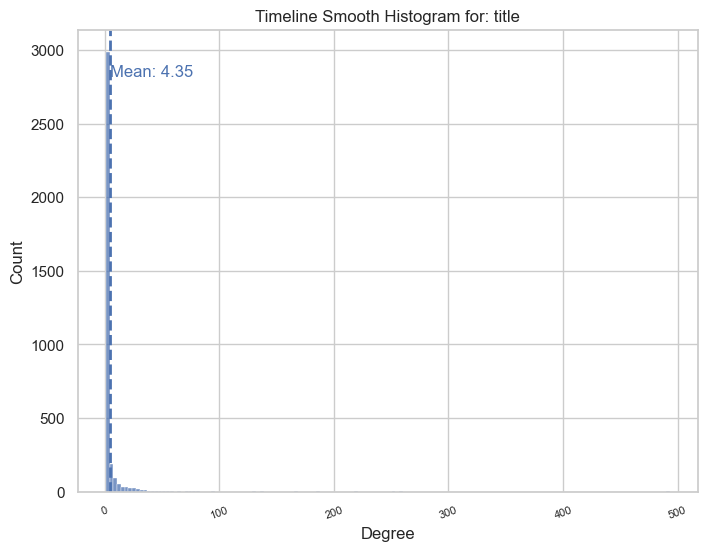
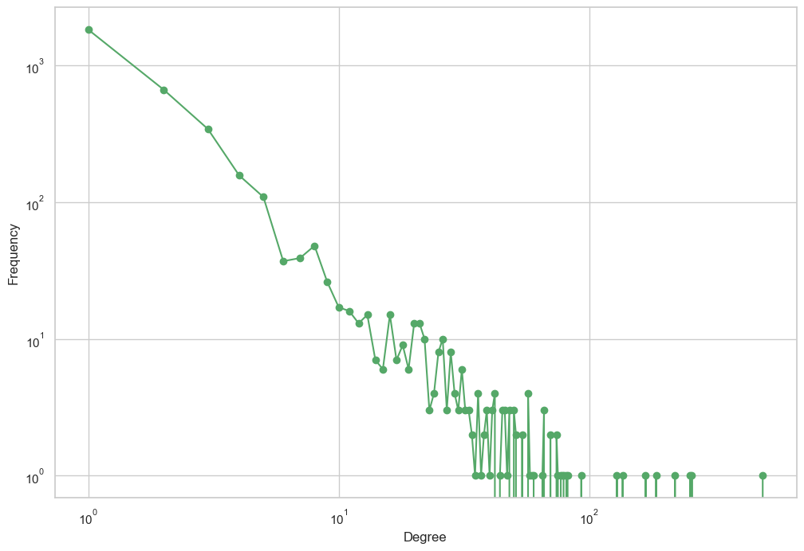
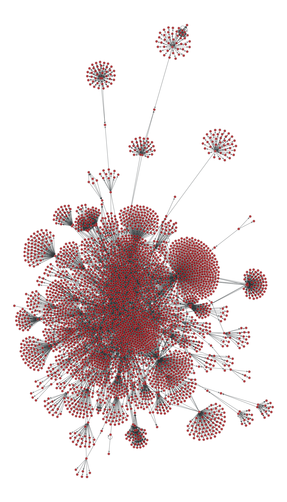
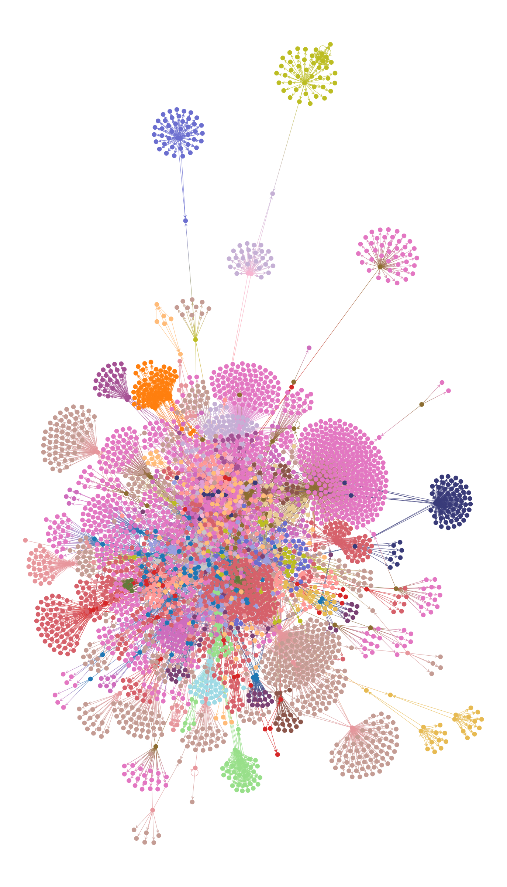
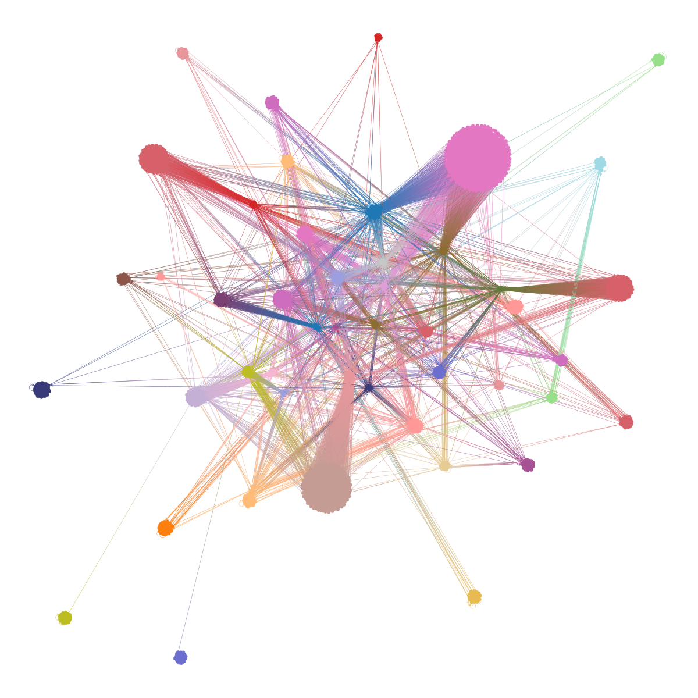
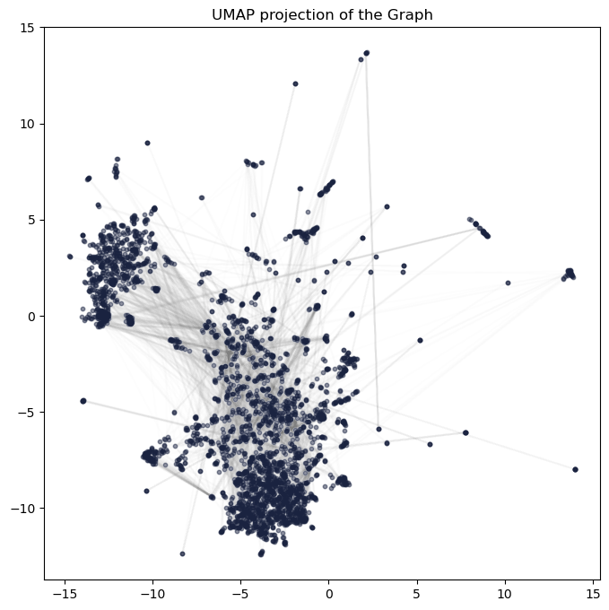

zsh:1: command not found: mambazsh:1: command not found: mamba!pip install pyalex
!pip install opinionated
!pip install datamapplotRequirement already satisfied: pyalex in /Users/Noich001/miniforge3/envs/network_epist_playground/lib/python3.12/site-packages (0.14)
Requirement already satisfied: requests in /Users/Noich001/miniforge3/envs/network_epist_playground/lib/python3.12/site-packages (from pyalex) (2.32.3)
Requirement already satisfied: urllib3 in /Users/Noich001/miniforge3/envs/network_epist_playground/lib/python3.12/site-packages (from pyalex) (2.2.1)
Requirement already satisfied: charset-normalizer<4,>=2 in /Users/Noich001/miniforge3/envs/network_epist_playground/lib/python3.12/site-packages (from requests->pyalex) (3.3.2)
Requirement already satisfied: idna<4,>=2.5 in /Users/Noich001/miniforge3/envs/network_epist_playground/lib/python3.12/site-packages (from requests->pyalex) (3.7)
Requirement already satisfied: certifi>=2017.4.17 in /Users/Noich001/miniforge3/envs/network_epist_playground/lib/python3.12/site-packages (from requests->pyalex) (2024.2.2)
Requirement already satisfied: opinionated in /Users/Noich001/miniforge3/envs/network_epist_playground/lib/python3.12/site-packages (0.0.3.0)
Requirement already satisfied: matplotlib in /opt/homebrew/opt/graph-tool/libexec/lib/python3.12/site-packages (from opinionated) (3.8.4)
Requirement already satisfied: seaborn in /Users/Noich001/miniforge3/envs/network_epist_playground/lib/python3.12/site-packages (from opinionated) (0.13.2)
Requirement already satisfied: requests in /Users/Noich001/miniforge3/envs/network_epist_playground/lib/python3.12/site-packages (from opinionated) (2.32.3)
Requirement already satisfied: colormaps in /Users/Noich001/miniforge3/envs/network_epist_playground/lib/python3.12/site-packages (from opinionated) (0.4.1)
Requirement already satisfied: fonttools in /opt/homebrew/opt/graph-tool/libexec/lib/python3.12/site-packages (from opinionated) (4.51.0)
Requirement already satisfied: numpy in /Users/Noich001/miniforge3/envs/network_epist_playground/lib/python3.12/site-packages (from colormaps->opinionated) (1.26.4)
Requirement already satisfied: contourpy>=1.0.1 in /opt/homebrew/opt/graph-tool/libexec/lib/python3.12/site-packages (from matplotlib->opinionated) (1.2.1)
Requirement already satisfied: cycler>=0.10 in /opt/homebrew/opt/graph-tool/libexec/lib/python3.12/site-packages (from matplotlib->opinionated) (0.12.1)
Requirement already satisfied: kiwisolver>=1.3.1 in /opt/homebrew/opt/graph-tool/libexec/lib/python3.12/site-packages (from matplotlib->opinionated) (1.4.5)
Requirement already satisfied: packaging>=20.0 in /opt/homebrew/opt/graph-tool/libexec/lib/python3.12/site-packages (from matplotlib->opinionated) (24.0)
Requirement already satisfied: pillow>=8 in /Users/Noich001/miniforge3/envs/network_epist_playground/lib/python3.12/site-packages (from matplotlib->opinionated) (10.3.0)
Requirement already satisfied: pyparsing>=2.3.1 in /opt/homebrew/opt/graph-tool/libexec/lib/python3.12/site-packages (from matplotlib->opinionated) (3.1.2)
Requirement already satisfied: python-dateutil>=2.7 in /opt/homebrew/opt/graph-tool/libexec/lib/python3.12/site-packages (from matplotlib->opinionated) (2.9.0.post0)
Requirement already satisfied: charset-normalizer<4,>=2 in /Users/Noich001/miniforge3/envs/network_epist_playground/lib/python3.12/site-packages (from requests->opinionated) (3.3.2)
Requirement already satisfied: idna<4,>=2.5 in /Users/Noich001/miniforge3/envs/network_epist_playground/lib/python3.12/site-packages (from requests->opinionated) (3.7)
Requirement already satisfied: urllib3<3,>=1.21.1 in /Users/Noich001/miniforge3/envs/network_epist_playground/lib/python3.12/site-packages (from requests->opinionated) (2.2.1)
Requirement already satisfied: certifi>=2017.4.17 in /Users/Noich001/miniforge3/envs/network_epist_playground/lib/python3.12/site-packages (from requests->opinionated) (2024.2.2)
Requirement already satisfied: pandas>=1.2 in /Users/Noich001/miniforge3/envs/network_epist_playground/lib/python3.12/site-packages (from seaborn->opinionated) (2.2.2)
Requirement already satisfied: pytz>=2020.1 in /Users/Noich001/miniforge3/envs/network_epist_playground/lib/python3.12/site-packages (from pandas>=1.2->seaborn->opinionated) (2024.1)
Requirement already satisfied: tzdata>=2022.7 in /Users/Noich001/miniforge3/envs/network_epist_playground/lib/python3.12/site-packages (from pandas>=1.2->seaborn->opinionated) (2024.1)
Requirement already satisfied: six>=1.5 in /opt/homebrew/opt/graph-tool/libexec/lib/python3.12/site-packages (from python-dateutil>=2.7->matplotlib->opinionated) (1.16.0)
Collecting datamapplot
Using cached datamapplot-0.3.0-py3-none-any.whl.metadata (5.9 kB)
Requirement already satisfied: numpy>=1.21 in /Users/Noich001/miniforge3/envs/network_epist_playground/lib/python3.12/site-packages (from datamapplot) (1.26.4)
Requirement already satisfied: matplotlib>=3.8 in /opt/homebrew/opt/graph-tool/libexec/lib/python3.12/site-packages (from datamapplot) (3.8.4)
Requirement already satisfied: scikit-learn>=1.1 in /Users/Noich001/miniforge3/envs/network_epist_playground/lib/python3.12/site-packages (from datamapplot) (1.5.0)
Requirement already satisfied: pandas>=1.0 in /Users/Noich001/miniforge3/envs/network_epist_playground/lib/python3.12/site-packages (from datamapplot) (2.2.2)
Collecting datashader>=0.16 (from datamapplot)
Downloading datashader-0.16.2-py2.py3-none-any.whl.metadata (13 kB)
Collecting colorspacious>=1.1 (from datamapplot)
Using cached colorspacious-1.1.2-py2.py3-none-any.whl.metadata (3.6 kB)
Collecting scikit-image>=0.22 (from datamapplot)
Downloading scikit_image-0.23.2-cp312-cp312-macosx_12_0_arm64.whl.metadata (14 kB)
Requirement already satisfied: numba>=0.56 in /Users/Noich001/miniforge3/envs/network_epist_playground/lib/python3.12/site-packages (from datamapplot) (0.59.1)
Collecting pylabeladjust (from datamapplot)
Using cached pylabeladjust-0.1.13-py3-none-any.whl.metadata (8.2 kB)
Requirement already satisfied: requests in /Users/Noich001/miniforge3/envs/network_epist_playground/lib/python3.12/site-packages (from datamapplot) (2.32.3)
Requirement already satisfied: jinja2 in /Users/Noich001/miniforge3/envs/network_epist_playground/lib/python3.12/site-packages (from datamapplot) (3.1.4)
Collecting colorcet (from datashader>=0.16->datamapplot)
Using cached colorcet-3.1.0-py3-none-any.whl.metadata (6.3 kB)
Collecting dask (from datashader>=0.16->datamapplot)
Downloading dask-2024.5.2-py3-none-any.whl.metadata (3.8 kB)
Collecting multipledispatch (from datashader>=0.16->datamapplot)
Using cached multipledispatch-1.0.0-py3-none-any.whl.metadata (3.8 kB)
Collecting param (from datashader>=0.16->datamapplot)
Using cached param-2.1.0-py3-none-any.whl.metadata (5.9 kB)
Requirement already satisfied: pillow in /Users/Noich001/miniforge3/envs/network_epist_playground/lib/python3.12/site-packages (from datashader>=0.16->datamapplot) (10.3.0)
Collecting pyct (from datashader>=0.16->datamapplot)
Using cached pyct-0.5.0-py2.py3-none-any.whl.metadata (7.4 kB)
Requirement already satisfied: scipy in /Users/Noich001/miniforge3/envs/network_epist_playground/lib/python3.12/site-packages (from datashader>=0.16->datamapplot) (1.13.1)
Collecting toolz (from datashader>=0.16->datamapplot)
Using cached toolz-0.12.1-py3-none-any.whl.metadata (5.1 kB)
Collecting xarray (from datashader>=0.16->datamapplot)
Using cached xarray-2024.5.0-py3-none-any.whl.metadata (11 kB)
Requirement already satisfied: contourpy>=1.0.1 in /opt/homebrew/opt/graph-tool/libexec/lib/python3.12/site-packages (from matplotlib>=3.8->datamapplot) (1.2.1)
Requirement already satisfied: cycler>=0.10 in /opt/homebrew/opt/graph-tool/libexec/lib/python3.12/site-packages (from matplotlib>=3.8->datamapplot) (0.12.1)
Requirement already satisfied: fonttools>=4.22.0 in /opt/homebrew/opt/graph-tool/libexec/lib/python3.12/site-packages (from matplotlib>=3.8->datamapplot) (4.51.0)
Requirement already satisfied: kiwisolver>=1.3.1 in /opt/homebrew/opt/graph-tool/libexec/lib/python3.12/site-packages (from matplotlib>=3.8->datamapplot) (1.4.5)
Requirement already satisfied: packaging>=20.0 in /opt/homebrew/opt/graph-tool/libexec/lib/python3.12/site-packages (from matplotlib>=3.8->datamapplot) (24.0)
Requirement already satisfied: pyparsing>=2.3.1 in /opt/homebrew/opt/graph-tool/libexec/lib/python3.12/site-packages (from matplotlib>=3.8->datamapplot) (3.1.2)
Requirement already satisfied: python-dateutil>=2.7 in /opt/homebrew/opt/graph-tool/libexec/lib/python3.12/site-packages (from matplotlib>=3.8->datamapplot) (2.9.0.post0)
Requirement already satisfied: llvmlite<0.43,>=0.42.0dev0 in /Users/Noich001/miniforge3/envs/network_epist_playground/lib/python3.12/site-packages (from numba>=0.56->datamapplot) (0.42.0)
Requirement already satisfied: pytz>=2020.1 in /Users/Noich001/miniforge3/envs/network_epist_playground/lib/python3.12/site-packages (from pandas>=1.0->datamapplot) (2024.1)
Requirement already satisfied: tzdata>=2022.7 in /Users/Noich001/miniforge3/envs/network_epist_playground/lib/python3.12/site-packages (from pandas>=1.0->datamapplot) (2024.1)
Requirement already satisfied: networkx>=2.8 in /Users/Noich001/miniforge3/envs/network_epist_playground/lib/python3.12/site-packages (from scikit-image>=0.22->datamapplot) (3.3)
Collecting imageio>=2.33 (from scikit-image>=0.22->datamapplot)
Using cached imageio-2.34.1-py3-none-any.whl.metadata (4.9 kB)
Collecting tifffile>=2022.8.12 (from scikit-image>=0.22->datamapplot)
Downloading tifffile-2024.5.22-py3-none-any.whl.metadata (30 kB)
Collecting lazy-loader>=0.4 (from scikit-image>=0.22->datamapplot)
Using cached lazy_loader-0.4-py3-none-any.whl.metadata (7.6 kB)
Requirement already satisfied: joblib>=1.2.0 in /Users/Noich001/miniforge3/envs/network_epist_playground/lib/python3.12/site-packages (from scikit-learn>=1.1->datamapplot) (1.4.2)
Requirement already satisfied: threadpoolctl>=3.1.0 in /Users/Noich001/miniforge3/envs/network_epist_playground/lib/python3.12/site-packages (from scikit-learn>=1.1->datamapplot) (3.5.0)
Requirement already satisfied: MarkupSafe>=2.0 in /Users/Noich001/miniforge3/envs/network_epist_playground/lib/python3.12/site-packages (from jinja2->datamapplot) (2.1.5)
Collecting Pyqtree<2.0.0,>=1.0.0 (from pylabeladjust->datamapplot)
Using cached Pyqtree-1.0.0.tar.gz (5.2 kB)
Preparing metadata (setup.py) ... done
Requirement already satisfied: tqdm<5.0.0,>=4.66.2 in /Users/Noich001/miniforge3/envs/network_epist_playground/lib/python3.12/site-packages (from pylabeladjust->datamapplot) (4.66.4)
Requirement already satisfied: charset-normalizer<4,>=2 in /Users/Noich001/miniforge3/envs/network_epist_playground/lib/python3.12/site-packages (from requests->datamapplot) (3.3.2)
Requirement already satisfied: idna<4,>=2.5 in /Users/Noich001/miniforge3/envs/network_epist_playground/lib/python3.12/site-packages (from requests->datamapplot) (3.7)
Requirement already satisfied: urllib3<3,>=1.21.1 in /Users/Noich001/miniforge3/envs/network_epist_playground/lib/python3.12/site-packages (from requests->datamapplot) (2.2.1)
Requirement already satisfied: certifi>=2017.4.17 in /Users/Noich001/miniforge3/envs/network_epist_playground/lib/python3.12/site-packages (from requests->datamapplot) (2024.2.2)
Requirement already satisfied: six>=1.5 in /opt/homebrew/opt/graph-tool/libexec/lib/python3.12/site-packages (from python-dateutil>=2.7->matplotlib>=3.8->datamapplot) (1.16.0)
Collecting click>=8.1 (from dask->datashader>=0.16->datamapplot)
Using cached click-8.1.7-py3-none-any.whl.metadata (3.0 kB)
Collecting cloudpickle>=1.5.0 (from dask->datashader>=0.16->datamapplot)
Using cached cloudpickle-3.0.0-py3-none-any.whl.metadata (7.0 kB)
Requirement already satisfied: fsspec>=2021.09.0 in /Users/Noich001/miniforge3/envs/network_epist_playground/lib/python3.12/site-packages (from dask->datashader>=0.16->datamapplot) (2024.6.0)
Collecting partd>=1.2.0 (from dask->datashader>=0.16->datamapplot)
Using cached partd-1.4.2-py3-none-any.whl.metadata (4.6 kB)
Requirement already satisfied: pyyaml>=5.3.1 in /Users/Noich001/miniforge3/envs/network_epist_playground/lib/python3.12/site-packages (from dask->datashader>=0.16->datamapplot) (6.0.1)
Collecting locket (from partd>=1.2.0->dask->datashader>=0.16->datamapplot)
Using cached locket-1.0.0-py2.py3-none-any.whl.metadata (2.8 kB)
Using cached datamapplot-0.3.0-py3-none-any.whl (36 kB)
Using cached colorspacious-1.1.2-py2.py3-none-any.whl (37 kB)
Downloading datashader-0.16.2-py2.py3-none-any.whl (18.3 MB)
━━━━━━━━━━━━━━━━━━━━━━━━━━━━━━━━━━━━━━━━ 18.3/18.3 MB 10.2 MB/s eta 0:00:0000:0100:01
Downloading scikit_image-0.23.2-cp312-cp312-macosx_12_0_arm64.whl (13.3 MB)
━━━━━━━━━━━━━━━━━━━━━━━━━━━━━━━━━━━━━━━━ 13.3/13.3 MB 71.2 MB/s eta 0:00:00a 0:00:01
Using cached pylabeladjust-0.1.13-py3-none-any.whl (19 kB)
Using cached imageio-2.34.1-py3-none-any.whl (313 kB)
Using cached lazy_loader-0.4-py3-none-any.whl (12 kB)
Downloading tifffile-2024.5.22-py3-none-any.whl (225 kB)
━━━━━━━━━━━━━━━━━━━━━━━━━━━━━━━━━━━━━━━━ 225.5/225.5 kB 19.8 MB/s eta 0:00:00
Using cached colorcet-3.1.0-py3-none-any.whl (260 kB)
Downloading dask-2024.5.2-py3-none-any.whl (1.2 MB)
━━━━━━━━━━━━━━━━━━━━━━━━━━━━━━━━━━━━━━━━ 1.2/1.2 MB 45.4 MB/s eta 0:00:00
Using cached toolz-0.12.1-py3-none-any.whl (56 kB)
Using cached multipledispatch-1.0.0-py3-none-any.whl (12 kB)
Using cached param-2.1.0-py3-none-any.whl (116 kB)
Using cached pyct-0.5.0-py2.py3-none-any.whl (15 kB)
Using cached xarray-2024.5.0-py3-none-any.whl (1.2 MB)
Using cached click-8.1.7-py3-none-any.whl (97 kB)
Using cached cloudpickle-3.0.0-py3-none-any.whl (20 kB)
Using cached partd-1.4.2-py3-none-any.whl (18 kB)
Using cached locket-1.0.0-py2.py3-none-any.whl (4.4 kB)
Building wheels for collected packages: Pyqtree
Building wheel for Pyqtree (setup.py) ... done
Created wheel for Pyqtree: filename=Pyqtree-1.0.0-py3-none-any.whl size=5969 sha256=2934ef9a36090d70a655b846bd680a0049b877d8458d776d2bdbcd63ff287949
Stored in directory: /Users/Noich001/Library/Caches/pip/wheels/86/02/24/506ac193949f48c8bec599b613d722bd64a83063a190b3bff7
Successfully built Pyqtree
Installing collected packages: Pyqtree, multipledispatch, toolz, tifffile, param, locket, lazy-loader, imageio, colorspacious, colorcet, cloudpickle, click, scikit-image, pyct, partd, xarray, pylabeladjust, dask, datashader, datamapplot
Successfully installed Pyqtree-1.0.0 click-8.1.7 cloudpickle-3.0.0 colorcet-3.1.0 colorspacious-1.1.2 dask-2024.5.2 datamapplot-0.3.0 datashader-0.16.2 imageio-2.34.1 lazy-loader-0.4 locket-1.0.0 multipledispatch-1.0.0 param-2.1.0 partd-1.4.2 pyct-0.5.0 pylabeladjust-0.1.13 scikit-image-0.23.2 tifffile-2024.5.22 toolz-0.12.1 xarray-2024.5.0# https://openalex.org/
from pyalex import Works, Authors, Sources, Institutions, Concepts, Publishers, Funders
import pyalex
pyalex.config.email = "maximilian.noichl@uni-bamberg.de"
from itertools import chain
from tqdm.auto import tqdm
from compress_pickle import dump, load
/Users/Noich001/miniforge3/envs/network_epist_playground/lib/python3.12/site-packages/tqdm/auto.py:21: TqdmWarning: IProgress not found. Please update jupyter and ipywidgets. See https://ipywidgets.readthedocs.io/en/stable/user_install.html
from .autonotebook import tqdm as notebook_tqdmfrom pyalex import Works
import pandas as pd
# https://openalex.org/works?page=1&filter=default.search%3A%22Personality%22%20AND%20%22Life%20Outcomes%22
# Create a query with the specified search terms
query = Works().search(['Perceptron']).filter(publication_year="<1979")
#.search(['"Personality" AND "Life outcomes"']).filter(publication_year=">2020")
records= []
for record in chain(*query.paginate(per_page=99,n_max=None)):
records.append(record)
print(len(records))1
2
3
4
5
6
7
8
9
10
11
12
13
14
15
16
17
18
19
20
21
22
23
24
25
26
27
28
29
30
31
32
33
34
35
36
37
38
39
40
41
42
43
44
45
46
47
48
49
50
51
52
53
54
55
56
57
58
59
60
61
62
63
64
65
66
67
68
69
70
71
72
73
74
75
76
77
78
79
80
81
82
83
84
85
86
87
88
89
90
91
92
93
94
95
96
97
98
99
100
101
102
103
104
105
106
107
108
109
110
111
112
113
114
115
116
117
118
119
120
121
122
123
124
125
126
127
128
129
130
131
132
133
134
135
136
137
138
139
140
141
142
143
144
145
146
147
148
149
150
151
152
153
154
155
156
157
158
159
160
161
162
163
164
165
166
167
168
169
170
171
172
173
174
175
176
177
178
179
180
181
182
183
184
185
186
187
188
189
190
191
192
193
194
195
196
197
198
199
200
201
202
203
204
205
206
207
208
209
210
211
212
213
214
215
216
217
218
219
220
221
222
223
224
225
226
227
228
229
230
231
232
233
234
235
236
237
238
239
240
241
242
243
244
245
246
247
248
249
250
251
252
253
254
255
256
257
258
259
260
261
262
263
264
265
266
267
268
269
270
271
272
273
274
275
276
277
278
279
280
281
282
283
284
285
286
287
288
289
290
291
292
293
294
295
296
297
298
299
300
301
302
303
304
305
306
307
308
309
310
311
312
313
314
315
316
317
318
319
320
321
322
323
324
325
326
327
328
329
330
331
332
333
334
335
336
337
338
339
340
341
342
343
344
345
346
347
348
349
350
351
352
353
354
355
356
357
358
359
360
361
362
363
364
365
366
367
368
369
370
371
372
373
374
375
376
377
378
379
380
381
382
383
384
385
386
387
388
389
390
391
392
393
394
395
396
397
398
399
400
401
402
403
404
405
406
407
408
409
410
411
412
413
414
415
416
417
418
419
420
421
422
423
424
425
426
427
428
429
430
431
432
433
434
435
436
437
438
439
440
441
442
443
444
445
446
447
448
449
450
451
452
453
454
455
456
457
458
459
460
461
462
463
464
465
466
467
468
469
470
471
472
473
474
475
476
477
478
479
480
481
482
483
484
485
486
487
488
489
490
491
492
493
494
495
496
497
498
499
500
501
502
503
504
505
506
507
508
509
510
511
512
513
514
515
516
517
518
519
520
521
522
523
524
525
526
527
528
529
530
531
532
533
534
535
536
537
538
539
540
541
542
543
544
545
546
547
548
549
550
551
552
553
554
555
556
557
558
559
560
561
562
563
564
565
566
567
568
569
570
571
572
573
574
575
576
577
578
579
580
581
582
583
584
585
586
587
588
589
590
591
592
593
594
595
596
597
598
599
600
601
602
603
604
605
606
607
608
609
610
611
612
613
614
615
616
617
618
619
620
621
622
623
624
625
626
627
628
629
630
631
632
633
634
635
636
637
638
639
640
641
642
643
644
645
646
647
648
649
650
651
652
653
654
655
656
657
658
659
660
661
662
663
664
665
666
667
668
669
670
671
672
673
674
675
676
677
678
679
680
681
682
683
684
685
686
687
688
689
690
691
692
693
694
695
696
697
698
699
700
701df = pd.DataFrame(records)
df| id | doi | title | display_name | relevance_score | publication_year | publication_date | ids | language | primary_location | ... | versions | referenced_works_count | referenced_works | related_works | ngrams_url | abstract_inverted_index | cited_by_api_url | counts_by_year | updated_date | created_date | |
|---|---|---|---|---|---|---|---|---|---|---|---|---|---|---|---|---|---|---|---|---|---|
| 0 | https://openalex.org/W2040870580 | https://doi.org/10.1037/h0042519 | The perceptron: A probabilistic model for info... | The perceptron: A probabilistic model for info... | 6109.080600 | 1958 | 1958-01-01 | {'openalex': 'https://openalex.org/W2040870580... | en | {'is_oa': False, 'landing_page_url': 'https://... | ... | [] | 15 | [https://openalex.org/W1570445666, https://ope... | [https://openalex.org/W4387297750, https://ope... | https://api.openalex.org/works/W2040870580/ngrams | None | https://api.openalex.org/works?filter=cites:W2... | [{'year': 2024, 'cited_by_count': 275}, {'year... | 2024-06-05T07:15:00.533904 | 2016-06-24 |
| 1 | https://openalex.org/W2086789740 | None | Perceptrons: An Introduction to Computational ... | Perceptrons: An Introduction to Computational ... | 3898.089800 | 1969 | 1969-01-01 | {'openalex': 'https://openalex.org/W2086789740... | en | {'is_oa': False, 'landing_page_url': 'http://c... | ... | [] | 0 | [] | [https://openalex.org/W3207342693, https://ope... | https://api.openalex.org/works/W2086789740/ngrams | {'Cambridge,': [0], 'Mass.:': [1], 'MIT': [2],... | https://api.openalex.org/works?filter=cites:W2... | [{'year': 2024, 'cited_by_count': 13}, {'year'... | 2024-06-09T18:38:25.842492 | 2016-06-24 |
| 2 | https://openalex.org/W2008353316 | https://doi.org/10.2307/1419730 | Principles of Neurodynamics: Perceptrons and t... | Principles of Neurodynamics: Perceptrons and t... | 2515.316200 | 1963 | 1963-12-01 | {'openalex': 'https://openalex.org/W2008353316... | en | {'is_oa': False, 'landing_page_url': 'https://... | ... | [] | 0 | [] | [https://openalex.org/W2931662336, https://ope... | https://api.openalex.org/works/W2008353316/ngrams | {'Abstract': [0], ':': [1], 'Part': [2, 104, 1... | https://api.openalex.org/works?filter=cites:W2... | [{'year': 2024, 'cited_by_count': 9}, {'year':... | 2024-06-05T08:54:59.333629 | 2016-06-24 |
| 3 | https://openalex.org/W4233045210 | https://doi.org/10.21236/ad0256582 | PRINCIPLES OF NEURODYNAMICS. PERCEPTRONS AND T... | PRINCIPLES OF NEURODYNAMICS. PERCEPTRONS AND T... | 2183.452400 | 1961 | 1961-03-15 | {'openalex': 'https://openalex.org/W4233045210... | en | {'is_oa': False, 'landing_page_url': 'https://... | ... | [] | 0 | [] | [https://openalex.org/W3194278305, https://ope... | https://api.openalex.org/works/W4233045210/ngrams | None | https://api.openalex.org/works?filter=cites:W4... | [{'year': 2024, 'cited_by_count': 31}, {'year'... | 2024-06-05T08:22:54.045829 | 2022-05-12 |
| 4 | https://openalex.org/W2056003475 | https://doi.org/10.1103/revmodphys.34.123 | The Perceptron: A Model for Brain Functioning. I | The Perceptron: A Model for Brain Functioning. I | 1295.476600 | 1962 | 1962-01-01 | {'openalex': 'https://openalex.org/W2056003475... | en | {'is_oa': False, 'landing_page_url': 'https://... | ... | [] | 29 | [https://openalex.org/W118296737, https://open... | [https://openalex.org/W54078636, https://opena... | https://api.openalex.org/works/W2056003475/ngrams | None | https://api.openalex.org/works?filter=cites:W2... | [{'year': 2024, 'cited_by_count': 1}, {'year':... | 2024-05-22T06:54:39.787596 | 2016-06-24 |
| ... | ... | ... | ... | ... | ... | ... | ... | ... | ... | ... | ... | ... | ... | ... | ... | ... | ... | ... | ... | ... | ... |
| 696 | https://openalex.org/W4240120616 | https://doi.org/10.1007/bf02474354 | Bibliography and abstracts | Bibliography and abstracts | 0.307640 | 1965 | 1965-01-01 | {'openalex': 'https://openalex.org/W4240120616... | en | {'is_oa': False, 'landing_page_url': 'https://... | ... | [] | 0 | [] | [https://openalex.org/W4302315688, https://ope... | https://api.openalex.org/works/W4240120616/ngrams | None | https://api.openalex.org/works?filter=cites:W4... | [] | 2024-05-21T06:08:16.461724 | 2022-05-12 |
| 697 | https://openalex.org/W2071444489 | https://doi.org/10.1109/pgec.1963.263582 | Abstracts of Current Computer Literature | Abstracts of Current Computer Literature | 0.307522 | 1963 | 1963-06-01 | {'openalex': 'https://openalex.org/W2071444489... | en | {'is_oa': False, 'landing_page_url': 'https://... | ... | [] | 0 | [] | [https://openalex.org/W4391913857, https://ope... | https://api.openalex.org/works/W2071444489/ngrams | None | https://api.openalex.org/works?filter=cites:W2... | [] | 2024-05-16T17:00:58.117293 | 2016-06-24 |
| 698 | https://openalex.org/W2083386541 | https://doi.org/10.1109/pgec.1963.263401 | Abstracts of Current Computer Literature | Abstracts of Current Computer Literature | 0.290180 | 1963 | 1963-02-01 | {'openalex': 'https://openalex.org/W2083386541... | en | {'is_oa': False, 'landing_page_url': 'https://... | ... | [] | 0 | [] | [https://openalex.org/W4395014643, https://ope... | https://api.openalex.org/works/W2083386541/ngrams | None | https://api.openalex.org/works?filter=cites:W2... | [] | 2024-05-18T12:16:25.819429 | 2016-06-24 |
| 699 | https://openalex.org/W2794370213 | https://doi.org/10.6028/nbs.tn.193 | A bibliography of foreign developments in mach... | A bibliography of foreign developments in mach... | 0.254770 | 1963 | 1963-01-01 | {'openalex': 'https://openalex.org/W2794370213... | en | {'is_oa': True, 'landing_page_url': 'https://d... | ... | [] | 0 | [] | [https://openalex.org/W4386247111, https://ope... | https://api.openalex.org/works/W2794370213/ngrams | {'The': [0, 151], 'bibliography': [1, 87], 'pr... | https://api.openalex.org/works?filter=cites:W2... | [] | 2024-05-10T12:57:59.217348 | 2018-03-29 |
| 700 | https://openalex.org/W4247794185 | https://doi.org/10.6028/nbs.tn.462 | Nonnumeric data processing in Europe: | Nonnumeric data processing in Europe: | 0.193156 | 1968 | 1968-01-01 | {'openalex': 'https://openalex.org/W4247794185... | en | {'is_oa': True, 'landing_page_url': 'https://d... | ... | [] | 0 | [] | [https://openalex.org/W2899084033, https://ope... | https://api.openalex.org/works/W4247794185/ngrams | {'United': [0], 'Kingdom,': [1], 'Belgium,': [... | https://api.openalex.org/works?filter=cites:W4... | [] | 2024-05-10T02:42:08.349164 | 2022-05-12 |
701 rows × 49 columns
all_referenced_works = [x for y in df['referenced_works'] for x in y]
# all_unique_referenced_works = list(set(all_referenced_works))
# from collections import Counter
# def remove_less_frequent_items(lst, n):
# counts = Counter(lst)
# return [item for item in lst if counts[item] > n]
# # Set to 0 for full set:
# n = 0
# filtered_referenced_works = remove_less_frequent_items(all_referenced_works, n) # remove
# print(len(filtered_referenced_works))
filtered_referenced_works = list(set(all_referenced_works)) #remove duplicates from download list.
additional_works_to_download = [x for x in filtered_referenced_works if x not in df['id']]
all_aditional_records =[]
block_len = 99
# Loop in blocks of 50
for i in tqdm(range(0, len(additional_works_to_download), block_len)):
sublist = additional_works_to_download[i:i+block_len]
ID_str = "|".join([x.replace('https://openalex.org/','') for x in sublist])
record_list = Works().filter(openalex_id=ID_str).get(per_page=block_len)
print(len(record_list))
for this_record in record_list:
all_aditional_records.append(this_record)
0%| | 0/37 [00:00<?, ?it/s] 3%|▎ | 1/37 [00:01<00:52, 1.47s/it] 5%|▌ | 2/37 [00:02<00:47, 1.35s/it] 8%|▊ | 3/37 [00:04<00:45, 1.33s/it] 11%|█ | 4/37 [00:05<00:44, 1.35s/it] 14%|█▎ | 5/37 [00:06<00:42, 1.32s/it] 16%|█▌ | 6/37 [00:07<00:40, 1.31s/it] 19%|█▉ | 7/37 [00:09<00:39, 1.33s/it] 22%|██▏ | 8/37 [00:10<00:38, 1.32s/it] 24%|██▍ | 9/37 [00:12<00:38, 1.36s/it] 27%|██▋ | 10/37 [00:13<00:37, 1.40s/it] 30%|██▉ | 11/37 [00:15<00:37, 1.45s/it] 32%|███▏ | 12/37 [00:16<00:35, 1.43s/it] 35%|███▌ | 13/37 [00:17<00:33, 1.38s/it] 38%|███▊ | 14/37 [00:19<00:32, 1.41s/it] 41%|████ | 15/37 [00:20<00:30, 1.37s/it] 43%|████▎ | 16/37 [00:21<00:28, 1.34s/it] 46%|████▌ | 17/37 [00:23<00:27, 1.37s/it] 49%|████▊ | 18/37 [00:24<00:26, 1.39s/it] 51%|█████▏ | 19/37 [00:26<00:25, 1.39s/it] 54%|█████▍ | 20/37 [00:27<00:23, 1.39s/it] 57%|█████▋ | 21/37 [00:29<00:24, 1.52s/it] 59%|█████▉ | 22/37 [00:30<00:21, 1.46s/it] 62%|██████▏ | 23/37 [00:32<00:20, 1.45s/it] 65%|██████▍ | 24/37 [00:33<00:18, 1.44s/it] 68%|██████▊ | 25/37 [00:34<00:16, 1.39s/it] 70%|███████ | 26/37 [00:35<00:14, 1.33s/it] 73%|███████▎ | 27/37 [00:37<00:13, 1.37s/it] 76%|███████▌ | 28/37 [00:39<00:13, 1.45s/it] 78%|███████▊ | 29/37 [00:40<00:11, 1.41s/it] 81%|████████ | 30/37 [00:41<00:09, 1.37s/it] 84%|████████▍ | 31/37 [00:42<00:08, 1.36s/it] 86%|████████▋ | 32/37 [00:44<00:07, 1.43s/it] 89%|████████▉ | 33/37 [02:00<01:35, 23.91s/it] 92%|█████████▏| 34/37 [02:02<00:51, 17.20s/it] 95%|█████████▍| 35/37 [02:03<00:24, 12.44s/it] 97%|█████████▋| 36/37 [02:05<00:09, 9.08s/it]100%|██████████| 37/37 [02:05<00:00, 3.40s/it]99
99
99
98
99
99
99
99
99
98
99
99
99
98
99
99
98
99
98
99
99
98
99
99
99
99
98
99
99
99
99
98
98
99
99
98
11all_additional_records_df = pd.DataFrame(all_aditional_records)all_additional_records_df| id | doi | title | display_name | publication_year | publication_date | ids | language | primary_location | type | ... | referenced_works_count | referenced_works | related_works | ngrams_url | abstract_inverted_index | cited_by_api_url | counts_by_year | updated_date | created_date | is_authors_truncated | |
|---|---|---|---|---|---|---|---|---|---|---|---|---|---|---|---|---|---|---|---|---|---|
| 0 | https://openalex.org/W2061171222 | https://doi.org/10.1090/s0025-5718-1965-0178586-1 | An algorithm for the machine calculation of co... | An algorithm for the machine calculation of co... | 1965 | 1965-01-01 | {'openalex': 'https://openalex.org/W2061171222... | en | {'is_oa': True, 'landing_page_url': 'https://d... | article | ... | 1 | [https://openalex.org/W2512335183] | [https://openalex.org/W4245490552, https://ope... | https://api.openalex.org/works/W2061171222/ngrams | {'An': [0], 'efficient': [1], 'method': [2], '... | https://api.openalex.org/works?filter=cites:W2... | [{'year': 2024, 'cited_by_count': 135}, {'year... | 2024-06-10T09:32:28.944608 | 2016-06-24 | NaN |
| 1 | https://openalex.org/W2170716495 | None | Aspects of the Theory of Syntax | Aspects of the Theory of Syntax | 1965 | 1965-05-01 | {'openalex': 'https://openalex.org/W2170716495... | en | {'is_oa': False, 'landing_page_url': 'https://... | book | ... | 0 | [] | [https://openalex.org/W2264742718, https://ope... | https://api.openalex.org/works/W2170716495/ngrams | {'Abstract': [0], ':': [1], 'Contents:': [2], ... | https://api.openalex.org/works?filter=cites:W2... | [{'year': 2023, 'cited_by_count': 1}, {'year':... | 2024-06-04T19:19:35.732868 | 2016-06-24 | NaN |
| 2 | https://openalex.org/W4299725134 | https://doi.org/10.2307/2091967 | Social Theory and Social Structure. | Social Theory and Social Structure. | 1969 | 1969-08-01 | {'openalex': 'https://openalex.org/W4299725134... | en | {'is_oa': False, 'landing_page_url': 'https://... | article | ... | 0 | [] | [https://openalex.org/W2931662336, https://ope... | https://api.openalex.org/works/W4299725134/ngrams | None | https://api.openalex.org/works?filter=cites:W4... | [{'year': 2024, 'cited_by_count': 64}, {'year'... | 2024-06-05T06:39:23.014931 | 2022-10-03 | NaN |
| 3 | https://openalex.org/W1974511160 | https://doi.org/10.1017/s0305004100030401 | A generalized inverse for matrices | A generalized inverse for matrices | 1955 | 1955-07-01 | {'openalex': 'https://openalex.org/W1974511160... | en | {'is_oa': True, 'landing_page_url': 'https://d... | article | ... | 6 | [https://openalex.org/W1534337931, https://ope... | [https://openalex.org/W4385474376, https://ope... | https://api.openalex.org/works/W1974511160/ngrams | {'This': [0, 22], 'paper': [1], 'describes': [... | https://api.openalex.org/works?filter=cites:W1... | [{'year': 2024, 'cited_by_count': 67}, {'year'... | 2024-06-06T22:36:52.721309 | 2016-06-24 | NaN |
| 4 | https://openalex.org/W1969005071 | https://doi.org/10.1016/s0019-9958(67)91165-5 | Language identification in the limit | Language identification in the limit | 1967 | 1967-05-01 | {'openalex': 'https://openalex.org/W1969005071... | en | {'is_oa': True, 'landing_page_url': 'https://d... | article | ... | 5 | [https://openalex.org/W1526146785, https://ope... | [https://openalex.org/W2748952813, https://ope... | https://api.openalex.org/works/W1969005071/ngrams | {'Language': [0], 'learnability': [1, 63], 'ha... | https://api.openalex.org/works?filter=cites:W1... | [{'year': 2024, 'cited_by_count': 36}, {'year'... | 2024-05-29T19:10:40.650356 | 2016-06-24 | NaN |
| ... | ... | ... | ... | ... | ... | ... | ... | ... | ... | ... | ... | ... | ... | ... | ... | ... | ... | ... | ... | ... | ... |
| 3560 | https://openalex.org/W1982436972 | https://doi.org/10.1007/bf00293848 | Über die Nachrichtenverarbeitung in der Nerven... | Über die Nachrichtenverarbeitung in der Nerven... | 1961 | 1961-01-01 | {'openalex': 'https://openalex.org/W1982436972... | de | {'is_oa': False, 'landing_page_url': 'https://... | article | ... | 5 | [https://openalex.org/W1976528839, https://ope... | [https://openalex.org/W3199170188, https://ope... | https://api.openalex.org/works/W1982436972/ngrams | None | https://api.openalex.org/works?filter=cites:W1... | [] | 2024-05-13T15:22:23.306106 | 2016-06-24 | NaN |
| 3561 | https://openalex.org/W2163999518 | https://doi.org/10.1109/tec.1959.5222056 | Synthesis of Minimal-State Machines | Synthesis of Minimal-State Machines | 1959 | 1959-12-01 | {'openalex': 'https://openalex.org/W2163999518... | en | {'is_oa': False, 'landing_page_url': 'https://... | article | ... | 9 | [https://openalex.org/W1981375334, https://ope... | [https://openalex.org/W843695103, https://open... | https://api.openalex.org/works/W2163999518/ngrams | {'A': [0], 'technique': [1, 72], 'is': [2, 18,... | https://api.openalex.org/works?filter=cites:W2... | [] | 2024-05-22T12:15:00.884517 | 2016-06-24 | NaN |
| 3562 | https://openalex.org/W2155306255 | https://doi.org/10.1109/tec.1958.5222530 | An Optimum Character Recognition System Using ... | An Optimum Character Recognition System Using ... | 1958 | 1958-06-01 | {'openalex': 'https://openalex.org/W2155306255... | en | {'is_oa': False, 'landing_page_url': 'https://... | article | ... | 2 | [https://openalex.org/W2147947791, https://ope... | [https://openalex.org/W4319998713, https://ope... | https://api.openalex.org/works/W2155306255/ngrams | None | https://api.openalex.org/works?filter=cites:W2... | [{'year': 2024, 'cited_by_count': 1}, {'year':... | 2024-06-06T14:48:15.895012 | 2016-06-24 | NaN |
| 3563 | https://openalex.org/W2139287113 | https://doi.org/10.1109/tac.1965.1098108 | A two-parameter adaptive system using a sinuso... | A two-parameter adaptive system using a sinuso... | 1965 | 1965-04-01 | {'openalex': 'https://openalex.org/W2139287113... | en | {'is_oa': False, 'landing_page_url': 'https://... | article | ... | 7 | [https://openalex.org/W1975026276, https://ope... | [https://openalex.org/W2517762225, https://ope... | https://api.openalex.org/works/W2139287113/ngrams | {'A': [0, 59], 'linear': [1], 'control': [2], ... | https://api.openalex.org/works?filter=cites:W2... | [] | 2024-05-24T18:59:24.651203 | 2016-06-24 | NaN |
| 3564 | https://openalex.org/W3027658741 | https://doi.org/10.2307/2022340 | Sense-Datum Theory and Observational Fact: Som... | Sense-Datum Theory and Observational Fact: Som... | 1958 | 1958-01-02 | {'openalex': 'https://openalex.org/W3027658741... | en | {'is_oa': False, 'landing_page_url': 'https://... | article | ... | 0 | [] | [https://openalex.org/W4385645709, https://ope... | https://api.openalex.org/works/W3027658741/ngrams | None | https://api.openalex.org/works?filter=cites:W3... | [] | 2024-05-20T01:02:45.102657 | 2020-05-29 | NaN |
3565 rows × 49 columns
all_additional_records_df.columnsIndex(['id', 'doi', 'title', 'display_name', 'publication_year',
'publication_date', 'ids', 'language', 'primary_location', 'type',
'type_crossref', 'indexed_in', 'open_access', 'authorships',
'countries_distinct_count', 'institutions_distinct_count',
'corresponding_author_ids', 'corresponding_institution_ids', 'apc_list',
'apc_paid', 'has_fulltext', 'fulltext_origin', 'cited_by_count',
'cited_by_percentile_year', 'biblio', 'is_retracted', 'is_paratext',
'primary_topic', 'topics', 'keywords', 'concepts', 'mesh',
'locations_count', 'locations', 'best_oa_location',
'sustainable_development_goals', 'grants', 'datasets', 'versions',
'referenced_works_count', 'referenced_works', 'related_works',
'ngrams_url', 'abstract_inverted_index', 'cited_by_api_url',
'counts_by_year', 'updated_date', 'created_date',
'is_authors_truncated'],
dtype='object')total_record_set = pd.concat([df, all_additional_records_df])import networkx as nx
import json
# Create a directed graph
G = nx.DiGraph()
# Add nodes and edges
for ix,row in tqdm(df.iterrows()):
for author in row['authorships']:
this_author = author['author']['id']
if this_author not in G.nodes():
G.add_node(this_author)
G.nodes()[this_author]['authored_paper_count'] = 1
G.nodes()[this_author]['cited_count'] = 0
G.nodes()[this_author]['titles'] = [row['title']]
else:
G.nodes()[this_author]['authored_paper_count'] += 1
G.nodes()[this_author]['titles'].append(row['title'])
for cited_work_id in row["referenced_works"]:
cited_work = all_additional_records_df[all_additional_records_df['id'] == cited_work_id] # This fails silently if citations are not present!
if len(cited_work) >= 1: # In case of multiple hits (shouldn't happen once sampling is fixed)
cited_work = cited_work.iloc[0]
for cited_author in cited_work['authorships']:
cited_author = cited_author['author']['id']
if cited_author not in G.nodes():
G.add_node(cited_author)
G.nodes()[cited_author]['cited_count'] = 1
G.nodes()[cited_author]['authored_paper_count'] = 0
G.nodes()[cited_author]['titles'] = [cited_work['title']]
else:
G.nodes()[cited_author]['cited_count'] += 1
G.nodes()[cited_author]['titles'].append(cited_work['title'])
if G.has_edge(this_author, cited_author): # edges go FROM citing TO cited
G[this_author][cited_author]['weight'] += 1
else:
G.add_edge(this_author, cited_author, weight=1)
# for
# G.add_node(item["id"]) # Add each work as a node
# for related in item["referenced_works"]:
# G.add_edge(item["id"], related) # Create an edge from this work to each related work
# # Optionally, you can print the nodes and edges to verify
print("Nodes in the network:")
print(len(G.nodes()))
# print("Edges in the network:")
# print(len(G.edges()))
G.nodes(data=True)
print("Edges in the network:")
print(len(G.edges()))701it [00:01, 362.07it/s]Nodes in the network:
4412
Edges in the network:
9106# Extract largest component:
largest_cc = max(nx.weakly_connected_components(G), key=len)
G = G.subgraph(largest_cc)# Plotting functions
import matplotlib.pyplot as plt
import numpy as np
import seaborn as sns
def plot_network_degree_distribution(G, title):
degrees = np.array([degree for node, degree in G.degree()])
# Create the histogram with a KDE
sns.set(style="whitegrid")
plt.figure(figsize=(8, 6))
sns.histplot(degrees, kde=False, bins=150, stat="count")
# Calculate the mean
mean_value = np.mean(degrees)
print(mean_value)
print(np.median(degrees))
# Plot a vertical line at the mean value
plt.axvline(mean_value, color='b', linestyle='--', linewidth=2)
plt.text(mean_value + 0.1, plt.ylim()[1] * 0.9, 'Mean: {:.2f}'.format(mean_value), color='b')
plt.title('Timeline Smooth Histogram for: ' + title)
plt.xlabel('Degree')
plt.ylabel('Count')
plt.xticks(fontsize=8,rotation=20)
plt.show()
def plot_loglog(G,m=10):
degree_freq = nx.degree_histogram(G)
degrees = range(len(degree_freq))
plt.figure(figsize=(12, 8))
plt.loglog(degrees[m:], degree_freq[m:],'go-')
plt.xlabel('Degree')
plt.ylabel('Frequency')
plot_network_degree_distribution(G, 'title')
plot_loglog(G,m=1)4.346689400397841
1.0

nodes_with_one_link = [node for node, degree in G.degree() if degree <= 1]
G_more_than_one_link = G.copy()
#G_more_than_one_link.remove_nodes_from(nodes_with_one_link)print("Nodes in the network:")
print(len(G_more_than_one_link.nodes()))
print("Edges in the network:")
print(len(G_more_than_one_link.edges()))Nodes in the network:
3519
Edges in the network:
7648#conda install -c conda-forge graph-toolimport graph_tool.all as gt
# Convert NetworkX graph to graph_tool graph
g = gt.Graph(directed=True)
# Create a mapping from NetworkX nodes to graph_tool vertices
node_map = {n: g.add_vertex() for n in G_more_than_one_link.nodes()}
# Add edges to the graph_tool graph
for u, v in G_more_than_one_link.edges():
g.add_edge(node_map[u], node_map[v])
# Optionally, you can print the graph_tool graph's vertices and edges to verify
print("Nodes in the graph_tool network:")
print(g.num_vertices())
print("Edges in the graph_tool network:")
print(g.num_edges())Nodes in the graph_tool network:
3519
Edges in the graph_tool network:
7648from graph_tool.all import *
import matplotlib
import numpy as np
#g = extract_largest_component(g, directed=False)
pos = sfdp_layout(g)
dprms = dict(fmt="png", output_size=(1200, 1200))
graph_draw(g, pos, **dprms)
# , vertex_fill_color=g.vp.value, vcmap=matplotlib.cm.coolwarm,
# vcnorm=matplotlib.colors.Normalize(vmin=0, vmax=1), **dprms)
state = minimize_nested_blockmodel_dl(g)
state.levels[0].draw(pos=pos, **dprms)
pos2 = sfdp_layout(g, groups=state.levels[0].b, gamma=.04) state.levels[0].draw(pos=pos2)#, edge_gradient=[], edge_color="#33333322", **dprms)
#!pip install umap-learn
#!pip install sentence-transformers
pos2<VertexPropertyMap object with value type 'vector<double>', for Graph 0x2cd2e68d0, at 0x2db6ecfb0>texts_to_embedd = [
' '.join([y.title() if y else '' for y in G.nodes(data=True)[x].get('titles', [])])
for x in G.nodes()
]# from sentence_transformers import SentenceTransformer
# model = SentenceTransformer("all-mpnet-base-v2")#allenai-specter
# embeddings = model.encode(['texts_to_embedd']*20, show_progress_bar=True, batch_size=10)
from sklearn.feature_extraction.text import TfidfVectorizer
from sklearn.decomposition import TruncatedSVD
vectorizer = TfidfVectorizer(stop_words='english',norm='l1')
vectors = vectorizer.fit_transform(texts_to_embedd)
# Initialize the SVD object
svd = TruncatedSVD(n_components=100)
SVD_embedding = svd.fit_transform(vectors)#
import matplotlib.pyplot as plt
import umap
graph_labels= state.levels[0].get_blocks()
# Apply UMAP
reducer = umap.UMAP(n_neighbors=50, min_dist=0.3, metric='cosine',target_weight=.5)
embedding = reducer.fit_transform(vectors, y=graph_labels)# Plotting
plt.figure(figsize=(8, 8))
# Prepare a mapping of node labels to indices for embedding
node_list = list(G.nodes())
node_to_index = {node: idx for idx, node in enumerate(node_list)}
# Plotting
plt.figure(figsize=(8, 8))
# Draw edges
for edge in G.edges():
# Convert node labels to indices for the embedding
points = embedding[[node_to_index[edge[0]], node_to_index[edge[1]]]]
plt.plot(points[:, 0], points[:, 1], 'grey', alpha=0.01,zorder=1)
# Draw nodes
plt.scatter(embedding[:, 0], embedding[:, 1], c='white', s=10,alpha=1,zorder=2)
plt.scatter(embedding[:, 0], embedding[:, 1], c='#1a2340', s=10,alpha=.5,zorder=3)
plt.title('UMAP projection of the Graph')
plt.show()<Figure size 800x800 with 0 Axes>
import datamapplot
plot = datamapplot.create_interactive_plot(
embedding,[str(x) for x in graph_labels],
hover_text=texts_to_embedd,use_medoids=True,
width=800,
height=800, point_radius_min_pixels=1,
point_radius_max_pixels=4,
)
plot
#!pip install pyarrowCollecting pyarrow
Downloading pyarrow-16.1.0-cp312-cp312-macosx_11_0_arm64.whl.metadata (3.0 kB)
Requirement already satisfied: numpy>=1.16.6 in /Users/Noich001/miniforge3/envs/network_epist_playground/lib/python3.12/site-packages (from pyarrow) (1.26.4)
Downloading pyarrow-16.1.0-cp312-cp312-macosx_11_0_arm64.whl (26.0 MB)
━━━━━━━━━━━━━━━━━━━━━━━━━━━━━━━━━━━━━━━━ 26.0/26.0 MB 71.3 MB/s eta 0:00:0000:0100:01
Installing collected packages: pyarrow
Successfully installed pyarrow-16.1.0!pip install dillCollecting dill
Downloading dill-0.3.8-py3-none-any.whl.metadata (10 kB)
Downloading dill-0.3.8-py3-none-any.whl (116 kB)
━━━━━━━━━━━━━━━━━━━━━━━━━━━━━━━━━━━━━━━━ 116.3/116.3 kB 2.7 MB/s eta 0:00:00a 0:00:01
Installing collected packages: dill
Successfully installed dill-0.3.8import dill
with open('perceptron_graph_pre_1979.pkl', 'wb') as f:
dill.dump(G, f)import dill
# Use dill to deserialize the graph from a file
with open('perceptron_graph_pre_1979.pkl', 'rb') as f:
G_loaded = dill.load(f)
print(G_loaded.nodes(data=True))[('https://openalex.org/A5076896748', {'authored_paper_count': 6, 'cited_count': 124, 'titles': ['The perceptron: A probabilistic model for information storage and organization in the brain.', 'PRINCIPLES OF NEURODYNAMICS. PERCEPTRONS AND THE THEORY OF BRAIN MECHANISMS', 'Analysis of a Four-Layer Series-Coupled Perceptron. II', 'The perceptron: A probabilistic model for information storage and organization in the brain.', 'Perceptron Simulation Experiments', 'PRINCIPLES OF NEURODYNAMICS. PERCEPTRONS AND THE THEORY OF BRAIN MECHANISMS', 'Perceptron Simulation Experiments', 'The perceptron: A probabilistic model for information storage and organization in the brain.', 'PRINCIPLES OF NEURODYNAMICS. PERCEPTRONS AND THE THEORY OF BRAIN MECHANISMS', 'PRINCIPLES OF NEURODYNAMICS. PERCEPTRONS AND THE THEORY OF BRAIN MECHANISMS', 'Analysis of a Four-Layer Series-Coupled Perceptron. II', 'PRINCIPLES OF NEURODYNAMICS. PERCEPTRONS AND THE THEORY OF BRAIN MECHANISMS', 'Analysis of a Four-Layer Series-Coupled Perceptron. II', 'Principles of Neurodynamics.', 'Principles of Neurodynamics.', 'PRINCIPLES OF NEURODYNAMICS. PERCEPTRONS AND THE THEORY OF BRAIN MECHANISMS', 'Principles of Neurodynamics.', 'Analysis of a Four-Layer Series-Coupled Perceptron. II', 'Perceptron Simulation Experiments', 'Principles of Neurodynamics.', 'Principles of Neurodynamics.', 'Principles of Neurodynamics.', 'Analysis of a Four-Layer Series-Coupled Perceptron. II', 'Principles of Neurodynamics.', 'Perceptron Simulation Experiments', 'Principles of Neurodynamics.', 'Principles of Neurodynamics.', 'Principles of Neurodynamics.', 'Principles of Neurodynamics.', 'Analysis of a Four-Layer Series-Coupled Perceptron. II', 'Principles of Neurodynamics.', 'Principles of Neurodynamics.', 'Analysis of a Four-Layer Series-Coupled Perceptron. II', 'PRINCIPLES OF NEURODYNAMICS. PERCEPTRONS AND THE THEORY OF BRAIN MECHANISMS', 'Principles of Neurodynamics.', 'Perceptron a theory of statistical separability in congnitive system', 'Principles of Neurodynamics.', 'Principles of Neurodynamics.', 'Principles of Neurodynamics.', 'Principles of Neurodynamics.', 'Analysis of a Four-Layer Series-Coupled Perceptron. II', 'The perceptron: A probabilistic model for information storage and organization in the brain.', 'The perceptron: A probabilistic model for information storage and organization in the brain.', 'The perceptron: A probabilistic model for information storage and organization in the brain.', 'The perceptron: A probabilistic model for information storage and organization in the brain.', 'Analysis of a Four-Layer Series-Coupled Perceptron. II', 'The perceptron: A probabilistic model for information storage and organization in the brain.', 'Perceptron Simulation Experiments', 'Analytic Techniques for the Study of Neural Nets', 'Analysis of a Four-Layer Series-Coupled Perceptron. II', 'Principles of Neurodynamics.', 'The perceptron: A probabilistic model for information storage and organization in the brain.', 'The perceptron: A probabilistic model for information storage and organization in the brain.', 'Analysis of a Four-Layer Series-Coupled Perceptron. II', 'Analysis of a Four-Layer Series-Coupled Perceptron. II', 'Principles of Neurodynamics.', 'Analysis of a Four-Layer Series-Coupled Perceptron. II', 'Principles of Neurodynamics.', 'The perceptron: A probabilistic model for information storage and organization in the brain.', 'The perceptron: A probabilistic model for information storage and organization in the brain.', 'Principles of Neurodynamics.', 'Principles of Neurodynamics.', 'The perceptron: A probabilistic model for information storage and organization in the brain.', 'The perceptron: A probabilistic model for information storage and organization in the brain.', 'Analysis of a Four-Layer Series-Coupled Perceptron. II', 'Analysis of a Four-Layer Series-Coupled Perceptron. II', 'Analysis of a Four-Layer Series-Coupled Perceptron. II', 'Principles of Neurodynamics.', 'Principles of Neurodynamics.', 'The perceptron: A probabilistic model for information storage and organization in the brain.', 'Principles of Neurodynamics.', 'The perceptron: A probabilistic model for information storage and organization in the brain.', 'Principles of Neurodynamics.', 'Principles of Neurodynamics.', 'Principles of Neurodynamics.', 'Principles of Neurodynamics.', 'Principles of Neurodynamics.', 'PRINCIPLES OF NEURODYNAMICS. PERCEPTRONS AND THE THEORY OF BRAIN MECHANISMS', 'Perceptron Simulation Experiments', 'The perceptron: A probabilistic model for information storage and organization in the brain.', 'Principles of Neurodynamics.', 'The perceptron: A probabilistic model for information storage and organization in the brain.', 'PRINCIPLES OF NEURODYNAMICS. PERCEPTRONS AND THE THEORY OF BRAIN MECHANISMS', 'Principles of Neurodynamics.', 'Principles of Neurodynamics.', 'Principles of Neurodynamics.', 'Perceptron Simulation Experiments', 'Analysis of a Four-Layer Series-Coupled Perceptron. II', 'Principles of Neurodynamics.', 'Analysis of a Four-Layer Series-Coupled Perceptron. II', 'Principles of Neurodynamics.', 'The perceptron: A probabilistic model for information storage and organization in the brain.', 'PRINCIPLES OF NEURODYNAMICS. PERCEPTRONS AND THE THEORY OF BRAIN MECHANISMS', 'PRINCIPLES OF NEURODYNAMICS. PERCEPTRONS AND THE THEORY OF BRAIN MECHANISMS', 'Analysis of a Four-Layer Series-Coupled Perceptron. II', 'PRINCIPLES OF NEURODYNAMICS. PERCEPTRONS AND THE THEORY OF BRAIN MECHANISMS', 'Analysis of a Four-Layer Series-Coupled Perceptron. II', 'PRINCIPLES OF NEURODYNAMICS. PERCEPTRONS AND THE THEORY OF BRAIN MECHANISMS', 'Principles of Neurodynamics.', 'Principles of Neurodynamics.', 'Principles of Neurodynamics.', 'The perceptron: A probabilistic model for information storage and organization in the brain.', 'Perceptron Simulation Experiments', 'PRINCIPLES OF NEURODYNAMICS. PERCEPTRONS AND THE THEORY OF BRAIN MECHANISMS', 'Analysis of a Four-Layer Series-Coupled Perceptron. II', 'Analysis of a Four-Layer Series-Coupled Perceptron. II', 'Analysis of a Four-Layer Series-Coupled Perceptron. II', 'PRINCIPLES OF NEURODYNAMICS. PERCEPTRONS AND THE THEORY OF BRAIN MECHANISMS', 'PRINCIPLES OF NEURODYNAMICS. PERCEPTRONS AND THE THEORY OF BRAIN MECHANISMS', 'PRINCIPLES OF NEURODYNAMICS. PERCEPTRONS AND THE THEORY OF BRAIN MECHANISMS', 'Principles of Neurodynamics.', 'Principles of Neurodynamics.', 'Analysis of a Four-Layer Series-Coupled Perceptron. II', 'PRINCIPLES OF NEURODYNAMICS. PERCEPTRONS AND THE THEORY OF BRAIN MECHANISMS', 'Analysis of a Four-Layer Series-Coupled Perceptron. II', 'The perceptron: A probabilistic model for information storage and organization in the brain.', 'Principles of Neurodynamics.', 'The perceptron: A probabilistic model for information storage and organization in the brain.', 'Analysis of a Four-Layer Series-Coupled Perceptron. II', 'Principles of Neurodynamics.', 'Principles of Neurodynamics.', 'Principles of Neurodynamics.', 'Principles of Neurodynamics.', 'Principles of Neurodynamics.', 'Analysis of a Four-Layer Series-Coupled Perceptron. II', 'Perceptron Simulation Experiments', 'The perceptron: A probabilistic model for information storage and organization in the brain.', 'The perceptron: A probabilistic model for information storage and organization in the brain.', 'Principles of Neurodynamics.', 'Principles of Neurodynamics.']}), ('https://openalex.org/A5075484704', {'cited_count': 5, 'authored_paper_count': 0, 'titles': ['Representation of Events in Nerve Nets and Finite Automata', 'A. M. Turing. Solvable and unsolvable problems. Science news (Penguin books, Melbourne–London–Baltimore), no. 31 (1954), pp. 7–23.', 'A. M. Turing. Solvable and unsolvable problems. Science news (Penguin books, Melbourne–London–Baltimore), no. 31 (1954), pp. 7–23.', 'A. M. Turing. Solvable and unsolvable problems. Science news (Penguin books, Melbourne–London–Baltimore), no. 31 (1954), pp. 7–23.', 'Representation of Events in Nerve Nets and Finite Automata']}), ('https://openalex.org/A5081639634', {'cited_count': 48, 'authored_paper_count': 1, 'titles': ['A logical calculus of the ideas immanent in nervous activity', 'WHY THE MIND IS IN THE HEAD?', 'How we know universals the perception of auditory and visual forms', 'A logical calculus of the ideas immanent in nervous activity', 'How we know universals the perception of auditory and visual forms', 'A logical calculus of the ideas immanent in nervous activity', "What the Frog's Eye Tells the Frog's Brain", 'A logical calculus of the ideas immanent in nervous activity', 'A logical calculus of the ideas immanent in nervous activity', 'How we know universals the perception of auditory and visual forms', 'A logical calculus of the ideas immanent in nervous activity', "What the Frog's Eye Tells the Frog's Brain", 'A logical calculus of the ideas immanent in nervous activity', "What the Frog's Eye Tells the Frog's Brain", 'A logical calculus of the ideas immanent in nervous activity', 'How we know universals the perception of auditory and visual forms', 'Anatomy and Physiology of Vision in the Frog (<i>Rana pipiens</i>)', "What the Frog's Eye Tells the Frog's Brain", "What the Frog's Eye Tells the Frog's Brain", 'A model of the vertebrate central command system', 'A logical calculus of the ideas immanent in nervous activity', "What the Frog's Eye Tells the Frog's Brain", 'A logical calculus of the ideas immanent in nervous activity', 'Biological Computers', 'An Embodiment of Some Vertebrate Command and Control Principles', 'THROUGH THE DEN OF THE METAPHYSICIAN', 'WHY THE MIND IS IN THE HEAD?', 'Biological Computers', 'The stability of biological systems.', 'THROUGH THE DEN OF THE METAPHYSICIAN', 'WHY THE MIND IS IN THE HEAD?', 'Biological Computers', 'The stability of biological systems.', 'A logical calculus of the ideas immanent in nervous activity', 'How we know universals the perception of auditory and visual forms', 'How we know universals the perception of auditory and visual forms', 'A logical calculus of the ideas immanent in nervous activity', 'A logical calculus of the ideas immanent in nervous activity', 'A logical calculus of the ideas immanent in nervous activity', 'A logical calculus of the ideas immanent in nervous activity', 'A logical calculus of the ideas immanent in nervous activity', 'A logical calculus of the ideas immanent in nervous activity', 'A logical calculus of the ideas immanent in nervous activity', 'A logical calculus of the ideas immanent in nervous activity', 'How we know universals the perception of auditory and visual forms', 'A model of the vertebrate central command system', 'A logical calculus of the ideas immanent in nervous activity', "What the Frog's Eye Tells the Frog's Brain", "What the Frog's Eye Tells the Frog's Brain"]}), ('https://openalex.org/A5046307815', {'cited_count': 36, 'authored_paper_count': 0, 'titles': ['A logical calculus of the ideas immanent in nervous activity', 'How we know universals the perception of auditory and visual forms', 'A logical calculus of the ideas immanent in nervous activity', 'How we know universals the perception of auditory and visual forms', 'A logical calculus of the ideas immanent in nervous activity', "What the Frog's Eye Tells the Frog's Brain", 'A logical calculus of the ideas immanent in nervous activity', 'A logical calculus of the ideas immanent in nervous activity', 'How we know universals the perception of auditory and visual forms', 'A logical calculus of the ideas immanent in nervous activity', "What the Frog's Eye Tells the Frog's Brain", 'A logical calculus of the ideas immanent in nervous activity', "What the Frog's Eye Tells the Frog's Brain", 'A logical calculus of the ideas immanent in nervous activity', 'How we know universals the perception of auditory and visual forms', 'Anatomy and Physiology of Vision in the Frog (<i>Rana pipiens</i>)', "What the Frog's Eye Tells the Frog's Brain", "What the Frog's Eye Tells the Frog's Brain", 'A logical calculus of the ideas immanent in nervous activity', "What the Frog's Eye Tells the Frog's Brain", 'A logical calculus of the ideas immanent in nervous activity', 'A logical calculus of the ideas immanent in nervous activity', 'How we know universals the perception of auditory and visual forms', 'How we know universals the perception of auditory and visual forms', 'A logical calculus of the ideas immanent in nervous activity', 'A logical calculus of the ideas immanent in nervous activity', 'A logical calculus of the ideas immanent in nervous activity', 'A logical calculus of the ideas immanent in nervous activity', 'A logical calculus of the ideas immanent in nervous activity', 'A logical calculus of the ideas immanent in nervous activity', 'A logical calculus of the ideas immanent in nervous activity', 'A logical calculus of the ideas immanent in nervous activity', 'How we know universals the perception of auditory and visual forms', 'A logical calculus of the ideas immanent in nervous activity', "What the Frog's Eye Tells the Frog's Brain", "What the Frog's Eye Tells the Frog's Brain"]}), ('https://openalex.org/A5047475544', {'cited_count': 1, 'authored_paper_count': 0, 'titles': ['The Sensory Order.']}), ('https://openalex.org/A5010904858', {'cited_count': 1, 'authored_paper_count': 0, 'titles': ['The Sensory Order.']}), ('https://openalex.org/A5076476635', {'cited_count': 2, 'authored_paper_count': 0, 'titles': ['Human Nature in the Light of Psychopathology', 'Human Nature in the Light of Psychopathology.']}), ('https://openalex.org/A5026607998', {'cited_count': 7, 'authored_paper_count': 0, 'titles': ['The cell assembly: Mark II.', 'A neural mechanism for the immediate recall of sequences', 'The cell assembly: Mark II.', 'The cell assembly: Mark II.', 'The cell assembly: Mark II.', 'The cell assembly: Mark II.', 'The cell assembly: Mark II.']}), ('https://openalex.org/A5025783511', {'cited_count': 17, 'authored_paper_count': 0, 'titles': ['Design for a Brain', 'An introduction to cybernetics', 'An introduction to cybernetics', 'An introduction to cybernetics', 'An introduction to cybernetics', 'Design for a Brain', 'What is an intelligent machine?', 'The stability of a randomly assembled nerve-network', 'A New Mechanism Which Shows Simple Conditioning', 'Principles of the Self-Organizing Dynamic System', 'What is an intelligent machine?', 'The stability of a randomly assembled nerve-network', 'A New Mechanism Which Shows Simple Conditioning', 'Principles of the Self-Organizing Dynamic System', 'Design for a brain: The origin of adaptive behaviour (2nd ed. rev.).', 'Design for a Brain', 'What is an intelligent machine?']}), ('https://openalex.org/A5023769461', {'cited_count': 5, 'authored_paper_count': 0, 'titles': ['The organization of behavior', 'Intelligence in Man after Large Removals of Cerebral Tissue: Report of Four Left Frontal Lobe Cases', 'Visual perception approached by the method of stabilized images.', 'Drives and the C. N. S. (conceptual nervous system).', 'The organization of behavior']}), ('https://openalex.org/A5085391371', {'cited_count': 7, 'authored_paper_count': 0, 'titles': ['Consciousness and Behavior', 'Elevation of Visual Threshold by Displacement of Retinal Image', 'Elevation of Visual Threshold by Displacement of Retinal Image', 'Some experiments on the perception of patterns modulated at the alpha frequency', 'MINDLIKE BEHAVIOUR IN ARTEFACTS', 'TOWARDS AN INFORMATION-FLOW MODEL OF HUMAN BEHAVIOUR*', 'XXIV. Quantal aspects of scientific information']}), ('https://openalex.org/A5053247502', {'cited_count': 7, 'authored_paper_count': 0, 'titles': ['Consciousness and Behavior', 'Some Uneconomical Robots', 'Mathematics and Logic for Digital Devices.', 'Consciousness and Behavior. A Neural Analysis of Behavior and of Consciousness.', 'A mechanism for optic nerve conduction and form perception: I', 'Consciousness and Behavior. A Neural Analysis of Behavior and of Consciousness.', 'A mechanism for optic nerve conduction and form perception: I']}), ('https://openalex.org/A5024590051', {'cited_count': 17, 'authored_paper_count': 4, 'titles': ['Conditional Probability Machines and Conditioned Reflexes', 'Pattern Discrimination and the Visual Cortex', 'The informon: A network for adaptive pattern recognition', 'Factors affecting the conductivity of pathways in the cerebral cortex', 'The transmission of information and the effect of local feedback in theoretical and neural networks', 'The design of conditional probability computers', 'Imitation of Pattern Recognition and Trial-and-Error Learning in a Conditional Probability Computer', 'Pattern Discrimination and the Visual Cortex', 'Imitation of Pattern Recognition and Trial-and-Error Learning in a Conditional Probability Computer', 'Pattern Discrimination and the Visual Cortex', 'The transmission of information and the effect of local feedback in theoretical and neural networks', 'The design of conditional probability computers', 'Properties of Plastic Networks', 'Imitation of Pattern Recognition and Trial-and-Error Learning in a Conditional Probability Computer', 'The design of conditional probability computers', 'The design of conditional probability computers', 'The design of conditional probability computers', 'The design of conditional probability computers', 'The Stability of a Neurone with Varying Connectivity', 'The transmission of information and the effect of local feedback in theoretical and neural networks', 'Pattern Discrimination and the Visual Cortex']}), ('https://openalex.org/A5089826363', {'cited_count': 79, 'authored_paper_count': 4, 'titles': ['Some Universal Elements for Finite Automata', 'Perceptrons: An Introduction to Computational Geometry', 'Steps toward Artificial Intelligence', 'Perceptrons: An Introduction to Computational Geometry', 'Perceptrons: An Introduction to Computational Geometry', 'Linearly unrecognizable patterns', 'Perceptrons: An Introduction to Computational Geometry', 'Perceptrons and Pattern Recognition', 'Steps toward Artificial Intelligence', 'Perceptrons', 'Perceptrons: An Introduction to Computational Geometry', 'Perceptrons: An Introduction to Computational Geometry', 'Perceptrons: An Introduction to Computational Geometry', 'Steps toward Artificial Intelligence', 'Perceptrons: An Introduction to Computational Geometry', 'Perceptrons: An Introduction to Computational Geometry', 'Perceptrons: An Introduction to Computational Geometry', 'Steps toward Artificial Intelligence', 'Steps toward Artificial Intelligence', 'Perceptrons: An Introduction to Computational Geometry', 'Perceptrons: An Introduction to Computational Geometry', 'Computation: Finite and Infinite Machines.', 'Perceptrons: An Introduction to Computational Geometry', 'Computation: Finite and Infinite Machines.', 'Computation: Finite and Infinite Machines.', 'Perceptrons: An Introduction to Computational Geometry', 'Perceptrons: An Introduction to Computational Geometry', 'Perceptrons: An Introduction to Computational Geometry', 'A Selected Descriptor-Indexed Bibliography to the Literature on Artificial Intelligence', 'Steps toward Artificial Intelligence', 'Perceptrons: An Introduction to Computational Geometry', 'Perceptrons: An Introduction to Computational Geometry', 'Semantic Information Processing', 'Perceptrons: An Introduction to Computational Geometry', 'Steps toward Artificial Intelligence', 'Steps toward Artificial Intelligence', 'Semantic Information Processing', 'Linearly unrecognizable patterns', 'Steps toward Artificial Intelligence', 'Perceptrons: An Introduction to Computational Geometry', 'Steps toward Artificial Intelligence', 'Perceptrons: An Introduction to Computational Geometry', 'Perceptrons: An Introduction to Computational Geometry', 'Perceptrons: An Introduction to Computational Geometry', 'Perceptrons: An Introduction to Computational Geometry', 'Discussion of problems in pattern recognition', 'Computation: Finite and Infinite Machines.', 'Perceptrons', 'Perceptrons: An Introduction to Computational Geometry', 'Steps toward Artificial Intelligence', 'Steps toward Artificial Intelligence', 'Steps toward Artificial Intelligence', 'Descriptive languages and problem solving', 'A Selected Descriptor-Indexed Bibliography to the Literature on Artificial Intelligence', 'Steps toward Artificial Intelligence', 'Recursive Unsolvability of Post\'s Problem of "Tag" and other Topics in Theory of Turing Machines', 'A 6-SYMBOL 6-STATE UNIVERSAL TURING MACHINE', 'Descriptive languages and problem solving', 'A Selected Descriptor-Indexed Bibliography to the Literature on Artificial Intelligence', 'Steps toward Artificial Intelligence', 'Recursive Unsolvability of Post\'s Problem of "Tag" and other Topics in Theory of Turing Machines', 'A 6-SYMBOL 6-STATE UNIVERSAL TURING MACHINE', 'Steps toward Artificial Intelligence', 'Computation: Finite and Infinite Machines.', 'A Selected Descriptor-Indexed Bibliography to the Literature on Artificial Intelligence', 'Steps toward Artificial Intelligence', 'Steps toward Artificial Intelligence', 'Steps toward Artificial Intelligence', 'Steps toward Artificial Intelligence', 'Perceptrons: An Introduction to Computational Geometry', 'Steps toward Artificial Intelligence', 'Steps toward Artificial Intelligence', 'Discussion of problems in pattern recognition', 'Perceptrons: An Introduction to Computational Geometry', 'Perceptrons: An Introduction to Computational Geometry', 'Perceptrons: An Introduction to Computational Geometry', 'Descriptive languages and problem solving', 'Perceptrons: An Introduction to Computational Geometry', 'Perceptrons: An Introduction to Computational Geometry', 'Perceptrons: An Introduction to Computational Geometry', 'Steps toward Artificial Intelligence', 'Linearly unrecognizable patterns', 'Perceptrons: An Introduction to Computational Geometry']}), ('https://openalex.org/A5072157468', {'cited_count': 6, 'authored_paper_count': 0, 'titles': ['Probabilistic Logic and the Synthesis of Reliable Organisms from Unreliable Components', 'The Computer and the Brain', 'The Computer and the Brain', 'The Computer and the Brain', 'The Computer and the Brain', 'The Computer and the Brain']}), ('https://openalex.org/A5075719072', {'cited_count': 1, 'authored_paper_count': 0, 'titles': ['Human Nature in the Light of Psychopathology.']}), ('https://openalex.org/A5076414156', {'authored_paper_count': 3, 'cited_count': 35, 'titles': ['Perceptrons: An Introduction to Computational Geometry', 'Perceptrons: An Introduction to Computational Geometry', 'Perceptrons: An Introduction to Computational Geometry', 'Perceptrons: An Introduction to Computational Geometry', 'Perceptrons and Pattern Recognition', 'Perceptrons', 'Perceptrons: An Introduction to Computational Geometry', 'Perceptrons: An Introduction to Computational Geometry', 'Perceptrons: An Introduction to Computational Geometry', 'Perceptrons: An Introduction to Computational Geometry', 'Perceptrons: An Introduction to Computational Geometry', 'Perceptrons: An Introduction to Computational Geometry', 'Perceptrons: An Introduction to Computational Geometry', 'Perceptrons: An Introduction to Computational Geometry', 'Perceptrons: An Introduction to Computational Geometry', 'Perceptrons: An Introduction to Computational Geometry', 'Perceptrons: An Introduction to Computational Geometry', 'Perceptrons: An Introduction to Computational Geometry', 'Perceptrons: An Introduction to Computational Geometry', 'Perceptrons: An Introduction to Computational Geometry', 'Perceptrons: An Introduction to Computational Geometry', 'Perceptrons: An Introduction to Computational Geometry', 'Perceptrons: An Introduction to Computational Geometry', 'Perceptrons: An Introduction to Computational Geometry', 'Perceptrons: An Introduction to Computational Geometry', 'Perceptrons: An Introduction to Computational Geometry', 'Counter-Free Automata', 'Counter-Free Automata', 'Perceptrons', 'Perceptrons: An Introduction to Computational Geometry', 'Perceptrons: An Introduction to Computational Geometry', 'Perceptrons: An Introduction to Computational Geometry', 'Perceptrons: An Introduction to Computational Geometry', 'Perceptrons: An Introduction to Computational Geometry', 'Perceptrons: An Introduction to Computational Geometry', 'Perceptrons: An Introduction to Computational Geometry', 'Perceptrons: An Introduction to Computational Geometry', 'Perceptrons: An Introduction to Computational Geometry']}), ('https://openalex.org/A5022944276', {'authored_paper_count': 1, 'cited_count': 11, 'titles': ['Principles of Neurodynamics: Perceptrons and the Theory of Brain Mechanisms', 'Principles of Neurodynamics: Perceptrons and the Theory of Brain Mechanisms', 'Principles of Neurodynamics: Perceptrons and the Theory of Brain Mechanisms', 'Principles of Neurodynamics: Perceptrons and the Theory of Brain Mechanisms', 'Principles of Neurodynamics: Perceptrons and the Theory of Brain Mechanisms', 'Principles of Neurodynamics: Perceptrons and the Theory of Brain Mechanisms', 'Principles of Neurodynamics: Perceptrons and the Theory of Brain Mechanisms', 'Principles of Neurodynamics: Perceptrons and the Theory of Brain Mechanisms', 'Principles of Neurodynamics: Perceptrons and the Theory of Brain Mechanisms', 'Principles of Neurodynamics: Perceptrons and the Theory of Brain Mechanisms', 'Principles of Neurodynamics: Perceptrons and the Theory of Brain Mechanisms', 'Principles of Neurodynamics: Perceptrons and the Theory of Brain Mechanisms']}), ('https://openalex.org/A5061724389', {'authored_paper_count': 1, 'cited_count': 11, 'titles': ['Principles of Neurodynamics: Perceptrons and the Theory of Brain Mechanisms', 'Principles of Neurodynamics: Perceptrons and the Theory of Brain Mechanisms', 'Principles of Neurodynamics: Perceptrons and the Theory of Brain Mechanisms', 'Principles of Neurodynamics: Perceptrons and the Theory of Brain Mechanisms', 'Principles of Neurodynamics: Perceptrons and the Theory of Brain Mechanisms', 'Principles of Neurodynamics: Perceptrons and the Theory of Brain Mechanisms', 'Principles of Neurodynamics: Perceptrons and the Theory of Brain Mechanisms', 'Principles of Neurodynamics: Perceptrons and the Theory of Brain Mechanisms', 'Principles of Neurodynamics: Perceptrons and the Theory of Brain Mechanisms', 'Principles of Neurodynamics: Perceptrons and the Theory of Brain Mechanisms', 'Principles of Neurodynamics: Perceptrons and the Theory of Brain Mechanisms', 'Principles of Neurodynamics: Perceptrons and the Theory of Brain Mechanisms']}), ('https://openalex.org/A5057241832', {'authored_paper_count': 7, 'cited_count': 60, 'titles': ['The Perceptron: A Model for Brain Functioning. I', 'Analysis of a Four-Layer Series-Coupled Perceptron. II', 'Analysis of a Four-Layer Series-Coupled Perceptron. II', 'The Perceptron: A Model for Brain Functioning. I', 'The Perceptron: A Model for Brain Functioning. I', 'The Perceptron: A Model for Brain Functioning. I', 'A review of “perceptrons: An introduction to computational geometry≓', 'On the boundedness of an iterative procedure for solving a system of linear inequalities', 'Analysis of a Four-Layer Series-Coupled Perceptron. II', 'The Perceptron: A Model for Brain Functioning. I', 'The Perceptron: A Model for Brain Functioning. I', 'Analysis of a Four-Layer Series-Coupled Perceptron. II', 'The Perceptron: A Model for Brain Functioning. I', 'The Perceptron: A Model for Brain Functioning. I', 'Analysis of Perceptrons', 'Analysis of a Four-Layer Series-Coupled Perceptron. II', 'The Perceptron: A Model for Brain Functioning. I', 'On the boundedness of an iterative procedure for solving a system of linear inequalities', 'Analysis of a Four-Layer Series-Coupled Perceptron. II', 'Analysis of a Four-Layer Series-Coupled Perceptron. II', 'Analysis of a Four-Layer Series-Coupled Perceptron. II', 'The Perceptron: A Model for Brain Functioning. I', 'Analysis of perceptions', 'Analysis of a Four-Layer Series-Coupled Perceptron. II', 'The Perceptron: A Model for Brain Functioning. I', 'The Perceptron: A Model for Brain Functioning. I', 'The Perceptron: A Model for Brain Functioning. I', 'Analysis of a Four-Layer Series-Coupled Perceptron. II', 'Analysis of a Four-Layer Series-Coupled Perceptron. II', 'Analysis of a Four-Layer Series-Coupled Perceptron. II', 'Analysis of a Four-Layer Series-Coupled Perceptron. II', 'A review of “perceptrons: An introduction to computational geometry≓', 'Analysis of a Four-Layer Series-Coupled Perceptron. II', 'The Perceptron: A Model for Brain Functioning. I', 'Analysis of a Four-Layer Series-Coupled Perceptron. II', 'The Perceptron: A Model for Brain Functioning. I', 'Analysis of a Four-Layer Series-Coupled Perceptron. II', 'The Perceptron: A Model for Brain Functioning. I', 'The Perceptron: A Model for Brain Functioning. I', 'The Perceptron: A Model for Brain Functioning. I', 'Natural language acquisition by a robot', 'The Perceptron: A Model for Brain Functioning. I', 'The Perceptron: A Model for Brain Functioning. I', 'The Perceptron: A Model for Brain Functioning. I', 'The Perceptron: A Model for Brain Functioning. I', 'Analysis of a Four-Layer Series-Coupled Perceptron. II', 'Analysis of a Four-Layer Series-Coupled Perceptron. II', 'Analysis of a Four-Layer Series-Coupled Perceptron. II', 'Analysis of a Four-Layer Series-Coupled Perceptron. II', 'The Perceptron: A Model for Brain Functioning. I', 'The Perceptron: A Model for Brain Functioning. I', 'The Perceptron: A Model for Brain Functioning. I', 'Analysis of a Four-Layer Series-Coupled Perceptron. II', 'The Perceptron: A Model for Brain Functioning. I', 'Analysis of a Four-Layer Series-Coupled Perceptron. II', 'The Perceptron: A Model for Brain Functioning. I', 'Analysis of a Four-Layer Series-Coupled Perceptron. II', 'The Perceptron: A Model for Brain Functioning. I', 'Natural language acquisition by a robot', 'Analysis of a Four-Layer Series-Coupled Perceptron. II', 'The Perceptron: A Model for Brain Functioning. I', 'Analysis of a Four-Layer Series-Coupled Perceptron. II', 'Analysis of a Four-Layer Series-Coupled Perceptron. II', 'The Perceptron: A Model for Brain Functioning. I', 'Analysis of a Four-Layer Series-Coupled Perceptron. II', 'The Perceptron: A Model for Brain Functioning. I', 'The Perceptron: A Model for Brain Functioning. I']}), ('https://openalex.org/A5070787691', {'cited_count': 8, 'authored_paper_count': 1, 'titles': ['Mechanization of thought Processes', 'Mechanization of thought Processes', 'Mechanization of thought Processes', 'Mechanization of thought Processes', 'Mechanization of thought Processes', 'Mechanization of thought Processes', 'Mechanization of thought Processes', 'Mechanization of thought Processes', 'Mechanization of thought Processes']}), ('https://openalex.org/A5086881685', {'cited_count': 4, 'authored_paper_count': 0, 'titles': ['Neuron Doctrine and Electrophysiology', 'The Reliability of Neurons', 'Sensitivity of Neurones in<i>Aplysia</i>to Temporal Pattern of Arriving Impulses*', 'Structure and function in the nervous systems of invertebrates']}), ('https://openalex.org/A5027678985', {'cited_count': 9, 'authored_paper_count': 0, 'titles': ['A Learning Machine: Part I', 'A Learning Machine: Part I', 'A Learning Machine: Part I', 'A Learning Machine: Part II', 'A Learning Machine: Part I', 'A Learning Machine: Part I', 'A Learning Machine: Part I', 'A Learning Machine: Part I', 'A Learning Machine: Part II']}), ('https://openalex.org/A5012867856', {'cited_count': 5, 'authored_paper_count': 1, 'titles': ['The Simulation of Neural Elements by Electrical Networks Based on Multi-Aperture Magnetic Cores', 'The Simulation of Neural Elements by Electrical Networks Based on Multi-Aperture Magnetic Cores', 'The Simulation of Neural Elements by Electrical Networks Based on Multi-Aperture Magnetic Cores', 'The Simulation of Neural Elements by Electrical Networks Based on Multi-Aperture Magnetic Cores', 'The Simulation of Neural Elements by Electrical Networks Based on Multi-Aperture Magnetic Cores', 'The Simulation of Neural Elements by Electrical Networks Based on Multi-Aperture Magnetic Cores']}), ('https://openalex.org/A5069916608', {'cited_count': 1, 'authored_paper_count': 0, 'titles': ['PHYSIOLOGY OF THE NERVOUS SYSTEM']}), ('https://openalex.org/A5082651205', {'cited_count': 26, 'authored_paper_count': 1, 'titles': ['Analysis of a Four-Layer Series-Coupled Perceptron. II', 'Analysis of a Four-Layer Series-Coupled Perceptron. II', 'Analysis of a Four-Layer Series-Coupled Perceptron. II', 'Analysis of a Four-Layer Series-Coupled Perceptron. II', 'Analysis of a Four-Layer Series-Coupled Perceptron. II', 'Analysis of a Four-Layer Series-Coupled Perceptron. II', 'Analysis of a Four-Layer Series-Coupled Perceptron. II', 'Analysis of a Four-Layer Series-Coupled Perceptron. II', 'Analysis of a Four-Layer Series-Coupled Perceptron. II', 'Analysis of a Four-Layer Series-Coupled Perceptron. II', 'Analysis of a Four-Layer Series-Coupled Perceptron. II', 'Analysis of a Four-Layer Series-Coupled Perceptron. II', 'Analysis of a Four-Layer Series-Coupled Perceptron. II', 'Analysis of a Four-Layer Series-Coupled Perceptron. II', 'Analysis of a Four-Layer Series-Coupled Perceptron. II', 'Analysis of a Four-Layer Series-Coupled Perceptron. II', 'Analysis of a Four-Layer Series-Coupled Perceptron. II', 'Analysis of a Four-Layer Series-Coupled Perceptron. II', 'Analysis of a Four-Layer Series-Coupled Perceptron. II', 'Analysis of a Four-Layer Series-Coupled Perceptron. II', 'Analysis of a Four-Layer Series-Coupled Perceptron. II', 'Analysis of a Four-Layer Series-Coupled Perceptron. II', 'Analysis of a Four-Layer Series-Coupled Perceptron. II', 'Analysis of a Four-Layer Series-Coupled Perceptron. II', 'Analysis of a Four-Layer Series-Coupled Perceptron. II', 'Analysis of a Four-Layer Series-Coupled Perceptron. II', 'Analysis of a Four-Layer Series-Coupled Perceptron. II']}), ('https://openalex.org/A5026318526', {'cited_count': 8, 'authored_paper_count': 0, 'titles': ['Properties of a mass of cells capable of regenerating pulses', 'Properties of a mass of cells capable of regenerating pulses', 'Properties of a mass of cells capable of regenerating pulses', 'Properties of a mass of cells capable of regenerating pulses', 'Properties of a mass of cells capable of regenerating pulses', 'Properties of a mass of cells capable of regenerating pulses', 'Properties of a mass of cells capable of regenerating pulses', 'Storage and Manipulation of Information in Random Networks']}), ('https://openalex.org/A5040561535', {'cited_count': 4, 'authored_paper_count': 0, 'titles': ['Pattern Discrimination and the Visual Cortex', 'Pattern Discrimination and the Visual Cortex', 'Pattern Discrimination and the Visual Cortex', 'Pattern Discrimination and the Visual Cortex']}), ('https://openalex.org/A5052017600', {'cited_count': 6, 'authored_paper_count': 0, 'titles': ['Simulation of self-organizing systems by digital computer', 'Generalization of pattern recognition in a self-organizing system', 'Simulation of self-organizing systems by digital computer', 'Simulation of self-organizing systems by digital computer', 'Generalization of pattern recognition in a self-organizing system', 'Generalization of pattern recognition in a self-organizing system']}), ('https://openalex.org/A5073297989', {'cited_count': 6, 'authored_paper_count': 0, 'titles': ['Simulation of self-organizing systems by digital computer', 'Generalization of pattern recognition in a self-organizing system', 'Simulation of self-organizing systems by digital computer', 'Simulation of self-organizing systems by digital computer', 'Generalization of pattern recognition in a self-organizing system', 'Generalization of pattern recognition in a self-organizing system']}), ('https://openalex.org/A5051818220', {'cited_count': 11, 'authored_paper_count': 0, 'titles': ['Tests on a cell assembly theory of the action of the brain, using a large digital computer', 'Tests on a cell assembly theory of the action of the brain, using a large digital computer', 'Intelligent Behavior in Problem-Solving Machines', 'Tests on a cell assembly theory of the action of the brain, using a large digital computer', 'Intelligent Behavior in Problem-Solving Machines', 'Tests on a cell assembly theory of the action of the brain, using a large digital computer', 'Symbolic programming', 'Symbolic programming', 'Tests on a cell assembly theory of the action of the brain, using a large digital computer', 'Intelligent Behavior in Problem-Solving Machines', 'Intelligent Behavior in Problem-Solving Machines']}), ('https://openalex.org/A5071875770', {'cited_count': 12, 'authored_paper_count': 0, 'titles': ['Tests on a cell assembly theory of the action of the brain, using a large digital computer', 'Tests on a cell assembly theory of the action of the brain, using a large digital computer', 'Tests on a cell assembly theory of the action of the brain, using a large digital computer', 'On an Application of Dynamic Programming to the Synthesis of Logical Systems', 'Tests on a cell assembly theory of the action of the brain, using a large digital computer', 'Iterative circuit computers', 'A universal computer capable of executing an arbitrary number of sub-programs simultaneously', 'Iterative circuit computers', 'A universal computer capable of executing an arbitrary number of sub-programs simultaneously', 'Iterative circuit computers', 'A universal computer capable of executing an arbitrary number of sub-programs simultaneously', 'Tests on a cell assembly theory of the action of the brain, using a large digital computer']}), ('https://openalex.org/A5020175639', {'cited_count': 5, 'authored_paper_count': 0, 'titles': ['Tests on a cell assembly theory of the action of the brain, using a large digital computer', 'Tests on a cell assembly theory of the action of the brain, using a large digital computer', 'Tests on a cell assembly theory of the action of the brain, using a large digital computer', 'Tests on a cell assembly theory of the action of the brain, using a large digital computer', 'Tests on a cell assembly theory of the action of the brain, using a large digital computer']}), ('https://openalex.org/A5040327969', {'cited_count': 6, 'authored_paper_count': 0, 'titles': ['Tests on a cell assembly theory of the action of the brain, using a large digital computer', 'Tests on a cell assembly theory of the action of the brain, using a large digital computer', 'Tests on a cell assembly theory of the action of the brain, using a large digital computer', 'Tests on a cell assembly theory of the action of the brain, using a large digital computer', 'John McCarthy and Claude Shannon. Preface. Automata studies, edited by C. E. Shannon and J. McCarthy, Annals of Mathematics studies no. 34, lithoprinted, Princeton University Press, Princeton1956, pp. v–viii. - S. C. Kleene. Representations of events in nerve nets and finite automata. Automata studies, edited by C. E. Shannon and J. McCarthy, Annals of Mathematics studies no. 34, lithoprinted, Princeton University Press, Princeton1956, pp. 3–41.', 'Tests on a cell assembly theory of the action of the brain, using a large digital computer']}), ('https://openalex.org/A5072179394', {'cited_count': 34, 'authored_paper_count': 2, 'titles': ['Elements of a theory of human problem solving.', 'A Step toward the Understanding of Information Processes: <i>Perceptrons</i> . An Introduction to Computational Geometry. Marvin Minsky and Seymour Papert. M.I.T. Press, Cambridge, Mass., 1969. vi + 258 pp., illus. Cloth, $12; paper, $4.95.', 'A Step toward the Understanding of Information Processes: <i>Perceptrons</i> . An Introduction to Computational Geometry. Marvin Minsky and Seymour Papert. M.I.T. Press, Cambridge, Mass., 1969. vi + 258 pp., illus. Cloth, $12; paper, $4.95.', 'A Step toward the Understanding of Information Processes. (Book Reviews: Perceptrons. An Introduction to Computational Geometry)', 'Report on a general problem-solving program.', 'Computer Simulation of Human Thinking', 'LEARNING, GENERALITY AND PROBLEM-SOLVING', 'Empirical explorations of the logic theory machine', 'The logic theory machine--A complex information processing system', 'Chess-Playing Programs and the Problem of Complexity', 'Elements of a theory of human problem solving.', 'Human Problem Solving', 'Human Problem Solving.', 'Elements of a theory of human problem solving.', 'GPS, A PROGRAM THAT SIMULATES HUMAN THOUGHT', 'Human Problem Solving', 'GPS, A PROGRAM THAT SIMULATES HUMAN THOUGHT', 'Human Problem Solving', 'Heuristic Problem Solving: The Next Advance in Operations Research', 'Chess-Playing Programs and the Problem of Complexity', 'GPS : a case study in generality and problem solving', 'Programming the logic theory machine', 'The logic theory machine--A complex information processing system', 'On programming a highly parallel machine to be an intelligent technician', 'Computer Simulation of Human Thinking and Problem Solving', 'Chess-Playing Programs and the Problem of Complexity', 'Programming the logic theory machine', 'The logic theory machine--A complex information processing system', 'On programming a highly parallel machine to be an intelligent technician', 'Computer Simulation of Human Thinking and Problem Solving', 'Chess-Playing Programs and the Problem of Complexity', 'Report on a general problem-solving program.', 'GPS, A PROGRAM THAT SIMULATES HUMAN THOUGHT', 'Elements of a theory of human problem solving.', 'Elements of a theory of human problem solving.', 'Computer Simulation of Human Thinking']}), ('https://openalex.org/A5082204749', {'cited_count': 12, 'authored_paper_count': 0, 'titles': ['Elements of a theory of human problem solving.', 'Empirical explorations of the logic theory machine', 'Chess-Playing Programs and the Problem of Complexity', 'Elements of a theory of human problem solving.', 'Elements of a theory of human problem solving.', 'Chess-Playing Programs and the Problem of Complexity', 'Programming the logic theory machine', 'Chess-Playing Programs and the Problem of Complexity', 'Programming the logic theory machine', 'Chess-Playing Programs and the Problem of Complexity', 'Elements of a theory of human problem solving.', 'Elements of a theory of human problem solving.']}), ('https://openalex.org/A5047565935', {'cited_count': 47, 'authored_paper_count': 1, 'titles': ['Elements of a theory of human problem solving.', 'The new science of management decision.', 'The new science of management decision.', 'Report on a general problem-solving program.', 'Computer Simulation of Human Thinking', 'Empirical explorations of the logic theory machine', 'The logic theory machine--A complex information processing system', 'Human acquisition of concepts for sequential patterns.', 'Chess-Playing Programs and the Problem of Complexity', 'Elements of a theory of human problem solving.', 'Human Problem Solving.', 'Elements of a theory of human problem solving.', 'GPS, A PROGRAM THAT SIMULATES HUMAN THOUGHT', 'Process models and stochastic theories of simple concept formation', 'Complexity and the representation of patterned sequences of symbols.', 'Human acquisition of concepts for sequential patterns.', 'GPS, A PROGRAM THAT SIMULATES HUMAN THOUGHT', 'Process models and stochastic theories of simple concept formation', 'Complexity and the representation of patterned sequences of symbols.', 'Human acquisition of concepts for sequential patterns.', 'Heuristic Problem Solving: The Next Advance in Operations Research', 'Chess-Playing Programs and the Problem of Complexity', 'RAMSEY ELIMINABILITY AND THE TESTABILITY OF SCIENTIFIC THEORIES', 'On Judging the Plausibility of Theories', 'The Axiomatization of Physical Theories', 'XCIII. The axioms of Newtonian mechanics', 'On Judging the Plausibility of Theories', 'The Axiomatization of Physical Theories', 'XCIII. The axioms of Newtonian mechanics', 'The logic theory machine--A complex information processing system', 'Computer Simulation of Human Thinking and Problem Solving', 'Chess-Playing Programs and the Problem of Complexity', 'The logic theory machine--A complex information processing system', 'Computer Simulation of Human Thinking and Problem Solving', 'Chess-Playing Programs and the Problem of Complexity', 'The new science of management decision.', 'Report on a general problem-solving program.', 'Human acquisition of concepts for sequential patterns.', 'GPS, A PROGRAM THAT SIMULATES HUMAN THOUGHT', 'Experiments in Induction', 'Elements of a theory of human problem solving.', 'Modeling human mental processes', 'Elements of a theory of human problem solving.', 'Computer Simulation of Human Thinking', 'Empirical tests of a theory of human acquisition of concepts for sequential patterns', 'A THEORY OF THE SERIAL POSITION EFFECT', 'Complexity and the representation of patterned sequences of symbols.', 'Human acquisition of concepts for sequential patterns.']}), ('https://openalex.org/A5089165394', {'cited_count': 7, 'authored_paper_count': 0, 'titles': ['Handbook of experimental psychology', 'Cerebral mechanisms in behavior: The Hixon symposium', 'Handbook of experimental psychology', 'Cerebral mechanisms in behavior: The Hixon symposium', 'Cerebral mechanisms in behavior: The Hixon symposium', 'Cerebral mechanisms in behavior: The Hixon symposium', 'Cerebral mechanisms in behavior: The Hixon symposium']}), ('https://openalex.org/A5059668669', {'cited_count': 1, 'authored_paper_count': 0, 'titles': ['The organization of the cerebral cortex']}), ('https://openalex.org/A5049487492', {'cited_count': 7, 'authored_paper_count': 0, 'titles': ['Brain mechanisms and intelligence, 1929.', 'STUDIES OF CEREBRAL FUNCTION IN LEARNING', 'Persistent Problems in the Evolution of Mind', "The Mechanism of Vision: XV. Preliminary Studies of the Rat's Capacity for Detail Vision", 'The problem of serial order in behavior', 'The problem of serial order in behavior', 'Studies of Cerebral Function in Learning (VI).']}), ('https://openalex.org/A5055305555', {'cited_count': 1, 'authored_paper_count': 0, 'titles': ['Consciousness and Behavior']}), ('https://openalex.org/A5070611787', {'cited_count': 4, 'authored_paper_count': 0, 'titles': ['The Organization of Behavior', 'The Organization of Behavior', 'The Organization of Behavior', 'The Organization of Behavior']}), ('https://openalex.org/A5001942794', {'cited_count': 1, 'authored_paper_count': 0, 'titles': ['The Physiology of Nerve Cells']}), ('https://openalex.org/A5068528815', {'cited_count': 1, 'authored_paper_count': 0, 'titles': ['The Physiology of Nerve Cells']}), ('https://openalex.org/A5068668549', {'cited_count': 2, 'authored_paper_count': 0, 'titles': ['Introduction to Psychology', 'A search for relations between brain chemistry and behavior.']}), ('https://openalex.org/A5010982116', {'cited_count': 1, 'authored_paper_count': 0, 'titles': ['Introduction to Psychology']}), ('https://openalex.org/A5089034847', {'cited_count': 2, 'authored_paper_count': 0, 'titles': ['Research in microelectronics using electron-beam-activated machining techniques', 'Research in microelectronics using electron-beam-activated machining techniques']}), ('https://openalex.org/A5081087494', {'cited_count': 1, 'authored_paper_count': 0, 'titles': ['The organization of behavior.']}), ('https://openalex.org/A5082900519', {'cited_count': 1, 'authored_paper_count': 0, 'titles': ['The organization of behavior.']}), ('https://openalex.org/A5023209071', {'cited_count': 1, 'authored_paper_count': 0, 'titles': ['The organization of behavior.']}), ('https://openalex.org/A5062753972', {'authored_paper_count': 1, 'cited_count': 9, 'titles': ['A note one class of perceptrons', 'On the Uniform Convergence of Relative Frequencies of Events to Their Probabilities', 'A training algorithm for optimal margin classifiers', None, 'Statistical Learning Theory', 'The Nature of Statistical Learning Theory', 'A training algorithm for optimal margin classifiers', None, 'Statistical Learning Theory', 'The Nature of Statistical Learning Theory']}), ('https://openalex.org/A5011669348', {'cited_count': 7, 'authored_paper_count': 0, 'titles': ['Self-Organizing Systems', 'Self-Organizing Systems', 'Self-Organizing Systems', 'Self-Organizing Systems', 'Self-Organizing Systems', 'Cybernetics and Management', 'Self-Organizing Systems']}), ('https://openalex.org/A5023678893', {'cited_count': 12, 'authored_paper_count': 0, 'titles': ['Computer and Information Sciences', 'Computer and Information Sciences', 'Computer and Information Sciences', 'Computer and Information Sciences', 'Computer and Information Sciences', 'Computer and Information Sciences', 'Computer and Information Sciences', 'Computer and Information Sciences', 'Computer and Information Sciences', 'Computer and Information Sciences', 'Computer and Information Sciences', 'Computer and Information Sciences']}), ('https://openalex.org/A5074413858', {'cited_count': 13, 'authored_paper_count': 0, 'titles': ['Computer and Information Sciences', 'Computer and Information Sciences', 'Computer and Information Sciences', 'Computer and Information Sciences', 'Computer and Information Sciences', 'Computer and Information Sciences', 'Computer and Information Sciences', 'Computer and Information Sciences', 'Computer and Information Sciences', 'Computer and Information Sciences', 'Computer and Information Sciences', 'Computer and Information Sciences', 'Computer and Information Sciences']}), ('https://openalex.org/A5059608759', {'cited_count': 12, 'authored_paper_count': 0, 'titles': ['Computer and Information Sciences', 'Computer and Information Sciences', 'Computer and Information Sciences', 'Computer and Information Sciences', 'Computer and Information Sciences', 'Computer and Information Sciences', 'Computer and Information Sciences', 'Computer and Information Sciences', 'Computer and Information Sciences', 'Computer and Information Sciences', 'Computer and Information Sciences', 'Computer and Information Sciences']}), ('https://openalex.org/A5075639286', {'cited_count': 13, 'authored_paper_count': 0, 'titles': ['Computer and Information Sciences', 'Computer and Information Sciences', 'Computer and Information Sciences', 'Computer and Information Sciences', 'Computer and Information Sciences', 'Computer and Information Sciences', 'Computer and Information Sciences', 'Computer and Information Sciences', 'Computer and Information Sciences', 'Computer and Information Sciences', 'Computer and Information Sciences', 'Computer and Information Sciences', 'Computer and Information Sciences']}), ('https://openalex.org/A5007183694', {'cited_count': 15, 'authored_paper_count': 2, 'titles': ['A Geometric Convergence Theorem for the Perceptron', 'A Geometric Convergence Theorem for the Perceptron', 'Linear and Nonlinear Methods in Pattern Classification', 'A Geometric Convergence Theorem for the Perceptron', 'A note on translation invariants', 'Linear and Nonlinear Methods in Pattern Classification', 'Linear and Nonlinear Methods in Pattern Classification', 'Linear and Nonlinear Methods in Pattern Classification', 'A Geometric Convergence Theorem for the Perceptron', 'A Geometric Convergence Theorem for the Perceptron', 'Linear and Nonlinear Methods in Pattern Classification', 'Linear and Nonlinear Methods in Pattern Classification', 'Linear and Nonlinear Methods in Pattern Classification', 'A Geometric Convergence Theorem for the Perceptron', 'A Geometric Convergence Theorem for the Perceptron', 'A Geometric Convergence Theorem for the Perceptron', 'Linear and Nonlinear Methods in Pattern Classification']}), ('https://openalex.org/A5038433748', {'cited_count': 6, 'authored_paper_count': 1, 'titles': ['A model for the elementary visual networks of the human brain', 'A model for cortical memory', 'BRAIN ARCHITECTURE AND MECHANISMS THAT UNDERLIE LANGUAGE: AN INFORMATION‐PROCESSING ANALYSIS', 'A model for the elementary visual networks of the human brain', 'A model for cortical memory', 'A Theory for the Neural Basis of Language. Part 1: A Neural Network Model', 'A theory for the neural basis of language: Part 2. Simulation studies of the model']}), ('https://openalex.org/A5033502278', {'cited_count': 24, 'authored_paper_count': 3, 'titles': ['Recognition of convex blobs', 'Thresholded Convolutions Operations', 'Recognition of convex blobs', 'Learning systems for automatic control', 'The dynamics of time-varying threshold learning', 'Threshold training of two-mode signal detection', 'Training a One-Dimensional Classifier to Minimize the Probability of Error', 'Learning systems for automatic control', 'The dynamics of time-varying threshold learning', 'Threshold training of two-mode signal detection', 'Analysis of Markov Chain Models of Adaptive Processes', 'Learning systems for automatic control', 'Threshold training of two-mode signal detection', 'Analysis of Markov Chain Models of Adaptive Processes', 'Learning systems for automatic control', 'Threshold training of two-mode signal detection', 'Pattern Recognition: Introduction and Foundations', 'Analysis of Markov Chain Models of Adaptive Processes', 'Learning systems for automatic control', 'Threshold training of two-mode signal detection', 'Analysis of Markov Chain Models of Adaptive Processes', 'Learning systems for automatic control', 'Threshold training of two-mode signal detection', 'Learning systems for automatic control', 'Learning systems for automatic control', 'Learning systems for automatic control', 'Training a one-dimentional classifier to minimize the probability of error']}), ('https://openalex.org/A5014784732', {'cited_count': 1, 'authored_paper_count': 0, 'titles': ['Learning of Visceral and Glandular Responses']}), ('https://openalex.org/A5077737604', {'cited_count': 1, 'authored_paper_count': 0, 'titles': ['Mathematical Biophysics of the Central Nervous System']}), ('https://openalex.org/A5049405854', {'cited_count': 3, 'authored_paper_count': 0, 'titles': ['Mathematical Biophysics of the Central Nervous System', 'Consciousness and Behavior. A Neural Analysis of Behavior and of Consciousness.', 'Consciousness and Behavior. A Neural Analysis of Behavior and of Consciousness.']}), ('https://openalex.org/A5005251838', {'cited_count': 2, 'authored_paper_count': 0, 'titles': ['Mathematical Biophysics of the Central Nervous System', 'A note on mathematical models for the interaction of neural elements']}), ('https://openalex.org/A5012056170', {'cited_count': 1, 'authored_paper_count': 0, 'titles': ['Learning in the Autonomic Nervous System']}), ('https://openalex.org/A5061539248', {'cited_count': 1, 'authored_paper_count': 2, 'titles': ['On the boundedness of an iterative procedure for solving a system of linear inequalities', 'On the boundedness of an iterative procedure for solving a system of linear inequalities', 'On the Boundedness of an Iterative Procedure for Solving a System of Linear Inequalities']}), ('https://openalex.org/A5077709373', {'cited_count': 6, 'authored_paper_count': 1, 'titles': ['A Lower Bound on the Number of Corrections Required for Convergence of the Single Threshold Gate Adaptive Procedure', 'The characteristic selection problem in recognition systems', 'The characteristic selection problem in recognition systems', 'The characteristic selection problem in recognition systems', 'A Lower Bound on the Number of Corrections Required for Convergence of the Single Threshold Gate Adaptive Procedure', 'Realization of Logical Functions by a Network of Threshold Components with Specified Sensitivity', 'The characteristic selection problem in recognition systems']}), ('https://openalex.org/A5080971897', {'cited_count': 7, 'authored_paper_count': 0, 'titles': ['On the production and release of chemical transmitters and related topics in cellular control', 'SOME NONLINEAR NETWORKS CAPABLE OF LEARNING A SPATIAL PATTERN OF ARBITRARY COMPLEXITY', 'On the serial learning of lists', 'Neural expectation: cerebellar and retinal analogs of cells fired by learnable or unlearned pattern classes', 'Embedding fields: A theory of learning with physiological implications', 'Embedding fields: A theory of learning with physiological implications', 'Some Networks that can Learn, Remember, and Reproduce any Number of Complicated Space‐time']}), ('https://openalex.org/A5077330744', {'cited_count': 7, 'authored_paper_count': 0, 'titles': ['A formal picture description scheme as a basis for picture processing systems', 'Parsing of Graph-Representable Pictures', 'A formal picture description scheme as a basis for picture processing systems', 'A formal picture description scheme as a basis for picture processing systems', 'A formal picture description scheme as a basis for picture processing systems', 'Parsing of Graph-Representable Pictures', 'Parsing of Graph-Representable Pictures']}), ('https://openalex.org/A5042884033', {'cited_count': 3, 'authored_paper_count': 0, 'titles': ['A statistical approach to the theory of the central nervous system', 'A statistical approach to the theory of the central nervous system', 'Contributions to the mathematical biophysics of the central nervous system with special reference to learning']}), ('https://openalex.org/A5025333334', {'cited_count': 7, 'authored_paper_count': 0, 'titles': ['A statistical approach to the theory of the central nervous system', 'A statistical approach to the theory of the central nervous system', 'Experimental games: A review', 'The Case of the Forgetful Burglar', 'The theoretical channel capacity of a single neuron as determined by various coding systems', 'The theoretical channel capacity of a single neuron as determined by various coding systems', 'Contribution to the probabilistic theory of neural nets: I. Randomization of refractory periods and of stimulus intervals']}), ('https://openalex.org/A5068616582', {'cited_count': 1, 'authored_paper_count': 0, 'titles': ['Nonlinear difference-differential equations in prediction and learning theory.']}), ('https://openalex.org/A5061468940', {'cited_count': 7, 'authored_paper_count': 0, 'titles': ['A note on minimal length polygonal approximation to a digitized contour', 'A Method for Obtaining Skeletons Using a Quasi-Euclidean Distance', 'A grey-weighted skeleton', 'Separable graphs, planar graphs and web grammars', 'Continuous Skeletons from Digitized Images', 'A note on minimal length polygonal approximation to a digitized contour', 'On the optimal detection of curves in noisy pictures']}), ('https://openalex.org/A5019401386', {'cited_count': 40, 'authored_paper_count': 0, 'titles': ["Receptive fields of single neurones in the cat's striate cortex", "Receptive fields, binocular interaction and functional architecture in the cat's visual cortex", "Receptive fields, binocular interaction and functional architecture in the cat's visual cortex", 'RECEPTIVE FIELDS AND FUNCTIONAL ARCHITECTURE IN TWO NONSTRIATE VISUAL AREAS (18 AND 19) OF THE CAT', "Receptive fields of single neurones in the cat's striate cortex", "Receptive fields, binocular interaction and functional architecture in the cat's visual cortex", 'COMPARISON OF THE EFFECTS OF UNILATERAL AND BILATERAL EYE CLOSURE ON CORTICAL UNIT RESPONSES IN KITTENS', "Receptive fields, binocular interaction and functional architecture in the cat's visual cortex", "Receptive fields, binocular interaction and functional architecture in the cat's visual cortex", 'RECEPTIVE FIELDS AND FUNCTIONAL ARCHITECTURE IN TWO NONSTRIATE VISUAL AREAS (18 AND 19) OF THE CAT', 'RECEPTIVE FIELDS OF CELLS IN STRIATE CORTEX OF VERY YOUNG, VISUALLY INEXPERIENCED KITTENS', "Receptive fields of single neurones in the cat's striate cortex", "Receptive fields, binocular interaction and functional architecture in the cat's visual cortex", "Receptive fields, binocular interaction and functional architecture in the cat's visual cortex", "Receptive fields, binocular interaction and functional architecture in the cat's visual cortex", 'EXTENT OF RECOVERY FROM THE EFFECTS OF VISUAL DEPRIVATION IN KITTENS', 'RECEPTIVE FIELDS OF CELLS IN STRIATE CORTEX OF VERY YOUNG, VISUALLY INEXPERIENCED KITTENS', 'Anatomical Demonstration of Columns in the Monkey Striate Cortex', "Receptive fields, binocular interaction and functional architecture in the cat's visual cortex", 'Receptive fields and functional architecture of monkey striate cortex', 'BINOCULAR INTERACTION IN STRIATE CORTEX OF KITTENS REARED WITH ARTIFICIAL SQUINT', 'Receptive fields and functional architecture of monkey striate cortex', "Receptive fields, binocular interaction and functional architecture in the cat's visual cortex", 'Receptive fields and functional architecture of monkey striate cortex', 'Receptive fields and functional architecture of monkey striate cortex', "Receptive fields, binocular interaction and functional architecture in the cat's visual cortex", 'RECEPTIVE FIELDS OF CELLS IN STRIATE CORTEX OF VERY YOUNG, VISUALLY INEXPERIENCED KITTENS', 'Receptive fields and functional architecture of monkey striate cortex', "Receptive fields of single neurones in the cat's striate cortex", "Receptive fields of single neurones in the cat's striate cortex", "Receptive fields, binocular interaction and functional architecture in the cat's visual cortex", "Receptive fields, binocular interaction and functional architecture in the cat's visual cortex", 'Receptive fields and functional architecture of monkey striate cortex', "Receptive fields, binocular interaction and functional architecture in the cat's visual cortex", "Receptive fields of single neurones in the cat's striate cortex", "Receptive fields, binocular interaction and functional architecture in the cat's visual cortex", "Integrative action in the cat's lateral geniculate body", "Receptive fields of single neurones in the cat's striate cortex", "Receptive fields, binocular interaction and functional architecture in the cat's visual cortex", "Integrative action in the cat's lateral geniculate body"]}), ('https://openalex.org/A5050643304', {'cited_count': 40, 'authored_paper_count': 0, 'titles': ["Receptive fields of single neurones in the cat's striate cortex", "Receptive fields, binocular interaction and functional architecture in the cat's visual cortex", "Receptive fields, binocular interaction and functional architecture in the cat's visual cortex", 'RECEPTIVE FIELDS AND FUNCTIONAL ARCHITECTURE IN TWO NONSTRIATE VISUAL AREAS (18 AND 19) OF THE CAT', "Receptive fields of single neurones in the cat's striate cortex", "Receptive fields, binocular interaction and functional architecture in the cat's visual cortex", 'COMPARISON OF THE EFFECTS OF UNILATERAL AND BILATERAL EYE CLOSURE ON CORTICAL UNIT RESPONSES IN KITTENS', "Receptive fields, binocular interaction and functional architecture in the cat's visual cortex", "Receptive fields, binocular interaction and functional architecture in the cat's visual cortex", 'RECEPTIVE FIELDS AND FUNCTIONAL ARCHITECTURE IN TWO NONSTRIATE VISUAL AREAS (18 AND 19) OF THE CAT', 'RECEPTIVE FIELDS OF CELLS IN STRIATE CORTEX OF VERY YOUNG, VISUALLY INEXPERIENCED KITTENS', "Receptive fields of single neurones in the cat's striate cortex", "Receptive fields, binocular interaction and functional architecture in the cat's visual cortex", "Receptive fields, binocular interaction and functional architecture in the cat's visual cortex", "Receptive fields, binocular interaction and functional architecture in the cat's visual cortex", 'EXTENT OF RECOVERY FROM THE EFFECTS OF VISUAL DEPRIVATION IN KITTENS', 'RECEPTIVE FIELDS OF CELLS IN STRIATE CORTEX OF VERY YOUNG, VISUALLY INEXPERIENCED KITTENS', 'Anatomical Demonstration of Columns in the Monkey Striate Cortex', "Receptive fields, binocular interaction and functional architecture in the cat's visual cortex", 'Receptive fields and functional architecture of monkey striate cortex', 'BINOCULAR INTERACTION IN STRIATE CORTEX OF KITTENS REARED WITH ARTIFICIAL SQUINT', 'Receptive fields and functional architecture of monkey striate cortex', "Receptive fields, binocular interaction and functional architecture in the cat's visual cortex", 'Receptive fields and functional architecture of monkey striate cortex', 'Receptive fields and functional architecture of monkey striate cortex', "Receptive fields, binocular interaction and functional architecture in the cat's visual cortex", 'RECEPTIVE FIELDS OF CELLS IN STRIATE CORTEX OF VERY YOUNG, VISUALLY INEXPERIENCED KITTENS', 'Receptive fields and functional architecture of monkey striate cortex', "Receptive fields of single neurones in the cat's striate cortex", "Receptive fields of single neurones in the cat's striate cortex", "Receptive fields, binocular interaction and functional architecture in the cat's visual cortex", "Receptive fields, binocular interaction and functional architecture in the cat's visual cortex", 'Receptive fields and functional architecture of monkey striate cortex', "Receptive fields, binocular interaction and functional architecture in the cat's visual cortex", "Receptive fields of single neurones in the cat's striate cortex", "Receptive fields, binocular interaction and functional architecture in the cat's visual cortex", "Integrative action in the cat's lateral geniculate body", "Receptive fields of single neurones in the cat's striate cortex", "Receptive fields, binocular interaction and functional architecture in the cat's visual cortex", "Integrative action in the cat's lateral geniculate body"]}), ('https://openalex.org/A5014447494', {'cited_count': 10, 'authored_paper_count': 0, 'titles': ["What the Frog's Eye Tells the Frog's Brain", "What the Frog's Eye Tells the Frog's Brain", "What the Frog's Eye Tells the Frog's Brain", 'Anatomy and Physiology of Vision in the Frog (<i>Rana pipiens</i>)', "What the Frog's Eye Tells the Frog's Brain", 'Multiple Meaning in Single Visual Units', "What the Frog's Eye Tells the Frog's Brain", "What the Frog's Eye Tells the Frog's Brain", "What the Frog's Eye Tells the Frog's Brain", "What the Frog's Eye Tells the Frog's Brain"]}), ('https://openalex.org/A5046424221', {'cited_count': 11, 'authored_paper_count': 0, 'titles': ["What the Frog's Eye Tells the Frog's Brain", "What the Frog's Eye Tells the Frog's Brain", "What the Frog's Eye Tells the Frog's Brain", 'Anatomy and Physiology of Vision in the Frog (<i>Rana pipiens</i>)', "What the Frog's Eye Tells the Frog's Brain", "What the Frog's Eye Tells the Frog's Brain", "What the Frog's Eye Tells the Frog's Brain", 'The Organization of the Living: A Theory of the Living Organization', 'The organization of the living: A theory of the living organization', "What the Frog's Eye Tells the Frog's Brain", "What the Frog's Eye Tells the Frog's Brain"]}), ('https://openalex.org/A5055073921', {'cited_count': 23, 'authored_paper_count': 2, 'titles': ['Nearest neighbor pattern classification', 'Geometrical and Statistical Properties of Systems of Linear Inequalities with Applications in Pattern Recognition', 'Nearest neighbor pattern classification', 'Geometrical and Statistical Properties of Systems of Linear Inequalities with Applications in Pattern Recognition', 'Geometrical and Statistical Properties of Systems of Linear Inequalities with Applications in Pattern Recognition', 'Geometrical and Statistical Properties of Systems of Linear Inequalities with Applications in Pattern Recognition', 'The Number of Linearly Inducible Orderings of Points in <i>d</i>-Space', 'Geometrical and Statistical Properties of Systems of Linear Inequalities with Applications in Pattern Recognition', 'Nearest neighbor pattern classification', 'Nearest neighbor pattern classification', 'Nearest neighbor pattern classification', 'Nearest neighbor pattern classification', 'Geometrical and Statistical Properties of Systems of Linear Inequalities with Applications in Pattern Recognition', 'Review of five specific books on pattern recognition', 'Nearest neighbor pattern classification', 'Geometrical and Statistical Properties of Systems of Linear Inequalities with Applications in Pattern Recognition', 'Nearest neighbor pattern classification', 'Geometrical and Statistical Properties of Systems of Linear Inequalities with Applications in Pattern Recognition', 'Nearest neighbor pattern classification', 'Geometrical and Statistical Properties of Systems of Linear Inequalities with Applications in Pattern Recognition', 'Nearest neighbor pattern classification', 'Geometrical and Statistical Properties of Systems of Linear Inequalities with Applications in Pattern Recognition', 'Nearest neighbor pattern classification', 'Geometrical and Statistical Properties of Systems of Linear Inequalities with Applications in Pattern Recognition', 'Geometrical and Statistical Properties of Systems of Linear Inequalities with Applications in Pattern Recognition']}), ('https://openalex.org/A5091275445', {'cited_count': 28, 'authored_paper_count': 1, 'titles': ['Nearest neighbor pattern classification', "Experiments with Highleyman's Data", 'Nearest neighbor pattern classification', 'Pattern Classification and Scene Analysis.', 'Nearest neighbor pattern classification', 'Nearest neighbor pattern classification', 'Nearest neighbor pattern classification', 'Nearest neighbor pattern classification', 'Pattern classification and scene analysis', 'Pattern classification and scene analysis', 'Pattern classification and scene analysis', 'Pattern classification and scene analysis', 'Pattern classification and scene analysis', 'Pattern classification and scene analysis', 'Pattern Classification and Scene Analysis', "Experiments with Highleyman's Data", 'Nearest neighbor pattern classification', "Experiments with Highleyman's Data", 'Nearest neighbor pattern classification', 'Pattern Classification and Scene Analysis', 'Pattern Classification and Scene Analysis', 'Pattern Classification and Scene Analysis', 'Pattern Classification and Scene Analysis', "Experiments with Highleyman's Data", 'Nearest neighbor pattern classification', "Experiments with Highleyman's Data", 'Nearest neighbor pattern classification', 'Nearest neighbor pattern classification', 'Experiments in the Recognition of Hand-Printed Text, Part II-Context Analysis']}), ('https://openalex.org/A5060987264', {'cited_count': 3, 'authored_paper_count': 0, 'titles': ['A Proposed Model for Visual Information Processing in the Human Brain', 'A Proposed Model for Visual Information Processing in the Human Brain', 'A Proposed Model for Visual Information Processing in the Human Brain']}), ('https://openalex.org/A5086044281', {'cited_count': 8, 'authored_paper_count': 0, 'titles': ['The Relaxation Method for Linear Inequalities', 'The Relaxation Method for Linear Inequalities', 'The Relaxation Method for Linear Inequalities', 'The Relaxation Method for Linear Inequalities', 'The Relaxation Method for Linear Inequalities', 'The Relaxation Method for Linear Inequalities', 'The Relaxation Method for Linear Inequalities', 'The Relaxation Method for Linear Inequalities']}), ('https://openalex.org/A5018100161', {'cited_count': 8, 'authored_paper_count': 0, 'titles': ['The Relaxation Method for Linear Inequalities', 'The Relaxation Method for Linear Inequalities', 'The Relaxation Method for Linear Inequalities', 'The Relaxation Method for Linear Inequalities', 'The Relaxation Method for Linear Inequalities', 'The Relaxation Method for Linear Inequalities', 'The Relaxation Method for Linear Inequalities', 'The Relaxation Method for Linear Inequalities']}), ('https://openalex.org/A5004076886', {'cited_count': 50, 'authored_paper_count': 0, 'titles': ['Principles of Neurodynamics.', 'Principles of Neurodynamics.', 'Principles of Neurodynamics.', 'Principles of Neurodynamics.', 'Principles of Neurodynamics.', 'Principles of Neurodynamics.', 'Principles of Neurodynamics.', 'Principles of Neurodynamics.', 'Principles of Neurodynamics.', 'Principles of Neurodynamics.', 'Principles of Neurodynamics.', 'Principles of Neurodynamics.', 'Principles of Neurodynamics.', 'Principles of Neurodynamics.', 'Principles of Neurodynamics.', 'Principles of Neurodynamics.', 'Principles of Neurodynamics.', 'Principles of Neurodynamics.', 'Principles of Neurodynamics.', 'Principles of Neurodynamics.', 'Principles of Neurodynamics.', 'Principles of Neurodynamics.', 'Principles of Neurodynamics.', 'Principles of Neurodynamics.', 'Principles of Neurodynamics.', 'Principles of Neurodynamics.', 'Principles of Neurodynamics.', 'Principles of Neurodynamics.', 'Principles of Neurodynamics.', 'Principles of Neurodynamics.', 'Principles of Neurodynamics.', 'Principles of Neurodynamics.', 'Principles of Neurodynamics.', 'Principles of Neurodynamics.', 'Principles of Neurodynamics.', 'Principles of Neurodynamics.', 'Principles of Neurodynamics.', 'Principles of Neurodynamics.', 'Principles of Neurodynamics.', 'Principles of Neurodynamics.', 'Principles of Neurodynamics.', 'Principles of Neurodynamics.', 'Principles of Neurodynamics.', 'Principles of Neurodynamics.', 'Principles of Neurodynamics.', 'Principles of Neurodynamics.', 'Principles of Neurodynamics.', 'Principles of Neurodynamics.', 'Principles of Neurodynamics.', 'Principles of Neurodynamics.']}), ('https://openalex.org/A5003155686', {'cited_count': 19, 'authored_paper_count': 0, 'titles': ['Self-Organizing Systems', 'Self-Organizing Systems', 'Self-Organizing Systems', 'Self-Organizing Systems', 'Self-Organizing Systems', 'Self-Organizing Systems', 'Self-Organizing Systems', 'Self-Organizing Systems', 'Self-Organizing Systems', 'Self-Organizing Systems', 'Self-Organizing Systems', 'Self-Organizing Systems', 'Self-Organizing Systems', 'Self-Organizing Systems', 'Self-Organizing Systems', 'Self-Organizing Systems', 'Physical Control of the Mind. Toward a Psychocivilized Society', 'Self-Organizing Systems', 'Self-Organizing Systems']}), ('https://openalex.org/A5007936316', {'cited_count': 39, 'authored_paper_count': 2, 'titles': ['Picture Processing by Computer', 'Computer representation of planar regions by their skeletons', 'Sequential Operations in Digital Picture Processing', 'Picture Processing by Computer', 'Picture Processing by Computer', 'Connectivity in Digital Pictures', 'Sequential Operations in Digital Picture Processing', 'Connectivity in Digital Pictures', 'Adjacency in digital pictures', 'Arcs and Curves in Digital Pictures', 'Sequential Operations in Digital Picture Processing', 'Picture Processing by Computer', 'Connectivity in Digital Pictures', 'Adjacency in digital pictures', 'Arcs and Curves in Digital Pictures', 'Sequential Operations in Digital Picture Processing', 'Picture Processing by Computer', 'Connectivity in Digital Pictures', 'Adjacency in digital pictures', 'Arcs and Curves in Digital Pictures', 'Sequential Operations in Digital Picture Processing', 'Picture Processing by Computer', 'Picture Processing by Computer', 'Connectivity in Digital Pictures', 'Computer representation of planar regions by their skeletons', 'Sequential Operations in Digital Picture Processing', 'Connectivity in Digital Pictures', 'Connectivity in Digital Pictures', 'Progress in Picture Processing: 1969--71', 'Some Parallel Thinning Algorithms for Digital Pictures', 'Picture Processing by Computer', 'Connectivity in Digital Pictures', 'Computer representation of planar regions by their skeletons', 'Picture Processing by Computer', 'Connectivity in Digital Pictures', 'Computer representation of planar regions by their skeletons', 'Picture Processing by Computer', 'Picture Processing by Computer', 'Picture Processing by Computer', 'Picture Processing by Computer', 'Picture Processing by Computer']}), ('https://openalex.org/A9999999999', {'cited_count': 8, 'authored_paper_count': 1, 'titles': ['The organization of behavior.', 'The organization of behavior.', 'The organization of behavior.', 'Clinical Electrocardiography', 'Clinical Electrocardiography', 'Clinical Electrocardiography', 'Clinical Electrocardiography', "Minsky's frame system theory", 'A HANDBOOK OF SOCIAL PSYCHOLOGY']}), ('https://openalex.org/A5054539450', {'cited_count': 4, 'authored_paper_count': 1, 'titles': ['Computer and Information Sciences-II', 'Computer and Information Sciences-II', 'Computer and Information Sciences-II', 'Computer and Information Sciences-II', 'Computer and Information Sciences-II']}), ('https://openalex.org/A5084139316', {'cited_count': 4, 'authored_paper_count': 0, 'titles': ['Computer and Information Sciences-II', 'Computer and Information Sciences-II', 'Computer and Information Sciences-II', 'Computer and Information Sciences-II']}), ('https://openalex.org/A5030883469', {'authored_paper_count': 2, 'cited_count': 0, 'titles': ['Multiple threshold perceptron', 'A general method for training the committee machine']}), ('https://openalex.org/A5031602830', {'cited_count': 2, 'authored_paper_count': 0, 'titles': ['A Realization Procedure for Multithreshold Threshold Elements', 'Multi-threshold threshold elements']}), ('https://openalex.org/A5007731900', {'cited_count': 1, 'authored_paper_count': 0, 'titles': ['A Realization Procedure for Multithreshold Threshold Elements']}), ('https://openalex.org/A5034072217', {'cited_count': 1, 'authored_paper_count': 0, 'titles': ['An Approach for the Realization of Multithreshold Threshold Elements']}), ('https://openalex.org/A5048776411', {'cited_count': 31, 'authored_paper_count': 4, 'titles': ['An Approach for the Realization of Multithreshold Threshold Elements', 'A modified sequential recognition machine using time-varying stopping boundaries', 'A Dynamic Programming Approach to Sequential Pattern Recognition', 'Learning control systems--Review and outlook', 'Learning control systems--Review and outlook', 'Feature Selection in Pattern Recognition', 'A Dynamic Programming Approach to Sequential Pattern Recognition', 'A Dynamic Programming Approach to Sequential Pattern Recognition', 'A Formulation of Fuzzy Automata and Its Application as a Model of Learning Systems', 'A variable structure automaton used as a multimodal searching technique', 'Selection and ordering of feature observations in a pattern recognition system', 'Feature Selection in Pattern Recognition', 'Selection and ordering of feature observations in a pattern recognition system', 'Feature Selection in Pattern Recognition', 'On Bayesian Learning and Stochastic Approximation', 'On Bayesian Learning and Stochastic Approximation', 'Machine recognition of patterns', 'Stochastic grammars and languages', 'A Dynamic Programming Approach to Sequential Pattern Recognition', 'A Dynamic Programming Approach to Sequential Pattern Recognition', 'A Nonparametric Partitioning Procedure for Pattern Classification', 'A modified sequential recognition machine using time-varying stopping boundaries', 'A heuristic approach to reinforcement learning control systems', 'A heuristic approach to reinforcement learning control systems', 'A heuristic approach to reinforcement learning control systems', 'Information processing of remotely sensed agricultural data', 'Learning Control Systems', 'Learning Control Systems', 'A computer-simulated on-line experiment in learning control systems', 'Learning Control Systems', 'Learning Control Systems', 'Learning Control Systems', 'A Computer-Simulated On-Line Experiment in Learning Control Systems', 'Learning Control Systems', 'Pattern recognition: a potential tool for data analysis in atmospheric laser spectroscopy']}), ('https://openalex.org/A5025277975', {'cited_count': 1, 'authored_paper_count': 0, 'titles': ['Partition of Boolean Functions ror Realization with Multithreshold Threshold Logic Elements']}), ('https://openalex.org/A5004064164', {'cited_count': 1, 'authored_paper_count': 0, 'titles': ['Partition of Boolean Functions ror Realization with Multithreshold Threshold Logic Elements']}), ('https://openalex.org/A5086429144', {'authored_paper_count': 3, 'cited_count': 6, 'titles': ['Book Review: Perceptrons, An Introduction to Computational Geometry', 'On boolean functions and connected sets', 'Book Review: Perceptrons, An Introduction to Computational Geometry', 'On boolean functions and connected sets', 'Book Review: Perceptrons, An Introduction to Computational Geometry', 'On boolean functions and connected sets', 'Interpolation of functions over a measure space and conjectures about memory', 'Book Review: Perceptrons, An Introduction to Computational Geometry', 'On boolean functions and connected sets']}), ('https://openalex.org/A5077486109', {'cited_count': 3, 'authored_paper_count': 1, 'titles': ['On boolean functions and connected sets', 'On boolean functions and connected sets', 'On boolean functions and connected sets', 'On boolean functions and connected sets']}), ('https://openalex.org/A5014329247', {'cited_count': 3, 'authored_paper_count': 1, 'titles': ['On boolean functions and connected sets', 'On boolean functions and connected sets', 'On boolean functions and connected sets', 'On boolean functions and connected sets']}), ('https://openalex.org/A5021677003', {'authored_paper_count': 5, 'cited_count': 7, 'titles': ['A theory of cerebellar function', 'A New Approach to Manipulator Control: The Cerebellar Model Articulation Controller (CMAC)', 'Data Storage in the Cerebellar Model Articulation Controller (CMAC)', 'A theory of cerebellar function', 'A New Approach to Manipulator Control: The Cerebellar Model Articulation Controller (CMAC)', 'Data Storage in the Cerebellar Model Articulation Controller (CMAC)', 'A theory of cerebellar function', 'A robot conditioned reflex system modeled after the cerebellum', 'A theory of cerebellar function', 'The control of a manipulator by a computer model of the cerebellum.', 'A theory of cerebellar function', 'A theory of cerebellar function']}), ('https://openalex.org/A5091863316', {'cited_count': 20, 'authored_paper_count': 1, 'titles': ['Learning machines: foundations of trainable pattern-classifying systems', 'Learning machines: foundations of trainable pattern-classifying systems', 'Learning machines: foundations of trainable pattern-classifying systems', 'Learning machines: foundations of trainable pattern-classifying systems', 'Learning machines: foundations of trainable pattern-classifying systems', 'Learning machines: foundations of trainable pattern-classifying systems', 'Learning machines: foundations of trainable pattern-classifying systems', 'Research on Intelligent Automata', 'A Mobile Automaton: An Application of Artificial Intelligence Techniques', 'Learning machines: foundations of trainable pattern-classifying systems', 'Problem-Solving Methods in Artificial Intelligence', 'Problem-Solving Methods in Artificial Intelligence', 'Learning machines: foundations of trainable pattern-classifying systems', 'SURVEY OF PATTERN RECOGNITION', 'Learning machines: foundations of trainable pattern-classifying systems', 'A Mobile Automaton: An Application of Artificial Intelligence Techniques', 'A Mobile Automaton: An Application of Artificial Intelligence Techniques', 'A Mobile Automaton: An Application of Artificial Intelligence Techniques', 'Learning machines: foundations of trainable pattern-classifying systems', 'A Formal Basis for the Heuristic Determination of Minimum Cost Paths', 'Problem-Solving Methods in Artificial Intelligence']}), ('https://openalex.org/A5084729298', {'cited_count': 28, 'authored_paper_count': 1, 'titles': ['The Cerebellum as a Neuronal Machine', 'The Cerebellum as a Neuronal Machine', 'The Cerebellum as a Neuronal Machine', 'The Cerebellum as a Neuronal Machine', 'An instruction-selection theory of learning in the cerebellar cortex', 'The distribution to the cerebellar anterior lobe of the climbing and mossy fiber inputs from the plantar and palmar cutaneous afferents', 'The development of the cerebellum of vertebrates in relation to the control of movement', 'The cerebellum as a computer: patterns in space and time.', 'Integration by Purkyně cells of mossy and climbing fiber inputs from cutaneous mechanoreceptors', 'Topographical investigations on the climbing fiber inputs from forelimb and hindlimb afferents to the cerebellar anterior lobe', 'Cutaneous mechanoreceptors influencing impulse discharges in cerebellar cortex. II. In Purkyně cells by mossy fiber input', 'Cutaneous mechanoreceptors influencing impulse discharges in cerebellar cortex. III. In Purkyně cells by climbing fiber input', 'Afferent volleys in limb nerves influencing impulse discharges in cerebellar cortex II. In purkyně cells', 'Brain and Human Behavior', 'The Physiology of Imagination', 'Brain and Human Behavior', 'The Physiology of Imagination', 'The Cerebellum as a Neuronal Machine', 'The cerebellum as a computer: patterns in space and time.', 'The Physiology of Synapses', 'The Physiology of Synapses', 'The effects of disuse and of activity on mammalian spinal reflexes', 'The Cerebellum as a Neuronal Machine', 'The cerebellum as a computer: patterns in space and time.', 'The Cerebellum as a Neuronal Machine', 'The cerebellum as a computer: patterns in space and time.', 'The Physiology of Imagination', 'The relationship between the mode of operation and the dimensions of the junctional regions at synapses and motor end-organs', 'The Physiology of Synapses']}), ('https://openalex.org/A5011594864', {'cited_count': 9, 'authored_paper_count': 0, 'titles': ['The Cerebellum as a Neuronal Machine', 'The Cerebellum as a Neuronal Machine', 'The Cerebellum as a Neuronal Machine', 'The Cerebellum as a Neuronal Machine', 'Impulse discharge from flocculus Purkinje cells of alert rabbits during visual stimulation combined with horizontal head rotation', 'Visual influence on rabbit horizontal vestibulo-ocular reflex presumably effected via the cerebellar flocculus', 'The Cerebellum as a Neuronal Machine', 'The Cerebellum as a Neuronal Machine', 'The Cerebellum as a Neuronal Machine']}), ('https://openalex.org/A5031776647', {'cited_count': 10, 'authored_paper_count': 0, 'titles': ['The Cerebellum as a Neuronal Machine', 'The Cerebellum as a Neuronal Machine', 'The Cerebellum as a Neuronal Machine', 'The Cerebellum as a Neuronal Machine', 'Quantitative histological analysis of the cerebellar cortex in the cat', 'Quantitative histological analysis of the cerebellar cortex in the cat. III. Structural organization of the molecular layer', 'Quantitative histological analysis of the cerebellar cortex in the cat', 'The Cerebellum as a Neuronal Machine', 'The Cerebellum as a Neuronal Machine', 'The Cerebellum as a Neuronal Machine']}), ('https://openalex.org/A5060751849', {'cited_count': 1, 'authored_paper_count': 0, 'titles': ['The temporal evolution of the distribution of dendritic spines in the visual cortex of normal and dark raised mice']}), ('https://openalex.org/A5058974485', {'cited_count': 1, 'authored_paper_count': 0, 'titles': ['The temporal evolution of the distribution of dendritic spines in the visual cortex of normal and dark raised mice']}), ('https://openalex.org/A5061267694', {'cited_count': 1, 'authored_paper_count': 0, 'titles': ['Excitatory and inhibitory processes acting upon individual Purkinje cells of the cerebellum in cats']}), ('https://openalex.org/A5076893980', {'cited_count': 1, 'authored_paper_count': 0, 'titles': ['Excitatory and inhibitory processes acting upon individual Purkinje cells of the cerebellum in cats']}), ('https://openalex.org/A5028717754', {'cited_count': 1, 'authored_paper_count': 0, 'titles': ['Quantitative data on the inferior olivary nucleus in man, cat and vampire bat']}), ('https://openalex.org/A5028554139', {'cited_count': 1, 'authored_paper_count': 0, 'titles': ['Quantitative data on the inferior olivary nucleus in man, cat and vampire bat']}), ('https://openalex.org/A5065066510', {'cited_count': 2, 'authored_paper_count': 0, 'titles': ['Quantitative data on the inferior olivary nucleus in man, cat and vampire bat', 'THE EVOLUTION AND ANATOMY OF THE CEREBELLUM']}), ('https://openalex.org/A5054589311', {'cited_count': 19, 'authored_paper_count': 0, 'titles': ['A theory of cerebellar cortex', 'A theory for cerebral neocortex', 'A theory of cerebellar cortex', 'A theory of cerebellar cortex', 'A theory of cerebellar cortex', 'A theory of cerebellar cortex', 'Cooperative Computation of Stereo Disparity', 'A theory of cerebellar cortex', 'A theory of cerebellar cortex', 'A theory of cerebellar cortex', 'A theory for cerebral neocortex', 'Simple memory: a theory for archicortex', 'A theory of cerebellar cortex', 'A theory of cerebellar cortex', 'A theory of cerebellar cortex', 'A theory of cerebellar cortex', 'A theory of cerebellar cortex', 'A theory for cerebral neocortex', 'A Theory of Cerebellar Cortex']}), ('https://openalex.org/A5079674482', {'cited_count': 5, 'authored_paper_count': 0, 'titles': ['Discharge of Purkinje and cerebellar nuclear neurons during rapidly alternating arm movements in the monkey.', 'Discharge of cerebellar neurons related to two maintained postures and two prompt movements. II. Purkinje cell output and input.', 'Somatosensory receptive fields of single units in cat cerebellar cortex.', 'Somatosensory receptive fields of single units in cat cerebellar cortex.', 'A Theory of Cerebellar Cortex']}), ('https://openalex.org/A5026304933', {'cited_count': 1, 'authored_paper_count': 0, 'titles': ['The Primate Cerebellar Cortex: A Golgi and Electron Microscopic Study']}), ('https://openalex.org/A5083498962', {'cited_count': 2, 'authored_paper_count': 0, 'titles': ['The Primate Cerebellar Cortex: A Golgi and Electron Microscopic Study', 'Climbing fiber deafferentation: Its action on Purkinje cell dendritic spines']}), ('https://openalex.org/A5059039365', {'cited_count': 1, 'authored_paper_count': 0, 'titles': ['The Primate Cerebellar Cortex: A Golgi and Electron Microscopic Study']}), ('https://openalex.org/A5024535646', {'cited_count': 1, 'authored_paper_count': 0, 'titles': ['The Primate Cerebellar Cortex: A Golgi and Electron Microscopic Study']}), ('https://openalex.org/A5067691635', {'cited_count': 2, 'authored_paper_count': 0, 'titles': ['Discharge properties of Purkinje cells recorded on single and double microelectrodes.', 'Discharge properties of Purkinje cells recorded on single and double microelectrodes.']}), ('https://openalex.org/A5077802207', {'cited_count': 2, 'authored_paper_count': 0, 'titles': ['Discharge properties of Purkinje cells recorded on single and double microelectrodes.', 'Discharge properties of Purkinje cells recorded on single and double microelectrodes.']}), ('https://openalex.org/A5006401781', {'authored_paper_count': 2, 'cited_count': 5, 'titles': ['Finite Automata, Pattern Recognition and Perceptrons', 'Finite Automata, Pattern Recognition and Perceptrons', '<i>Analysis of Numerical Methods</i>', 'Finite Automata, Pattern Recognition and Perceptrons', 'Finite Automata, Pattern Recognition and Perceptrons', 'Finite Automata, Pattern Recognition and Perceptrons', 'Official Notices: Large-capacity memory techniques for computing systems']}), ('https://openalex.org/A5027186386', {'authored_paper_count': 3, 'cited_count': 7, 'titles': ['Analog perceptrons: On additive representation of functions', 'Analog perceptron: Its decomposition and order', 'Analog perceptrons: On additive representation of functions', 'Analog perceptron: Its decomposition and order', 'Analog perceptrons: On additive representation of functions', 'Analog perceptrons: On additive representation of functions', 'A theory of learnability', 'Construction of a Complex-Valued Nonlinear Discriminant Function for Pattern Recognition', 'Construction of a Complex-Valued Nonlinear Discriminant Function for Pattern Recognition', 'Analog perceptrons: On additive representation of functions']}), ('https://openalex.org/A5037107389', {'cited_count': 5, 'authored_paper_count': 1, 'titles': ['On the Time Required to Perform Multiplication', 'On the Time Required to Perform Addition', 'On the Number of Transitions Entering the States of a Finite Automaton', 'Reliable Computation in the Presence of Noise', 'On the Time Required to Perform Addition', 'On the Time Required to Perform Multiplication']}), ('https://openalex.org/A5041813088', {'cited_count': 2, 'authored_paper_count': 0, 'titles': ['The Time Required for Group Multiplication', 'The Time Required for Group Multiplication']}), ('https://openalex.org/A5087391146', {'cited_count': 8, 'authored_paper_count': 2, 'titles': ['Visual Feature Extraction by a Multilayered Network of Analog Threshold Elements', 'Cognitron: A self-organizing multilayered neural network', 'Visual Feature Extraction by a Multilayered Network of Analog Threshold Elements', 'A feature extractor for curvilinear patterns: a design suggested by the mammalian visual system', 'Visual Feature Extraction by a Multilayered Network of Analog Threshold Elements', 'An electronic model of the retina', 'Visual Feature Extraction by a Multilayered Network of Analog Threshold Elements', 'Visual Feature Extraction by a Multilayered Network of Analog Threshold Elements', 'A feature extractor for curvilinear patterns: a design suggested by the mammalian visual system', 'A model of associative memory in the brain']}), ('https://openalex.org/A5097261304', {'cited_count': 3, 'authored_paper_count': 0, 'titles': ['Linearly unrecognizable patterns', 'Linearly unrecognizable patterns', 'Linearly unrecognizable patterns']}), ('https://openalex.org/A5007568563', {'cited_count': 1, 'authored_paper_count': 0, 'titles': ['Mathematische Probleme']}), ('https://openalex.org/A5067627866', {'authored_paper_count': 2, 'cited_count': 7, 'titles': ['Perceptron type learning algorithms in nonseparable situations', 'Perceptron type learning algorithms in nonseparable situations', "Convergence with Hilbert's space filling curve", 'Space filling curves and mathematical programming', "Alternative Algorithm for Hilbert's Space-Filling Curve", 'Perceptron type learning algorithms in nonseparable situations', 'Perceptron type learning algorithms in nonseparable situations', 'Perceptron type learning algorithms in nonseparable situations', 'Learning bang-bang regulators']}), ('https://openalex.org/A5028629207', {'cited_count': 1, 'authored_paper_count': 0, 'titles': ['Theoretical Foundations of the Potential Function Method in Pattern Recognition Learning']}), ('https://openalex.org/A5043185084', {'cited_count': 2, 'authored_paper_count': 1, 'titles': ['The geometry of convergence of simple perceptrons', 'The geometry of convergence of simple perceptrons', 'THE STRONG MINKOWSKI FARKAS-WEYL THEOREM FOR VECTOR SPACES OVER ORDERED FIELDS']}), ('https://openalex.org/A5033363785', {'cited_count': 4, 'authored_paper_count': 0, 'titles': ['A geometric test-synthesis procedure for a threshold device', 'A geometric test-synthesis procedure for a threshold device', 'A geometric test-synthesis procedure for a threshold device', 'A Nonlinear-Summation Threshold Device']}), ('https://openalex.org/A5066507981', {'cited_count': 7, 'authored_paper_count': 1, 'titles': ['A Class of Iterative Procedures for Linear Inequalities', 'A Class of Iterative Procedures for Linear Inequalities', 'A Class of Iterative Procedures for Linear Inequalities', 'A Class of Iterative Procedures for Linear Inequalities', 'A Class of Iterative Procedures for Linear Inequalities', 'A Class of Iterative Procedures for Linear Inequalities', 'A Class of Iterative Procedures for Linear Inequalities', 'A Class of Iterative Procedures for Linear Inequalities']}), ('https://openalex.org/A5063663404', {'cited_count': 28, 'authored_paper_count': 2, 'titles': ['A Class of Iterative Procedures for Linear Inequalities', 'Recovery of functions from noisy measurements taken at randomly selected points and its application to pattern classification', 'An Algorithm for Linear Inequalities and its Applications', 'An Algorithm for Linear Inequalities and its Applications', 'A Class of Iterative Procedures for Linear Inequalities', 'An Algorithm for Linear Inequalities and its Applications', 'Real time recursive prediction of river flows', 'Real time recursive prediction of river flows', 'Real time recursive prediction of river flows', 'Real time recursive prediction of river flows', 'Real time recursive prediction of river flows', 'Real time recursive prediction of river flows', 'A Class of Iterative Procedures for Linear Inequalities', 'An Algorithm for Linear Inequalities and its Applications', 'Recovery of functions from noisy measurements taken at randomly selected points and its application to pattern classification', 'A Class of Iterative Procedures for Linear Inequalities', 'Recovery of functions from noisy measurements taken at randomly selected points and its application to pattern classification', 'A Class of Iterative Procedures for Linear Inequalities', '3 Algorithms for Pattern Classification', 'Recovery of functions from noisy measurements taken at randomly selected points and its application to pattern classification', 'A Class of Iterative Procedures for Linear Inequalities', 'An Algorithm for Linear Inequalities and its Applications', 'Recovery of functions from noisy measurements taken at randomly selected points and its application to pattern classification', 'An Algorithm for Linear Inequalities and its Applications', 'Recovery of functions from noisy measurements taken at randomly selected points and its application to pattern classification', 'An Algorithm for Linear Inequalities and its Applications', 'Recovery of functions from noisy measurements taken at randomly selected points and its application to pattern classification', 'A Class of Iterative Procedures for Linear Inequalities', 'Recovery of functions from noisy measurements taken at randomly selected points and its application to pattern classification', 'A Class of Iterative Procedures for Linear Inequalities']}), ('https://openalex.org/A5071988519', {'cited_count': 7, 'authored_paper_count': 0, 'titles': ['Adaptive Pattern Recognition and Signal Detection Using Stochastic Approximation', 'Nonsupervised adaptive signal detection and pattern recognition', 'Adaptive Pattern Recognition and Signal Detection Using Stochastic Approximation', 'Adaptive Pattern Recognition and Signal Detection Using Stochastic Approximation', 'Adaptive Pattern Recognition and Signal Detection Using Stochastic Approximation', 'Nonsupervised adaptive signal detection and pattern recognition', 'Nonsupervised adaptive signal detection and pattern recognition']}), ('https://openalex.org/A5088527178', {'cited_count': 4, 'authored_paper_count': 2, 'titles': ['A Problem in Pattern Recognition', 'Convergence Properties of a Learning Algorithm', 'A Problem in Pattern Recognition', 'Convergence Properties of a Learning Algorithm', 'Convergence Properties of a Learning Algorithm', 'A Problem in Pattern Recognition']}), ('https://openalex.org/A5064871884', {'cited_count': 12, 'authored_paper_count': 0, 'titles': ['A Mathematical Theory of Pattern Recognition', 'A Mathematical Theory of Pattern Recognition', 'A Mathematical Theory of Pattern Recognition', 'A Mathematical Theory of Pattern Recognition', 'A Mathematical Theory of Pattern Recognition', 'A Mathematical Theory of Pattern Recognition', 'A Mathematical Theory of Pattern Recognition', 'A Method for Computing Least Squares Estimators that Keep Up with the Data', 'A Mathematical Theory of Pattern Recognition', 'A Mathematical Theory of Pattern Recognition', 'A Mathematical Theory of Pattern Recognition', 'A Mathematical Theory of Pattern Recognition']}), ('https://openalex.org/A5071336755', {'cited_count': 16, 'authored_paper_count': 0, 'titles': ['The Relaxation Method for Linear Inequalities', 'The Relaxation Method for Linear Inequalities', 'The Relaxation Method for Linear Inequalities', 'The Relaxation Method for Linear Inequalities', 'The Relaxation Method for Linear Inequalities', 'The Relaxation Method for Linear Inequalities', 'The Relaxation Method for Linear Inequalities', 'The Relaxation Method for Linear Inequalities', 'The Relaxation Method for Linear Inequalities', 'The Relaxation Method for Linear Inequalities', 'The Relaxation Method for Linear Inequalities', 'The Relaxation Method for Linear Inequalities', 'The Relaxation Method for Linear Inequalities', 'The Relaxation Method for Linear Inequalities', 'The Relaxation Method for Linear Inequalities', 'The Relaxation Method for Linear Inequalities']}), ('https://openalex.org/A5076331220', {'authored_paper_count': 1, 'cited_count': 1, 'titles': ["Mark I Perceptron Operators' Manual", 'Contemporary Theory and Research in Visual Perception']}), ('https://openalex.org/A5045989401', {'authored_paper_count': 1, 'cited_count': 0, 'titles': ['A note on the elementary α-perceptron']}), ('https://openalex.org/A5062878741', {'authored_paper_count': 1, 'cited_count': 1, 'titles': ['R69-13 Perceptrons: An Introduction to Computational Geometry', 'Emerging Concepts in Computer Graphics']}), ('https://openalex.org/A5002764687', {'authored_paper_count': 1, 'cited_count': 6, 'titles': ['Extended Traffic Crash Modelling through Precision and Response Time Using Fuzzy Clustering Algorithms Compared with Multi-layer Perceptron', 'PREDICTION FOR TRAFFIC ACCIDENT SEVERITY: COMPARING THE ARTIFICIAL NEURAL NETWORK, GENETIC ALGORITHM, COMBINED GENETIC ALGORITHM AND PATTERN SEARCH METHODS', 'Prediction of traffic accident severity based on fuzzy logic', 'PREDICTION FOR TRAFFIC ACCIDENT SEVERITY: COMPARING THE ARTIFICIAL NEURAL NETWORK, GENETIC ALGORITHM, COMBINED GENETIC ALGORITHM AND PATTERN SEARCH METHODS', 'Prediction of traffic accident severity based on fuzzy logic', 'PREDICTION FOR TRAFFIC ACCIDENT SEVERITY: COMPARING THE ARTIFICIAL NEURAL NETWORK, GENETIC ALGORITHM, COMBINED GENETIC ALGORITHM AND PATTERN SEARCH METHODS', 'Prediction of traffic accident severity based on fuzzy logic']}), ('https://openalex.org/A5029363724', {'cited_count': 3, 'authored_paper_count': 0, 'titles': ['Novel Developments in Fuzzy Clustering for the Classification of Cancerous Cells Using FTIR Spectroscopy', 'Novel Developments in Fuzzy Clustering for the Classification of Cancerous Cells Using FTIR Spectroscopy', 'Novel Developments in Fuzzy Clustering for the Classification of Cancerous Cells Using FTIR Spectroscopy']}), ('https://openalex.org/A5040516036', {'cited_count': 3, 'authored_paper_count': 0, 'titles': ['Novel Developments in Fuzzy Clustering for the Classification of Cancerous Cells Using FTIR Spectroscopy', 'Novel Developments in Fuzzy Clustering for the Classification of Cancerous Cells Using FTIR Spectroscopy', 'Novel Developments in Fuzzy Clustering for the Classification of Cancerous Cells Using FTIR Spectroscopy']}), ('https://openalex.org/A5089297422', {'cited_count': 3, 'authored_paper_count': 0, 'titles': ['Novel Developments in Fuzzy Clustering for the Classification of Cancerous Cells Using FTIR Spectroscopy', 'Novel Developments in Fuzzy Clustering for the Classification of Cancerous Cells Using FTIR Spectroscopy', 'Novel Developments in Fuzzy Clustering for the Classification of Cancerous Cells Using FTIR Spectroscopy']}), ('https://openalex.org/A5077701811', {'cited_count': 3, 'authored_paper_count': 0, 'titles': ['Novel Developments in Fuzzy Clustering for the Classification of Cancerous Cells Using FTIR Spectroscopy', 'Novel Developments in Fuzzy Clustering for the Classification of Cancerous Cells Using FTIR Spectroscopy', 'Novel Developments in Fuzzy Clustering for the Classification of Cancerous Cells Using FTIR Spectroscopy']}), ('https://openalex.org/A5036831051', {'cited_count': 3, 'authored_paper_count': 0, 'titles': ['Fuzzy Model Identification Based on Cluster Estimation', 'Fuzzy Model Identification Based on Cluster Estimation', 'Fuzzy Model Identification Based on Cluster Estimation']}), ('https://openalex.org/A5063304145', {'cited_count': 3, 'authored_paper_count': 0, 'titles': ['A Comparative Study Of Data Clustering Techniques', 'A Comparative Study Of Data Clustering Techniques', 'A Comparative Study Of Data Clustering Techniques']}), ('https://openalex.org/A5002999721', {'cited_count': 3, 'authored_paper_count': 0, 'titles': ['A Comparative Study Of Data Clustering Techniques', 'A Comparative Study Of Data Clustering Techniques', 'A Comparative Study Of Data Clustering Techniques']}), ('https://openalex.org/A5073006299', {'cited_count': 3, 'authored_paper_count': 0, 'titles': ['Improving fuzzy c-means clustering based on feature-weight learning', 'Improving fuzzy c-means clustering based on feature-weight learning', 'Improving fuzzy c-means clustering based on feature-weight learning']}), ('https://openalex.org/A5046645047', {'cited_count': 3, 'authored_paper_count': 0, 'titles': ['Improving fuzzy c-means clustering based on feature-weight learning', 'Improving fuzzy c-means clustering based on feature-weight learning', 'Improving fuzzy c-means clustering based on feature-weight learning']}), ('https://openalex.org/A5001425662', {'cited_count': 3, 'authored_paper_count': 0, 'titles': ['Improving fuzzy c-means clustering based on feature-weight learning', 'Improving fuzzy c-means clustering based on feature-weight learning', 'Improving fuzzy c-means clustering based on feature-weight learning']}), ('https://openalex.org/A5025671045', {'cited_count': 3, 'authored_paper_count': 0, 'titles': ['Incident detection using support vector machines', 'Incident detection using support vector machines', 'Incident detection using support vector machines']}), ('https://openalex.org/A5065884672', {'cited_count': 6, 'authored_paper_count': 0, 'titles': ['Incident detection using support vector machines', 'Development and adaptation of constructive probabilistic neural network in freeway incident detection', 'Incident detection using support vector machines', 'Development and adaptation of constructive probabilistic neural network in freeway incident detection', 'Incident detection using support vector machines', 'Development and adaptation of constructive probabilistic neural network in freeway incident detection']}), ('https://openalex.org/A5010899456', {'cited_count': 6, 'authored_paper_count': 0, 'titles': ['Estimating the accident probability of a vehicular flow by means of an artificial neural network', 'An analysis of urban collisions using an artificial intelligence model', 'Estimating the accident probability of a vehicular flow by means of an artificial neural network', 'An analysis of urban collisions using an artificial intelligence model', 'Estimating the accident probability of a vehicular flow by means of an artificial neural network', 'An analysis of urban collisions using an artificial intelligence model']}), ('https://openalex.org/A5031536377', {'cited_count': 3, 'authored_paper_count': 0, 'titles': ['Estimating the accident probability of a vehicular flow by means of an artificial neural network', 'Estimating the accident probability of a vehicular flow by means of an artificial neural network', 'Estimating the accident probability of a vehicular flow by means of an artificial neural network']}), ('https://openalex.org/A5089706200', {'cited_count': 3, 'authored_paper_count': 0, 'titles': ['Estimating the accident probability of a vehicular flow by means of an artificial neural network', 'Estimating the accident probability of a vehicular flow by means of an artificial neural network', 'Estimating the accident probability of a vehicular flow by means of an artificial neural network']}), ('https://openalex.org/A5055383949', {'cited_count': 3, 'authored_paper_count': 1, 'titles': ['PREDICTION FOR TRAFFIC ACCIDENT SEVERITY: COMPARING THE ARTIFICIAL NEURAL NETWORK, GENETIC ALGORITHM, COMBINED GENETIC ALGORITHM AND PATTERN SEARCH METHODS', 'PREDICTION FOR TRAFFIC ACCIDENT SEVERITY: COMPARING THE ARTIFICIAL NEURAL NETWORK, GENETIC ALGORITHM, COMBINED GENETIC ALGORITHM AND PATTERN SEARCH METHODS', 'Extended Traffic Crash Modelling through Precision and Response Time Using Fuzzy Clustering Algorithms Compared with Multi-layer Perceptron', 'PREDICTION FOR TRAFFIC ACCIDENT SEVERITY: COMPARING THE ARTIFICIAL NEURAL NETWORK, GENETIC ALGORITHM, COMBINED GENETIC ALGORITHM AND PATTERN SEARCH METHODS']}), ('https://openalex.org/A5020508945', {'cited_count': 3, 'authored_paper_count': 1, 'titles': ['PREDICTION FOR TRAFFIC ACCIDENT SEVERITY: COMPARING THE ARTIFICIAL NEURAL NETWORK, GENETIC ALGORITHM, COMBINED GENETIC ALGORITHM AND PATTERN SEARCH METHODS', 'Extended Traffic Crash Modelling through Precision and Response Time Using Fuzzy Clustering Algorithms Compared with Multi-layer Perceptron', 'PREDICTION FOR TRAFFIC ACCIDENT SEVERITY: COMPARING THE ARTIFICIAL NEURAL NETWORK, GENETIC ALGORITHM, COMBINED GENETIC ALGORITHM AND PATTERN SEARCH METHODS', 'PREDICTION FOR TRAFFIC ACCIDENT SEVERITY: COMPARING THE ARTIFICIAL NEURAL NETWORK, GENETIC ALGORITHM, COMBINED GENETIC ALGORITHM AND PATTERN SEARCH METHODS']}), ('https://openalex.org/A5087993757', {'cited_count': 3, 'authored_paper_count': 0, 'titles': ['An empirical comparison of four initialization methods for the K-Means algorithm', 'An empirical comparison of four initialization methods for the K-Means algorithm', 'An empirical comparison of four initialization methods for the K-Means algorithm']}), ('https://openalex.org/A5050500830', {'cited_count': 3, 'authored_paper_count': 0, 'titles': ['An empirical comparison of four initialization methods for the K-Means algorithm', 'An empirical comparison of four initialization methods for the K-Means algorithm', 'An empirical comparison of four initialization methods for the K-Means algorithm']}), ('https://openalex.org/A5049812833', {'cited_count': 3, 'authored_paper_count': 0, 'titles': ['An empirical comparison of four initialization methods for the K-Means algorithm', 'An empirical comparison of four initialization methods for the K-Means algorithm', 'An empirical comparison of four initialization methods for the K-Means algorithm']}), ('https://openalex.org/A5091839762', {'cited_count': 3, 'authored_paper_count': 0, 'titles': ['Fuzzy ART Neural Network Model for Automated Detection of Freeway Incidents', 'Fuzzy ART Neural Network Model for Automated Detection of Freeway Incidents', 'Fuzzy ART Neural Network Model for Automated Detection of Freeway Incidents']}), ('https://openalex.org/A5030661740', {'cited_count': 3, 'authored_paper_count': 0, 'titles': ['Fuzzy ART Neural Network Model for Automated Detection of Freeway Incidents', 'Fuzzy ART Neural Network Model for Automated Detection of Freeway Incidents', 'Fuzzy ART Neural Network Model for Automated Detection of Freeway Incidents']}), ('https://openalex.org/A5001889251', {'cited_count': 3, 'authored_paper_count': 1, 'titles': ['A Fuzzy Relative of the ISODATA Process and Its Use in Detecting Compact Well-Separated Clusters', 'A Fuzzy Relative of the ISODATA Process and Its Use in Detecting Compact Well-Separated Clusters', 'A Fuzzy Relative of the ISODATA Process and Its Use in Detecting Compact Well-Separated Clusters', 'Continuous Group Averaging and Pattern Classification Problems']}), ('https://openalex.org/A5017534381', {'cited_count': 6, 'authored_paper_count': 0, 'titles': ['Cure: an efficient clustering algorithm for large databases', 'ROCK: a robust clustering algorithm for categorical attributes', 'Cure: an efficient clustering algorithm for large databases', 'ROCK: a robust clustering algorithm for categorical attributes', 'Cure: an efficient clustering algorithm for large databases', 'ROCK: a robust clustering algorithm for categorical attributes']}), ('https://openalex.org/A5018933388', {'cited_count': 6, 'authored_paper_count': 0, 'titles': ['Cure: an efficient clustering algorithm for large databases', 'ROCK: a robust clustering algorithm for categorical attributes', 'Cure: an efficient clustering algorithm for large databases', 'ROCK: a robust clustering algorithm for categorical attributes', 'Cure: an efficient clustering algorithm for large databases', 'ROCK: a robust clustering algorithm for categorical attributes']}), ('https://openalex.org/A5049064713', {'cited_count': 6, 'authored_paper_count': 0, 'titles': ['Cure: an efficient clustering algorithm for large databases', 'ROCK: a robust clustering algorithm for categorical attributes', 'Cure: an efficient clustering algorithm for large databases', 'ROCK: a robust clustering algorithm for categorical attributes', 'Cure: an efficient clustering algorithm for large databases', 'ROCK: a robust clustering algorithm for categorical attributes']}), ('https://openalex.org/A5015446420', {'cited_count': 3, 'authored_paper_count': 0, 'titles': ['Predicting the frequency of median barrier crashes on Pennsylvania interstate highways', 'Predicting the frequency of median barrier crashes on Pennsylvania interstate highways', 'Predicting the frequency of median barrier crashes on Pennsylvania interstate highways']}), ('https://openalex.org/A5023793101', {'cited_count': 3, 'authored_paper_count': 0, 'titles': ['Predicting the frequency of median barrier crashes on Pennsylvania interstate highways', 'Predicting the frequency of median barrier crashes on Pennsylvania interstate highways', 'Predicting the frequency of median barrier crashes on Pennsylvania interstate highways']}), ('https://openalex.org/A5058638057', {'cited_count': 3, 'authored_paper_count': 0, 'titles': ['Fuzzy mathematical programming for traffic safety planning on an urban expressway', 'Fuzzy mathematical programming for traffic safety planning on an urban expressway', 'Fuzzy mathematical programming for traffic safety planning on an urban expressway']}), ('https://openalex.org/A5081982909', {'cited_count': 3, 'authored_paper_count': 0, 'titles': ['Fuzzy mathematical programming for traffic safety planning on an urban expressway', 'Fuzzy mathematical programming for traffic safety planning on an urban expressway', 'Fuzzy mathematical programming for traffic safety planning on an urban expressway']}), ('https://openalex.org/A5072431554', {'cited_count': 3, 'authored_paper_count': 0, 'titles': ['Approximate clustering via the mountain method', 'Approximate clustering via the mountain method', 'Approximate clustering via the mountain method']}), ('https://openalex.org/A5015550681', {'cited_count': 3, 'authored_paper_count': 0, 'titles': ['Approximate clustering via the mountain method', 'Approximate clustering via the mountain method', 'Approximate clustering via the mountain method']}), ('https://openalex.org/A5074243471', {'cited_count': 3, 'authored_paper_count': 0, 'titles': ['A clustering algorithm for fuzzy model identification', 'A clustering algorithm for fuzzy model identification', 'A clustering algorithm for fuzzy model identification']}), ('https://openalex.org/A5038377162', {'cited_count': 3, 'authored_paper_count': 0, 'titles': ['A clustering algorithm for fuzzy model identification', 'A clustering algorithm for fuzzy model identification', 'A clustering algorithm for fuzzy model identification']}), ('https://openalex.org/A5004052318', {'cited_count': 3, 'authored_paper_count': 0, 'titles': ['A clustering algorithm for fuzzy model identification', 'A clustering algorithm for fuzzy model identification', 'A clustering algorithm for fuzzy model identification']}), ('https://openalex.org/A5071672663', {'cited_count': 3, 'authored_paper_count': 0, 'titles': ['Factors affecting the severity of motor vehicle traffic crashes involving elderly drivers in Ontario', 'Factors affecting the severity of motor vehicle traffic crashes involving elderly drivers in Ontario', 'Factors affecting the severity of motor vehicle traffic crashes involving elderly drivers in Ontario']}), ('https://openalex.org/A5034825721', {'cited_count': 3, 'authored_paper_count': 0, 'titles': ['Factors affecting the severity of motor vehicle traffic crashes involving elderly drivers in Ontario', 'Factors affecting the severity of motor vehicle traffic crashes involving elderly drivers in Ontario', 'Factors affecting the severity of motor vehicle traffic crashes involving elderly drivers in Ontario']}), ('https://openalex.org/A5041640343', {'cited_count': 3, 'authored_paper_count': 0, 'titles': ['Factors affecting the severity of motor vehicle traffic crashes involving elderly drivers in Ontario', 'Factors affecting the severity of motor vehicle traffic crashes involving elderly drivers in Ontario', 'Factors affecting the severity of motor vehicle traffic crashes involving elderly drivers in Ontario']}), ('https://openalex.org/A5081210013', {'cited_count': 3, 'authored_paper_count': 0, 'titles': ['Factors affecting the severity of motor vehicle traffic crashes involving elderly drivers in Ontario', 'Factors affecting the severity of motor vehicle traffic crashes involving elderly drivers in Ontario', 'Factors affecting the severity of motor vehicle traffic crashes involving elderly drivers in Ontario']}), ('https://openalex.org/A5033573366', {'cited_count': 3, 'authored_paper_count': 0, 'titles': ['Factors affecting the severity of motor vehicle traffic crashes involving elderly drivers in Ontario', 'Factors affecting the severity of motor vehicle traffic crashes involving elderly drivers in Ontario', 'Factors affecting the severity of motor vehicle traffic crashes involving elderly drivers in Ontario']}), ('https://openalex.org/A5044691751', {'cited_count': 3, 'authored_paper_count': 0, 'titles': ['Unsupervised learning of prototypes and attribute weights', 'Unsupervised learning of prototypes and attribute weights', 'Unsupervised learning of prototypes and attribute weights']}), ('https://openalex.org/A5049581991', {'cited_count': 3, 'authored_paper_count': 0, 'titles': ['Unsupervised learning of prototypes and attribute weights', 'Unsupervised learning of prototypes and attribute weights', 'Unsupervised learning of prototypes and attribute weights']}), ('https://openalex.org/A5020866946', {'cited_count': 3, 'authored_paper_count': 0, 'titles': ['An analysis of urban collisions using an artificial intelligence model', 'An analysis of urban collisions using an artificial intelligence model', 'An analysis of urban collisions using an artificial intelligence model']}), ('https://openalex.org/A5089777763', {'cited_count': 3, 'authored_paper_count': 0, 'titles': ['An analysis of urban collisions using an artificial intelligence model', 'An analysis of urban collisions using an artificial intelligence model', 'An analysis of urban collisions using an artificial intelligence model']}), ('https://openalex.org/A5081645776', {'cited_count': 3, 'authored_paper_count': 0, 'titles': ['Estimation of missing traffic counts using factor, genetic, neural, and regression techniques', 'Estimation of missing traffic counts using factor, genetic, neural, and regression techniques', 'Estimation of missing traffic counts using factor, genetic, neural, and regression techniques']}), ('https://openalex.org/A5028107284', {'cited_count': 3, 'authored_paper_count': 0, 'titles': ['Estimation of missing traffic counts using factor, genetic, neural, and regression techniques', 'Estimation of missing traffic counts using factor, genetic, neural, and regression techniques', 'Estimation of missing traffic counts using factor, genetic, neural, and regression techniques']}), ('https://openalex.org/A5042175507', {'cited_count': 3, 'authored_paper_count': 0, 'titles': ['Estimation of missing traffic counts using factor, genetic, neural, and regression techniques', 'Estimation of missing traffic counts using factor, genetic, neural, and regression techniques', 'Estimation of missing traffic counts using factor, genetic, neural, and regression techniques']}), ('https://openalex.org/A5014667779', {'cited_count': 3, 'authored_paper_count': 0, 'titles': ['A new approach to clustering', 'A new approach to clustering', 'A new approach to clustering']}), ('https://openalex.org/A5089797666', {'cited_count': 3, 'authored_paper_count': 0, 'titles': ['Methodology for estimating the variance and confidence intervals for the estimate of the product of baseline models and AMFs', 'Methodology for estimating the variance and confidence intervals for the estimate of the product of baseline models and AMFs', 'Methodology for estimating the variance and confidence intervals for the estimate of the product of baseline models and AMFs']}), ('https://openalex.org/A5020609129', {'cited_count': 3, 'authored_paper_count': 0, 'titles': ['Development and adaptation of constructive probabilistic neural network in freeway incident detection', 'Development and adaptation of constructive probabilistic neural network in freeway incident detection', 'Development and adaptation of constructive probabilistic neural network in freeway incident detection']}), ('https://openalex.org/A5016960268', {'cited_count': 3, 'authored_paper_count': 0, 'titles': ['Development and adaptation of constructive probabilistic neural network in freeway incident detection', 'Development and adaptation of constructive probabilistic neural network in freeway incident detection', 'Development and adaptation of constructive probabilistic neural network in freeway incident detection']}), ('https://openalex.org/A5043324448', {'cited_count': 3, 'authored_paper_count': 0, 'titles': ['Pattern Recognition with Fuzzy Objective Function Algorithms', 'Pattern Recognition with Fuzzy Objective Function Algorithms', 'Pattern Recognition with Fuzzy Objective Function Algorithms']}), ('https://openalex.org/A5003452701', {'cited_count': 5, 'authored_paper_count': 0, 'titles': ['Some methods for classification and analysis of multivariate observations', 'Some methods for classification and analysis of multivariate observations', 'Some methods for classification and analysis of multivariate observations', 'Some methods for classification and analysis of multivariate observations', 'Some methods for classification and analysis of multivariate observations']}), ('https://openalex.org/A5026466045', {'cited_count': 3, 'authored_paper_count': 0, 'titles': ['General fuzzy rule base for isolated traffic signal control‐rule formulation', 'General fuzzy rule base for isolated traffic signal control‐rule formulation', 'General fuzzy rule base for isolated traffic signal control‐rule formulation']}), ('https://openalex.org/A5066809881', {'cited_count': 3, 'authored_paper_count': 0, 'titles': ['Traffic monitoring and accident detection at intersections', 'Traffic monitoring and accident detection at intersections', 'Traffic monitoring and accident detection at intersections']}), ('https://openalex.org/A5033986386', {'cited_count': 3, 'authored_paper_count': 0, 'titles': ['Traffic monitoring and accident detection at intersections', 'Traffic monitoring and accident detection at intersections', 'Traffic monitoring and accident detection at intersections']}), ('https://openalex.org/A5016258462', {'cited_count': 3, 'authored_paper_count': 0, 'titles': ['Traffic monitoring and accident detection at intersections', 'Traffic monitoring and accident detection at intersections', 'Traffic monitoring and accident detection at intersections']}), ('https://openalex.org/A5052522962', {'cited_count': 3, 'authored_paper_count': 0, 'titles': ['Traffic monitoring and accident detection at intersections', 'Traffic monitoring and accident detection at intersections', 'Traffic monitoring and accident detection at intersections']}), ('https://openalex.org/A5045678583', {'cited_count': 3, 'authored_paper_count': 0, 'titles': ['A comparison of the predictive potential of artificial neural networks and nested logit models for commuter mode choice', 'A comparison of the predictive potential of artificial neural networks and nested logit models for commuter mode choice', 'A comparison of the predictive potential of artificial neural networks and nested logit models for commuter mode choice']}), ('https://openalex.org/A5023274640', {'cited_count': 3, 'authored_paper_count': 0, 'titles': ['A comparison of the predictive potential of artificial neural networks and nested logit models for commuter mode choice', 'A comparison of the predictive potential of artificial neural networks and nested logit models for commuter mode choice', 'A comparison of the predictive potential of artificial neural networks and nested logit models for commuter mode choice']}), ('https://openalex.org/A5057666431', {'cited_count': 3, 'authored_paper_count': 0, 'titles': ['Prediction of traffic accident severity based on fuzzy logic', 'Prediction of traffic accident severity based on fuzzy logic', 'Prediction of traffic accident severity based on fuzzy logic']}), ('https://openalex.org/A5060495675', {'cited_count': 5, 'authored_paper_count': 0, 'titles': ['Step-Wise Clustering Procedures', 'Step-Wise Clustering Procedures', 'Step-Wise Clustering Procedures', 'Step-Wise Clustering Procedures', 'Step-Wise Clustering Procedures']}), ('https://openalex.org/A5055066070', {'authored_paper_count': 2, 'cited_count': 2, 'titles': ['A general-purpose perceptron simulator', 'Computer based data analysis in longevity research', 'A general-purpose perceptron simulator', 'A general-purpose perceptron simulator']}), ('https://openalex.org/A5089233924', {'cited_count': 5, 'authored_paper_count': 3, 'titles': ['Cloud pattern recognition', 'Cloud pattern recognition', 'An optical decision filter', 'An optical decision filter', 'An optical decision filter', 'An optical decision filter', 'An optical decision filter', 'A pattern recognition technique and its application to high-resolution imagery']}), ('https://openalex.org/A5020199386', {'cited_count': 7, 'authored_paper_count': 3, 'titles': ['Cloud pattern recognition', 'An optical decision filter', 'Cloud pattern recognition', 'An optical decision filter', 'An optical decision filter', 'An optical decision filter', 'An optical decision filter', '4 Applications of Pattern Recognition Technology', '4 Applications of Pattern Recognition Technology', 'A pattern recognition technique and its application to high-resolution imagery']}), ('https://openalex.org/A5040724487', {'cited_count': 1, 'authored_paper_count': 1, 'titles': ['Cloud pattern recognition', 'Cloud pattern recognition']}), ('https://openalex.org/A5005713123', {'cited_count': 37, 'authored_paper_count': 3, 'titles': ['Pattern Classification by Iteratively Determined Linear and Piecewise Linear Discriminant Functions', 'TRAINING A THRESHOLD LOGIC UNIT WITH IMPERFECTLY CLASSIFIED PATTERNS', "Experiments with Highleyman's Data", 'Pattern Classification by Iteratively Determined Linear and Piecewise Linear Discriminant Functions', 'Pattern Classification by Iteratively Determined Linear and Piecewise Linear Discriminant Functions', 'Pattern Classification and Scene Analysis.', 'Pattern classification and scene analysis', 'Pattern classification and scene analysis', 'Pattern classification and scene analysis', 'Pattern classification and scene analysis', 'Pattern classification and scene analysis', 'Pattern Classification by Iteratively Determined Linear and Piecewise Linear Discriminant Functions', 'TRAINING A THRESHOLD LOGIC UNIT WITH IMPERFECTLY CLASSIFIED PATTERNS', 'TRAINING A THRESHOLD LOGIC UNIT WITH IMPERFECTLY CLASSIFIED PATTERNS', 'Pattern classification and scene analysis', 'Pattern Classification by Iteratively Determined Linear and Piecewise Linear Discriminant Functions', 'Pattern Classification and Scene Analysis', "Experiments with Highleyman's Data", 'Pattern Classification by Iteratively Determined Linear and Piecewise Linear Discriminant Functions', "Experiments with Highleyman's Data", 'Pattern Classification by Iteratively Determined Linear and Piecewise Linear Discriminant Functions', 'Development of New Pattern-Recognition Methods.', 'Development of New Pattern-Recognition Methods.', 'Pattern Classification and Scene Analysis', 'Pattern Classification and Scene Analysis', 'Pattern Classification by Iteratively Determined Linear and Piecewise Linear Discriminant Functions', 'Pattern Classification by Iteratively Determined Linear and Piecewise Linear Discriminant Functions', "Review of 'Methodologies of Pattern Recognition' (Watanabe, S., Ed.; 1969)", 'Pattern Classification and Scene Analysis', 'Pattern Classification and Scene Analysis', "Experiments with Highleyman's Data", 'Pattern Classification by Iteratively Determined Linear and Piecewise Linear Discriminant Functions', "Experiments with Highleyman's Data", 'Pattern Classification by Iteratively Determined Linear and Piecewise Linear Discriminant Functions', 'Pattern Classification by Iteratively Determined Linear and Piecewise Linear Discriminant Functions', 'Pattern Classification by Iteratively Determined Linear and Piecewise Linear Discriminant Functions', 'TRAINING A THRESHOLD LOGIC UNIT WITH IMPERFECTLY CLASSIFIED PATTERNS', 'Pattern Classification by Iteratively Determined Linear and Piecewise Linear Discriminant Functions', 'Experiments in the Recognition of Hand-Printed Text, Part II-Context Analysis', 'Pattern Classification by Iteratively Determined Linear and Piecewise Linear Discriminant Functions']}), ('https://openalex.org/A5032805204', {'cited_count': 14, 'authored_paper_count': 1, 'titles': ['Pattern Classification by Iteratively Determined Linear and Piecewise Linear Discriminant Functions', 'Pattern Classification by Iteratively Determined Linear and Piecewise Linear Discriminant Functions', 'Pattern Classification by Iteratively Determined Linear and Piecewise Linear Discriminant Functions', 'Pattern Classification by Iteratively Determined Linear and Piecewise Linear Discriminant Functions', 'Pattern Classification by Iteratively Determined Linear and Piecewise Linear Discriminant Functions', 'Pattern Classification by Iteratively Determined Linear and Piecewise Linear Discriminant Functions', 'Pattern Classification by Iteratively Determined Linear and Piecewise Linear Discriminant Functions', 'Pattern Classification by Iteratively Determined Linear and Piecewise Linear Discriminant Functions', 'Pattern Classification by Iteratively Determined Linear and Piecewise Linear Discriminant Functions', 'Pattern Classification by Iteratively Determined Linear and Piecewise Linear Discriminant Functions', 'Pattern Classification by Iteratively Determined Linear and Piecewise Linear Discriminant Functions', 'Pattern Classification by Iteratively Determined Linear and Piecewise Linear Discriminant Functions', 'Pattern Classification by Iteratively Determined Linear and Piecewise Linear Discriminant Functions', 'Pattern Classification by Iteratively Determined Linear and Piecewise Linear Discriminant Functions', 'Pattern Classification by Iteratively Determined Linear and Piecewise Linear Discriminant Functions']}), ('https://openalex.org/A5027164195', {'cited_count': 1, 'authored_paper_count': 0, 'titles': ['Real-Time Adaptive Speech-Recognition System']}), ('https://openalex.org/A5032141735', {'cited_count': 13, 'authored_paper_count': 0, 'titles': ['Real-Time Adaptive Speech-Recognition System', 'The use of an adaptive threshold element to design a linear optimal pattern classifier', 'The use of an adaptive threshold element to design a linear optimal pattern classifier', 'Real-time recognition of handprinted text', 'On-Line Computer Classification of Handprinted Chinese Characters as a Translation Aid', 'The use of an adaptive threshold element to design a linear optimal pattern classifier', 'The use of an adaptive threshold element to design a linear optimal pattern classifier', 'The use of an adaptive threshold element to design a linear optimal pattern classifier', 'The use of an adaptive threshold element to design a linear optimal pattern classifier', 'The use of an adaptive threshold element to design a linear optimal pattern classifier', 'Real-time recognition of handprinted text', 'The use of an adaptive threshold element to design a linear optimal pattern classifier', 'Real-time recognition of handprinted text']}), ('https://openalex.org/A5054327286', {'cited_count': 9, 'authored_paper_count': 0, 'titles': ['Real-Time Adaptive Speech-Recognition System', 'The use of an adaptive threshold element to design a linear optimal pattern classifier', 'The use of an adaptive threshold element to design a linear optimal pattern classifier', 'The use of an adaptive threshold element to design a linear optimal pattern classifier', 'The use of an adaptive threshold element to design a linear optimal pattern classifier', 'The use of an adaptive threshold element to design a linear optimal pattern classifier', 'The use of an adaptive threshold element to design a linear optimal pattern classifier', 'The use of an adaptive threshold element to design a linear optimal pattern classifier', 'The use of an adaptive threshold element to design a linear optimal pattern classifier']}), ('https://openalex.org/A5039460356', {'cited_count': 12, 'authored_paper_count': 0, 'titles': ['An Adaptive Pattern Classification System', 'An Adaptive Pattern Classification System', 'An Adaptive Pattern Classification System', 'An Adaptive Pattern Classification System', 'A mean-square performance criterion for adaptive pattern classification systems', 'A mean-square performance criterion for adaptive pattern classification systems', 'A performance criterion for adaptive pattern classification systems', 'A performance criterion for adaptive pattern classification systems', 'A mean-square performance criterion for adaptive pattern classification systems', 'A mean-square performance criterion for adaptive pattern classification systems', 'A mean-square performance criterion for adaptive pattern classification systems', 'An Adaptive Pattern Classification System']}), ('https://openalex.org/A5016848509', {'cited_count': 16, 'authored_paper_count': 0, 'titles': ['An Adaptive Pattern Classification System', 'An Adaptive Pattern Classification System', 'An Adaptive Pattern Classification System', 'An Adaptive Pattern Classification System', 'A mean-square performance criterion for adaptive pattern classification systems', 'A mean-square performance criterion for adaptive pattern classification systems', 'A Survey of Heuristic Search Method of Multimodal Optimum Point', 'A two-parameter adaptive system using a sinusoidal test signal', 'A sequentialization of the Patterson classifier', 'A performance criterion for adaptive pattern classification systems', 'A sequentialization of the Patterson classifier', 'A performance criterion for adaptive pattern classification systems', 'A mean-square performance criterion for adaptive pattern classification systems', 'A mean-square performance criterion for adaptive pattern classification systems', 'A mean-square performance criterion for adaptive pattern classification systems', 'An Adaptive Pattern Classification System']}), ('https://openalex.org/A5015992700', {'authored_paper_count': 6, 'cited_count': 33, 'titles': ['State of the art in pattern recognition', 'Recognition of Printed Chinese Characters', 'An Autonomous Reading Machine', 'Self-corrective character recognition system', 'Preliminary investigation of techniques for automated reading of unformatted text', 'State of the art in pattern recognition', 'State of the art in pattern recognition', 'A Survey of Analog Memory Devices', 'Normalization techniques for handprinted numerals', 'Feature Extraction on Binary Patterns', 'A Survey of Analog Memory Devices', 'State of the art in pattern recognition', 'Self-corrective character recognition system', 'Self-corrective character recognition system', 'An Experimental Study of Machine Recognition of Hand-Printed Numerals', 'Self-corrective character recognition system', 'State of the art in pattern recognition', 'Self-corrective character recognition system', 'State of the art in pattern recognition', 'Self-corrective character recognition system', 'State of the art in pattern recognition', 'State of the art in pattern recognition', 'Pattern Recognition 1966 IEEE Workshop', 'On a theoretical pattern recognition model of Ho and Agrawala', 'Self-corrective character recognition system', 'Self-corrective character recognition system', 'Self-corrective character recognition system', 'Self-corrective character recognition system', 'State of the art in pattern recognition', 'Self-corrective character recognition system', 'State of the art in pattern recognition', 'Self-corrective character recognition system', 'Classification algorithms in pattern recognition', 'Recognition of Printed Chinese Characters', 'A Survey of Analog Memory Devices', 'A Survey of Analog Memory Devices', 'Feature Extraction on Binary Patterns', 'An Experimental Study of Machine Recognition of Hand-Printed Numerals', 'A Survey of Analog Memory Devices']}), ('https://openalex.org/A5042549995', {'cited_count': 1, 'authored_paper_count': 0, 'titles': ['COMPUTER RECOGNITION OF ON-LINE, HAND-WRITTEN CHARACTERS']}), ('https://openalex.org/A5014227378', {'cited_count': 12, 'authored_paper_count': 2, 'titles': ['Evaluation of a Class of Pattern-Recognition Networks', 'Interactive pattern analysis and classification systems: A survey and commentary', 'RECOGNITION, MACHINE “RECOGNITION”, AND STATISTICAL APPROACHES', 'The complexity of patterns and pattern recognition systems.', 'Recognition system design by statistical analysis', 'On dimensionality and sample size in statistical pattern classification', 'Classification of binary random patterns', 'Patterns in pattern recognition: 1968-1974', 'On dimensionality and sample size in statistical pattern classification', 'Patterns in pattern recognition: 1968-1974', 'On dimensionality and sample size in statistical pattern classification', 'Recognition system design by statistical analysis', 'SEMI-AUTOMATIC IMAGERY SCREENING RESEARCH STUDY AND EXPERIMENTAL INVESTIGATION. VOLUME I', 'SEMI-AUTOMATIC IMAGERY SCREENING RESEARCH STUDY AND EXPERIMENTAL INVESTIGATION. VOLUME I']}), ('https://openalex.org/A5080778685', {'cited_count': 4, 'authored_paper_count': 0, 'titles': ['TRAINING A THRESHOLD LOGIC UNIT WITH IMPERFECTLY CLASSIFIED PATTERNS', 'TRAINING A THRESHOLD LOGIC UNIT WITH IMPERFECTLY CLASSIFIED PATTERNS', 'TRAINING A THRESHOLD LOGIC UNIT WITH IMPERFECTLY CLASSIFIED PATTERNS', 'TRAINING A THRESHOLD LOGIC UNIT WITH IMPERFECTLY CLASSIFIED PATTERNS']}), ('https://openalex.org/A5062620987', {'cited_count': 21, 'authored_paper_count': 0, 'titles': ['Classification into two Multivariate Normal Distributions with Different Covariance Matrices', 'Introduction to Multivariate Statistical Analysis.', 'Introduction to Multivariate Statistical Analysis.', 'Classification into two Multivariate Normal Distributions with Different Covariance Matrices', 'Introduction to Multivariate Statistical Analysis.', 'Classification into two Multivariate Normal Distributions with Different Covariance Matrices', 'Introduction to Multivariate Statistical Analysis.', 'Classification into two Multivariate Normal Distributions with Different Covariance Matrices', 'Classification into two Multivariate Normal Distributions with Different Covariance Matrices', 'Classification into two Multivariate Normal Distributions with Different Covariance Matrices', 'Classification into two Multivariate Normal Distributions with Different Covariance Matrices', 'Introduction to Multivariate Statistical Analysis.', 'Classification into two Multivariate Normal Distributions with Different Covariance Matrices', 'Introduction to Multivariate Statistical Analysis.', 'Classification into two Multivariate Normal Distributions with Different Covariance Matrices', 'Introduction to Multivariate Statistical Analysis.', 'Classification into two Multivariate Normal Distributions with Different Covariance Matrices', 'Introduction to Multivariate Statistical Analysis.', 'Introduction to Multivariate Statistical Analysis.', 'Classification into two Multivariate Normal Distributions with Different Covariance Matrices', 'Classification into two Multivariate Normal Distributions with Different Covariance Matrices']}), ('https://openalex.org/A5052639301', {'cited_count': 12, 'authored_paper_count': 0, 'titles': ['Classification into two Multivariate Normal Distributions with Different Covariance Matrices', 'Classification into two Multivariate Normal Distributions with Different Covariance Matrices', 'Classification into two Multivariate Normal Distributions with Different Covariance Matrices', 'Classification into two Multivariate Normal Distributions with Different Covariance Matrices', 'Classification into two Multivariate Normal Distributions with Different Covariance Matrices', 'Classification into two Multivariate Normal Distributions with Different Covariance Matrices', 'Classification into two Multivariate Normal Distributions with Different Covariance Matrices', 'Classification into two Multivariate Normal Distributions with Different Covariance Matrices', 'Classification into two Multivariate Normal Distributions with Different Covariance Matrices', 'Classification into two Multivariate Normal Distributions with Different Covariance Matrices', 'Classification into two Multivariate Normal Distributions with Different Covariance Matrices', 'Classification into two Multivariate Normal Distributions with Different Covariance Matrices']}), ('https://openalex.org/A5033047171', {'cited_count': 2, 'authored_paper_count': 0, 'titles': ['The Automatic Speech Recognition System for Conversational Sound', 'The Automatic Speech Recognition System for Conversational Sound']}), ('https://openalex.org/A5085517441', {'cited_count': 2, 'authored_paper_count': 0, 'titles': ['The Automatic Speech Recognition System for Conversational Sound', 'The Automatic Speech Recognition System for Conversational Sound']}), ('https://openalex.org/A5004498207', {'cited_count': 8, 'authored_paper_count': 0, 'titles': ['Nonsupervised adaptive signal detection and pattern recognition', 'Quadratic discriminant functions in pattern recognition (Corresp.)', 'Quadratic discriminant functions in pattern recognition (Corresp.)', 'Nonsupervised adaptive signal detection and pattern recognition', 'Quadratic discriminant functions in pattern recognition (Corresp.)', 'Quadratic discriminant functions in pattern recognition (Corresp.)', 'The hypersphere in pattern recognition', 'Nonsupervised adaptive signal detection and pattern recognition']}), ('https://openalex.org/A5031476018', {'cited_count': 1, 'authored_paper_count': 0, 'titles': ['A New Method for Automatic Character Recognition']}), ('https://openalex.org/A5021056826', {'cited_count': 1, 'authored_paper_count': 0, 'titles': ['<title>PEPR - A Developmental System For Rapid Processing Of Bubble-Chamber Film</title>']}), ('https://openalex.org/A5054498738', {'cited_count': 1, 'authored_paper_count': 0, 'titles': ['Digital Pattern Recognition by Moments']}), ('https://openalex.org/A5058127842', {'cited_count': 6, 'authored_paper_count': 1, 'titles': ['A pattern identification system using linear decision functions', 'A pattern identification system using linear decision functions', 'A pattern identification system using linear decision functions', 'A pattern identification system using linear decision functions', 'A pattern identification system using linear decision functions', 'A pattern identification system using linear decision functions', 'A pattern identification system using linear decision functions']}), ('https://openalex.org/A5039324489', {'cited_count': 6, 'authored_paper_count': 1, 'titles': ['A pattern identification system using linear decision functions', 'A pattern identification system using linear decision functions', 'A pattern identification system using linear decision functions', 'A pattern identification system using linear decision functions', 'A pattern identification system using linear decision functions', 'A pattern identification system using linear decision functions', 'A pattern identification system using linear decision functions']}), ('https://openalex.org/A5001905874', {'cited_count': 10, 'authored_paper_count': 2, 'titles': ['A pattern identification system using linear decision functions', 'A pattern identification system using linear decision functions', 'A pattern identification system using linear decision functions', 'Handprinting Input device for computer systems', 'A pattern identification system using linear decision functions', 'Linearly Separable Codes for Adaptive Threshold Networks', 'A pattern identification system using linear decision functions', 'A system for the automatic recognition of patterns', 'A system for the automatic recognition of patterns', 'A pattern identification system using linear decision functions', 'A pattern identification system using linear decision functions', 'Handprinting Input device for computer systems']}), ('https://openalex.org/A5014894861', {'cited_count': 6, 'authored_paper_count': 0, 'titles': ['A generalized inverse for matrices', 'A generalized inverse for matrices', 'A generalized inverse for matrices', 'A generalized inverse for matrices', 'On best approximate solutions of linear matrix equations', 'A generalized inverse for matrices']}), ('https://openalex.org/A5074508919', {'cited_count': 1, 'authored_paper_count': 0, 'titles': ['A note on multiplying Boolean matrices']}), ('https://openalex.org/A5032808477', {'cited_count': 4, 'authored_paper_count': 0, 'titles': ['Classification and recognition of hand-printed characters', 'Classification and recognition of hand-printed characters', 'Classification and recognition of hand-printed characters', 'Classification and recognition of hand-printed characters']}), ('https://openalex.org/A5000955558', {'cited_count': 2, 'authored_paper_count': 0, 'titles': ['A Simple Test for Linear Separability', 'A Simple Test for Linear Separability']}), ('https://openalex.org/A5004386692', {'cited_count': 16, 'authored_paper_count': 0, 'titles': ['Recovery of functions from noisy measurements taken at randomly selected points and its application to pattern classification', 'On a pattern classification result of Aizerman, Braverman, and Rozonoer (Corresp.)', 'RECURSIVE ALGORITHMS FOR PATTERN CLASSIFICATION.', 'RECURSIVE ALGORITHMS FOR PATTERN CLASSIFICATION.', 'Recovery of functions from noisy measurements taken at randomly selected points and its application to pattern classification', 'RECURSIVE ALGORITHMS FOR PATTERN CLASSIFICATION.', 'Recovery of functions from noisy measurements taken at randomly selected points and its application to pattern classification', 'RECURSIVE ALGORITHMS FOR PATTERN CLASSIFICATION.', 'Recovery of functions from noisy measurements taken at randomly selected points and its application to pattern classification', 'Recovery of functions from noisy measurements taken at randomly selected points and its application to pattern classification', 'Recovery of functions from noisy measurements taken at randomly selected points and its application to pattern classification', 'On a pattern classification result of Aizerman, Braverman, and Rozonoer (Corresp.)', 'Recovery of functions from noisy measurements taken at randomly selected points and its application to pattern classification', 'RECURSIVE ALGORITHMS FOR PATTERN CLASSIFICATION.', 'Recovery of functions from noisy measurements taken at randomly selected points and its application to pattern classification', 'RECURSIVE ALGORITHMS FOR PATTERN CLASSIFICATION.']}), ('https://openalex.org/A5027822907', {'cited_count': 10, 'authored_paper_count': 0, 'titles': ['Pattern Recognition Using Autocorrelation', 'Pattern Recognition Using Autocorrelation', 'Pattern Recognition Using Autocorrelation', 'Pattern Recognition Using Autocorrelation', 'Pattern Recognition Using Autocorrelation', 'Pattern Recognition Using Autocorrelation', 'Pattern Recognition Using Autocorrelation', 'Pattern Recognition Using Autocorrelation', 'Pattern Recognition Using Autocorrelation', 'Pattern Recognition Using Autocorrelation']}), ('https://openalex.org/A5009170478', {'cited_count': 30, 'authored_paper_count': 0, 'titles': ['Pattern Recognition Using Autocorrelation', 'An Experimental Investigation of a Mixed-Font Print Recognition System', 'Self-corrective character recognition system', 'An Interactive System for Reading Unformatted Printed Text', 'Pattern Recognition Using Autocorrelation', 'Pattern Recognition Using Autocorrelation', 'Pattern Recognition Using Autocorrelation', 'Two Algorithms for Multiple-View Binary Pattern Reconstruction', 'An Interactive System for Reading Unformatted Printed Text', 'An Experimental Investigation of a Mixed-Font Print Recognition System', 'Self-corrective character recognition system', 'An Experimental Investigation of a Mixed-Font Print Recognition System', 'Self-corrective character recognition system', 'An Experimental Investigation of a Mixed-Font Print Recognition System', 'Self-corrective character recognition system', 'Self-corrective character recognition system', 'Self-corrective character recognition system', 'Self-corrective character recognition system', 'Self-corrective character recognition system', 'Self-corrective character recognition system', 'Self-corrective character recognition system', 'Pattern Recognition Using Autocorrelation', 'Self-corrective character recognition system', 'Self-corrective character recognition system', 'Pattern Recognition Using Autocorrelation', 'Pattern Recognition Using Autocorrelation', 'An Experimental Investigation of a Mixed-Font Print Recognition System', 'Pattern Recognition Using Autocorrelation', 'Pattern Recognition Using Autocorrelation', 'Pattern Recognition Using Autocorrelation']}), ('https://openalex.org/A5059364999', {'cited_count': 7, 'authored_paper_count': 2, 'titles': ['Linear and Nonlinear Methods in Pattern Classification', 'Linear and Nonlinear Methods in Pattern Classification', 'Linear and Nonlinear Methods in Pattern Classification', 'Linear and Nonlinear Methods in Pattern Classification', 'Linear and Nonlinear Methods in Pattern Classification', 'Linear and Nonlinear Methods in Pattern Classification', 'An Analysis of Cut-Off Rules for Optimization Algorithms', 'Linear and Nonlinear Methods in Pattern Classification', 'Linear and Nonlinear Methods in Pattern Classification']}), ('https://openalex.org/A5005620476', {'cited_count': 11, 'authored_paper_count': 3, 'titles': ['Effects of Adaptation Parameters on Convergence Time and Tolerance for Adaptive Threshold Elements', 'Effects of Adaptation Parameters on Convergence Time and Tolerance for Adaptive Threshold Elements', 'Effects of Adaptation Parameters on Convergence Time and Tolerance for Adaptive Threshold Elements', 'Effects of Adaptation Parameters on Convergence Time and Tolerance for Adaptive Threshold Elements', 'Effects of Adaptation Parameters on Convergence Time and Tolerance for Adaptive Threshold Elements', 'Effects of Adaptation Parameters on Convergence Time and Tolerance for Adaptive Threshold Elements', 'The Relationship of Algorithms Used with Adjustable Threshold Elements to Differential Equations', 'Effects of Adaptation Parameters on Convergence Time and Tolerance for Adaptive Threshold Elements', 'Effects of Adaptation Parameters on Convergence Time and Tolerance for Adaptive Threshold Elements', 'Effects of Adaptation Parameters on Convergence Time and Tolerance for Adaptive Threshold Elements', 'Effects of Adaptation Parameters on Convergence Time and Tolerance for Adaptive Threshold Elements', 'Effects of Adaptation Parameters on Convergence Time and Tolerance for Adaptive Threshold Elements', 'Comments on learning and adaptive machines for pattern recognition', 'Effects of Adaptation Parameters on Convergence Time and Tolerance for Adaptive Threshold Elements']}), ('https://openalex.org/A5072207657', {'cited_count': 4, 'authored_paper_count': 0, 'titles': ['On Some Invariant Criteria for Grouping Data', 'On Some Invariant Criteria for Grouping Data', 'On Some Invariant Criteria for Grouping Data', 'On Some Invariant Criteria for Grouping Data']}), ('https://openalex.org/A5045360731', {'cited_count': 6, 'authored_paper_count': 0, 'titles': ['On Some Invariant Criteria for Grouping Data', 'Optimal classification into groups: An approach for solving the taxonomy problem', 'An Approach to Organizing Data into Homogeneous Groups', 'On Some Invariant Criteria for Grouping Data', 'On Some Invariant Criteria for Grouping Data', 'On Some Invariant Criteria for Grouping Data']}), ('https://openalex.org/A5007472114', {'cited_count': 16, 'authored_paper_count': 1, 'titles': ['Pattern recognition and reading by machine', 'Further Results on the N-tuple Pattern Recognition Method', 'Further Results on the N-tuple Pattern Recognition Method', 'Pattern recognition and reading by machine', 'Pattern recognition and reading by machine', 'Pattern recognition and reading by machine', 'Discussion of problems in pattern recognition', 'Pattern recognition and reading by machine', 'Further Results on the N-tuple Pattern Recognition Method', 'Pattern recognition and reading by machine', 'Further Results on the N-tuple Pattern Recognition Method', 'Pattern recognition and reading by machine', 'Pattern recognition and reading by machine', 'Pattern recognition and reading by machine', 'Discussion of problems in pattern recognition', 'Pattern recognition and reading by machine', 'Pattern recognition and reading by machine']}), ('https://openalex.org/A5090654271', {'cited_count': 12, 'authored_paper_count': 1, 'titles': ['Pattern recognition and reading by machine', 'Pattern recognition and reading by machine', 'Pattern recognition and reading by machine', 'Pattern recognition and reading by machine', 'Discussion of problems in pattern recognition', 'Pattern recognition and reading by machine', 'Pattern recognition and reading by machine', 'Pattern recognition and reading by machine', 'Pattern recognition and reading by machine', 'Pattern recognition and reading by machine', 'Discussion of problems in pattern recognition', 'Pattern recognition and reading by machine', 'Pattern recognition and reading by machine']}), ('https://openalex.org/A5042948883', {'cited_count': 12, 'authored_paper_count': 0, 'titles': ['Computer representation of planar regions by their skeletons', 'Sequential Operations in Digital Picture Processing', 'Sequential Operations in Digital Picture Processing', 'Sequential Operations in Digital Picture Processing', 'Sequential Operations in Digital Picture Processing', 'Sequential Operations in Digital Picture Processing', 'Distance functions on digital pictures', 'Computer representation of planar regions by their skeletons', 'Sequential Operations in Digital Picture Processing', 'Computer representation of planar regions by their skeletons', 'Computer representation of planar regions by their skeletons', 'Web grammars and picture description']}), ('https://openalex.org/A5030075222', {'cited_count': 8, 'authored_paper_count': 1, 'titles': ['On Some Clustering Techniques', 'A “Logical Pattern” Recognition Program', 'On Some Clustering Techniques', 'On Some Clustering Techniques', 'On Some Clustering Techniques', 'CLUSTER ANALYSIS', 'Pattern Recognition with Three Added Requirements', 'On Some Clustering Techniques', 'A “Logical Pattern” Recognition Program']}), ('https://openalex.org/A5028451854', {'cited_count': 17, 'authored_paper_count': 0, 'titles': ['Computer-Automated Design of Multifont Print Recognition Logic', 'Computer-Automated Design of Multifont Print Recognition Logic', 'Computer-Automated Design of Multifont Print Recognition Logic', 'Comments on a Character Recognition Method of Bledsoe and Browning', 'Comments on a Character Recognition Method of Bledsoe and Browning', 'Computer-Automated Design of Multifont Print Recognition Logic', 'The Simulation of Three Machines Which Read Rows of Handwritten Arabic Numbers', 'Computer-Automated Design of Multifont Print Recognition Logic', 'The Simulation of Three Machines Which Read Rows of Handwritten Arabic Numbers', 'Computer-Automated Design of Multifont Print Recognition Logic', 'The Simulation of Three Machines Which Read Rows of Handwritten Arabic Numbers', 'Pattern and Character Recognition Systems-Picture Processing By Nets of Neuron-Like Elements', 'Comments on a Character Recognition Method of Bledsoe and Browning', 'Comments on a Character Recognition Method of Bledsoe and Browning', 'Pattern and Character Recognition Systems-Picture Processing By Nets of Neuron-Like Elements', 'Computer-Automated Design of Multifont Print Recognition Logic', 'Computer-Automated Design of Multifont Print Recognition Logic']}), ('https://openalex.org/A5087919767', {'cited_count': 8, 'authored_paper_count': 0, 'titles': ['Computer-Automated Design of Multifont Print Recognition Logic', 'Computer-Automated Design of Multifont Print Recognition Logic', 'Computer-Automated Design of Multifont Print Recognition Logic', 'Computer-Automated Design of Multifont Print Recognition Logic', 'Computer-Automated Design of Multifont Print Recognition Logic', 'Computer-Automated Design of Multifont Print Recognition Logic', 'Computer-Automated Design of Multifont Print Recognition Logic', 'Computer-Automated Design of Multifont Print Recognition Logic']}), ('https://openalex.org/A5013049412', {'cited_count': 4, 'authored_paper_count': 1, 'titles': ['Experiments in Adaptive Pattern Recognition', 'Experiments in Adaptive Pattern Recognition', 'Experiments in Adaptive Pattern Recognition', 'Experiments in Adaptive Pattern Recognition', 'Experiments in Adaptive Pattern Recognition']}), ('https://openalex.org/A5040525612', {'cited_count': 4, 'authored_paper_count': 0, 'titles': ['A pattern recognition experiment with near-optimum results', 'A pattern recognition experiment with near-optimum results', 'Pattern Classification by Adaptive Machines', 'A pattern recognition experiment with near-optimum results']}), ('https://openalex.org/A5039303466', {'cited_count': 5, 'authored_paper_count': 0, 'titles': ['A pattern recognition experiment with near-optimum results', 'A clustering technique for summarizing multivariate data', 'A pattern recognition experiment with near-optimum results', 'ISODATA, A NOVEL METHOD OF DATA ANALYSIS AND PATTERN CLASSIFICATION', 'A pattern recognition experiment with near-optimum results']}), ('https://openalex.org/A5011386157', {'cited_count': 1, 'authored_paper_count': 0, 'titles': ['Flexible analog time compression of short utterances']}), ('https://openalex.org/A5020724606', {'cited_count': 1, 'authored_paper_count': 0, 'titles': ['Flexible analog time compression of short utterances']}), ('https://openalex.org/A5057395568', {'cited_count': 25, 'authored_paper_count': 1, 'titles': ['Learning matrices and their applications', 'Adaptive Systems in Pattern Recognition', 'Lernende Automaten', 'Adaptive Systems in Pattern Recognition', 'Lernende Automaten', 'Adaptive Systems in Pattern Recognition', 'Adaptive Systems in Pattern Recognition', 'Die Lernmatrix', 'Die Lernmatrix', 'Adaptive Systems in Pattern Recognition', 'Learning matrices and their applications', 'Die Lernmatrix', 'Die Lernmatrix', 'Adaptive Systems in Pattern Recognition', 'Adaptive Systems in Pattern Recognition', 'Die Lernmatrix', 'Learning matrices and their applications', 'Learning matrices and their applications', 'Learning matrices and their applications', 'Learning matrices and their applications', 'Learning matrices and their applications', 'Die Lernmatrix', 'Automat und Mensch', 'Adaptive networks using learning matrices', 'Die Lernmatrix', 'Die Lernmatrix']}), ('https://openalex.org/A5021996047', {'cited_count': 7, 'authored_paper_count': 0, 'titles': ['Learning matrices and their applications', 'Learning matrices and their applications', 'Learning matrices and their applications', 'Learning matrices and their applications', 'Learning matrices and their applications', 'Learning matrices and their applications', 'Learning matrices and their applications']}), ('https://openalex.org/A5008248864', {'cited_count': 6, 'authored_paper_count': 0, 'titles': ['A Computer Program for Classifying Plants', 'A Computer Program for Classifying Plants', 'A Computer Program for Classifying Plants', 'A Computer Program for Classifying Plants', 'A Computer Program for Classifying Plants', 'A Computer Program for Classifying Plants']}), ('https://openalex.org/A5074453441', {'cited_count': 6, 'authored_paper_count': 0, 'titles': ['A Computer Program for Classifying Plants', 'A Computer Program for Classifying Plants', 'A Computer Program for Classifying Plants', 'A Computer Program for Classifying Plants', 'A Computer Program for Classifying Plants', 'A Computer Program for Classifying Plants']}), ('https://openalex.org/A5011232497', {'cited_count': 11, 'authored_paper_count': 0, 'titles': ['The Recognition of Handwritten Numerals by Contour Analysis', 'The Recognition of Handwritten Numerals by Contour Analysis', 'The Recognition of Handwritten Numerals by Contour Analysis', 'The Recognition of Handwritten Numerals by Contour Analysis', 'The Recognition of Handwritten Numerals by Contour Analysis', 'The Recognition of Handwritten Numerals by Contour Analysis', 'The Recognition of Handwritten Numerals by Contour Analysis', 'The Recognition of Handwritten Numerals by Contour Analysis', 'The Recognition of Handwritten Numerals by Contour Analysis', 'Design of Logic for Recognition of Printed Characters by Simulation', 'The Recognition of Handwritten Numerals by Contour Analysis']}), ('https://openalex.org/A5000444747', {'cited_count': 10, 'authored_paper_count': 0, 'titles': ['The Recognition of Handwritten Numerals by Contour Analysis', 'The Recognition of Handwritten Numerals by Contour Analysis', 'The Recognition of Handwritten Numerals by Contour Analysis', 'The Recognition of Handwritten Numerals by Contour Analysis', 'The Recognition of Handwritten Numerals by Contour Analysis', 'The Recognition of Handwritten Numerals by Contour Analysis', 'The Recognition of Handwritten Numerals by Contour Analysis', 'The Recognition of Handwritten Numerals by Contour Analysis', 'The Recognition of Handwritten Numerals by Contour Analysis', 'The Recognition of Handwritten Numerals by Contour Analysis']}), ('https://openalex.org/A5038101791', {'cited_count': 10, 'authored_paper_count': 0, 'titles': ['The Recognition of Handwritten Numerals by Contour Analysis', 'The Recognition of Handwritten Numerals by Contour Analysis', 'The Recognition of Handwritten Numerals by Contour Analysis', 'The Recognition of Handwritten Numerals by Contour Analysis', 'The Recognition of Handwritten Numerals by Contour Analysis', 'The Recognition of Handwritten Numerals by Contour Analysis', 'The Recognition of Handwritten Numerals by Contour Analysis', 'The Recognition of Handwritten Numerals by Contour Analysis', 'The Recognition of Handwritten Numerals by Contour Analysis', 'The Recognition of Handwritten Numerals by Contour Analysis']}), ('https://openalex.org/A5040518083', {'cited_count': 10, 'authored_paper_count': 0, 'titles': ['The Recognition of Handwritten Numerals by Contour Analysis', 'The Recognition of Handwritten Numerals by Contour Analysis', 'The Recognition of Handwritten Numerals by Contour Analysis', 'The Recognition of Handwritten Numerals by Contour Analysis', 'The Recognition of Handwritten Numerals by Contour Analysis', 'The Recognition of Handwritten Numerals by Contour Analysis', 'The Recognition of Handwritten Numerals by Contour Analysis', 'The Recognition of Handwritten Numerals by Contour Analysis', 'The Recognition of Handwritten Numerals by Contour Analysis', 'The Recognition of Handwritten Numerals by Contour Analysis']}), ('https://openalex.org/A5060567781', {'cited_count': 2, 'authored_paper_count': 0, 'titles': ['Nth-Order autocorrelations in pattern recognition', 'Nth-Order autocorrelations in pattern recognition']}), ('https://openalex.org/A5005908822', {'cited_count': 5, 'authored_paper_count': 0, 'titles': ['Nth-Order autocorrelations in pattern recognition', 'Decision making in Markov chains applied to the problem of pattern recognition', 'Nth-Order autocorrelations in pattern recognition', 'RESEARCH ON ADVANCED COMPUTER METHODS FOR BIOLOGICAL DATA PROCESSING', 'Decision making in Markov chains applied to the problem of pattern recognition']}), ('https://openalex.org/A5082866541', {'cited_count': 24, 'authored_paper_count': 3, 'titles': ['An Algorithm for Linear Inequalities and its Applications', 'An Algorithm for Linear Inequalities and its Applications', 'An Algorithm for Linear Inequalities and its Applications', 'A Bayesian approach to problems in stochastic estimation and control', 'A Bayesian approach to problems in stochastic estimation and control', 'On pattern classification algorithms introduction and survey', 'On pattern classification algorithms introduction and survey', 'An Algorithm for Linear Inequalities and its Applications', 'On pattern classification algorithms introduction and survey', 'On pattern classification algorithms introduction and survey', 'On pattern classification algorithms introduction and survey', 'On pattern classification algorithms introduction and survey', 'On the self-learning scheme of Nagy and Shelton', 'On the self-learning scheme of Nagy and Shelton', 'An Algorithm for Linear Inequalities and its Applications', 'An Algorithm for Linear Inequalities and its Applications', 'An Algorithm for Linear Inequalities and its Applications', 'On the self-learning scheme of Nagy and Shelton', 'On the self-learning scheme of Nagy and Shelton', 'On a theoretical pattern recognition model of Ho and Agrawala', 'On the self-learning scheme of Nagy and Shelton', 'On the self-learning scheme of Nagy and Shelton', 'On pattern classification algorithms--Introduction and survey', 'On the self-learning scheme of Nagy and Shelton', 'On the self-learning scheme of Nagy and Shelton', 'On the stochastic approximation method and optimal filtering theory', 'On the stochastic approximation method and optimal filtering theory']}), ('https://openalex.org/A5003503747', {'cited_count': 4, 'authored_paper_count': 0, 'titles': ['Recognition of Printed Chinese Characters', 'An Autonomous Reading Machine', 'Moment Normalization of Handprinted Characters', 'Recognition of Printed Chinese Characters']}), ('https://openalex.org/A5054504372', {'cited_count': 6, 'authored_paper_count': 0, 'titles': ["Experiments with Highleyman's Data", "Experiments with Highleyman's Data", "Experiments with Highleyman's Data", "Experiments with Highleyman's Data", "Experiments with Highleyman's Data", 'Experiments in the recognition of hand-printed text, part I']}), ('https://openalex.org/A5071205528', {'cited_count': 3, 'authored_paper_count': 0, 'titles': ['Techniques for Adaptive Equalization of Digital Communication Systems', 'Automatic Equalization for Digital Communication', 'Adaptive Redundancy Removal in Data Transmission']}), ('https://openalex.org/A5059505982', {'cited_count': 4, 'authored_paper_count': 0, 'titles': ['<title>Pictorial Data Processing Methods In Microscopy</title>', 'THE ANALYSIS OF CELL IMAGES*', 'APPROACHES TO THE AUTOMATION OF CHROMOSOME ANALYSIS', 'THE ANALYSIS OF CELL IMAGES*']}), ('https://openalex.org/A5055706220', {'cited_count': 2, 'authored_paper_count': 0, 'titles': ['<title>Pictorial Data Processing Methods In Microscopy</title>', 'APPROACHES TO THE AUTOMATION OF CHROMOSOME ANALYSIS']}), ('https://openalex.org/A5059191581', {'cited_count': 4, 'authored_paper_count': 0, 'titles': ['<title>Pictorial Data Processing Methods In Microscopy</title>', 'THE ANALYSIS OF CELL IMAGES*', 'APPROACHES TO THE AUTOMATION OF CHROMOSOME ANALYSIS', 'THE ANALYSIS OF CELL IMAGES*']}), ('https://openalex.org/A5083097130', {'cited_count': 5, 'authored_paper_count': 1, 'titles': ['<title>Automatic Shape Detection For Programmed Terrain Classification</title>', 'Parallel Logic with Charge Storage Techniques', 'A Parallel Computer Organization and Mechanizations', 'An adaptive system with direct optical input', 'An adaptive system with direct optical input', 'Eulogismographic Nonlinear Optical Image Processing for Pattern Recognition']}), ('https://openalex.org/A5032813386', {'cited_count': 1, 'authored_paper_count': 0, 'titles': ['<title>Automatic Shape Detection For Programmed Terrain Classification</title>']}), ('https://openalex.org/A5071560209', {'cited_count': 1, 'authored_paper_count': 0, 'titles': ['<title>Automatic Shape Detection For Programmed Terrain Classification</title>']}), ('https://openalex.org/A5002372504', {'cited_count': 1, 'authored_paper_count': 0, 'titles': ['<title>Automatic Shape Detection For Programmed Terrain Classification</title>']}), ('https://openalex.org/A5019836503', {'cited_count': 9, 'authored_paper_count': 0, 'titles': ['Labeling schemata and syntactic descriptions of pictures', 'Syntax-directed interpretation of classes of pictures', 'On the synthesis of finite sequential machines', 'On the synthesis of finite sequential machines', 'On the synthesis of finite sequential machines', 'Syntax-directed interpretation of classes of pictures', 'Some Further Experiments in the Parallel Processing of Pictures', 'Labeling schemata and syntactic descriptions of pictures', 'Labeling schemata and syntactic descriptions of pictures']}), ('https://openalex.org/A5053080717', {'cited_count': 5, 'authored_paper_count': 0, 'titles': ['An Experimental Investigation of a Mixed-Font Print Recognition System', 'An Experimental Investigation of a Mixed-Font Print Recognition System', 'An Experimental Investigation of a Mixed-Font Print Recognition System', 'An Experimental Investigation of a Mixed-Font Print Recognition System', 'An Experimental Investigation of a Mixed-Font Print Recognition System']}), ('https://openalex.org/A5073921563', {'cited_count': 3, 'authored_paper_count': 0, 'titles': ['An algorithm for the machine calculation of complex Fourier series', 'An algorithm for the machine calculation of complex Fourier series', 'An algorithm for the machine calculation of complex Fourier series']}), ('https://openalex.org/A5023706141', {'cited_count': 4, 'authored_paper_count': 0, 'titles': ['An algorithm for the machine calculation of complex Fourier series', 'The Future of Data Analysis', 'An algorithm for the machine calculation of complex Fourier series', 'An algorithm for the machine calculation of complex Fourier series']}), ('https://openalex.org/A5023049523', {'cited_count': 12, 'authored_paper_count': 1, 'titles': ['Pattern Recognition by Machine', 'Pattern recognition and modern computers', 'Sophistication in computers: A disagreement', 'Pandemonium: a paradigm for learning', 'Pandemonium: a paradigm for learning', 'Pandemonium: a paradigm for learning', 'Pattern recognition and modern computers', 'Pattern Recognition by Machine', 'Discussion of problems in pattern recognition', 'Pattern Recognition by Machine', 'Pattern Recognition by Machine', 'Pattern Recognition by Machine', 'Discussion of problems in pattern recognition']}), ('https://openalex.org/A5018009706', {'cited_count': 9, 'authored_paper_count': 1, 'titles': ['Pattern Recognition by Machine', 'Pattern Recognition by Machine', 'Discussion of problems in pattern recognition', 'Pattern Recognition by Machine', 'A note on human recognition of hand-printed characters', 'Pattern Recognition by Machine', 'A note on human recognition of hand-printed characters', 'Pattern Recognition by Machine', 'A note on human recognition of hand-printed characters', 'Discussion of problems in pattern recognition']}), ('https://openalex.org/A5039770641', {'cited_count': 37, 'authored_paper_count': 0, 'titles': ['Linear Decision Functions, with Application to Pattern Recognition', 'Data for Character Recognition Studies', 'Linear Decision Functions, with Application to Pattern Recognition', 'Linear Decision Functions, with Application to Pattern Recognition', 'Linear Decision Functions, with Application to Pattern Recognition', 'Linear Decision Functions, with Application to Pattern Recognition', 'An Analog Method for Character Recognition', 'Comments on a Character Recognition Method of Bledsoe and Browning', 'Data for Character Recognition Studies', 'Linear Decision Functions, with Application to Pattern Recognition', 'An Analog Method for Character Recognition', 'Comments on a Character Recognition Method of Bledsoe and Browning', 'Data for Character Recognition Studies', 'Linear Decision Functions, with Application to Pattern Recognition', 'Linear Decision Functions, with Application to Pattern Recognition', 'Linear Decision Functions, with Application to Pattern Recognition', 'Linear Decision Functions, with Application to Pattern Recognition', 'Linear Decision Functions, with Application to Pattern Recognition', 'Linear Decision Functions, with Application to Pattern Recognition', 'Linear Decision Functions, with Application to Pattern Recognition', 'Linear Decision Functions, with Application to Pattern Recognition', 'Linear Decision Functions, with Application to Pattern Recognition', 'Linear Decision Functions, with Application to Pattern Recognition', 'Linear Decision Functions, with Application to Pattern Recognition', 'Linear Decision Functions, with Application to Pattern Recognition', 'Linear Decision Functions, with Application to Pattern Recognition', 'Comments on a Character Recognition Method of Bledsoe and Browning', 'Further Comments on the N-tuple Pattern Recognition Method', 'Comments on a Character Recognition Method of Bledsoe and Browning', 'Further Comments on the N-tuple Pattern Recognition Method', 'Linear Decision Functions, with Application to Pattern Recognition', 'Linear Decision Functions, with Application to Pattern Recognition', 'Linear Decision Functions, with Application to Pattern Recognition', 'Linear Decision Functions, with Application to Pattern Recognition', 'Linear Decision Functions, with Application to Pattern Recognition', 'Linear Decision Functions, with Application to Pattern Recognition', 'Linear Decision Functions, with Application to Pattern Recognition']}), ('https://openalex.org/A5057667112', {'cited_count': 2, 'authored_paper_count': 0, 'titles': ['A Method for Testing and Realization of Threshold Functions', 'A Method for Testing and Realization of Threshold Functions']}), ('https://openalex.org/A5004144978', {'cited_count': 29, 'authored_paper_count': 0, 'titles': ['Statistical Independence and Threshold Functions', 'An optimum character recognition system using decision functions', 'A Recognition Method Using Neighbor Dependence', 'A class of nonlinear recognition procedures', 'An optimum character recognition system using decision functions', 'A Recognition Method Using Neighbor Dependence', 'An optimum character recognition system using decision functions', 'A Recognition Method Using Neighbor Dependence', 'An optimum character recognition system using decision functions', 'A class of nonlinear recognition procedures', 'An optimum character recognition system using decision functions', 'A class of nonlinear recognition procedures', 'An optimum character recognition system using decision functions', 'A class of nonlinear recognition procedures', 'An optimum character recognition system using decision functions', 'An optimum character recognition system using decision functions', 'An optimum character recognition system using decision functions', 'Statistical Independence and Threshold Functions', 'A Recognition Method Using Neighbor Dependence', 'A class of nonlinear recognition procedures', 'Statistical Independence and Threshold Functions', 'A Recognition Method Using Neighbor Dependence', 'Statistical Independence and Threshold Functions', 'A Recognition Method Using Neighbor Dependence', 'An optimum character recognition system using decision functions', 'An optimum character recognition system using decision functions', 'An optimum character recognition system using decision functions', 'An optimum character recognition system using decision functions', 'An optimum character recognition system using decision functions']}), ('https://openalex.org/A5056872100', {'cited_count': 14, 'authored_paper_count': 0, 'titles': ['Learning without a teacher', "A note on the iterative application of Bayes' rule", 'Learning without a teacher', 'REPRODUCING DISTRIBUTIONS FOR MACHINE LEARNING', "A note on the iterative application of Bayes' rule", 'Learning without a teacher', 'REPRODUCING DISTRIBUTIONS FOR MACHINE LEARNING', "A note on the iterative application of Bayes' rule", 'Learning without a teacher', 'REPRODUCING DISTRIBUTIONS FOR MACHINE LEARNING', "A note on the iterative application of Bayes' rule", 'Learning without a teacher', 'REPRODUCING DISTRIBUTIONS FOR MACHINE LEARNING', 'Learning without a teacher']}), ('https://openalex.org/A5065124670', {'cited_count': 9, 'authored_paper_count': 1, 'titles': ['Adaptive Systems in Pattern Recognition', 'Adaptive Systems in Pattern Recognition', 'The potential field as an aid to character recognition.', 'The potential field as an aid to character recognition.', 'Adaptive Systems in Pattern Recognition', 'Adaptive Systems in Pattern Recognition', 'Adaptive Systems in Pattern Recognition', 'Adaptive Systems in Pattern Recognition', 'Adaptive Systems in Pattern Recognition', 'Automatische Zeichenerkennung']}), ('https://openalex.org/A5017697408', {'cited_count': 5, 'authored_paper_count': 0, 'titles': ['Learning to recognize patterns without a teacher', 'Learning to recognize patterns without a teacher', 'Learning to recognize patterns without a teacher', 'Learning to recognize patterns without a teacher', 'Learning to recognize patterns without a teacher']}), ('https://openalex.org/A5021759196', {'cited_count': 7, 'authored_paper_count': 0, 'titles': ['Recognition of sloppy, hand-printed characters', 'Recognition of sloppy, hand-printed characters', 'Recognition of sloppy, hand-printed characters', 'Recognition of sloppy, hand-printed characters', 'Recognition of sloppy, hand-printed characters', 'Recognition of sloppy, hand-printed characters', 'Recognition of sloppy, hand-printed characters']}), ('https://openalex.org/A5002178987', {'cited_count': 3, 'authored_paper_count': 0, 'titles': ['Statistical Analysis and Functional Interpretation of Neuronal Spike Data', 'Sensitivity of Neurones in<i>Aplysia</i>to Temporal Pattern of Arriving Impulses*', 'Spike probability in neurones: influence of temporal structure in the train of synaptic events']}), ('https://openalex.org/A5050367959', {'cited_count': 2, 'authored_paper_count': 0, 'titles': ['Statistical Analysis and Functional Interpretation of Neuronal Spike Data', 'Spike probability in neurones: influence of temporal structure in the train of synaptic events']}), ('https://openalex.org/A5041967121', {'cited_count': 3, 'authored_paper_count': 0, 'titles': ['Statistical Analysis and Functional Interpretation of Neuronal Spike Data', 'Sensitivity of Neurones in<i>Aplysia</i>to Temporal Pattern of Arriving Impulses*', 'Spike probability in neurones: influence of temporal structure in the train of synaptic events']}), ('https://openalex.org/A5055740369', {'cited_count': 6, 'authored_paper_count': 0, 'titles': ['Pattern separation by convex programming', 'Pattern separation by convex programming', 'Pattern separation by convex programming', 'Pattern separation by convex programming', 'Pattern separation by convex programming', 'Pattern separation by convex programming']}), ('https://openalex.org/A5027843430', {'cited_count': 1, 'authored_paper_count': 0, 'titles': ['A Theorem on Boolean Matrices']}), ('https://openalex.org/A5073851108', {'cited_count': 5, 'authored_paper_count': 0, 'titles': ['The Illinois Pattern Recognition Computer-ILLIAC III', 'Consistent properties of composite formation under a binary relation', 'ADVANCES IN THE DEVELOPMENT OF IMAGE PROCESSING HARDWARE', 'The Illinois Pattern Recognition Computer-ILLIAC III', 'The Illinois Pattern Recognition Computer-ILLIAC III']}), ('https://openalex.org/A5016485527', {'cited_count': 2, 'authored_paper_count': 0, 'titles': ['Probability of error of some adaptive pattern-recognition machines', 'Adaptive communication receivers']}), ('https://openalex.org/A5068587602', {'cited_count': 4, 'authored_paper_count': 0, 'titles': ['Machine recognition of hand-sent Morse code', 'Machine recognition of hand-sent Morse code', 'Machine recognition of hand-sent Morse code', 'Machine recognition of hand-sent Morse code']}), ('https://openalex.org/A5087024699', {'cited_count': 14, 'authored_paper_count': 1, 'titles': ['A modified sequential recognition machine using time-varying stopping boundaries', 'Pattern classification and scene analysis', 'A Dynamic Programming Approach to Sequential Pattern Recognition', 'A Dynamic Programming Approach to Sequential Pattern Recognition', 'A Dynamic Programming Approach to Sequential Pattern Recognition', 'Selection and ordering of feature observations in a pattern recognition system', 'A Sequential Decision Model for Selecting Feature Subsets in Pattern Recognition', 'Selection and ordering of feature observations in a pattern recognition system', 'A Sequential Decision Model for Selecting Feature Subsets in Pattern Recognition', 'On Bayesian Learning and Stochastic Approximation', 'On Bayesian Learning and Stochastic Approximation', 'A Dynamic Programming Approach to Sequential Pattern Recognition', 'A Dynamic Programming Approach to Sequential Pattern Recognition', 'A modified sequential recognition machine using time-varying stopping boundaries', 'Pattern classification and scene analysis']}), ('https://openalex.org/A5042620317', {'cited_count': 11, 'authored_paper_count': 0, 'titles': ['Nonsupervised sequential classification and recognition of patterns', 'Interactive pattern analysis and classification utilizing prior knowledge', 'Mapping Multidimensional Space to One Dimension for Computer Output Display', 'Cluster Mapping with Experimental Computer Graphics', 'Nonsupervised sequential classification and recognition of patterns', 'Nonsupervised sequential classification and recognition of patterns', 'Nonparametric feature selection', 'Nonparametric feature selection', 'Nonsupervised sequential classification and recognition of patterns', 'Nonsupervised sequential classification and recognition of patterns', 'Fundamentals of Pattern Recognition']}), ('https://openalex.org/A5013354311', {'cited_count': 5, 'authored_paper_count': 0, 'titles': ['Nonsupervised sequential classification and recognition of patterns', 'Nonsupervised sequential classification and recognition of patterns', 'Nonsupervised sequential classification and recognition of patterns', 'Nonsupervised sequential classification and recognition of patterns', 'Nonsupervised sequential classification and recognition of patterns']}), ('https://openalex.org/A5060441860', {'cited_count': 4, 'authored_paper_count': 0, 'titles': ['Data analysis in the social sciences', 'A clustering technique for summarizing multivariate data', 'Data analysis in the social sciences', 'ISODATA, A NOVEL METHOD OF DATA ANALYSIS AND PATTERN CLASSIFICATION']}), ('https://openalex.org/A5005220045', {'cited_count': 6, 'authored_paper_count': 0, 'titles': ['A Programmed Algorithm for Designing Multifont Character Recognition Logics', 'A Programmed Algorithm for Designing Multifont Character Recognition Logics', 'A Programmed Algorithm for Designing Multifont Character Recognition Logics', 'A Programmed Algorithm for Designing Multifont Character Recognition Logics', 'A Programmed Algorithm for Designing Multifont Character Recognition Logics', 'A Programmed Algorithm for Designing Multifont Character Recognition Logics']}), ('https://openalex.org/A5044659726', {'cited_count': 1, 'authored_paper_count': 0, 'titles': ['Visual pattern recognition by moment invariants']}), ('https://openalex.org/A5054416122', {'cited_count': 4, 'authored_paper_count': 0, 'titles': ['Pattern Classifier Design by Linear Programming', 'Pattern Classifier Design by Linear Programming', 'Small-sample optimality of design techniques for linear classifiers of Gaussian patterns', 'Design of minimum-error optimal classifiers for patterns from distributions with Gaussian tails']}), ('https://openalex.org/A5016317692', {'cited_count': 3, 'authored_paper_count': 0, 'titles': ['Methods of conjugate gradients for solving linear systems', 'Method of conjugate gradients for solving linear systems', 'Methods of conjugate gradients for solving linear systems']}), ('https://openalex.org/A5045578414', {'cited_count': 2, 'authored_paper_count': 0, 'titles': ['Methods of conjugate gradients for solving linear systems', 'Methods of conjugate gradients for solving linear systems']}), ('https://openalex.org/A5019278855', {'cited_count': 1, 'authored_paper_count': 0, 'titles': ['A QUANTITATIVE APPROACH TO A PROBLEM IN CLASSIFICATION']}), ('https://openalex.org/A5034798175', {'cited_count': 7, 'authored_paper_count': 1, 'titles': ['A QUANTITATIVE APPROACH TO A PROBLEM IN CLASSIFICATION', 'Classification: Purposes, Principles, Progress, Prospects', 'The Two Taxonomies: Areas of Agreement and Conflict', 'THE INTELLIGENT IGNORAMUS, AN EXPERIMENT IN NUMERICAL TAXONOMY', 'A Method for Deducing Branching Sequences in Phylogeny', 'Analysis of Dimorphism in Natural Populations with Consideration of Methodological and Epistemological Problems', 'Numerical Taxonomy', 'Principles of Numerical Taxonomy.']}), ('https://openalex.org/A5065696374', {'cited_count': 1, 'authored_paper_count': 0, 'titles': ['Statistical extrapolation in certain adaptive pattern-recognition systems']}), ('https://openalex.org/A5081497081', {'cited_count': 2, 'authored_paper_count': 0, 'titles': ['A sequential decision approach to problems in pattern recognition and learning', 'A sequential decision approach to problems in pattern recognition and learning']}), ('https://openalex.org/A5001912105', {'cited_count': 2, 'authored_paper_count': 0, 'titles': ['A sequential decision approach to problems in pattern recognition and learning', 'A sequential decision approach to problems in pattern recognition and learning']}), ('https://openalex.org/A5059361989', {'cited_count': 4, 'authored_paper_count': 1, 'titles': ['THRESHOLD LOGIC IN ARTIFICIAL INTELLIGENCE', 'Partitions of<i>N</i>-Space by Hyperplanes', 'Bounds on Threshold Gate Realizability', 'Single stage threshold logic', 'Single stage threshold logic']}), ('https://openalex.org/A5078426578', {'cited_count': 1, 'authored_paper_count': 0, 'titles': ['A transformation for extracting new descriptors of shape']}), ('https://openalex.org/A5047448111', {'authored_paper_count': 2, 'cited_count': 7, 'titles': ['Perceptrons', 'NON-EUCLIDEAN PARALLEL PROCEDURES: THE PERCEPTRON', 'Concept learning: An information processing problem.', 'Order of consideration of different types of concepts.', 'Experiments in induction', 'Experiments in induction', 'Concept learning: An information processing problem.', 'Experiments in induction', 'Programming a model of human concept formulation']}), ('https://openalex.org/A5068850773', {'authored_paper_count': 6, 'cited_count': 27, 'titles': ['Heuristic self-organization in problems of engineering cybernetics', 'Polynomial Theory of Complex Systems', 'Heuristic self-organization in problems of engineering cybernetics', 'AN ALGORITHM OF RECOGNITION SYSTEMS OF THE PERCEPTRON TYPE WITH A CORRELATOR AT THE INPUT', 'Heuristic self-organization in problems of engineering cybernetics', 'Polynomial Theory of Complex Systems', 'Heuristic self-organization in problems of engineering cybernetics', 'Polynomial Theory of Complex Systems', 'Heuristic self-organization in problems of engineering cybernetics', 'Polynomial Theory of Complex Systems', 'Heuristic self-organization in problems of engineering cybernetics', 'Heuristic self-organization in problems of engineering cybernetics', 'Polynomial Theory of Complex Systems', 'Heuristic self-organization in problems of engineering cybernetics', 'Polynomial Theory of Complex Systems', 'On constructing an extremum controller without hunting oscillations', 'CYBERNETIC PREDICTING DEVICES', 'Self-organizing systems with positive feedback loops', 'Principles of neurodynamics', 'Heuristic self-organization in problems of engineering cybernetics', 'Polynomial Theory of Complex Systems', 'Heuristic self-organization in problems of engineering cybernetics', 'Polynomial Theory of Complex Systems', 'Heuristic self-organization in problems of engineering cybernetics', 'Polynomial Theory of Complex Systems', 'Heuristic self-organization in problems of engineering cybernetics', 'Polynomial Theory of Complex Systems', 'Heuristic self-organization in problems of engineering cybernetics', 'Polynomial Theory of Complex Systems', 'Heuristic self-organization in problems of engineering cybernetics', 'Polynomial Theory of Complex Systems', 'Heuristic self-organization in problems of engineering cybernetics', 'Polynomial Theory of Complex Systems']}), ('https://openalex.org/A5065716574', {'cited_count': 1, 'authored_paper_count': 0, 'titles': ['Introduction to the Unified Field Theory of Elementary Particles']}), ('https://openalex.org/A5073762673', {'cited_count': 1, 'authored_paper_count': 0, 'titles': ['Cybernetics and Management']}), ('https://openalex.org/A5032341057', {'cited_count': 1, 'authored_paper_count': 0, 'titles': ['THE STRONG MINKOWSKI FARKAS-WEYL THEOREM FOR VECTOR SPACES OVER ORDERED FIELDS']}), ('https://openalex.org/A5087866079', {'authored_paper_count': 6, 'cited_count': 4, 'titles': ['The theory of instruction for a class of discrete perceptrons', 'On the question of self-instruction in the perceptron', 'INTRODUCTION TO CYBERNETICS', 'The problem of self-organizing perceptrons', 'THE ABSTRACT THEORY OF AUTOMATA', 'Some problems in the theories of automata and artificial intelligence', 'THE ABSTRACT THEORY OF AUTOMATA', 'THE ABSTRACT THEORY OF AUTOMATA', 'THE ABSTRACT THEORY OF AUTOMATA', 'Problems in the Theory of Automata and Artificial Intelligence']}), ('https://openalex.org/A5039686801', {'authored_paper_count': 4, 'cited_count': 11, 'titles': ["Review of 'Perceptrons: An Introduction to Computational Geometry' (Minsky, M., and Papert, S.; 1969)", 'Theories of Abstract Automata', 'From automata theory to brain theory', 'Machines in a Category: An Expository Introduction', 'Eye movements and visual perception: A “two visual system” model', 'AUTOMATA THEORY IN THE CONTEXT OF THEORETICAL NEUROPHYSIOLOGY', 'Automata theory and development: Part I', 'Theories of Abstract Automata', 'An automaton framework for neural nets that learn', 'Turing Machines, Finite Automata and Neural Nets', 'Turing Machines, Finite Automata and Neural Nets', 'Turing Machines, Finite Automata and Neural Nets', 'Artificial intelligence and brain theory: Unities and diversities', 'Toward an automata theory of brains', 'Brains, Machines, and Mathematics']}), ('https://openalex.org/A5045809047', {'authored_paper_count': 1, 'cited_count': 0, 'titles': ['ON THE CONNECTION BETWEEN THE COMPLEXITY AND CREDIBILITY OF INFERRED MODELS']}), ('https://openalex.org/A5032163133', {'cited_count': 1, 'authored_paper_count': 0, 'titles': ['Experience and prediction: An analysis of the foundations and the structure of knowledge.']}), ('https://openalex.org/A5068908529', {'cited_count': 1, 'authored_paper_count': 0, 'titles': ['Fact, Fiction, and Forecast.']}), ('https://openalex.org/A5091484780', {'cited_count': 1, 'authored_paper_count': 0, 'titles': ['Fact, Fiction, and Forecast.']}), ('https://openalex.org/A5009532785', {'cited_count': 1, 'authored_paper_count': 0, 'titles': ['Fact, Fiction, and Forecast.']}), ('https://openalex.org/A5078103030', {'cited_count': 1, 'authored_paper_count': 0, 'titles': ['FORESIGHT AND UNDERSTANDING']}), ('https://openalex.org/A5031504392', {'cited_count': 1, 'authored_paper_count': 0, 'titles': ['On simple theories of a complex world']}), ('https://openalex.org/A5070394029', {'cited_count': 1, 'authored_paper_count': 0, 'titles': ['A distribution-free performance bound in error estimation (Corresp.)']}), ('https://openalex.org/A5014619847', {'cited_count': 8, 'authored_paper_count': 0, 'titles': ['A distribution-free performance bound in error estimation (Corresp.)', 'A mean-square performance criterion for adaptive pattern classification systems', 'A mean-square performance criterion for adaptive pattern classification systems', 'A performance criterion for adaptive pattern classification systems', 'A performance criterion for adaptive pattern classification systems', 'A mean-square performance criterion for adaptive pattern classification systems', 'A mean-square performance criterion for adaptive pattern classification systems', 'A mean-square performance criterion for adaptive pattern classification systems']}), ('https://openalex.org/A5010165870', {'cited_count': 1, 'authored_paper_count': 0, 'titles': ['Mathematical Systems Theory']}), ('https://openalex.org/A5091119091', {'cited_count': 1, 'authored_paper_count': 0, 'titles': ['Mathematical Systems Theory']}), ('https://openalex.org/A5003007752', {'cited_count': 1, 'authored_paper_count': 0, 'titles': ['On the Uniform Convergence of Relative Frequencies of Events to Their Probabilities']}), ('https://openalex.org/A5021327435', {'authored_paper_count': 3, 'cited_count': 10, 'titles': ['THE SEARCH FOR CONFIGURAL RELATIONSHIPS IN PERSONALITY ASSESSMENT: THE DIAGNOSIS OF PSYCHOSIS vs. NEUROSIS FROM THE MMPI', 'Simple models or simple processes? Some research on clinical judgments.', 'Diagnosticians vs. diagnostic signs: The diagnosis of psychosis vs. neurosis from the MMPI.', 'Man versus mean: The exploitation of group profiles for the construction of diagnostic classification systems.', 'THE SEARCH FOR CONFIGURAL RELATIONSHIPS IN PERSONALITY ASSESSMENT: THE DIAGNOSIS OF PSYCHOSIS vs. NEUROSIS FROM THE MMPI', 'Diagnosticians vs. diagnostic signs: The diagnosis of psychosis vs. neurosis from the MMPI.', 'Man versus model of man: A rationale, plus some evidence, for a method of improving on clinical inferences.', 'Some Recent Trends in Personality Assessment', 'Comparative validity of different strategies of constructing personality inventory scales.', 'THE SEARCH FOR CONFIGURAL RELATIONSHIPS IN PERSONALITY ASSESSMENT: THE DIAGNOSIS OF PSYCHOSIS vs. NEUROSIS FROM THE MMPI', 'Student personality characteristics and optimal college learning conditions: An extensive search for trait-by-treatment interaction effects', 'Simple models or simple processes? Some research on clinical judgments.', 'Man versus model of man: A rationale, plus some evidence, for a method of improving on clinical inferences.']}), ('https://openalex.org/A5082458773', {'cited_count': 4, 'authored_paper_count': 0, 'titles': ['Pattern Prediction of Academic Success', 'EPPS patterns in the prediction of academic achievement.', 'Pattern Prediction of Academic Success', 'EPPS patterns in the prediction of academic achievement.']}), ('https://openalex.org/A5081952280', {'cited_count': 4, 'authored_paper_count': 0, 'titles': ['Pattern Prediction of Academic Success', 'EPPS patterns in the prediction of academic achievement.', 'Pattern Prediction of Academic Success', 'EPPS patterns in the prediction of academic achievement.']}), ('https://openalex.org/A5031759786', {'cited_count': 1, 'authored_paper_count': 0, 'titles': ["An extension of Hathaway's MMPI profile coding system."]}), ('https://openalex.org/A5072582906', {'cited_count': 1, 'authored_paper_count': 0, 'titles': ['Psychological prediction from actuarial tables']}), ('https://openalex.org/A5077077136', {'cited_count': 1, 'authored_paper_count': 0, 'titles': ['Psychological prediction from actuarial tables']}), ('https://openalex.org/A5046246724', {'cited_count': 3, 'authored_paper_count': 0, 'titles': ['Moderating effects and differential reliability and validity.', 'Differentiation of individuals in terms of their predictability.', 'The Prediction of Predictability']}), ('https://openalex.org/A5083167206', {'cited_count': 2, 'authored_paper_count': 0, 'titles': ['NONLINEAR AND ADDITIVE METHODS FOR LONG-TERM PROGNOSIS IN THE FUNCTIONAL PSYCHOSES', 'NONLINEAR AND ADDITIVE METHODS FOR LONG-TERM PROGNOSIS IN THE FUNCTIONAL PSYCHOSES']}), ('https://openalex.org/A5038797397', {'cited_count': 2, 'authored_paper_count': 0, 'titles': ['NONLINEAR AND ADDITIVE METHODS FOR LONG-TERM PROGNOSIS IN THE FUNCTIONAL PSYCHOSES', 'NONLINEAR AND ADDITIVE METHODS FOR LONG-TERM PROGNOSIS IN THE FUNCTIONAL PSYCHOSES']}), ('https://openalex.org/A5022320031', {'cited_count': 2, 'authored_paper_count': 0, 'titles': ['Three models of clinical judgment.', 'Man versus model of man revisited: The forecasting of graduate school success.']}), ('https://openalex.org/A5078971011', {'cited_count': 3, 'authored_paper_count': 0, 'titles': ['Three models of clinical judgment.', 'Cue-Consistency and Configurality in Human Judgment', 'The paramorphic representation of clinical judgment.']}), ('https://openalex.org/A5015596610', {'cited_count': 1, 'authored_paper_count': 0, 'titles': ['Bayesian synthesis of clinical and statistical prediction.']}), ('https://openalex.org/A5058654616', {'cited_count': 1, 'authored_paper_count': 0, 'titles': ['Bayesian synthesis of clinical and statistical prediction.']}), ('https://openalex.org/A5086856198', {'cited_count': 7, 'authored_paper_count': 0, 'titles': ['A comparison of clinicians with five statistical methods of identifying psychotic MMPI profiles.', 'Objective configural rules for discriminating psychotic from neurotic MMPI profiles.', 'A comparison of clinicians with five statistical methods of identifying psychotic MMPI profiles.', 'Objective configural rules for discriminating psychotic from neurotic MMPI profiles.', 'The cognitive activity of the clinician.', 'Clinical versus statistical prediction: A theoretical analysis and a review of the evidence.', 'The K factor as a suppressor variable in the Minnesota Multiphasic Personality Inventory.']}), ('https://openalex.org/A5062578755', {'cited_count': 1, 'authored_paper_count': 0, 'titles': ['Moderator Variables in Prediction']}), ('https://openalex.org/A5026157638', {'cited_count': 2, 'authored_paper_count': 0, 'titles': ['Configurational analysis of MMPI profiles of psychiatric groups.', 'Configurational analysis of MMPI profiles of psychiatric groups.']}), ('https://openalex.org/A5018824021', {'cited_count': 2, 'authored_paper_count': 0, 'titles': ['Configurational analysis of MMPI profiles of psychiatric groups.', 'Configurational analysis of MMPI profiles of psychiatric groups.']}), ('https://openalex.org/A5011418991', {'cited_count': 1, 'authored_paper_count': 0, 'titles': ['Effects of rule relaxation and system combination on classification rates in two MMPI "cookbook" systems.']}), ('https://openalex.org/A5014621904', {'cited_count': 2, 'authored_paper_count': 0, 'titles': ['Effects of rule relaxation and system combination on classification rates in two MMPI "cookbook" systems.', 'Strategic, method, and stylistic variance in the MMPI.']}), ('https://openalex.org/A5050735112', {'cited_count': 2, 'authored_paper_count': 0, 'titles': ['The diagnosis of subclinical schizophrenia.', 'The diagnosis of subclinical schizophrenia.']}), ('https://openalex.org/A5041563499', {'cited_count': 2, 'authored_paper_count': 0, 'titles': ['Objective configural rules for discriminating psychotic from neurotic MMPI profiles.', 'Objective configural rules for discriminating psychotic from neurotic MMPI profiles.']}), ('https://openalex.org/A5003116380', {'cited_count': 1, 'authored_paper_count': 0, 'titles': ['A Correlational Study Of the MMPI']}), ('https://openalex.org/A5064280677', {'cited_count': 1, 'authored_paper_count': 0, 'titles': ['Numerical Methods of Optimization']}), ('https://openalex.org/A5025278889', {'cited_count': 2, 'authored_paper_count': 0, 'titles': ['Controlling the economy—an exercise in collaboration', 'Liapunov redesign of model reference adaptive control systems']}), ('https://openalex.org/A5046259344', {'cited_count': 1, 'authored_paper_count': 0, 'titles': ['Controlling the economy—an exercise in collaboration']}), ('https://openalex.org/A5005670371', {'cited_count': 1, 'authored_paper_count': 0, 'titles': ['Computation of Concave Piecewise Linear Discriminant Functions Using Chebyshev Polynomials']}), ('https://openalex.org/A5037908027', {'cited_count': 1, 'authored_paper_count': 0, 'titles': ['Computation of Concave Piecewise Linear Discriminant Functions Using Chebyshev Polynomials']}), ('https://openalex.org/A5007125079', {'cited_count': 1, 'authored_paper_count': 0, 'titles': ['Pattern Recognition by Piecewise Linear Discriminant Functions']}), ('https://openalex.org/A5064178962', {'cited_count': 2, 'authored_paper_count': 0, 'titles': ['A committee solution of the pattern recognition problem (Corresp.)', 'A committee solution of the pattern recognition problem (Corresp.)']}), ('https://openalex.org/A5041233658', {'cited_count': 2, 'authored_paper_count': 0, 'titles': ['A committee solution of the pattern recognition problem (Corresp.)', 'A committee solution of the pattern recognition problem (Corresp.)']}), ('https://openalex.org/A5076291954', {'cited_count': 6, 'authored_paper_count': 0, 'titles': ['OPTICAL CHARACTER RECOGNITION', 'OPTICAL CHARACTER RECOGNITION', 'OPTICAL CHARACTER RECOGNITION', 'OPTICAL CHARACTER RECOGNITION', 'OPTICAL CHARACTER RECOGNITION', 'OPTICAL CHARACTER RECOGNITION']}), ('https://openalex.org/A5040329700', {'cited_count': 2, 'authored_paper_count': 0, 'titles': ['The Stabilised Retinal Image', 'The Stabilised Retinal Image']}), ('https://openalex.org/A5085856977', {'cited_count': 3, 'authored_paper_count': 0, 'titles': ['The Stabilised Retinal Image', 'The Stabilised Retinal Image', 'Extension of Panum’s Fusional Area in Binocularly Stabilized Vision*']}), ('https://openalex.org/A5077858999', {'cited_count': 5, 'authored_paper_count': 2, 'titles': ['Automatic character recognition :', 'Automatic character recognition :', 'Automatic character recognition :', 'Automatic character recognition :', 'Automatic character recognition :', 'Selected pattern recognition projects in Europe', 'Nonnumeric data processing in Europe:']}), ('https://openalex.org/A5039166437', {'authored_paper_count': 1, 'cited_count': 0, 'titles': ['Seniority Logic: A Logic for a Committee Machine']}), ('https://openalex.org/A5012872927', {'cited_count': 1, 'authored_paper_count': 0, 'titles': ['TEEMAL, an adaptive training procedure for a two layer system of linear threshold elements']}), ('https://openalex.org/A5090706583', {'cited_count': 7, 'authored_paper_count': 0, 'titles': ['Development of the Brain depends on the Visual Environment', 'Development of the Brain depends on the Visual Environment', 'The neural mechanism of binocular depth discrimination', 'Development of the Brain depends on the Visual Environment', 'On the existence of neurones in the human visual system selectively sensitive to the orientation and size of retinal images', 'DEVELOPMENT OF FUNCTIONAL CONNEXIONS IN THE MAMMALIAN VISUAL SYSTEM', 'The perceived spatial frequency shift: evidence for frequency‐selective neurones in the human brain']}), ('https://openalex.org/A5053548087', {'cited_count': 3, 'authored_paper_count': 0, 'titles': ['Development of the Brain depends on the Visual Environment', 'Development of the Brain depends on the Visual Environment', 'Development of the Brain depends on the Visual Environment']}), ('https://openalex.org/A5015172827', {'cited_count': 2, 'authored_paper_count': 0, 'titles': ['Self-organization of orientation sensitive cells in the striate cortex', 'Self-organization of orientation sensitive cells in the striate cortex']}), ('https://openalex.org/A5031178063', {'authored_paper_count': 6, 'cited_count': 10, 'titles': ['Learning Pattern Recognition Techniques Applied to Stock Market Forecasting', 'Cybernetic approach to stock market analysis, versus efficient market theory', 'Decision Making Under Uncertainty: An Artificial Intelligence Approach', 'Artificial Intelligence Techniques Applied to Reduction of Uncertainty in Decision Analysis Through Learning', 'Cybernetic approach to stock market analysis, versus efficient market theory', 'Decision Making Under Uncertainty: An Artificial Intelligence Approach', 'A man-machine investment decision system', 'Cybernetic approach to stock market analysis, versus efficient market theory', 'Decision Making Under Uncertainty: An Artificial Intelligence Approach', 'Automation of investment analysis', 'Cybernetic approach to stock market analysis, versus efficient market theory', 'Decision Making Under Uncertainty: An Artificial Intelligence Approach', 'Artificial Intelligence Techniques Applied to Reduction of Uncertainty in Decision Analysis Through Learning', 'Cybernetic approach to investment decision making', 'Cybernetic approach to stock market analysis, versus efficient market theory', 'Decision Making Under Uncertainty: An Artificial Intelligence Approach']}), ('https://openalex.org/A5056260571', {'cited_count': 3, 'authored_paper_count': 0, 'titles': ['The Analysis of World Events and Stock Prices', 'The Analysis of World Events and Stock Prices', 'The Analysis of World Events and Stock Prices']}), ('https://openalex.org/A5062751159', {'cited_count': 3, 'authored_paper_count': 0, 'titles': ['Studies in the Theory of Capital Markets.', 'Studies in the Theory of Capital Markets.', 'Studies in the Theory of Capital Markets.']}), ('https://openalex.org/A5068490503', {'cited_count': 3, 'authored_paper_count': 0, 'titles': ['Studies in the Theory of Capital Markets.', 'Studies in the Theory of Capital Markets.', 'Studies in the Theory of Capital Markets.']}), ('https://openalex.org/A5013347024', {'cited_count': 3, 'authored_paper_count': 0, 'titles': ['Predictability of Stock Market Prices.', 'Predictability of Stock Market Prices.', 'Predictability of Stock Market Prices.']}), ('https://openalex.org/A5058250182', {'cited_count': 3, 'authored_paper_count': 0, 'titles': ['Predictability of Stock Market Prices.', 'Predictability of Stock Market Prices.', 'Predictability of Stock Market Prices.']}), ('https://openalex.org/A5049585822', {'cited_count': 3, 'authored_paper_count': 0, 'titles': ['Predictability of Stock Market Prices.', 'Predictability of Stock Market Prices.', 'Predictability of Stock Market Prices.']}), ('https://openalex.org/A5065246138', {'cited_count': 3, 'authored_paper_count': 0, 'titles': ['Mutual Funds and Other Institutional Investors: A New Perspective.', 'Mutual Funds and Other Institutional Investors: A New Perspective.', 'Mutual Funds and Other Institutional Investors: A New Perspective.']}), ('https://openalex.org/A5069603154', {'cited_count': 3, 'authored_paper_count': 0, 'titles': ['Mutual Funds and Other Institutional Investors: A New Perspective.', 'Mutual Funds and Other Institutional Investors: A New Perspective.', 'Mutual Funds and Other Institutional Investors: A New Perspective.']}), ('https://openalex.org/A5053503757', {'cited_count': 3, 'authored_paper_count': 0, 'titles': ['Mutual Funds and Other Institutional Investors: A New Perspective.', 'Mutual Funds and Other Institutional Investors: A New Perspective.', 'Mutual Funds and Other Institutional Investors: A New Perspective.']}), ('https://openalex.org/A5026902626', {'cited_count': 3, 'authored_paper_count': 0, 'titles': ['Mutual Funds and Other Institutional Investors: A New Perspective.', 'Mutual Funds and Other Institutional Investors: A New Perspective.', 'Mutual Funds and Other Institutional Investors: A New Perspective.']}), ('https://openalex.org/A5038288133', {'cited_count': 3, 'authored_paper_count': 0, 'titles': ['The Efficent Market Model', 'The Efficent Market Model', 'The Efficient Market Model']}), ('https://openalex.org/A5071307482', {'cited_count': 3, 'authored_paper_count': 0, 'titles': ['The Efficent Market Model', 'The Efficent Market Model', 'The Efficient Market Model']}), ('https://openalex.org/A5026233873', {'cited_count': 3, 'authored_paper_count': 0, 'titles': ['The Psychology of Stock Market Timing', 'The Psychology of Stock Market Timing', 'The Psychology of Stock Market Timing']}), ('https://openalex.org/A5003877123', {'cited_count': 2, 'authored_paper_count': 0, 'titles': ['Human data processing limits in decision making.', 'Human data processing limits in decision making.']}), ('https://openalex.org/A5091820687', {'cited_count': 3, 'authored_paper_count': 0, 'titles': ['Efficient Capital Markets: A Review of Theory and Empirical Work', 'Efficient Capital Markets: A Review of Theory and Empirical Work', 'Efficient Capital Markets: A Review of Theory and Empirical Work']}), ('https://openalex.org/A5041100722', {'authored_paper_count': 2, 'cited_count': 0, 'titles': ['A Feature Extraction Algorithm Based on Local Picture Computation', 'A study on picture feature extraction and picture recognition']}), ('https://openalex.org/A5068264452', {'cited_count': 2, 'authored_paper_count': 0, 'titles': ['Describing and abstracting pictorial structures', 'Describing and abstracting pictorial structures']}), ('https://openalex.org/A5062440435', {'cited_count': 7, 'authored_paper_count': 0, 'titles': ['Describing and abstracting pictorial structures', 'Describing and abstracting pictorial structures', 'An approach to general pattern recognition', 'Automatic Subclass Determination for pattern-Recognition Applications', 'Automatic Subclass Determination for pattern-Recognition Applications', 'Automatic Subclass Determination for pattern-Recognition Applications', 'Automatic Subclass Determination for pattern-Recognition Applications']}), ('https://openalex.org/A5019448650', {'cited_count': 2, 'authored_paper_count': 0, 'titles': ['Leukocyte Pattern Recognition', 'Leukocyte Pattern Recognition']}), ('https://openalex.org/A5006758809', {'cited_count': 8, 'authored_paper_count': 0, 'titles': ['Leukocyte Pattern Recognition', 'A Comparison of Seven Techniques for Choosing Subsets of Pattern Recognition Properties', 'Leukocyte Pattern Recognition', 'A Comparison of Seven Techniques for Choosing Subsets of Pattern Recognition Properties', 'A Comparison of Seven Techniques for Choosing Subsets of Pattern Recognition Properties', 'A Comparison of Seven Techniques for Choosing Subsets of Pattern Recognition Properties', 'A Comparison of Seven Techniques for Choosing Subsets of Pattern Recognition Properties', 'A Comparison of Seven Techniques for Choosing Subsets of Pattern Recognition Properties']}), ('https://openalex.org/A5076089511', {'cited_count': 7, 'authored_paper_count': 0, 'titles': ['Feature Extraction by Golay Hexagonal Pattern Transforms', 'Feature Extraction by Golay Hexagonal Pattern Transforms', 'Coherent optical computers', 'Coherent optical computers', 'Coherent optical computers', 'Feature Extraction by Golay Hexagonal Pattern Transforms', 'AUTOMATIC DIFFERENTIATION OF WHITE BLOOD CELLS']}), ('https://openalex.org/A5012041248', {'cited_count': 10, 'authored_paper_count': 1, 'titles': ['Chromosome Analysis by Computer', 'Chromosome Analysis by Computer', 'BUGSYS', 'Programming and Utilizing Digital Computers', 'Automatic pattern recognition for clinical medicine', 'Automatic computer measurements of neurons', 'High-Speed Automatic Analysis of Biomedical Pictures', 'Mathematical Foundations and Computational Methods for a Digital Logic Machine', 'Mathematical Foundations and Computational Methods for a Digital Logic Machine', 'High-Speed Automatic Analysis of Biomedical Pictures', 'Editorial comment']}), ('https://openalex.org/A5089701671', {'cited_count': 2, 'authored_paper_count': 0, 'titles': ['Chromosome Analysis by Computer', 'Chromosome Analysis by Computer']}), ('https://openalex.org/A5049349068', {'cited_count': 12, 'authored_paper_count': 2, 'titles': ['Flexible linguistic pattern recognition', 'Flexible linguistic pattern recognition', '"Pattern recognition" computers as models for form perception.', 'A teachable pattern describing and recognizing program', 'Pattern Recognition, Learning, and Thought', 'Flexible linguistic pattern recognition', 'Computer models of thought and language', 'A pattern recognition program that generates, evaluates, and adjusts its own operators', 'A Possibly Misleading Conclusion as to the Inferiority of One Method for Pattern Recognition to a Second Method to which it is Guaranteed to be Superior', 'A Possibly Misleading Conclusion as to the Inferiority of One Method for Pattern Recognition to a Second Method to which it is Guaranteed to be Superior', 'A pattern recognition program that generates, evaluates, and adjusts its own operators', 'A pattern recognition program that generates, evaluates, and adjusts its own operators', 'Review of psychological processes in pattern recognition', 'Pattern Recognition, Learning, and Thought']}), ('https://openalex.org/A5087822401', {'cited_count': 6, 'authored_paper_count': 0, 'titles': ['A Comparison of Seven Techniques for Choosing Subsets of Pattern Recognition Properties', 'A Comparison of Seven Techniques for Choosing Subsets of Pattern Recognition Properties', 'A Comparison of Seven Techniques for Choosing Subsets of Pattern Recognition Properties', 'A Comparison of Seven Techniques for Choosing Subsets of Pattern Recognition Properties', 'A Comparison of Seven Techniques for Choosing Subsets of Pattern Recognition Properties', 'A Comparison of Seven Techniques for Choosing Subsets of Pattern Recognition Properties']}), ('https://openalex.org/A5001293099', {'cited_count': 8, 'authored_paper_count': 1, 'titles': ['Local Properties of Binary Images in Two Dimensions', 'Local Properties of Binary Images in Two Dimensions', 'Local Properties of Binary Images in Two Dimensions', 'Local Properties of Binary Images in Two Dimensions', 'Local Properties of Binary Images in Two Dimensions', 'Local Properties of Binary Images in Two Dimensions', 'Local Properties of Binary Images in Two Dimensions', 'Local Properties of Binary Images in Two Dimensions', 'Local Properties of Binary Images in Two Dimensions']}), ('https://openalex.org/A5030991520', {'cited_count': 8, 'authored_paper_count': 0, 'titles': ['Feature extraction: A survey', 'Feature extraction: A survey', 'Feature extraction: A survey', 'An Algorithm for Detecting Unimodal Fuzzy Sets and Its Application as a Clustering Technique', 'Feature extraction: A survey', 'Feature extraction: A survey', 'Feature extraction: A survey', 'Feature extraction: A survey']}), ('https://openalex.org/A5038333939', {'cited_count': 10, 'authored_paper_count': 0, 'titles': ['On the Encoding of Arbitrary Geometric Configurations', 'On the Encoding of Arbitrary Geometric Configurations', 'On the Encoding of Arbitrary Geometric Configurations', 'A Multistage Solution of the Template-Layout Problem', 'Apictorial Jigsaw Puzzles: The Computer Solution of a Problem in Pattern Recognition', 'On the Quantization of Line-Drawing Data', 'On the Encoding of Arbitrary Geometric Configurations', 'Apictorial Jigsaw Puzzles: The Computer Solution of a Problem in Pattern Recognition', 'On the Quantization of Line-Drawing Data', 'On the Encoding of Arbitrary Geometric Configurations']}), ('https://openalex.org/A5025589035', {'authored_paper_count': 2, 'cited_count': 0, 'titles': ['A Feature Extraction Algorithm Based on Local Picture Computation', 'A study on picture feature extraction and picture recognition']}), ('https://openalex.org/A5032627778', {'cited_count': 7, 'authored_paper_count': 0, 'titles': ['Iterative synthesis of threshold functions', 'Iterative synthesis of threshold functions', 'Two-Dimensional Random Fields and Representation of Images', 'Iterative synthesis of threshold functions', 'Iterative synthesis of threshold functions', 'Iterative synthesis of threshold functions', 'Iterative synthesis of threshold functions']}), ('https://openalex.org/A5084507913', {'cited_count': 6, 'authored_paper_count': 0, 'titles': ['Iterative synthesis of threshold functions', 'Iterative synthesis of threshold functions', 'Iterative synthesis of threshold functions', 'Iterative synthesis of threshold functions', 'Iterative synthesis of threshold functions', 'Iterative synthesis of threshold functions']}), ('https://openalex.org/A5056730833', {'authored_paper_count': 1, 'cited_count': 4, 'titles': ['[The perceptron. Presentation of the perceptron].', '[Medicine and cybernetics].', '[Human memory and artificial memories].', '[Medicine and cybernetics].', '[Human memory and artificial memories].']}), ('https://openalex.org/A5020985399', {'authored_paper_count': 2, 'cited_count': 3, 'titles': ['Non-linear prediction model of river flow by self-organization method', 'Sequential GMDH Algorithm and Its Application to River Flow Prediction', 'Non-linear prediction model of river flow by self-organization method', 'Non-linear prediction model of river flow by self-organization method', 'Non-linear prediction model of river flow by self-organization method']}), ('https://openalex.org/A5073493514', {'cited_count': 6, 'authored_paper_count': 0, 'titles': ['Real time recursive prediction of river flows', 'Real time recursive prediction of river flows', 'Real time recursive prediction of river flows', 'Real time recursive prediction of river flows', 'Real time recursive prediction of river flows', 'Real time recursive prediction of river flows']}), ('https://openalex.org/A5019914126', {'cited_count': 5, 'authored_paper_count': 0, 'titles': ['A learning technique for Volterra series representation', 'A learning technique for Volterra series representation', 'A learning technique for Volterra series representation', 'A learning technique for Volterra series representation', 'A learning technique for Volterra series representation']}), ('https://openalex.org/A5080040242', {'cited_count': 5, 'authored_paper_count': 0, 'titles': ['A learning technique for Volterra series representation', 'A learning technique for Volterra series representation', 'A learning technique for Volterra series representation', 'A learning technique for Volterra series representation', 'A learning technique for Volterra series representation']}), ('https://openalex.org/A5023477172', {'cited_count': 3, 'authored_paper_count': 0, 'titles': ['Systems Identification', 'Systems Identification', 'Systems Identification']}), ('https://openalex.org/A5068328351', {'cited_count': 3, 'authored_paper_count': 0, 'titles': ['Some Improperly Posed Problems of Mathematical Physics', 'Some Improperly Posed Problems of Mathematical Physics', 'Some Improperly Posed Problems of Mathematical Physics']}), ('https://openalex.org/A5029492521', {'authored_paper_count': 1, 'cited_count': 3, 'titles': ['Non-linear prediction model of river flow by self-organization method', 'Non-linear prediction model of river flow by self-organization method', 'Non-linear prediction model of river flow by self-organization method', 'Non-linear prediction model of river flow by self-organization method']}), ('https://openalex.org/A5067016207', {'authored_paper_count': 1, 'cited_count': 3, 'titles': ['Non-linear prediction model of river flow by self-organization method', 'Non-linear prediction model of river flow by self-organization method', 'Non-linear prediction model of river flow by self-organization method', 'Non-linear prediction model of river flow by self-organization method']}), ('https://openalex.org/A5077115532', {'cited_count': 4, 'authored_paper_count': 0, 'titles': ['Hexagonal Parallel Pattern Transformations', 'Point Arrays Having Compact, Nonredundant Autocorrelations', 'Hexagonal Parallel Pattern Transformations', 'Hexagonal Parallel Pattern Transformations']}), ('https://openalex.org/A5078801754', {'cited_count': 1, 'authored_paper_count': 0, 'titles': ['The IBM 1975 Optical Page Reader Part II: Video Thresholding System']}), ('https://openalex.org/A5087361387', {'cited_count': 4, 'authored_paper_count': 1, 'titles': ['Pattern Detection and Recognition', 'A Computer Oriented toward Spatial Problems', 'Pattern Detection and Recognition', 'Minimizing the Number of States in Incompletely Specified Sequential Switching Functions', 'Abstracts of Current Computer Literature']}), ('https://openalex.org/A5002006521', {'cited_count': 1, 'authored_paper_count': 0, 'titles': ['Linear Skeletons From Square Cupboards']}), ('https://openalex.org/A5028552511', {'cited_count': 1, 'authored_paper_count': 0, 'titles': ['Introduction to Geometry.']}), ('https://openalex.org/A5057334174', {'cited_count': 1, 'authored_paper_count': 1, 'titles': ['Introduction to Geometry.', 'Reviews']}), ('https://openalex.org/A5001356995', {'authored_paper_count': 2, 'cited_count': 0, 'titles': ['Computational geometry of linear threshold functions', 'Towards a theory of local and global in computation']}), ('https://openalex.org/A5079827800', {'authored_paper_count': 1, 'cited_count': 2, 'titles': ['A Convergence Theorem for Hierarchies of Model Neurones', 'On Theories', 'A Convergence Theorem for Hierarchies of Model Neurones']}), ('https://openalex.org/A5070449675', {'cited_count': 1, 'authored_paper_count': 2, 'titles': ['A Criticism of Adaptive Neural Nets as Models of Perception', 'A Criticism of Adaptive Neural Nets as Models of Perception', 'Character recognition and visual processing']}), ('https://openalex.org/A5015196892', {'authored_paper_count': 2, 'cited_count': 1, 'titles': ['Recursive Bayesian Method for Estimating States of Nonlinear System from Sequential Indirect Observations', 'A recursive Bayesian approach to pattern recognition', 'Recursive Bayesian Method for Estimating States of Nonlinear System from Sequential Indirect Observations']}), ('https://openalex.org/A5077097325', {'cited_count': 14, 'authored_paper_count': 0, 'titles': ['Extrapolation, Interpolation, and Smoothing of Stationary Time Series', '<i>Nonlinear Problems in Random Theory</i>', 'Response of a Non-Linear Device to Noise', '<i>Nonlinear Problems in Random Theory</i>', 'Response of a Non-Linear Device to Noise', 'Some Moral and Technical Consequences of Automation', 'Introduction to Neurocybernetics', 'Some Moral and Technical Consequences of Automation', 'Behavior, Purpose and Teleology', 'Purposeful and Non-Purposeful Behavior', 'Some Moral and Technical Consequences of Automation', 'Behavior, Purpose and Teleology', 'Purposeful and Non-Purposeful Behavior', 'Cybernetics or Control and Communication in the Animal and the Machine']}), ('https://openalex.org/A5010526133', {'cited_count': 1, 'authored_paper_count': 0, 'titles': ['Extraction of Signals from Noise']}), ('https://openalex.org/A5087826340', {'cited_count': 1, 'authored_paper_count': 0, 'titles': ['Extraction of Signals from Noise']}), ('https://openalex.org/A5033888357', {'cited_count': 2, 'authored_paper_count': 1, 'titles': ['Extraction of Signals from Noise', 'Reliable stochastic sequential switching circuits', 'Threshold Logic: A Synthesis Approach (Michael L. Dertouzos)']}), ('https://openalex.org/A5015591659', {'cited_count': 2, 'authored_paper_count': 0, 'titles': ['A Bayesian approach to problems in stochastic estimation and control', 'A Bayesian approach to problems in stochastic estimation and control']}), ('https://openalex.org/A5011466656', {'cited_count': 9, 'authored_paper_count': 0, 'titles': ['A New Approach to Linear Filtering and Prediction Problems', 'A New Approach to Linear Filtering and Prediction Problems', 'A New Approach to Linear Filtering and Prediction Problems', 'A New Approach to Linear Filtering and Prediction Problems', 'Control system analysis and design via the second method of lyapunov: (I) continuous-time systems (II) discrete time systems', 'When Is a Linear Control System Optimal?', 'When Is a Linear Control System Optimal?', 'A New Approach to Linear Filtering and Prediction Problems', 'A New Approach to Linear Filtering and Prediction Problems']}), ('https://openalex.org/A5089406178', {'cited_count': 9, 'authored_paper_count': 0, 'titles': ['Introduction to Multivariate Statistical Analysis.', 'Introduction to Multivariate Statistical Analysis.', 'Introduction to Multivariate Statistical Analysis.', 'Introduction to Multivariate Statistical Analysis.', 'Introduction to Multivariate Statistical Analysis.', 'Introduction to Multivariate Statistical Analysis.', 'Introduction to Multivariate Statistical Analysis.', 'Introduction to Multivariate Statistical Analysis.', 'Introduction to Multivariate Statistical Analysis.']}), ('https://openalex.org/A5004963239', {'authored_paper_count': 1, 'cited_count': 0, 'titles': ['Dynamic Behavior of a Perceptron-Type Element']}), ('https://openalex.org/A5020635205', {'cited_count': 6, 'authored_paper_count': 0, 'titles': ['Modern factor analysis', 'Modern Factor Analysis.', 'Factor analysis by minimizing residuals (minres)', 'Resolution of the heywood case in the minres solution', 'Factor analysis by minimizing residuals (minres)', 'Resolution of the heywood case in the minres solution']}), ('https://openalex.org/A5071317441', {'cited_count': 2, 'authored_paper_count': 0, 'titles': ['A Model of the Plastic Neuron', 'A Model of the Plastic Neuron']}), ('https://openalex.org/A5078910232', {'cited_count': 7, 'authored_paper_count': 0, 'titles': ['Outline of a theory of thought-processes and thinking machines', 'Reverberations and control of neural networks', 'Outline of a theory of thought-processes and thinking machines', 'Outline of a theory of thought-processes and thinking machines', 'Outline of a theory of thought-processes and thinking machines', 'Methods of analysis of neural nets', 'Outline of a theory of thought-processes and thinking machines']}), ('https://openalex.org/A5091799757', {'cited_count': 2, 'authored_paper_count': 0, 'titles': ['Analysis of a complex of statistical variables into principal components.', 'Analysis of a complex of statistical variables into principal components.']}), ('https://openalex.org/A5041674465', {'cited_count': 4, 'authored_paper_count': 0, 'titles': ['Signal detection by adaptive filters', 'Signal detection by adaptive filters', 'Signal detection by adaptive filters', 'Signal detection by adaptive filters']}), ('https://openalex.org/A5039762217', {'cited_count': 11, 'authored_paper_count': 1, 'titles': ['Decision-Making Processes in Pattern Recognition', 'Decision-Making Processes in Pattern Recognition', 'Decision-Making Processes in Pattern Recognition', 'Decision-Making Processes in Pattern Recognition', 'Decision-Making Processes in Pattern Recognition', 'Decision-Making Processes in Pattern Recognition', 'Decision-Making Processes in Pattern Recognition', 'Decision-Making Processes in Pattern Recognition', 'Decision-Making Processes in Pattern Recognition', 'Decision-Making Processes in Pattern Recognition', 'Decision-Making Processes in Pattern Recognition', 'Decision-Making Processes in Pattern Recognition']}), ('https://openalex.org/A5036581788', {'cited_count': 19, 'authored_paper_count': 1, 'titles': ['Decision-Making Processes in Pattern Recognition', 'Decision-Making Processes in Pattern Recognition', 'Decision-Making Processes in Pattern Recognition', 'Pattern recognition by an adaptive process of sample set construction', 'Decision-Making Processes in Pattern Recognition', 'Pattern recognition by an adaptive process of sample set construction', 'An Algorithm for Non-Parametric Pattern Recognition', 'Decision-Making Processes in Pattern Recognition', 'Decision-Making Processes in Pattern Recognition', 'Decision-Making Processes in Pattern Recognition', 'Decision-Making Processes in Pattern Recognition', 'Pattern recognition by an adaptive process of sample set construction', 'SEMI-AUTOMATIC TARGET RECOGNITION DEVICE', 'Decision-Making Processes in Pattern Recognition', 'Pattern recognition by an adaptive process of sample set construction', 'Decision-Making Processes in Pattern Recognition', 'Decision-Making Processes in Pattern Recognition', 'Decision-making processes in pattern recognition (ACM monograph series)', 'Decision-Making Processes in Pattern Recognition', 'Decision-making processes in pattern recognition (ACM monograph series)']}), ('https://openalex.org/A5057825735', {'cited_count': 6, 'authored_paper_count': 0, 'titles': ['Applied Statistical Decision Theory', 'Models for choice-reaction time', 'Applied Statistical Decision Theory', 'Applied Statistical Decision Theory', 'Applied Statistical Decision Theory', 'Applied Statistical Decision Theory']}), ('https://openalex.org/A5048101161', {'cited_count': 6, 'authored_paper_count': 0, 'titles': ['Applied Statistical Decision Theory', 'Applied Statistical Decision Theory', 'Applied Statistical Decision Theory', 'Games and Decisions: Introduction and Critical Survey.', 'Applied Statistical Decision Theory', 'Applied Statistical Decision Theory']}), ('https://openalex.org/A5001119065', {'cited_count': 5, 'authored_paper_count': 0, 'titles': ['Applied Statistical Decision Theory', 'Applied Statistical Decision Theory', 'Applied Statistical Decision Theory', 'Applied Statistical Decision Theory', 'Applied Statistical Decision Theory']}), ('https://openalex.org/A5025719021', {'cited_count': 3, 'authored_paper_count': 0, 'titles': ['Mathematical Methods of Statistics.', 'Mathematical Methods of Statistics.', 'Mathematical Methods of Statistics.']}), ('https://openalex.org/A5017235321', {'cited_count': 3, 'authored_paper_count': 0, 'titles': ['Mathematical Methods of Statistics.', 'Mathematical Methods of Statistics.', 'Mathematical Methods of Statistics.']}), ('https://openalex.org/A5036816159', {'authored_paper_count': 1, 'cited_count': 1, 'titles': ["Perceptrons as 'figure' detectors (Corresp.)", 'Distance functions on digital pictures']}), ('https://openalex.org/A5071305323', {'authored_paper_count': 1, 'cited_count': 0, 'titles': ['Perceptron order for cylindrical, polar, and spherical connectivity']}), ('https://openalex.org/A5071485738', {'authored_paper_count': 1, 'cited_count': 4, 'titles': ['On the distinction between sensory storage and short-term visual memory', 'Function and interaction of on and off transients in vision I. Psychophysics', 'Does familiarity affect transfer from an iconic to a short-term memory?', 'Reaction time and short-term visual memory', 'Function and interaction of on and off transients in vision II. Neurophysiology']}), ('https://openalex.org/A5080805428', {'cited_count': 3, 'authored_paper_count': 0, 'titles': ['New horizons in psychology 2', 'Visual pattern recognition', 'Visual pattern recognition']}), ('https://openalex.org/A5035625473', {'cited_count': 1, 'authored_paper_count': 0, 'titles': ['Perceptual differentiation of sequential visual patterns']}), ('https://openalex.org/A5045101821', {'cited_count': 1, 'authored_paper_count': 0, 'titles': ['Perceptual differentiation of sequential visual patterns']}), ('https://openalex.org/A5082211984', {'cited_count': 1, 'authored_paper_count': 0, 'titles': ['Short-term recognition memory for complex free-form figures']}), ('https://openalex.org/A5014564236', {'cited_count': 2, 'authored_paper_count': 0, 'titles': ['Direct Measures of Short-Term Visual Storage', 'Contemporary Theory and Research in Visual Perception']}), ('https://openalex.org/A5090928856', {'cited_count': 1, 'authored_paper_count': 0, 'titles': ['Direct Measures of Short-Term Visual Storage']}), ('https://openalex.org/A5034512619', {'cited_count': 1, 'authored_paper_count': 0, 'titles': ['Sensory traces versus the psychological moment in the temporal organization of form.']}), ('https://openalex.org/A5012003620', {'cited_count': 1, 'authored_paper_count': 0, 'titles': ['Sensory traces versus the psychological moment in the temporal organization of form.']}), ('https://openalex.org/A5044809786', {'cited_count': 2, 'authored_paper_count': 0, 'titles': ['Function and interaction of on and off transients in vision I. Psychophysics', 'Function and interaction of on and off transients in vision II. Neurophysiology']}), ('https://openalex.org/A5047424481', {'cited_count': 1, 'authored_paper_count': 0, 'titles': ['Short-term retention of visual and kinesthetic information']}), ('https://openalex.org/A5070906326', {'cited_count': 1, 'authored_paper_count': 0, 'titles': ['Short-term retention of visual and kinesthetic information']}), ('https://openalex.org/A5022622140', {'cited_count': 2, 'authored_paper_count': 0, 'titles': ['Implications of short-term memory for a general theory of memory', 'Coding Processes in Human Memory']}), ('https://openalex.org/A5036440052', {'cited_count': 1, 'authored_paper_count': 0, 'titles': ['Digital and kinesthetic memory with interpolated information processing.']}), ('https://openalex.org/A5013856458', {'cited_count': 1, 'authored_paper_count': 0, 'titles': ['Digital and kinesthetic memory with interpolated information processing.']}), ('https://openalex.org/A5026065620', {'cited_count': 1, 'authored_paper_count': 0, 'titles': ['Digital and kinesthetic memory with interpolated information processing.']}), ('https://openalex.org/A5063285749', {'cited_count': 1, 'authored_paper_count': 0, 'titles': ['Digital and kinesthetic memory with interpolated information processing.']}), ('https://openalex.org/A5008243940', {'cited_count': 1, 'authored_paper_count': 0, 'titles': ['Rehearsal and storage of visual information.']}), ('https://openalex.org/A5053621830', {'cited_count': 1, 'authored_paper_count': 0, 'titles': ['Rehearsal and storage of visual information.']}), ('https://openalex.org/A5034831671', {'cited_count': 1, 'authored_paper_count': 0, 'titles': ['Reaction time and short-term visual memory']}), ('https://openalex.org/A5045964304', {'cited_count': 1, 'authored_paper_count': 0, 'titles': ['Detection of changes in spatial position: Short-term visual memory or motion perception?']}), ('https://openalex.org/A5007823737', {'cited_count': 1, 'authored_paper_count': 0, 'titles': ['Short-term memory while shadowing: Recall of visually and of aurally presented letters.']}), ('https://openalex.org/A5036663417', {'cited_count': 1, 'authored_paper_count': 0, 'titles': ['Short-term memory while shadowing: Recall of visually and of aurally presented letters.']}), ('https://openalex.org/A5063444789', {'cited_count': 1, 'authored_paper_count': 0, 'titles': ['Short-term memory while shadowing: Recall of visually and of aurally presented letters.']}), ('https://openalex.org/A5040476726', {'cited_count': 1, 'authored_paper_count': 0, 'titles': ['Short-term memory while shadowing: Recall of visually and of aurally presented letters.']}), ('https://openalex.org/A5034642010', {'cited_count': 1, 'authored_paper_count': 0, 'titles': ['Short-term memory while shadowing: Recall of visually and of aurally presented letters.']}), ('https://openalex.org/A5033482291', {'cited_count': 1, 'authored_paper_count': 0, 'titles': ['The relationship between the duration of a stimulus and the duration of a perception']}), ('https://openalex.org/A5025036092', {'cited_count': 1, 'authored_paper_count': 0, 'titles': ['ACOUSTIC CONFUSIONS IN IMMEDIATE MEMORY']}), ('https://openalex.org/A5051024353', {'cited_count': 1, 'authored_paper_count': 0, 'titles': ['Coding Processes in Human Memory']}), ('https://openalex.org/A5026058359', {'cited_count': 1, 'authored_paper_count': 0, 'titles': ['Coding Processes in Human Memory']}), ('https://openalex.org/A5061239137', {'cited_count': 1, 'authored_paper_count': 0, 'titles': ['A Model for Visual Memory Tasks']}), ('https://openalex.org/A5014346508', {'cited_count': 1, 'authored_paper_count': 0, 'titles': ['An experimental study of the effect of language on the reproduction of visually perceived form.']}), ('https://openalex.org/A5077612484', {'cited_count': 1, 'authored_paper_count': 0, 'titles': ['An experimental study of the effect of language on the reproduction of visually perceived form.']}), ('https://openalex.org/A5051745928', {'cited_count': 1, 'authored_paper_count': 0, 'titles': ['An experimental study of the effect of language on the reproduction of visually perceived form.']}), ('https://openalex.org/A5034293043', {'cited_count': 1, 'authored_paper_count': 0, 'titles': ['On peripheral and central processes in vision: Inferences from an information-processing analysis of masking with patterned stimuli.']}), ('https://openalex.org/A5071536226', {'cited_count': 1, 'authored_paper_count': 0, 'titles': ['Attention and Performance V']}), ('https://openalex.org/A5008458619', {'cited_count': 1, 'authored_paper_count': 0, 'titles': ['Attention and Performance V']}), ('https://openalex.org/A5011092848', {'cited_count': 1, 'authored_paper_count': 0, 'titles': ['Attention and Performance V']}), ('https://openalex.org/A5032350345', {'cited_count': 1, 'authored_paper_count': 0, 'titles': ['The Verbal-Loop Hypothesis: Conventional Figures']}), ('https://openalex.org/A5084741309', {'cited_count': 1, 'authored_paper_count': 0, 'titles': ['The Verbal-Loop Hypothesis: Conventional Figures']}), ('https://openalex.org/A5045287963', {'cited_count': 1, 'authored_paper_count': 0, 'titles': ['Beta Apparent Movement under Binocular, Monocular and Interocular Stimulation']}), ('https://openalex.org/A5007147559', {'cited_count': 1, 'authored_paper_count': 0, 'titles': ['Beta Apparent Movement under Binocular, Monocular and Interocular Stimulation']}), ('https://openalex.org/A5062478670', {'cited_count': 1, 'authored_paper_count': 0, 'titles': ['Beta Apparent Movement under Binocular, Monocular and Interocular Stimulation']}), ('https://openalex.org/A5055812530', {'authored_paper_count': 2, 'cited_count': 8, 'titles': ['A Theory of Adaptive Pattern Classifiers', 'Learning Patterns and Pattern Sequences by Self-Organizing Nets of Threshold Elements', 'A Theory of Adaptive Pattern Classifiers', 'Characteristics of randomly connected threshold-element networks and network systems', 'Neural theory of association and concept-formation', 'A Theory of Pattern Recognition', 'Characteristics of randomly connected threshold-element networks and network systems', 'A Theory of Adaptive Pattern Classifiers', 'A Theory of Adaptive Pattern Classifiers', 'A Theory of Pattern Recognition']}), ('https://openalex.org/A5017936284', {'cited_count': 2, 'authored_paper_count': 0, 'titles': ['Threshold Logic', 'THE SYNTHESIS PROBLEM OF LINEAR SEPARABILITY']}), ('https://openalex.org/A5070226320', {'authored_paper_count': 1, 'cited_count': 1, 'titles': ['Theories of Abstract Automata', 'Theories of Abstract Automata']}), ('https://openalex.org/A5042431028', {'authored_paper_count': 1, 'cited_count': 2, 'titles': ['Brains, Machines and Mathematics', 'Brains, Machines and Mathematics', 'Brains, Machines and Mathematics']}), ('https://openalex.org/A5029252892', {'authored_paper_count': 1, 'cited_count': 3, 'titles': ['Computers in Biomedical Research', 'Computers in Biomedical Research', 'Computers in Biomedical Research', 'Computers in Biomedical Research']}), ('https://openalex.org/A5069910912', {'cited_count': 4, 'authored_paper_count': 1, 'titles': ['An optical decision filter', 'An optical decision filter', 'An optical decision filter', 'An optical decision filter', 'An optical decision filter']}), ('https://openalex.org/A5069793624', {'cited_count': 3, 'authored_paper_count': 0, 'titles': ['Probability Integrals of Multivariate Normal and Multivariate $t^1$', 'Probability Integrals of Multivariate Normal and Multivariate $t^1$', 'Probability Integrals of Multivariate Normal and Multivariate $t^1$']}), ('https://openalex.org/A5054859202', {'cited_count': 1, 'authored_paper_count': 0, 'titles': ['On Autonomous Logic Nets of Threshold Elements']}), ('https://openalex.org/A5031909273', {'cited_count': 1, 'authored_paper_count': 0, 'titles': ['On Autonomous Logic Nets of Threshold Elements']}), ('https://openalex.org/A5025135419', {'cited_count': 1, 'authored_paper_count': 0, 'titles': ['On Autonomous Logic Nets of Threshold Elements']}), ('https://openalex.org/A5070593320', {'cited_count': 1, 'authored_paper_count': 0, 'titles': ['Reverberations and control of neural networks']}), ('https://openalex.org/A5059057630', {'cited_count': 2, 'authored_paper_count': 0, 'titles': ['Reverberations and control of neural networks', 'A continuous markovian model for neuronal activity']}), ('https://openalex.org/A5040034540', {'cited_count': 1, 'authored_paper_count': 0, 'titles': ['Nets of threshold elements']}), ('https://openalex.org/A5030776949', {'cited_count': 1, 'authored_paper_count': 0, 'titles': ['Nets of threshold elements']}), ('https://openalex.org/A5078201326', {'cited_count': 2, 'authored_paper_count': 1, 'titles': ['Associatron-A Model of Associative Memory', 'Associatron-A Model of Associative Memory', 'Associatron-A Model of Associative Memory']}), ('https://openalex.org/A5062790303', {'cited_count': 1, 'authored_paper_count': 0, 'titles': ['Characteristics of Random Nets of Analog Neuron-Like Elements']}), ('https://openalex.org/A5008174011', {'cited_count': 11, 'authored_paper_count': 1, 'titles': ['Correlation Matrix Memories', 'Fast adaptive formation of orthogonalizing filters and associative memory in recurrent networks of neuron-like elements', 'An Adaptive Associative Memory Principle', 'A New Model for Randomly Organized Associative Memory', 'Representation of Associated Data by Matrix Operators', 'Correlation Matrix Memories', 'Modelling of neural associative memory.', 'An Adaptive Associative Memory Principle', 'A New Model for Randomly Organized Associative Memory', 'Representation of Associated Data by Matrix Operators', 'Correlation Matrix Memories', 'Modelling of neural associative memory.']}), ('https://openalex.org/A5039125390', {'authored_paper_count': 1, 'cited_count': 2, 'titles': ['Convergence Properties of a Learning Algorithm', 'Convergence Properties of a Learning Algorithm', 'Convergence Properties of a Learning Algorithm']}), ('https://openalex.org/A5006465214', {'authored_paper_count': 1, 'cited_count': 1, 'titles': ['On the Number of Transitions Entering the States of a Finite Automaton', 'Formal Analysis and Synthesis of Bilateral Switching Networks']}), ('https://openalex.org/A5067929843', {'cited_count': 4, 'authored_paper_count': 0, 'titles': ['A method for synthesizing sequential circuits', 'A method for synthesizing sequential circuits', 'A method for synthesizing sequential circuits', 'A method for synthesizing sequential circuits']}), ('https://openalex.org/A5011499857', {'cited_count': 2, 'authored_paper_count': 0, 'titles': ['Nonnegative Square Matrices', 'Nonnegative Square Matrices']}), ('https://openalex.org/A5073555710', {'cited_count': 2, 'authored_paper_count': 0, 'titles': ['Nonnegative Square Matrices', 'Nonnegative Square Matrices']}), ('https://openalex.org/A5034299935', {'cited_count': 2, 'authored_paper_count': 0, 'titles': ['Perceptual development in children', 'The ego strength scale and the goldberg scale in evaluating clinic outpatients']}), ('https://openalex.org/A5018241793', {'cited_count': 1, 'authored_paper_count': 0, 'titles': ['Perceptual development in children']}), ('https://openalex.org/A5059169449', {'cited_count': 3, 'authored_paper_count': 0, 'titles': ['Outlines of a theory of visual pattern recognition in animals and man', 'Extinction as a function of the order of partial and consistent reinforcement.', 'Outlines of a theory of visual pattern recognition in animals and man']}), ('https://openalex.org/A5046771280', {'authored_paper_count': 1, 'cited_count': 7, 'titles': ['Saccadic omission: Why we do not see a grey-out during a saccadic eye movement', 'Grey-out elimination: The roles of spatial waveform, frequency and phase', 'Grey-out elimination: The roles of spatial waveform, frequency and phase', 'Application of fourier analysis to the visibility of gratings', 'Visibility of aperiodic patterns compared with that of sinusoidal gratings', 'Optical and retinal factors affecting visual resolution.', 'On the existence of neurones in the human visual system selectively sensitive to the orientation and size of retinal images', 'Application of fourier analysis to the visibility of gratings']}), ('https://openalex.org/A5018222030', {'cited_count': 4, 'authored_paper_count': 1, 'titles': ['Response of striate cortex neurons to stimuli during rapid eye movements in the monkey.', 'Comparison of effects of eye movements and stimulus movements on striate cortex neurons of the monkey.', 'Saccadic omission: Why we do not see a grey-out during a saccadic eye movement', 'Response of striate cortex neurons to stimuli during rapid eye movements in the monkey.', 'Comparison of effects of eye movements and stimulus movements on striate cortex neurons of the monkey.']}), ('https://openalex.org/A5016772556', {'cited_count': 2, 'authored_paper_count': 0, 'titles': ['Use of an extraretinal signal by monkey superior colliculus neurons to distinguish real from self-induced stimulus movement', 'Use of an extraretinal signal by monkey superior colliculus neurons to distinguish real from self-induced stimulus movement']}), ('https://openalex.org/A5052249031', {'cited_count': 2, 'authored_paper_count': 0, 'titles': ['Use of an extraretinal signal by monkey superior colliculus neurons to distinguish real from self-induced stimulus movement', 'Use of an extraretinal signal by monkey superior colliculus neurons to distinguish real from self-induced stimulus movement']}), ('https://openalex.org/A5064402213', {'cited_count': 4, 'authored_paper_count': 0, 'titles': ['The illusion of clear vision during eye movement.', 'Visual perception during eye movement.', 'The illusion of clear vision during eye movement.', 'Visual perception during eye movement.']}), ('https://openalex.org/A5029164917', {'cited_count': 2, 'authored_paper_count': 0, 'titles': ['Grey-out elimination: The roles of spatial waveform, frequency and phase', 'Grey-out elimination: The roles of spatial waveform, frequency and phase']}), ('https://openalex.org/A5017663928', {'cited_count': 2, 'authored_paper_count': 0, 'titles': ['Grey-out elimination: The roles of spatial waveform, frequency and phase', 'Grey-out elimination: The roles of spatial waveform, frequency and phase']}), ('https://openalex.org/A5047943700', {'cited_count': 4, 'authored_paper_count': 0, 'titles': ['Saccadic suppression: A review and an analysis.', 'Metacontrast and Saccadic Suppression', 'Saccadic suppression: A review and an analysis.', 'Metacontrast and Saccadic Suppression']}), ('https://openalex.org/A5056969072', {'cited_count': 4, 'authored_paper_count': 0, 'titles': ['Is saccadic suppression really saccadic?', 'Some characteristics of the visual masking by moving contours', 'Is saccadic suppression really saccadic?', 'Some characteristics of the visual masking by moving contours']}), ('https://openalex.org/A5087519139', {'cited_count': 4, 'authored_paper_count': 0, 'titles': ['Is saccadic suppression really saccadic?', 'Some characteristics of the visual masking by moving contours', 'Is saccadic suppression really saccadic?', 'Some characteristics of the visual masking by moving contours']}), ('https://openalex.org/A5076807982', {'cited_count': 4, 'authored_paper_count': 0, 'titles': ['Is saccadic suppression really saccadic?', 'Some characteristics of the visual masking by moving contours', 'Is saccadic suppression really saccadic?', 'Some characteristics of the visual masking by moving contours']}), ('https://openalex.org/A5086731487', {'cited_count': 2, 'authored_paper_count': 0, 'titles': ['Suppression of visual phosphenes during saccadic eye movements', 'Suppression of visual phosphenes during saccadic eye movements']}), ('https://openalex.org/A5027615005', {'cited_count': 2, 'authored_paper_count': 0, 'titles': ['Suppression of visual phosphenes during saccadic eye movements', 'Suppression of visual phosphenes during saccadic eye movements']}), ('https://openalex.org/A5068521630', {'cited_count': 2, 'authored_paper_count': 0, 'titles': ['Suppression of visual phosphenes during saccadic eye movements', 'Suppression of visual phosphenes during saccadic eye movements']}), ('https://openalex.org/A5029643564', {'cited_count': 2, 'authored_paper_count': 0, 'titles': ['Eye movement-related inhibition of primate visual neurons', 'Eye movement-related inhibition of primate visual neurons']}), ('https://openalex.org/A5061661577', {'cited_count': 2, 'authored_paper_count': 0, 'titles': ['Eye movement-related inhibition of primate visual neurons', 'Eye movement-related inhibition of primate visual neurons']}), ('https://openalex.org/A5085812679', {'cited_count': 2, 'authored_paper_count': 0, 'titles': ['Implications of sustained and transient channels for theories of visual pattern masking, saccadic suppression, and information processing.', 'Implications of sustained and transient channels for theories of visual pattern masking, saccadic suppression, and information processing.']}), ('https://openalex.org/A5036837682', {'cited_count': 2, 'authored_paper_count': 0, 'titles': ['Implications of sustained and transient channels for theories of visual pattern masking, saccadic suppression, and information processing.', 'Implications of sustained and transient channels for theories of visual pattern masking, saccadic suppression, and information processing.']}), ('https://openalex.org/A5033160099', {'cited_count': 2, 'authored_paper_count': 0, 'titles': ['Metacontrast and Saccadic Suppression', 'Metacontrast and Saccadic Suppression']}), ('https://openalex.org/A5080012864', {'cited_count': 2, 'authored_paper_count': 0, 'titles': ['Metacontrast and Saccadic Suppression', 'Metacontrast and Saccadic Suppression']}), ('https://openalex.org/A5040666200', {'cited_count': 3, 'authored_paper_count': 0, 'titles': ['Neural basis of the spontaneous optokinetic response produced by visual inversion.', 'Neural basis of the spontaneous optokinetic response produced by visual inversion.', 'Effect of 180 degree rotation of the retinal field on visuomotor coordination']}), ('https://openalex.org/A5041056289', {'cited_count': 2, 'authored_paper_count': 0, 'titles': ['Influence of stimulus parameters on visual sensitivity during saccadic eye movement', 'Influence of stimulus parameters on visual sensitivity during saccadic eye movement']}), ('https://openalex.org/A5058865135', {'cited_count': 4, 'authored_paper_count': 0, 'titles': ['Influence of stimulus parameters on visual sensitivity during saccadic eye movement', 'Influence of saccadic eye movements on unit activity in simian lateral geniculate and pregeniculate nuclei.', 'Influence of stimulus parameters on visual sensitivity during saccadic eye movement', 'Influence of saccadic eye movements on unit activity in simian lateral geniculate and pregeniculate nuclei.']}), ('https://openalex.org/A5003844244', {'cited_count': 2, 'authored_paper_count': 0, 'titles': ['Saccadic suppression: Elevation of visual threshold associated with saccadic eye movements', 'Saccadic suppression: Elevation of visual threshold associated with saccadic eye movements']}), ('https://openalex.org/A5064756830', {'cited_count': 7, 'authored_paper_count': 0, 'titles': ['Saccadic suppression: Elevation of visual threshold associated with saccadic eye movements', 'Saccadic suppression: Elevation of visual threshold associated with saccadic eye movements', 'Scanpaths in Eye Movements during Pattern Perception', 'Computer Pattern Recognition Techniques: Some Results with Real Electrocardiographic Data', 'Computer Pattern Recognition Techniques: Some Results with Real Electrocardiographic Data', 'Scanpaths in Eye Movements during Pattern Perception', 'Computer Pattern Recognition Techniques: Some Results with Real Electrocardiographic Data']}), ('https://openalex.org/A5037568173', {'cited_count': 2, 'authored_paper_count': 0, 'titles': ['Influence of saccadic eye movements on geniculostriate excitability in normal monkeys', 'Influence of saccadic eye movements on geniculostriate excitability in normal monkeys']}), ('https://openalex.org/A5086007967', {'cited_count': 2, 'authored_paper_count': 0, 'titles': ['Influence of saccadic eye movements on geniculostriate excitability in normal monkeys', 'Influence of saccadic eye movements on geniculostriate excitability in normal monkeys']}), ('https://openalex.org/A5000793673', {'cited_count': 2, 'authored_paper_count': 0, 'titles': ['Influence of saccadic eye movements on geniculostriate excitability in normal monkeys', 'Influence of saccadic eye movements on geniculostriate excitability in normal monkeys']}), ('https://openalex.org/A5063754486', {'cited_count': 4, 'authored_paper_count': 0, 'titles': ['Influence of saccadic eye movements on geniculostriate excitability in normal monkeys', 'Influence of saccadic eye movements on geniculostriate excitability in normal monkeys', 'SPONTANEOUS AND EVOKED UNITARY ACTIVITIES OF CAT LATERAL GENICULATE NEURONS IN SLEEP AND WAKEFULNESS', 'PRESYNAPTIC INHIBITION IN THE LATERAL GENICULATE BODY INDUCED BY STIMU LATION OF THE CEREBRAL CORTEX']}), ('https://openalex.org/A5031423508', {'cited_count': 4, 'authored_paper_count': 0, 'titles': ['The mechanics of human saccadic eye movement', 'The mechanics of human saccadic eye movement', 'Adaptive gain control of vestibuloocular reflex by the cerebellum', 'Models of the saccadic eye movement control system']}), ('https://openalex.org/A5011137413', {'cited_count': 4, 'authored_paper_count': 0, 'titles': ['MECHANISM OF SACCADIC EYE MOVEMENTS', 'MECHANISM OF SACCADIC EYE MOVEMENTS', 'Specificity of cone mechanisms in lateral interaction', 'Spatial interaction in human cone vision']}), ('https://openalex.org/A5014950281', {'cited_count': 2, 'authored_paper_count': 0, 'titles': ['Vision during Voluntary Saccadic Eye Movements*†', 'Vision during Voluntary Saccadic Eye Movements*†']}), ('https://openalex.org/A5054196251', {'cited_count': 2, 'authored_paper_count': 0, 'titles': ['Influence of saccadic eye movements on unit activity in simian lateral geniculate and pregeniculate nuclei.', 'Influence of saccadic eye movements on unit activity in simian lateral geniculate and pregeniculate nuclei.']}), ('https://openalex.org/A5000190626', {'cited_count': 1, 'authored_paper_count': 0, 'titles': ['A Problem in Geometric Probability.']}), ('https://openalex.org/A5086664647', {'cited_count': 1, 'authored_paper_count': 0, 'titles': ['Artificial Intelligence']}), ('https://openalex.org/A5020396273', {'cited_count': 1, 'authored_paper_count': 0, 'titles': ['Artificial Intelligence']}), ('https://openalex.org/A5037698639', {'authored_paper_count': 1, 'cited_count': 3, 'titles': ['Pattern Recognition', 'Pattern Recognition', 'Pattern Recognition', 'Pattern Recognition']}), ('https://openalex.org/A5085431880', {'cited_count': 1, 'authored_paper_count': 0, 'titles': ['Gesammelte Mathematische Abhandlungen']}), ('https://openalex.org/A5066121812', {'authored_paper_count': 1, 'cited_count': 24, 'titles': ['Theories of associative recall', 'Holographic Model of Temporal Recall', 'Non-Holographic Associative Memory', 'The non-local storage of temporal information', 'Holographic Model of Temporal Recall', 'Non-Holographic Associative Memory', 'The non-local storage of temporal information', 'Holographic Model of Temporal Recall', 'Non-Holographic Associative Memory', 'The non-local storage of temporal information', 'Holographic Model of Temporal Recall', 'The non-local storage of temporal information', 'Holographic Model of Temporal Recall', 'Non-Holographic Associative Memory', 'Holographic Model of Temporal Recall', 'Non-Holographic Associative Memory', 'Holographic Model of Temporal Recall', 'Non-Holographic Associative Memory', 'Theories of associative recall', 'Holographic Model of Temporal Recall', 'Non-Holographic Associative Memory', 'Theories of associative recall', 'Non-Holographic Associative Memory', 'Holographic Model of Temporal Recall', 'The non-local storage of temporal information']}), ('https://openalex.org/A5044944912', {'cited_count': 30, 'authored_paper_count': 0, 'titles': ['Improved Holographic Model of Temporal Recall', 'Microscopy by Reconstructed Wave Fronts: II', 'A New Microscopic Principle', 'Associative Holographic Memories', 'Improved Holographic Model of Temporal Recall', 'Microscopy by Reconstructed Wave Fronts: II', 'A New Microscopic Principle', 'Associative Holographic Memories', 'Improved Holographic Model of Temporal Recall', 'Microscopy by Reconstructed Wave Fronts: II', 'A New Microscopic Principle', 'Associative Holographic Memories', 'A universal non-linear filter, predictor and simulator which optimizes itself by a learning process', 'A universal non-linear filter, predictor and simulator which optimizes itself by a learning process', 'A universal non-linear filter, predictor and simulator which optimizes itself by a learning process', 'An introduction to coherent optics and holography', 'Associative Holographic Memories', 'Associative Holographic Memories', 'Associative Holographic Memories', 'A universal non-linear filter, predictor and simulator which optimizes itself by a learning process', 'A universal non-linear filter, predictor and simulator which optimizes itself by a learning process', 'Improved Holographic Model of Temporal Recall', 'Associative Holographic Memories', '«Learning» filters, predictors and recognizers', 'A universal non-linear filter, predictor and simulator which optimizes itself by a learning process', '«Learning» filters, predictors and recognizers', 'A universal non-linear filter, predictor and simulator which optimizes itself by a learning process', 'A universal non-linear filter, predictor and simulator which optimizes itself by a learning process', 'A universal non-linear filter, predictor and simulator which optimizes itself by a learning process', 'A universal non-linear filter, predictor and simulator which optimizes itself by a learning process']}), ('https://openalex.org/A5019420593', {'cited_count': 5, 'authored_paper_count': 0, 'titles': ['The organisation of neurones: A co-operative analogy', 'The organisation of neurones: A co-operative analogy', 'The organisation of neurones: A co-operative analogy', 'The organisation of neurones: A co-operative analogy', 'The organisation of neurones: A co-operative analogy']}), ('https://openalex.org/A5026922632', {'cited_count': 5, 'authored_paper_count': 0, 'titles': ['The organisation of neurones: A co-operative analogy', 'The organisation of neurones: A co-operative analogy', 'The organisation of neurones: A co-operative analogy', 'The organisation of neurones: A co-operative analogy', 'The organisation of neurones: A co-operative analogy']}), ('https://openalex.org/A5040027201', {'cited_count': 11, 'authored_paper_count': 0, 'titles': ['A field theory of neural nets: I: Derivation of field equations', 'A field theory of neural nets: II. Properties of the field equations', 'A field theory of neural nets: I: Derivation of field equations', 'A field theory of neural nets: II. Properties of the field equations', 'A field theory of neural nets: I: Derivation of field equations', 'A field theory of neural nets: II. Properties of the field equations', 'A Theory of the Nature of Memory', 'A Theory of the Nature of Memory', 'A field theory of neural nets: I: Derivation of field equations', 'A field theory of neural nets: II. Properties of the field equations', 'A Theory of the Nature of Memory']}), ('https://openalex.org/A5071978801', {'cited_count': 14, 'authored_paper_count': 0, 'titles': ['The Neurophysiology of Remembering', 'The Neurophysiology of Remembering', 'The Neurophysiology of Remembering', 'Plans and the structure of behavior.', 'Selective attention: Input filter or response selection? An electrophysiological analysis', 'The simulation of psychological processes.', 'The simulation of psychological processes.', 'Plans and the structure of behavior.', 'Plans and the structure of behavior.', 'Plans and the structure of behavior.', 'Plans and the structure of behavior.', 'Nondynamic aspects of personality.', 'Plans and the structure of behavior.', 'Plans and the structure of behavior.']}), ('https://openalex.org/A5002243457', {'cited_count': 10, 'authored_paper_count': 0, 'titles': ['Theory of Optical Information Storage in Solids', 'A New Optical Method of Storing and Retrieving Information', 'Theory of Optical Information Storage in Solids', 'A New Optical Method of Storing and Retrieving Information', 'Theory of Optical Information Storage in Solids', 'A New Optical Method of Storing and Retrieving Information', 'Theory of Optical Information Storage in Solids', 'Theory of Optical Information Storage in Solids', 'Models for the Brain', 'Models for the Brain']}), ('https://openalex.org/A5026080245', {'cited_count': 6, 'authored_paper_count': 0, 'titles': ['On a method of storing information', 'On a method of storing information: II. A further study of model properties', 'On a method of storing information', 'On a method of storing information: II. A further study of model properties', 'On a method of storing information', 'On a method of storing information: II. A further study of model properties']}), ('https://openalex.org/A5042164544', {'cited_count': 10, 'authored_paper_count': 1, 'titles': ['Non-Holographic Associative Memory', 'Theories of associative recall', 'Non-Holographic Associative Memory', 'Non-Holographic Associative Memory', 'Non-Holographic Associative Memory', 'Non-Holographic Associative Memory', 'Non-Holographic Associative Memory', 'Theories of associative recall', 'Non-Holographic Associative Memory', 'Theories of associative recall', 'Non-Holographic Associative Memory']}), ('https://openalex.org/A5064107656', {'cited_count': 10, 'authored_paper_count': 1, 'titles': ['Non-Holographic Associative Memory', 'Non-Holographic Associative Memory', 'Theories of associative recall', 'Non-Holographic Associative Memory', 'Non-Holographic Associative Memory', 'Non-Holographic Associative Memory', 'Non-Holographic Associative Memory', 'Theories of associative recall', 'Non-Holographic Associative Memory', 'Theories of associative recall', 'Non-Holographic Associative Memory']}), ('https://openalex.org/A5071107591', {'cited_count': 10, 'authored_paper_count': 0, 'titles': ['Reconstructed Wavefronts and Communication Theory*', 'Reconstructed Wavefronts and Communication Theory*', 'Reconstructed Wavefronts and Communication Theory*', 'Optical data processing and filtering systems', 'Optical data processing and filtering systems', 'Optical data processing and filtering systems', 'Optical data processing and filtering systems', 'Quasi-holographic techniques in the microwave region', 'Quasi-holographic techniques in the microwave region', 'Space Bandwidth Requirements for Three-Dimensional Imagery']}), ('https://openalex.org/A5065471939', {'cited_count': 3, 'authored_paper_count': 0, 'titles': ['Reconstructed Wavefronts and Communication Theory*', 'Reconstructed Wavefronts and Communication Theory*', 'Reconstructed Wavefronts and Communication Theory*']}), ('https://openalex.org/A5031608447', {'cited_count': 6, 'authored_paper_count': 1, 'titles': ['A Learning Identification Algorithm and Its Application to an Environmental System', 'A Learning Identification Algorithm and Its Application to an Environmental System', 'A Learning Identification Algorithm and Its Application to an Environmental System', 'A Learning Identification Algorithm and Its Application to an Environmental System', 'A Learning Identification Algorithm and Its Application to an Environmental System', 'A Learning Identification Algorithm and Its Application to an Environmental System', 'A Learning Identification Algorithm and Its Application to an Environmental System']}), ('https://openalex.org/A5081181254', {'cited_count': 8, 'authored_paper_count': 1, 'titles': ['A Learning Identification Algorithm and Its Application to an Environmental System', 'A Learning Identification Algorithm and Its Application to an Environmental System', 'A Learning Identification Algorithm and Its Application to an Environmental System', 'A Learning Identification Algorithm and Its Application to an Environmental System', 'A Simulation Model of Biophysiochemical Transformations of Nitrogen in Tile‐Drained Corn Belt Soil', 'A Learning Identification Algorithm and Its Application to an Environmental System', 'A Simulation Model of Biophysiochemical Transformations of Nitrogen in Tile‐Drained Corn Belt Soil', 'A Learning Identification Algorithm and Its Application to an Environmental System', 'A Learning Identification Algorithm and Its Application to an Environmental System']}), ('https://openalex.org/A5057537770', {'cited_count': 3, 'authored_paper_count': 0, 'titles': ['A mathematical model for nonlinear hydrologic systems', 'A mathematical model for nonlinear hydrologic systems', 'A mathematical model for nonlinear hydrologic systems']}), ('https://openalex.org/A5009833901', {'cited_count': 10, 'authored_paper_count': 0, 'titles': ['A universal non-linear filter, predictor and simulator which optimizes itself by a learning process', 'A universal non-linear filter, predictor and simulator which optimizes itself by a learning process', 'A universal non-linear filter, predictor and simulator which optimizes itself by a learning process', 'A universal non-linear filter, predictor and simulator which optimizes itself by a learning process', 'A universal non-linear filter, predictor and simulator which optimizes itself by a learning process', 'A universal non-linear filter, predictor and simulator which optimizes itself by a learning process', 'A universal non-linear filter, predictor and simulator which optimizes itself by a learning process', 'A universal non-linear filter, predictor and simulator which optimizes itself by a learning process', 'A universal non-linear filter, predictor and simulator which optimizes itself by a learning process', 'A universal non-linear filter, predictor and simulator which optimizes itself by a learning process']}), ('https://openalex.org/A5051156607', {'cited_count': 10, 'authored_paper_count': 0, 'titles': ['A universal non-linear filter, predictor and simulator which optimizes itself by a learning process', 'A universal non-linear filter, predictor and simulator which optimizes itself by a learning process', 'A universal non-linear filter, predictor and simulator which optimizes itself by a learning process', 'A universal non-linear filter, predictor and simulator which optimizes itself by a learning process', 'A universal non-linear filter, predictor and simulator which optimizes itself by a learning process', 'A universal non-linear filter, predictor and simulator which optimizes itself by a learning process', 'A universal non-linear filter, predictor and simulator which optimizes itself by a learning process', 'A universal non-linear filter, predictor and simulator which optimizes itself by a learning process', 'A universal non-linear filter, predictor and simulator which optimizes itself by a learning process', 'A universal non-linear filter, predictor and simulator which optimizes itself by a learning process']}), ('https://openalex.org/A5028525233', {'cited_count': 3, 'authored_paper_count': 0, 'titles': ['Optimum Systems Control', 'Optimum Systems Control', 'Optimum Systems Control']}), ('https://openalex.org/A5020610750', {'cited_count': 3, 'authored_paper_count': 0, 'titles': ['Optimum Systems Control', 'Optimum Systems Control', 'Optimum Systems Control']}), ('https://openalex.org/A5057746036', {'cited_count': 3, 'authored_paper_count': 0, 'titles': ['Optimum Systems Control', 'Optimum Systems Control', 'Optimum Systems Control']}), ('https://openalex.org/A5081299222', {'cited_count': 5, 'authored_paper_count': 0, 'titles': ['Time Series Analysis Forecasting and Control', 'Time Series Analysis Forecasting and Control', 'Time Series Analysis Forecasting and Control', 'Time Series Analysis Forecasting and Control', 'Time Series Analysis Forecasting and Control']}), ('https://openalex.org/A5016044555', {'cited_count': 3, 'authored_paper_count': 0, 'titles': ['Identification and Control', 'Identification and Control', 'Identification and Control']}), ('https://openalex.org/A5023299508', {'cited_count': 3, 'authored_paper_count': 0, 'titles': ['Identification and Control', 'Identification and Control', 'Identification and Control']}), ('https://openalex.org/A5072843590', {'cited_count': 3, 'authored_paper_count': 0, 'titles': ['Identification and Control', 'Identification and Control', 'Identification and Control']}), ('https://openalex.org/A5012771139', {'cited_count': 3, 'authored_paper_count': 0, 'titles': ['A Nonlinear Hydrologic System Response Model', 'A Nonlinear Hydrologic System Response Model', 'A Nonlinear Hydrologic System Response Model']}), ('https://openalex.org/A5000028531', {'cited_count': 3, 'authored_paper_count': 0, 'titles': ['Runoff Forecasts by Linear Predictive Filter', 'Runoff Forecasts by Linear Predictive Filter', 'Runoff Forecasts by Linear Predictive Filter']}), ('https://openalex.org/A5009269650', {'authored_paper_count': 1, 'cited_count': 0, 'titles': ['Sequential GMDH Algorithm and Its Application to River Flow Prediction']}), ('https://openalex.org/A5085541427', {'authored_paper_count': 1, 'cited_count': 0, 'titles': ['Sequential GMDH Algorithm and Its Application to River Flow Prediction']}), ('https://openalex.org/A5024586529', {'authored_paper_count': 1, 'cited_count': 0, 'titles': ['An Analysis of Topological Properties of Digitized Binary Pictures Using Local Features']}), ('https://openalex.org/A5044924390', {'cited_count': 10, 'authored_paper_count': 1, 'titles': ['On the Topological Properties of Quantized Spaces, I. The Notion of Dimension', 'On the Topological Properties of Quantized Spaces, II. Connectivity and Order of Connectivity', 'On the Topological Properties of Quantized Spaces, I. The Notion of Dimension', 'On the Topological Properties of Quantized Spaces, II. Connectivity and Order of Connectivity', 'On the Topological Properties of Quantized Spaces, I. The Notion of Dimension', 'On the Topological Properties of Quantized Spaces, II. Connectivity and Order of Connectivity', 'On the Topological Properties of Quantized Spaces, II. Connectivity and Order of Connectivity', 'On the Topological Properties of Quantized Spaces, I. The Notion of Dimension', 'On the Topological Properties of Quantized Spaces, I. The Notion of Dimension', 'On the Topological Properties of Quantized Spaces, I. The Notion of Dimension', 'On the application of formal language and automata theory to pattern recognition']}), ('https://openalex.org/A5015390205', {'cited_count': 9, 'authored_paper_count': 1, 'titles': ['On the Topological Properties of Quantized Spaces, I. The Notion of Dimension', 'On the Topological Properties of Quantized Spaces, II. Connectivity and Order of Connectivity', 'On the Topological Properties of Quantized Spaces, I. The Notion of Dimension', 'On the Topological Properties of Quantized Spaces, II. Connectivity and Order of Connectivity', 'On the Topological Properties of Quantized Spaces, I. The Notion of Dimension', 'On the Topological Properties of Quantized Spaces, II. Connectivity and Order of Connectivity', 'On the Topological Properties of Quantized Spaces, I. The Notion of Dimension', 'On the Topological Properties of Quantized Spaces, II. Connectivity and Order of Connectivity', 'On the Topological Properties of Quantized Spaces, I. The Notion of Dimension', 'On the Topological Properties of Quantized Spaces, I. The Notion of Dimension']}), ('https://openalex.org/A5031271463', {'cited_count': 6, 'authored_paper_count': 2, 'titles': ['The Logical Complexity of Geometric Properties in the Plane', 'The Logical Complexity of Geometric Properties in the Plane', 'The Logical Complexity of Geometric Properties in the Plane', 'The Logical Complexity of Geometric Properties in the Plane', 'The Logical Complexity of Geometric Properties in the Plane', 'Lengths of Formulas and Elimination of Quantifiers I', 'The logical complexity of geometric properties in the plane', 'Lengths of Formulas and Elimination of Quantifiers I']}), ('https://openalex.org/A5056268263', {'cited_count': 3, 'authored_paper_count': 0, 'titles': ['One-Pass Complexity of Digital Picture Properties', 'One-Pass Complexity of Digital Picture Properties', 'One-Pass Complexity of Digital Picture Properties']}), ('https://openalex.org/A5087914525', {'cited_count': 4, 'authored_paper_count': 0, 'titles': ['The Boundary Count of Digital Pictures', 'The Boundary Count of Digital Pictures', 'The Boundary Count of Digital Pictures', 'The Boundary Count of Digital Pictures']}), ('https://openalex.org/A5072083925', {'cited_count': 4, 'authored_paper_count': 0, 'titles': ['The Boundary Count of Digital Pictures', 'The Boundary Count of Digital Pictures', 'The Boundary Count of Digital Pictures', 'The Boundary Count of Digital Pictures']}), ('https://openalex.org/A5027791157', {'authored_paper_count': 1, 'cited_count': 0, 'titles': ['An Analysis of Topological Properties of Digitized Binary Pictures Using Local Features']}), ('https://openalex.org/A5064354117', {'authored_paper_count': 1, 'cited_count': 0, 'titles': ['An Analysis of Topological Properties of Digitized Binary Pictures Using Local Features']}), ('https://openalex.org/A5000687068', {'cited_count': 14, 'authored_paper_count': 2, 'titles': ['Some Studies in Machine Learning Using the Game of Checkers. II—Recent Progress', 'Some Studies in Machine Learning Using the Game of Checkers', 'Some Studies in Machine Learning Using the Game of Checkers. II—Recent Progress', 'Some Studies in Machine Learning Using the Game of Checkers', 'Some Studies in Machine Learning Using the Game of Checkers', 'Some Studies in Machine Learning Using the Game of Checkers', 'Some Studies in Machine Learning Using the Game of Checkers. II—Recent Progress', 'Some Studies in Machine Learning Using the Game of Checkers', 'Some Studies in Machine Learning Using the Game of Checkers', 'Some Studies in Machine Learning Using the Game of Checkers', 'Artificial Intelligence: A Frontier of Automation', 'Some Studies in Machine Learning Using the Game of Checkers', 'Programming Computers to Play Games', 'Programming Computers to Play Games', 'Some Studies in Machine Learning Using the Game of Checkers', 'Artificial intelligence – a frontier of automation']}), ('https://openalex.org/A5004270448', {'authored_paper_count': 1, 'cited_count': 2, 'titles': ['Simplex pattern recognition', 'Simplex pattern recognition', 'Simplex pattern recognition']}), ('https://openalex.org/A5064557777', {'cited_count': 16, 'authored_paper_count': 1, 'titles': ['Mass spectral feature selection and structural correlations using computerized learning machines', 'Computerized learning machines applied to chemical problems. Molecular formula determination from low resolution mass spectrometry', 'Iterative least squares development of discriminant functions for spectroscopic data analysis by pattern recognition', 'Machine intelligence applied to chemical systems. Prediction and reliability improvement in classification of low-resolution mass spectrometry data', 'Mass spectral feature selection and structural correlations using computerized learning machines', 'Computerized learning machines applied to chemical problems. Molecular formula determination from low resolution mass spectrometry', 'Iterative least squares development of discriminant functions for spectroscopic data analysis by pattern recognition', 'Machine intelligence applied to chemical systems. Prediction and reliability improvement in classification of low-resolution mass spectrometry data', 'Mass spectral feature selection and structural correlations using computerized learning machines', 'Computerized learning machines applied to chemical problems. Molecular formula determination from low resolution mass spectrometry', 'Iterative least squares development of discriminant functions for spectroscopic data analysis by pattern recognition', 'Machine intelligence applied to chemical systems. Prediction and reliability improvement in classification of low-resolution mass spectrometry data', 'Mass spectral feature selection and structural correlations using computerized learning machines', 'Computerized learning machines applied to chemical problems. Molecular formula determination from low resolution mass spectrometry', 'Iterative least squares development of discriminant functions for spectroscopic data analysis by pattern recognition', 'Machine intelligence applied to chemical systems. Prediction and reliability improvement in classification of low-resolution mass spectrometry data', 'A Computer System for Structure-Activity Studies Using Chemical Structure Information Handling and Pattern Recognition Techniques']}), ('https://openalex.org/A5025774853', {'cited_count': 4, 'authored_paper_count': 0, 'titles': ['Information content of mass spectra as determined by pattern recognition methods', 'Information content of mass spectra as determined by pattern recognition methods', 'Information content of mass spectra as determined by pattern recognition methods', 'Information content of mass spectra as determined by pattern recognition methods']}), ('https://openalex.org/A5074002290', {'cited_count': 19, 'authored_paper_count': 1, 'titles': ['Information content of mass spectra as determined by pattern recognition methods', 'Computerized learning machines applied to chemical problems. Molecular formula determination from low resolution mass spectrometry', 'Computerized learning machines applied to chemical problems. Optimization of a linear pattern classifier by the addition of a "Width" parameter', 'Information content of mass spectra as determined by pattern recognition methods', 'Computerized learning machines applied to chemical problems. Molecular formula determination from low resolution mass spectrometry', 'Computerized learning machines applied to chemical problems. Optimization of a linear pattern classifier by the addition of a "Width" parameter', 'Information content of mass spectra as determined by pattern recognition methods', 'Computerized learning machines applied to chemical problems. Molecular formula determination from low resolution mass spectrometry', 'Computerized learning machines applied to chemical problems. Optimization of a linear pattern classifier by the addition of a "Width" parameter', 'Simplex pattern recognition', 'Information content of mass spectra as determined by pattern recognition methods', 'Computerized learning machines applied to chemical problems. Molecular formula determination from low resolution mass spectrometry', 'Computerized learning machines applied to chemical problems. Optimization of a linear pattern classifier by the addition of a "Width" parameter', 'Multiple discriminant function analysis of carbon-13 nuclear magnetic resonance spectra. Functional group identification by pattern recognition', 'Multiple discriminant function analysis of carbon-13 nuclear magnetic resonance spectra. Functional group identification by pattern recognition', 'Multiple discriminant function analysis of carbon-13 nuclear magnetic resonance spectra. Functional group identification by pattern recognition', 'Multiple discriminant function analysis of carbon-13 nuclear magnetic resonance spectra. Functional group identification by pattern recognition', 'Multiple discriminant function analysis of carbon-13 nuclear magnetic resonance spectra. Functional group identification by pattern recognition', 'Simplex pattern recognition', 'Simplex pattern recognition']}), ('https://openalex.org/A5019764312', {'cited_count': 8, 'authored_paper_count': 0, 'titles': ['Computerized learning machines applied to chemical problems. Molecular formula determination from low resolution mass spectrometry', 'Computerized learning machines applied to chemical problems. Molecular formula determination from low resolution mass spectrometry', 'Computerized learning machines applied to chemical problems. Molecular formula determination from low resolution mass spectrometry', 'Computerized learning machines applied to chemical problems. Molecular formula determination from low resolution mass spectrometry', 'An orthogonal feature selection method', 'An orthogonal feature selection method', 'Solving chemical problems with pattern recognition', 'Pattern recognition. Powerful approach to interpreting chemical data']}), ('https://openalex.org/A5034497077', {'cited_count': 4, 'authored_paper_count': 0, 'titles': ['Simplex optimization of the response from chemical systems', 'Simplex optimization of the response from chemical systems', 'Simplex optimization of the response from chemical systems', 'Simplex optimization of the response from chemical systems']}), ('https://openalex.org/A5078251140', {'cited_count': 4, 'authored_paper_count': 0, 'titles': ['Iterative least squares development of discriminant functions for spectroscopic data analysis by pattern recognition', 'Iterative least squares development of discriminant functions for spectroscopic data analysis by pattern recognition', 'Iterative least squares development of discriminant functions for spectroscopic data analysis by pattern recognition', 'Iterative least squares development of discriminant functions for spectroscopic data analysis by pattern recognition']}), ('https://openalex.org/A5022882863', {'cited_count': 6, 'authored_paper_count': 0, 'titles': ['Interpretation of steroid mass spectra with pattern recognition methods', 'Interpretation of steroid mass spectra with pattern recognition methods', 'Interpretation of steroid mass spectra with pattern recognition methods', 'Interpretation of steroid mass spectra with pattern recognition methods', 'Beurteilungskriterien für Klassifikatoren zur automatischen Spektreninterpretation (pattern recognition)', 'Beurteilungskriterien für Klassifikatoren zur automatischen Spektreninterpretation (pattern recognition)']}), ('https://openalex.org/A5073998446', {'cited_count': 6, 'authored_paper_count': 0, 'titles': ['Interpretation of steroid mass spectra with pattern recognition methods', 'Interpretation of steroid mass spectra with pattern recognition methods', 'Interpretation of steroid mass spectra with pattern recognition methods', 'Interpretation of steroid mass spectra with pattern recognition methods', 'Beurteilungskriterien für Klassifikatoren zur automatischen Spektreninterpretation (pattern recognition)', 'Beurteilungskriterien für Klassifikatoren zur automatischen Spektreninterpretation (pattern recognition)']}), ('https://openalex.org/A5035809778', {'cited_count': 4, 'authored_paper_count': 0, 'titles': ['Interpretation of steroid mass spectra with pattern recognition methods', 'Interpretation of steroid mass spectra with pattern recognition methods', 'Interpretation of steroid mass spectra with pattern recognition methods', 'Interpretation of steroid mass spectra with pattern recognition methods']}), ('https://openalex.org/A5058452428', {'cited_count': 4, 'authored_paper_count': 0, 'titles': ['Application of pattern recognition to screening prospective anticancer drugs. Adenocarcinoma 755 biological activity test', 'Application of pattern recognition to screening prospective anticancer drugs. Adenocarcinoma 755 biological activity test', 'Application of pattern recognition to screening prospective anticancer drugs. Adenocarcinoma 755 biological activity test', 'Application of pattern recognition to screening prospective anticancer drugs. Adenocarcinoma 755 biological activity test']}), ('https://openalex.org/A5038060849', {'cited_count': 8, 'authored_paper_count': 0, 'titles': ['Application of pattern recognition to screening prospective anticancer drugs. Adenocarcinoma 755 biological activity test', 'Application of pattern recognition to screening prospective anticancer drugs. Adenocarcinoma 755 biological activity test', 'Application of pattern recognition to screening prospective anticancer drugs. Adenocarcinoma 755 biological activity test', 'Application of pattern recognition to screening prospective anticancer drugs. Adenocarcinoma 755 biological activity test', 'An orthogonal feature selection method', 'An orthogonal feature selection method', 'Solving chemical problems with pattern recognition', 'Pattern recognition. Powerful approach to interpreting chemical data']}), ('https://openalex.org/A5086795464', {'cited_count': 6, 'authored_paper_count': 0, 'titles': ['Measurement and Control of Magnetic Field Homogeneity', 'Measurement and Control of Magnetic Field Homogeneity', 'Measurement and Control of Magnetic Field Homogeneity', 'Measurement and Control of Magnetic Field Homogeneity', 'Measurement and Control of Magnetic Field Homogeneity', 'Measurement and Control of Magnetic Field Homogeneity']}), ('https://openalex.org/A5045833859', {'cited_count': 6, 'authored_paper_count': 0, 'titles': ['Simplex optimization of analytical chemical methods', 'Simplex optimization of analytical chemical methods', 'Simplex optimization of analytical chemical methods', 'Simplex optimization of analytical chemical methods', 'Simplex optimization of analytical chemical methods', 'Simplex optimization of analytical chemical methods']}), ('https://openalex.org/A5013061241', {'cited_count': 6, 'authored_paper_count': 0, 'titles': ['Simplex optimization of analytical chemical methods', 'Simplex optimization of analytical chemical methods', 'Simplex optimization of analytical chemical methods', 'Simplex optimization of analytical chemical methods', 'Simplex optimization of analytical chemical methods', 'Simplex optimization of analytical chemical methods']}), ('https://openalex.org/A5032629498', {'cited_count': 4, 'authored_paper_count': 0, 'titles': ['The optimisation of information obtained by multicomponent chromatographic separation using the simplex technique', 'The optimisation of information obtained by multicomponent chromatographic separation using the simplex technique', 'The optimisation of information obtained by multicomponent chromatographic separation using the simplex technique', 'The optimisation of information obtained by multicomponent chromatographic separation using the simplex technique']}), ('https://openalex.org/A5008869167', {'cited_count': 4, 'authored_paper_count': 0, 'titles': ['The optimisation of information obtained by multicomponent chromatographic separation using the simplex technique', 'The optimisation of information obtained by multicomponent chromatographic separation using the simplex technique', 'The optimisation of information obtained by multicomponent chromatographic separation using the simplex technique', 'The optimisation of information obtained by multicomponent chromatographic separation using the simplex technique']}), ('https://openalex.org/A5006211659', {'cited_count': 4, 'authored_paper_count': 0, 'titles': ['The optimisation of information obtained by multicomponent chromatographic separation using the simplex technique', 'The optimisation of information obtained by multicomponent chromatographic separation using the simplex technique', 'The optimisation of information obtained by multicomponent chromatographic separation using the simplex technique', 'The optimisation of information obtained by multicomponent chromatographic separation using the simplex technique']}), ('https://openalex.org/A5037077884', {'cited_count': 4, 'authored_paper_count': 0, 'titles': ['The Nelder-Mead Simplex Procedure for Function Minimization', 'The Nelder-Mead Simplex Procedure for Function Minimization', 'The Nelder-Mead Simplex Procedure for Function Minimization', 'The Nelder-Mead Simplex Procedure for Function Minimization']}), ('https://openalex.org/A5089142236', {'cited_count': 4, 'authored_paper_count': 0, 'titles': ['The Nelder-Mead Simplex Procedure for Function Minimization', 'The Nelder-Mead Simplex Procedure for Function Minimization', 'The Nelder-Mead Simplex Procedure for Function Minimization', 'The Nelder-Mead Simplex Procedure for Function Minimization']}), ('https://openalex.org/A5005422409', {'cited_count': 4, 'authored_paper_count': 0, 'titles': ['Computerized learning machine applied to qualitative analysis of mixtures by stationary electrode polarography', 'Computerized learning machine applied to qualitative analysis of mixtures by stationary electrode polarography', 'Computerized learning machine applied to qualitative analysis of mixtures by stationary electrode polarography', 'Computerized learning machine applied to qualitative analysis of mixtures by stationary electrode polarography']}), ('https://openalex.org/A5033069930', {'cited_count': 5, 'authored_paper_count': 0, 'titles': ['Computerized learning machine applied to qualitative analysis of mixtures by stationary electrode polarography', 'Computerized learning machine applied to qualitative analysis of mixtures by stationary electrode polarography', 'Computerized learning machine applied to qualitative analysis of mixtures by stationary electrode polarography', 'Computerized learning machine applied to qualitative analysis of mixtures by stationary electrode polarography', 'Computerized pattern recognition applications to chemical analysis. Development of interactive feature selection methods for the K-nearest neighbor technique']}), ('https://openalex.org/A5018387575', {'cited_count': 4, 'authored_paper_count': 0, 'titles': ['Computerized learning machines applied to chemical problems. Optimization of a linear pattern classifier by the addition of a "Width" parameter', 'Computerized learning machines applied to chemical problems. Optimization of a linear pattern classifier by the addition of a "Width" parameter', 'Computerized learning machines applied to chemical problems. Optimization of a linear pattern classifier by the addition of a "Width" parameter', 'Computerized learning machines applied to chemical problems. Optimization of a linear pattern classifier by the addition of a "Width" parameter']}), ('https://openalex.org/A5010692505', {'cited_count': 4, 'authored_paper_count': 0, 'titles': ['Computerized learning machines applied to chemical problems. Optimization of a linear pattern classifier by the addition of a "Width" parameter', 'Computerized learning machines applied to chemical problems. Optimization of a linear pattern classifier by the addition of a "Width" parameter', 'Computerized learning machines applied to chemical problems. Optimization of a linear pattern classifier by the addition of a "Width" parameter', 'Computerized learning machines applied to chemical problems. Optimization of a linear pattern classifier by the addition of a "Width" parameter']}), ('https://openalex.org/A5031869901', {'cited_count': 11, 'authored_paper_count': 0, 'titles': ['Sequential Application of Simplex Designs in Optimisation and Evolutionary Operation', 'Sequential Application of Simplex Designs in Optimisation and Evolutionary Operation', 'Sequential Application of Simplex Designs in Optimisation and Evolutionary Operation', 'Sequential Application of Simplex Designs in Optimisation and Evolutionary Operation', 'Sequential Application of Simplex Designs in Optimisation and Evolutionary Operation', 'Sequential Application of Simplex Designs in Optimisation and Evolutionary Operation', 'Sequential Application of Simplex Designs in Optimisation and Evolutionary Operation', 'Sequential Application of Simplex Designs in Optimisation and Evolutionary Operation', 'Sequential Application of Simplex Designs in Optimisation and Evolutionary Operation', 'Sequential Application of Simplex Designs in Optimisation and Evolutionary Operation', 'Sequential Application of Simplex Designs in Optimisation and Evolutionary Operation']}), ('https://openalex.org/A5019430289', {'cited_count': 11, 'authored_paper_count': 0, 'titles': ['Sequential Application of Simplex Designs in Optimisation and Evolutionary Operation', 'Sequential Application of Simplex Designs in Optimisation and Evolutionary Operation', 'Sequential Application of Simplex Designs in Optimisation and Evolutionary Operation', 'Sequential Application of Simplex Designs in Optimisation and Evolutionary Operation', 'Sequential Application of Simplex Designs in Optimisation and Evolutionary Operation', 'Sequential Application of Simplex Designs in Optimisation and Evolutionary Operation', 'Sequential Application of Simplex Designs in Optimisation and Evolutionary Operation', 'Sequential Application of Simplex Designs in Optimisation and Evolutionary Operation', 'Sequential Application of Simplex Designs in Optimisation and Evolutionary Operation', 'Sequential Application of Simplex Designs in Optimisation and Evolutionary Operation', 'Sequential Application of Simplex Designs in Optimisation and Evolutionary Operation']}), ('https://openalex.org/A5049133427', {'cited_count': 11, 'authored_paper_count': 0, 'titles': ['Sequential Application of Simplex Designs in Optimisation and Evolutionary Operation', 'Sequential Application of Simplex Designs in Optimisation and Evolutionary Operation', 'Sequential Application of Simplex Designs in Optimisation and Evolutionary Operation', 'Sequential Application of Simplex Designs in Optimisation and Evolutionary Operation', 'Sequential Application of Simplex Designs in Optimisation and Evolutionary Operation', 'Sequential Application of Simplex Designs in Optimisation and Evolutionary Operation', 'Sequential Application of Simplex Designs in Optimisation and Evolutionary Operation', 'Sequential Application of Simplex Designs in Optimisation and Evolutionary Operation', 'Sequential Application of Simplex Designs in Optimisation and Evolutionary Operation', 'Sequential Application of Simplex Designs in Optimisation and Evolutionary Operation', 'Sequential Application of Simplex Designs in Optimisation and Evolutionary Operation']}), ('https://openalex.org/A5032751929', {'cited_count': 11, 'authored_paper_count': 0, 'titles': ['A Simplex Method for Function Minimization', 'A Simplex Method for Function Minimization', 'A Simplex Method for Function Minimization', 'A Simplex Method for Function Minimization', 'A Simplex Method for Function Minimization', 'A Simplex Method for Function Minimization', 'A Simplex Method for Function Minimization', 'A Simplex Method for Function Minimization', 'A Simplex Method for Function Minimization', 'A Simplex Method for Function Minimization', 'A Simplex Method for Function Minimization']}), ('https://openalex.org/A5050951044', {'cited_count': 11, 'authored_paper_count': 0, 'titles': ['A Simplex Method for Function Minimization', 'A Simplex Method for Function Minimization', 'A Simplex Method for Function Minimization', 'A Simplex Method for Function Minimization', 'A Simplex Method for Function Minimization', 'A Simplex Method for Function Minimization', 'A Simplex Method for Function Minimization', 'A Simplex Method for Function Minimization', 'A Simplex Method for Function Minimization', 'A Simplex Method for Function Minimization', 'A Simplex Method for Function Minimization']}), ('https://openalex.org/A5062440738', {'cited_count': 32, 'authored_paper_count': 4, 'titles': ['Heuristic pattern recognition analysis of carbon-13 nuclear magnetic resonance spectra', 'Heuristic pattern recognition analysis of carbon-13 nuclear magnetic resonance spectra', 'Simplex pattern recognition', 'Heuristic pattern recognition analysis of carbon-13 nuclear magnetic resonance spectra', 'Heuristic pattern recognition analysis of carbon-13 nuclear magnetic resonance spectra', 'Pattern recognition analysis of carbon-13 free induction decay data', 'Multiple discriminant function analysis of carbon-13 nuclear magnetic resonance spectra. Functional group identification by pattern recognition', 'Hadamard transformed carbon-13 nuclear magnetic resonance spectra. Pattern recognition analysis', 'Heuristic pattern recognition analysis of carbon-13 nuclear magnetic resonance spectra', 'Simplex pattern recognition applied to carbon-13 nuclear magnetic resonance spectrometry', 'Pattern recognition analysis of carbon-13 free induction decay data', 'Multiple discriminant function analysis of carbon-13 nuclear magnetic resonance spectra. Functional group identification by pattern recognition', 'Hadamard transformed carbon-13 nuclear magnetic resonance spectra. Pattern recognition analysis', 'Heuristic pattern recognition analysis of carbon-13 nuclear magnetic resonance spectra', 'Pattern recognition analysis of carbon-13 free induction decay data', 'Multiple discriminant function analysis of carbon-13 nuclear magnetic resonance spectra. Functional group identification by pattern recognition', 'Hadamard transformed carbon-13 nuclear magnetic resonance spectra. Pattern recognition analysis', 'Heuristic pattern recognition analysis of carbon-13 nuclear magnetic resonance spectra', 'Pattern recognition analysis of carbon-13 free induction decay data', 'Multiple discriminant function analysis of carbon-13 nuclear magnetic resonance spectra. Functional group identification by pattern recognition', 'Hadamard transformed carbon-13 nuclear magnetic resonance spectra. Pattern recognition analysis', 'Heuristic pattern recognition analysis of carbon-13 nuclear magnetic resonance spectra', 'Pattern recognition analysis of carbon-13 free induction decay data', 'Multiple discriminant function analysis of carbon-13 nuclear magnetic resonance spectra. Functional group identification by pattern recognition', 'Hadamard transformed carbon-13 nuclear magnetic resonance spectra. Pattern recognition analysis', 'Heuristic pattern recognition analysis of carbon-13 nuclear magnetic resonance spectra', 'Classification of binary carbon-13 nuclear magnetic resonance spectra', 'Simplex pattern recognition', 'Large-scale mass spectral analysis by simplex pattern recognition', 'Evaluation and comparison of pattern classifiers for chemical applications', 'Evaluation of the super-modified simplex for use in chemical pattern recognition', 'Classification of binary carbon-13 nuclear magnetic resonance spectra', 'Simplex pattern recognition', 'Large-scale mass spectral analysis by simplex pattern recognition', 'Evaluation and comparison of pattern classifiers for chemical applications', 'Interactive Pattern Recognition in the Chemical Analysis Laboratory']}), ('https://openalex.org/A5051996588', {'cited_count': 19, 'authored_paper_count': 0, 'titles': ['Heuristic pattern recognition analysis of carbon-13 nuclear magnetic resonance spectra', 'Heuristic pattern recognition analysis of carbon-13 nuclear magnetic resonance spectra', 'Heuristic pattern recognition analysis of carbon-13 nuclear magnetic resonance spectra', 'Heuristic pattern recognition analysis of carbon-13 nuclear magnetic resonance spectra', 'Pattern recognition analysis of carbon-13 free induction decay data', 'Hadamard transformed carbon-13 nuclear magnetic resonance spectra. Pattern recognition analysis', 'Heuristic pattern recognition analysis of carbon-13 nuclear magnetic resonance spectra', 'Pattern recognition analysis of carbon-13 free induction decay data', 'Hadamard transformed carbon-13 nuclear magnetic resonance spectra. Pattern recognition analysis', 'Heuristic pattern recognition analysis of carbon-13 nuclear magnetic resonance spectra', 'Pattern recognition analysis of carbon-13 free induction decay data', 'Hadamard transformed carbon-13 nuclear magnetic resonance spectra. Pattern recognition analysis', 'Heuristic pattern recognition analysis of carbon-13 nuclear magnetic resonance spectra', 'Pattern recognition analysis of carbon-13 free induction decay data', 'Hadamard transformed carbon-13 nuclear magnetic resonance spectra. Pattern recognition analysis', 'Heuristic pattern recognition analysis of carbon-13 nuclear magnetic resonance spectra', 'Pattern recognition analysis of carbon-13 free induction decay data', 'Hadamard transformed carbon-13 nuclear magnetic resonance spectra. Pattern recognition analysis', 'Heuristic pattern recognition analysis of carbon-13 nuclear magnetic resonance spectra']}), ('https://openalex.org/A5016457592', {'cited_count': 25, 'authored_paper_count': 1, 'titles': ['Heuristic pattern recognition analysis of carbon-13 nuclear magnetic resonance spectra', 'Heuristic pattern recognition analysis of carbon-13 nuclear magnetic resonance spectra', 'Heuristic pattern recognition analysis of carbon-13 nuclear magnetic resonance spectra', 'Heuristic pattern recognition analysis of carbon-13 nuclear magnetic resonance spectra', 'Simplex pattern recognition applied to carbon-13 nuclear magnetic resonance spectrometry', 'Pattern recognition analysis of carbon-13 free induction decay data', 'Hadamard transformed carbon-13 nuclear magnetic resonance spectra. Pattern recognition analysis', 'Heuristic pattern recognition analysis of carbon-13 nuclear magnetic resonance spectra', 'Pattern recognition analysis of carbon-13 free induction decay data', 'Hadamard transformed carbon-13 nuclear magnetic resonance spectra. Pattern recognition analysis', 'Heuristic pattern recognition analysis of carbon-13 nuclear magnetic resonance spectra', 'Pattern recognition analysis of carbon-13 free induction decay data', 'Hadamard transformed carbon-13 nuclear magnetic resonance spectra. Pattern recognition analysis', 'Heuristic pattern recognition analysis of carbon-13 nuclear magnetic resonance spectra', 'Pattern recognition analysis of carbon-13 free induction decay data', 'Hadamard transformed carbon-13 nuclear magnetic resonance spectra. Pattern recognition analysis', 'Heuristic pattern recognition analysis of carbon-13 nuclear magnetic resonance spectra', 'Pattern recognition analysis of carbon-13 free induction decay data', 'Hadamard transformed carbon-13 nuclear magnetic resonance spectra. Pattern recognition analysis', 'Heuristic pattern recognition analysis of carbon-13 nuclear magnetic resonance spectra', 'Classification of binary carbon-13 nuclear magnetic resonance spectra', 'Large-scale mass spectral analysis by simplex pattern recognition', 'Evaluation and comparison of pattern classifiers for chemical applications', 'Classification of binary carbon-13 nuclear magnetic resonance spectra', 'Large-scale mass spectral analysis by simplex pattern recognition', 'Evaluation and comparison of pattern classifiers for chemical applications']}), ('https://openalex.org/A5023085905', {'cited_count': 19, 'authored_paper_count': 0, 'titles': ['Heuristic pattern recognition analysis of carbon-13 nuclear magnetic resonance spectra', 'Heuristic pattern recognition analysis of carbon-13 nuclear magnetic resonance spectra', 'Heuristic pattern recognition analysis of carbon-13 nuclear magnetic resonance spectra', 'Heuristic pattern recognition analysis of carbon-13 nuclear magnetic resonance spectra', 'Pattern recognition analysis of carbon-13 free induction decay data', 'Hadamard transformed carbon-13 nuclear magnetic resonance spectra. Pattern recognition analysis', 'Heuristic pattern recognition analysis of carbon-13 nuclear magnetic resonance spectra', 'Pattern recognition analysis of carbon-13 free induction decay data', 'Hadamard transformed carbon-13 nuclear magnetic resonance spectra. Pattern recognition analysis', 'Heuristic pattern recognition analysis of carbon-13 nuclear magnetic resonance spectra', 'Pattern recognition analysis of carbon-13 free induction decay data', 'Hadamard transformed carbon-13 nuclear magnetic resonance spectra. Pattern recognition analysis', 'Heuristic pattern recognition analysis of carbon-13 nuclear magnetic resonance spectra', 'Pattern recognition analysis of carbon-13 free induction decay data', 'Hadamard transformed carbon-13 nuclear magnetic resonance spectra. Pattern recognition analysis', 'Heuristic pattern recognition analysis of carbon-13 nuclear magnetic resonance spectra', 'Pattern recognition analysis of carbon-13 free induction decay data', 'Hadamard transformed carbon-13 nuclear magnetic resonance spectra. Pattern recognition analysis', 'Heuristic pattern recognition analysis of carbon-13 nuclear magnetic resonance spectra']}), ('https://openalex.org/A5011753323', {'authored_paper_count': 1, 'cited_count': 2, 'titles': ['Simplex pattern recognition', 'Simplex pattern recognition', 'Simplex pattern recognition']}), ('https://openalex.org/A5080082344', {'cited_count': 1, 'authored_paper_count': 0, 'titles': ['A Review of Classification']}), ('https://openalex.org/A5025772464', {'cited_count': 1, 'authored_paper_count': 0, 'titles': ['Numerical Taxonomy of Soils from Nine Orders by Cluster and Centroid‐Component Analyses']}), ('https://openalex.org/A5022130460', {'cited_count': 2, 'authored_paper_count': 0, 'titles': ['Numerical Taxonomy of Soils from Nine Orders by Cluster and Centroid‐Component Analyses', 'NUMERICAL TAXONOMY AND SOIL CLASSIFICATION']}), ('https://openalex.org/A5062254329', {'cited_count': 2, 'authored_paper_count': 0, 'titles': ['Numerical Taxonomy of Soils from Nine Orders by Cluster and Centroid‐Component Analyses', 'THE INTELLIGENT IGNORAMUS, AN EXPERIMENT IN NUMERICAL TAXONOMY']}), ('https://openalex.org/A5025921099', {'cited_count': 1, 'authored_paper_count': 0, 'titles': ['The Development of Taxonomic Theory Since 1851']}), ('https://openalex.org/A5014301162', {'cited_count': 1, 'authored_paper_count': 0, 'titles': ['A Critique on the Phase Theory of Locusts']}), ('https://openalex.org/A5019446108', {'cited_count': 9, 'authored_paper_count': 0, 'titles': ['Nonmetric multidimensional scaling: A numerical method', 'Multidimensional scaling by optimizing goodness of fit to a nonmetric hypothesis', 'Nonmetric multidimensional scaling: A numerical method', 'Comments on "A Nonlinear Mapping for Data Structure Analysis"', 'Multidimensional scaling by optimizing goodness of fit to a nonmetric hypothesis', 'A Geometric Interpretation of Diagnostic Data from a Digital Machine: Based on a Study of the Morris, Illinois Electronic Central Office Illinois Electronic Central Office', 'Multidimensional scaling by optimizing goodness of fit to a nonmetric hypothesis', 'A Geometric Interpretation of Diagnostic Data from a Digital Machine: Based on a Study of the Morris, Illinois Electronic Central Office Illinois Electronic Central Office', 'Multidimensional scaling by optimizing goodness of fit to a nonmetric hypothesis']}), ('https://openalex.org/A5052773633', {'cited_count': 1, 'authored_paper_count': 0, 'titles': ['An Experiment in the Numerical Classification of Some Kansas Soils']}), ('https://openalex.org/A5076904052', {'cited_count': 1, 'authored_paper_count': 0, 'titles': ['An Experiment in the Numerical Classification of Some Kansas Soils']}), ('https://openalex.org/A5014183019', {'cited_count': 1, 'authored_paper_count': 0, 'titles': ['Matrix Cluster Analysis of Montane Forest Vegetation of the Oregon Cascades']}), ('https://openalex.org/A5037092338', {'cited_count': 1, 'authored_paper_count': 0, 'titles': ['Taxonomic Repeatability: An Experimental Approach']}), ('https://openalex.org/A5032388168', {'cited_count': 1, 'authored_paper_count': 0, 'titles': ['Animal Species and Evolution']}), ('https://openalex.org/A5075532537', {'cited_count': 3, 'authored_paper_count': 0, 'titles': ['The Origins of Taxonomy', 'Folk Taxonomies and Biological Classification', 'GENERAL PRINCIPLES OF TZELTAL PLANT CLASSIFICATION AND NOMENCLATURE']}), ('https://openalex.org/A5081874222', {'cited_count': 3, 'authored_paper_count': 0, 'titles': ['The Origins of Taxonomy', 'Folk Taxonomies and Biological Classification', 'GENERAL PRINCIPLES OF TZELTAL PLANT CLASSIFICATION AND NOMENCLATURE']}), ('https://openalex.org/A5031616193', {'cited_count': 3, 'authored_paper_count': 0, 'titles': ['The Origins of Taxonomy', 'Folk Taxonomies and Biological Classification', 'GENERAL PRINCIPLES OF TZELTAL PLANT CLASSIFICATION AND NOMENCLATURE']}), ('https://openalex.org/A5017645167', {'cited_count': 1, 'authored_paper_count': 0, 'titles': ['NUMERICAL TAXONOMY AND SOIL CLASSIFICATION']}), ('https://openalex.org/A5001734529', {'cited_count': 1, 'authored_paper_count': 0, 'titles': ['The Therapeutic Community']}), ('https://openalex.org/A5027525911', {'cited_count': 1, 'authored_paper_count': 0, 'titles': ['Construction of Phylogenetic Trees']}), ('https://openalex.org/A5022048860', {'cited_count': 1, 'authored_paper_count': 0, 'titles': ['Construction of Phylogenetic Trees']}), ('https://openalex.org/A5089784807', {'cited_count': 1, 'authored_paper_count': 0, 'titles': ['The Phylogenetic Fallacy']}), ('https://openalex.org/A5016489096', {'cited_count': 1, 'authored_paper_count': 0, 'titles': ['III. Diagnosis in the Future, Including a Critique on the Use of Electronic Computers as Diagnostic Aids to the Physician']}), ('https://openalex.org/A5091241724', {'cited_count': 2, 'authored_paper_count': 0, 'titles': ['Scanpaths in Eye Movements during Pattern Perception', 'Scanpaths in Eye Movements during Pattern Perception']}), ('https://openalex.org/A5003823609', {'cited_count': 1, 'authored_paper_count': 0, 'titles': ['Numerical Taxonomy of the Flexibacteria']}), ('https://openalex.org/A5042080059', {'cited_count': 2, 'authored_paper_count': 0, 'titles': ['Estimating Phylogenetic Trees from Distance Matrices', 'Methods for Computing Wagner Trees']}), ('https://openalex.org/A5001742902', {'cited_count': 2, 'authored_paper_count': 0, 'titles': ['The Two Taxonomies: Areas of Agreement and Conflict', 'A Method for Deducing Branching Sequences in Phylogeny']}), ('https://openalex.org/A5010900279', {'cited_count': 2, 'authored_paper_count': 0, 'titles': ['A Digital Computer Analysis Of Palaeolithic Flint Assemblages', 'Experiments with the Graph Traverser program']}), ('https://openalex.org/A5028317237', {'cited_count': 1, 'authored_paper_count': 0, 'titles': ['A Digital Computer Analysis Of Palaeolithic Flint Assemblages']}), ('https://openalex.org/A5083255193', {'cited_count': 1, 'authored_paper_count': 0, 'titles': ['Signs, Symptoms, and Systematics']}), ('https://openalex.org/A5014513655', {'cited_count': 2, 'authored_paper_count': 0, 'titles': ['THE EFFECT OF ESSENTIALISM ON TAXONOMY—TWO THOUSAND YEARS OF STASIS (I)', 'THE EFFECT OF ESSENTIALISM ON TAXONOMY—TWO THOUSAND YEARS OF STASIS (II)']}), ('https://openalex.org/A5069330061', {'cited_count': 1, 'authored_paper_count': 0, 'titles': ['CLASSIFICATION OF SOILS BY NUMERICAL METHODS']}), ('https://openalex.org/A5040129792', {'cited_count': 1, 'authored_paper_count': 0, 'titles': ['Classification of Depressed Patients: A Cluster Analysis Derived Grouping']}), ('https://openalex.org/A5032035839', {'cited_count': 1, 'authored_paper_count': 0, 'titles': ['Principles of Animal Taxonomy']}), ('https://openalex.org/A5057125319', {'cited_count': 1, 'authored_paper_count': 0, 'titles': ['A mixed-data numerical approach to angiosperm taxonomy: the classification of Ericales']}), ('https://openalex.org/A5085178424', {'cited_count': 2, 'authored_paper_count': 0, 'titles': ['A mixed-data numerical approach to angiosperm taxonomy: the classification of Ericales', 'Logic of Computer-Based Intrinsic Classifications']}), ('https://openalex.org/A5020557979', {'cited_count': 2, 'authored_paper_count': 0, 'titles': ['A mixed-data numerical approach to angiosperm taxonomy: the classification of Ericales', 'Logic of Computer-Based Intrinsic Classifications']}), ('https://openalex.org/A5058819743', {'cited_count': 6, 'authored_paper_count': 0, 'titles': ['PRINCIPLES OF BEHAVIOURAL TAXONOMY AND THE MATHEMATICAL BASIS OF THE TAXONOME COMPUTER PROGRAM', 'Formal representation of human judgment', 'Personality and Motivation Structure and Measurement', 'Personality: A systematic theoretical and factual study, 1st ed.', 'A note on correlation clusters and cluster search methods', 'A note on correlation clusters and cluster search methods']}), ('https://openalex.org/A5002464750', {'cited_count': 1, 'authored_paper_count': 0, 'titles': ['PRINCIPLES OF BEHAVIOURAL TAXONOMY AND THE MATHEMATICAL BASIS OF THE TAXONOME COMPUTER PROGRAM']}), ('https://openalex.org/A5054938858', {'cited_count': 1, 'authored_paper_count': 0, 'titles': ['On Being Sane in Insane Places']}), ('https://openalex.org/A5063455624', {'cited_count': 1, 'authored_paper_count': 0, 'titles': ['Evolution, Classification, and Host Relationships of Siphonaptera']}), ('https://openalex.org/A5060915903', {'cited_count': 2, 'authored_paper_count': 0, 'titles': ['A Phenetic Study of the Suborder Lari (Aves) II. Phenograms, Discussion, and Conclusions', 'A Phenetic Study of the Suborder Lari (Aves) I. Methods and Results of Principal Components Analyses']}), ('https://openalex.org/A5069341917', {'cited_count': 1, 'authored_paper_count': 0, 'titles': ['Numerical Taxonomy in Marketing Analysis: A Review Article']}), ('https://openalex.org/A5025790716', {'cited_count': 1, 'authored_paper_count': 0, 'titles': ['Numerical Taxonomy in Marketing Analysis: A Review Article']}), ('https://openalex.org/A5080851258', {'cited_count': 1, 'authored_paper_count': 0, 'titles': ['Albumin Differences among Ranid Frogs: Taxonomic and Phylogenetic Implications']}), ('https://openalex.org/A5023373340', {'cited_count': 1, 'authored_paper_count': 0, 'titles': ['Albumin Differences among Ranid Frogs: Taxonomic and Phylogenetic Implications']}), ('https://openalex.org/A5060737847', {'cited_count': 1, 'authored_paper_count': 0, 'titles': ['Albumin Differences among Ranid Frogs: Taxonomic and Phylogenetic Implications']}), ('https://openalex.org/A5030426482', {'cited_count': 1, 'authored_paper_count': 0, 'titles': ['A Rapid Multivariate Method for the Detection and Classification of Groups of Ecologically Related Species']}), ('https://openalex.org/A5070225007', {'cited_count': 2, 'authored_paper_count': 0, 'titles': ['A Rapid Multivariate Method for the Detection and Classification of Groups of Ecologically Related Species', 'Methods of Deriving Multi-Factor Uniform Regions']}), ('https://openalex.org/A5020907304', {'cited_count': 1, 'authored_paper_count': 0, 'titles': ['COMPLEXITY AND DEPENDENCE IN COMPUTER TAXONOMY']}), ('https://openalex.org/A5081026609', {'cited_count': 2, 'authored_paper_count': 0, 'titles': ['Outline of a Theory of Comparative Biology', '"Cladism" as a Philosophy of Classification']}), ('https://openalex.org/A5016728178', {'cited_count': 1, 'authored_paper_count': 0, 'titles': ['Embryonic Growth of the Green Iguana Iguana iguana']}), ('https://openalex.org/A5058636311', {'cited_count': 1, 'authored_paper_count': 0, 'titles': ['Embryonic Growth of the Green Iguana Iguana iguana']}), ('https://openalex.org/A5006058593', {'cited_count': 1, 'authored_paper_count': 0, 'titles': ['Psychiatric Diagnosis']}), ('https://openalex.org/A5063184811', {'cited_count': 1, 'authored_paper_count': 0, 'titles': ['Psychiatric Diagnosis']}), ('https://openalex.org/A5057346768', {'cited_count': 1, 'authored_paper_count': 0, 'titles': ['Psychiatric Diagnosis']}), ('https://openalex.org/A5023633629', {'cited_count': 1, 'authored_paper_count': 0, 'titles': ['Psychiatric Diagnosis']}), ('https://openalex.org/A5021457411', {'cited_count': 1, 'authored_paper_count': 0, 'titles': ['Psychiatric Diagnosis']}), ('https://openalex.org/A5034759941', {'cited_count': 1, 'authored_paper_count': 0, 'titles': ['Psychiatric Diagnosis']}), ('https://openalex.org/A5085027858', {'cited_count': 1, 'authored_paper_count': 0, 'titles': ['Psychiatric Diagnosis']}), ('https://openalex.org/A5012953749', {'cited_count': 1, 'authored_paper_count': 0, 'titles': ['Psychiatric Diagnosis']}), ('https://openalex.org/A5046315793', {'cited_count': 1, 'authored_paper_count': 0, 'titles': ['Psychiatric Diagnosis']}), ('https://openalex.org/A5030151892', {'cited_count': 1, 'authored_paper_count': 0, 'titles': ['Psychiatric Diagnosis']}), ('https://openalex.org/A5059720421', {'cited_count': 1, 'authored_paper_count': 0, 'titles': ['Psychiatric Diagnosis']}), ('https://openalex.org/A5069454774', {'cited_count': 1, 'authored_paper_count': 0, 'titles': ['Psychiatric Diagnosis']}), ('https://openalex.org/A5027893334', {'cited_count': 1, 'authored_paper_count': 0, 'titles': ['Psychiatric Diagnosis']}), ('https://openalex.org/A5077911882', {'cited_count': 1, 'authored_paper_count': 0, 'titles': ['Psychiatric Diagnosis']}), ('https://openalex.org/A5036319214', {'cited_count': 1, 'authored_paper_count': 0, 'titles': ['Psychiatric Diagnosis']}), ('https://openalex.org/A5010985828', {'cited_count': 1, 'authored_paper_count': 0, 'titles': ['Psychiatric Diagnosis']}), ('https://openalex.org/A5071157187', {'cited_count': 2, 'authored_paper_count': 0, 'titles': ['ZOOLOGICAL CLASSIFICATION', 'TAXONOMIC CONCEPTS']}), ('https://openalex.org/A5013522696', {'cited_count': 2, 'authored_paper_count': 0, 'titles': ['The Biological Way of Thought', 'The Biological Way of Thought']}), ('https://openalex.org/A5024554349', {'cited_count': 1, 'authored_paper_count': 0, 'titles': ['Analysis of Dimorphism in Natural Populations with Consideration of Methodological and Epistemological Problems']}), ('https://openalex.org/A5039339391', {'cited_count': 1, 'authored_paper_count': 0, 'titles': ['Vertebrates without Erythrocytes and Blood Pigment']}), ('https://openalex.org/A5060418516', {'authored_paper_count': 1, 'cited_count': 1, 'titles': ['VISUAL AREAS I AND II OF CEREBRAL CORTEX OF RABBIT', 'Biological and biochemical bases of behavior']}), ('https://openalex.org/A5008521749', {'cited_count': 1, 'authored_paper_count': 0, 'titles': ['A note on the interrelation of subsets of independent variables of a continuous function with continuous first derivatives']}), ('https://openalex.org/A5046491196', {'cited_count': 3, 'authored_paper_count': 0, 'titles': ['A new approach to the design of switching circuits', 'A new approach to the design of switching circuits', 'A new approach to the design of switching circuits']}), ('https://openalex.org/A5001833084', {'cited_count': 7, 'authored_paper_count': 1, 'titles': ['Cooperative Computation of Stereo Disparity', 'On optimal nonlinear associative recall', 'On optimal nonlinear associative recall', 'Holographic aspects of temporal memory and optomotor responses', 'On holographic models of memory', 'Convolution and correlation algebras', 'Holographic aspects of temporal memory and optomotor responses', 'On holographic models of memory']}), ('https://openalex.org/A5041173833', {'cited_count': 1, 'authored_paper_count': 0, 'titles': ['The 13th problem of Hilbert']}), ('https://openalex.org/A5020887048', {'cited_count': 2, 'authored_paper_count': 0, 'titles': ['On the representation of continuous functions of several variables by superpositions of continuous functions of a smaller number of variables', 'Three approaches to the quantitative definition of information<sup>*</sup>']}), ('https://openalex.org/A5031154940', {'authored_paper_count': 2, 'cited_count': 5, 'titles': ['Logic and Art: Essays in Honor of Nelson Goodman', 'Pattern Classification and Scene Analysis', 'Pattern Classification and Scene Analysis', 'Pattern Classification and Scene Analysis', 'Pattern Recognition: Introduction and Foundations', 'Pattern Classification and Scene Analysis', 'Pattern Classification and Scene Analysis']}), ('https://openalex.org/A5078333341', {'cited_count': 1, 'authored_paper_count': 0, 'titles': ['Toward a theory of patterns']}), ('https://openalex.org/A5059738829', {'cited_count': 1, 'authored_paper_count': 0, 'titles': ['Algorithm 83: Optimal classification of objects']}), ('https://openalex.org/A5046427033', {'cited_count': 1, 'authored_paper_count': 0, 'titles': ['Methods for Engineering Photographic Systems']}), ('https://openalex.org/A5022769460', {'cited_count': 7, 'authored_paper_count': 0, 'titles': ['Computer Generated Spatial Filters for Coherent Optical Data Processing', 'Absolute Contrast Enhancement', 'Character Recognition by Incoherent Spatial Filtering', 'Matched Filtering with Self-Luminous Objects', 'Complex Spatial Filtering with Binary Masks', 'Binary Fraunhofer Holograms, Generated by Computer', 'Computer-generated Binary Holograms']}), ('https://openalex.org/A5069987939', {'cited_count': 2, 'authored_paper_count': 0, 'titles': ['Computer Generated Spatial Filters for Coherent Optical Data Processing', 'Binary Fraunhofer Holograms, Generated by Computer']}), ('https://openalex.org/A5079757958', {'cited_count': 1, 'authored_paper_count': 0, 'titles': ['Machine recognition of human language Part III - Cursive script recognition']}), ('https://openalex.org/A5047169492', {'cited_count': 4, 'authored_paper_count': 1, 'titles': ['Parallel Logic with Charge Storage Techniques', 'A Parallel Computer Organization and Mechanizations', 'An adaptive system with direct optical input', 'An adaptive system with direct optical input', 'Eulogismographic Nonlinear Optical Image Processing for Pattern Recognition']}), ('https://openalex.org/A5082567495', {'cited_count': 5, 'authored_paper_count': 0, 'titles': ['Shape Detection using Incoherent Illumination*', 'Theoretical Prediction of Image Quality', 'Image Transformations for Pattern Recognition using Incoherent Illumination and Bipolar Aperture Masks*', 'Image Transformations for Pattern Recognition using Incoherent Illumination and Bipolar Aperture Masks*', 'Image Transformations for Pattern Recognition using Incoherent Illumination and Bipolar Aperture Masks*']}), ('https://openalex.org/A5085662485', {'cited_count': 6, 'authored_paper_count': 0, 'titles': ['Shape Detection using Incoherent Illumination*', 'Theoretical Prediction of Image Quality', 'Image Transformations for Pattern Recognition using Incoherent Illumination and Bipolar Aperture Masks*', 'Image Transformations for Pattern Recognition using Incoherent Illumination and Bipolar Aperture Masks*', 'Image Transformations for Pattern Recognition using Incoherent Illumination and Bipolar Aperture Masks*', 'Image Enhancement by Noise Suppression']}), ('https://openalex.org/A5076102501', {'cited_count': 6, 'authored_paper_count': 0, 'titles': ['Practical Considerations for the Use of Spatial Carrier-Frequency Filters', 'The Effects of Small Displacements of Spatial Filters', 'Technique for Measuring Modulation Transfer Functions of Recording Media*†', 'A Review of Optical Data-processing Techniques', 'A Review of Optical Data-processing Techniques', 'A Review of Optical Data-processing Techniques']}), ('https://openalex.org/A5009551853', {'cited_count': 5, 'authored_paper_count': 0, 'titles': ['The Role of Optics in Applying Correlation Functions to Pattern Recognition', 'The Role of Optics in Applying Correlation Functions to Pattern Recognition', 'The Role of Optics in Applying Correlation Functions to Pattern Recognition', 'The Role of Optics in Applying Correlation Functions to Pattern Recognition', 'Description mechanics']}), ('https://openalex.org/A5091762172', {'cited_count': 1, 'authored_paper_count': 0, 'titles': ['Rotation Technique in Radially Symmetric Electron Micrographs: Mathematical Analysis']}), ('https://openalex.org/A5046429681', {'cited_count': 2, 'authored_paper_count': 0, 'titles': ['Real-Time Complex Spatial Modulation', 'Detection of Differences in Real Distributions']}), ('https://openalex.org/A5032849684', {'cited_count': 7, 'authored_paper_count': 1, 'titles': ['Answering English questions by computer', 'Natural Language Question Answering Systems: 1969', 'Syntactic Dependence and the Computer Generation of Coherent Discourse', 'The Simulation of Cognitive Processes: An Annotated Bibliography', 'The Simulation of Cognitive Processes, II: An Annotated Bibliography', 'The Simulation of Cognitive Processes: An Annotated Bibliography', 'Answering English questions by computer', 'Natural language question-answering systems: 1969']}), ('https://openalex.org/A5075534316', {'cited_count': 4, 'authored_paper_count': 0, 'titles': ['An Adaptation of the Fast Fourier Transform for Parallel Processing', 'An Adaptation of the Fast Fourier Transform for Parallel Processing', 'Inversion of Matrices by Partitioning', 'Matrix Inversion Using Parallel Processing']}), ('https://openalex.org/A5066953437', {'cited_count': 1, 'authored_paper_count': 0, 'titles': ['METHODOLOGY FOR AN INSTRUMENTED GEOGRAPHIC ANALYSIS<sup>1</sup>']}), ('https://openalex.org/A5048821191', {'cited_count': 1, 'authored_paper_count': 0, 'titles': ['Figure-ground perception and random geometry']}), ('https://openalex.org/A5069172412', {'cited_count': 6, 'authored_paper_count': 0, 'titles': ['Figure-ground perception and random geometry', 'Visual Pattern Discrimination', 'Extension of Panum’s Fusional Area in Binocularly Stabilized Vision*', 'Cooperative phenomena in binocular depth perception.', 'Binocular Depth Perception of Computer-Generated Patterns', 'Binocular Depth Perception of Computer-Generated Patterns']}), ('https://openalex.org/A5049099167', {'cited_count': 1, 'authored_paper_count': 0, 'titles': ['Optical Image Evaluation and the Transfer Function']}), ('https://openalex.org/A5041795147', {'cited_count': 1, 'authored_paper_count': 0, 'titles': ['Statistics of Television Signals']}), ('https://openalex.org/A5050319426', {'cited_count': 1, 'authored_paper_count': 0, 'titles': ['Theoretical Prediction of Image Quality']}), ('https://openalex.org/A5005480606', {'cited_count': 1, 'authored_paper_count': 0, 'titles': ['Methods of Increasing Discrimination in Optical Filtering']}), ('https://openalex.org/A5026531053', {'cited_count': 1, 'authored_paper_count': 0, 'titles': ['Methods of Increasing Discrimination in Optical Filtering']}), ('https://openalex.org/A5022132724', {'cited_count': 2, 'authored_paper_count': 0, 'titles': ['Methods of Increasing Discrimination in Optical Filtering', 'Measurements of the Mach Effect in Microscopy']}), ('https://openalex.org/A5033418508', {'cited_count': 2, 'authored_paper_count': 0, 'titles': ['A Parapropagation Pattern Classifier', 'On the Improvement of a Linear Separation by Extending the Adaptive Process with a Stricter Criterion']}), ('https://openalex.org/A5073165009', {'cited_count': 2, 'authored_paper_count': 0, 'titles': ['Shape Recognition, Prairie Fires, Convex Deficiencies and Skeletons', 'A Motzkin-type theorem for closed nonconvex sets']}), ('https://openalex.org/A5029580589', {'cited_count': 1, 'authored_paper_count': 0, 'titles': ['Shape Recognition, Prairie Fires, Convex Deficiencies and Skeletons']}), ('https://openalex.org/A5054291074', {'cited_count': 1, 'authored_paper_count': 0, 'titles': ['HUMAN CHROMOSOME ANALYSIS BY COMPUTER—AN OPTICAL PATTERN RECOGNITION PROBLEM*']}), ('https://openalex.org/A5022794123', {'cited_count': 1, 'authored_paper_count': 0, 'titles': ['HUMAN CHROMOSOME ANALYSIS BY COMPUTER—AN OPTICAL PATTERN RECOGNITION PROBLEM*']}), ('https://openalex.org/A5001172921', {'cited_count': 1, 'authored_paper_count': 0, 'titles': ['HUMAN CHROMOSOME ANALYSIS BY COMPUTER—AN OPTICAL PATTERN RECOGNITION PROBLEM*']}), ('https://openalex.org/A5049410341', {'cited_count': 1, 'authored_paper_count': 0, 'titles': ['HUMAN CHROMOSOME ANALYSIS BY COMPUTER—AN OPTICAL PATTERN RECOGNITION PROBLEM*']}), ('https://openalex.org/A5079756954', {'cited_count': 1, 'authored_paper_count': 0, 'titles': ['HUMAN CHROMOSOME ANALYSIS BY COMPUTER—AN OPTICAL PATTERN RECOGNITION PROBLEM*']}), ('https://openalex.org/A5003266324', {'cited_count': 2, 'authored_paper_count': 0, 'titles': ['Pattern reproduction by follow method', 'Character recognition by follow method']}), ('https://openalex.org/A5060768769', {'cited_count': 2, 'authored_paper_count': 0, 'titles': ['Pattern reproduction by follow method', 'Character recognition by follow method']}), ('https://openalex.org/A5003088255', {'cited_count': 1, 'authored_paper_count': 0, 'titles': ['Pattern reproduction by follow method']}), ('https://openalex.org/A5041056880', {'cited_count': 1, 'authored_paper_count': 0, 'titles': ['Programming Languages: A general purpose graphic language']}), ('https://openalex.org/A5035535761', {'cited_count': 1, 'authored_paper_count': 0, 'titles': ['THE ANALYSIS, SYNTHESIS, AND DESCRIPTION OF BIOLOGICAL IMAGES']}), ('https://openalex.org/A5079450341', {'cited_count': 2, 'authored_paper_count': 0, 'titles': ['THE ANALYSIS, SYNTHESIS, AND DESCRIPTION OF BIOLOGICAL IMAGES', 'On two hypotheses concerning psycholinguistics']}), ('https://openalex.org/A5036618553', {'cited_count': 5, 'authored_paper_count': 1, 'titles': ['THE ANALYSIS, SYNTHESIS, AND DESCRIPTION OF BIOLOGICAL IMAGES', 'Computer Interpretation of English Text and Picture Patterns', 'Computer determination of the constituent structure of biological images', 'Discussion of problems in pattern recognition', 'Experiments in processing pictorial information with a digital computer', 'Discussion of problems in pattern recognition']}), ('https://openalex.org/A5090220339', {'cited_count': 1, 'authored_paper_count': 0, 'titles': ['Sampling and reconstruction of wave-number-limited functions in N-dimensional euclidean spaces']}), ('https://openalex.org/A5031221447', {'cited_count': 2, 'authored_paper_count': 0, 'titles': ['Sampling and reconstruction of wave-number-limited functions in N-dimensional euclidean spaces', 'Statistical theory of signal detection']}), ('https://openalex.org/A5062714292', {'cited_count': 1, 'authored_paper_count': 0, 'titles': ['Phase Control by Polarization in Coherent Spatial Filtering*']}), ('https://openalex.org/A5053734482', {'cited_count': 1, 'authored_paper_count': 0, 'titles': ['Phase Control by Polarization in Coherent Spatial Filtering*']}), ('https://openalex.org/A5037400397', {'cited_count': 1, 'authored_paper_count': 0, 'titles': ['Prediction of Perceptual Responses from Structural Characteristics of the Stimulus']}), ('https://openalex.org/A5073112680', {'cited_count': 3, 'authored_paper_count': 0, 'titles': ['Automatic Question-Answering of English-Like Questions About Simple Diagrams', 'Automatic Question-Answering of English-Like Questions About Simple Diagrams', 'An experimental program for the selection of "disjunctive hypotheses"']}), ('https://openalex.org/A5070190055', {'cited_count': 1, 'authored_paper_count': 0, 'titles': ['About this issue [special issue on the Fast Fourier Transform (FFT)]']}), ('https://openalex.org/A5020505762', {'cited_count': 5, 'authored_paper_count': 1, 'titles': ['An outline of a mathematical theory of PAPA', 'Convolution and correlation algebras', 'Holographic aspects of temporal memory and optomotor responses', 'Holographic aspects of temporal memory and optomotor responses', 'An outline of a mathematical theory of PAPA', 'An outline of a mathematical theory of PAPA']}), ('https://openalex.org/A5016473324', {'cited_count': 16, 'authored_paper_count': 0, 'titles': ['An outline of a mathematical theory of PAPA', 'Preliminary experimental results with PAPA no. 2', 'Remarks on the theory of PAPA', 'An outline of a mathematical theory of PAPA', 'The papistor. An optical Papa device', 'Self-learning in PAPA', 'Further experiments with PAPA', 'A multilevel PAPA', 'Preliminary experimental results with PAPA no. 2', 'Remarks on the theory of PAPA', 'An outline of a mathematical theory of PAPA', 'The papistor. An optical Papa device', 'Self-learning in PAPA', 'Further experiments with PAPA', 'A multilevel PAPA', 'Preliminary experimental results with PAPA no. 2']}), ('https://openalex.org/A5068089968', {'cited_count': 5, 'authored_paper_count': 0, 'titles': ['A Character-Recognition Study', 'Reliability Improvement by the Use of Multiple-Element Switching Circuits', 'A Character-Recognition Study', 'A Character-Recognition Study', 'A Character-Recognition Study']}), ('https://openalex.org/A5012395822', {'cited_count': 2, 'authored_paper_count': 0, 'titles': ['Correlation Measure of Contrast for Map Matching', 'Gaussian Pictorial Fields and Their Definition by Means of a Correlator']}), ('https://openalex.org/A5006349888', {'cited_count': 2, 'authored_paper_count': 0, 'titles': ['Absolute Contrast Enhancement', 'Character Recognition by Incoherent Spatial Filtering']}), ('https://openalex.org/A5026311793', {'cited_count': 1, 'authored_paper_count': 0, 'titles': ['Absolute Contrast Enhancement']}), ('https://openalex.org/A5078408061', {'cited_count': 2, 'authored_paper_count': 0, 'titles': ['A THEORY OF SHAPE RECOGNITION', 'Attention: Some theoretical considerations.']}), ('https://openalex.org/A5021685156', {'cited_count': 4, 'authored_paper_count': 0, 'titles': ['Spatial Phase Modulation of Wavefronts in Spatial Filtering and Holography', 'Image Comparison by Interference', 'Probability Weighting of Spatial Filters*', 'Phase Holograms, Phase-Only Holograms, and Kinoforms']}), ('https://openalex.org/A5012905461', {'cited_count': 1, 'authored_paper_count': 0, 'titles': ['Nonlinear filtering of multiplied and convolved signals']}), ('https://openalex.org/A5011980530', {'cited_count': 1, 'authored_paper_count': 0, 'titles': ['Nonlinear filtering of multiplied and convolved signals']}), ('https://openalex.org/A5055167534', {'cited_count': 1, 'authored_paper_count': 0, 'titles': ['Nonlinear filtering of multiplied and convolved signals']}), ('https://openalex.org/A5026635435', {'cited_count': 2, 'authored_paper_count': 0, 'titles': ['Photographic Relief Images*', 'Production of Photographic Relief Images with Arbitrary Profile*']}), ('https://openalex.org/A5001890423', {'cited_count': 4, 'authored_paper_count': 0, 'titles': ['A bibliography on television bandwidth reduction studies', 'Hadamard transform image coding', 'Hadamard transform image coding', 'Hadamard transform image coding']}), ('https://openalex.org/A5079256974', {'cited_count': 1, 'authored_paper_count': 0, 'titles': ['Simplified Method to Make Hologram Filters for Target Recognition*']}), ('https://openalex.org/A5008909705', {'cited_count': 1, 'authored_paper_count': 0, 'titles': ['Image-Processing Experiments']}), ('https://openalex.org/A5042020719', {'cited_count': 3, 'authored_paper_count': 0, 'titles': ['Diffraction and Resolving Power*', 'Image Evaluation and Restoration*†', 'Information extraction from diffraction limited imagery']}), ('https://openalex.org/A5060468277', {'cited_count': 1, 'authored_paper_count': 0, 'titles': ['BUGSYS']}), ('https://openalex.org/A5052455625', {'cited_count': 2, 'authored_paper_count': 0, 'titles': ['BUGSYS', 'Automatic computer measurements of neurons']}), ('https://openalex.org/A5026009668', {'cited_count': 6, 'authored_paper_count': 0, 'titles': ['Electronic Analog of the Human Recognition System', 'A self organizing recognition system', 'Electro-Mechanical Model of the Human Visual System', 'A self organizing recognition system', 'Electro-Mechanical Model of the Human Visual System', 'Information Theory and the Human Visual System*']}), ('https://openalex.org/A5078573144', {'cited_count': 1, 'authored_paper_count': 0, 'titles': ['A note on translation invariants']}), ('https://openalex.org/A5040660746', {'cited_count': 1, 'authored_paper_count': 0, 'titles': ['Programming and Utilizing Digital Computers']}), ('https://openalex.org/A5018219770', {'cited_count': 4, 'authored_paper_count': 0, 'titles': ['Diffraction in Lensless Correlation', 'Diffraction in Lensless Correlation', 'Diffraction in Lensless Correlation', 'Diffraction in Lensless Correlation']}), ('https://openalex.org/A5086974369', {'cited_count': 1, 'authored_paper_count': 0, 'titles': ['Real-time measurement of element differences in television programs']}), ('https://openalex.org/A5044369815', {'cited_count': 1, 'authored_paper_count': 0, 'titles': ['The Use of Partially Transparent Plates to Increase the Contrast of Images']}), ('https://openalex.org/A5055791627', {'cited_count': 7, 'authored_paper_count': 0, 'titles': ['Physical determinants of the judged complexity of shapes.', 'Some informational aspects of visual perception.', 'Some informational aspects of visual perception.', 'The Organization of Behavior; A Neuropsychological Theory', 'Physical determinants of the judged complexity of shapes.', 'Some informational aspects of visual perception.', 'Some informational aspects of visual perception.']}), ('https://openalex.org/A5032816070', {'cited_count': 1, 'authored_paper_count': 0, 'titles': ['Restoration of Turbulence-Degraded Images*']}), ('https://openalex.org/A5017158889', {'cited_count': 2, 'authored_paper_count': 0, 'titles': ['The use of threshold logic in character recognition', 'On a Theory of Boolean Functions']}), ('https://openalex.org/A5082647126', {'cited_count': 1, 'authored_paper_count': 0, 'titles': ['The use of threshold logic in character recognition']}), ('https://openalex.org/A5045512061', {'cited_count': 1, 'authored_paper_count': 0, 'titles': ['Technique for Measuring Modulation Transfer Functions of Recording Media*†']}), ('https://openalex.org/A5051266788', {'cited_count': 11, 'authored_paper_count': 0, 'titles': ['LEARNING AND PERCEPTUAL PROCESSES FOR COMPUTERS', 'On the effectiveness of receptors in recognition systems', 'Statistical Recognition Functions and the Design of Pattern Recognizers', 'Statistical Recognition Functions and the Design of Pattern Recognizers', 'Statistical Recognition Functions and the Design of Pattern Recognizers', 'On the effectiveness of receptors in recognition systems', 'On the effectiveness of receptors in recognition systems', 'Statistical Recognition Functions and the Design of Pattern Recognizers', 'Statistical Recognition Functions and the Design of Pattern Recognizers', 'On the effectiveness of receptors in recognition systems', 'Statistical Recognition Functions and the Design of Pattern Recognizers']}), ('https://openalex.org/A5010666104', {'cited_count': 3, 'authored_paper_count': 0, 'titles': ['LEARNING AND PERCEPTUAL PROCESSES FOR COMPUTERS', 'Space/time trade-offs in hash coding with allowable errors', 'Space/time trade-offs in hash coding with allowable errors']}), ('https://openalex.org/A5043324867', {'cited_count': 1, 'authored_paper_count': 0, 'titles': ['Image Comparison by Interference']}), ('https://openalex.org/A5037866983', {'cited_count': 1, 'authored_paper_count': 0, 'titles': ['Some Qualitative and Quantitative Results on Spatial Filtering of Granularity']}), ('https://openalex.org/A5017102816', {'cited_count': 1, 'authored_paper_count': 0, 'titles': ['A method for the recognition of Japanese hiragana characters']}), ('https://openalex.org/A5030313976', {'cited_count': 1, 'authored_paper_count': 0, 'titles': ['A method for the recognition of Japanese hiragana characters']}), ('https://openalex.org/A5047405841', {'cited_count': 1, 'authored_paper_count': 0, 'titles': ['Computer cartography point-in-polygon programs']}), ('https://openalex.org/A5024736483', {'cited_count': 1, 'authored_paper_count': 0, 'titles': ['Computer cartography point-in-polygon programs']}), ('https://openalex.org/A5040362539', {'cited_count': 1, 'authored_paper_count': 0, 'titles': ['Machine recognition of hand printing']}), ('https://openalex.org/A5079643415', {'cited_count': 1, 'authored_paper_count': 0, 'titles': ['Bubble Chamber Optics']}), ('https://openalex.org/A5059332449', {'cited_count': 1, 'authored_paper_count': 0, 'titles': ['A Visual Image Processor']}), ('https://openalex.org/A5087570169', {'cited_count': 2, 'authored_paper_count': 0, 'titles': ['A Technique for Optically Convolving Two Functions', 'The Optical Convolution of Time Functions']}), ('https://openalex.org/A5030553532', {'cited_count': 6, 'authored_paper_count': 0, 'titles': ['A Technique for Optically Convolving Two Functions', 'Introduction to Fourier optics', 'Introduction to Fourier optics', 'Introduction to Fourier optics', 'The Optical Convolution of Time Functions', 'An optical system designed for image processing']}), ('https://openalex.org/A5012229757', {'cited_count': 3, 'authored_paper_count': 0, 'titles': ['Picture coding using pseudo-random noise', 'MACHINE PERCEPTION OF THREE-DIMENSIONAL SOLIDS,', 'MACHINE PERCEPTION OF THREE-DIMENSIONAL SOLIDS,']}), ('https://openalex.org/A5036041409', {'cited_count': 4, 'authored_paper_count': 0, 'titles': ['A Method for the Design of Pattern Recognition Logic', 'A Method for the Design of Pattern Recognition Logic', 'A Method for the Design of Pattern Recognition Logic', 'A Method for the Design of Pattern Recognition Logic']}), ('https://openalex.org/A5058960117', {'cited_count': 1, 'authored_paper_count': 0, 'titles': ['Area properties of television pictures']}), ('https://openalex.org/A5077412040', {'cited_count': 1, 'authored_paper_count': 0, 'titles': ['Area properties of television pictures']}), ('https://openalex.org/A5033646660', {'cited_count': 1, 'authored_paper_count': 0, 'titles': ['Area properties of television pictures']}), ('https://openalex.org/A5077097151', {'cited_count': 1, 'authored_paper_count': 0, 'titles': ['Algorithm 112: Position of point relative to polygon']}), ('https://openalex.org/A5007709433', {'cited_count': 1, 'authored_paper_count': 0, 'titles': ['Snow removal--A noise-stripping process for picture signals']}), ('https://openalex.org/A5031358223', {'cited_count': 1, 'authored_paper_count': 0, 'titles': ['Operations Useful for Similarity-Invariant Pattern Recognition']}), ('https://openalex.org/A5078779377', {'cited_count': 4, 'authored_paper_count': 0, 'titles': ['On the effectiveness of receptors in recognition systems', 'On the effectiveness of receptors in recognition systems', 'On the effectiveness of receptors in recognition systems', 'On the effectiveness of receptors in recognition systems']}), ('https://openalex.org/A5001898992', {'cited_count': 1, 'authored_paper_count': 0, 'titles': ['One- and Two-Dimensional Processing in Line Scanning Systems']}), ('https://openalex.org/A5040753367', {'cited_count': 1, 'authored_paper_count': 0, 'titles': ['One- and Two-Dimensional Processing in Line Scanning Systems']}), ('https://openalex.org/A5041140653', {'cited_count': 2, 'authored_paper_count': 0, 'titles': ['Complex Spatial Filtering with Binary Masks', 'Computer-generated Binary Holograms']}), ('https://openalex.org/A5006122828', {'cited_count': 3, 'authored_paper_count': 0, 'titles': ['A note on some statistics concerning typewritten or printed material', 'Conjectures on mammalian neuron networks for visual pattern recognition', 'A note on some statistics concerning typewritten or printed material']}), ('https://openalex.org/A5050511352', {'cited_count': 6, 'authored_paper_count': 0, 'titles': ['Statistical Recognition Functions and the Design of Pattern Recognizers', 'Statistical Recognition Functions and the Design of Pattern Recognizers', 'Statistical Recognition Functions and the Design of Pattern Recognizers', 'Statistical Recognition Functions and the Design of Pattern Recognizers', 'Statistical Recognition Functions and the Design of Pattern Recognizers', 'Statistical Recognition Functions and the Design of Pattern Recognizers']}), ('https://openalex.org/A5069975264', {'cited_count': 1, 'authored_paper_count': 1, 'titles': ['Automatic Target Recognition: Some Considerations', 'Automatic Target Recognition: Some Considerations']}), ('https://openalex.org/A5082793500', {'cited_count': 2, 'authored_paper_count': 0, 'titles': ['The measurement of third order probability distributions of television signals', 'Wirephoto quality improvement by unsharp masking']}), ('https://openalex.org/A5020444713', {'cited_count': 3, 'authored_paper_count': 0, 'titles': ['Spatial filtering in optics', 'Spatial filtering in optics', 'Spatial filtering in optics']}), ('https://openalex.org/A5082555663', {'cited_count': 8, 'authored_paper_count': 1, 'titles': ['Minimum-scan pattern recognition', 'Realization of Input-Output Relations by Sequential Machines', 'Characterizing Experiments for Finite-Memory Binary Automata', 'Characterizing Experiments for Finite-Memory Binary Automata', 'Part 3: Pattern Recognition', 'Minimum-scan pattern recognition', 'State-identification experiments in finite automata', 'State-identification experiments in finite automata', 'State-identification experiments in finite automata']}), ('https://openalex.org/A5016094430', {'cited_count': 4, 'authored_paper_count': 0, 'titles': ['Optical data processing and filtering systems', 'Optical data processing and filtering systems', 'Optical data processing and filtering systems', 'Optical data processing and filtering systems']}), ('https://openalex.org/A5007153384', {'cited_count': 4, 'authored_paper_count': 0, 'titles': ['Optical data processing and filtering systems', 'Optical data processing and filtering systems', 'Optical data processing and filtering systems', 'Optical data processing and filtering systems']}), ('https://openalex.org/A5053723566', {'cited_count': 4, 'authored_paper_count': 0, 'titles': ['Optical data processing and filtering systems', 'Optical data processing and filtering systems', 'Optical data processing and filtering systems', 'Optical data processing and filtering systems']}), ('https://openalex.org/A5076647330', {'cited_count': 20, 'authored_paper_count': 1, 'titles': ['An approach to general pattern recognition', 'A Technique for Determining and Coding Subclasses in Pattern Recognition Problems', 'A Technique for Determining and Coding Subclasses in Pattern Recognition Problems', 'A method of finding linear discriminant functions for a class of performance criteria', 'A method of finding linear discriminant functions for a class of performance criteria', 'A method of finding linear discriminant functions for a class of performance criteria', 'A self-organizing binary system', 'A Technique for Determining and Coding Subclasses in Pattern Recognition Problems', 'A method of finding linear discriminant functions for a class of performance criteria', 'A method of finding linear discriminant functions for a class of performance criteria', 'A self-organizing binary system', 'Discussion of problems in pattern recognition', 'A method of finding linear discriminant functions for a class of performance criteria', 'A method of finding linear discriminant functions for a class of performance criteria', 'A Technique for Determining and Coding Subclasses in Pattern Recognition Problems', 'A self-organizing binary system', 'A self-organizing binary system', 'A self-organizing binary system', 'A method of finding linear discriminant functions for a class of performance criteria', 'A self-organizing binary system', 'Discussion of problems in pattern recognition']}), ('https://openalex.org/A5066930937', {'cited_count': 5, 'authored_paper_count': 0, 'titles': ['An approach to general pattern recognition', 'Automatic Subclass Determination for pattern-Recognition Applications', 'Automatic Subclass Determination for pattern-Recognition Applications', 'Automatic Subclass Determination for pattern-Recognition Applications', 'Automatic Subclass Determination for pattern-Recognition Applications']}), ('https://openalex.org/A5047467549', {'cited_count': 1, 'authored_paper_count': 0, 'titles': ['An approach to general pattern recognition']}), ('https://openalex.org/A5036443941', {'cited_count': 1, 'authored_paper_count': 0, 'titles': ['Automatic picture detail detection in the presence of random noise']}), ('https://openalex.org/A5017344247', {'cited_count': 1, 'authored_paper_count': 0, 'titles': ['Determination of redundancies in a set of patterns']}), ('https://openalex.org/A5006225939', {'cited_count': 4, 'authored_paper_count': 0, 'titles': ['Signal detection by complex spatial filtering', 'Coherent optical processing', 'Coherent optical processing', 'Coherent optical processing']}), ('https://openalex.org/A5024316242', {'cited_count': 1, 'authored_paper_count': 0, 'titles': ['Stochastic Model for the Browning-Bledsoe Pattern Recognition Scheme']}), ('https://openalex.org/A5068322739', {'cited_count': 3, 'authored_paper_count': 1, 'titles': ['The theoretical analysis of data compression systems', 'The theoretical analysis of data compression systems', 'The theoretical analysis of data compression systems', "Review of 'Foundations of the Theory of Learning Systems' (Tsypkin, Ya. Z.; 1973)"]}), ('https://openalex.org/A5063464041', {'cited_count': 2, 'authored_paper_count': 0, 'titles': ['Man-computer graphics for computer-aided design', 'Man-computer graphics for computer-aided design']}), ('https://openalex.org/A5065333665', {'cited_count': 1, 'authored_paper_count': 0, 'titles': ['Computer Synthesis of Character-Recognition Systems']}), ('https://openalex.org/A5091229881', {'cited_count': 1, 'authored_paper_count': 0, 'titles': ['Electrolytic Cell for Use as a Real-Time Spatial Filter']}), ('https://openalex.org/A5072389584', {'cited_count': 2, 'authored_paper_count': 0, 'titles': ['Handwritten character recognition employing topology, cross correlation, and decision theory', 'Handwritten character recognition employing topology, cross correlation, and decision theory']}), ('https://openalex.org/A5042595048', {'cited_count': 1, 'authored_paper_count': 0, 'titles': ['Boundary networks']}), ('https://openalex.org/A5005352589', {'cited_count': 1, 'authored_paper_count': 0, 'titles': ['Advances in computers, vol. 6']}), ('https://openalex.org/A5017335320', {'cited_count': 1, 'authored_paper_count': 0, 'titles': ['Spatial Filtering*']}), ('https://openalex.org/A5003245963', {'cited_count': 1, 'authored_paper_count': 0, 'titles': ['Spatial Filtering*']}), ('https://openalex.org/A5060709495', {'cited_count': 2, 'authored_paper_count': 0, 'titles': ['A system for the automatic recognition of patterns', 'A system for the automatic recognition of patterns']}), ('https://openalex.org/A5029983833', {'cited_count': 2, 'authored_paper_count': 0, 'titles': ['A system for the automatic recognition of patterns', 'A system for the automatic recognition of patterns']}), ('https://openalex.org/A5008326932', {'cited_count': 2, 'authored_paper_count': 0, 'titles': ['A system for the automatic recognition of patterns', 'A system for the automatic recognition of patterns']}), ('https://openalex.org/A5076404864', {'cited_count': 2, 'authored_paper_count': 0, 'titles': ['A system for the automatic recognition of patterns', 'A system for the automatic recognition of patterns']}), ('https://openalex.org/A5017407939', {'cited_count': 1, 'authored_paper_count': 0, 'titles': ['The perception of a visual texture.']}), ('https://openalex.org/A5059470360', {'cited_count': 3, 'authored_paper_count': 0, 'titles': ['Character readers and pattern recognition', 'RECOGNITION BY IMITATING THE PROCESS OF PATTERN GENERATION', 'Pattern Recognition: Heuristics or Science?']}), ('https://openalex.org/A5065272881', {'cited_count': 1, 'authored_paper_count': 0, 'titles': ['Character readers and pattern recognition']}), ('https://openalex.org/A5058562147', {'cited_count': 5, 'authored_paper_count': 0, 'titles': ['Purification of air for use in gas chromatography as a carrier gas and in a flame ionization detector', 'Purification of air for use in gas chromatography as a carrier gas and in a flame ionization detector', 'Purification of air for use in gas chromatography as a carrier gas and in a flame ionization detector', 'Purification of air for use in gas chromatography as a carrier gas and in a flame ionization detector', 'Purification of air for use in gas chromatography as a carrier gas and in a flame ionization detector']}), ('https://openalex.org/A5008496252', {'cited_count': 5, 'authored_paper_count': 0, 'titles': ['Purification of air for use in gas chromatography as a carrier gas and in a flame ionization detector', 'Purification of air for use in gas chromatography as a carrier gas and in a flame ionization detector', 'Purification of air for use in gas chromatography as a carrier gas and in a flame ionization detector', 'Purification of air for use in gas chromatography as a carrier gas and in a flame ionization detector', 'Purification of air for use in gas chromatography as a carrier gas and in a flame ionization detector']}), ('https://openalex.org/A5013188457', {'cited_count': 5, 'authored_paper_count': 0, 'titles': ['Computer program for the retrieval and assignment of chemical environments and shifts to facilitate interpretation of carbon-13 nuclear magnetic resonance spectra', 'Computer program for the retrieval and assignment of chemical environments and shifts to facilitate interpretation of carbon-13 nuclear magnetic resonance spectra', 'Computer program for the retrieval and assignment of chemical environments and shifts to facilitate interpretation of carbon-13 nuclear magnetic resonance spectra', 'Computer program for the retrieval and assignment of chemical environments and shifts to facilitate interpretation of carbon-13 nuclear magnetic resonance spectra', 'Computer program for the retrieval and assignment of chemical environments and shifts to facilitate interpretation of carbon-13 nuclear magnetic resonance spectra']}), ('https://openalex.org/A5063666151', {'cited_count': 5, 'authored_paper_count': 0, 'titles': ['Computer program for the retrieval and assignment of chemical environments and shifts to facilitate interpretation of carbon-13 nuclear magnetic resonance spectra', 'Computer program for the retrieval and assignment of chemical environments and shifts to facilitate interpretation of carbon-13 nuclear magnetic resonance spectra', 'Computer program for the retrieval and assignment of chemical environments and shifts to facilitate interpretation of carbon-13 nuclear magnetic resonance spectra', 'Computer program for the retrieval and assignment of chemical environments and shifts to facilitate interpretation of carbon-13 nuclear magnetic resonance spectra', 'Computer program for the retrieval and assignment of chemical environments and shifts to facilitate interpretation of carbon-13 nuclear magnetic resonance spectra']}), ('https://openalex.org/A5040160007', {'cited_count': 5, 'authored_paper_count': 0, 'titles': ['A general purpose curve fitting program for class and research use', 'A general purpose curve fitting program for class and research use', 'A general purpose curve fitting program for class and research use', 'A general purpose curve fitting program for class and research use', 'A general purpose curve fitting program for class and research use']}), ('https://openalex.org/A5045736174', {'cited_count': 5, 'authored_paper_count': 0, 'titles': ['A general purpose curve fitting program for class and research use', 'A general purpose curve fitting program for class and research use', 'A general purpose curve fitting program for class and research use', 'A general purpose curve fitting program for class and research use', 'A general purpose curve fitting program for class and research use']}), ('https://openalex.org/A5038526368', {'cited_count': 5, 'authored_paper_count': 0, 'titles': ['Carbon-13 nuclear magnetic resonance titration shifts in amino acids', 'Carbon-13 nuclear magnetic resonance titration shifts in amino acids', 'Carbon-13 nuclear magnetic resonance titration shifts in amino acids', 'Carbon-13 nuclear magnetic resonance titration shifts in amino acids', 'Carbon-13 nuclear magnetic resonance titration shifts in amino acids']}), ('https://openalex.org/A5028374125', {'cited_count': 5, 'authored_paper_count': 0, 'titles': ['Carbon-13 nuclear magnetic resonance titration shifts in amino acids', 'Carbon-13 nuclear magnetic resonance titration shifts in amino acids', 'Carbon-13 nuclear magnetic resonance titration shifts in amino acids', 'Carbon-13 nuclear magnetic resonance titration shifts in amino acids', 'Carbon-13 nuclear magnetic resonance titration shifts in amino acids']}), ('https://openalex.org/A5032799815', {'cited_count': 5, 'authored_paper_count': 0, 'titles': ['Carbon-13 nuclear magnetic resonance titration shifts in amino acids', 'Carbon-13 nuclear magnetic resonance titration shifts in amino acids', 'Carbon-13 nuclear magnetic resonance titration shifts in amino acids', 'Carbon-13 nuclear magnetic resonance titration shifts in amino acids', 'Carbon-13 nuclear magnetic resonance titration shifts in amino acids']}), ('https://openalex.org/A5076846377', {'cited_count': 10, 'authored_paper_count': 0, 'titles': ['Carbon-13 nuclear magnetic resonance titration shifts in amino acids', 'Carbon-13 Nuclear-Magnetic-Resonance Studies on Selected Amino Acids, Peptides, and Proteins', 'Carbon-13 nuclear magnetic resonance titration shifts in amino acids', 'Carbon-13 Nuclear-Magnetic-Resonance Studies on Selected Amino Acids, Peptides, and Proteins', 'Carbon-13 nuclear magnetic resonance titration shifts in amino acids', 'Carbon-13 Nuclear-Magnetic-Resonance Studies on Selected Amino Acids, Peptides, and Proteins', 'Carbon-13 nuclear magnetic resonance titration shifts in amino acids', 'Carbon-13 Nuclear-Magnetic-Resonance Studies on Selected Amino Acids, Peptides, and Proteins', 'Carbon-13 nuclear magnetic resonance titration shifts in amino acids', 'Carbon-13 Nuclear-Magnetic-Resonance Studies on Selected Amino Acids, Peptides, and Proteins']}), ('https://openalex.org/A5077908617', {'cited_count': 5, 'authored_paper_count': 0, 'titles': ['Carbon-13 nuclear magnetic resonance titration shifts in amino acids', 'Carbon-13 nuclear magnetic resonance titration shifts in amino acids', 'Carbon-13 nuclear magnetic resonance titration shifts in amino acids', 'Carbon-13 nuclear magnetic resonance titration shifts in amino acids', 'Carbon-13 nuclear magnetic resonance titration shifts in amino acids']}), ('https://openalex.org/A5043655838', {'cited_count': 10, 'authored_paper_count': 0, 'titles': ['Carbon-13 nuclear magnetic resonance titration shifts in amino acids', 'Carbon-13 Nuclear-Magnetic-Resonance Studies on Selected Amino Acids, Peptides, and Proteins', 'Carbon-13 nuclear magnetic resonance titration shifts in amino acids', 'Carbon-13 Nuclear-Magnetic-Resonance Studies on Selected Amino Acids, Peptides, and Proteins', 'Carbon-13 nuclear magnetic resonance titration shifts in amino acids', 'Carbon-13 Nuclear-Magnetic-Resonance Studies on Selected Amino Acids, Peptides, and Proteins', 'Carbon-13 nuclear magnetic resonance titration shifts in amino acids', 'Carbon-13 Nuclear-Magnetic-Resonance Studies on Selected Amino Acids, Peptides, and Proteins', 'Carbon-13 nuclear magnetic resonance titration shifts in amino acids', 'Carbon-13 Nuclear-Magnetic-Resonance Studies on Selected Amino Acids, Peptides, and Proteins']}), ('https://openalex.org/A5059161404', {'cited_count': 5, 'authored_paper_count': 0, 'titles': ['Proton ionisation constants and kinetics of base hydrolysis of some α-amino-acid esters in aqueous solution. Part III. Hydrolysis and intramolecular aminolysis of αω-diamino-acid methyl esters', 'Proton ionisation constants and kinetics of base hydrolysis of some α-amino-acid esters in aqueous solution. Part III. Hydrolysis and intramolecular aminolysis of αω-diamino-acid methyl esters', 'Proton ionisation constants and kinetics of base hydrolysis of some α-amino-acid esters in aqueous solution. Part III. Hydrolysis and intramolecular aminolysis of αω-diamino-acid methyl esters', 'Proton ionisation constants and kinetics of base hydrolysis of some α-amino-acid esters in aqueous solution. Part III. Hydrolysis and intramolecular aminolysis of αω-diamino-acid methyl esters', 'Proton ionisation constants and kinetics of base hydrolysis of some α-amino-acid esters in aqueous solution. Part III. Hydrolysis and intramolecular aminolysis of αω-diamino-acid methyl esters']}), ('https://openalex.org/A5015625412', {'cited_count': 5, 'authored_paper_count': 0, 'titles': ['Proton ionisation constants and kinetics of base hydrolysis of some α-amino-acid esters in aqueous solution. Part III. Hydrolysis and intramolecular aminolysis of αω-diamino-acid methyl esters', 'Proton ionisation constants and kinetics of base hydrolysis of some α-amino-acid esters in aqueous solution. Part III. Hydrolysis and intramolecular aminolysis of αω-diamino-acid methyl esters', 'Proton ionisation constants and kinetics of base hydrolysis of some α-amino-acid esters in aqueous solution. Part III. Hydrolysis and intramolecular aminolysis of αω-diamino-acid methyl esters', 'Proton ionisation constants and kinetics of base hydrolysis of some α-amino-acid esters in aqueous solution. Part III. Hydrolysis and intramolecular aminolysis of αω-diamino-acid methyl esters', 'Proton ionisation constants and kinetics of base hydrolysis of some α-amino-acid esters in aqueous solution. Part III. Hydrolysis and intramolecular aminolysis of αω-diamino-acid methyl esters']}), ('https://openalex.org/A5052348702', {'cited_count': 5, 'authored_paper_count': 0, 'titles': ["Structural chemistry of cyclic nucleotides. II. Crystal and molecular structure of sodium .beta.-cytidine 2',3'-cyclic phosphate", "Structural chemistry of cyclic nucleotides. II. Crystal and molecular structure of sodium .beta.-cytidine 2',3'-cyclic phosphate", "Structural chemistry of cyclic nucleotides. II. Crystal and molecular structure of sodium .beta.-cytidine 2',3'-cyclic phosphate", "Structural chemistry of cyclic nucleotides. II. Crystal and molecular structure of sodium .beta.-cytidine 2',3'-cyclic phosphate", "Structural chemistry of cyclic nucleotides. II. Crystal and molecular structure of sodium .beta.-cytidine 2',3'-cyclic phosphate"]}), ('https://openalex.org/A5054835980', {'cited_count': 5, 'authored_paper_count': 0, 'titles': ['Carbon-13 Nuclear-Magnetic-Resonance Studies on Selected Amino Acids, Peptides, and Proteins', 'Carbon-13 Nuclear-Magnetic-Resonance Studies on Selected Amino Acids, Peptides, and Proteins', 'Carbon-13 Nuclear-Magnetic-Resonance Studies on Selected Amino Acids, Peptides, and Proteins', 'Carbon-13 Nuclear-Magnetic-Resonance Studies on Selected Amino Acids, Peptides, and Proteins', 'Carbon-13 Nuclear-Magnetic-Resonance Studies on Selected Amino Acids, Peptides, and Proteins']}), ('https://openalex.org/A5013936515', {'cited_count': 5, 'authored_paper_count': 0, 'titles': ['Carbon-13 Nuclear-Magnetic-Resonance Studies on Selected Amino Acids, Peptides, and Proteins', 'Carbon-13 Nuclear-Magnetic-Resonance Studies on Selected Amino Acids, Peptides, and Proteins', 'Carbon-13 Nuclear-Magnetic-Resonance Studies on Selected Amino Acids, Peptides, and Proteins', 'Carbon-13 Nuclear-Magnetic-Resonance Studies on Selected Amino Acids, Peptides, and Proteins', 'Carbon-13 Nuclear-Magnetic-Resonance Studies on Selected Amino Acids, Peptides, and Proteins']}), ('https://openalex.org/A5044166501', {'authored_paper_count': 1, 'cited_count': 4, 'titles': ['Simplex pattern recognition applied to carbon-13 nuclear magnetic resonance spectrometry', 'Large-scale mass spectral analysis by simplex pattern recognition', 'Evaluation and comparison of pattern classifiers for chemical applications', 'Large-scale mass spectral analysis by simplex pattern recognition', 'Evaluation and comparison of pattern classifiers for chemical applications']}), ('https://openalex.org/A5085035803', {'authored_paper_count': 1, 'cited_count': 4, 'titles': ['Simplex pattern recognition applied to carbon-13 nuclear magnetic resonance spectrometry', 'Large-scale mass spectral analysis by simplex pattern recognition', 'Evaluation and comparison of pattern classifiers for chemical applications', 'Large-scale mass spectral analysis by simplex pattern recognition', 'Evaluation and comparison of pattern classifiers for chemical applications']}), ('https://openalex.org/A5038178897', {'authored_paper_count': 2, 'cited_count': 4, 'titles': ['Simplex pattern recognition applied to carbon-13 nuclear magnetic resonance spectrometry', 'Evaluation of the super-modified simplex for use in chemical pattern recognition', 'Large-scale mass spectral analysis by simplex pattern recognition', 'Evaluation and comparison of pattern classifiers for chemical applications', 'Large-scale mass spectral analysis by simplex pattern recognition', 'Evaluation and comparison of pattern classifiers for chemical applications']}), ('https://openalex.org/A5057491259', {'authored_paper_count': 1, 'cited_count': 1, 'titles': ['A Possible Organization of Animal Memory and Learning11This work was supported in part by the US National Science Foundation.', 'Sequential Search: A Method for Solving Constrained Optimization Problems']}), ('https://openalex.org/A5071643214', {'cited_count': 1, 'authored_paper_count': 0, 'titles': ['Functional synaptic organization of primary visual cortex neurones in the cat']}), ('https://openalex.org/A5006226460', {'cited_count': 1, 'authored_paper_count': 0, 'titles': ['Functional synaptic organization of primary visual cortex neurones in the cat']}), ('https://openalex.org/A5078731330', {'cited_count': 2, 'authored_paper_count': 0, 'titles': ['Modification of the distribution of receptive field orientation in cats by selective visual exposure during development', 'Visual Experience Modifies Distribution of Horizontally and Vertically Oriented Receptive Fields in Cats']}), ('https://openalex.org/A5081355348', {'cited_count': 2, 'authored_paper_count': 0, 'titles': ['Modification of the distribution of receptive field orientation in cats by selective visual exposure during development', 'Visual Experience Modifies Distribution of Horizontally and Vertically Oriented Receptive Fields in Cats']}), ('https://openalex.org/A5064694066', {'cited_count': 4, 'authored_paper_count': 0, 'titles': ['Two models for memory organization using interacting traces', 'A simple neural network generating an interactive memory', 'A simple neural network generating an interactive memory', 'A simple neural network generating an interactive memory']}), ('https://openalex.org/A5004391111', {'cited_count': 3, 'authored_paper_count': 0, 'titles': ['Single-Unit Activity in the Primary Auditory Cortex of Unanesthetized Cats', 'A statistical model for interpreting neuroelectric responses', 'A statistical model for interpreting neuroelectric responses']}), ('https://openalex.org/A5017457620', {'cited_count': 1, 'authored_paper_count': 0, 'titles': ['Single-Unit Activity in the Primary Auditory Cortex of Unanesthetized Cats']}), ('https://openalex.org/A5088899906', {'cited_count': 1, 'authored_paper_count': 0, 'titles': ['Single-Unit Activity in the Primary Auditory Cortex of Unanesthetized Cats']}), ('https://openalex.org/A5065877523', {'authored_paper_count': 1, 'cited_count': 2, 'titles': ['Synthesis of Multiple-Valued Logic Networks Based on Tree-Type Universal Logic Module', 'Synthesis of Multiple-Valued Logic Networks Based on Tree-Type Universal Logic Module', 'Synthesis of Multiple-Valued Logic Networks Based on Tree-Type Universal Logic Module']}), ('https://openalex.org/A5038768741', {'cited_count': 2, 'authored_paper_count': 1, 'titles': ['Synthesis of Multiple-Valued Logic Networks Based on Tree-Type Universal Logic Module', 'Synthesis of Multiple-Valued Logic Networks Based on Tree-Type Universal Logic Module', 'Synthesis of Multiple-Valued Logic Networks Based on Tree-Type Universal Logic Module']}), ('https://openalex.org/A5008735185', {'cited_count': 2, 'authored_paper_count': 0, 'titles': ['Note on the synthesis of ternary combinatorial networks using T gate operators', 'Note on the synthesis of ternary combinatorial networks using T gate operators']}), ('https://openalex.org/A5069546255', {'cited_count': 7, 'authored_paper_count': 0, 'titles': ['Conditioned Disjunction as a primitive connective for them-valued Propositional Calculus', 'Conditioned Disjunction as a primitive connective for them-valued Propositional Calculus', 'Many-valued logical machines', 'A Note on the Use of Logical Computers to Determine the most Efficient Method of using Factory Machines', 'Many-valued logical machines', 'A Note on the Use of Logical Computers to Determine the most Efficient Method of using Factory Machines', 'Many-valued logical machines']}), ('https://openalex.org/A5050831109', {'cited_count': 2, 'authored_paper_count': 0, 'titles': ['Three-valued digital systems', 'Three-valued digital systems']}), ('https://openalex.org/A5068875104', {'cited_count': 2, 'authored_paper_count': 0, 'titles': ['Functional Decomposition and Switching Circuit Design', 'Functional Decomposition and Switching Circuit Design']}), ('https://openalex.org/A5061665906', {'cited_count': 3, 'authored_paper_count': 0, 'titles': ['Several-valued combinational switching circuits', 'Several-valued combinational switching circuits', 'Several-valued combinational switching circuits']}), ('https://openalex.org/A5013250768', {'cited_count': 3, 'authored_paper_count': 0, 'titles': ['Several-valued combinational switching circuits', 'Several-valued combinational switching circuits', 'Several-valued combinational switching circuits']}), ('https://openalex.org/A5067217334', {'cited_count': 8, 'authored_paper_count': 1, 'titles': ['Universal logic circuits and their modular realizations', 'Universal Logic Modules and Their Applications', 'Universal logic circuits and their modular realizations', 'Universal Logic Modules and Their Applications', 'Linear sequential pattern classification (Corresp.)', 'LEAST-MEAN-SQUARE APPROACH TO PATTERN CLASSIFICATION**The work reported here is supported in part by U.S. PHS Grant No. 2 PO1 GM 15418-09.', 'Design of Pattern Classifiers with the Updating Property Using Stochastic Approximation Techniques', 'Design of Pattern Classifiers with the Updating Property Using Stochastic Approximation Techniques', 'Design of Pattern Classifiers with the Updating Property Using Stochastic Approximation Techniques']}), ('https://openalex.org/A5042403124', {'cited_count': 4, 'authored_paper_count': 0, 'titles': ['Universal logic circuits and their modular realizations', 'Universal Logic Modules and Their Applications', 'Universal logic circuits and their modular realizations', 'Universal Logic Modules and Their Applications']}), ('https://openalex.org/A5028214293', {'cited_count': 4, 'authored_paper_count': 0, 'titles': ['Universal Decision Elements in <i>m</i>‐Valued Logic', 'Second order and higher order universal decision elements in $m$-valued logic.', 'Universal Decision Elements in <i>m</i>‐Valued Logic', 'Second order and higher order universal decision elements in $m$-valued logic.']}), ('https://openalex.org/A5024268351', {'cited_count': 2, 'authored_paper_count': 0, 'titles': ['Generation of near-optimal universal Boolean functions', 'Generation of near-optimal universal Boolean functions']}), ('https://openalex.org/A5031808060', {'cited_count': 2, 'authored_paper_count': 0, 'titles': ['Generation of near-optimal universal Boolean functions', 'Generation of near-optimal universal Boolean functions']}), ('https://openalex.org/A5011775556', {'cited_count': 3, 'authored_paper_count': 0, 'titles': ['Synthesis of N-Valued Switching Circuits', 'Synthesis of N-Valued Switching Circuits', 'Synthesis of N-Valued Switching Circuits']}), ('https://openalex.org/A5072843710', {'cited_count': 3, 'authored_paper_count': 0, 'titles': ['Introduction to a General Theory of Elementary Propositions', 'Introduction to a General Theory of Elementary Propositions', 'Recursively enumerable sets of positive integers and their decision problems']}), ('https://openalex.org/A5013427935', {'authored_paper_count': 1, 'cited_count': 0, 'titles': ['Acetylcholinesterase Regeneration in Peripheral Nerve after Irreversible Inactivation']}), ('https://openalex.org/A5031197871', {'cited_count': 4, 'authored_paper_count': 0, 'titles': ['Experiments on the mechanism of nerve growth', 'Experiments on the mechanism of nerve growth', 'Knowledge: a Growth Process', 'Knowledge: a Growth Process']}), ('https://openalex.org/A5027610652', {'cited_count': 2, 'authored_paper_count': 0, 'titles': ['Experiments on the mechanism of nerve growth', 'Experiments on the mechanism of nerve growth']}), ('https://openalex.org/A5014137007', {'cited_count': 2, 'authored_paper_count': 0, 'titles': ['Ultramicro assay of the cholinesterases', 'Ultramicro assay of the cholinesterases']}), ('https://openalex.org/A5026772462', {'cited_count': 2, 'authored_paper_count': 0, 'titles': ['Ultramicro assay of the cholinesterases', 'Ultramicro assay of the cholinesterases']}), ('https://openalex.org/A5080707263', {'cited_count': 2, 'authored_paper_count': 0, 'titles': ['Choline acetylase in antero- and retro-grade degeneration of a cholinergic nerve', 'Choline acetylase in antero- and retro-grade degeneration of a cholinergic nerve']}), ('https://openalex.org/A5060814021', {'cited_count': 2, 'authored_paper_count': 0, 'titles': ['Choline acetylase in antero- and retro-grade degeneration of a cholinergic nerve', 'Choline acetylase in antero- and retro-grade degeneration of a cholinergic nerve']}), ('https://openalex.org/A5066352878', {'cited_count': 2, 'authored_paper_count': 0, 'titles': ['DER CHOLINESTERASEGEHALT MOTORISCHER NERVENZELLEN WÄHREND DER AXONALEN REAKTION', 'DER CHOLINESTERASEGEHALT MOTORISCHER NERVENZELLEN WÄHREND DER AXONALEN REAKTION']}), ('https://openalex.org/A5021870559', {'cited_count': 2, 'authored_paper_count': 0, 'titles': ['The Cytological Localization of Intracellular Neuronal Acetylcholinesterase', 'The Cytological Localization of Intracellular Neuronal Acetylcholinesterase']}), ('https://openalex.org/A5015510606', {'cited_count': 2, 'authored_paper_count': 1, 'titles': ['The Cytological Localization of Intracellular Neuronal Acetylcholinesterase', 'Acetylcholinesterase Regeneration in Peripheral Nerve after Irreversible Inactivation', 'The Cytological Localization of Intracellular Neuronal Acetylcholinesterase']}), ('https://openalex.org/A5014649071', {'cited_count': 2, 'authored_paper_count': 0, 'titles': ['SOME ASPECTS OF AMINO ACID AND PROTEIN METABOLISM OF THE NERVOUS SYSTEM', 'SOME ASPECTS OF AMINO ACID AND PROTEIN METABOLISM OF THE NERVOUS SYSTEM']}), ('https://openalex.org/A5041706197', {'cited_count': 2, 'authored_paper_count': 0, 'titles': ['Return of cholinesterase activity in the rat after inhibition by organophosphorus compounds. 2. A comparative study of true and pseudo cholinesterase', 'Return of cholinesterase activity in the rat after inhibition by organophosphorus compounds. 2. A comparative study of true and pseudo cholinesterase']}), ('https://openalex.org/A5054680592', {'cited_count': 2, 'authored_paper_count': 0, 'titles': ['CHOLINESTERASES IN DEGENERATING AND REGENERATING PERIPHERAL NERVES', 'CHOLINESTERASES IN DEGENERATING AND REGENERATING PERIPHERAL NERVES']}), ('https://openalex.org/A5044542575', {'cited_count': 21, 'authored_paper_count': 0, 'titles': ['ADAPTIVE SWITCHING CIRCUITS', 'ADAPTIVE SWITCHING CIRCUITS', 'Pattern Recognition and Adaptive Control', 'A radio-frequency nondestructive readout for magnetic-core memories', 'ADAPTIVE SWITCHING CIRCUITS', 'ADAPTIVE SWITCHING CIRCUITS', 'ADAPTIVE SWITCHING CIRCUITS', 'ADAPTIVE SWITCHING CIRCUITS', 'ADAPTIVE SWITCHING CIRCUITS', 'ADAPTIVE SWITCHING CIRCUITS', 'ADAPTIVE SWITCHING CIRCUITS', 'ADAPTIVE SWITCHING CIRCUITS', 'ADAPTIVE SWITCHING CIRCUITS', 'ADAPTIVE SWITCHING CIRCUITS', 'ADAPTIVE SWITCHING CIRCUITS', 'Pattern Recognition and Adaptive Control', 'Pattern Recognition and Adaptive Control', 'Pattern Recognition and Adaptive Control', 'ADAPTIVE SWITCHING CIRCUITS', 'ADAPTIVE SWITCHING CIRCUITS', 'Pattern Recognition and Adaptive Control']}), ('https://openalex.org/A5027041049', {'cited_count': 16, 'authored_paper_count': 0, 'titles': ['ADAPTIVE SWITCHING CIRCUITS', 'ADAPTIVE SWITCHING CIRCUITS', 'Components for trainable systems', 'ADAPTIVE SWITCHING CIRCUITS', 'ADAPTIVE SWITCHING CIRCUITS', 'ADAPTIVE SWITCHING CIRCUITS', 'ADAPTIVE SWITCHING CIRCUITS', 'ADAPTIVE SWITCHING CIRCUITS', 'ADAPTIVE SWITCHING CIRCUITS', 'ADAPTIVE SWITCHING CIRCUITS', 'ADAPTIVE SWITCHING CIRCUITS', 'ADAPTIVE SWITCHING CIRCUITS', 'ADAPTIVE SWITCHING CIRCUITS', 'ADAPTIVE SWITCHING CIRCUITS', 'ADAPTIVE SWITCHING CIRCUITS', 'ADAPTIVE SWITCHING CIRCUITS']}), ('https://openalex.org/A5079591784', {'cited_count': 4, 'authored_paper_count': 0, 'titles': ['A Technique for Determining and Coding Subclasses in Pattern Recognition Problems', 'A Technique for Determining and Coding Subclasses in Pattern Recognition Problems', 'A Technique for Determining and Coding Subclasses in Pattern Recognition Problems', 'A Technique for Determining and Coding Subclasses in Pattern Recognition Problems']}), ('https://openalex.org/A5091847921', {'cited_count': 2, 'authored_paper_count': 0, 'titles': ['On the expected error in the probability of misclassification', 'On the expected error in the probability of misclassification']}), ('https://openalex.org/A5039592496', {'cited_count': 5, 'authored_paper_count': 0, 'titles': ['Automatic input for business data-processing systems', 'Automatic input for business data-processing systems', 'Automatic input for business data-processing systems', 'Automatic input for business data-processing systems', 'Automatic input for business data-processing systems']}), ('https://openalex.org/A5070729803', {'cited_count': 5, 'authored_paper_count': 0, 'titles': ['Automatic input for business data-processing systems', 'Automatic input for business data-processing systems', 'Automatic input for business data-processing systems', 'Automatic input for business data-processing systems', 'Automatic input for business data-processing systems']}), ('https://openalex.org/A5046509519', {'cited_count': 5, 'authored_paper_count': 0, 'titles': ['Automatic input for business data-processing systems', 'Automatic input for business data-processing systems', 'Automatic input for business data-processing systems', 'Automatic input for business data-processing systems', 'Automatic input for business data-processing systems']}), ('https://openalex.org/A5003821126', {'cited_count': 3, 'authored_paper_count': 0, 'titles': ['Computer Pattern Recognition Techniques: Some Results with Real Electrocardiographic Data', 'Computer Pattern Recognition Techniques: Some Results with Real Electrocardiographic Data', 'Computer Pattern Recognition Techniques: Some Results with Real Electrocardiographic Data']}), ('https://openalex.org/A5063192464', {'cited_count': 3, 'authored_paper_count': 0, 'titles': ['Computer Pattern Recognition Techniques: Some Results with Real Electrocardiographic Data', 'Computer Pattern Recognition Techniques: Some Results with Real Electrocardiographic Data', 'Computer Pattern Recognition Techniques: Some Results with Real Electrocardiographic Data']}), ('https://openalex.org/A5080969081', {'cited_count': 3, 'authored_paper_count': 0, 'titles': ['Computer Pattern Recognition Techniques: Some Results with Real Electrocardiographic Data', 'Computer Pattern Recognition Techniques: Some Results with Real Electrocardiographic Data', 'Computer Pattern Recognition Techniques: Some Results with Real Electrocardiographic Data']}), ('https://openalex.org/A5089543844', {'cited_count': 8, 'authored_paper_count': 2, 'titles': ['The Realization of Symmetric Switching Functions with Linear-Input Logical Elements', 'The Realization of Symmetric Switching Functions with Linear-Input Logical Elements', 'A Cellular Threshold Array', 'An Augmented Content-Addressed Memory Array for Implementation With Large-Scale Integration', 'Cellular Logic-in-Memory Arrays', 'Cellular Interconnection Arrays', 'A Cellular Threshold Array', 'Cellular arrays for the parallel implementation of binary error-correcting codes', 'Testing for faults in combinational cellular logic arrays', 'On the Size of Weights Required for Linear-Input Switching Functions']}), ('https://openalex.org/A5054206095', {'cited_count': 3, 'authored_paper_count': 0, 'titles': ['Information Theory and Statistics.', 'Information Theory and Statistics.', 'Information Theory and Statistics.']}), ('https://openalex.org/A5069849313', {'cited_count': 3, 'authored_paper_count': 0, 'titles': ['Information Theory and Statistics.', 'Information Theory and Statistics.', 'Information Theory and Statistics.']}), ('https://openalex.org/A5041694296', {'cited_count': 3, 'authored_paper_count': 0, 'titles': ['GRAPHICAL DATA PROCESSING RESEARCH STUDY AND EXPERIMENTAL INVESTIGATION', 'GRAPHICAL DATA PROCESSING RESEARCH STUDY AND EXPERIMENTAL INVESTIGATION', 'GRAPHICAL DATA PROCESSING RESEARCH STUDY AND EXPERIMENTAL INVESTIGATION']}), ('https://openalex.org/A5074292316', {'cited_count': 3, 'authored_paper_count': 0, 'titles': ['GRAPHICAL DATA PROCESSING RESEARCH STUDY AND EXPERIMENTAL INVESTIGATION', 'GRAPHICAL DATA PROCESSING RESEARCH STUDY AND EXPERIMENTAL INVESTIGATION', 'GRAPHICAL DATA PROCESSING RESEARCH STUDY AND EXPERIMENTAL INVESTIGATION']}), ('https://openalex.org/A5084703314', {'cited_count': 4, 'authored_paper_count': 0, 'titles': ['Quantitative histological analysis of the cerebellar cortex in the cat', 'Quantitative histological analysis of the cerebellar cortex in the cat. IV. Mossy fiber-purkinje cell numerical transfer', 'Quantitative histological analysis of the cerebellar cortex in the cat. III. Structural organization of the molecular layer', 'Quantitative histological analysis of the cerebellar cortex in the cat']}), ('https://openalex.org/A5050734450', {'cited_count': 4, 'authored_paper_count': 0, 'titles': ['Quantitative histological analysis of the cerebellar cortex in the cat', 'Quantitative histological analysis of the cerebellar cortex in the cat. IV. Mossy fiber-purkinje cell numerical transfer', 'Quantitative histological analysis of the cerebellar cortex in the cat. III. Structural organization of the molecular layer', 'Quantitative histological analysis of the cerebellar cortex in the cat']}), ('https://openalex.org/A5019271229', {'cited_count': 1, 'authored_paper_count': 0, 'titles': ['Cellular neurophysiological approaches in the study of learning.']}), ('https://openalex.org/A5014978537', {'cited_count': 2, 'authored_paper_count': 0, 'titles': ['Cellular neurophysiological approaches in the study of learning.', 'Habituation: A model phenomenon for the study of neuronal substrates of behavior.']}), ('https://openalex.org/A5068305364', {'cited_count': 1, 'authored_paper_count': 0, 'titles': ['The distribution to the cerebellar anterior lobe of the climbing and mossy fiber inputs from the plantar and palmar cutaneous afferents']}), ('https://openalex.org/A5050858786', {'cited_count': 6, 'authored_paper_count': 0, 'titles': ['The distribution to the cerebellar anterior lobe of the climbing and mossy fiber inputs from the plantar and palmar cutaneous afferents', 'Integration by Purkyně cells of mossy and climbing fiber inputs from cutaneous mechanoreceptors', 'Topographical investigations on the climbing fiber inputs from forelimb and hindlimb afferents to the cerebellar anterior lobe', 'Cutaneous mechanoreceptors influencing impulse discharges in cerebellar cortex. II. In Purkyně cells by mossy fiber input', 'Cutaneous mechanoreceptors influencing impulse discharges in cerebellar cortex. III. In Purkyně cells by climbing fiber input', 'Afferent volleys in limb nerves influencing impulse discharges in cerebellar cortex II. In purkyně cells']}), ('https://openalex.org/A5052254519', {'cited_count': 2, 'authored_paper_count': 0, 'titles': ['The distribution to the cerebellar anterior lobe of the climbing and mossy fiber inputs from the plantar and palmar cutaneous afferents', 'Cerebrocerebellar communication systems.']}), ('https://openalex.org/A5010882804', {'cited_count': 1, 'authored_paper_count': 0, 'titles': ['Correlation between sagittal projection zones of climbing and mossy fibre paths in cat cerebellar anterior lobe']}), ('https://openalex.org/A5074806250', {'cited_count': 2, 'authored_paper_count': 0, 'titles': ['Correlation between sagittal projection zones of climbing and mossy fibre paths in cat cerebellar anterior lobe', 'Termination and functional organization of the dorsolateral spino‐olivocerebellar path']}), ('https://openalex.org/A5077963941', {'cited_count': 1, 'authored_paper_count': 0, 'titles': ['The role of climbing fibers in the development of Purkinje cell dendrites']}), ('https://openalex.org/A5054823334', {'cited_count': 1, 'authored_paper_count': 0, 'titles': ['The role of climbing fibers in the development of Purkinje cell dendrites']}), ('https://openalex.org/A5034130187', {'cited_count': 2, 'authored_paper_count': 0, 'titles': ['The role of climbing fibers in the development of Purkinje cell dendrites', 'An electron microscope study of the dorsal cap of the inferior olive in the rabbit, with special reference to the pretecto-olivary fibers']}), ('https://openalex.org/A5076489890', {'cited_count': 2, 'authored_paper_count': 0, 'titles': ['The role of climbing fibers in the development of Purkinje cell dendrites', 'An electron microscope study of the dorsal cap of the inferior olive in the rabbit, with special reference to the pretecto-olivary fibers']}), ('https://openalex.org/A5076024629', {'cited_count': 2, 'authored_paper_count': 0, 'titles': ['Short‐term adaptive changes in the human vestibulo‐ocular reflex arc', 'Extreme vestibulo‐ocular adaptation induced by prolonged optical reversal of vision']}), ('https://openalex.org/A5076756581', {'cited_count': 4, 'authored_paper_count': 0, 'titles': ['Short‐term adaptive changes in the human vestibulo‐ocular reflex arc', 'Adaptation of cat vestibulo-ocular reflex to 200 days of optically reversed vision', 'Extreme vestibulo‐ocular adaptation induced by prolonged optical reversal of vision', 'An adaptive neural model compatible with plastic changes induced in the human vestibulo-ocular reflex by prolonged optical reversal of vision']}), ('https://openalex.org/A5015833316', {'cited_count': 2, 'authored_paper_count': 0, 'titles': ['Mossy and climbing fibre organization on the anterior lobe of the cerebellum activated by forelimb and hindlimb areas of the sensorimotor cortex', 'Topographical investigations on the climbing fiber inputs from forelimb and hindlimb afferents to the cerebellar anterior lobe']}), ('https://openalex.org/A5064986969', {'cited_count': 1, 'authored_paper_count': 0, 'titles': ['Mossy and climbing fibre organization on the anterior lobe of the cerebellum activated by forelimb and hindlimb areas of the sensorimotor cortex']}), ('https://openalex.org/A5046666141', {'cited_count': 3, 'authored_paper_count': 0, 'titles': ['Mossy and climbing fibre organization on the anterior lobe of the cerebellum activated by forelimb and hindlimb areas of the sensorimotor cortex', 'Topographical investigations on the climbing fiber inputs from forelimb and hindlimb afferents to the cerebellar anterior lobe', 'The excitability of optic nerve terminals in the lateral geniculate nucleus after stimulation of visual cortex.']}), ('https://openalex.org/A5066369709', {'cited_count': 1, 'authored_paper_count': 0, 'titles': ['Quantitative histological analysis of the cerebellar cortex in the cat. IV. Mossy fiber-purkinje cell numerical transfer']}), ('https://openalex.org/A5073827730', {'cited_count': 1, 'authored_paper_count': 0, 'titles': ['Afferents to the vestibulo-cerebellum and the origin of the visual climbing fibers in the rabbit']}), ('https://openalex.org/A5037309400', {'cited_count': 1, 'authored_paper_count': 0, 'titles': ['Afferents to the vestibulo-cerebellum and the origin of the visual climbing fibers in the rabbit']}), ('https://openalex.org/A5025558444', {'cited_count': 1, 'authored_paper_count': 0, 'titles': ['Afferents to the vestibulo-cerebellum and the origin of the visual climbing fibers in the rabbit']}), ('https://openalex.org/A5049538369', {'cited_count': 1, 'authored_paper_count': 0, 'titles': ['Cutaneous convergence on to the climbing fibre input to cerebellar Purkyně cells']}), ('https://openalex.org/A5075689649', {'cited_count': 1, 'authored_paper_count': 0, 'titles': ['Cutaneous convergence on to the climbing fibre input to cerebellar Purkyně cells']}), ('https://openalex.org/A5048895407', {'cited_count': 4, 'authored_paper_count': 0, 'titles': ['Cutaneous convergence on to the climbing fibre input to cerebellar Purkyně cells', 'Integration by Purkyně cells of mossy and climbing fiber inputs from cutaneous mechanoreceptors', 'Cutaneous mechanoreceptors influencing impulse discharges in cerebellar cortex. II. In Purkyně cells by mossy fiber input', 'Cutaneous mechanoreceptors influencing impulse discharges in cerebellar cortex. III. In Purkyně cells by climbing fiber input']}), ('https://openalex.org/A5003912572', {'cited_count': 1, 'authored_paper_count': 0, 'titles': ['Synaptic coupling into the production and storage of a neuronal memory trace']}), ('https://openalex.org/A5003899723', {'cited_count': 1, 'authored_paper_count': 0, 'titles': ['Synaptic coupling into the production and storage of a neuronal memory trace']}), ('https://openalex.org/A5068200298', {'cited_count': 1, 'authored_paper_count': 0, 'titles': ['Synaptic coupling into the production and storage of a neuronal memory trace']}), ('https://openalex.org/A5008933509', {'cited_count': 2, 'authored_paper_count': 0, 'titles': ['Contribution of the cerebro-reticulo-cerebellar pathway to the early mossy fibre response in the cerebellar cortex', 'Cerebrocerebellar communication systems.']}), ('https://openalex.org/A5068593233', {'cited_count': 1, 'authored_paper_count': 0, 'titles': ['Contribution of the cerebro-reticulo-cerebellar pathway to the early mossy fibre response in the cerebellar cortex']}), ('https://openalex.org/A5072714613', {'cited_count': 1, 'authored_paper_count': 0, 'titles': ['Contribution of the cerebro-reticulo-cerebellar pathway to the early mossy fibre response in the cerebellar cortex']}), ('https://openalex.org/A5001066277', {'cited_count': 3, 'authored_paper_count': 0, 'titles': ['The spatial organisation of climbing fibre branching in the cat cerebellum', 'Topographical localization in the olivo‐cerebellar projection: An electrophysiological study in the cat', 'Functional significance of connections of the inferior olive.']}), ('https://openalex.org/A5049555902', {'cited_count': 2, 'authored_paper_count': 0, 'titles': ['The spatial organisation of climbing fibre branching in the cat cerebellum', 'Topographical localization in the olivo‐cerebellar projection: An electrophysiological study in the cat']}), ('https://openalex.org/A5077045978', {'cited_count': 2, 'authored_paper_count': 0, 'titles': ['The spatial organisation of climbing fibre branching in the cat cerebellum', 'Topographical localization in the olivo‐cerebellar projection: An electrophysiological study in the cat']}), ('https://openalex.org/A5046187858', {'cited_count': 1, 'authored_paper_count': 0, 'titles': ['Termination and functional organization of the dorsolateral spino‐olivocerebellar path']}), ('https://openalex.org/A5089431309', {'cited_count': 4, 'authored_paper_count': 0, 'titles': ['Termination and functional organization of the dorsolateral spino‐olivocerebellar path', 'Termination and functional organization of the dorsal spino‐olivocerebellar path', 'Functional Organization of the Cuneocerebellar Tract in the Cat', 'Functional Organization of the Spino- and Cuneocerebellar Tracts']}), ('https://openalex.org/A5032461192', {'cited_count': 1, 'authored_paper_count': 0, 'titles': ['Climbing fiber responses of cerebellar Purkinje cells to passive movement of the cat forepaw']}), ('https://openalex.org/A5041396942', {'cited_count': 1, 'authored_paper_count': 0, 'titles': ['Climbing fiber responses of cerebellar Purkinje cells to passive movement of the cat forepaw']}), ('https://openalex.org/A5060270441', {'cited_count': 1, 'authored_paper_count': 0, 'titles': ['Climbing fiber responses of cerebellar Purkinje cells to passive movement of the cat forepaw']}), ('https://openalex.org/A5081525703', {'cited_count': 1, 'authored_paper_count': 0, 'titles': ['Impulse discharge from flocculus Purkinje cells of alert rabbits during visual stimulation combined with horizontal head rotation']}), ('https://openalex.org/A5026974986', {'cited_count': 2, 'authored_paper_count': 0, 'titles': ['Impulse discharge from flocculus Purkinje cells of alert rabbits during visual stimulation combined with horizontal head rotation', 'Visual influence on rabbit horizontal vestibulo-ocular reflex presumably effected via the cerebellar flocculus']}), ('https://openalex.org/A5077080574', {'cited_count': 2, 'authored_paper_count': 0, 'titles': ['Adaptation of cat vestibulo-ocular reflex to 200 days of optically reversed vision', 'An adaptive neural model compatible with plastic changes induced in the human vestibulo-ocular reflex by prolonged optical reversal of vision']}), ('https://openalex.org/A5028658969', {'cited_count': 2, 'authored_paper_count': 0, 'titles': ['Cerebellar Purkinje cell responses to afferent inputs. I. Climbing fiber activation', 'Afferent volleys in limb nerves influencing impulse discharges in cerebellar cortex II. In purkyně cells']}), ('https://openalex.org/A5030945174', {'cited_count': 7, 'authored_paper_count': 0, 'titles': ['Cerebellar Purkinje cell responses to afferent inputs. I. Climbing fiber activation', 'Integration by Purkyně cells of mossy and climbing fiber inputs from cutaneous mechanoreceptors', 'Reliability of Computation in the Cerebellum', 'Cutaneous mechanoreceptors influencing impulse discharges in cerebellar cortex. II. In Purkyně cells by mossy fiber input', 'Cutaneous mechanoreceptors influencing impulse discharges in cerebellar cortex. III. In Purkyně cells by climbing fiber input', 'Afferent volleys in limb nerves influencing impulse discharges in cerebellar cortex II. In purkyně cells', 'Reliability of Computation in the Cerebellum']}), ('https://openalex.org/A5084510442', {'cited_count': 1, 'authored_paper_count': 0, 'titles': ['Visual influence on rabbit horizontal vestibulo-ocular reflex presumably effected via the cerebellar flocculus']}), ('https://openalex.org/A5071891873', {'cited_count': 1, 'authored_paper_count': 0, 'titles': ['Visual influence on rabbit horizontal vestibulo-ocular reflex presumably effected via the cerebellar flocculus']}), ('https://openalex.org/A5028296039', {'cited_count': 1, 'authored_paper_count': 0, 'titles': ['Climbing fiber deafferentation: Its action on Purkinje cell dendritic spines']}), ('https://openalex.org/A5007820177', {'cited_count': 1, 'authored_paper_count': 0, 'titles': ['Climbing fiber deafferentation: Its action on Purkinje cell dendritic spines']}), ('https://openalex.org/A5010754920', {'cited_count': 1, 'authored_paper_count': 0, 'titles': ['Climbing fiber deafferentation: Its action on Purkinje cell dendritic spines']}), ('https://openalex.org/A5020804367', {'cited_count': 1, 'authored_paper_count': 0, 'titles': ['The effects of reduced climbing and parallel fibre input on Purkinje cell dendritic growth']}), ('https://openalex.org/A5004194487', {'cited_count': 1, 'authored_paper_count': 0, 'titles': ['The effects of reduced climbing and parallel fibre input on Purkinje cell dendritic growth']}), ('https://openalex.org/A5083746382', {'cited_count': 1, 'authored_paper_count': 0, 'titles': ['An electron microscope study of the dorsal cap of the inferior olive in the rabbit, with special reference to the pretecto-olivary fibers']}), ('https://openalex.org/A5037501207', {'cited_count': 1, 'authored_paper_count': 0, 'titles': ['Climbing fiber responses evoked in vestibulocerebellum of rabbit from visual system.']}), ('https://openalex.org/A5021635738', {'cited_count': 1, 'authored_paper_count': 0, 'titles': ['Climbing fiber responses evoked in vestibulocerebellum of rabbit from visual system.']}), ('https://openalex.org/A5049121411', {'cited_count': 1, 'authored_paper_count': 0, 'titles': ['Afferent volleys in limb nerves influencing impulse discharges in cerebellar cortex II. In purkyně cells']}), ('https://openalex.org/A5027858721', {'cited_count': 1, 'authored_paper_count': 0, 'titles': ['The inductive role of presynaptic axons in the development of postsynaptic spines']}), ('https://openalex.org/A5078335302', {'authored_paper_count': 1, 'cited_count': 0, 'titles': ['Pattern Recognition from Satellite Altitudes']}), ('https://openalex.org/A5070415593', {'cited_count': 2, 'authored_paper_count': 0, 'titles': ['<i>Mathematical Methods for Digital Computers</i>', '<i>Mathematical Methods for Digital Computers</i>']}), ('https://openalex.org/A5069801145', {'cited_count': 2, 'authored_paper_count': 0, 'titles': ['<i>Mathematical Methods for Digital Computers</i>', '<i>Mathematical Methods for Digital Computers</i>']}), ('https://openalex.org/A5045582042', {'cited_count': 2, 'authored_paper_count': 0, 'titles': ['<i>Mathematical Methods for Digital Computers</i>', '<i>Mathematical Methods for Digital Computers</i>']}), ('https://openalex.org/A5043314677', {'authored_paper_count': 1, 'cited_count': 0, 'titles': ['Pattern Recognition from Satellite Altitudes']}), ('https://openalex.org/A5078196550', {'authored_paper_count': 1, 'cited_count': 6, 'titles': ['Information Processing in the Nervous System', 'The role of auditory localization in attention and memory span.', 'ON THE INTERACTION OF S-R COMPATIBILITY WITH OTHER VARIABLES AFFECTING REACTION TIME', 'VIGILANCE CONSIDERED AS A STATISTICAL DECISION', 'Flow of information within the organism', 'Perception and communication.', 'A mechanical model for human attention and immediate memory.']}), ('https://openalex.org/A5009780500', {'cited_count': 2, 'authored_paper_count': 0, 'titles': ['Signal detection by human observers.', 'Is There a Sensory Threshold?']}), ('https://openalex.org/A5019875252', {'cited_count': 1, 'authored_paper_count': 0, 'titles': ['Signal detection by human observers.']}), ('https://openalex.org/A5077866883', {'cited_count': 1, 'authored_paper_count': 0, 'titles': ['Operator Loading Tasks']}), ('https://openalex.org/A5003957507', {'cited_count': 1, 'authored_paper_count': 0, 'titles': ['Contextual Cues in Selective Listening']}), ('https://openalex.org/A5055823058', {'cited_count': 2, 'authored_paper_count': 0, 'titles': ['Extinction as a function of the order of partial and consistent reinforcement.', 'Overtraining, Transfer to Proprioceptive Control and Position Reversal']}), ('https://openalex.org/A5073022173', {'cited_count': 1, 'authored_paper_count': 0, 'titles': ['Extinction as a function of the order of partial and consistent reinforcement.']}), ('https://openalex.org/A5053160656', {'cited_count': 1, 'authored_paper_count': 0, 'titles': ['An information analysis of verbal and motor responses in a forced-paced serial task.']}), ('https://openalex.org/A5085639025', {'cited_count': 1, 'authored_paper_count': 0, 'titles': ['An information analysis of verbal and motor responses in a forced-paced serial task.']}), ('https://openalex.org/A5067758548', {'cited_count': 1, 'authored_paper_count': 0, 'titles': ['An information analysis of verbal and motor responses in a forced-paced serial task.']}), ('https://openalex.org/A5045534410', {'cited_count': 1, 'authored_paper_count': 0, 'titles': ['Attention in Dichotic Listening: Affective Cues and the Influence of Instructions']}), ('https://openalex.org/A5083975044', {'cited_count': 2, 'authored_paper_count': 0, 'titles': ['ON THE INTERACTION OF S-R COMPATIBILITY WITH OTHER VARIABLES AFFECTING REACTION TIME', 'VIGILANCE CONSIDERED AS A STATISTICAL DECISION']}), ('https://openalex.org/A5084401535', {'cited_count': 1, 'authored_paper_count': 0, 'titles': ['Hypospadias: One-stage repair']}), ('https://openalex.org/A5008827504', {'cited_count': 1, 'authored_paper_count': 0, 'titles': ['Hypospadias: One-stage repair']}), ('https://openalex.org/A5046633747', {'cited_count': 1, 'authored_paper_count': 0, 'titles': ['A handbook for clinical and actuarial MMPI interpretation']}), ('https://openalex.org/A5079353490', {'cited_count': 1, 'authored_paper_count': 0, 'titles': ['A handbook for clinical and actuarial MMPI interpretation']}), ('https://openalex.org/A5009825907', {'cited_count': 4, 'authored_paper_count': 0, 'titles': ['AN INDIVIDUAL DIFFERENCES MODEL FOR MULTIDIMENSIONAL SCALING', 'A METHOD FOR SYNTHESIS OF FACTOR ANALYSIS STUDIES', 'Determination of parameters of a functional relation by factor analysis', 'An inter-battery method of factor analysis']}), ('https://openalex.org/A5025758517', {'cited_count': 4, 'authored_paper_count': 0, 'titles': ['AN INDIVIDUAL DIFFERENCES MODEL FOR MULTIDIMENSIONAL SCALING', 'Response styles on the MMPI: Comparison of clinical and normal samples.', 'Content and style in personality assessment.', 'Acquiescence and Desirability As Response Determinants On the MMPI']}), ('https://openalex.org/A5043461034', {'cited_count': 3, 'authored_paper_count': 0, 'titles': ['Theory and measurement of socialization.', 'Validation of the CPI Socialization scale in India.', 'Conceptual analysis of psychological test scores and other diagnostic variables.']}), ('https://openalex.org/A5049739481', {'cited_count': 1, 'authored_paper_count': 0, 'titles': ['A reexamination of the relationship between body boundary and site of disease.']}), ('https://openalex.org/A5000406896', {'cited_count': 1, 'authored_paper_count': 0, 'titles': ['A reexamination of the relationship between body boundary and site of disease.']}), ('https://openalex.org/A5043630543', {'cited_count': 2, 'authored_paper_count': 0, 'titles': ['The meaning of the Taulbee-Sisson configurational score on the MMPI with neurosurgical patients', 'Effect of extent of temporal lobe surgery and neuropathology on the MMPI']}), ('https://openalex.org/A5091595197', {'cited_count': 1, 'authored_paper_count': 0, 'titles': ['The meaning of the Taulbee-Sisson configurational score on the MMPI with neurosurgical patients']}), ('https://openalex.org/A5035296910', {'cited_count': 1, 'authored_paper_count': 0, 'titles': ['A handbook of MMPI group profiles']}), ('https://openalex.org/A5053583771', {'cited_count': 1, 'authored_paper_count': 0, 'titles': ['Handbook for the Strong Vocational Interest Blank']}), ('https://openalex.org/A5060961705', {'cited_count': 1, 'authored_paper_count': 0, 'titles': ['An attack on the problems of speech analysis and synthesis with the power of an on-line system']}), ('https://openalex.org/A5007760380', {'cited_count': 6, 'authored_paper_count': 0, 'titles': ['RECOGNITION, MACHINE “RECOGNITION”, AND STATISTICAL APPROACHES', 'On dimensionality and sample size in statistical pattern classification', 'On dimensionality and sample size in statistical pattern classification', 'Independence, Measurement Complexity, and Classification Performance', 'On dimensionality and sample size in statistical pattern classification', 'Independence, Measurement Complexity, and Classification Performance']}), ('https://openalex.org/A5048831430', {'cited_count': 1, 'authored_paper_count': 0, 'titles': ['Man-Machine Interaction Using Speech']}), ('https://openalex.org/A5000900367', {'cited_count': 4, 'authored_paper_count': 0, 'titles': ['The complexity of patterns and pattern recognition systems.', 'Classification of binary random patterns', 'SEMI-AUTOMATIC IMAGERY SCREENING RESEARCH STUDY AND EXPERIMENTAL INVESTIGATION. VOLUME I', 'SEMI-AUTOMATIC IMAGERY SCREENING RESEARCH STUDY AND EXPERIMENTAL INVESTIGATION. VOLUME I']}), ('https://openalex.org/A5067137890', {'cited_count': 1, 'authored_paper_count': 0, 'titles': ['INTERACTIVE COMPUTER-MEDIATED ANIMATION']}), ('https://openalex.org/A5077825395', {'cited_count': 1, 'authored_paper_count': 0, 'titles': ['INTERACTIVE COMPUTER-MEDIATED ANIMATION']}), ('https://openalex.org/A5038965266', {'cited_count': 1, 'authored_paper_count': 0, 'titles': ['Research in On-Line Computation']}), ('https://openalex.org/A5046178114', {'cited_count': 1, 'authored_paper_count': 0, 'titles': ['Research in On-Line Computation']}), ('https://openalex.org/A5074786736', {'cited_count': 2, 'authored_paper_count': 0, 'titles': ['Research in On-Line Computation', 'On optimum quantization']}), ('https://openalex.org/A5057315478', {'cited_count': 3, 'authored_paper_count': 0, 'titles': ['Note on optimal selection of independent binary-valued features for pattern recognition (Corresp.)', 'Use of Contextual Constraints in Recognition of Contour-Traced Handprinted Characters', 'Algorithms for Recognizing Contour-Traced Handprinted Characters']}), ('https://openalex.org/A5073146819', {'cited_count': 1, 'authored_paper_count': 0, 'titles': ['A computer-controlled scintiscanning system and associated computer graphic techniques for study of regional distribution of blood flow']}), ('https://openalex.org/A5038841889', {'cited_count': 1, 'authored_paper_count': 0, 'titles': ['A computer-controlled scintiscanning system and associated computer graphic techniques for study of regional distribution of blood flow']}), ('https://openalex.org/A5043550427', {'cited_count': 1, 'authored_paper_count': 0, 'titles': ['A computer-controlled scintiscanning system and associated computer graphic techniques for study of regional distribution of blood flow']}), ('https://openalex.org/A5089630258', {'cited_count': 6, 'authored_paper_count': 0, 'titles': ['An interactive-graphic subsystem for pattern analysis', 'An Optimal Discriminant Plane', 'A Nonlinear Mapping for Data Structure Analysis', 'Interactive Pattern Analysis and Classification', 'Dermatoglyphics in female schizophrenia', 'ON-LINE PATTERN ANALYSIS AND RECOGNITION SYSTEM (OLPARS).']}), ('https://openalex.org/A5067556617', {'cited_count': 2, 'authored_paper_count': 0, 'titles': ['An interactive-graphic subsystem for pattern analysis', 'Dermatoglyphics in female schizophrenia']}), ('https://openalex.org/A5073092737', {'cited_count': 1, 'authored_paper_count': 0, 'titles': ['An interactive-graphic subsystem for pattern analysis']}), ('https://openalex.org/A5027919800', {'cited_count': 1, 'authored_paper_count': 0, 'titles': ['A Survey of Interactive Graphical Systems for Mathematics']}), ('https://openalex.org/A5080920075', {'cited_count': 5, 'authored_paper_count': 0, 'titles': ['Parameter identification using intrinsic dimensionality', 'Statistical estimation of the intrinsic dimensionality of data collections', 'Comments on "An Algorithm for Finding Intrinsic Dimensionality of Data"', 'Stastical Estimation of the Intrinsic Dimensionality of a Noisy Signal Collection', 'Stastical Estimation of the Intrinsic Dimensionality of a Noisy Signal Collection']}), ('https://openalex.org/A5085471766', {'cited_count': 1, 'authored_paper_count': 0, 'titles': ['Clinical data representation in multidimensional space']}), ('https://openalex.org/A5088676967', {'cited_count': 1, 'authored_paper_count': 0, 'titles': ['Clinical data representation in multidimensional space']}), ('https://openalex.org/A5028538290', {'cited_count': 11, 'authored_paper_count': 0, 'titles': ['On feature selection in a class of distribution-free pattern classifiers', 'Generalized Inverse Approach to Adaptive Multiclass Pattern Classification', 'On feature selection in a class of distribution-free pattern classifiers', 'Generalized inverse approach to clustering, feature selecting, and classification', 'An Extension of the Generalized Inverse Algorithm to Multiclass Pattern Classification', 'Generalized Inverse Approach to Adaptive Multiclass Pattern Classification', 'A Formulation of Fuzzy Automata and Its Application as a Model of Learning Systems', 'Generalized inverse approach to clustering, feature selecting, and classification', 'Generalized Inverse Approach to Adaptive Multiclass Pattern Classification', 'Generalized inverse approach to clustering, feature selecting, and classification', 'Generalized Inverse Approach to Adaptive Multiclass Pattern Classification']}), ('https://openalex.org/A5031232305', {'cited_count': 5, 'authored_paper_count': 0, 'titles': ['A Dynamic Programming Approach to Sequential Pattern Recognition', 'A Dynamic Programming Approach to Sequential Pattern Recognition', 'A Dynamic Programming Approach to Sequential Pattern Recognition', 'A Dynamic Programming Approach to Sequential Pattern Recognition', 'A Dynamic Programming Approach to Sequential Pattern Recognition']}), ('https://openalex.org/A5046413076', {'cited_count': 1, 'authored_paper_count': 0, 'titles': ['Multi-function graphics for a large computer system']}), ('https://openalex.org/A5048462674', {'cited_count': 1, 'authored_paper_count': 0, 'titles': ['Multi-function graphics for a large computer system']}), ('https://openalex.org/A5002879007', {'cited_count': 1, 'authored_paper_count': 0, 'titles': ['THE USE OF MULTIPLE MEASUREMENTS IN TAXONOMIC PROBLEMS']}), ('https://openalex.org/A5015194585', {'cited_count': 1, 'authored_paper_count': 0, 'titles': ['Display applications and technology']}), ('https://openalex.org/A5005877049', {'cited_count': 1, 'authored_paper_count': 0, 'titles': ['Representation of Similarity Matrices by Trees']}), ('https://openalex.org/A5076497352', {'cited_count': 2, 'authored_paper_count': 0, 'titles': ['Dermatoglyphic stigmata in mongoloid imbeciles', 'FINGER PRINTS, PALMS AND SOLES']}), ('https://openalex.org/A5047321271', {'cited_count': 1, 'authored_paper_count': 0, 'titles': ['Recognition of Patterns Using the Frequencies of Occurrence of Binary Words']}), ('https://openalex.org/A5059473797', {'cited_count': 1, 'authored_paper_count': 0, 'titles': ['Recognition of Patterns Using the Frequencies of Occurrence of Binary Words']}), ('https://openalex.org/A5070668529', {'cited_count': 1, 'authored_paper_count': 0, 'titles': ['Bayesian Analysis of the Independent Multinormal Process. Neither Mean Nor Precision Known']}), ('https://openalex.org/A5003398799', {'cited_count': 1, 'authored_paper_count': 0, 'titles': ['Bayesian Analysis of the Independent Multinormal Process. Neither Mean Nor Precision Known']}), ('https://openalex.org/A5067216078', {'cited_count': 1, 'authored_paper_count': 0, 'titles': ['Compound data structure for computer aided design; a survey']}), ('https://openalex.org/A5016670985', {'cited_count': 8, 'authored_paper_count': 0, 'titles': ['An Algorithm for Finding Intrinsic Dimensionality of Data', 'Application of the Karhunen-Loève Expansion to Feature Selection and Ordering', "Authors' Reply<sup>3</sup>", 'A Two-Dimensional Display for the Classification of Multivariate Data', 'A Criterion and an Algorithm for Grouping Data', 'Application of the Karhunen-Loève Expansion to Feature Selection and Ordering', 'Application of the Karhunen-Loève Expansion to Feature Selection and Ordering', 'A Design Theory of Recognition Functions in Self-Organizing Systems']}), ('https://openalex.org/A5069571716', {'cited_count': 3, 'authored_paper_count': 0, 'titles': ['An Algorithm for Finding Intrinsic Dimensionality of Data', "Authors' Reply<sup>3</sup>", 'A Two-Dimensional Display for the Classification of Multivariate Data']}), ('https://openalex.org/A5091651590', {'cited_count': 1, 'authored_paper_count': 0, 'titles': ['Emerging Concepts in Computer Graphics']}), ('https://openalex.org/A5069032613', {'cited_count': 1, 'authored_paper_count': 0, 'titles': ['Emerging Concepts in Computer Graphics']}), ('https://openalex.org/A5043007477', {'cited_count': 1, 'authored_paper_count': 0, 'titles': ['Data and storage structures for interactive graphics']}), ('https://openalex.org/A5038849472', {'cited_count': 4, 'authored_paper_count': 0, 'titles': ['Application of the Karhunen-Loève Expansion to Feature Selection and Ordering', 'A Criterion and an Algorithm for Grouping Data', 'Application of the Karhunen-Loève Expansion to Feature Selection and Ordering', 'Application of the Karhunen-Loève Expansion to Feature Selection and Ordering']}), ('https://openalex.org/A5076787516', {'cited_count': 2, 'authored_paper_count': 1, 'titles': ['An experimental laboratory for pattern recognition and signal processing', 'An Experimental Study of Machine Recognition of Hand-Printed Numerals', 'An Experimental Study of Machine Recognition of Hand-Printed Numerals']}), ('https://openalex.org/A5058583124', {'cited_count': 1, 'authored_paper_count': 0, 'titles': ['An experimental laboratory for pattern recognition and signal processing']}), ('https://openalex.org/A5017965175', {'cited_count': 2, 'authored_paper_count': 0, 'titles': ['A Survey of Data Structures for Computer Graphics Systems', 'A Survey of Data Structures for Computer Graphics Systems']}), ('https://openalex.org/A5070996104', {'cited_count': 1, 'authored_paper_count': 0, 'titles': ['The Love-at-First-Sight Effect in Research']}), ('https://openalex.org/A5081497663', {'cited_count': 1, 'authored_paper_count': 0, 'titles': ['The Love-at-First-Sight Effect in Research']}), ('https://openalex.org/A5018837247', {'cited_count': 1, 'authored_paper_count': 0, 'titles': ['The Love-at-First-Sight Effect in Research']}), ('https://openalex.org/A5077925873', {'cited_count': 8, 'authored_paper_count': 0, 'titles': ['Nonorthogonal Projections for Feature Extraction in Pattern Recognition', 'Projections of multidimensional data for use in man-computer graphics', 'Randomly Generated Nonlinear Transformations for Pattern Recognition', 'Recognizing patterns: Studies in living and automatic systems', 'Nonorthogonal Projections for Feature Extraction in Pattern Recognition', 'Nonorthogonal Projections for Feature Extraction in Pattern Recognition', 'Neural Systems Modeling Applied to the Cerebellum', 'Neural Systems Modeling Applied to the Cerebellum']}), ('https://openalex.org/A5014191037', {'cited_count': 1, 'authored_paper_count': 0, 'titles': ['On-Line Computer Classification of Handprinted Chinese Characters as a Translation Aid']}), ('https://openalex.org/A5048068176', {'cited_count': 1, 'authored_paper_count': 0, 'titles': ['On-Line Computer Classification of Handprinted Chinese Characters as a Translation Aid']}), ('https://openalex.org/A5029004556', {'cited_count': 13, 'authored_paper_count': 3, 'titles': ['On pattern classification algorithms introduction and survey', 'On pattern classification algorithms introduction and survey', 'On pattern classification algorithms introduction and survey', 'On pattern classification algorithms introduction and survey', 'On pattern classification algorithms introduction and survey', 'On the self-learning scheme of Nagy and Shelton', 'On pattern classification algorithms introduction and survey', 'On the self-learning scheme of Nagy and Shelton', 'On the self-learning scheme of Nagy and Shelton', 'On the self-learning scheme of Nagy and Shelton', 'On the self-learning scheme of Nagy and Shelton', 'On a theoretical pattern recognition model of Ho and Agrawala', 'On the self-learning scheme of Nagy and Shelton', 'On the self-learning scheme of Nagy and Shelton', 'On pattern classification algorithms--Introduction and survey', 'On the self-learning scheme of Nagy and Shelton']}), ('https://openalex.org/A5068836362', {'cited_count': 3, 'authored_paper_count': 0, 'titles': ['The intrinsic dimensionality of signal collections', 'The intrinsic dimensionality of signal collections', 'The intrinsic dimensionality of signal collections']}), ('https://openalex.org/A5070681299', {'cited_count': 1, 'authored_paper_count': 1, 'titles': ['Recognition system design by statistical analysis', 'Recognition system design by statistical analysis']}), ('https://openalex.org/A5034318098', {'cited_count': 1, 'authored_paper_count': 0, 'titles': ['The AED approach to generalized computer-aided design']}), ('https://openalex.org/A5059024291', {'cited_count': 3, 'authored_paper_count': 0, 'titles': ['Two Statistical Feature Evaluation Techniques Applied to Speaker Identification', 'Two Statistical Feature Evaluation Techniques Applied to Speaker Identification', 'Two Statistical Feature Evaluation Techniques Applied to Speaker Identification']}), ('https://openalex.org/A5008792113', {'cited_count': 1, 'authored_paper_count': 0, 'titles': ['FINGER PRINTS, PALMS AND SOLES']}), ('https://openalex.org/A5041977844', {'cited_count': 1, 'authored_paper_count': 0, 'titles': ['Use of displays with packaged statistical programs']}), ('https://openalex.org/A5053052238', {'cited_count': 3, 'authored_paper_count': 0, 'titles': ['Comments on linear feature extraction [Corresp.]', 'Comments on linear feature extraction [Corresp.]', 'Comments on linear feature extraction [Corresp.]']}), ('https://openalex.org/A5028626471', {'cited_count': 4, 'authored_paper_count': 0, 'titles': ['Comments on linear feature extraction [Corresp.]', 'A class of upper bounds on probability of error for multihypotheses pattern recognition (Corresp.)', 'Comments on linear feature extraction [Corresp.]', 'Comments on linear feature extraction [Corresp.]']}), ('https://openalex.org/A5016670879', {'cited_count': 20, 'authored_paper_count': 1, 'titles': ['Preliminary experimental results with PAPA no. 2', 'A proposal for a high-speed PAPA', 'A new PAPA machine', 'A pattern recognition machine', 'Electronic circuits and memory of the first PAPA machine', 'Papa no. 3', 'Self-learning in PAPA', 'A proposal for a high-speed PAPA', 'Further experiments with PAPA', 'Preliminary experimental results with PAPA no. 2', 'Pseudorandom rectangular scan system with uniform frame density', 'A new PAPA machine', 'Electronic circuits and memory of the first PAPA machine', 'Papa no. 3', 'Self-learning in PAPA', 'A proposal for a high-speed PAPA', 'Further experiments with PAPA', 'Preliminary experimental results with PAPA no. 2', 'Pseudorandom rectangular scan system with uniform frame density', 'A new PAPA machine', 'A pattern recognition machine']}), ('https://openalex.org/A5072702698', {'cited_count': 8, 'authored_paper_count': 0, 'titles': ['Preliminary experimental results with PAPA no. 2', 'A new PAPA machine', 'Further experiments with PAPA', 'Preliminary experimental results with PAPA no. 2', 'A new PAPA machine', 'Further experiments with PAPA', 'Preliminary experimental results with PAPA no. 2', 'A new PAPA machine']}), ('https://openalex.org/A5085568864', {'cited_count': 2, 'authored_paper_count': 0, 'titles': ['Interactive Graphics in Data Processing: Principles of interactive systems', 'Interactive Graphics in Data Processing: Principles of interactive systems']}), ('https://openalex.org/A5021140415', {'cited_count': 9, 'authored_paper_count': 0, 'titles': ['Picture Processing by Computer', 'Man-Machine Interaction in Human-Face Identification', 'Some Aspects of Recognition of Human Faces', 'Identification of human faces', 'Analog models of neural mechanism', 'A line-drawing pattern recognizer', 'A line-drawing pattern recognizer', 'Picture Processing by Computer', 'A line-drawing pattern recognizer']}), ('https://openalex.org/A5011641685', {'cited_count': 2, 'authored_paper_count': 0, 'titles': ['Picture Processing by Computer', 'Picture Processing by Computer']}), ('https://openalex.org/A5053933159', {'cited_count': 2, 'authored_paper_count': 0, 'titles': ['Man-Machine Interaction in Human-Face Identification', 'Identification of human faces']}), ('https://openalex.org/A5004810840', {'cited_count': 2, 'authored_paper_count': 0, 'titles': ['Man-Machine Interaction in Human-Face Identification', 'Identification of human faces']}), ('https://openalex.org/A5032314927', {'cited_count': 1, 'authored_paper_count': 0, 'titles': ['Ueber die stetige Abbildung einer Line auf ein Fl�chenst�ck']}), ('https://openalex.org/A5082204727', {'cited_count': 2, 'authored_paper_count': 0, 'titles': ['An Interactive System for Reading Unformatted Printed Text', 'An Interactive System for Reading Unformatted Printed Text']}), ('https://openalex.org/A5066419321', {'cited_count': 2, 'authored_paper_count': 0, 'titles': ['An Interactive System for Reading Unformatted Printed Text', 'An Interactive System for Reading Unformatted Printed Text']}), ('https://openalex.org/A5089186234', {'cited_count': 2, 'authored_paper_count': 0, 'titles': ['An Interactive System for Reading Unformatted Printed Text', 'An Interactive System for Reading Unformatted Printed Text']}), ('https://openalex.org/A5070617605', {'cited_count': 2, 'authored_paper_count': 0, 'titles': ['An Interactive System for Reading Unformatted Printed Text', 'An Interactive System for Reading Unformatted Printed Text']}), ('https://openalex.org/A5088600097', {'cited_count': 1, 'authored_paper_count': 0, 'titles': ['Classification of binary random patterns']}), ('https://openalex.org/A5072116992', {'cited_count': 1, 'authored_paper_count': 0, 'titles': ['Reactive displays']}), ('https://openalex.org/A5018002340', {'cited_count': 1, 'authored_paper_count': 0, 'titles': ['Reactive displays']}), ('https://openalex.org/A5021361965', {'cited_count': 1, 'authored_paper_count': 0, 'titles': ['Mapping Multidimensional Space to One Dimension for Computer Output Display']}), ('https://openalex.org/A5053483987', {'cited_count': 1, 'authored_paper_count': 0, 'titles': ['Mapping Multidimensional Space to One Dimension for Computer Output Display']}), ('https://openalex.org/A5034914398', {'cited_count': 3, 'authored_paper_count': 0, 'titles': ['Cluster Mapping with Experimental Computer Graphics', 'Nonparametric feature selection', 'Nonparametric feature selection']}), ('https://openalex.org/A5059874099', {'cited_count': 2, 'authored_paper_count': 0, 'titles': ['Pictorial pattern recognition', 'Pictorial pattern recognition']}), ('https://openalex.org/A5002463388', {'cited_count': 1, 'authored_paper_count': 0, 'titles': ['On the choice of variables in classification problems with dichotomous variables']}), ('https://openalex.org/A5049324725', {'cited_count': 1, 'authored_paper_count': 0, 'titles': ['On the choice of variables in classification problems with dichotomous variables']}), ('https://openalex.org/A5098328728', {'cited_count': 1, 'authored_paper_count': 0, 'titles': ['On the choice of variables in classification problems with dichotomous variables']}), ('https://openalex.org/A5070693365', {'cited_count': 1, 'authored_paper_count': 0, 'titles': ['Data structures and techniques for remote computer graphics']}), ('https://openalex.org/A5004446390', {'cited_count': 1, 'authored_paper_count': 0, 'titles': ['Data structures and techniques for remote computer graphics']}), ('https://openalex.org/A5032231427', {'cited_count': 1, 'authored_paper_count': 0, 'titles': ['Contributions to the Theory of Statistical Estimation and Testing Hypotheses']}), ('https://openalex.org/A5076329983', {'cited_count': 1, 'authored_paper_count': 0, 'titles': ['Randomly Generated Nonlinear Transformations for Pattern Recognition']}), ('https://openalex.org/A5081813106', {'cited_count': 4, 'authored_paper_count': 1, 'titles': ['Diffraction-pattern sampling for automatic pattern recognition', 'Diffraction-pattern sampling for automatic pattern recognition', 'Structure and constraint in discrete adaptive networks', 'On the definition of self-organizing systems', 'On the definition of self-organizing systems']}), ('https://openalex.org/A5016223060', {'cited_count': 2, 'authored_paper_count': 1, 'titles': ['Diffraction-pattern sampling for automatic pattern recognition', 'Diffraction-pattern sampling for automatic pattern recognition', 'Structure and constraint in discrete adaptive networks']}), ('https://openalex.org/A5034085902', {'cited_count': 2, 'authored_paper_count': 0, 'titles': ['CIRCAL-2: General-purpose on-line circuit design', 'CIRCAL: On-line circuit design']}), ('https://openalex.org/A5015287939', {'cited_count': 1, 'authored_paper_count': 0, 'titles': ['CIRCAL-2: General-purpose on-line circuit design']}), ('https://openalex.org/A5026908377', {'cited_count': 1, 'authored_paper_count': 0, 'titles': ['CIRCAL-2: General-purpose on-line circuit design']}), ('https://openalex.org/A5009169628', {'cited_count': 2, 'authored_paper_count': 0, 'titles': ['Computer Recognition of Connected Speech', 'A Procedure for the Segmentation of Connected Speech']}), ('https://openalex.org/A5070311545', {'cited_count': 3, 'authored_paper_count': 0, 'titles': ['A Dynamic Programming Approach to the Selection of Pattern Features', 'A Dynamic Programming Approach to the Selection of Pattern Features', 'A Dynamic Programming Approach to the Selection of Pattern Features']}), ('https://openalex.org/A5000809401', {'cited_count': 3, 'authored_paper_count': 0, 'titles': ['A Dynamic Programming Approach to the Selection of Pattern Features', 'A Dynamic Programming Approach to the Selection of Pattern Features', 'A Dynamic Programming Approach to the Selection of Pattern Features']}), ('https://openalex.org/A5077924137', {'cited_count': 1, 'authored_paper_count': 0, 'titles': ['Space-filling curves: Their generation and their application to bandwidth reduction']}), ('https://openalex.org/A5064197927', {'cited_count': 2, 'authored_paper_count': 0, 'titles': ['Introduction to statistical pattern recognition', 'Introduction to statistical pattern recognition']}), ('https://openalex.org/A5096559570', {'cited_count': 1, 'authored_paper_count': 0, 'titles': ['Relational data system study']}), ('https://openalex.org/A5085093474', {'cited_count': 1, 'authored_paper_count': 0, 'titles': ['Relational data system study']}), ('https://openalex.org/A5074600326', {'cited_count': 1, 'authored_paper_count': 0, 'titles': ['Man-Computer Symbiosis']}), ('https://openalex.org/A5014088470', {'cited_count': 3, 'authored_paper_count': 0, 'titles': ['The Divergence and Bhattacharyya Distance Measures in Signal Selection', 'The Divergence and Bhattacharyya Distance Measures in Signal Selection', 'The Divergence and Bhattacharyya Distance Measures in Signal Selection']}), ('https://openalex.org/A5051046954', {'cited_count': 1, 'authored_paper_count': 0, 'titles': ['Project Merlin a Graphics Operating System']}), ('https://openalex.org/A5070340509', {'cited_count': 1, 'authored_paper_count': 0, 'titles': ['Project Merlin a Graphics Operating System']}), ('https://openalex.org/A5036238917', {'cited_count': 1, 'authored_paper_count': 0, 'titles': ['Project Merlin a Graphics Operating System']}), ('https://openalex.org/A5014135445', {'cited_count': 2, 'authored_paper_count': 0, 'titles': ['DERMATOGLYPHICS AND LEUKqMIA', 'Dermatoglyphics in female schizophrenia']}), ('https://openalex.org/A5002299331', {'cited_count': 1, 'authored_paper_count': 0, 'titles': ['On Discrimination Using Qualitative Variables']}), ('https://openalex.org/A5059586170', {'cited_count': 5, 'authored_paper_count': 0, 'titles': ['The analysis of proximities: Multidimensional scaling with an unknown distance function. I.', 'The analysis of proximities: Multidimensional scaling with an unknown distance function. II', 'Representation of structure in similarity data: Problems and prospects', 'Representation of structure in similarity data: Problems and prospects', 'Stimulus and response generalization: Tests of a model relating generalization to distance in psychological space.']}), ('https://openalex.org/A5021236816', {'cited_count': 1, 'authored_paper_count': 0, 'titles': ['A Procedure for the Segmentation of Connected Speech']}), ('https://openalex.org/A5084191041', {'cited_count': 1, 'authored_paper_count': 0, 'titles': ['LIII. <i>On lines and planes of closest fit to systems of points in space</i>']}), ('https://openalex.org/A5042204382', {'cited_count': 1, 'authored_paper_count': 0, 'titles': ['Theory of Games and Statistical Decisions.']}), ('https://openalex.org/A5082188142', {'cited_count': 3, 'authored_paper_count': 0, 'titles': ['Theory of Games and Statistical Decisions.', 'Theory of Games and Statistical Decisions.', 'Theory of Games and Statistical Decisions.']}), ('https://openalex.org/A5036091547', {'cited_count': 1, 'authored_paper_count': 0, 'titles': ['Theory of Games and Statistical Decisions.']}), ('https://openalex.org/A5001380726', {'cited_count': 3, 'authored_paper_count': 0, 'titles': ['Recognition: A Study in the Philosophy of Artificial Intelligence.', 'Recognition: A Study in the Philosophy of Artificial Intelligence.', 'Recognition: A Study in the Philosophy of Artificial Intelligence.']}), ('https://openalex.org/A5045814503', {'cited_count': 4, 'authored_paper_count': 0, 'titles': ['Recognition: A Study in the Philosophy of Artificial Intelligence.', 'Recognition: A Study in the Philosophy of Artificial Intelligence.', 'Recognition: A Study in the Philosophy of Artificial Intelligence.', 'Recognition: A Study in the Philosophy of Artificial Intelligence.']}), ('https://openalex.org/A5068770699', {'cited_count': 2, 'authored_paper_count': 0, 'titles': ['Multivariate Procedures for the Behavioral Sciences', 'Multivariate Procedures for the Behavioral Sciences']}), ('https://openalex.org/A5063432262', {'cited_count': 2, 'authored_paper_count': 0, 'titles': ['Multivariate Procedures for the Behavioral Sciences', 'Multivariate Procedures for the Behavioral Sciences']}), ('https://openalex.org/A5052236810', {'cited_count': 2, 'authored_paper_count': 0, 'titles': ['Multivariate Procedures for the Behavioral Sciences', 'Multivariate Procedures for the Behavioral Sciences']}), ('https://openalex.org/A5016124905', {'cited_count': 1, 'authored_paper_count': 0, 'titles': ['RESEARCH ON ADVANCED COMPUTER METHODS FOR BIOLOGICAL DATA PROCESSING']}), ('https://openalex.org/A5044474971', {'cited_count': 1, 'authored_paper_count': 0, 'titles': ['SARF a signature analysis research facility based on interactive computer graphics']}), ('https://openalex.org/A5056056777', {'cited_count': 1, 'authored_paper_count': 0, 'titles': ['Interactive graphics for computer-aided design']}), ('https://openalex.org/A5071147775', {'cited_count': 1, 'authored_paper_count': 0, 'titles': ['The Art of Computer Programming']}), ('https://openalex.org/A5005394028', {'cited_count': 1, 'authored_paper_count': 0, 'titles': ["On the User's Point of View"]}), ('https://openalex.org/A5068192991', {'cited_count': 1, 'authored_paper_count': 0, 'titles': ['Syntax-Directed Recognition of Hand-Printed Two-Dimensional Mathematics']}), ('https://openalex.org/A5011148732', {'cited_count': 2, 'authored_paper_count': 0, 'titles': ['Advanced Statistical Methods in Biometric Research.', 'On a Measure of the Information Provided by an Experiment']}), ('https://openalex.org/A5066134934', {'cited_count': 1, 'authored_paper_count': 0, 'titles': ['Advanced Statistical Methods in Biometric Research.']}), ('https://openalex.org/A5046340776', {'cited_count': 1, 'authored_paper_count': 0, 'titles': ['Studies in Item Analysis and Prediction.']}), ('https://openalex.org/A5033557665', {'cited_count': 1, 'authored_paper_count': 0, 'titles': ['Studies in Item Analysis and Prediction.']}), ('https://openalex.org/A5032902040', {'cited_count': 1, 'authored_paper_count': 0, 'titles': ['TSAP - A Time Series Analysis Package for Terminal Use,']}), ('https://openalex.org/A5072570980', {'cited_count': 1, 'authored_paper_count': 0, 'titles': ['Multivariate Analysis.']}), ('https://openalex.org/A5008272153', {'cited_count': 1, 'authored_paper_count': 0, 'titles': ['Multivariate Analysis.']}), ('https://openalex.org/A5061129352', {'cited_count': 5, 'authored_paper_count': 0, 'titles': ['Mathematical Statistics', 'Mathematical Statistics', 'Mathematical Statistics', 'Mathematical Statistics', 'Mathematical Statistics']}), ('https://openalex.org/A5021660815', {'cited_count': 5, 'authored_paper_count': 0, 'titles': ['Mathematical Statistics', 'Mathematical Statistics', 'Mathematical Statistics', 'Mathematical Statistics', 'Mathematical Statistics']}), ('https://openalex.org/A5042447314', {'cited_count': 1, 'authored_paper_count': 0, 'titles': ['Virtual Memory']}), ('https://openalex.org/A5087510010', {'cited_count': 3, 'authored_paper_count': 0, 'titles': ['Multivariate Analysis', 'Multivariate Analysis', 'Multivariate Analysis']}), ('https://openalex.org/A5028516137', {'cited_count': 3, 'authored_paper_count': 0, 'titles': ['Multivariate Analysis', 'Multivariate Analysis', 'Multivariate Analysis']}), ('https://openalex.org/A5069030712', {'cited_count': 1, 'authored_paper_count': 0, 'titles': ['Talker-Recognition Procedure Based on Analysis of Variance']}), ('https://openalex.org/A5042497989', {'cited_count': 1, 'authored_paper_count': 0, 'titles': ['Talker-Recognition Procedure Based on Analysis of Variance']}), ('https://openalex.org/A5005486888', {'cited_count': 1, 'authored_paper_count': 0, 'titles': ['Introduction to Multivariate Analysis']}), ('https://openalex.org/A5005200478', {'cited_count': 1, 'authored_paper_count': 0, 'titles': ['Introduction to Multivariate Analysis']}), ('https://openalex.org/A5040239065', {'cited_count': 1, 'authored_paper_count': 0, 'titles': ['Linear Statistical Inference and its Applications.']}), ('https://openalex.org/A5014382545', {'cited_count': 1, 'authored_paper_count': 0, 'titles': ['Linear Statistical Inference and its Applications.']}), ('https://openalex.org/A5032697286', {'cited_count': 1, 'authored_paper_count': 0, 'titles': ['The use and interpretation of principal component analysis in applied research']}), ('https://openalex.org/A5025403940', {'authored_paper_count': 1, 'cited_count': 0, 'titles': ['Automatic photointerpretation and target location']}), ('https://openalex.org/A5033168693', {'cited_count': 1, 'authored_paper_count': 0, 'titles': ['The effect of hippocampal lesions on recent memory.']}), ('https://openalex.org/A5046174766', {'cited_count': 3, 'authored_paper_count': 0, 'titles': ['The effect of hippocampal lesions on recent memory.', 'THE BRAIN’S RECORD OF AUDITORY AND VISUAL EXPERIENCE', 'Speech and Brain Mechanisms']}), ('https://openalex.org/A5030452986', {'cited_count': 2, 'authored_paper_count': 0, 'titles': ['A quantitative description of membrane current and its application to conduction and excitation in nerve', 'A quantitative description of membrane current and its application to conduction and excitation in nerve']}), ('https://openalex.org/A5080122166', {'cited_count': 2, 'authored_paper_count': 0, 'titles': ['A quantitative description of membrane current and its application to conduction and excitation in nerve', 'A quantitative description of membrane current and its application to conduction and excitation in nerve']}), ('https://openalex.org/A5022123246', {'cited_count': 1, 'authored_paper_count': 0, 'titles': ['Perseverative neural processes and consolidation of the memory trace.']}), ('https://openalex.org/A5044409463', {'cited_count': 1, 'authored_paper_count': 0, 'titles': ['Organizational Behavior']}), ('https://openalex.org/A5087551550', {'cited_count': 1, 'authored_paper_count': 0, 'titles': ['Organizational Behavior']}), ('https://openalex.org/A5032651369', {'cited_count': 4, 'authored_paper_count': 0, 'titles': ['ANALYSIS OF RECEPTIVE FIELDS OF CAT RETINAL GANGLION CELLS', 'Quantitative analysis of cat retinal ganglion cell response to visual stimuli', 'RESPONSE OF CAT RETINAL GANGLION CELLS TO MOVING VISUAL PATTERNS', 'Quantitative analysis of cat retinal ganglion cell response to visual stimuli']}), ('https://openalex.org/A5013514286', {'cited_count': 4, 'authored_paper_count': 0, 'titles': ['ANALYSIS OF RECEPTIVE FIELDS OF CAT RETINAL GANGLION CELLS', 'RESPONSE OF CAT RETINAL GANGLION CELLS TO MOVING VISUAL PATTERNS', 'Conduction velocity of afferents to cat visual cortex: a correlation with cortical receptive field properties', "Conduction velocity as a parameter in the organisation of the afferent relay in the cat's lateral geniculate nucleus"]}), ('https://openalex.org/A5024372076', {'cited_count': 1, 'authored_paper_count': 0, 'titles': ['Functional Electronic Model of the Frog Retina']}), ('https://openalex.org/A5076453758', {'cited_count': 1, 'authored_paper_count': 0, 'titles': ['Functional Electronic Model of the Frog Retina']}), ('https://openalex.org/A5071476183', {'cited_count': 1, 'authored_paper_count': 0, 'titles': ["Receptive fields and trigger features of ganglion cells in the visual streak of the rabbit's retina"]}), ('https://openalex.org/A5091324714', {'cited_count': 2, 'authored_paper_count': 0, 'titles': ['Receptive fields of cells in the human visual cortex', 'Receptive fields of cells in the human visual cortex']}), ('https://openalex.org/A5089132588', {'cited_count': 2, 'authored_paper_count': 0, 'titles': ['Receptive fields of cells in the human visual cortex', 'Receptive fields of cells in the human visual cortex']}), ('https://openalex.org/A5032620373', {'cited_count': 2, 'authored_paper_count': 0, 'titles': ['Receptive fields of cells in the human visual cortex', 'Receptive fields of cells in the human visual cortex']}), ('https://openalex.org/A5004921965', {'cited_count': 1, 'authored_paper_count': 0, 'titles': ['The receptive fields of the retina']}), ('https://openalex.org/A5006716330', {'cited_count': 9, 'authored_paper_count': 0, 'titles': ['INHIBITORY INTERACTION OF RECEPTOR UNITS IN THE EYE OF LIMULUS', 'THE RESPONSE OF SINGLE OPTIC NERVE FIBERS OF THE VERTEBRATE EYE TO ILLUMINATION OF THE RETINA', 'Spatial and Temporal Aspects of Retinal Inhibitory Interaction*†', 'Visual Receptors and Retinal Interaction', 'INHIBITION IN THE EYE OF LIMULUS', 'Spatial and Temporal Aspects of Retinal Inhibitory Interaction*†', 'Visual Receptors and Retinal Interaction', 'INHIBITION IN THE EYE OF LIMULUS', 'SPATIAL SUMMATION OF INHIBITORY INFLUENCES IN THE EYE OF LIMULUS, AND THE MUTUAL INTERACTION OF RECEPTOR UNITS']}), ('https://openalex.org/A5013650512', {'cited_count': 7, 'authored_paper_count': 0, 'titles': ['INHIBITORY INTERACTION OF RECEPTOR UNITS IN THE EYE OF LIMULUS', 'Mach Bands: Quantitative Studies on Neural Networks in the Retina', 'Spatial and Temporal Aspects of Retinal Inhibitory Interaction*†', 'INHIBITION IN THE EYE OF LIMULUS', 'Spatial and Temporal Aspects of Retinal Inhibitory Interaction*†', 'INHIBITION IN THE EYE OF LIMULUS', 'SPATIAL SUMMATION OF INHIBITORY INFLUENCES IN THE EYE OF LIMULUS, AND THE MUTUAL INTERACTION OF RECEPTOR UNITS']}), ('https://openalex.org/A5044688191', {'cited_count': 1, 'authored_paper_count': 0, 'titles': ['FIELD OF RETINAL INDUCTION AND OPTICAL ILLUSION']}), ('https://openalex.org/A5075073018', {'cited_count': 18, 'authored_paper_count': 2, 'titles': ['Cybernetic problems in bionics', 'Lecture notes in biomathematics 4. Physics and mathematics of the nervous system', 'Lecture notes in biomathematics 4. Physics and mathematics of the nervous system', 'Abstract biological systems as sequential machines', 'The representation of biological systems from the standpoint of the theory of categories', 'On the reversibility of environmentally induced alterations in abstract biological systems', 'A note on abstract relational biologies', 'A relational theory of biological systems II', 'A relational theory of the structural changes induced in biological systems by alterations in environment', 'Some results in graph theory and their application to abstract relational biology', 'A relational theory of biological systems', 'Autonomous state classifications by dynamical systems', 'Self-sorting of isotropic cells', 'A quantum-theoretic approach to genetic problems', 'The representation of biological systems from the standpoint of the theory of categories', 'A note on abstract relational biologies', 'A relational theory of biological systems II', 'A relational theory of the structural changes induced in biological systems by alterations in environment', 'A relational theory of biological systems', 'Optimality Principles in Biology']}), ('https://openalex.org/A5035525273', {'cited_count': 2, 'authored_paper_count': 0, 'titles': ['Brain and Human Behavior', 'Brain and Human Behavior']}), ('https://openalex.org/A5079244938', {'cited_count': 4, 'authored_paper_count': 0, 'titles': ['A model of a neural network with recurrent inhibition', 'A neuron model with learning capability and its relation to mechanisms of association', 'A model of a neural network with recurrent inhibition', 'A neuron model with learning capability and its relation to mechanisms of association']}), ('https://openalex.org/A5035705885', {'cited_count': 2, 'authored_paper_count': 0, 'titles': ['Estimation in Linear Models', 'Estimation in Linear Models']}), ('https://openalex.org/A5026392908', {'cited_count': 2, 'authored_paper_count': 0, 'titles': ['Estimation in Linear Models', 'Estimation in Linear Models']}), ('https://openalex.org/A5076973837', {'cited_count': 2, 'authored_paper_count': 0, 'titles': ['Experience and Plasticity in the Central Nervous System', 'Experience and Plasticity in the Central Nervous System']}), ('https://openalex.org/A5036591182', {'cited_count': 2, 'authored_paper_count': 0, 'titles': ['Experience and Plasticity in the Central Nervous System', 'Experience and Plasticity in the Central Nervous System']}), ('https://openalex.org/A5033966049', {'cited_count': 2, 'authored_paper_count': 0, 'titles': ['Experience and Plasticity in the Central Nervous System', 'Experience and Plasticity in the Central Nervous System']}), ('https://openalex.org/A5041605471', {'cited_count': 2, 'authored_paper_count': 0, 'titles': ['General Model for the Molecular Events in Synapses During Learning', 'General Model for the Molecular Events in Synapses During Learning']}), ('https://openalex.org/A5064395357', {'cited_count': 2, 'authored_paper_count': 0, 'titles': ['A computer simulated model of a second order sensory neurone', 'A computer simulated model of a second order sensory neurone']}), ('https://openalex.org/A5090394843', {'cited_count': 3, 'authored_paper_count': 0, 'titles': ['A computer simulated model of a second order sensory neurone', 'A computer simulated model of a second order sensory neurone', 'Discharge pattern of neurons of the dorsal spinocerebellar tract activated by static extension of primary endings of muscle spindles.']}), ('https://openalex.org/A5040905524', {'cited_count': 2, 'authored_paper_count': 0, 'titles': ['A computer simulated model of a second order sensory neurone', 'A computer simulated model of a second order sensory neurone']}), ('https://openalex.org/A5067140661', {'cited_count': 2, 'authored_paper_count': 0, 'titles': ['A theory of memory that explains the function and structure of the cerebellum', 'A theory of memory that explains the function and structure of the cerebellum']}), ('https://openalex.org/A5072558139', {'cited_count': 16, 'authored_paper_count': 0, 'titles': ['Introduction to Mathematical Techniques in Pattern Recognition', 'Introduction to Mathematical Techniques in Pattern Recognition', 'A Generalized Technique for Spectral Analysis', 'Computer Techniques in Image Processing', 'Hadamard transform image coding', 'A Generalized Technique for Spectral Analysis', 'Computer Techniques in Image Processing', 'Hadamard transform image coding', 'Hadamard transform image coding', 'Automatic interpretation and classification of images by use of the Fourier domain', 'Introduction to Mathematical Techniques in Pattern Recognition', 'Multidimensional Rotations in Feature Selection', 'Nonlinear Intrinsic Dimensionality Computations', 'Nonlinear Intrinsic Dimensionality Computations', 'Multidimensional Rotations in Feature Selection', 'Introduction to Mathematical Techniques in Pattern Recognition']}), ('https://openalex.org/A5028439610', {'cited_count': 5, 'authored_paper_count': 0, 'titles': ['Introduction to Mathematical Techniques in Pattern Recognition', 'Introduction to Mathematical Techniques in Pattern Recognition', 'Introduction to Mathematical Techniques in Pattern Recognition', 'Introduction to Mathematical Techniques in Pattern Recognition', 'Fundamentals of Pattern Recognition']}), ('https://openalex.org/A5016317177', {'cited_count': 3, 'authored_paper_count': 0, 'titles': ['The possibilities of neural holographic processes within the brain', 'The possibilities of neural holographic processes within the brain', 'The possibilities of neural holographic processes within the brain']}), ('https://openalex.org/A5030115314', {'cited_count': 2, 'authored_paper_count': 0, 'titles': ['Representation of Associated Data by Matrix Operators', 'Representation of Associated Data by Matrix Operators']}), ('https://openalex.org/A5073870556', {'cited_count': 2, 'authored_paper_count': 0, 'titles': ['Modelling of neural associative memory.', 'Modelling of neural associative memory.']}), ('https://openalex.org/A5006501798', {'cited_count': 2, 'authored_paper_count': 0, 'titles': ['Modelling of neural associative memory.', 'Modelling of neural associative memory.']}), ('https://openalex.org/A5000145523', {'cited_count': 2, 'authored_paper_count': 0, 'titles': ['Ordinary Differential Equations', 'Ordinary Differential Equations']}), ('https://openalex.org/A5021984086', {'cited_count': 2, 'authored_paper_count': 0, 'titles': ['Stochastic Approximation and NonLinear Regression', 'Stochastic Approximation and NonLinear Regression']}), ('https://openalex.org/A5029102552', {'cited_count': 2, 'authored_paper_count': 0, 'titles': ['Stochastic Approximation and NonLinear Regression', 'Stochastic Approximation and NonLinear Regression']}), ('https://openalex.org/A5008731802', {'cited_count': 2, 'authored_paper_count': 0, 'titles': ['Riccati Differential Equations', 'Riccati Differential Equations']}), ('https://openalex.org/A5025020240', {'cited_count': 2, 'authored_paper_count': 0, 'titles': ['Riccati Differential Equations', 'Riccati Differential Equations']}), ('https://openalex.org/A5085424325', {'authored_paper_count': 1, 'cited_count': 0, 'titles': ['Fast adaptive formation of orthogonalizing filters and associative memory in recurrent networks of neuron-like elements']}), ('https://openalex.org/A5020041949', {'cited_count': 2, 'authored_paper_count': 0, 'titles': ['Performance of the Super Modified Simplex', 'Performance of the Super Modified Simplex']}), ('https://openalex.org/A5046292938', {'cited_count': 2, 'authored_paper_count': 0, 'titles': ['Performance of the Super Modified Simplex', 'Performance of the Super Modified Simplex']}), ('https://openalex.org/A5082846138', {'cited_count': 2, 'authored_paper_count': 0, 'titles': ['Performance of the Super Modified Simplex', 'Performance of the Super Modified Simplex']}), ('https://openalex.org/A5009249711', {'cited_count': 2, 'authored_paper_count': 0, 'titles': ['Information theory applied to selection of peaks for retrieval of mass spectra', 'Information theory applied to selection of peaks for retrieval of mass spectra']}), ('https://openalex.org/A5040087556', {'cited_count': 2, 'authored_paper_count': 0, 'titles': ['Information theory applied to selection of peaks for retrieval of mass spectra', 'Information theory applied to selection of peaks for retrieval of mass spectra']}), ('https://openalex.org/A5028584551', {'authored_paper_count': 1, 'cited_count': 12, 'titles': ['Some statistical methods in machine intelligence research', 'Speculations Concerning the First Ultraintelligent Machine', 'Probability and the Weighing of Evidence.', 'Square-root Law for Solving Two-ended Problems', 'Utility of a Distribution', 'THE POPULATION FREQUENCIES OF SPECIES AND THE ESTIMATION OF POPULATION PARAMETERS', 'Maximum Entropy for Hypothesis Formulation, Especially for Multidimensional Contingency Tables', 'THE NUMBER OF NEW SPECIES, AND THE INCREASE IN POPULATION COVERAGE, WHEN A SAMPLE IS INCREASED', 'How Rational Should a Manager be?', 'The Interaction Algorithm and Practical Fourier Analysis', 'The Interaction Algorithm and Practical Fourier Analysis', 'Speculations Concerning the First Ultraintelligent Machine', 'Speculations Concerning the First Ultraintelligent Machine']}), ('https://openalex.org/A5087831594', {'cited_count': 2, 'authored_paper_count': 0, 'titles': ['An Asymptotic Minimax Theorem for the Two Armed Bandit Problem', 'A Sequential Design for the Two Armed Bandit']}), ('https://openalex.org/A5091221578', {'cited_count': 1, 'authored_paper_count': 0, 'titles': ['Probability and the Weighing of Evidence.']}), ('https://openalex.org/A5001942185', {'cited_count': 15, 'authored_paper_count': 0, 'titles': ['A SEQUENTIAL DECISION PROBLEM WITH A FINITE MEMORY', 'Some aspects of the sequential design of experiments', 'A Stochastic Approximation Method', 'A Stochastic Approximation Method', 'A Stochastic Approximation Method', 'A Stochastic Approximation Method', 'On optimal stopping rules', 'On optimal stopping rules', 'A Stochastic Approximation Method', 'A Stochastic Approximation Method', 'A Stochastic Approximation Method', 'A Stochastic Approximation Method', 'A Stochastic Approximation Method', 'A Stochastic Approximation Method', 'A Stochastic Approximation Method']}), ('https://openalex.org/A5000955185', {'cited_count': 1, 'authored_paper_count': 0, 'titles': ['Interactions in Multidimensional Contingency Tables']}), ('https://openalex.org/A5032989755', {'cited_count': 1, 'authored_paper_count': 0, 'titles': ['Organization of the cerebral cortex. III. A study of aging in the human cerebral cortex']}), ('https://openalex.org/A5080391819', {'cited_count': 1, 'authored_paper_count': 0, 'titles': ['A New Interpretation of Information Rate']}), ('https://openalex.org/A5002717719', {'cited_count': 1, 'authored_paper_count': 0, 'titles': ['ON THE LIKELIHOOD THAT ONE UNKNOWN PROBABILITY EXCEEDS ANOTHER IN VIEW OF THE EVIDENCE OF TWO SAMPLES']}), ('https://openalex.org/A5086351668', {'cited_count': 1, 'authored_paper_count': 0, 'titles': ['The Design and Analysis of Factorial Experiments']}), ('https://openalex.org/A5066190852', {'cited_count': 1, 'authored_paper_count': 0, 'titles': ['THE NUMBER OF NEW SPECIES, AND THE INCREASE IN POPULATION COVERAGE, WHEN A SAMPLE IS INCREASED']}), ('https://openalex.org/A5078646417', {'cited_count': 1, 'authored_paper_count': 0, 'titles': ['Studies in the legibility of printed text']}), ('https://openalex.org/A5029920711', {'cited_count': 1, 'authored_paper_count': 0, 'titles': ['Mathematics and Computer Science in Biology and Medicine']}), ('https://openalex.org/A5082668424', {'cited_count': 1, 'authored_paper_count': 0, 'titles': ['Classification of a set of elements']}), ('https://openalex.org/A5012241627', {'cited_count': 1, 'authored_paper_count': 0, 'titles': ['On the Theory of Apportionment']}), ('https://openalex.org/A5014487166', {'cited_count': 1, 'authored_paper_count': 0, 'titles': ['Contingency Table Interactions']}), ('https://openalex.org/A5088001157', {'cited_count': 1, 'authored_paper_count': 0, 'titles': ['Multivariate information transmission']}), ('https://openalex.org/A5039903742', {'cited_count': 2, 'authored_paper_count': 0, 'titles': ['Numerical Taxonomy', 'Principles of Numerical Taxonomy.']}), ('https://openalex.org/A5087979002', {'authored_paper_count': 1, 'cited_count': 1, 'titles': ['On the inference of Turing machines from sample computations', 'On the Synthesis of Finite-State Machines from Samples of Their Behavior']}), ('https://openalex.org/A5077411331', {'cited_count': 2, 'authored_paper_count': 0, 'titles': ['A study of grammatical inference', 'GRAMMATICAL COMPLEXITY AND INFERENCE']}), ('https://openalex.org/A5070842439', {'cited_count': 7, 'authored_paper_count': 0, 'titles': ['GRAMMATICAL COMPLEXITY AND INFERENCE', 'On the Synthesis of Finite-State Machines from Samples of Their Behavior', 'Some decidability results on grammatical inference and complexity', 'Some decidability results on grammatical inference and complexity', 'Some decidability results on grammatical inference and complexity', 'Translator writing systems', 'Some decidability results on grammatical inference and complexity']}), ('https://openalex.org/A5000374692', {'cited_count': 3, 'authored_paper_count': 0, 'titles': ['GRAMMATICAL COMPLEXITY AND INFERENCE', "Thinking Machines: A Layman's Introduction to Logic, Boolean Algebra, and Computers", "Thinking Machines: A Layman's Introduction to Logic, Boolean Algebra, and Computers"]}), ('https://openalex.org/A5064135198', {'cited_count': 1, 'authored_paper_count': 0, 'titles': ['GRAMMATICAL COMPLEXITY AND INFERENCE']}), ('https://openalex.org/A5062080243', {'cited_count': 2, 'authored_paper_count': 0, 'titles': ['Language identification in the limit', 'Limiting recursion']}), ('https://openalex.org/A5053931739', {'cited_count': 5, 'authored_paper_count': 0, 'titles': ['Computation: Finite and Infinite Machines.', 'Computation: Finite and Infinite Machines.', 'Computation: Finite and Infinite Machines.', 'Computation: Finite and Infinite Machines.', 'Computation: Finite and Infinite Machines.']}), ('https://openalex.org/A5034436241', {'cited_count': 2, 'authored_paper_count': 0, 'titles': ['Toward automatic program synthesis', 'Toward automatic program synthesis']}), ('https://openalex.org/A5048556134', {'cited_count': 2, 'authored_paper_count': 0, 'titles': ['Toward automatic program synthesis', 'Toward automatic program synthesis']}), ('https://openalex.org/A5089913528', {'cited_count': 2, 'authored_paper_count': 0, 'titles': ['Experiments with a deductive question-answering program', 'Experiments in automatic learning for a multipurpose hueristic program']}), ('https://openalex.org/A5002232384', {'cited_count': 6, 'authored_paper_count': 1, 'titles': ['A formal theory of inductive inference. Part II', 'A formal theory of inductive inference. Part I', 'The search for artificial intelligence', 'A formal theory of inductive inference. Part II', 'A formal theory of inductive inference. Part I', 'A PRELIMINARY REPORT ON A GENERAL THEORY OF INDUCTIVE INFERENCE', 'A PRELIMINARY REPORT ON A GENERAL THEORY OF INDUCTIVE INFERENCE']}), ('https://openalex.org/A5047713782', {'cited_count': 22, 'authored_paper_count': 0, 'titles': ['Synthesis of Minimal-State Machines', 'On the Length of the Smallest Uniform Experiment which Distinguishes the Terminal States of a Machine', 'Distinguishability of a semi-group by a machine', 'Sets of Tapes Accepted by Different Types of Automata', 'A comparison of the work done by generalized sequential machines and Turing machines', 'Connective Properties Preserved in Minimal State Machines', 'Examples of Abstract Machines', 'Synthesis of Minimal-State Machines', 'Distinguishability of a semi-group by a machine', 'Sets of Tapes Accepted by Different Types of Automata', 'A comparison of the work done by generalized sequential machines and Turing machines', 'Connective Properties Preserved in Minimal State Machines', 'Examples of Abstract Machines', 'Synthesis of Minimal-State Machines', 'On the Length of the Smallest Uniform Experiment which Distinguishes the Terminal States of a Machine', 'On the Length of the Smallest Uniform Experiment which Distinguishes the Terminal States of a Machine', 'On the Length of the Smallest Uniform Experiment which Distinguishes the Terminal States of a Machine', 'Some Recursively Unsolvable Problems in ALGOL-Like Languages', 'Two Families of Languages Related to ALGOL', 'Solvability of Machine Mappings of Regular Sets to Regular Sets', 'An Introduction to Mathematical Machine Theory', 'Operations Which Preserve Definability in Languages']}), ('https://openalex.org/A5079061486', {'cited_count': 2, 'authored_paper_count': 0, 'titles': ['Computability and Unsolvability.', 'Computability and Unsolvability.']}), ('https://openalex.org/A5061685616', {'cited_count': 8, 'authored_paper_count': 0, 'titles': ['Computability and Unsolvability.', 'Computability and Unsolvability.', 'A Computing Procedure for Quantification Theory', 'A Computing Procedure for Quantification Theory', 'Computability and Unsolvability.', 'Computability and Unsolvability.', 'Computability and Unsolvability.', 'Computability and Unsolvability.']}), ('https://openalex.org/A5057006622', {'cited_count': 1, 'authored_paper_count': 0, 'titles': ['Proceedings of the International Joint Conference on Artificial Intelligence 2007']}), ('https://openalex.org/A5013478898', {'authored_paper_count': 1, 'cited_count': 7, 'titles': ['A new mechanism for a brain', 'A learning machine with monologue', 'A Learning Machine in the Context of the General Control Problem', 'A learning machine with monologue', 'A Learning Machine in the Context of the General Control Problem', 'STELLA: A scheme for a learning machine', 'STELLA: A scheme for a learning machine', 'A learning machine with monologue']}), ('https://openalex.org/A5041856893', {'cited_count': 3, 'authored_paper_count': 0, 'titles': ['A learning machine with monologue', 'A learning machine with monologue', 'A learning machine with monologue']}), ('https://openalex.org/A5005685978', {'cited_count': 8, 'authored_paper_count': 0, 'titles': ['Understanding natural language', 'Understanding natural language', 'Understanding natural language', 'Procedures as a representation for data in a computer program for understanding natural language', 'Procedures as a representation for data in a computer program for understanding natural language', 'Procedures as a representation for data in a computer program for understanding natural language', 'Understanding natural language', 'Understanding natural language']}), ('https://openalex.org/A5019670798', {'cited_count': 2, 'authored_paper_count': 0, 'titles': ['Encyclopaedia of linguistics, information, and control', 'Encyclopaedia of linguistics, information, and control']}), ('https://openalex.org/A5057788067', {'cited_count': 2, 'authored_paper_count': 0, 'titles': ['Encyclopaedia of linguistics, information, and control', 'Encyclopaedia of linguistics, information, and control']}), ('https://openalex.org/A5050537131', {'cited_count': 2, 'authored_paper_count': 1, 'titles': ['A Learning Machine in the Context of the General Control Problem', 'A Learning Machine in the Context of the General Control Problem', 'Axioms for adaptive behaviour']}), ('https://openalex.org/A5025174115', {'cited_count': 3, 'authored_paper_count': 5, 'titles': [None, None, None, 'Whither Cybernetics—Yerevan in retrospect', 'A note on logically stable neural nets', 'Ecofeedback and Significance Feedback in Neural Nets and in Society', 'To model or not to model', 'Associative memory']}), ('https://openalex.org/A5061267629', {'authored_paper_count': 1, 'cited_count': 0, 'titles': ['A new mechanism for a brain']}), ('https://openalex.org/A5035781964', {'cited_count': 5, 'authored_paper_count': 0, 'titles': ['The synthesis of sequential switching circuits', 'Development of New Pattern-Recognition Methods.', 'Development of New Pattern-Recognition Methods.', 'Notes on information-lossless finite-state automata', 'Notes on information-lossless finite-state automata']}), ('https://openalex.org/A5014185951', {'cited_count': 5, 'authored_paper_count': 0, 'titles': ['Gedanken-Experiments on Sequential Machines', 'Artificial Living Plants', 'Reliable circuits using less reliable relays', 'Artificial Living Plants', 'Reliable circuits using less reliable relays']}), ('https://openalex.org/A5012256511', {'cited_count': 1, 'authored_paper_count': 0, 'titles': ['The Algebraic Theory of Semigroups, Volume I']}), ('https://openalex.org/A5001954421', {'cited_count': 1, 'authored_paper_count': 0, 'titles': ['The Algebraic Theory of Semigroups, Volume I']}), ('https://openalex.org/A5067097490', {'cited_count': 3, 'authored_paper_count': 0, 'titles': ['Introduction to Metamathematics', 'Introduction to Metamathematics', 'Introduction to Metamathematics']}), ('https://openalex.org/A5031038809', {'cited_count': 4, 'authored_paper_count': 0, 'titles': ['Definability and decision problems in arithmetic', 'Definability and decision problems in arithmetic', 'Definability and decision problems in arithmetic', 'Church Alonzo. Binary recursive arithmetic. Journal de mathématiques pures et appliquées, ser. 9 vol. 36 (1957), pp. 39–55.']}), ('https://openalex.org/A5035373240', {'cited_count': 6, 'authored_paper_count': 0, 'titles': ['Reduced products, Horn sentences, and decision problems', 'Horn sentences', 'Reduced products, Horn sentences, and decision problems', 'Horn sentences', 'Reduced products, Horn sentences, and decision problems', 'Horn sentences']}), ('https://openalex.org/A5021718675', {'cited_count': 3, 'authored_paper_count': 0, 'titles': ['Binomial Coefficients Modulo a Prime', 'Binomial Coefficients Modulo a Prime', 'Binomial Coefficients Modulo a Prime']}), ('https://openalex.org/A5090346759', {'cited_count': 3, 'authored_paper_count': 0, 'titles': ['Elementary properties of Abelian groups', 'Elementary properties of Abelian groups', 'Elementary properties of Abelian groups']}), ('https://openalex.org/A5064006190', {'cited_count': 3, 'authored_paper_count': 0, 'titles': ['Lengths of Formulas and Elimination of Quantifiers I', 'Lengths of Formulas and Elimination of Quantifiers I', 'Lengths of Formulas and Elimination of Quantifiers I']}), ('https://openalex.org/A5015200458', {'cited_count': 3, 'authored_paper_count': 0, 'titles': ['Lengths of Formulas and Elimination of Quantifiers I', 'Lengths of Formulas and Elimination of Quantifiers I', 'Lengths of Formulas and Elimination of Quantifiers I']}), ('https://openalex.org/A5076867507', {'authored_paper_count': 1, 'cited_count': 0, 'titles': ['Representation theorem for complex normal processes (Corresp.)']}), ('https://openalex.org/A5024429193', {'cited_count': 1, 'authored_paper_count': 0, 'titles': ['The Detection of Radar Echoes in Noise. I']}), ('https://openalex.org/A5022544574', {'cited_count': 3, 'authored_paper_count': 0, 'titles': ['The Detection of Radar Echoes in Noise. I', 'Symbolic Design Techniques Applied to a Generalized Computer', 'Symbolic synthesis of digital computers']}), ('https://openalex.org/A5038080014', {'cited_count': 2, 'authored_paper_count': 0, 'titles': ['The Detection of Radar Echoes in Noise. I', '<i>An Introduction to the Theory of Random Signals and Noise</i>']}), ('https://openalex.org/A5044198159', {'cited_count': 1, 'authored_paper_count': 0, 'titles': ['Second-order properties of the pre-envelope and envelope processes (Corresp.)']}), ('https://openalex.org/A5044711567', {'cited_count': 1, 'authored_paper_count': 0, 'titles': ['Complex processes for envelopes of normal noise']}), ('https://openalex.org/A5068556792', {'cited_count': 1, 'authored_paper_count': 0, 'titles': ['Envelopes and pre-envelopes of real waveforms']}), ('https://openalex.org/A5075818962', {'authored_paper_count': 2, 'cited_count': 3, 'titles': ['Information theory and cybernetics', 'Physikalische und biologische Grenzen der Informationsübermittlung', 'Die Theorie der bidirektionalen Kommunikation und ihre Anwendung auf die Nachrichtenübermittlung zwischen Menschen (Subjektive Information)', 'A Biological Approach to Pattern Recognition', 'Die Systemtheorie der homogenen Schichten']}), ('https://openalex.org/A5002855080', {'cited_count': 1, 'authored_paper_count': 0, 'titles': ['Über die Nachrichtenverarbeitung in der Nervenzelle']}), ('https://openalex.org/A5086865957', {'cited_count': 1, 'authored_paper_count': 0, 'titles': ['Über die Nachrichtenverarbeitung in der Nervenzelle']}), ('https://openalex.org/A5067720298', {'cited_count': 13, 'authored_paper_count': 0, 'titles': ['A Mathematical Theory of Communication', 'A Mathematical Theory of Communication', 'The Number of Two-Terminal Series-Parallel Networks', 'Von Neumann’s contributions to automata theory', 'Von Neumann’s contributions to automata theory', 'Reliable circuits using less reliable relays', 'Von Neumann’s contributions to automata theory', 'Reliable circuits using less reliable relays', 'A Mathematical Theory of Communication', 'A Mathematical Theory of Communication', 'A Mathematical Theory of Communication', 'A Universal Turing Machine with Two Internal States', 'The Number of Two-Terminal Series-Parallel Networks']}), ('https://openalex.org/A5062892133', {'cited_count': 1, 'authored_paper_count': 0, 'titles': ['Ein Elektronisches Funktionsmodell für Verhaltensweisen eines Fisches']}), ('https://openalex.org/A5086318748', {'authored_paper_count': 1, 'cited_count': 0, 'titles': ['Image Data Compression by Predictive Coding I: Prediction Algorithms']}), ('https://openalex.org/A5009881357', {'cited_count': 2, 'authored_paper_count': 0, 'titles': ['The Fast Fourier-Hadamard Transform and Its Use in Signal Representation and Classification,', 'The Fast Fourier-Hadamard Transform and Its Use in Signal Representation and Classification,']}), ('https://openalex.org/A5064167636', {'cited_count': 2, 'authored_paper_count': 0, 'titles': ['The Fast Fourier-Hadamard Transform and Its Use in Signal Representation and Classification,', 'The Fast Fourier-Hadamard Transform and Its Use in Signal Representation and Classification,']}), ('https://openalex.org/A5054077540', {'cited_count': 3, 'authored_paper_count': 0, 'titles': ['Introduction to the theory of switching circuits', 'Introduction to the theory of switching circuits', 'Iterative Combinational Switching Networksߞ General Design Considerations']}), ('https://openalex.org/A5003048983', {'cited_count': 2, 'authored_paper_count': 0, 'titles': ['A Generalized Technique for Spectral Analysis', 'A Generalized Technique for Spectral Analysis']}), ('https://openalex.org/A5027333616', {'cited_count': 2, 'authored_paper_count': 0, 'titles': ['Computer Techniques in Image Processing', 'Computer Techniques in Image Processing']}), ('https://openalex.org/A5033402777', {'cited_count': 3, 'authored_paper_count': 0, 'titles': ['Hadamard transform image coding', 'Hadamard transform image coding', 'Hadamard transform image coding']}), ('https://openalex.org/A5066870571', {'cited_count': 2, 'authored_paper_count': 0, 'titles': ['Information Theory and Reliable Communication.', 'Information Theory and Reliable Communication.']}), ('https://openalex.org/A5018631955', {'cited_count': 2, 'authored_paper_count': 0, 'titles': ['Information Theory and Reliable Communication.', 'Information Theory and Reliable Communication.']}), ('https://openalex.org/A5047718925', {'cited_count': 2, 'authored_paper_count': 0, 'titles': ['The coding of pictorial data', 'The coding of pictorial data']}), ('https://openalex.org/A5047212707', {'cited_count': 2, 'authored_paper_count': 0, 'titles': ['The performance of an adaptive image data compression system in the presence of noise', 'The performance of an adaptive image data compression system in the presence of noise']}), ('https://openalex.org/A5010336076', {'cited_count': 2, 'authored_paper_count': 0, 'titles': ['The performance of an adaptive image data compression system in the presence of noise', 'The performance of an adaptive image data compression system in the presence of noise']}), ('https://openalex.org/A5082691212', {'cited_count': 2, 'authored_paper_count': 1, 'titles': ['Image Data Compression by Predictive Coding II: Encoding Algorithms', 'Image Data Compression by Predictive Coding I: Prediction Algorithms', 'Image Data Compression by Predictive Coding II: Encoding Algorithms']}), ('https://openalex.org/A5087692332', {'cited_count': 2, 'authored_paper_count': 0, 'titles': ['Image Data Compression by Predictive Coding II: Encoding Algorithms', 'Image Data Compression by Predictive Coding II: Encoding Algorithms']}), ('https://openalex.org/A5022985218', {'cited_count': 2, 'authored_paper_count': 0, 'titles': ['Delta modulation', 'Delta modulation']}), ('https://openalex.org/A5019022699', {'cited_count': 2, 'authored_paper_count': 0, 'titles': ['Entropy of printed matter at the threshold of legibility for efficient coding in digital image-processing', 'Entropy of printed matter at the threshold of legibility for efficient coding in digital image-processing']}), ('https://openalex.org/A5083875345', {'authored_paper_count': 1, 'cited_count': 1, 'titles': ['Incoherent optical correlators', 'Holographic Subtraction']}), ('https://openalex.org/A5088211896', {'cited_count': 3, 'authored_paper_count': 0, 'titles': ['Transformations in optics', 'Transformations in optics', 'Transformations in optics']}), ('https://openalex.org/A5050833703', {'cited_count': 6, 'authored_paper_count': 1, 'titles': ['OPTICAL MATRIX - VECTOR MULTIPLICATION AND TWO-CHANNEL PROCESSING WITH PHOTODICHROIC CRYSTALS', 'Matrix Multiplication Using Incoherent Optical Techniques', 'OPTICAL MATRIX - VECTOR MULTIPLICATION AND TWO-CHANNEL PROCESSING WITH PHOTODICHROIC CRYSTALS', 'Matrix Multiplication Using Incoherent Optical Techniques', 'Incoherent optical correlators', 'OPTICAL MATRIX - VECTOR MULTIPLICATION AND TWO-CHANNEL PROCESSING WITH PHOTODICHROIC CRYSTALS', 'Matrix Multiplication Using Incoherent Optical Techniques']}), ('https://openalex.org/A5066190490', {'cited_count': 3, 'authored_paper_count': 0, 'titles': ['HANDBOOK OF MILITARY INFRARED TECHNOLOGY', 'HANDBOOK OF MILITARY INFRARED TECHNOLOGY', 'HANDBOOK OF MILITARY INFRARED TECHNOLOGY']}), ('https://openalex.org/A5072268611', {'cited_count': 6, 'authored_paper_count': 0, 'titles': ['Development of a Multichannel Optical Correlation Detector for Sonar Signals', 'Optical‐Correlation Detector for the Audio Frequency Range', 'Development of a Multichannel Optical Correlation Detector for Sonar Signals', 'Optical‐Correlation Detector for the Audio Frequency Range', 'Development of a Multichannel Optical Correlation Detector for Sonar Signals', 'Optical‐Correlation Detector for the Audio Frequency Range']}), ('https://openalex.org/A5069320173', {'cited_count': 3, 'authored_paper_count': 0, 'titles': ['A photo-electric integraph', 'A photo-electric integraph', 'A photo-electric integraph']}), ('https://openalex.org/A5036380946', {'cited_count': 7, 'authored_paper_count': 0, 'titles': ['A Noncoherent Optical Analog Image Processor', 'Analog reconstruction methods for transaxial tomography', 'A Noncoherent Optical Analog Image Processor', 'Analog reconstruction methods for transaxial tomography', 'A Noncoherent Optical Analog Image Processor', 'Analog reconstruction methods for transaxial tomography', 'A Noncoherent Optical Analog Image Processor']}), ('https://openalex.org/A5097031624', {'cited_count': 3, 'authored_paper_count': 0, 'titles': ['The Technique of Spatial Filtering', 'The Technique of Spatial Filtering', 'The Technique of Spatial Filtering']}), ('https://openalex.org/A5037669452', {'cited_count': 9, 'authored_paper_count': 0, 'titles': ['Non-coherent optical processing', 'The Fourier transformer', 'Incoherent Fourier Transformation: A New Approach to Character Recognition', 'Non-coherent optical processing', 'The Fourier transformer', 'Incoherent Fourier Transformation: A New Approach to Character Recognition', 'Non-coherent optical processing', 'The Fourier transformer', 'Incoherent Fourier Transformation: A New Approach to Character Recognition']}), ('https://openalex.org/A5012302763', {'cited_count': 4, 'authored_paper_count': 0, 'titles': ['Image processing by an optical analog device', 'Image processing by an optical analog device', 'Image processing by an optical analog device', 'Image processing by an optical analog device']}), ('https://openalex.org/A5079760725', {'cited_count': 3, 'authored_paper_count': 0, 'titles': ['Correlation Function Spatial Filtering with Incoherent Light', 'Correlation Function Spatial Filtering with Incoherent Light', 'Correlation Function Spatial Filtering with Incoherent Light']}), ('https://openalex.org/A5061311556', {'cited_count': 3, 'authored_paper_count': 0, 'titles': ['Lightning Calculations With Light*', 'Lightning Calculations With Light*', 'Lightning Calculations With Light*']}), ('https://openalex.org/A5028535958', {'cited_count': 6, 'authored_paper_count': 0, 'titles': ['The Fourier transformer', 'Incoherent Fourier Transformation: A New Approach to Character Recognition', 'The Fourier transformer', 'Incoherent Fourier Transformation: A New Approach to Character Recognition', 'The Fourier transformer', 'Incoherent Fourier Transformation: A New Approach to Character Recognition']}), ('https://openalex.org/A5052449706', {'cited_count': 3, 'authored_paper_count': 0, 'titles': ['Interpretation of Patterson Diagrams', 'Interpretation of Patterson Diagrams', 'Interpretation of Patterson Diagrams']}), ('https://openalex.org/A5023542907', {'cited_count': 4, 'authored_paper_count': 1, 'titles': ['An Optical Incoherent Correlator', 'Incoherent optical correlators', 'An Optical Incoherent Correlator', 'An Optical Incoherent Correlator', 'Holographic Subtraction']}), ('https://openalex.org/A5003002983', {'cited_count': 4, 'authored_paper_count': 0, 'titles': ['Optical Autocorrelation Measurement of Two-Dimensional Random Patterns', 'Optical Autocorrelation Measurement of Two-Dimensional Random Patterns', 'Optical Autocorrelation Measurement of Two-Dimensional Random Patterns', 'Optical Autocorrelation Measurement of Two-Dimensional Random Patterns']}), ('https://openalex.org/A5011635161', {'cited_count': 4, 'authored_paper_count': 0, 'titles': ['Optical Autocorrelation Measurement of Two-Dimensional Random Patterns', 'Optical Autocorrelation Measurement of Two-Dimensional Random Patterns', 'Optical Autocorrelation Measurement of Two-Dimensional Random Patterns', 'Optical Autocorrelation Measurement of Two-Dimensional Random Patterns']}), ('https://openalex.org/A5010890680', {'cited_count': 4, 'authored_paper_count': 0, 'titles': ['Optical correlation technique for radar pulse compression', 'Optical correlation technique for radar pulse compression', 'Optical correlation technique for radar pulse compression', 'Linear spatial filtering with crossed ultrasonic light modulators']}), ('https://openalex.org/A5037680354', {'cited_count': 3, 'authored_paper_count': 0, 'titles': ['Optical correlation technique for radar pulse compression', 'Optical correlation technique for radar pulse compression', 'Optical correlation technique for radar pulse compression']}), ('https://openalex.org/A5000995595', {'cited_count': 3, 'authored_paper_count': 0, 'titles': ['Optical correlation technique for radar pulse compression', 'Optical correlation technique for radar pulse compression', 'Optical correlation technique for radar pulse compression']}), ('https://openalex.org/A5021394830', {'cited_count': 6, 'authored_paper_count': 0, 'titles': ['Optical correlation technique for radar pulse compression', 'Optical correlation technique', 'Optical correlation technique for radar pulse compression', 'Optical correlation technique', 'Optical correlation technique for radar pulse compression', 'Optical correlation technique']}), ('https://openalex.org/A5034436254', {'cited_count': 5, 'authored_paper_count': 0, 'titles': ['A Simple Real-Time Incoherent Optical Correlator', 'A Simple Real-Time Incoherent Optical Correlator', 'A Simple Real-Time Incoherent Optical Correlator', 'Optical Simulation of One-Dimensional Complex-Valued Functions', 'Optical Fourier Transformation of Area-Modulated Spatial Functions']}), ('https://openalex.org/A5077739972', {'cited_count': 8, 'authored_paper_count': 0, 'titles': ['<i>Introduction to Diffraction, Information Processing and Holography</i>', '<i>Introduction to Diffraction, Information Processing and Holography</i>', '<i>Introduction to Diffraction, Information Processing and Holography</i>', 'Linear optimization in synthesis of nonlinear spatial filters', 'Markov Photographic Noise', 'Coherent Optical Target Recognition Through a Phase Distorting Medium', 'Image Restoration, Uncertainty, and Information', 'Optical Correlation Analysis of Two-Phase Micrographs']}), ('https://openalex.org/A5088533003', {'cited_count': 5, 'authored_paper_count': 0, 'titles': ['<i>Introduction to Diffraction, Information Processing and Holography</i>', '<i>Introduction to Diffraction, Information Processing and Holography</i>', '<i>Introduction to Diffraction, Information Processing and Holography</i>', 'Linear spatial filtering with crossed ultrasonic light modulators', 'The random checkerboard model of film-grain noise in the presence of signal']}), ('https://openalex.org/A5023740977', {'cited_count': 3, 'authored_paper_count': 0, 'titles': ['Incoherent Fourier Transformation: A New Approach to Character Recognition', 'Incoherent Fourier Transformation: A New Approach to Character Recognition', 'Incoherent Fourier Transformation: A New Approach to Character Recognition']}), ('https://openalex.org/A5047506880', {'cited_count': 3, 'authored_paper_count': 0, 'titles': ['Incoherent Optical Matrix Multiplication', 'Incoherent Optical Matrix Multiplication', 'Incoherent Optical Matrix Multiplication']}), ('https://openalex.org/A5086657805', {'cited_count': 3, 'authored_paper_count': 0, 'titles': ['Incoherent Optical Matrix Multiplication', 'Incoherent Optical Matrix Multiplication', 'Incoherent Optical Matrix Multiplication']}), ('https://openalex.org/A5028920950', {'cited_count': 3, 'authored_paper_count': 0, 'titles': ['An Optical Harmonic Analyzer', 'An Optical Harmonic Analyzer', 'An Optical Harmonic Analyzer']}), ('https://openalex.org/A5036639665', {'cited_count': 3, 'authored_paper_count': 0, 'titles': ['Image Velocity Sensing by Optical Correlation', 'Image Velocity Sensing by Optical Correlation', 'Image Velocity Sensing by Optical Correlation']}), ('https://openalex.org/A5006033052', {'cited_count': 3, 'authored_paper_count': 0, 'titles': ['A simplified optical correlator for radar-signal Processing', 'A simplified optical correlator for radar-signal Processing', 'A simplified optical correlator for radar-signal Processing']}), ('https://openalex.org/A5003843351', {'cited_count': 3, 'authored_paper_count': 0, 'titles': ['A simplified optical correlator for radar-signal Processing', 'A simplified optical correlator for radar-signal Processing', 'A simplified optical correlator for radar-signal Processing']}), ('https://openalex.org/A5018474208', {'cited_count': 3, 'authored_paper_count': 0, 'titles': ['Analog reconstruction methods for transaxial tomography', 'Analog reconstruction methods for transaxial tomography', 'Analog reconstruction methods for transaxial tomography']}), ('https://openalex.org/A5075015556', {'cited_count': 3, 'authored_paper_count': 0, 'titles': ['Optical Data Processing', 'Optical Data Processing', 'Optical Data Processing']}), ('https://openalex.org/A5033454591', {'cited_count': 5, 'authored_paper_count': 0, 'titles': ['A review of optical pattern recognition techniques', 'A review of optical pattern recognition techniques', 'A review of optical pattern recognition techniques', 'Recognition experiments with typed numerals from envelopes in the mail', "Reduction of the storage requirements of Bledsoe and Browning's n-tuple method of pattern recognition"]}), ('https://openalex.org/A5042595739', {'cited_count': 1, 'authored_paper_count': 0, 'titles': ['Components for trainable systems']}), ('https://openalex.org/A5019703638', {'cited_count': 1, 'authored_paper_count': 0, 'titles': ['Components for trainable systems']}), ('https://openalex.org/A5056677533', {'cited_count': 1, 'authored_paper_count': 0, 'titles': ['Components for trainable systems']}), ('https://openalex.org/A5016056505', {'cited_count': 2, 'authored_paper_count': 0, 'titles': ['Design and analysis of MAD transfer circuitry', 'Design and analysis of MAD transfer circuitry']}), ('https://openalex.org/A5090873768', {'cited_count': 6, 'authored_paper_count': 0, 'titles': ['Design and analysis of MAD transfer circuitry', 'Translation-tolerant mask matching using noncoherent reflective optics', 'Design and analysis of MAD transfer circuitry', 'A High-Speed Logic System Using Magnetic Elements and Connecting Wire Only', 'Current Steering in Magnetic Circuits', 'A High-Speed Logic System Using Magnetic Elements and Connecting Wire Only']}), ('https://openalex.org/A5065179463', {'cited_count': 1, 'authored_paper_count': 0, 'titles': ['Partially Charged H<sub>5</sub>O<sub>2</sub> as a Chemical Switch: A Bond Order and Atoms in Molecules Study of Hydrogen Bonding Determined by Surrounding Groups']}), ('https://openalex.org/A5035696872', {'cited_count': 1, 'authored_paper_count': 0, 'titles': ['The Transpolarizer: An Electrostatically Controlled Circuit Impedance with Stored Setting']}), ('https://openalex.org/A5009170345', {'cited_count': 5, 'authored_paper_count': 0, 'titles': ['Reorganization by Adaptive Automation', 'Some physiology of automata', 'Reorganization by Adaptive Automation', 'Some physiology of automata', 'Reorganization by Adaptive Automation']}), ('https://openalex.org/A5064673555', {'cited_count': 1, 'authored_paper_count': 0, 'titles': ['SELF ORGANIZING NETWORKS']}), ('https://openalex.org/A5088236896', {'cited_count': 1, 'authored_paper_count': 0, 'titles': ['Laboratory of Nuclear Studies']}), ('https://openalex.org/A5041779132', {'cited_count': 1, 'authored_paper_count': 0, 'titles': ['Laboratory of Nuclear Studies']}), ('https://openalex.org/A5021556997', {'cited_count': 1, 'authored_paper_count': 0, 'titles': ['Laboratory of Nuclear Studies']}), ('https://openalex.org/A5022484803', {'cited_count': 1, 'authored_paper_count': 0, 'titles': ['Laboratory of Nuclear Studies']}), ('https://openalex.org/A5006984754', {'cited_count': 1, 'authored_paper_count': 0, 'titles': ['Laboratory of Nuclear Studies']}), ('https://openalex.org/A5018789054', {'cited_count': 1, 'authored_paper_count': 0, 'titles': ['Laboratory of Nuclear Studies']}), ('https://openalex.org/A5017477979', {'cited_count': 1, 'authored_paper_count': 0, 'titles': ['Laboratory of Nuclear Studies']}), ('https://openalex.org/A5061460819', {'cited_count': 1, 'authored_paper_count': 0, 'titles': ['GRAPHICAL DATA PROCESSING RESEARCH STUDY AND EXPERIMENTAL INVESTIGATION']}), ('https://openalex.org/A5038745996', {'cited_count': 1, 'authored_paper_count': 0, 'titles': ['GRAPHICAL DATA PROCESSING RESEARCH STUDY AND EXPERIMENTAL INVESTIGATION']}), ('https://openalex.org/A5085549590', {'cited_count': 1, 'authored_paper_count': 0, 'titles': ['GRAPHICAL DATA PROCESSING RESEARCH STUDY AND EXPERIMENTAL INVESTIGATION']}), ('https://openalex.org/A5061043460', {'authored_paper_count': 1, 'cited_count': 0, 'titles': ['Visual Learning from Multiple Views']}), ('https://openalex.org/A5059460950', {'cited_count': 5, 'authored_paper_count': 0, 'titles': ['Learning Structural Descriptions From Examples', 'Learning Structural Descriptions From Examples', 'Learning Structural Descriptions From Examples', 'Learning Structural Descriptions From Examples', 'The psychology of computer vision']}), ('https://openalex.org/A5008116509', {'cited_count': 2, 'authored_paper_count': 0, 'titles': ['Generating Semantic Descriptions From Drawings of Scenes With Shadows', 'Generating Semantic Descriptions From Drawings of Scenes With Shadows']}), ('https://openalex.org/A5080737399', {'authored_paper_count': 1, 'cited_count': 2, 'titles': ['Visual Learning from Multiple Views', 'General Topological Formulas for Linear Network Functions', 'Realization of Logical Functions by a Network of Threshold Components with Specified Sensitivity']}), ('https://openalex.org/A5052827274', {'authored_paper_count': 2, 'cited_count': 9, 'titles': ['Artificial intelligence research', 'The simulation of verbal learning behavior', 'Computers and Thought', 'Artificial intelligence research', 'The simulation of verbal learning behavior', 'The simulation of verbal learning behavior', 'Soviet cybernetics and computer sciences, 1960', 'ARTIFICIAL INTELLIGENCE: THEMES IN THE SECOND DECADE', 'A THEORY OF THE SERIAL POSITION EFFECT', 'Models in a behavioral theory of the firm', 'Models in a behavioral theory of the firm']}), ('https://openalex.org/A5082421518', {'cited_count': 11, 'authored_paper_count': 0, 'titles': ['Realization of a Geometry-Theorem Proving Machine', 'Intelligent Behavior in Problem-Solving Machines', 'Intelligent Behavior in Problem-Solving Machines', 'Realization of a Geometry-Theorem Proving Machine', 'A Fortran-Compiled List-Processing Language', 'Empirical explorations of the geometry theorem machine', 'A Fortran-Compiled List-Processing Language', 'Empirical explorations of the geometry theorem machine', 'Empirical explorations of the geometry theorem machine', 'Intelligent Behavior in Problem-Solving Machines', 'Intelligent Behavior in Problem-Solving Machines']}), ('https://openalex.org/A5004107148', {'cited_count': 2, 'authored_paper_count': 0, 'titles': ['Report on a general problem-solving program.', 'Report on a general problem-solving program.']}), ('https://openalex.org/A5026023687', {'cited_count': 3, 'authored_paper_count': 0, 'titles': ['Computer Representation of Semantic Information', 'SIR: A COMPUTER PROGRAM FOR SEMANTIC INFORMATION RETRIEVAL', 'A Formal Basis for the Heuristic Determination of Minimum Cost Paths']}), ('https://openalex.org/A5065495496', {'cited_count': 3, 'authored_paper_count': 1, 'titles': ['A heuristic program for assembly line balancing', 'EMPIRICAL EXPLORATIONS OF A HYPOTHESIS-TESTING MODEL OF BINARY CHOICE BEHAVIOR', 'EMPIRICAL EXPLORATIONS OF A HYPOTHESIS-TESTING MODEL OF BINARY CHOICE BEHAVIOR', 'A view of artificial intelligence']}), ('https://openalex.org/A5065481275', {'cited_count': 5, 'authored_paper_count': 2, 'titles': ['Baseball', 'Computer models of cognitive processes', 'Computer models of cognitive processes', 'Baseball: an automatic question answerer', 'Computer models of cognitive processes', 'Baseball: an automatic question answerer', 'Book Reviews : Pattern Recognition: Theory, Experiment, Computer Simulations, and Dynamic Models of Form Perception and Discovery by Leonard Uhr (Editor). New York: John Wiley & Sons, Inc. 1966. Pp. xii + 393']}), ('https://openalex.org/A5072782465', {'cited_count': 3, 'authored_paper_count': 0, 'titles': ['Baseball', 'Baseball: an automatic question answerer', 'Baseball: an automatic question answerer']}), ('https://openalex.org/A5059510314', {'cited_count': 3, 'authored_paper_count': 0, 'titles': ['Baseball', 'Baseball: an automatic question answerer', 'Baseball: an automatic question answerer']}), ('https://openalex.org/A5052173382', {'cited_count': 3, 'authored_paper_count': 0, 'titles': ['Baseball', 'Baseball: an automatic question answerer', 'Baseball: an automatic question answerer']}), ('https://openalex.org/A5042088260', {'cited_count': 4, 'authored_paper_count': 0, 'titles': ['Simulation of behavior in the binary choice experiment', 'EMPIRICAL EXPLORATIONS OF A HYPOTHESIS-TESTING MODEL OF BINARY CHOICE BEHAVIOR', 'EMPIRICAL EXPLORATIONS OF A HYPOTHESIS-TESTING MODEL OF BINARY CHOICE BEHAVIOR', 'Computers and Thought']}), ('https://openalex.org/A5066565862', {'cited_count': 11, 'authored_paper_count': 0, 'titles': ['I.—COMPUTING MACHINERY AND INTELLIGENCE', 'On Computable Numbers, with an Application to the Entscheidungsproblem', 'On Computable Numbers, with an Application to the Entscheidungsproblem', 'The chemical basis of morphogenesis', 'On Computable Numbers, with an Application to the Entscheidungsproblem', 'The chemical basis of morphogenesis', 'On Computable Numbers, with an Application to the Entscheidungsproblem', 'The chemical basis of morphogenesis', 'On Computable Numbers, with an Application to the Entscheidungsproblem', 'On Computable Numbers, with an Application to the Entscheidungsproblem', 'On Computable Numbers, with an Application to the Entscheidungsproblem']}), ('https://openalex.org/A5087549197', {'cited_count': 3, 'authored_paper_count': 0, 'titles': ['Toward Inductive Inference Automata.', 'The Human Computer in Flight Control', 'The Human Computer in Flight Control']}), ('https://openalex.org/A5002983674', {'cited_count': 1, 'authored_paper_count': 0, 'titles': ['MH-1, a computer-operated mechanical hand']}), ('https://openalex.org/A5089470202', {'cited_count': 1, 'authored_paper_count': 0, 'titles': ['Portfolio Selection: A Simulation of Trust Investment.']}), ('https://openalex.org/A5013613582', {'cited_count': 1, 'authored_paper_count': 0, 'titles': ['Portfolio Selection: A Simulation of Trust Investment.']}), ('https://openalex.org/A5059597302', {'cited_count': 2, 'authored_paper_count': 0, 'titles': ['Computer applications in the behavioral sciences', 'Logical Analysis in Roentgen Diagnosis']}), ('https://openalex.org/A5015402743', {'cited_count': 1, 'authored_paper_count': 0, 'titles': ['Sophistication in computers: A disagreement']}), ('https://openalex.org/A5047454028', {'cited_count': 6, 'authored_paper_count': 0, 'titles': ['Human acquisition of concepts for sequential patterns.', 'Human acquisition of concepts for sequential patterns.', 'Human acquisition of concepts for sequential patterns.', 'Human acquisition of concepts for sequential patterns.', 'Empirical tests of a theory of human acquisition of concepts for sequential patterns', 'Human acquisition of concepts for sequential patterns.']}), ('https://openalex.org/A5006583532', {'cited_count': 1, 'authored_paper_count': 0, 'titles': ['Syntactic Dependence and the Computer Generation of Coherent Discourse']}), ('https://openalex.org/A5009167108', {'authored_paper_count': 1, 'cited_count': 2, 'titles': ['Group method of data handling (GMDH): Review and experience', 'A generalized gradient method for optimal control problems with inequality constraints and singular arcs', 'A generalized gradient method for optimal control problems with inequality constraints and singular arcs']}), ('https://openalex.org/A5017327885', {'cited_count': 1, 'authored_paper_count': 0, 'titles': ['On entropy maximization principle']}), ('https://openalex.org/A5027070142', {'cited_count': 16, 'authored_paper_count': 1, 'titles': ['Plans and the structure of behavior.', 'Finite state languages', 'Some preliminaries to psycholinguistics.', 'Needed: A Better Theory of Cognitive Organization', 'A Note on the Remarkable Memory of Man', 'Human memory and the storage of information', 'A Note on the Remarkable Memory of Man', 'Human memory and the storage of information', 'Plans and the structure of behavior.', 'Plans and the structure of behavior.', 'Plans and the structure of behavior.', 'Plans and the structure of behavior.', 'Finitary models of language users', 'What is information measurement?', 'Nondynamic aspects of personality.', 'Plans and the structure of behavior.', 'Plans and the structure of behavior.']}), ('https://openalex.org/A5060831763', {'cited_count': 12, 'authored_paper_count': 0, 'titles': ['Plans and the structure of behavior.', 'On thought: the extrinsic theory.', 'The simulation of psychological processes.', 'On thought: the extrinsic theory.', 'The simulation of psychological processes.', 'Plans and the structure of behavior.', 'Plans and the structure of behavior.', 'Plans and the structure of behavior.', 'Plans and the structure of behavior.', 'Nondynamic aspects of personality.', 'Plans and the structure of behavior.', 'Plans and the structure of behavior.']}), ('https://openalex.org/A5038407011', {'cited_count': 1, 'authored_paper_count': 0, 'titles': ['Results Obtained from a Vowel Recognition Computer Program']}), ('https://openalex.org/A5081169841', {'cited_count': 1, 'authored_paper_count': 0, 'titles': ['Results Obtained from a Vowel Recognition Computer Program']}), ('https://openalex.org/A5010802242', {'cited_count': 2, 'authored_paper_count': 0, 'titles': ['Mind and Mechanism', 'The Problem of Originality in Science']}), ('https://openalex.org/A5033432783', {'cited_count': 20, 'authored_paper_count': 1, 'titles': ['Mathematical Biophysics', 'Mathematical Biophysics', 'Contributions to topological biology: Some considerations on the primordial graph and on some possible transformations', 'Physics, biology, and sociology: A reappraisal', 'A sociological approach to biology', 'A set-theoretical approach to biology', 'Learning as a Property of Physical Systems', 'Is the Concept of an Organism as a Machine a Useful One', 'Learning as a Property of Physical Systems', 'Is the Concept of an Organism as a Machine a Useful One', 'Mathematical Biophysics', 'Some remarks on the central nervous system', 'A note on nonperiodic undamped oscillations, with special reference to brain waves', 'A note on sporadic nonperiodic oscillations in the activity of the endocrine system and on the endocrine—Nervous system feedback', 'A reinterpretation of the mathematical biophysics of the central nervous system in the light of neurophysiological findings', 'Physico-Mathematical Aspects of the Gestalt-Problem', 'A suggestion for another statistical interpretation of the fundamental equations of the mathematical biophysics of the central nervous system', 'Mathematical theory of biological periodicities: Formulation of then-body case', 'Mathematical foundations of general biology.', 'Mathematical foundations of general biology.', 'Mathematical foundations of general biology.']}), ('https://openalex.org/A5035767489', {'cited_count': 2, 'authored_paper_count': 0, 'titles': ['Plasma Echo and Spin Echo Holophones', 'Plasma Echo and Spin Echo Holophones']}), ('https://openalex.org/A5016625138', {'cited_count': 2, 'authored_paper_count': 0, 'titles': ['Computer Derivation of Some Dolphin Echolocation Signals', 'Computer Derivation of Some Dolphin Echolocation Signals']}), ('https://openalex.org/A5026282171', {'cited_count': 2, 'authored_paper_count': 0, 'titles': ['Some results in the theory of linear non-associative algebras', 'Some results in the theory of linear non-associative algebras']}), ('https://openalex.org/A5042494097', {'cited_count': 5, 'authored_paper_count': 0, 'titles': ['Musterinduzierte Flugorientierung', 'Autokorrelations-Auswertung als Funktionsprinzip des Zentralnervensystems', 'Musterinduzierte Flugorientierung', 'Autokorrelations-Auswertung als Funktionsprinzip des Zentralnervensystems', 'The quantal content of optomotor stimuli and the electrical responses of receptors in the compound eye of the fly Musca']}), ('https://openalex.org/A5019469987', {'cited_count': 2, 'authored_paper_count': 0, 'titles': ['Optical computing', 'Optical computing']}), ('https://openalex.org/A5046880318', {'cited_count': 3, 'authored_paper_count': 0, 'titles': ['Introduction to Coherent Optics and Holography', 'Introduction to Coherent Optics and Holography', 'Holographic Subtraction']}), ('https://openalex.org/A5031390779', {'cited_count': 2, 'authored_paper_count': 0, 'titles': ['Introduction to Coherent Optics and Holography', 'Introduction to Coherent Optics and Holography']}), ('https://openalex.org/A5082856724', {'cited_count': 2, 'authored_paper_count': 0, 'titles': ['Non-Associative Algebras: I. Fundamental Concepts and Isotopy', 'Non-Associative Algebras: I. Fundamental Concepts and Isotopy']}), ('https://openalex.org/A5080142153', {'cited_count': 2, 'authored_paper_count': 0, 'titles': ['Methoden zum Vergleich des Leistungsvermögens biologischer und technischer Systeme', 'Methoden zum Vergleich des Leistungsvermögens biologischer und technischer Systeme']}), ('https://openalex.org/A5003422028', {'cited_count': 2, 'authored_paper_count': 0, 'titles': ['Methoden zum Vergleich des Leistungsvermögens biologischer und technischer Systeme', 'Methoden zum Vergleich des Leistungsvermögens biologischer und technischer Systeme']}), ('https://openalex.org/A5018797491', {'cited_count': 2, 'authored_paper_count': 0, 'titles': ['Prolate Spheroidal Wave Functions, Fourier Analysis and Uncertainty - II', 'Prolate Spheroidal Wave Functions, Fourier Analysis and Uncertainty - II']}), ('https://openalex.org/A5026795742', {'cited_count': 2, 'authored_paper_count': 0, 'titles': ['Prolate Spheroidal Wave Functions, Fourier Analysis and Uncertainty - II', 'Prolate Spheroidal Wave Functions, Fourier Analysis and Uncertainty - II']}), ('https://openalex.org/A5055268764', {'authored_paper_count': 2, 'cited_count': 3, 'titles': ['Cybernetics and Biology', 'General consideration of four-layer series-coupled machines with learning mechanisms', 'Finite Automata', 'Finite Automata', 'General consideration of four-layer series-coupled machines with learning mechanisms']}), ('https://openalex.org/A5037930190', {'cited_count': 1, 'authored_paper_count': 0, 'titles': ['Self-sorting of isotropic cells']}), ('https://openalex.org/A5042955893', {'cited_count': 1, 'authored_paper_count': 0, 'titles': ['Self-sorting of isotropic cells']}), ('https://openalex.org/A5032329081', {'cited_count': 2, 'authored_paper_count': 0, 'titles': ['Self-sorting of isotropic cells', 'Reconstruction of pictures from their projections']}), ('https://openalex.org/A5089073990', {'cited_count': 1, 'authored_paper_count': 0, 'titles': ['Self-sorting of isotropic cells']}), ('https://openalex.org/A5005513815', {'cited_count': 1, 'authored_paper_count': 0, 'titles': ['Self-sorting of isotropic cells']}), ('https://openalex.org/A5028650069', {'cited_count': 1, 'authored_paper_count': 0, 'titles': ['Finite linnaean structures']}), ('https://openalex.org/A5006888069', {'cited_count': 4, 'authored_paper_count': 0, 'titles': ['Quantum mechanics, heredity and the origin of life', 'On the Origin of Macromolecular Sequences', 'On the Origin of Macromolecular Sequences', 'On the Origin of Macromolecular Sequences']}), ('https://openalex.org/A5010538700', {'cited_count': 1, 'authored_paper_count': 0, 'titles': ['Reconstruction of Tissues by Dissociated Cells']}), ('https://openalex.org/A5010262845', {'cited_count': 1, 'authored_paper_count': 0, 'titles': ['Quantum theory of measurement and ergodicity conditions']}), ('https://openalex.org/A5075849712', {'cited_count': 1, 'authored_paper_count': 0, 'titles': ['Quantum theory of measurement and ergodicity conditions']}), ('https://openalex.org/A5059709128', {'cited_count': 1, 'authored_paper_count': 0, 'titles': ['Quantum theory of measurement and ergodicity conditions']}), ('https://openalex.org/A5026750353', {'cited_count': 2, 'authored_paper_count': 0, 'titles': ['A generalized theory of calssifications. I', 'A generalized theory of classifications. II']}), ('https://openalex.org/A5011063609', {'cited_count': 2, 'authored_paper_count': 0, 'titles': ['A generalized theory of calssifications. I', 'A generalized theory of classifications. II']}), ('https://openalex.org/A5038179538', {'cited_count': 1, 'authored_paper_count': 0, 'titles': ['Theoretical studies on living systems in the absence of mechanical stress']}), ('https://openalex.org/A5055438190', {'cited_count': 1, 'authored_paper_count': 0, 'titles': ['The structure and construction of taxonomic hierarchies']}), ('https://openalex.org/A5037912789', {'cited_count': 1, 'authored_paper_count': 0, 'titles': ['The structure and construction of taxonomic hierarchies']}), ('https://openalex.org/A5001294595', {'cited_count': 1, 'authored_paper_count': 0, 'titles': ['The structure and construction of taxonomic hierarchies']}), ('https://openalex.org/A5088115729', {'authored_paper_count': 2, 'cited_count': 6, 'titles': ['Some linguistic and statistical problems in pattern recognition', 'A language for pattern recognition', 'Theory of problem solving', 'A language for pattern recognition', 'A language for pattern recognition', 'Some linguistic and statistical problems in pattern recognition', 'A language for pattern recognition', 'Theoretical Approaches to Non-Numerical Problem Solving']}), ('https://openalex.org/A5067553101', {'cited_count': 1, 'authored_paper_count': 0, 'titles': ['Introduction to mathematical logic']}), ('https://openalex.org/A5011402879', {'cited_count': 2, 'authored_paper_count': 0, 'titles': ['Handprinting Input device for computer systems', 'Handprinting Input device for computer systems']}), ('https://openalex.org/A5059420604', {'cited_count': 8, 'authored_paper_count': 0, 'titles': ['Feature extraction in pattern recognition', 'Feature extraction in pattern recognition', 'Feature extraction in pattern recognition', 'Feature extraction in pattern recognition', 'Automatic recognition of handwritten characters via feature extraction and multi-level decision', 'Steps toward learning control', 'Steps toward learning control', 'Steps toward learning control']}), ('https://openalex.org/A5039417987', {'cited_count': 1, 'authored_paper_count': 0, 'titles': ['Learning patterns in terms of other patterns']}), ('https://openalex.org/A5063853749', {'cited_count': 2, 'authored_paper_count': 0, 'titles': ['Learning patterns in terms of other patterns', 'GPS : a case study in generality and problem solving']}), ('https://openalex.org/A5061621046', {'cited_count': 4, 'authored_paper_count': 0, 'titles': ['Feature Selection in Pattern Recognition', 'Feature Selection in Pattern Recognition', 'Feature Selection in Pattern Recognition', 'On feature selection in multiclass pattern recognition']}), ('https://openalex.org/A5038301794', {'cited_count': 3, 'authored_paper_count': 0, 'titles': ['Feature Selection in Pattern Recognition', 'Feature Selection in Pattern Recognition', 'Feature Selection in Pattern Recognition']}), ('https://openalex.org/A5044713044', {'cited_count': 1, 'authored_paper_count': 0, 'titles': ['On the mean accuracy of statistical pattern recognizers']}), ('https://openalex.org/A5069202998', {'cited_count': 1, 'authored_paper_count': 0, 'titles': ['COMPUTER RECOGNITION OF THREE-DIMENSIONAL OBJECTS IN A VISUAL SCENE']}), ('https://openalex.org/A5089848741', {'cited_count': 1, 'authored_paper_count': 0, 'titles': ['COMPUTER RECOGNITION OF THREE-DIMENSIONAL OBJECTS IN A VISUAL SCENE']}), ('https://openalex.org/A5069845793', {'cited_count': 4, 'authored_paper_count': 0, 'titles': ['Generation of Polynomial Discriminant Functions for Pattern Recognition', 'Generation of Polynomial Discriminant Functions for Pattern Recognition', 'Generation of Polynomial Discriminant Functions for Pattern Recognition', 'Vectorcardiographic Diagnosis Using the Polynomial Discriminant Method of Pattern Recognition']}), ('https://openalex.org/A5036589137', {'cited_count': 3, 'authored_paper_count': 0, 'titles': ['Formal Languages and their Relation to Automata', 'Formal Languages and their Relation to Automata', 'Formal Languages and their Relation to Automata']}), ('https://openalex.org/A5064252227', {'cited_count': 7, 'authored_paper_count': 0, 'titles': ['Computer and Information Science', 'Computer and Information Science', 'Computer and Information Science', 'Computer and Information Science', 'Computer and Information Science', 'Computer and Information Science', 'Computer and Information Science']}), ('https://openalex.org/A5079668627', {'authored_paper_count': 1, 'cited_count': 0, 'titles': ['Learning processes in multilayer threshold nets']}), ('https://openalex.org/A5000688089', {'cited_count': 1, 'authored_paper_count': 0, 'titles': ['Stochastic Approximation and Recursive Estimation']}), ('https://openalex.org/A5049446546', {'cited_count': 1, 'authored_paper_count': 0, 'titles': ['Stochastic Approximation and Recursive Estimation']}), ('https://openalex.org/A5053439821', {'cited_count': 1, 'authored_paper_count': 0, 'titles': ['Methods of analysis of neural nets']}), ('https://openalex.org/A5074024194', {'cited_count': 1, 'authored_paper_count': 0, 'titles': ['Slope measurement from contour maps']}), ('https://openalex.org/A5068396670', {'cited_count': 1, 'authored_paper_count': 0, 'titles': ['Slope measurement from contour maps']}), ('https://openalex.org/A5062281921', {'cited_count': 1, 'authored_paper_count': 0, 'titles': ['Slope measurement from contour maps']}), ('https://openalex.org/A5038346430', {'cited_count': 3, 'authored_paper_count': 0, 'titles': ['PARALLEL COMPUTATION IN PATTERN RECOGNITION', 'Picture Language Machines', 'Pattern Recognition Techniques']}), ('https://openalex.org/A5040355590', {'cited_count': 2, 'authored_paper_count': 0, 'titles': ['Enhancement of Low Spatial Frequency Signals with Optical Aperture Tapering', 'A Holographic System for Large Time–Bandwidth Product Multichannel Spectral Analysis']}), ('https://openalex.org/A5050830849', {'cited_count': 1, 'authored_paper_count': 0, 'titles': ['Enhancement of Low Spatial Frequency Signals with Optical Aperture Tapering']}), ('https://openalex.org/A5042936399', {'cited_count': 1, 'authored_paper_count': 0, 'titles': ['Enhancement of Low Spatial Frequency Signals with Optical Aperture Tapering']}), ('https://openalex.org/A5062068244', {'cited_count': 1, 'authored_paper_count': 0, 'titles': ['What was promised---what we have---and what is being promised in character recognition']}), ('https://openalex.org/A5012494527', {'cited_count': 1, 'authored_paper_count': 0, 'titles': ['Linear Vector Operations in Coherent Optical Data Processing Systems']}), ('https://openalex.org/A5063398496', {'cited_count': 1, 'authored_paper_count': 0, 'titles': ['Linear Vector Operations in Coherent Optical Data Processing Systems']}), ('https://openalex.org/A5052701250', {'cited_count': 1, 'authored_paper_count': 0, 'titles': ['Automatic Recognition of Changes in Urban Development from Aerial Photographs']}), ('https://openalex.org/A5000903170', {'cited_count': 1, 'authored_paper_count': 0, 'titles': ['The Optical Convolution of Time Functions']}), ('https://openalex.org/A5020936885', {'cited_count': 1, 'authored_paper_count': 0, 'titles': ['The Optical Convolution of Time Functions']}), ('https://openalex.org/A5061653489', {'cited_count': 3, 'authored_paper_count': 0, 'titles': ['Edge and Curve Detection for Visual Scene Analysis', 'A nonlinear edge detection technique', 'Size detectors']}), ('https://openalex.org/A5038512063', {'cited_count': 1, 'authored_paper_count': 0, 'titles': ['Edge and Curve Detection for Visual Scene Analysis']}), ('https://openalex.org/A5017223403', {'cited_count': 1, 'authored_paper_count': 0, 'titles': ['Some aspects of the recognition of convex polyhedra from two plane projections. I']}), ('https://openalex.org/A5006557955', {'cited_count': 1, 'authored_paper_count': 0, 'titles': ['Some aspects of the recognition of convex polyhedra from two plane projections. I']}), ('https://openalex.org/A5049502235', {'cited_count': 1, 'authored_paper_count': 0, 'titles': ['The INPUT 2 Document Reader (a new optical character recognition system)']}), ('https://openalex.org/A5084709626', {'cited_count': 4, 'authored_paper_count': 0, 'titles': ['Microprogram controlled pattern processing in a handwritten mail reader-sorter', 'Microprogram controlled pattern processing in a handwritten mail reader-sorter', 'Recognition of handwritten numerical characters for automatic letter sorting', 'Recognition of handwritten numerals using decision graph']}), ('https://openalex.org/A5049075507', {'cited_count': 4, 'authored_paper_count': 0, 'titles': ['Microprogram controlled pattern processing in a handwritten mail reader-sorter', 'Microprogram controlled pattern processing in a handwritten mail reader-sorter', 'Recognition of handwritten numerical characters for automatic letter sorting', 'Recognition of handwritten numerals using decision graph']}), ('https://openalex.org/A5054288802', {'cited_count': 4, 'authored_paper_count': 0, 'titles': ['Microprogram controlled pattern processing in a handwritten mail reader-sorter', 'Microprogram controlled pattern processing in a handwritten mail reader-sorter', 'Recognition of handwritten numerical characters for automatic letter sorting', 'Recognition of handwritten numerals using decision graph']}), ('https://openalex.org/A5089267699', {'cited_count': 4, 'authored_paper_count': 0, 'titles': ['Microprogram controlled pattern processing in a handwritten mail reader-sorter', 'Microprogram controlled pattern processing in a handwritten mail reader-sorter', 'Recognition of handwritten numerical characters for automatic letter sorting', 'Recognition of handwritten numerals using decision graph']}), ('https://openalex.org/A5080898276', {'cited_count': 1, 'authored_paper_count': 0, 'titles': ['A New Method for Generating Depth Contours Holographically']}), ('https://openalex.org/A5072382285', {'cited_count': 1, 'authored_paper_count': 0, 'titles': ['A New Method for Generating Depth Contours Holographically']}), ('https://openalex.org/A5077323751', {'cited_count': 1, 'authored_paper_count': 0, 'titles': ['Scene analysis using regions']}), ('https://openalex.org/A5006608994', {'cited_count': 1, 'authored_paper_count': 0, 'titles': ['Scene analysis using regions']}), ('https://openalex.org/A5017339485', {'cited_count': 1, 'authored_paper_count': 0, 'titles': ['Graph-Theoretical Methods for Detecting and Describing Gestalt Clusters']}), ('https://openalex.org/A5053249487', {'cited_count': 4, 'authored_paper_count': 0, 'titles': ['Simple computation-universal cellular spaces and self-reproduction', 'Two-dimensional formal languages and pattern recognition by cellular automata', 'Simple Computation-Universal Cellular Spaces', 'Cellular automata complexity trade-offs']}), ('https://openalex.org/A5075462286', {'cited_count': 1, 'authored_paper_count': 0, 'titles': ['An Algorithm for Convex Polytopes']}), ('https://openalex.org/A5010863082', {'cited_count': 1, 'authored_paper_count': 0, 'titles': ['An Algorithm for Convex Polytopes']}), ('https://openalex.org/A5027154856', {'cited_count': 1, 'authored_paper_count': 0, 'titles': ['A Motzkin-type theorem for closed nonconvex sets']}), ('https://openalex.org/A5086180639', {'cited_count': 1, 'authored_paper_count': 0, 'titles': ['Efficient Use of a Picture Correlator']}), ('https://openalex.org/A5086962547', {'cited_count': 1, 'authored_paper_count': 0, 'titles': ['Experiments on Handwritten Numeral Classification']}), ('https://openalex.org/A5042454430', {'cited_count': 1, 'authored_paper_count': 0, 'titles': ['Experiments on Handwritten Numeral Classification']}), ('https://openalex.org/A5083544762', {'cited_count': 5, 'authored_paper_count': 0, 'titles': ['Structural and behavioral equivalences of tessellation automata', 'Tessellation Automata', 'Regular Expressions and State Graphs for Automata', 'Regular Expressions and State Graphs for Automata', 'Regular Expressions and State Graphs for Automata']}), ('https://openalex.org/A5025596733', {'cited_count': 3, 'authored_paper_count': 0, 'titles': ['Structural and behavioral equivalences of tessellation automata', 'A parallel-acting iterative automaton', 'Tessellation Automata']}), ('https://openalex.org/A5049620726', {'cited_count': 1, 'authored_paper_count': 0, 'titles': ['Phase-Only Complex-Valued Spatial Filter*']}), ('https://openalex.org/A5040203154', {'cited_count': 1, 'authored_paper_count': 0, 'titles': ['Phase-Only Complex-Valued Spatial Filter*']}), ('https://openalex.org/A5014542220', {'cited_count': 1, 'authored_paper_count': 0, 'titles': ['Algorithmic selection of the best method for compressing map data strings']}), ('https://openalex.org/A5034960490', {'cited_count': 1, 'authored_paper_count': 0, 'titles': ['Algorithmic selection of the best method for compressing map data strings']}), ('https://openalex.org/A5036269736', {'cited_count': 2, 'authored_paper_count': 0, 'titles': ['Use of Contextual Constraints in Recognition of Contour-Traced Handprinted Characters', 'Algorithms for Recognizing Contour-Traced Handprinted Characters']}), ('https://openalex.org/A5030289440', {'cited_count': 1, 'authored_paper_count': 0, 'titles': ['Fourier Processing Using a Folded Optical Path']}), ('https://openalex.org/A5038682248', {'cited_count': 1, 'authored_paper_count': 0, 'titles': ['Spatial Differentiation and Integration by Coherent Optical-Correlation Method']}), ('https://openalex.org/A5089510180', {'cited_count': 2, 'authored_paper_count': 0, 'titles': ['Spatial Differentiation and Integration by Coherent Optical-Correlation Method', 'New Method of Producing Gradient Correlation Filters for Signal Detection']}), ('https://openalex.org/A5029607919', {'cited_count': 1, 'authored_paper_count': 0, 'titles': ['Applicability of pattern recognition techniques to the analysis of urban quality from satellites']}), ('https://openalex.org/A5025991345', {'cited_count': 2, 'authored_paper_count': 0, 'titles': ['Poly: A two dimensional language for a class of polygons', 'The syntax of a triangle and some other figures']}), ('https://openalex.org/A5028382075', {'cited_count': 2, 'authored_paper_count': 1, 'titles': ['On Network Linguistics and the Conversational Design of Queueing Networks', 'A Finite-Memory Adaptive Pattern Recognizer', 'A Finite-Memory Adaptive Pattern Recognizer']}), ('https://openalex.org/A5002222867', {'cited_count': 1, 'authored_paper_count': 0, 'titles': ['On Network Linguistics and the Conversational Design of Queueing Networks']}), ('https://openalex.org/A5061853657', {'cited_count': 2, 'authored_paper_count': 0, 'titles': ['Records of turing machines', 'Graph property recognition machines']}), ('https://openalex.org/A5023991227', {'cited_count': 1, 'authored_paper_count': 0, 'titles': ['Detection and scaling of statistical differences between visual textures']}), ('https://openalex.org/A5071699268', {'cited_count': 1, 'authored_paper_count': 0, 'titles': ['Optimum spatial filter and uncertainty']}), ('https://openalex.org/A5055421049', {'cited_count': 1, 'authored_paper_count': 0, 'titles': ['Optimum spatial filter and uncertainty']}), ('https://openalex.org/A5047306211', {'cited_count': 1, 'authored_paper_count': 0, 'titles': ['Automatic computer measurements of neurons']}), ('https://openalex.org/A5074023898', {'cited_count': 1, 'authored_paper_count': 0, 'titles': ['New Method of Producing Gradient Correlation Filters for Signal Detection']}), ('https://openalex.org/A5043046975', {'cited_count': 1, 'authored_paper_count': 0, 'titles': ['Optical Area Correlation with Magnification and Rotation']}), ('https://openalex.org/A5022130819', {'cited_count': 1, 'authored_paper_count': 0, 'titles': ['On Limit Properties in Digitization Schemes']}), ('https://openalex.org/A5019000787', {'cited_count': 1, 'authored_paper_count': 0, 'titles': ['A television scanning scheme for a detector-noise-limited system']}), ('https://openalex.org/A5078748212', {'cited_count': 1, 'authored_paper_count': 0, 'titles': ['Restoration of Faulty Images of Periodic Objects by Means of Self-Imaging']}), ('https://openalex.org/A5036155421', {'cited_count': 2, 'authored_paper_count': 0, 'titles': ['Restoration of Faulty Images of Periodic Objects by Means of Self-Imaging', '3-D Display of X-Ray Images by Means of Holography']}), ('https://openalex.org/A5033938109', {'cited_count': 2, 'authored_paper_count': 0, 'titles': ['Restoration of Faulty Images of Periodic Objects by Means of Self-Imaging', '3-D Display of X-Ray Images by Means of Holography']}), ('https://openalex.org/A5027303462', {'cited_count': 1, 'authored_paper_count': 0, 'titles': ['A grey-weighted skeleton']}), ('https://openalex.org/A5013912412', {'cited_count': 1, 'authored_paper_count': 0, 'titles': ['Computer processing of SEM images by contour analyses']}), ('https://openalex.org/A5090125535', {'cited_count': 1, 'authored_paper_count': 0, 'titles': ['Computer processing of SEM images by contour analyses']}), ('https://openalex.org/A5070785978', {'cited_count': 1, 'authored_paper_count': 0, 'titles': ['Computer processing of SEM images by contour analyses']}), ('https://openalex.org/A5067029540', {'cited_count': 1, 'authored_paper_count': 0, 'titles': ['Computer processing of SEM images by contour analyses']}), ('https://openalex.org/A5062339548', {'cited_count': 1, 'authored_paper_count': 0, 'titles': ['Computer processing of SEM images by contour analyses']}), ('https://openalex.org/A5065306830', {'cited_count': 2, 'authored_paper_count': 0, 'titles': ['Numerical Specification of Biological Form', 'Digital Field Computers']}), ('https://openalex.org/A5055665713', {'cited_count': 1, 'authored_paper_count': 0, 'titles': ['Numerical Specification of Biological Form']}), ('https://openalex.org/A5053675431', {'cited_count': 1, 'authored_paper_count': 0, 'titles': ['Numerical Specification of Biological Form']}), ('https://openalex.org/A5080900918', {'cited_count': 1, 'authored_paper_count': 0, 'titles': ['An introduction to optical character reader considerations']}), ('https://openalex.org/A5076462617', {'cited_count': 1, 'authored_paper_count': 0, 'titles': ['Propagation Velocity of Lateral Interaction in the Human Visual System*']}), ('https://openalex.org/A5079480287', {'cited_count': 2, 'authored_paper_count': 0, 'titles': ['Propagation Velocity of Lateral Interaction in the Human Visual System*', '“Center-of-gravity” Tendencies for fixations and flow patterns']}), ('https://openalex.org/A5017361188', {'cited_count': 1, 'authored_paper_count': 0, 'titles': ['A New Method of Interpolation and Smooth Curve Fitting Based on Local Procedures']}), ('https://openalex.org/A5049964399', {'cited_count': 1, 'authored_paper_count': 0, 'titles': ['Translation-tolerant mask matching using noncoherent reflective optics']}), ('https://openalex.org/A5070818501', {'cited_count': 1, 'authored_paper_count': 0, 'titles': ['Automatic inspection of x-ray photograph of welding']}), ('https://openalex.org/A5071479353', {'cited_count': 1, 'authored_paper_count': 0, 'titles': ['Metrics of visual form.']}), ('https://openalex.org/A5010158848', {'cited_count': 2, 'authored_paper_count': 0, 'titles': ['Metrics of visual form.', 'Measures of symmetry']}), ('https://openalex.org/A5062368907', {'cited_count': 1, 'authored_paper_count': 0, 'titles': ['The determination of cloud pattern motions from geosynchronous satellite image data']}), ('https://openalex.org/A5059541950', {'cited_count': 1, 'authored_paper_count': 0, 'titles': ['The determination of cloud pattern motions from geosynchronous satellite image data']}), ('https://openalex.org/A5007746637', {'cited_count': 1, 'authored_paper_count': 0, 'titles': ['The determination of cloud pattern motions from geosynchronous satellite image data']}), ('https://openalex.org/A5031300282', {'cited_count': 2, 'authored_paper_count': 0, 'titles': ['Generalized Fourier Analysis by Coherent Optics', 'Improved Discrimination in Optical Character Recognition']}), ('https://openalex.org/A5058539052', {'cited_count': 2, 'authored_paper_count': 0, 'titles': ['Picture element identification by labelling transformations', 'A Method for fitting Polygons to Figure Boundary Data.']}), ('https://openalex.org/A5051266509', {'cited_count': 1, 'authored_paper_count': 0, 'titles': ['Consistent properties of composite formation under a binary relation']}), ('https://openalex.org/A5028761689', {'cited_count': 2, 'authored_paper_count': 0, 'titles': ['Optical Spatial Filtering with the Least Mean-Square-Error Filter*', 'Optical Restoration of Images Blurred by Atmospheric Turbulence Using Optimum Filter Theory']}), ('https://openalex.org/A5025849718', {'cited_count': 1, 'authored_paper_count': 0, 'titles': ['Higher order autocorrelation functions as translation invariants']}), ('https://openalex.org/A5018377073', {'cited_count': 1, 'authored_paper_count': 0, 'titles': ['Higher order autocorrelation functions as translation invariants']}), ('https://openalex.org/A5026581814', {'cited_count': 1, 'authored_paper_count': 0, 'titles': ['A teachable pattern describing and recognizing program']}), ('https://openalex.org/A5065700898', {'cited_count': 1, 'authored_paper_count': 0, 'titles': ['Design and Specification Criteria for Optical Data Processors']}), ('https://openalex.org/A5039432814', {'cited_count': 1, 'authored_paper_count': 0, 'titles': ['Global Transformations in Pattern Recognition of Bubble Chamber Photographs']}), ('https://openalex.org/A5057148514', {'cited_count': 1, 'authored_paper_count': 0, 'titles': ['Global Transformations in Pattern Recognition of Bubble Chamber Photographs']}), ('https://openalex.org/A5090183078', {'cited_count': 1, 'authored_paper_count': 1, 'titles': ['A problem of pattern recognition in the automatic analysis of chromosomes: Locating the centromere', 'Pattern recognition applications in the biometrical science']}), ('https://openalex.org/A5054007018', {'cited_count': 1, 'authored_paper_count': 1, 'titles': ['A problem of pattern recognition in the automatic analysis of chromosomes: Locating the centromere', 'Pattern recognition applications in the biometrical science']}), ('https://openalex.org/A5014804048', {'cited_count': 1, 'authored_paper_count': 0, 'titles': ['A problem of pattern recognition in the automatic analysis of chromosomes: Locating the centromere']}), ('https://openalex.org/A5044061028', {'cited_count': 1, 'authored_paper_count': 0, 'titles': ['Conic sections in chromosome analysis']}), ('https://openalex.org/A5006436930', {'cited_count': 3, 'authored_paper_count': 0, 'titles': ['An Operator Which Locates Edges in Digitized Pictures', 'An Operator Which Locates Edges in Digitized Pictures', 'An Operator Which Locates Edges in Digitized Pictures']}), ('https://openalex.org/A5071622751', {'cited_count': 1, 'authored_paper_count': 0, 'titles': ['Frequency-domain image errors']}), ('https://openalex.org/A5008831111', {'cited_count': 4, 'authored_paper_count': 0, 'titles': ['Frequency-domain image errors', 'Image enhancement: A review', 'Introduction to the special issue on image enhancement', 'Stochastic grammars and languages']}), ('https://openalex.org/A5040416114', {'cited_count': 1, 'authored_paper_count': 0, 'titles': ['Feature extraction algorithms']}), ('https://openalex.org/A5040935840', {'cited_count': 2, 'authored_paper_count': 0, 'titles': ['The Extrapolating Pupil, Image Synthesis, and Some Thought Applications', 'Information, and the Restorability of Images']}), ('https://openalex.org/A5040051265', {'cited_count': 1, 'authored_paper_count': 0, 'titles': ['Representations for space planning']}), ('https://openalex.org/A5085727515', {'cited_count': 3, 'authored_paper_count': 1, 'titles': ['Picture representation and transformations by computer', 'Recent progress to formal approach of pattern recognition and scene analysis', 'Picture representation and transformations by computer', 'A method of comparing two patterns independent of possible transformations and small distortions']}), ('https://openalex.org/A5030666663', {'cited_count': 2, 'authored_paper_count': 0, 'titles': ['Picture representation and transformations by computer', 'Picture representation and transformations by computer']}), ('https://openalex.org/A5021284158', {'cited_count': 1, 'authored_paper_count': 0, 'titles': ['Realization of Complex Spatial Filters with Polarized Light']}), ('https://openalex.org/A5061137144', {'cited_count': 1, 'authored_paper_count': 0, 'titles': ['Three-Dimensional Structure Identified from Single Sections']}), ('https://openalex.org/A5052514220', {'cited_count': 1, 'authored_paper_count': 0, 'titles': ['Recognition experiments with typed numerals from envelopes in the mail']}), ('https://openalex.org/A5058853190', {'cited_count': 3, 'authored_paper_count': 0, 'titles': ['On seeing things', 'A New Technique in Automatic Character Recognition', 'A New Technique in Automatic Character Recognition']}), ('https://openalex.org/A5068299459', {'cited_count': 1, 'authored_paper_count': 0, 'titles': ['Analysis of set patterns']}), ('https://openalex.org/A5045624740', {'cited_count': 1, 'authored_paper_count': 0, 'titles': ['Power spectral density of random facsimile signal']}), ('https://openalex.org/A5051838558', {'cited_count': 1, 'authored_paper_count': 0, 'titles': ['Mariner 1969 television image processing']}), ('https://openalex.org/A5065309713', {'cited_count': 1, 'authored_paper_count': 0, 'titles': ['A Comparison of Microdensitometry and TV Waveform Analysis as Expressions of Observed Landscape Patterns on Radar']}), ('https://openalex.org/A5016356566', {'cited_count': 1, 'authored_paper_count': 0, 'titles': ['Design of Dither Waveforms for Quantized Visual Signals']}), ('https://openalex.org/A5044801880', {'cited_count': 1, 'authored_paper_count': 0, 'titles': ['Optical Filter Analysis as a Function of Nonoptimum Noise Conditions']}), ('https://openalex.org/A5085739758', {'cited_count': 1, 'authored_paper_count': 0, 'titles': ['The effect of vignetting on the impulse response of coherent optical processors']}), ('https://openalex.org/A5046993274', {'cited_count': 1, 'authored_paper_count': 0, 'titles': ['Toward an understanding of data structures']}), ('https://openalex.org/A5080289393', {'cited_count': 2, 'authored_paper_count': 0, 'titles': ['The metrics of visual form: Methodological dyspepsia.', 'Learning and instinct in animals']}), ('https://openalex.org/A5035571501', {'cited_count': 1, 'authored_paper_count': 0, 'titles': ['The metrics of visual form: Methodological dyspepsia.']}), ('https://openalex.org/A5079758745', {'cited_count': 1, 'authored_paper_count': 0, 'titles': ['Digital Image Restoration by Constrained Deconvolution']}), ('https://openalex.org/A5052543051', {'cited_count': 2, 'authored_paper_count': 0, 'titles': ['The organization of extracted features for pattern recognition', 'A model of visual organization for the game of GO']}), ('https://openalex.org/A5079227165', {'cited_count': 1, 'authored_paper_count': 0, 'titles': ['Optical Simulation of One-Dimensional Complex-Valued Functions']}), ('https://openalex.org/A5023735333', {'cited_count': 1, 'authored_paper_count': 0, 'titles': ['Coherent Optical Target Recognition Through a Phase Distorting Medium']}), ('https://openalex.org/A5060024648', {'cited_count': 1, 'authored_paper_count': 0, 'titles': ['Coherent Optical Target Recognition Through a Phase Distorting Medium']}), ('https://openalex.org/A5076750437', {'cited_count': 1, 'authored_paper_count': 0, 'titles': ['An electronic model of the retina']}), ('https://openalex.org/A5055933412', {'cited_count': 1, 'authored_paper_count': 0, 'titles': ['An electronic model of the retina']}), ('https://openalex.org/A5005062788', {'cited_count': 1, 'authored_paper_count': 0, 'titles': ['An electronic model of the retina']}), ('https://openalex.org/A5017200864', {'cited_count': 1, 'authored_paper_count': 0, 'titles': ['Electron Beam Writing of Spatial Filters']}), ('https://openalex.org/A5044224022', {'cited_count': 1, 'authored_paper_count': 0, 'titles': ['Electron Beam Writing of Spatial Filters']}), ('https://openalex.org/A5047565659', {'cited_count': 1, 'authored_paper_count': 0, 'titles': ['Electron Beam Writing of Spatial Filters']}), ('https://openalex.org/A5032496155', {'cited_count': 1, 'authored_paper_count': 0, 'titles': ['Recognition of characters subject to spatially independent transformations']}), ('https://openalex.org/A5023827445', {'cited_count': 1, 'authored_paper_count': 0, 'titles': ['Correlation Signals Produced by Phase Type Matched Filters']}), ('https://openalex.org/A5036008180', {'cited_count': 1, 'authored_paper_count': 0, 'titles': ['Incoherent Matched Filtering with Fourier Holograms']}), ('https://openalex.org/A5087603614', {'cited_count': 1, 'authored_paper_count': 0, 'titles': ['Incoherent Matched Filtering with Fourier Holograms']}), ('https://openalex.org/A5080819887', {'cited_count': 1, 'authored_paper_count': 0, 'titles': ['Holographic Panoramic Stereograms Synthesized from White Light Recordings']}), ('https://openalex.org/A5057000511', {'cited_count': 1, 'authored_paper_count': 0, 'titles': ['On-line Fourier transform of video images']}), ('https://openalex.org/A5040372344', {'cited_count': 1, 'authored_paper_count': 0, 'titles': ['On-line Fourier transform of video images']}), ('https://openalex.org/A5035795819', {'cited_count': 1, 'authored_paper_count': 0, 'titles': ['On-line Fourier transform of video images']}), ('https://openalex.org/A5078017263', {'cited_count': 1, 'authored_paper_count': 0, 'titles': ['On-line Fourier transform of video images']}), ('https://openalex.org/A5000335837', {'cited_count': 1, 'authored_paper_count': 0, 'titles': ['Measurement of Complex Amplitude in a Coherent Optical Image']}), ('https://openalex.org/A5058227973', {'cited_count': 2, 'authored_paper_count': 0, 'titles': ['Measurement of Complex Amplitude in a Coherent Optical Image', 'Object Restoration in a Diffraction-Limited Imaging System*']}), ('https://openalex.org/A5081593545', {'cited_count': 1, 'authored_paper_count': 0, 'titles': ['An optical system designed for image processing']}), ('https://openalex.org/A5082678624', {'cited_count': 1, 'authored_paper_count': 0, 'titles': ['Coherent Optical Analog Computer for the Evaluation of Interferograms']}), ('https://openalex.org/A5058614878', {'cited_count': 1, 'authored_paper_count': 0, 'titles': ['Coherent Optical Analog Computer for the Evaluation of Interferograms']}), ('https://openalex.org/A5038541916', {'cited_count': 1, 'authored_paper_count': 0, 'titles': ['Coherent Optical Analog Computer for the Evaluation of Interferograms']}), ('https://openalex.org/A5035190660', {'cited_count': 1, 'authored_paper_count': 0, 'titles': ['Optical filtering of television with lenticular film']}), ('https://openalex.org/A5028944505', {'cited_count': 1, 'authored_paper_count': 0, 'titles': ['A learning system for terrain recognition']}), ('https://openalex.org/A5020591837', {'cited_count': 1, 'authored_paper_count': 0, 'titles': ['Some Parallel Thinning Algorithms for Digital Pictures']}), ('https://openalex.org/A5063864365', {'cited_count': 1, 'authored_paper_count': 0, 'titles': ['Patterns of spatial variation in forests and other natural populations']}), ('https://openalex.org/A5082633283', {'cited_count': 4, 'authored_paper_count': 0, 'titles': ['Two Algorithms for Multiple-View Binary Pattern Reconstruction', 'The reconstruction of binary patterns from their projections', 'Picture processing grammar and its applications', 'A method for the structural analysis of two-dimensional mathematical expressions']}), ('https://openalex.org/A5019116496', {'cited_count': 1, 'authored_paper_count': 0, 'titles': ['A Recognition Algorithm for Handprinted Arabic Numerals']}), ('https://openalex.org/A5060904797', {'cited_count': 1, 'authored_paper_count': 0, 'titles': ['A Recognition Algorithm for Handprinted Arabic Numerals']}), ('https://openalex.org/A5045797792', {'cited_count': 1, 'authored_paper_count': 0, 'titles': ['Concepts of use in contour map processing']}), ('https://openalex.org/A5059837118', {'cited_count': 1, 'authored_paper_count': 0, 'titles': ['A Survey of Preprocessing and Feature Extraction Techniques for Radiographic Images']}), ('https://openalex.org/A5049673798', {'cited_count': 1, 'authored_paper_count': 0, 'titles': ['A Survey of Preprocessing and Feature Extraction Techniques for Radiographic Images']}), ('https://openalex.org/A5028265701', {'cited_count': 1, 'authored_paper_count': 0, 'titles': ['A Survey of Preprocessing and Feature Extraction Techniques for Radiographic Images']}), ('https://openalex.org/A5027082674', {'cited_count': 1, 'authored_paper_count': 0, 'titles': ['A Survey of Preprocessing and Feature Extraction Techniques for Radiographic Images']}), ('https://openalex.org/A5050337425', {'cited_count': 1, 'authored_paper_count': 0, 'titles': ['A Survey of Preprocessing and Feature Extraction Techniques for Radiographic Images']}), ('https://openalex.org/A5010332204', {'cited_count': 1, 'authored_paper_count': 0, 'titles': ['A Survey of Preprocessing and Feature Extraction Techniques for Radiographic Images']}), ('https://openalex.org/A5013583017', {'cited_count': 2, 'authored_paper_count': 0, 'titles': ['Real-Time Optical Filtering of Autocorrelation Functions', 'Improved Discrimination in Optical Character Recognition']}), ('https://openalex.org/A5023426536', {'cited_count': 1, 'authored_paper_count': 0, 'titles': ['A model for evaluating the effectiveness of resolution enhancement algorithms']}), ('https://openalex.org/A5052948868', {'cited_count': 1, 'authored_paper_count': 0, 'titles': ['A model for evaluating the effectiveness of resolution enhancement algorithms']}), ('https://openalex.org/A5007562678', {'cited_count': 1, 'authored_paper_count': 0, 'titles': ['Image Restoration by Removal of Random-Media Degradations*']}), ('https://openalex.org/A5025547179', {'cited_count': 1, 'authored_paper_count': 0, 'titles': ['Image Restoration by Removal of Random-Media Degradations*']}), ('https://openalex.org/A5056355233', {'cited_count': 1, 'authored_paper_count': 0, 'titles': ['“Center-of-gravity” Tendencies for fixations and flow patterns']}), ('https://openalex.org/A5031082618', {'cited_count': 1, 'authored_paper_count': 0, 'titles': ['Simultaneous Multiple Reproduction of Space-Limited Functions by Sampling of Spatial Frequencies*,†']}), ('https://openalex.org/A5083061932', {'cited_count': 1, 'authored_paper_count': 0, 'titles': ['Computer Graphics: Techniques and Applications']}), ('https://openalex.org/A5070215972', {'cited_count': 1, 'authored_paper_count': 0, 'titles': ['Computer Graphics: Techniques and Applications']}), ('https://openalex.org/A5039408789', {'cited_count': 1, 'authored_paper_count': 0, 'titles': ['Computer Graphics: Techniques and Applications']}), ('https://openalex.org/A5070816337', {'cited_count': 1, 'authored_paper_count': 0, 'titles': ['Computer Graphics: Techniques and Applications']}), ('https://openalex.org/A5086332629', {'cited_count': 1, 'authored_paper_count': 0, 'titles': ['Two Approaches to the Star Mapping Problem for Space Vehicle Attitude Determination']}), ('https://openalex.org/A5015556324', {'cited_count': 1, 'authored_paper_count': 0, 'titles': ['Two Approaches to the Star Mapping Problem for Space Vehicle Attitude Determination']}), ('https://openalex.org/A5075165171', {'cited_count': 1, 'authored_paper_count': 0, 'titles': ['Two Approaches to the Star Mapping Problem for Space Vehicle Attitude Determination']}), ('https://openalex.org/A5019715127', {'cited_count': 1, 'authored_paper_count': 0, 'titles': ['Optical Correlation Analysis of Two-Phase Micrographs']}), ('https://openalex.org/A5046950803', {'cited_count': 1, 'authored_paper_count': 0, 'titles': ['The IBM 1975 Optical Page Reader Part I: System Design']}), ('https://openalex.org/A5030577876', {'cited_count': 1, 'authored_paper_count': 0, 'titles': ['Reconstruction of pictures from their projections']}), ('https://openalex.org/A5030144634', {'cited_count': 1, 'authored_paper_count': 0, 'titles': ['Binary Imagery and Its Application to Beam Shaping']}), ('https://openalex.org/A5076148738', {'cited_count': 1, 'authored_paper_count': 0, 'titles': ['Applications of Digital Image Processing']}), ('https://openalex.org/A5013263645', {'cited_count': 1, 'authored_paper_count': 0, 'titles': ['Line extraction and pattern detection in a photograph']}), ('https://openalex.org/A5007444192', {'cited_count': 1, 'authored_paper_count': 0, 'titles': ['Line extraction and pattern detection in a photograph']}), ('https://openalex.org/A5015645132', {'cited_count': 1, 'authored_paper_count': 0, 'titles': ['Line extraction and pattern detection in a photograph']}), ('https://openalex.org/A5082773911', {'cited_count': 1, 'authored_paper_count': 0, 'titles': ['High resolution image estimation in a turbulent environment']}), ('https://openalex.org/A5001054563', {'cited_count': 1, 'authored_paper_count': 0, 'titles': ['Effect of Truncation on Image Enhancement by Prolate Spheroidal Functions']}), ('https://openalex.org/A5001901583', {'cited_count': 1, 'authored_paper_count': 0, 'titles': ['Dendritic-Tree Anatomy Codes Form-Vision Physiology in Tadpole Retina']}), ('https://openalex.org/A5063724241', {'cited_count': 2, 'authored_paper_count': 0, 'titles': ['Dendritic-Tree Anatomy Codes Form-Vision Physiology in Tadpole Retina', 'Multiple Meaning in Single Visual Units']}), ('https://openalex.org/A5046110135', {'cited_count': 1, 'authored_paper_count': 0, 'titles': ['Picture Processing and Overlapping Blobs']}), ('https://openalex.org/A5008314224', {'cited_count': 2, 'authored_paper_count': 0, 'titles': ['Picture Processing and Overlapping Blobs', 'Parallel counting of binary patterns']}), ('https://openalex.org/A5050802260', {'cited_count': 1, 'authored_paper_count': 0, 'titles': ['An Approach to Data Processing of Stereo Photographs by Coherent Imaging']}), ('https://openalex.org/A5007429316', {'cited_count': 2, 'authored_paper_count': 1, 'titles': ['Automation in photo interpretation', 'Automation in photo interpretation', 'The use of stereo height as a discriminating variable for crop classification on aerial photographs']}), ('https://openalex.org/A5062523968', {'cited_count': 1, 'authored_paper_count': 0, 'titles': ['Error analysis in sampling theory']}), ('https://openalex.org/A5063261423', {'cited_count': 1, 'authored_paper_count': 0, 'titles': ['Scanning Halftone Plotter and Computer-Generated Continuous-Tone Hologram']}), ('https://openalex.org/A5044480983', {'cited_count': 1, 'authored_paper_count': 0, 'titles': ['Scanning Halftone Plotter and Computer-Generated Continuous-Tone Hologram']}), ('https://openalex.org/A5008800669', {'cited_count': 1, 'authored_paper_count': 0, 'titles': ['Scanning Halftone Plotter and Computer-Generated Continuous-Tone Hologram']}), ('https://openalex.org/A5012933509', {'cited_count': 1, 'authored_paper_count': 0, 'titles': ['Pattern recognition problems in bubble chamber physics']}), ('https://openalex.org/A5029980086', {'cited_count': 1, 'authored_paper_count': 0, 'titles': ['Skeletonization of noisy handdrawn symbols using parallel operations']}), ('https://openalex.org/A5054266512', {'cited_count': 1, 'authored_paper_count': 0, 'titles': ['A Note on Quadrilateral Interpolation']}), ('https://openalex.org/A5047527632', {'cited_count': 1, 'authored_paper_count': 0, 'titles': ['A Note on Quadrilateral Interpolation']}), ('https://openalex.org/A5050947505', {'cited_count': 1, 'authored_paper_count': 0, 'titles': ['Linear spatial filtering with crossed ultrasonic light modulators']}), ('https://openalex.org/A5015497114', {'cited_count': 1, 'authored_paper_count': 0, 'titles': ['Bubble-chamber picture processing through digital filtering']}), ('https://openalex.org/A5087095356', {'cited_count': 1, 'authored_paper_count': 0, 'titles': ['A Universal Cellular Array']}), ('https://openalex.org/A5061814992', {'cited_count': 1, 'authored_paper_count': 0, 'titles': ['A Proposed Language for the Definition of Arbitrary Twodimensional Signs']}), ('https://openalex.org/A5007382118', {'cited_count': 1, 'authored_paper_count': 0, 'titles': ['A Holographic System for Large Time–Bandwidth Product Multichannel Spectral Analysis']}), ('https://openalex.org/A5076001361', {'cited_count': 2, 'authored_paper_count': 0, 'titles': ['A guided tour of the fast Fourier transform', 'A guided tour of the fast Fourier transform']}), ('https://openalex.org/A5068996052', {'cited_count': 1, 'authored_paper_count': 0, 'titles': ['Application of Photographic Materials In Astronomy']}), ('https://openalex.org/A5056245742', {'cited_count': 1, 'authored_paper_count': 0, 'titles': ['Application of Photographic Materials In Astronomy']}), ('https://openalex.org/A5070522404', {'cited_count': 1, 'authored_paper_count': 0, 'titles': ['Machine Complexity Versus Interconnection Complexity in Iterative Arrays']}), ('https://openalex.org/A5062151294', {'cited_count': 2, 'authored_paper_count': 0, 'titles': ['Pattern width at a given angle', 'Computer Analysis of Chromosome Patterns: Feature Encoding for Flexible Decision Making']}), ('https://openalex.org/A5074059820', {'cited_count': 1, 'authored_paper_count': 0, 'titles': ['Minimization of Reconstruction Errors with Computer Generated Binary Holograms']}), ('https://openalex.org/A5069377120', {'cited_count': 1, 'authored_paper_count': 0, 'titles': ['Minimization of Reconstruction Errors with Computer Generated Binary Holograms']}), ('https://openalex.org/A5084817022', {'cited_count': 1, 'authored_paper_count': 0, 'titles': ['Interference Method for Pattern Comparison']}), ('https://openalex.org/A5074990621', {'cited_count': 1, 'authored_paper_count': 0, 'titles': ['Interference Method for Pattern Comparison']}), ('https://openalex.org/A5031760964', {'cited_count': 1, 'authored_paper_count': 0, 'titles': ['Automatic computer recognition and analysis of dental x-ray film']}), ('https://openalex.org/A5030946948', {'cited_count': 1, 'authored_paper_count': 0, 'titles': ['Automatic computer recognition and analysis of dental x-ray film']}), ('https://openalex.org/A5061582489', {'cited_count': 1, 'authored_paper_count': 0, 'titles': ['Automatic computer recognition and analysis of dental x-ray film']}), ('https://openalex.org/A5002381945', {'cited_count': 1, 'authored_paper_count': 0, 'titles': ['Optical Filter Synthesis by Holographic Methods']}), ('https://openalex.org/A5048530141', {'cited_count': 1, 'authored_paper_count': 0, 'titles': ['Optical Filter Synthesis by Holographic Methods']}), ('https://openalex.org/A5072305431', {'cited_count': 1, 'authored_paper_count': 0, 'titles': ['Multiple-Wavelength and Multiple-Source Holography Applied to Contour Generation*']}), ('https://openalex.org/A5025120755', {'cited_count': 1, 'authored_paper_count': 0, 'titles': ['Multiple-Wavelength and Multiple-Source Holography Applied to Contour Generation*']}), ('https://openalex.org/A5034249483', {'cited_count': 1, 'authored_paper_count': 0, 'titles': ['Bounds on performance of optimum quantizers']}), ('https://openalex.org/A5075068366', {'cited_count': 1, 'authored_paper_count': 0, 'titles': ['The Kinoform: A New Wavefront Reconstruction Device']}), ('https://openalex.org/A5034710916', {'cited_count': 1, 'authored_paper_count': 0, 'titles': ['The Kinoform: A New Wavefront Reconstruction Device']}), ('https://openalex.org/A5027840963', {'cited_count': 1, 'authored_paper_count': 0, 'titles': ['The Kinoform: A New Wavefront Reconstruction Device']}), ('https://openalex.org/A5012235024', {'cited_count': 1, 'authored_paper_count': 0, 'titles': ['Experimental Demonstration of Optical Sectioning by Spatial Filtering and Its Possible Use in Transmission of Three-Dimensional Pictures']}), ('https://openalex.org/A5032061468', {'cited_count': 1, 'authored_paper_count': 0, 'titles': ['Experimental Demonstration of Optical Sectioning by Spatial Filtering and Its Possible Use in Transmission of Three-Dimensional Pictures']}), ('https://openalex.org/A5080563525', {'cited_count': 1, 'authored_paper_count': 0, 'titles': ['Computer Analysis of Chromosome Patterns: Feature Encoding for Flexible Decision Making']}), ('https://openalex.org/A5074779638', {'cited_count': 1, 'authored_paper_count': 0, 'titles': ['Computer Analysis of Chromosome Patterns: Feature Encoding for Flexible Decision Making']}), ('https://openalex.org/A5043899685', {'cited_count': 1, 'authored_paper_count': 0, 'titles': ['Segmentation Methods for Recognition of Machine-printed Characters']}), ('https://openalex.org/A5045902676', {'cited_count': 1, 'authored_paper_count': 0, 'titles': ['Segmentation Methods for Recognition of Machine-printed Characters']}), ('https://openalex.org/A5039596027', {'cited_count': 1, 'authored_paper_count': 0, 'titles': ['Ordered dither patterns for coarse quantization of pictures']}), ('https://openalex.org/A5072589225', {'cited_count': 1, 'authored_paper_count': 0, 'titles': ['Ordered dither patterns for coarse quantization of pictures']}), ('https://openalex.org/A5027033157', {'cited_count': 1, 'authored_paper_count': 0, 'titles': ['Ordered dither patterns for coarse quantization of pictures']}), ('https://openalex.org/A5074570701', {'cited_count': 1, 'authored_paper_count': 0, 'titles': ['Flicker effect and television compression']}), ('https://openalex.org/A5089740587', {'cited_count': 1, 'authored_paper_count': 0, 'titles': ['Flicker effect and television compression']}), ('https://openalex.org/A5059608021', {'cited_count': 1, 'authored_paper_count': 0, 'titles': ['A Simplification of Lee’s Method of Generating Holograms by Computer']}), ('https://openalex.org/A5047611633', {'cited_count': 1, 'authored_paper_count': 0, 'titles': ['New Multichannel Optical Correlator']}), ('https://openalex.org/A5076094186', {'cited_count': 1, 'authored_paper_count': 0, 'titles': ['New Multichannel Optical Correlator']}), ('https://openalex.org/A5062066583', {'cited_count': 1, 'authored_paper_count': 0, 'titles': ['Finding Events in a Sea of Bubbles']}), ('https://openalex.org/A5061754967', {'cited_count': 1, 'authored_paper_count': 0, 'titles': ['COMPUTER RECOGNITION OF LESIONS IN MAMMOGRAMS']}), ('https://openalex.org/A5078712843', {'cited_count': 1, 'authored_paper_count': 0, 'titles': ['COMPUTER RECOGNITION OF LESIONS IN MAMMOGRAMS']}), ('https://openalex.org/A5070457966', {'cited_count': 1, 'authored_paper_count': 0, 'titles': ['COMPUTER RECOGNITION OF LESIONS IN MAMMOGRAMS']}), ('https://openalex.org/A5065598983', {'cited_count': 1, 'authored_paper_count': 0, 'titles': ['Image Coding by Linear Transformation and Block Quantization']}), ('https://openalex.org/A5058072565', {'cited_count': 1, 'authored_paper_count': 0, 'titles': ['Image Coding by Linear Transformation and Block Quantization']}), ('https://openalex.org/A5079730198', {'cited_count': 1, 'authored_paper_count': 0, 'titles': ['Counting and Classifying Small Objects by Far-Field Light Scattering']}), ('https://openalex.org/A5059886008', {'cited_count': 1, 'authored_paper_count': 0, 'titles': ['Counting and Classifying Small Objects by Far-Field Light Scattering']}), ('https://openalex.org/A5024103098', {'cited_count': 1, 'authored_paper_count': 0, 'titles': ['Assembly of computers to command and control a robot']}), ('https://openalex.org/A5023025929', {'cited_count': 8, 'authored_paper_count': 0, 'titles': ['Assembly of computers to command and control a robot', 'Biology of decisionary and learning mechanisms in mammalian CA3-hippocampus', 'A model of the vertebrate central command system', 'A wave model of temporal sequence learning', 'Model of a plausible learning scheme for CA3 Hippocampus', 'An automaton framework for neural nets that learn', 'Model of a plausible learning scheme for CA3 Hippocampus', 'A model of the vertebrate central command system']}), ('https://openalex.org/A5074632920', {'cited_count': 1, 'authored_paper_count': 0, 'titles': ['Sensory aids for the blind: A challenging problem with lessons for the future']}), ('https://openalex.org/A5048540299', {'cited_count': 1, 'authored_paper_count': 0, 'titles': ['Sensory aids for the blind: A challenging problem with lessons for the future']}), ('https://openalex.org/A5017462361', {'cited_count': 5, 'authored_paper_count': 0, 'titles': ['Comparison of line-by-line and two-dimensional encoding of random images', 'Stochastic Approximation: A Recursive Method for Solving Regression Problems1 1This work was supported in part by the Joint Services Electronics Program (U.S. Army, U.S. Navy and U.S. Air Force under Grant No. AF-AFOSR-139-65.', 'Stochastic Approximation: A Recursive Method for Solving Regression Problems1 1This work was supported in part by the Joint Services Electronics Program (U.S. Army, U.S. Navy and U.S. Air Force under Grant No. AF-AFOSR-139-65.', 'Stochastic Approximation: A Recursive Method for Solving Regression Problems1 1This work was supported in part by the Joint Services Electronics Program (U.S. Army, U.S. Navy and U.S. Air Force under Grant No. AF-AFOSR-139-65.', 'Stochastic Approximation: A Recursive Method for Solving Regression Problems1 1This work was supported in part by the Joint Services Electronics Program (U.S. Army, U.S. Navy and U.S. Air Force under Grant No. AF-AFOSR-139-65.']}), ('https://openalex.org/A5040883643', {'cited_count': 1, 'authored_paper_count': 0, 'titles': ['Comparison of line-by-line and two-dimensional encoding of random images']}), ('https://openalex.org/A5012031573', {'cited_count': 1, 'authored_paper_count': 0, 'titles': ['A Multistage Solution of the Template-Layout Problem']}), ('https://openalex.org/A5002761809', {'cited_count': 1, 'authored_paper_count': 0, 'titles': ['Visible and Infrared Imagery from Meteorological Satellites']}), ('https://openalex.org/A5087866770', {'cited_count': 1, 'authored_paper_count': 0, 'titles': ['Visible and Infrared Imagery from Meteorological Satellites']}), ('https://openalex.org/A5062309805', {'cited_count': 1, 'authored_paper_count': 0, 'titles': ['Sampled Fourier Transform Hologram Generated by Computer']}), ('https://openalex.org/A5025002789', {'cited_count': 1, 'authored_paper_count': 0, 'titles': ['Active Synthesis of Inverse Spatial Filters']}), ('https://openalex.org/A5018623875', {'cited_count': 1, 'authored_paper_count': 0, 'titles': ['Size detectors']}), ('https://openalex.org/A5019567093', {'cited_count': 1, 'authored_paper_count': 0, 'titles': ['Translocation, Aminoacyl-Oligonucleotides, and Antibiotic Action']}), ('https://openalex.org/A5060596976', {'cited_count': 1, 'authored_paper_count': 0, 'titles': ['A Review of Current Image-Evaluation Techniques']}), ('https://openalex.org/A5019368196', {'cited_count': 1, 'authored_paper_count': 0, 'titles': ['Recognition of context-free and stack languages']}), ('https://openalex.org/A5040882616', {'cited_count': 1, 'authored_paper_count': 0, 'titles': ['Two characterizations of the context-sensitive languages']}), ('https://openalex.org/A5072962117', {'cited_count': 1, 'authored_paper_count': 0, 'titles': ['Universality in cellular automata']}), ('https://openalex.org/A5035798653', {'cited_count': 1, 'authored_paper_count': 0, 'titles': ['Plex languages']}), ('https://openalex.org/A5027232012', {'cited_count': 1, 'authored_paper_count': 0, 'titles': ['AUTOMATIC DIFFERENTIATION OF WHITE BLOOD CELLS']}), ('https://openalex.org/A5086723403', {'cited_count': 1, 'authored_paper_count': 0, 'titles': ['AUTOMATIC DIFFERENTIATION OF WHITE BLOOD CELLS']}), ('https://openalex.org/A5011724078', {'cited_count': 1, 'authored_paper_count': 0, 'titles': ['AN AUTOMATED SYSTEM FOR GROWTH AND ANALYSIS OF BACTERIAL COLONIES']}), ('https://openalex.org/A5057553747', {'cited_count': 1, 'authored_paper_count': 0, 'titles': ['The IBM 1275 Recognition System and Its Development']}), ('https://openalex.org/A5048580754', {'cited_count': 1, 'authored_paper_count': 0, 'titles': ['Degrees of Freedom of an Image']}), ('https://openalex.org/A5011728040', {'cited_count': 1, 'authored_paper_count': 0, 'titles': ['Holographic Subtraction']}), ('https://openalex.org/A5080396618', {'cited_count': 1, 'authored_paper_count': 0, 'titles': ['A photographic method of detecting changes in a complicated group of objects']}), ('https://openalex.org/A5019840698', {'cited_count': 2, 'authored_paper_count': 0, 'titles': ['ON THE AUTOMATIC CLASSIFICATION OF FINGERPRINTS – SOME CONSIDERATIONS ON THE LINGUISTIC INTERPRETATION OF PICTURES', 'Automatic interpretation and classification of images']}), ('https://openalex.org/A5027290108', {'cited_count': 1, 'authored_paper_count': 0, 'titles': ['PHOTO ENHANCEMENT BY FILM SANDWICHES']}), ('https://openalex.org/A5013273795', {'cited_count': 1, 'authored_paper_count': 0, 'titles': ['PATTERN RECOGNITION APPLIED TO THE COUNTING OF NERVE FIBER CROSS-SECTIONS AND WATER DROPLETS']}), ('https://openalex.org/A5036195592', {'cited_count': 6, 'authored_paper_count': 0, 'titles': ['Theory of majority decision elements', 'Lower Bounds of the Number of Threshold Functions and a Maximum Weight', 'Theory of majority decision elements', 'Theory of majority decision elements', 'Theory of majority decision elements', 'Theory of majority decision elements']}), ('https://openalex.org/A5064565547', {'cited_count': 5, 'authored_paper_count': 0, 'titles': ['Theory of majority decision elements', 'Theory of majority decision elements', 'Theory of majority decision elements', 'Theory of majority decision elements', 'Theory of majority decision elements']}), ('https://openalex.org/A5000057346', {'cited_count': 5, 'authored_paper_count': 0, 'titles': ['Theory of majority decision elements', 'Theory of majority decision elements', 'Theory of majority decision elements', 'Theory of majority decision elements', 'Theory of majority decision elements']}), ('https://openalex.org/A5035343081', {'cited_count': 2, 'authored_paper_count': 0, 'titles': ['Theory of Functionals and of Integral and Integro-Differential Equations', 'Theory of Functionals and of Integral and Integro-Differential Equations']}), ('https://openalex.org/A5079588648', {'cited_count': 2, 'authored_paper_count': 0, 'titles': ['A Simulation Model of Biophysiochemical Transformations of Nitrogen in Tile‐Drained Corn Belt Soil', 'A Simulation Model of Biophysiochemical Transformations of Nitrogen in Tile‐Drained Corn Belt Soil']}), ('https://openalex.org/A5051104113', {'cited_count': 2, 'authored_paper_count': 0, 'titles': ['A Simulation Model of Biophysiochemical Transformations of Nitrogen in Tile‐Drained Corn Belt Soil', 'A Simulation Model of Biophysiochemical Transformations of Nitrogen in Tile‐Drained Corn Belt Soil']}), ('https://openalex.org/A5091581804', {'cited_count': 2, 'authored_paper_count': 0, 'titles': ['A Simulation Model of Biophysiochemical Transformations of Nitrogen in Tile‐Drained Corn Belt Soil', 'A Simulation Model of Biophysiochemical Transformations of Nitrogen in Tile‐Drained Corn Belt Soil']}), ('https://openalex.org/A5043990741', {'cited_count': 2, 'authored_paper_count': 0, 'titles': ['Identification of Nonlinear Dynamic System with SVR', 'Identification of Nonlinear Dynamic System with SVR']}), ('https://openalex.org/A5088552936', {'cited_count': 3, 'authored_paper_count': 0, 'titles': ['Use and Abuse of Regression', 'Use and Abuse of Regression', 'Evolutionary Operation: A Method for Increasing Industrial Productivity']}), ('https://openalex.org/A5013979924', {'cited_count': 2, 'authored_paper_count': 0, 'titles': ['<i>Nonlinear Problems in Random Theory</i>', '<i>Nonlinear Problems in Random Theory</i>']}), ('https://openalex.org/A5061217831', {'cited_count': 2, 'authored_paper_count': 0, 'titles': ['Corn Growth and Composition in Relation to Soil Fertility: II. Uptake of N, P, and K and Their Distribution in Different Plant Parts during the Growing Season<sup>1</sup>', 'Corn Growth and Composition in Relation to Soil Fertility: II. Uptake of N, P, and K and Their Distribution in Different Plant Parts during the Growing Season<sup>1</sup>']}), ('https://openalex.org/A5023851874', {'cited_count': 2, 'authored_paper_count': 0, 'titles': ['Repro-Modeling: An Approach to Efficient Model Utilization and Interpretation', 'Repro-Modeling: An Approach to Efficient Model Utilization and Interpretation']}), ('https://openalex.org/A5085942365', {'cited_count': 4, 'authored_paper_count': 0, 'titles': ['Repro-Modeling: An Approach to Efficient Model Utilization and Interpretation', 'Repro-Modeling: An Approach to Efficient Model Utilization and Interpretation', 'Dimensional approximation in dynamic programming by structural decomposition', 'Dimensional approximation in dynamic programming by structural decomposition']}), ('https://openalex.org/A5054301637', {'cited_count': 2, 'authored_paper_count': 0, 'titles': ['THE PRECISION OF DETERMINATIONS OF THE NATURAL ABUNDANCE OF NITROGEN-15 IN SOILS, FERTILIZERS, AND SHELF CHEMICALS', 'THE PRECISION OF DETERMINATIONS OF THE NATURAL ABUNDANCE OF NITROGEN-15 IN SOILS, FERTILIZERS, AND SHELF CHEMICALS']}), ('https://openalex.org/A5040521872', {'cited_count': 2, 'authored_paper_count': 0, 'titles': ['THE PRECISION OF DETERMINATIONS OF THE NATURAL ABUNDANCE OF NITROGEN-15 IN SOILS, FERTILIZERS, AND SHELF CHEMICALS', 'THE PRECISION OF DETERMINATIONS OF THE NATURAL ABUNDANCE OF NITROGEN-15 IN SOILS, FERTILIZERS, AND SHELF CHEMICALS']}), ('https://openalex.org/A5025337659', {'cited_count': 2, 'authored_paper_count': 0, 'titles': ['THE PRECISION OF DETERMINATIONS OF THE NATURAL ABUNDANCE OF NITROGEN-15 IN SOILS, FERTILIZERS, AND SHELF CHEMICALS', 'THE PRECISION OF DETERMINATIONS OF THE NATURAL ABUNDANCE OF NITROGEN-15 IN SOILS, FERTILIZERS, AND SHELF CHEMICALS']}), ('https://openalex.org/A5009813856', {'cited_count': 2, 'authored_paper_count': 0, 'titles': ['Selection of Variables for Fitting Equations to Data', 'Selection of Variables for Fitting Equations to Data']}), ('https://openalex.org/A5027567919', {'cited_count': 2, 'authored_paper_count': 0, 'titles': ['Selection of Variables for Fitting Equations to Data', 'Selection of Variables for Fitting Equations to Data']}), ('https://openalex.org/A5088510978', {'cited_count': 2, 'authored_paper_count': 0, 'titles': ['Modeling Water and Nitrogen Behavior in the Soil-Plant System', 'Modeling Water and Nitrogen Behavior in the Soil-Plant System']}), ('https://openalex.org/A5043510409', {'cited_count': 2, 'authored_paper_count': 0, 'titles': ['Modeling Water and Nitrogen Behavior in the Soil-Plant System', 'Modeling Water and Nitrogen Behavior in the Soil-Plant System']}), ('https://openalex.org/A5027670618', {'cited_count': 2, 'authored_paper_count': 0, 'titles': ['Modeling Water and Nitrogen Behavior in the Soil-Plant System', 'Modeling Water and Nitrogen Behavior in the Soil-Plant System']}), ('https://openalex.org/A5090230841', {'cited_count': 4, 'authored_paper_count': 0, 'titles': ['Some fundamental aspects of process-parameter estimation', 'System identification—A survey', 'Some fundamental aspects of process-parameter estimation', 'System identification—A survey']}), ('https://openalex.org/A5050479518', {'cited_count': 2, 'authored_paper_count': 0, 'titles': ['System identification—A survey', 'System identification—A survey']}), ('https://openalex.org/A5045326255', {'cited_count': 2, 'authored_paper_count': 0, 'titles': ['A consideration of the discrete Volterra series', 'A consideration of the discrete Volterra series']}), ('https://openalex.org/A5059559888', {'cited_count': 2, 'authored_paper_count': 0, 'titles': ['Simulation of Nitrogen Behavior in Soils', 'Simulation of Nitrogen Behavior in Soils']}), ('https://openalex.org/A5019102298', {'cited_count': 2, 'authored_paper_count': 0, 'titles': ['The quality of the surface waters of Illinois', 'The quality of the surface waters of Illinois']}), ('https://openalex.org/A5038904649', {'cited_count': 2, 'authored_paper_count': 0, 'titles': ['Quality of surface water in Illinois, 1956-1966', 'Quality of surface water in Illinois, 1956-1966']}), ('https://openalex.org/A5061100183', {'cited_count': 2, 'authored_paper_count': 0, 'titles': ['Quality of surface water in Illinois, 1956-1966', 'Quality of surface water in Illinois, 1956-1966']}), ('https://openalex.org/A5044041931', {'cited_count': 2, 'authored_paper_count': 0, 'titles': ['Applied Regression Analysis', 'Applied Regression Analysis']}), ('https://openalex.org/A5026262294', {'cited_count': 2, 'authored_paper_count': 0, 'titles': ['A Review of Response Surface Methodology: A Literature Survey', 'A Review of Response Surface Methodology: A Literature Survey']}), ('https://openalex.org/A5051332049', {'cited_count': 2, 'authored_paper_count': 0, 'titles': ['A Review of Response Surface Methodology: A Literature Survey', 'A Review of Response Surface Methodology: A Literature Survey']}), ('https://openalex.org/A5012472400', {'cited_count': 2, 'authored_paper_count': 0, 'titles': ['A case study of environmental system modeling with the group method of data handling', 'A case study of environmental system modeling with the group method of data handling']}), ('https://openalex.org/A5080356996', {'cited_count': 2, 'authored_paper_count': 0, 'titles': ['A case study of environmental system modeling with the group method of data handling', 'A case study of environmental system modeling with the group method of data handling']}), ('https://openalex.org/A5044933077', {'authored_paper_count': 1, 'cited_count': 0, 'titles': ['Solution of Linear Inequalities']}), ('https://openalex.org/A5033672550', {'cited_count': 6, 'authored_paper_count': 0, 'titles': ['Linear and Nonlinear Separation of Patterns by Linear Programming', 'Linear and Nonlinear Separation of Patterns by Linear Programming', 'Linear and Nonlinear Separation of Patterns by Linear Programming', 'Linear and Nonlinear Separation of Patterns by Linear Programming', 'Linear and Nonlinear Separation of Patterns by Linear Programming', 'Linear and Nonlinear Separation of Patterns by Linear Programming']}), ('https://openalex.org/A5013274852', {'cited_count': 3, 'authored_paper_count': 0, 'titles': ["Digital Computer User's Handbook", 'Estimating the probability of misclassification and variate selection', 'Estimating the probability of misclassification and variate selection']}), ('https://openalex.org/A5057307347', {'cited_count': 1, 'authored_paper_count': 0, 'titles': ["Digital Computer User's Handbook"]}), ('https://openalex.org/A5065130303', {'cited_count': 1, 'authored_paper_count': 0, 'titles': ["Digital Computer User's Handbook"]}), ('https://openalex.org/A5052652575', {'cited_count': 1, 'authored_paper_count': 0, 'titles': ['Cybernetic problems in bionics : Bionics Symposium 1966']}), ('https://openalex.org/A5073177857', {'cited_count': 1, 'authored_paper_count': 0, 'titles': ['Cybernetic problems in bionics : Bionics Symposium 1966']}), ('https://openalex.org/A5071067029', {'authored_paper_count': 1, 'cited_count': 2, 'titles': ['Optimal Trajectories for Multidimensional Nonlinear Processes by Iterated Dynamic Programming', 'Dynamic programming using region-limiting strategies for optimization of multidimensional nonlinear processes', 'Dynamic programming using region-limiting strategies for optimization of multidimensional nonlinear processes']}), ('https://openalex.org/A5003458130', {'cited_count': 2, 'authored_paper_count': 0, 'titles': ['Optimization Theory with Applications', 'Optimization Theory with Applications']}), ('https://openalex.org/A5027296383', {'cited_count': 3, 'authored_paper_count': 0, 'titles': ['A Note on Degree-<i>n</i> Independence', 'A Note on Degree-<i>n</i> Independence', 'Representations of Sequences of Sets']}), ('https://openalex.org/A5032873671', {'cited_count': 6, 'authored_paper_count': 0, 'titles': ['A survey of dynamic programming computational procedures', 'State Increment Dynamic Programming', 'A dynamic programming successive approximations technique with convergence proofs', 'A survey of dynamic programming computational procedures', 'State Increment Dynamic Programming', 'A dynamic programming successive approximations technique with convergence proofs']}), ('https://openalex.org/A5038872428', {'cited_count': 2, 'authored_paper_count': 0, 'titles': ['A generalized gradient method for optimal control problems with inequality constraints and singular arcs', 'A generalized gradient method for optimal control problems with inequality constraints and singular arcs']}), ('https://openalex.org/A5032169142', {'cited_count': 2, 'authored_paper_count': 0, 'titles': ['State Increment Dynamic Programming', 'State Increment Dynamic Programming']}), ('https://openalex.org/A5047204558', {'cited_count': 2, 'authored_paper_count': 0, 'titles': ['A discrete-time differential dynamic programming algorithm with application to optimal orbit transfer', 'A discrete-time differential dynamic programming algorithm with application to optimal orbit transfer']}), ('https://openalex.org/A5019595421', {'cited_count': 4, 'authored_paper_count': 0, 'titles': ['A discrete-time differential dynamic programming algorithm with application to optimal orbit transfer', 'A transformation technique for optimal control problems with a state variable inequality constraint', 'A discrete-time differential dynamic programming algorithm with application to optimal orbit transfer', 'A transformation technique for optimal control problems with a state variable inequality constraint']}), ('https://openalex.org/A5066648446', {'cited_count': 2, 'authored_paper_count': 0, 'titles': ['Differential dynamic programming', 'Differential dynamic programming']}), ('https://openalex.org/A5035014440', {'cited_count': 2, 'authored_paper_count': 0, 'titles': ['Reducing the Memory Requirements of Dynamic Programming', 'Reducing the Memory Requirements of Dynamic Programming']}), ('https://openalex.org/A5002405272', {'cited_count': 2, 'authored_paper_count': 0, 'titles': ['Reducing the Memory Requirements of Dynamic Programming', 'Reducing the Memory Requirements of Dynamic Programming']}), ('https://openalex.org/A5053592159', {'cited_count': 2, 'authored_paper_count': 0, 'titles': ['Dimensional approximation in dynamic programming by structural decomposition', 'Dimensional approximation in dynamic programming by structural decomposition']}), ('https://openalex.org/A5006013683', {'cited_count': 7, 'authored_paper_count': 0, 'titles': ['Generalization of Concepts Related to Linear Dependence', 'Interpolation in Several Variables', 'Generalization of Concepts Related to Linear Dependence', 'Interpolation in Several Variables', 'DERIVATION OF INTERPOLATION FORMULAS IN SEVERAL INDEPENDENT VARIABLES*', 'DERIVATION OF INTERPOLATION FORMULAS IN SEVERAL INDEPENDENT VARIABLES*', 'DERIVATION OF INTERPOLATION FORMULAS IN SEVERAL INDEPENDENT VARIABLES*']}), ('https://openalex.org/A5042458203', {'cited_count': 2, 'authored_paper_count': 0, 'titles': ['Interpolation in Several Variables', 'Interpolation in Several Variables']}), ('https://openalex.org/A5040146344', {'cited_count': 2, 'authored_paper_count': 0, 'titles': ['A transformation technique for optimal control problems with a state variable inequality constraint', 'A transformation technique for optimal control problems with a state variable inequality constraint']}), ('https://openalex.org/A5070961094', {'cited_count': 5, 'authored_paper_count': 0, 'titles': ['Optimization techniques', 'Optimization techniques', 'Optimization techniques', 'Optimization techniques', 'Optimization techniques']}), ('https://openalex.org/A5053716981', {'cited_count': 2, 'authored_paper_count': 0, 'titles': ['A dynamic programming successive approximations technique with convergence proofs', 'A dynamic programming successive approximations technique with convergence proofs']}), ('https://openalex.org/A5046749551', {'authored_paper_count': 1, 'cited_count': 0, 'titles': ['Optimal Trajectories for Multidimensional Nonlinear Processes by Iterated Dynamic Programming']}), ('https://openalex.org/A5066352404', {'authored_paper_count': 8, 'cited_count': 14, 'titles': ['ACTION‐ORIENTED LEARNING NETWORKS', 'AN AUTOMATON WITH BRAIN‐LIKE PROPERTIES', 'Adaptive logic for artificially intelligent systems', 'Automatic classification of mass spectra by means of digital learning nets', 'Adaptive logic circuits', 'Adaptive logic for artificially intelligent systems', 'Variable-function logic circuit design with memory elements', 'Variable-function logic circuit design with memory elements', 'Variable-function logic circuit design with memory elements', 'Adaptive systems of logic networks and binary memories', 'Ring-structured adaptable logic circuit for the classification of binary vectors', None, None, 'Autonomous adaptive sequential networks', 'Some Psychological Properties of Digital Learning Nets', 'Adaptive systems of logic networks and binary memories', 'Microcircuit learning nets: Hamming-distance behaviour', 'Microcircuit learning nets: improved recognition by means of pattern feedback', 'ACTION‐ORIENTED LEARNING NETWORKS', 'ARRAYLIKE LEARNING SYSTEMS', 'ACTION‐ORIENTED LEARNING NETWORKS', 'Adaptive systems of logic networks and binary memories']}), ('https://openalex.org/A5047840462', {'cited_count': 1, 'authored_paper_count': 1, 'titles': ['AN AUTOMATON WITH BRAIN‐LIKE PROPERTIES', None]}), ('https://openalex.org/A5063967078', {'cited_count': 2, 'authored_paper_count': 1, 'titles': ['Adaptive logic for artificially intelligent systems', 'Automatic classification of mass spectra by means of digital learning nets', 'Adaptive logic for artificially intelligent systems']}), ('https://openalex.org/A5055107367', {'cited_count': 4, 'authored_paper_count': 3, 'titles': ['Adaptive logic for artificially intelligent systems', 'Variable-function logic circuit design with memory elements', 'Variable-function logic circuit design with memory elements', 'Adaptive logic for artificially intelligent systems', 'Variable-function logic circuit design with memory elements', 'Ring-structured adaptable logic circuit for the classification of binary vectors', 'ARRAYLIKE LEARNING SYSTEMS']}), ('https://openalex.org/A5077260631', {'cited_count': 1, 'authored_paper_count': 0, 'titles': ['Automatic classification of mass spectra by means of digital learning nets']}), ('https://openalex.org/A5042360275', {'cited_count': 1, 'authored_paper_count': 0, 'titles': ['Automatic classification of mass spectra by means of digital learning nets']}), ('https://openalex.org/A5030152479', {'cited_count': 1, 'authored_paper_count': 0, 'titles': ['Automatic classification of mass spectra by means of digital learning nets']}), ('https://openalex.org/A5001584866', {'authored_paper_count': 1, 'cited_count': 0, 'titles': ['A New Weighted Generalized Inverse Algorithm for Pattern Recognition']}), ('https://openalex.org/A5054109637', {'cited_count': 9, 'authored_paper_count': 0, 'titles': ['A method of finding linear discriminant functions for a class of performance criteria', 'A method of finding linear discriminant functions for a class of performance criteria', 'A method of finding linear discriminant functions for a class of performance criteria', 'A method of finding linear discriminant functions for a class of performance criteria', 'A method of finding linear discriminant functions for a class of performance criteria', 'A method of finding linear discriminant functions for a class of performance criteria', 'A method of finding linear discriminant functions for a class of performance criteria', 'Discriminant functions: properties, classes, and computational techniques', 'A method of finding linear discriminant functions for a class of performance criteria']}), ('https://openalex.org/A5051183948', {'cited_count': 3, 'authored_paper_count': 0, 'titles': ['The Pseudoinverse of a Rectangular or Singular Matrix and Its Application to the Solution of Systems of Linear Equations', 'Some Applications of the Pseudoinverse of a Matrix', 'Generalized Inverses: Theory and Applications']}), ('https://openalex.org/A5021608085', {'cited_count': 1, 'authored_paper_count': 0, 'titles': ['Advances in Control Systems']}), ('https://openalex.org/A5002977001', {'cited_count': 3, 'authored_paper_count': 0, 'titles': ['Advances in Control Systems', 'Electronic analog and hybrid computers', 'Modern control systems theory']}), ('https://openalex.org/A5062513963', {'cited_count': 1, 'authored_paper_count': 0, 'titles': ['An Algorithm for Non-Parametric Pattern Recognition']}), ('https://openalex.org/A5001659843', {'cited_count': 1, 'authored_paper_count': 0, 'titles': ['An Extension of the Generalized Inverse Algorithm to Multiclass Pattern Classification']}), ('https://openalex.org/A5010190365', {'cited_count': 1, 'authored_paper_count': 0, 'titles': ['Generalized Inverses: Theory and Applications']}), ('https://openalex.org/A5067095183', {'cited_count': 1, 'authored_paper_count': 0, 'titles': ['Generalized Inverses: Theory and Applications']}), ('https://openalex.org/A5017020195', {'cited_count': 1, 'authored_paper_count': 0, 'titles': ['Introduction to linear and nonlinear programming']}), ('https://openalex.org/A5032478957', {'cited_count': 1, 'authored_paper_count': 0, 'titles': ['A Method for Computing Least Squares Estimators that Keep Up with the Data']}), ('https://openalex.org/A5058083208', {'cited_count': 1, 'authored_paper_count': 0, 'titles': ['Introduction to matrix computations']}), ('https://openalex.org/A5004247616', {'cited_count': 2, 'authored_paper_count': 0, 'titles': ['Application of constrained generalized inverse to pattern classification', 'Some applications of generalized inverse to pattern recognition.']}), ('https://openalex.org/A5026767653', {'cited_count': 1, 'authored_paper_count': 0, 'titles': ['Linear sequential pattern classification (Corresp.)']}), ('https://openalex.org/A5035234006', {'cited_count': 1, 'authored_paper_count': 0, 'titles': ['LEAST-MEAN-SQUARE APPROACH TO PATTERN CLASSIFICATION**The work reported here is supported in part by U.S. PHS Grant No. 2 PO1 GM 15418-09.']}), ('https://openalex.org/A5005644846', {'cited_count': 1, 'authored_paper_count': 0, 'titles': ['Generalized Inverse of Matrices and its Applications.']}), ('https://openalex.org/A5058240506', {'cited_count': 1, 'authored_paper_count': 0, 'titles': ['Generalized Inverse of Matrices and its Applications.']}), ('https://openalex.org/A5037652694', {'cited_count': 1, 'authored_paper_count': 0, 'titles': ['Generalized Inverse of Matrices and its Applications.']}), ('https://openalex.org/A5060685870', {'cited_count': 1, 'authored_paper_count': 0, 'titles': ['Generalized Inverses, Normal Solvability, and Iteration for Singular Operator Equations']}), ('https://openalex.org/A5059137102', {'authored_paper_count': 2, 'cited_count': 2, 'titles': ['A comparison and evaluation of three machine learning procedures as applied to the game of checkers', 'A New Machine-Learning Technique Applied to the Game of Checkers', 'Handprint recognition on the GRAFIX I:', 'The GRAFIX I image processing system']}), ('https://openalex.org/A5066147295', {'cited_count': 1, 'authored_paper_count': 0, 'titles': ['A learning program which plays partnership dominoes']}), ('https://openalex.org/A5089469888', {'cited_count': 2, 'authored_paper_count': 0, 'titles': ['The Behavior of Organisms: An Experimental Analysis', 'The Behavior of Organisms: An Experimental Analysis']}), ('https://openalex.org/A5032985118', {'cited_count': 10, 'authored_paper_count': 0, 'titles': ['The Behavior of Organisms: An Experimental Analysis', 'The Behavior of Organisms: An Experimental Analysis', 'Science and Human Behavior', 'The Concept of the Reflex in the Description of Behavior', 'The Generic Nature of the Concepts of Stimulus and Response', 'The Behavior of Organisms', 'Verbal behavior', 'Verbal behavior', 'Verbal behavior', 'Verbal behavior']}), ('https://openalex.org/A5019681370', {'cited_count': 1, 'authored_paper_count': 0, 'titles': ['Experiments in automatic learning for a multipurpose hueristic program']}), ('https://openalex.org/A5015734856', {'cited_count': 3, 'authored_paper_count': 0, 'titles': ['A Learning Machine: Part II', 'The Multipurpose Bias Device—Part II: The Efficiency of Logical Elements', 'A Learning Machine: Part II']}), ('https://openalex.org/A5066150931', {'cited_count': 3, 'authored_paper_count': 0, 'titles': ['A Learning Machine: Part II', 'The Multipurpose Bias Device—Part II: The Efficiency of Logical Elements', 'A Learning Machine: Part II']}), ('https://openalex.org/A5001144495', {'authored_paper_count': 1, 'cited_count': 4, 'titles': ['Visual form perception', 'Non-linearity of visual signals in relation to shape-sensitive adaptation responses', 'The physics of colour vision', 'The effects of maintained light stimulation on S‐potentials recorded from the retina of a teleost fish.', 'The influence of wavelength on visual adaptation to spatially periodic stimuli']}), ('https://openalex.org/A5051584702', {'cited_count': 1, 'authored_paper_count': 0, 'titles': ['The action of light on the eye']}), ('https://openalex.org/A5088133523', {'cited_count': 1, 'authored_paper_count': 0, 'titles': ['The action of light on the eye']}), ('https://openalex.org/A5018760173', {'cited_count': 2, 'authored_paper_count': 0, 'titles': ['Foundations of Cyclopean Perception', 'Foundations of Cyclopean Perception']}), ('https://openalex.org/A5060450688', {'cited_count': 1, 'authored_paper_count': 0, 'titles': ['Specificity of cone mechanisms in lateral interaction']}), ('https://openalex.org/A5023740779', {'cited_count': 2, 'authored_paper_count': 0, 'titles': ['The neural mechanism of binocular depth discrimination', "Summation and inhibition in the frog's retina"]}), ('https://openalex.org/A5045797852', {'cited_count': 2, 'authored_paper_count': 0, 'titles': ['The neural mechanism of binocular depth discrimination', 'The effect of visual experience on the development of stimulus specificity by kitten cortical neurones']}), ('https://openalex.org/A5026770180', {'cited_count': 1, 'authored_paper_count': 0, 'titles': ['Cell structure and function in the visual cortex of the cat']}), ('https://openalex.org/A5048953880', {'cited_count': 1, 'authored_paper_count': 0, 'titles': ['Cell structure and function in the visual cortex of the cat']}), ('https://openalex.org/A5085116046', {'cited_count': 2, 'authored_paper_count': 0, 'titles': ['Non-linearity of visual signals in relation to shape-sensitive adaptation responses', 'The influence of wavelength on visual adaptation to spatially periodic stimuli']}), ('https://openalex.org/A5032956375', {'cited_count': 2, 'authored_paper_count': 0, 'titles': ['The contrast sensitivity of retinal ganglion cells of the cat', 'The contrast sensitivity of retinal ganglion cells of the cat']}), ('https://openalex.org/A5066445786', {'cited_count': 4, 'authored_paper_count': 0, 'titles': ['The contrast sensitivity of retinal ganglion cells of the cat', 'Application of fourier analysis to the visibility of gratings', 'The contrast sensitivity of retinal ganglion cells of the cat', 'Application of fourier analysis to the visibility of gratings']}), ('https://openalex.org/A5056239611', {'cited_count': 2, 'authored_paper_count': 0, 'titles': ['Conduction velocity of afferents to cat visual cortex: a correlation with cortical receptive field properties', "Conduction velocity as a parameter in the organisation of the afferent relay in the cat's lateral geniculate nucleus"]}), ('https://openalex.org/A5085230115', {'cited_count': 1, 'authored_paper_count': 0, 'titles': ['The effect of early astigmatism on the visual resolution of gratings']}), ('https://openalex.org/A5029789429', {'cited_count': 1, 'authored_paper_count': 0, 'titles': ['The effect of early astigmatism on the visual resolution of gratings']}), ('https://openalex.org/A5004795378', {'cited_count': 1, 'authored_paper_count': 0, 'titles': ['The effects of maintained light stimulation on S‐potentials recorded from the retina of a teleost fish.']}), ('https://openalex.org/A5033377869', {'cited_count': 1, 'authored_paper_count': 0, 'titles': ['Orientation-Specific Effects of Patterns of Adapting Light on Visual Acuity*']}), ('https://openalex.org/A5009337068', {'cited_count': 2, 'authored_paper_count': 0, 'titles': ['Visual Pathways in Albinos', 'Patterns of fiber degeneration in the dorsal lateral geniculate nucleus of the cat following lesions in the visual cortex']}), ('https://openalex.org/A5019090195', {'cited_count': 1, 'authored_paper_count': 0, 'titles': ['Review Lecture - Behavioural analysis of the monkey’s visual nervous system']}), ('https://openalex.org/A5001334441', {'cited_count': 1, 'authored_paper_count': 0, 'titles': ['DISTURBANCES OF VISION BY CEREBRAL LESIONS']}), ('https://openalex.org/A5072303453', {'cited_count': 1, 'authored_paper_count': 0, 'titles': ['Receptive fields of cones in the retina of the turtle']}), ('https://openalex.org/A5018652724', {'cited_count': 1, 'authored_paper_count': 0, 'titles': ['Receptive fields of cones in the retina of the turtle']}), ('https://openalex.org/A5068471374', {'cited_count': 1, 'authored_paper_count': 0, 'titles': ['Receptive fields of cones in the retina of the turtle']}), ('https://openalex.org/A5076792585', {'cited_count': 1, 'authored_paper_count': 0, 'titles': ['Optical and Photoelectric Analog of the Eye']}), ('https://openalex.org/A5055491450', {'cited_count': 5, 'authored_paper_count': 0, 'titles': ['Organization of the primate retina: electron microscopy', 'Organization of the primate retina: Light microscopy, with an appendix: A second type of midget bipolar cell in the primate retina', 'Organization of the retina of the mudpuppy, Necturus maculosus. II. Intracellular recording.', 'Organization of retina of the mudpuppy, Necturus maculosus. I. Synaptic structure.', 'The Site of Visual Adaptation']}), ('https://openalex.org/A5066287553', {'cited_count': 2, 'authored_paper_count': 0, 'titles': ['Organization of the primate retina: electron microscopy', 'Organization of the primate retina: Light microscopy, with an appendix: A second type of midget bipolar cell in the primate retina']}), ('https://openalex.org/A5004859765', {'cited_count': 1, 'authored_paper_count': 0, 'titles': ['Mach Bands: Quantitative Studies on Neural Networks in the Retina']}), ('https://openalex.org/A5074100612', {'cited_count': 1, 'authored_paper_count': 0, 'titles': ['Mach Bands: Quantitative Studies on Neural Networks in the Retina']}), ('https://openalex.org/A5067122131', {'cited_count': 1, 'authored_paper_count': 0, 'titles': ['On the possible existence of edge detector neurones in the human visual system']}), ('https://openalex.org/A5052243196', {'cited_count': 5, 'authored_paper_count': 1, 'titles': ['Reliable Computation in the Presence of Noise', "One Man's View of Computer Science", 'Numerical Methods for Scientists and Engineers.', 'Numerical Methods for Scientists and Engineers.', 'Numerical Methods for Scientists and Engineers.', 'An Introduction to Numerical Mathematics']}), ('https://openalex.org/A5063200348', {'cited_count': 1, 'authored_paper_count': 0, 'titles': ['Reliable Computation in the Presence of Noise']}), ('https://openalex.org/A5016562639', {'cited_count': 1, 'authored_paper_count': 0, 'titles': ['Size-Detecting Mechanisms in Human Vision']}), ('https://openalex.org/A5029107179', {'cited_count': 1, 'authored_paper_count': 0, 'titles': ['Size-Detecting Mechanisms in Human Vision']}), ('https://openalex.org/A5060524690', {'cited_count': 2, 'authored_paper_count': 0, 'titles': ['A hypothesis connecting visual pattern recognition and apparent motion', 'An experimental examination of a hypothesis connecting visual pattern recognition and apparent motion']}), ('https://openalex.org/A5027874607', {'cited_count': 1, 'authored_paper_count': 0, 'titles': ['Visibility of aperiodic patterns compared with that of sinusoidal gratings']}), ('https://openalex.org/A5018821451', {'cited_count': 2, 'authored_paper_count': 0, 'titles': ['Visibility of aperiodic patterns compared with that of sinusoidal gratings', 'Analog models of neural mechanism']}), ('https://openalex.org/A5041455530', {'cited_count': 1, 'authored_paper_count': 0, 'titles': ['The sensations produced by electrical stimulation of the visual cortex']}), ('https://openalex.org/A5066384519', {'cited_count': 1, 'authored_paper_count': 0, 'titles': ['The sensations produced by electrical stimulation of the visual cortex']}), ('https://openalex.org/A5020273388', {'cited_count': 1, 'authored_paper_count': 0, 'titles': ['Shift in Binocular Disparity Causes Compensatory Change in the Cortical Structure of Kittens']}), ('https://openalex.org/A5024284441', {'cited_count': 1, 'authored_paper_count': 0, 'titles': ['Organization of the outer plexiform layer of the primate retina: Electron microscopy of Golgi-impregnated Cells']}), ('https://openalex.org/A5024136496', {'cited_count': 2, 'authored_paper_count': 0, 'titles': ['Organization of the retina of the mudpuppy, Necturus maculosus. II. Intracellular recording.', 'Organization of retina of the mudpuppy, Necturus maculosus. I. Synaptic structure.']}), ('https://openalex.org/A5050060407', {'cited_count': 2, 'authored_paper_count': 0, 'titles': ['The Croonian Lecture - The transmission of impulses from nerve to muscle, and the subcellular unit of synaptic action', 'Nerve, Muscle and Synapse']}), ('https://openalex.org/A5067955384', {'cited_count': 1, 'authored_paper_count': 0, 'titles': ['Electrical activity of vertebrate photoreceptors']}), ('https://openalex.org/A5035652641', {'cited_count': 1, 'authored_paper_count': 0, 'titles': ['Optical and retinal factors affecting visual resolution.']}), ('https://openalex.org/A5054369884', {'cited_count': 1, 'authored_paper_count': 0, 'titles': ['AXON AND CELL NUMBERS IN THE DEVELOPING NERVOUS SYSTEM']}), ('https://openalex.org/A5027575595', {'cited_count': 1, 'authored_paper_count': 0, 'titles': ['THE ROLE OF VISUAL FUNCTION IN THE PATTERNING OF BINOCULAR VISUAL CONNEXIONS']}), ('https://openalex.org/A5035882589', {'cited_count': 5, 'authored_paper_count': 0, 'titles': ['Probabilistic Logics and the Synthesis of Reliable Organisms From Unreliable Components', 'Probabilistic Logics and the Synthesis of Reliable Organisms From Unreliable Components', 'Probabilistic Logics and the Synthesis of Reliable Organisms From Unreliable Components', 'Probabilistic Logics and the Synthesis of Reliable Organisms From Unreliable Components', 'Probabilistic Logics and the Synthesis of Reliable Organisms From Unreliable Components']}), ('https://openalex.org/A5049349568', {'cited_count': 1, 'authored_paper_count': 0, 'titles': ['Visual Field Defects after Penetrating Missile Wounds of the Brain']}), ('https://openalex.org/A5021839697', {'cited_count': 1, 'authored_paper_count': 0, 'titles': ['Visual Field Defects after Penetrating Missile Wounds of the Brain']}), ('https://openalex.org/A5040292444', {'cited_count': 1, 'authored_paper_count': 0, 'titles': ['Visual Field Defects after Penetrating Missile Wounds of the Brain']}), ('https://openalex.org/A5043732950', {'cited_count': 1, 'authored_paper_count': 0, 'titles': ['NEURONAL SPECIFICITY']}), ('https://openalex.org/A5052192942', {'cited_count': 1, 'authored_paper_count': 0, 'titles': ['Vision without inversion of the retinal image.']}), ('https://openalex.org/A5054733426', {'cited_count': 1, 'authored_paper_count': 0, 'titles': ['The Vertebrate Visual System']}), ('https://openalex.org/A5018741681', {'cited_count': 1, 'authored_paper_count': 0, 'titles': ['The Vertebrate Visual System']}), ('https://openalex.org/A5057913593', {'cited_count': 5, 'authored_paper_count': 0, 'titles': ['Automaton theory and learning systems', 'Automaton theory and learning systems', 'Automaton theory and learning systems', 'Automaton theory and learning systems', 'Automaton theory and learning systems']}), ('https://openalex.org/A5085469328', {'authored_paper_count': 1, 'cited_count': 1, 'titles': ['An Experimental Study of Machine Recognition of Hand-Printed Numerals', 'An Experimental Study of Machine Recognition of Hand-Printed Numerals']}), ('https://openalex.org/A5051319094', {'cited_count': 3, 'authored_paper_count': 0, 'titles': ['An Optical Character Scanner', 'An Optical Character Scanner', 'An Optical Character Scanner']}), ('https://openalex.org/A5046219811', {'cited_count': 3, 'authored_paper_count': 0, 'titles': ['Machine Recognition of Constrained Handwritten Arabic Numbers', 'Machine Recognition of Constrained Handwritten Arabic Numbers', 'Machine Recognition of Constrained Handwritten Arabic Numbers']}), ('https://openalex.org/A5068701685', {'cited_count': 3, 'authored_paper_count': 0, 'titles': ['Machine Recognition of Constrained Handwritten Arabic Numbers', 'Machine Recognition of Constrained Handwritten Arabic Numbers', 'Machine Recognition of Constrained Handwritten Arabic Numbers']}), ('https://openalex.org/A5049200022', {'cited_count': 3, 'authored_paper_count': 0, 'titles': ['Experimental Study of Human Factors for a Handwritten Numeral Reader [Letter to the Editor]', 'Experimental Study of Human Factors for a Handwritten Numeral Reader [Letter to the Editor]', 'Experimental Study of Human Factors for a Handwritten Numeral Reader [Letter to the Editor]']}), ('https://openalex.org/A5027171509', {'cited_count': 3, 'authored_paper_count': 0, 'titles': ['Experimental Study of Human Factors for a Handwritten Numeral Reader [Letter to the Editor]', 'Experimental Study of Human Factors for a Handwritten Numeral Reader [Letter to the Editor]', 'Experimental Study of Human Factors for a Handwritten Numeral Reader [Letter to the Editor]']}), ('https://openalex.org/A5057681323', {'authored_paper_count': 2, 'cited_count': 0, 'titles': ['Training a One-Dimensional Classifier to Minimize the Probability of Error', 'Training a one-dimentional classifier to minimize the probability of error']}), ('https://openalex.org/A5086024071', {'cited_count': 4, 'authored_paper_count': 0, 'titles': ['ON STOCHASTIC APPROXIMATION', 'ON STOCHASTIC APPROXIMATION', 'ON STOCHASTIC APPROXIMATION', 'ON STOCHASTIC APPROXIMATION']}), ('https://openalex.org/A5073768048', {'cited_count': 2, 'authored_paper_count': 0, 'titles': ['Infinite Sequences and Series', 'Infinite Sequences and Series']}), ('https://openalex.org/A5042653368', {'cited_count': 2, 'authored_paper_count': 1, 'titles': ['Design of Pattern Classifiers with the Updating Property Using Stochastic Approximation Techniques', 'Design of Pattern Classifiers with the Updating Property Using Stochastic Approximation Techniques', 'Design of Pattern Classifiers with the Updating Property Using Stochastic Approximation Techniques']}), ('https://openalex.org/A5065560698', {'cited_count': 11, 'authored_paper_count': 0, 'titles': ['A Stochastic Approximation Method', 'A Stochastic Approximation Method', 'A Stochastic Approximation Method', 'A Stochastic Approximation Method', 'A Stochastic Approximation Method', 'A Stochastic Approximation Method', 'A Stochastic Approximation Method', 'A Stochastic Approximation Method', 'A Stochastic Approximation Method', 'A Stochastic Approximation Method', 'A Stochastic Approximation Method']}), ('https://openalex.org/A5055802344', {'cited_count': 11, 'authored_paper_count': 0, 'titles': ['Stochastic Estimation of the Maximum of a Regression Function', 'Stochastic Estimation of the Maximum of a Regression Function', 'Stochastic Estimation of the Maximum of a Regression Function', 'Stochastic Estimation of the Maximum of a Regression Function', 'Stochastic Estimation of the Maximum of a Regression Function', 'Stochastic Estimation of the Maximum of a Regression Function', 'Stochastic Estimation of the Maximum of a Regression Function', 'Stochastic Estimation of the Maximum of a Regression Function', 'Stochastic Estimation of the Maximum of a Regression Function', 'Stochastic Estimation of the Maximum of a Regression Function', 'Stochastic Estimation of the Maximum of a Regression Function']}), ('https://openalex.org/A5049527866', {'cited_count': 11, 'authored_paper_count': 0, 'titles': ['Stochastic Estimation of the Maximum of a Regression Function', 'Stochastic Estimation of the Maximum of a Regression Function', 'Stochastic Estimation of the Maximum of a Regression Function', 'Stochastic Estimation of the Maximum of a Regression Function', 'Stochastic Estimation of the Maximum of a Regression Function', 'Stochastic Estimation of the Maximum of a Regression Function', 'Stochastic Estimation of the Maximum of a Regression Function', 'Stochastic Estimation of the Maximum of a Regression Function', 'Stochastic Estimation of the Maximum of a Regression Function', 'Stochastic Estimation of the Maximum of a Regression Function', 'Stochastic Estimation of the Maximum of a Regression Function']}), ('https://openalex.org/A5075292935', {'cited_count': 2, 'authored_paper_count': 0, 'titles': ['The dynamics of time-varying threshold learning', 'The dynamics of time-varying threshold learning']}), ('https://openalex.org/A5012365699', {'cited_count': 4, 'authored_paper_count': 0, 'titles': ['On Stochastic Approximation', 'On Stochastic Approximation', 'On Stochastic Approximation', 'On Stochastic Approximation']}), ('https://openalex.org/A5001487141', {'cited_count': 6, 'authored_paper_count': 0, 'titles': ['Approximation Methods which Converge with Probability one', 'Approximation Methods which Converge with Probability one', 'Multidimensional Stochastic Approximation Methods', 'Approximation Methods which Converge with Probability one', 'Multidimensional Stochastic Approximation Methods', 'Approximation Methods which Converge with Probability one']}), ('https://openalex.org/A5053215322', {'cited_count': 2, 'authored_paper_count': 0, 'titles': ['A note on stochastic approximation', 'A note on stochastic approximation']}), ('https://openalex.org/A5075056112', {'cited_count': 2, 'authored_paper_count': 0, 'titles': ['A note on learning signal detection', 'A note on learning signal detection']}), ('https://openalex.org/A5098494081', {'cited_count': 4, 'authored_paper_count': 0, 'titles': ['The Handbook of Social Psychology', 'The Handbook of Social Psychology', 'The Handbook of Social Psychology', 'The Handbook of Social Psychology']}), ('https://openalex.org/A5060250811', {'cited_count': 4, 'authored_paper_count': 0, 'titles': ['The Handbook of Social Psychology', 'The Handbook of Social Psychology', 'The Handbook of Social Psychology', 'The Handbook of Social Psychology']}), ('https://openalex.org/A5098318197', {'cited_count': 4, 'authored_paper_count': 0, 'titles': ['The Handbook of Social Psychology', 'The Handbook of Social Psychology', 'The Handbook of Social Psychology', 'The Handbook of Social Psychology']}), ('https://openalex.org/A5079173631', {'cited_count': 4, 'authored_paper_count': 0, 'titles': ['Analysis of Markov Chain Models of Adaptive Processes', 'Analysis of Markov Chain Models of Adaptive Processes', 'Analysis of Markov Chain Models of Adaptive Processes', 'Analysis of Markov Chain Models of Adaptive Processes']}), ('https://openalex.org/A5063259454', {'cited_count': 4, 'authored_paper_count': 0, 'titles': ["Wiener's Nonlinear Expansion Procedure Applied to Cybernetic Problems", "Wiener's Nonlinear Expansion Procedure Applied to Cybernetic Problems", "Wiener's Nonlinear Expansion Procedure Applied to Cybernetic Problems", "Wiener's Nonlinear Expansion Procedure Applied to Cybernetic Problems"]}), ('https://openalex.org/A5019932757', {'cited_count': 5, 'authored_paper_count': 0, 'titles': ['A note on learning for Gaussian properties', 'A note on learning for Gaussian properties', 'A note on learning for Gaussian properties', 'A note on learning for Gaussian properties', 'A note on learning for Gaussian properties']}), ('https://openalex.org/A5032817875', {'cited_count': 5, 'authored_paper_count': 1, 'titles': ['Learning to recognize patterns in a random environment', 'Learning to recognize patterns in a random environment', 'Learning to recognize patterns in a random environment', 'Learning to recognize patterns in a random environment', 'Learning to recognize patterns in a random environment', "Review of 'Decision-Making Processes in Pattern Recognition' (Sebestyen, G. S.; 1962)"]}), ('https://openalex.org/A5007560504', {'cited_count': 8, 'authored_paper_count': 0, 'titles': ['Learning to recognize patterns in a random environment', 'Learning to recognize patterns in a random environment', 'Learning Filters for Optimum Pattern Recognition', 'Learning Filters for Optimum Pattern Recognition', 'Learning to recognize patterns in a random environment', 'Learning to recognize patterns in a random environment', 'Learning to recognize patterns in a random environment', 'Learning Filters for Optimum Pattern Recognition']}), ('https://openalex.org/A5045422588', {'cited_count': 5, 'authored_paper_count': 0, 'titles': ['Detection Theory', 'Detection Theory', 'The sequential estimation and detection of signals in normal noise. I', 'Detection Theory', 'Detection Theory']}), ('https://openalex.org/A5033969276', {'cited_count': 6, 'authored_paper_count': 0, 'titles': ['Alchemy and Artificial Intelligence', 'Alchemy and Artificial Intelligence', 'Alchemy and Artificial Intelligence', 'Alchemy and Artificial Intelligence', 'Alchemy and Artificial Intelligence', 'Alchemy and Artificial Intelligence']}), ('https://openalex.org/A5013430347', {'cited_count': 4, 'authored_paper_count': 0, 'titles': ['Speech Analysis Synthesis and Perception', 'Speech Analysis Synthesis and Perception', 'Speech Analysis Synthesis and Perception', 'Speech Analysis Synthesis and Perception']}), ('https://openalex.org/A5043322262', {'cited_count': 4, 'authored_paper_count': 0, 'titles': ['REPRODUCING DISTRIBUTIONS FOR MACHINE LEARNING', 'REPRODUCING DISTRIBUTIONS FOR MACHINE LEARNING', 'REPRODUCING DISTRIBUTIONS FOR MACHINE LEARNING', 'REPRODUCING DISTRIBUTIONS FOR MACHINE LEARNING']}), ('https://openalex.org/A5052785343', {'cited_count': 6, 'authored_paper_count': 0, 'titles': ['Computers and pattern recognition', 'Computers and pattern recognition', 'Computers and pattern recognition', 'Computers and pattern recognition', 'Computers and pattern recognition', 'Computers and pattern recognition']}), ('https://openalex.org/A5030484468', {'cited_count': 7, 'authored_paper_count': 0, 'titles': ['Computers and pattern recognition', 'Computers and pattern recognition', 'Computers and pattern recognition', 'Computers and pattern recognition', 'Computers and pattern recognition', 'Computers and pattern recognition', 'Teaching Computers to Recognize Patterns']}), ('https://openalex.org/A5040107844', {'authored_paper_count': 1, 'cited_count': 1, 'titles': ['Competence and psychological reality.', 'The role of competence theories in cognitive psychology']}), ('https://openalex.org/A5070798655', {'cited_count': 1, 'authored_paper_count': 0, 'titles': ['Mathematics in the Physical Sciences']}), ('https://openalex.org/A5067676206', {'cited_count': 1, 'authored_paper_count': 0, 'titles': ['Decomposition of a visual scene into three-dimensional bodies']}), ('https://openalex.org/A5000829187', {'cited_count': 1, 'authored_paper_count': 0, 'titles': ['Linguistics and natural logic']}), ('https://openalex.org/A5003867555', {'cited_count': 1, 'authored_paper_count': 0, 'titles': ['The grammars of speech and language']}), ('https://openalex.org/A5072532913', {'cited_count': 17, 'authored_paper_count': 0, 'titles': ['Aspects of the Theory of Syntax', 'Cartesian Linguistics: A Chapter in the History of Rationalist Thought.', 'Cartesian Linguistics: A Chapter in the History of Rationalist Thought.', 'Cartesian Linguistics: A Chapter in the History of Rationalist Thought.', 'Cartesian Linguistics: A Chapter in the History of Rationalist Thought.', 'Finite state languages', 'Verbal behavior', 'Cartesian Linguistics', 'Verbal behavior', 'Cartesian Linguistics', 'Verbal behavior', 'Cartesian Linguistics', 'On certain formal properties of grammars', 'Verbal behavior', 'Finitary models of language users', 'On certain formal properties of grammars', 'Three models for the description of language']}), ('https://openalex.org/A5004784608', {'cited_count': 1, 'authored_paper_count': 0, 'titles': ['Human Problem Solving.']}), ('https://openalex.org/A5001983619', {'authored_paper_count': 2, 'cited_count': 7, 'titles': ['Visual perception: A dynamic theory', 'Dynamics of neural structures', 'Stationary states and transients in neural populations', 'Brain functions and neural dynamics', 'ALOPEX: A stochastic method for determining visual receptive fields', 'The escape of Tritonia: Dynamics of a neuromuscular control mechanism', 'Brain functions and neural dynamics', 'Association by Synaptic Facilitation in Highly Damped Neural Nets', 'Brain functions and neural dynamics']}), ('https://openalex.org/A5066452703', {'cited_count': 1, 'authored_paper_count': 0, 'titles': ['The excitability of optic nerve terminals in the lateral geniculate nucleus after stimulation of visual cortex.']}), ('https://openalex.org/A5066048989', {'cited_count': 1, 'authored_paper_count': 0, 'titles': ['The excitability of optic nerve terminals in the lateral geniculate nucleus after stimulation of visual cortex.']}), ('https://openalex.org/A5072504395', {'cited_count': 1, 'authored_paper_count': 0, 'titles': ['Conceptual Models of Neural Organization.']}), ('https://openalex.org/A5032699233', {'cited_count': 1, 'authored_paper_count': 0, 'titles': ['Attention: Some theoretical considerations.']}), ('https://openalex.org/A5024848111', {'cited_count': 2, 'authored_paper_count': 0, 'titles': ['Dynamics of neural structures', 'Cyclic modes in artificial neural nets']}), ('https://openalex.org/A5002987198', {'cited_count': 4, 'authored_paper_count': 0, 'titles': ['Dynamics of neural structures', 'Brain functions and neural dynamics', 'Brain functions and neural dynamics', 'Brain functions and neural dynamics']}), ('https://openalex.org/A5003847513', {'cited_count': 5, 'authored_paper_count': 0, 'titles': ['Dynamics of neural structures', 'Brain functions and neural dynamics', 'The escape of Tritonia: Dynamics of a neuromuscular control mechanism', 'Brain functions and neural dynamics', 'Brain functions and neural dynamics']}), ('https://openalex.org/A5088612566', {'cited_count': 1, 'authored_paper_count': 0, 'titles': ['Dynamics of neural structures']}), ('https://openalex.org/A5063276804', {'cited_count': 1, 'authored_paper_count': 0, 'titles': ['Stationary states and transients in neural populations']}), ('https://openalex.org/A5067019951', {'cited_count': 3, 'authored_paper_count': 0, 'titles': ['Brain functions and neural dynamics', 'Brain functions and neural dynamics', 'Brain functions and neural dynamics']}), ('https://openalex.org/A5036977684', {'cited_count': 1, 'authored_paper_count': 0, 'titles': ['Physiology and Biophysics']}), ('https://openalex.org/A5042323781', {'cited_count': 2, 'authored_paper_count': 0, 'titles': ['Excitatory and Inhibitory Interactions in Localized Populations of Model Neurons', 'Excitatory and Inhibitory Interactions in Localized Populations of Model Neurons']}), ('https://openalex.org/A5003764455', {'cited_count': 3, 'authored_paper_count': 0, 'titles': ['Excitatory and Inhibitory Interactions in Localized Populations of Model Neurons', 'Excitatory and Inhibitory Interactions in Localized Populations of Model Neurons', 'A STATISTICAL MECHANICS OF NERVOUS ACTIVITY.']}), ('https://openalex.org/A5034625941', {'cited_count': 1, 'authored_paper_count': 0, 'titles': ['Selective attention: Input filter or response selection? An electrophysiological analysis']}), ('https://openalex.org/A5003272968', {'cited_count': 1, 'authored_paper_count': 0, 'titles': ['Visual Receptive Fields of Neurons in Inferotemporal Cortex of the Monkey']}), ('https://openalex.org/A5085836147', {'cited_count': 1, 'authored_paper_count': 0, 'titles': ['Visual Receptive Fields of Neurons in Inferotemporal Cortex of the Monkey']}), ('https://openalex.org/A5091259954', {'cited_count': 1, 'authored_paper_count': 0, 'titles': ['Visual Receptive Fields of Neurons in Inferotemporal Cortex of the Monkey']}), ('https://openalex.org/A5023570890', {'cited_count': 3, 'authored_paper_count': 0, 'titles': ['Neuronal basis of behavior in <i>Tritonia</i>. II. Relationship of muscular contraction to nerve impulse pattern', 'The neuronal basis of behavior in <i>Tritonia</i>. I. Functional organization of the central nervous system', 'The neuronal basis of behavior inTritonia. III. Neuronal mechanism of a fixed action pattern']}), ('https://openalex.org/A5081664534', {'cited_count': 3, 'authored_paper_count': 0, 'titles': ['Neuronal basis of behavior in <i>Tritonia</i>. II. Relationship of muscular contraction to nerve impulse pattern', 'The neuronal basis of behavior in <i>Tritonia</i>. I. Functional organization of the central nervous system', 'The neuronal basis of behavior inTritonia. III. Neuronal mechanism of a fixed action pattern']}), ('https://openalex.org/A5032072539', {'cited_count': 1, 'authored_paper_count': 0, 'titles': ['ALOPEX: A stochastic method for determining visual receptive fields']}), ('https://openalex.org/A5050549012', {'cited_count': 2, 'authored_paper_count': 0, 'titles': ['The neuronal basis of behavior in <i>Tritonia</i>. I. Functional organization of the central nervous system', 'The neuronal basis of behavior inTritonia. III. Neuronal mechanism of a fixed action pattern']}), ('https://openalex.org/A5043730317', {'cited_count': 1, 'authored_paper_count': 0, 'titles': ['Moving Visual Phantoms: A New Contour Completion Effect']}), ('https://openalex.org/A5006073069', {'cited_count': 1, 'authored_paper_count': 0, 'titles': ['Moving Visual Phantoms: A New Contour Completion Effect']}), ('https://openalex.org/A5053262053', {'cited_count': 1, 'authored_paper_count': 0, 'titles': ["Cortically Induced Presynaptic Inhibition in Cat's Lateral Geniculate Body"]}), ('https://openalex.org/A5027049730', {'cited_count': 1, 'authored_paper_count': 0, 'titles': ["Cortically Induced Presynaptic Inhibition in Cat's Lateral Geniculate Body"]}), ('https://openalex.org/A5034587089', {'cited_count': 1, 'authored_paper_count': 0, 'titles': ['The escape of Tritonia: Dynamics of a neuromuscular control mechanism']}), ('https://openalex.org/A5053320571', {'cited_count': 1, 'authored_paper_count': 0, 'titles': ['Corticofugal influence in the macaque lateral geniculate nucleus']}), ('https://openalex.org/A5024853455', {'cited_count': 2, 'authored_paper_count': 0, 'titles': ['Switchboard versus Statistical Theories of Learning and Memory', 'The acquisition and application of information in the problem-solving process: An electronically operated logical test']}), ('https://openalex.org/A5089614381', {'cited_count': 2, 'authored_paper_count': 0, 'titles': ['Integrative activity of the brain', 'Integrative activity of the brain']}), ('https://openalex.org/A5038368379', {'cited_count': 1, 'authored_paper_count': 0, 'titles': ['PRESYNAPTIC INHIBITION IN THE LATERAL GENICULATE BODY INDUCED BY STIMU LATION OF THE CEREBRAL CORTEX']}), ('https://openalex.org/A5055814028', {'cited_count': 1, 'authored_paper_count': 0, 'titles': ['PRESYNAPTIC INHIBITION IN THE LATERAL GENICULATE BODY INDUCED BY STIMU LATION OF THE CEREBRAL CORTEX']}), ('https://openalex.org/A5041560015', {'cited_count': 3, 'authored_paper_count': 0, 'titles': ['The neurosciences. Third study program', 'The neurosciences. Third study program', 'The neurosciences: Second study program']}), ('https://openalex.org/A5008725478', {'cited_count': 1, 'authored_paper_count': 0, 'titles': ['Multiple Meaning in Single Visual Units']}), ('https://openalex.org/A5082486436', {'cited_count': 1, 'authored_paper_count': 0, 'titles': ['GIANT NERVE FIBER SYSTEM OF THE CRAYFISH. A CONTRIBUTION TO COMPARATIVE PHYSIOLOGY OF SYNAPSE']}), ('https://openalex.org/A5025728026', {'cited_count': 1, 'authored_paper_count': 0, 'titles': ['Corticofugal influence on activity of lateral geniculate neurons in the cat.']}), ('https://openalex.org/A5028393384', {'cited_count': 1, 'authored_paper_count': 0, 'titles': ['Corticofugal influence on activity of lateral geniculate neurons in the cat.']}), ('https://openalex.org/A5077553158', {'cited_count': 1, 'authored_paper_count': 0, 'titles': ['Neurons and Interneuronal Connections of the Central Visual System']}), ('https://openalex.org/A5036964725', {'cited_count': 2, 'authored_paper_count': 0, 'titles': ['Lengths of Formulas and Elimination of Quantifiers I', 'Lengths of Formulas and Elimination of Quantifiers I']}), ('https://openalex.org/A5049914629', {'cited_count': 4, 'authored_paper_count': 0, 'titles': ['The Number of Two-Terminal Series-Parallel Networks', 'The numbers of labeled colored and chromatic trees', 'An Introduction to Combinatorial Analysis.', 'The Number of Two-Terminal Series-Parallel Networks']}), ('https://openalex.org/A5035406364', {'authored_paper_count': 1, 'cited_count': 7, 'titles': ['Computer simulation of thinking.', 'Order of consideration of different types of concepts.', 'The role of memory in the acquisition of concepts.', 'A "communication analysis" of concept learning.', 'Mathematico-Deductive Theory of Rote Learning. A Study of Scientific Methodology.', 'Programming a model of human concept formulation', 'Computer simulation of thinking.', 'Computer simulation of thinking.']}), ('https://openalex.org/A5040027097', {'cited_count': 1, 'authored_paper_count': 0, 'titles': ['A study of thinking']}), ('https://openalex.org/A5059596180', {'cited_count': 1, 'authored_paper_count': 0, 'titles': ['A study of thinking']}), ('https://openalex.org/A5074376885', {'cited_count': 1, 'authored_paper_count': 0, 'titles': ['A study of thinking']}), ('https://openalex.org/A5069702942', {'cited_count': 15, 'authored_paper_count': 0, 'titles': ['AUTOMATIC SCREENING OF CYTOLOGICAL SMEARS FOR CANCER: THE INSTRUMENTATION', 'Computer Extraction of Electrocardiographic Parameters', 'Computer Extraction of Electrocardiographic Parameters', 'Computer Extraction of Electrocardiographic Parameters', 'Computer Extraction of Electrocardiographic Parameters', 'Computer Analysis of Electrocardiographic Measurements', 'Computer Analysis of Electrocardiographic Measurements', 'Computer Analysis of Electrocardiographic Measurements', 'Computer Analysis of Electrocardiographic Measurements', 'Computer Analysis of Electrocardiographic Measurements', 'Computer Analysis of Electrocardiographic Measurements', 'Computer Analysis of Electrocardiographic Measurements', 'Computer Analysis of Electrocardiographic Measurements', 'Computer Analysis of Electrocardiographic Measurements', 'Computer Analysis of Electrocardiographic Measurements']}), ('https://openalex.org/A5037416893', {'cited_count': 1, 'authored_paper_count': 0, 'titles': ['AUTOMATIC SCREENING OF CYTOLOGICAL SMEARS FOR CANCER: THE INSTRUMENTATION']}), ('https://openalex.org/A5040622680', {'cited_count': 1, 'authored_paper_count': 0, 'titles': ['The role of memory in the acquisition of concepts.']}), ('https://openalex.org/A5009164311', {'cited_count': 1, 'authored_paper_count': 0, 'titles': ['Programming pattern recognition']}), ('https://openalex.org/A5096219613', {'cited_count': 2, 'authored_paper_count': 0, 'titles': ['Plans And The Structure Of Behavior', 'Plans And The Structure Of Behavior']}), ('https://openalex.org/A5065394377', {'cited_count': 4, 'authored_paper_count': 0, 'titles': ['Plans And The Structure Of Behavior', 'Handbook Of Mathematical Psychology', 'Plans And The Structure Of Behavior', 'Handbook Of Mathematical Psychology']}), ('https://openalex.org/A5019637921', {'authored_paper_count': 1, 'cited_count': 4, 'titles': ['Human Perception of the Statistical Properties of Discrete Time Series: Effects of Interpolation Methods', 'Design of man—Computer interfaces for on-line interactive systems', 'The effect of display format on human perception of statistics', 'Design of man—Computer interfaces for on-line interactive systems', 'The effect of display format on human perception of statistics']}), ('https://openalex.org/A5050841717', {'cited_count': 2, 'authored_paper_count': 0, 'titles': ['OPTIMAL DESIGNS AND SPLINE REGRESSION', 'OPTIMAL DESIGNS AND SPLINE REGRESSION']}), ('https://openalex.org/A5090993570', {'cited_count': 2, 'authored_paper_count': 0, 'titles': ['Spline function interpolation in interactive hemodynamic simulation', 'Spline function interpolation in interactive hemodynamic simulation']}), ('https://openalex.org/A5019850179', {'cited_count': 2, 'authored_paper_count': 0, 'titles': ['Spline function interpolation in interactive hemodynamic simulation', 'Spline function interpolation in interactive hemodynamic simulation']}), ('https://openalex.org/A5067438146', {'cited_count': 2, 'authored_paper_count': 0, 'titles': ['Man as an intuitive statistician.', 'Man as an intuitive statistician.']}), ('https://openalex.org/A5065895321', {'cited_count': 4, 'authored_paper_count': 0, 'titles': ['Man as an intuitive statistician.', 'Intuitive estimation of means', 'Man as an intuitive statistician.', 'Intuitive estimation of means']}), ('https://openalex.org/A5052666809', {'cited_count': 2, 'authored_paper_count': 0, 'titles': ['Intuitive estimation of means', 'Intuitive estimation of means']}), ('https://openalex.org/A5079408949', {'cited_count': 3, 'authored_paper_count': 0, 'titles': ['Introduction to the Theory of Statistics.', 'Introduction to the Theory of Statistics.', 'An Introduction to Combinatorial Analysis.']}), ('https://openalex.org/A5004775621', {'cited_count': 2, 'authored_paper_count': 0, 'titles': ['Introduction to the Theory of Statistics.', 'Introduction to the Theory of Statistics.']}), ('https://openalex.org/A5087636282', {'cited_count': 2, 'authored_paper_count': 0, 'titles': ['Introduction to the Theory of Statistics.', 'Introduction to the Theory of Statistics.']}), ('https://openalex.org/A5086896029', {'cited_count': 2, 'authored_paper_count': 0, 'titles': ['Perceived variability.', 'Perceived variability.']}), ('https://openalex.org/A5083627151', {'authored_paper_count': 1, 'cited_count': 0, 'titles': ['Human Perception of the Statistical Properties of Discrete Time Series: Effects of Interpolation Methods']}), ('https://openalex.org/A5046552258', {'cited_count': 1, 'authored_paper_count': 0, 'titles': ['A coupled system for coding and learning in shape discrimination.']}), ('https://openalex.org/A5034693290', {'cited_count': 1, 'authored_paper_count': 0, 'titles': ['Principles of Perceptual Learning and Development']}), ('https://openalex.org/A5034684033', {'cited_count': 1, 'authored_paper_count': 0, 'titles': ['The Uncertain Nervous System.']}), ('https://openalex.org/A5057078342', {'cited_count': 2, 'authored_paper_count': 0, 'titles': ['The Syntax of Programming Languages-A Survey', 'Assigning meanings to programs']}), ('https://openalex.org/A5023395502', {'cited_count': 7, 'authored_paper_count': 0, 'titles': ['Cartesian Linguistics: A Chapter in the History of Rationalist Thought.', 'Cartesian Linguistics: A Chapter in the History of Rationalist Thought.', 'Cartesian Linguistics: A Chapter in the History of Rationalist Thought.', 'Cartesian Linguistics: A Chapter in the History of Rationalist Thought.', 'Semantics of Natural Language', 'Semantics of Natural Language', 'Semantics of Natural Language']}), ('https://openalex.org/A5077714055', {'authored_paper_count': 1, 'cited_count': 0, 'titles': ['A theory of learnability']}), ('https://openalex.org/A5053874740', {'authored_paper_count': 1, 'cited_count': 0, 'titles': ['A theory of learnability']}), ('https://openalex.org/A5082073329', {'authored_paper_count': 1, 'cited_count': 0, 'titles': ['A theory of learnability']}), ('https://openalex.org/A5061884559', {'cited_count': 4, 'authored_paper_count': 0, 'titles': ['Pattern recognition by means of automatic analogue apparatus', 'Pattern recognition by means of automatic analogue apparatus', 'Pattern recognition by means of automatic analogue apparatus', 'Pattern recognition by means of automatic analogue apparatus']}), ('https://openalex.org/A5084536803', {'authored_paper_count': 1, 'cited_count': 0, 'titles': ['An Auditory Display in a Dual-Axis Tracking Task']}), ('https://openalex.org/A5042857429', {'cited_count': 1, 'authored_paper_count': 0, 'titles': ['Transmission of Information in Simple Manual Control Systems']}), ('https://openalex.org/A5043230060', {'cited_count': 1, 'authored_paper_count': 0, 'titles': ['Transmission of Information in Simple Manual Control Systems']}), ('https://openalex.org/A5053462720', {'cited_count': 1, 'authored_paper_count': 0, 'titles': ['Minimum Attention Display Techniques']}), ('https://openalex.org/A5025825658', {'cited_count': 1, 'authored_paper_count': 0, 'titles': ['Minimum Attention Display Techniques']}), ('https://openalex.org/A5065157484', {'cited_count': 1, 'authored_paper_count': 0, 'titles': ['Human Information Processing Rates during Certain Multiaxis Tracking Tasks with a Concurrent Auditory Task']}), ('https://openalex.org/A5035894824', {'cited_count': 1, 'authored_paper_count': 0, 'titles': ['Human Information Processing Rates during Certain Multiaxis Tracking Tasks with a Concurrent Auditory Task']}), ('https://openalex.org/A5070333830', {'cited_count': 1, 'authored_paper_count': 0, 'titles': ['The Human Operator as a Monitor and Controller of Multidegree of Freedom Systems']}), ('https://openalex.org/A5053792766', {'cited_count': 1, 'authored_paper_count': 0, 'titles': ['Human Operator Dynamics for Aural Compensatory Tracking']}), ('https://openalex.org/A5048359102', {'cited_count': 1, 'authored_paper_count': 0, 'titles': ['Human Operator Dynamics for Aural Compensatory Tracking']}), ('https://openalex.org/A5018889899', {'cited_count': 1, 'authored_paper_count': 0, 'titles': ['Experimental study of acoustic displays of flight parameters in a simulated aerospace vehicle']}), ('https://openalex.org/A5026919805', {'cited_count': 1, 'authored_paper_count': 0, 'titles': ['Experimental study of acoustic displays of flight parameters in a simulated aerospace vehicle']}), ('https://openalex.org/A5076907502', {'cited_count': 1, 'authored_paper_count': 0, 'titles': ['Experimental study of acoustic displays of flight parameters in a simulated aerospace vehicle']}), ('https://openalex.org/A5002769814', {'cited_count': 1, 'authored_paper_count': 0, 'titles': ['Experimental study of acoustic displays of flight parameters in a simulated aerospace vehicle']}), ('https://openalex.org/A5056083045', {'cited_count': 1, 'authored_paper_count': 0, 'titles': ['HUMAN PILOT DYNAMICS IN COMPENSATORY SYSTEMS']}), ('https://openalex.org/A5069644344', {'authored_paper_count': 1, 'cited_count': 1, 'titles': ['An Algorithm for Nonsupervised Pattern Classification', 'An Algorithm for Detecting Unimodal Fuzzy Sets and Its Application as a Clustering Technique']}), ('https://openalex.org/A5084664287', {'cited_count': 2, 'authored_paper_count': 1, 'titles': ['Reduction of clustering problem to pattern recognition', 'Fast-converging adaptive algorithms for well-balanced separating linear classifier', 'Reduction of clustering problem to pattern recognition']}), ('https://openalex.org/A5084120028', {'cited_count': 2, 'authored_paper_count': 0, 'titles': ['Reduction of clustering problem to pattern recognition', 'Reduction of clustering problem to pattern recognition']}), ('https://openalex.org/A5061501252', {'cited_count': 4, 'authored_paper_count': 1, 'titles': ['Reduction of clustering problem to pattern recognition', 'Fast-converging adaptive algorithms for well-balanced separating linear classifier', 'Information-Theoretical Aspects of Inductive and Deductive Inference', 'Information-Theoretical Aspects of Inductive and Deductive Inference', 'Reduction of clustering problem to pattern recognition']}), ('https://openalex.org/A5015412644', {'cited_count': 6, 'authored_paper_count': 0, 'titles': ['Optimum Seeking Methods', 'Optimum Seeking Methods', 'Optimum Seeking Methods', 'Optimum Seeking Methods', 'Optimum Seeking Methods', 'Optimum Seeking Methods']}), ('https://openalex.org/A5089700365', {'cited_count': 6, 'authored_paper_count': 0, 'titles': ['Optimum Seeking Methods', 'Optimum Seeking Methods', 'Optimum Seeking Methods', 'Optimum Seeking Methods', 'Optimum Seeking Methods', 'Optimum Seeking Methods']}), ('https://openalex.org/A5041197048', {'cited_count': 1, 'authored_paper_count': 0, 'titles': ['A Method for Detecting Subgroups in a Population and Specifying their Membership']}), ('https://openalex.org/A5079071970', {'cited_count': 3, 'authored_paper_count': 0, 'titles': ['Fuzzy sets', 'Fuzzy sets', 'Fuzzy sets']}), ('https://openalex.org/A5005924767', {'cited_count': 1, 'authored_paper_count': 0, 'titles': ['On Grouping for Maximum Homogeneity']}), ('https://openalex.org/A5039606148', {'authored_paper_count': 1, 'cited_count': 2, 'titles': ['Optimization Strategies in Adaptive Control: A Selective Survey', 'Adaptive Global Search by the Process of Competitive Evolution', 'Adaptive Global Search in a Time-Variant Environment Using a Probabilistic Automaton with Pattern Recognition Supervision']}), ('https://openalex.org/A5048057857', {'cited_count': 1, 'authored_paper_count': 0, 'titles': ['Automata theory: Machines and languages']}), ('https://openalex.org/A5087089084', {'cited_count': 2, 'authored_paper_count': 0, 'titles': ['Hillclimbing on Hills with Many Minima', 'A HILLCLIMBING TECHNIQUE USING PIECEWISE CUBIC APPROXIMATION']}), ('https://openalex.org/A5042662436', {'cited_count': 1, 'authored_paper_count': 0, 'titles': ['Hillclimbing on Hills with Many Minima']}), ('https://openalex.org/A5002162282', {'cited_count': 1, 'authored_paper_count': 1, 'titles': ['GRADIENT METHODS FOR THE OPTIMIZATION OF DYNAMIC**This research was supported in part at the University of Southern California under U. S. Air Force Office of Scientific Research Grant No. AF-AFOSR-75-63 and in part at Space Technology Laboratories, Inc., under National Aeronautics and Space Administration Contract NASℓ-2582. SYSTEM PARAMETERS BY HYBRID COMPUTATION', 'R65-11 Methods for Solving Engineering Problems Using Analog Computers']}), ('https://openalex.org/A5074148338', {'cited_count': 1, 'authored_paper_count': 0, 'titles': ['GRADIENT METHODS FOR THE OPTIMIZATION OF DYNAMIC**This research was supported in part at the University of Southern California under U. S. Air Force Office of Scientific Research Grant No. AF-AFOSR-75-63 and in part at Space Technology Laboratories, Inc., under National Aeronautics and Space Administration Contract NASℓ-2582. SYSTEM PARAMETERS BY HYBRID COMPUTATION']}), ('https://openalex.org/A5001429064', {'cited_count': 1, 'authored_paper_count': 0, 'titles': ['Some Questions of Learning Optimization of Large-Scale Processes']}), ('https://openalex.org/A5028347752', {'cited_count': 1, 'authored_paper_count': 0, 'titles': ['A Survey of Heuristic Search Method of Multimodal Optimum Point']}), ('https://openalex.org/A5067413654', {'cited_count': 1, 'authored_paper_count': 0, 'titles': ['A Survey of Heuristic Search Method of Multimodal Optimum Point']}), ('https://openalex.org/A5012882779', {'cited_count': 1, 'authored_paper_count': 0, 'titles': ['Regression techniques in multivariate adaptive control systems']}), ('https://openalex.org/A5047943684', {'cited_count': 1, 'authored_paper_count': 0, 'titles': ['Regression techniques in multivariate adaptive control systems']}), ('https://openalex.org/A5050774494', {'cited_count': 1, 'authored_paper_count': 0, 'titles': ['Sequential Search: A Method for Solving Constrained Optimization Problems']}), ('https://openalex.org/A5078105923', {'cited_count': 1, 'authored_paper_count': 0, 'titles': ['Application of crosscorrelating equipment to linear-system identification']}), ('https://openalex.org/A5035709287', {'cited_count': 1, 'authored_paper_count': 0, 'titles': ['Application of crosscorrelating equipment to linear-system identification']}), ('https://openalex.org/A5043462602', {'cited_count': 1, 'authored_paper_count': 0, 'titles': ['Extremum or hill-climbing regulation: a statistical theory involving lags, disturbances and noise']}), ('https://openalex.org/A5003851821', {'cited_count': 6, 'authored_paper_count': 0, 'titles': ['Dynamics of the parameter-perturbation process', 'The development and performance of a self-optimizing system', 'The Response of Multichannel Adaptive Systems', 'Adaptive control and optimization techniques', 'Adaptive control and optimization techniques', 'Adaptive control and optimization techniques']}), ('https://openalex.org/A5072310815', {'cited_count': 3, 'authored_paper_count': 0, 'titles': ['Dynamics of the parameter-perturbation process', 'The Response of Multichannel Adaptive Systems', 'High-frequency perturbation in hill-climbing systems']}), ('https://openalex.org/A5042824986', {'cited_count': 1, 'authored_paper_count': 0, 'titles': ['Dynamics of the parameter-perturbation process']}), ('https://openalex.org/A5029237377', {'cited_count': 5, 'authored_paper_count': 1, 'titles': ['Introduction to the theory of finite-state machines', 'On Electrical Circuits and Switching Circuits', 'The Theory of Nets', 'The Theory of Nets', 'The Theory of Nets', 'Reviews of Books and Papers in the Computer Field']}), ('https://openalex.org/A5048046553', {'cited_count': 1, 'authored_paper_count': 0, 'titles': ['Pseudorandom signals for the dynamic analysis of multivariable systems']}), ('https://openalex.org/A5019845182', {'cited_count': 3, 'authored_paper_count': 0, 'titles': ['Pseudorandom signals for the dynamic analysis of multivariable systems', 'Simultaneous estimation of first and second derivatives of a cost function', 'Simulation study of a two-derivative hill climber']}), ('https://openalex.org/A5018036626', {'cited_count': 1, 'authored_paper_count': 0, 'titles': ['The development and performance of a self-optimizing system']}), ('https://openalex.org/A5086188437', {'cited_count': 1, 'authored_paper_count': 0, 'titles': ['Random search techniques for optimization problems']}), ('https://openalex.org/A5003117570', {'cited_count': 1, 'authored_paper_count': 0, 'titles': ['Automatic optimization by continuous perturbation of parameters']}), ('https://openalex.org/A5012189726', {'cited_count': 1, 'authored_paper_count': 0, 'titles': ['Automatic optimization by continuous perturbation of parameters']}), ('https://openalex.org/A5086439057', {'cited_count': 1, 'authored_paper_count': 0, 'titles': ['On the Choice of Design in Stochastic Approximation Methods']}), ('https://openalex.org/A5009558768', {'cited_count': 1, 'authored_paper_count': 0, 'titles': ['A New Method of Locating the Maximum Point of an Arbitrary Multipeak Curve in the Presence of Noise']}), ('https://openalex.org/A5077925143', {'cited_count': 2, 'authored_paper_count': 0, 'titles': ['Simultaneous estimation of first and second derivatives of a cost function', 'Simulation study of a two-derivative hill climber']}), ('https://openalex.org/A5021231349', {'cited_count': 1, 'authored_paper_count': 0, 'titles': ['Use of Stochastic Automata for Parameter Self-Optimization with Multimodal Performance Criteria']}), ('https://openalex.org/A5064848925', {'cited_count': 1, 'authored_paper_count': 0, 'titles': ['Use of Stochastic Automata for Parameter Self-Optimization with Multimodal Performance Criteria']}), ('https://openalex.org/A5089200622', {'cited_count': 1, 'authored_paper_count': 0, 'titles': ['A Heuristic Method for Finding Most Extrema of a Nonlinear Functional']}), ('https://openalex.org/A5082668869', {'cited_count': 2, 'authored_paper_count': 0, 'titles': ['A Discussion of Random Methods for Seeking Maxima', 'A Comparison of Maximum-Seeking Methods']}), ('https://openalex.org/A5002065279', {'cited_count': 2, 'authored_paper_count': 0, 'titles': ['Stochastic Automata Games', 'On Expediency and Convergence in Variable-Structure Automata']}), ('https://openalex.org/A5044998111', {'cited_count': 2, 'authored_paper_count': 0, 'titles': ['Stochastic Automata Games', 'On Expediency and Convergence in Variable-Structure Automata']}), ('https://openalex.org/A5051606217', {'cited_count': 1, 'authored_paper_count': 0, 'titles': ['A Search Technique for Multimodal Surfaces']}), ('https://openalex.org/A5002370390', {'cited_count': 1, 'authored_paper_count': 0, 'titles': ['A two-parameter adaptive system using a sinusoidal test signal']}), ('https://openalex.org/A5071260188', {'cited_count': 1, 'authored_paper_count': 0, 'titles': ['Generation of delayed replicas of maximal-length linear binary sequences']}), ('https://openalex.org/A5065949373', {'cited_count': 1, 'authored_paper_count': 2, 'titles': ['A variable structure automaton used as a multimodal searching technique', 'A computer-simulated on-line experiment in learning control systems', 'A Computer-Simulated On-Line Experiment in Learning Control Systems']}), ('https://openalex.org/A5050649213', {'cited_count': 1, 'authored_paper_count': 0, 'titles': ['A survey of adaptive control systems']}), ('https://openalex.org/A5083358549', {'cited_count': 1, 'authored_paper_count': 0, 'titles': ['A survey of adaptive control systems']}), ('https://openalex.org/A5006259712', {'cited_count': 1, 'authored_paper_count': 0, 'titles': ['A survey of adaptive control systems']}), ('https://openalex.org/A5053521037', {'cited_count': 1, 'authored_paper_count': 0, 'titles': ['ADAPTIVE CONTROL SURVEY.']}), ('https://openalex.org/A5073653228', {'cited_count': 1, 'authored_paper_count': 0, 'titles': ['Pattern Recognition and Machine Learning']}), ('https://openalex.org/A5027022743', {'cited_count': 1, 'authored_paper_count': 0, 'titles': ['The application of random test signals in process optimization']}), ('https://openalex.org/A5034561734', {'cited_count': 1, 'authored_paper_count': 0, 'titles': ['A pattern recognizing adaptive controller']}), ('https://openalex.org/A5040173827', {'cited_count': 4, 'authored_paper_count': 0, 'titles': ['BOXES: AN EXPERIMENT IN ADAPTIVE CONTROL', '“Memo” Functions and Machine Learning', '“Memo” Functions and Machine Learning', 'Experiments with the Graph Traverser program']}), ('https://openalex.org/A5082814797', {'cited_count': 1, 'authored_paper_count': 0, 'titles': ['BOXES: AN EXPERIMENT IN ADAPTIVE CONTROL']}), ('https://openalex.org/A5029367240', {'cited_count': 1, 'authored_paper_count': 0, 'titles': ['On Convergence of the Kiefer-Wolfowitz Approximation Procedure']}), ('https://openalex.org/A5087331395', {'cited_count': 2, 'authored_paper_count': 0, 'titles': ['On Estimation of a Probability Density Function and Mode', 'On Estimation of a Probability Density Function and Mode']}), ('https://openalex.org/A5037991768', {'cited_count': 1, 'authored_paper_count': 0, 'titles': ['A Closed Set of Normal Orthogonal Functions']}), ('https://openalex.org/A5070947764', {'cited_count': 3, 'authored_paper_count': 0, 'titles': ['Linear Programming and Extensions', 'Discrete-Variable Extremum Problems', 'Automated Multiphasic Screening and Diagnosis']}), ('https://openalex.org/A5069976992', {'cited_count': 3, 'authored_paper_count': 0, 'titles': ['The instructional gestalt: A conceptual framework and design for educational research', 'Educational set: A determinant of acquisition.', 'A multivariate paradigm for educational research.']}), ('https://openalex.org/A5078372338', {'cited_count': 3, 'authored_paper_count': 0, 'titles': ['The instructional gestalt: A conceptual framework and design for educational research', 'Educational set: A determinant of acquisition.', 'A multivariate paradigm for educational research.']}), ('https://openalex.org/A5034736176', {'cited_count': 1, 'authored_paper_count': 0, 'titles': ['Formal representation of human judgment']}), ('https://openalex.org/A5075171841', {'cited_count': 2, 'authored_paper_count': 0, 'titles': ['2800 PERSONALITY TRAIT DESCRIPTORS--NORMATIVE OPERATING CHARACTERISTICS FOR A UNIVERSITY POPULATION.', 'Toward an adequate taxonomy of personality attributes: Replicated factor structure in peer nomination personality ratings.']}), ('https://openalex.org/A5027964951', {'cited_count': 4, 'authored_paper_count': 0, 'titles': ['Response styles on the MMPI: Comparison of clinical and normal samples.', 'The dynamics of structured personality tests: 1971.', 'Content and style in personality assessment.', 'Acquiescence and Desirability As Response Determinants On the MMPI']}), ('https://openalex.org/A5089823653', {'cited_count': 2, 'authored_paper_count': 0, 'titles': ['Comparison of strategies in developing scales for dominance.', 'Differential correlates of dominance scales1']}), ('https://openalex.org/A5060645271', {'cited_count': 2, 'authored_paper_count': 1, 'titles': ['Comparison of strategies in developing scales for dominance.', 'Differential correlates of dominance scales1', 'A Problem of Bias in Behavioral Research: <i>The Volunteer Subject</i> . Robert Rosenthal and Ralph L. Rosnow. Wiley-Interscience, New York, 1975. xiv, 266 pp., illus. $14.95. Wiley Series on Personality Processes.']}), ('https://openalex.org/A5072611427', {'cited_count': 1, 'authored_paper_count': 0, 'titles': ['Comparative validity of different strategies of constructing personality inventory scales.']}), ('https://openalex.org/A5041679777', {'cited_count': 1, 'authored_paper_count': 0, 'titles': ['Man versus model of man revisited: The forecasting of graduate school success.']}), ('https://openalex.org/A5035589829', {'cited_count': 1, 'authored_paper_count': 0, 'titles': ['Some rapprochements in contemporary psychology.']}), ('https://openalex.org/A5038075237', {'cited_count': 1, 'authored_paper_count': 0, 'titles': ['As a clinician thinks.']}), ('https://openalex.org/A5020278550', {'cited_count': 1, 'authored_paper_count': 0, 'titles': ['Personality and Assessment']}), ('https://openalex.org/A5015918546', {'cited_count': 1, 'authored_paper_count': 0, 'titles': ['Personality and Assessment']}), ('https://openalex.org/A5055789067', {'cited_count': 1, 'authored_paper_count': 0, 'titles': ["A Special Review of Buros' Personality Tests and Reviews"]}), ('https://openalex.org/A5065844247', {'cited_count': 1, 'authored_paper_count': 0, 'titles': ['Prediction of flying success by clinical analysis of test protocols.']}), ('https://openalex.org/A5078914714', {'cited_count': 1, 'authored_paper_count': 0, 'titles': ['Prediction of flying success by clinical analysis of test protocols.']}), ('https://openalex.org/A5088130782', {'cited_count': 1, 'authored_paper_count': 0, 'titles': ['Personality and Motivation Structure and Measurement']}), ('https://openalex.org/A5005512881', {'cited_count': 1, 'authored_paper_count': 0, 'titles': ['Measurement and prediction, clinical and statistical.']}), ('https://openalex.org/A5045107324', {'cited_count': 1, 'authored_paper_count': 0, 'titles': ['Trait-names: A psycho-lexical study.']}), ('https://openalex.org/A5053463848', {'cited_count': 1, 'authored_paper_count': 0, 'titles': ['Trait-names: A psycho-lexical study.']}), ('https://openalex.org/A5020804090', {'cited_count': 2, 'authored_paper_count': 0, 'titles': ['Cognitive dependence on linear and nonlinear cues.', 'Analyzing the components of clinical inference.']}), ('https://openalex.org/A5078257032', {'cited_count': 1, 'authored_paper_count': 0, 'titles': ['Cognitive dependence on linear and nonlinear cues.']}), ('https://openalex.org/A5024894593', {'cited_count': 5, 'authored_paper_count': 0, 'titles': ['The two disciplines of scientific psychology.', 'Test “reliability”: Its meaning and determination', 'The two disciplines of scientific psychology.', 'Psychological Tests and Personnel Decisions.', 'The two disciplines of scientific psychology.']}), ('https://openalex.org/A5086711683', {'cited_count': 1, 'authored_paper_count': 0, 'titles': ['Analyzing the components of clinical inference.']}), ('https://openalex.org/A5036105160', {'cited_count': 1, 'authored_paper_count': 0, 'titles': ['Analyzing the components of clinical inference.']}), ('https://openalex.org/A5049074797', {'cited_count': 1, 'authored_paper_count': 0, 'titles': ['Good Impression, Social Desirability, and Acquiescence as Suppressor Variables']}), ('https://openalex.org/A5032164433', {'cited_count': 1, 'authored_paper_count': 0, 'titles': ['A case study of graduate admissions: Application of three principles of human decision making.']}), ('https://openalex.org/A5052187355', {'cited_count': 1, 'authored_paper_count': 0, 'titles': ['The K factor as a suppressor variable in the Minnesota Multiphasic Personality Inventory.']}), ('https://openalex.org/A5011661183', {'cited_count': 1, 'authored_paper_count': 0, 'titles': ['Validation of the CPI Socialization scale in India.']}), ('https://openalex.org/A5047175868', {'cited_count': 1, 'authored_paper_count': 0, 'titles': ['Analyzing the clinical process.']}), ('https://openalex.org/A5054406412', {'cited_count': 1, 'authored_paper_count': 0, 'titles': ['Comparison of Bayesian and regression approaches to the study of information processing in judgment']}), ('https://openalex.org/A5052961859', {'cited_count': 1, 'authored_paper_count': 0, 'titles': ['Comparison of Bayesian and regression approaches to the study of information processing in judgment']}), ('https://openalex.org/A5018275375', {'cited_count': 1, 'authored_paper_count': 0, 'titles': ['The Use of Simulated Stimuli and the "Jan" Technique to Capture and Cluster the Policies of Raters']}), ('https://openalex.org/A5041131177', {'cited_count': 1, 'authored_paper_count': 0, 'titles': ['The Use of Simulated Stimuli and the "Jan" Technique to Capture and Cluster the Policies of Raters']}), ('https://openalex.org/A5077857632', {'cited_count': 1, 'authored_paper_count': 0, 'titles': ['An S-R inventory of anxiousness.']}), ('https://openalex.org/A5001698714', {'cited_count': 1, 'authored_paper_count': 0, 'titles': ['An S-R inventory of anxiousness.']}), ('https://openalex.org/A5005474873', {'cited_count': 1, 'authored_paper_count': 0, 'titles': ['An S-R inventory of anxiousness.']}), ('https://openalex.org/A5076103161', {'cited_count': 2, 'authored_paper_count': 0, 'titles': ['Proceedings 1955 Invitational Conference on Testing Problems.', 'A basis for analyzing test-retest reliability']}), ('https://openalex.org/A5065823451', {'cited_count': 1, 'authored_paper_count': 0, 'titles': ['Personality tests and reviews']}), ('https://openalex.org/A5055180080', {'cited_count': 1, 'authored_paper_count': 0, 'titles': ['The Social Desirability Variable in Personality Assessment and Research']}), ('https://openalex.org/A5071263152', {'cited_count': 4, 'authored_paper_count': 0, 'titles': ['The Social Desirability Variable in Personality Assessment and Research', 'An Introduction to Linear Regression and Correlation', 'An Introduction to Linear Regression and Correlation', 'An Introduction to Linear Regression and Correlation']}), ('https://openalex.org/A5059510567', {'cited_count': 1, 'authored_paper_count': 0, 'titles': ['Explorations in Personality']}), ('https://openalex.org/A5026122364', {'cited_count': 1, 'authored_paper_count': 0, 'titles': ['OBJECTIVE TESTS AS INSTRUMENTS OF PSYCHOLOGICAL THEORY: Monograph Supplement 9']}), ('https://openalex.org/A5074952394', {'authored_paper_count': 2, 'cited_count': 0, 'titles': ['Computer modeling of learning processes', 'Computer modeling of learning processes']}), ('https://openalex.org/A5012377324', {'cited_count': 1, 'authored_paper_count': 0, 'titles': ['The SNOBOL 4 Programming Language']}), ('https://openalex.org/A5098011139', {'cited_count': 1, 'authored_paper_count': 0, 'titles': ['The SNOBOL 4 Programming Language']}), ('https://openalex.org/A5054316514', {'cited_count': 1, 'authored_paper_count': 0, 'titles': ['The SNOBOL 4 Programming Language']}), ('https://openalex.org/A5098011140', {'cited_count': 1, 'authored_paper_count': 0, 'titles': ['The SNOBOL 4 Programming Language']}), ('https://openalex.org/A5051573633', {'cited_count': 1, 'authored_paper_count': 0, 'titles': ['The SNOBOL 4 Programming Language']}), ('https://openalex.org/A5080525969', {'cited_count': 1, 'authored_paper_count': 0, 'titles': ['Great Ideas in Information Theory, Language and Cybernetics']}), ('https://openalex.org/A5087577720', {'cited_count': 1, 'authored_paper_count': 0, 'titles': ['Great Ideas in Information Theory, Language and Cybernetics']}), ('https://openalex.org/A5012350990', {'cited_count': 2, 'authored_paper_count': 0, 'titles': ['Pattern Recognition, Learning, and Thought', 'Pattern Recognition, Learning, and Thought']}), ('https://openalex.org/A5076685658', {'authored_paper_count': 1, 'cited_count': 0, 'titles': ["The N-person Prisoner's dilemma: Some theory and a computer-oriented approach"]}), ('https://openalex.org/A5047153134', {'cited_count': 2, 'authored_paper_count': 0, 'titles': ['Some descriptive aspects of two-person non-zero-sum games', 'Some descriptive aspects of two-person non-zero-sum games. II']}), ('https://openalex.org/A5015811017', {'cited_count': 2, 'authored_paper_count': 0, 'titles': ['Some descriptive aspects of two-person non-zero-sum games', 'Some descriptive aspects of two-person non-zero-sum games. II']}), ('https://openalex.org/A5002887875', {'cited_count': 2, 'authored_paper_count': 0, 'titles': ['Some descriptive aspects of two-person non-zero-sum games', 'Mathematical Explorations in Behavioral Science.']}), ('https://openalex.org/A5079608500', {'cited_count': 1, 'authored_paper_count': 0, 'titles': ['Some descriptive aspects of two-person non-zero-sum games']}), ('https://openalex.org/A5018946559', {'cited_count': 1, 'authored_paper_count': 0, 'titles': ['Experimental games: A review']}), ('https://openalex.org/A5016372820', {'cited_count': 2, 'authored_paper_count': 0, 'titles': ["An Empirical Approach to the Prisoners' Dilemma Game", "Factors affecting co-operation in the prisoner's dilemma"]}), ('https://openalex.org/A5064488217', {'cited_count': 1, 'authored_paper_count': 0, 'titles': ['Some descriptive aspects of two-person non-zero-sum games. II']}), ('https://openalex.org/A5010459691', {'cited_count': 1, 'authored_paper_count': 0, 'titles': ['Some descriptive aspects of two-person non-zero-sum games. II']}), ('https://openalex.org/A5065931651', {'authored_paper_count': 1, 'cited_count': 0, 'titles': ['Limitations on Complexity of Random Learning Networks']}), ('https://openalex.org/A5043235663', {'authored_paper_count': 1, 'cited_count': 1, 'titles': ['Random-Pulse Machines', 'Comments on Pulsed-Data Hybrid Computers']}), ('https://openalex.org/A5049885733', {'cited_count': 1, 'authored_paper_count': 0, 'titles': ['Digital Differential Analyzers with Arbitrary Stored Interconnections']}), ('https://openalex.org/A5085701214', {'cited_count': 3, 'authored_paper_count': 2, 'titles': ['A Learning Network Using Adaptive Threshold Elements', 'A nonlinear threshold element', 'A Learning Network Using Adaptive Threshold Elements', 'A nonlinear threshold element', 'A nonlinear threshold element']}), ('https://openalex.org/A5049148904', {'cited_count': 1, 'authored_paper_count': 2, 'titles': ['A Learning Network Using Adaptive Threshold Elements', 'A Learning Network Using Adaptive Threshold Elements', 'Electrochemical nerve models as "Neuristors"']}), ('https://openalex.org/A5029604189', {'cited_count': 1, 'authored_paper_count': 0, 'titles': ['Digital techniques for small computations']}), ('https://openalex.org/A5059562616', {'cited_count': 1, 'authored_paper_count': 0, 'titles': ['A combined analog-digital differential analyzer']}), ('https://openalex.org/A5012683864', {'cited_count': 1, 'authored_paper_count': 0, 'titles': ['An Operational Hybrid Computing System Provides Analog-Type Computation with Digital Elements']}), ('https://openalex.org/A5004989258', {'cited_count': 1, 'authored_paper_count': 0, 'titles': ['A Multilayer Iterative Circuit Computer']}), ('https://openalex.org/A5003706945', {'cited_count': 1, 'authored_paper_count': 0, 'titles': ['The SOLOMON Computer']}), ('https://openalex.org/A5060717452', {'cited_count': 1, 'authored_paper_count': 0, 'titles': ['The SOLOMON Computer']}), ('https://openalex.org/A5080056131', {'cited_count': 1, 'authored_paper_count': 0, 'titles': ['Statistics: An introduction.']}), ('https://openalex.org/A5061489114', {'cited_count': 1, 'authored_paper_count': 0, 'titles': ['Analog models of neural mechanism']}), ('https://openalex.org/A5024734528', {'cited_count': 1, 'authored_paper_count': 0, 'titles': ['A Pulse Position Modulation Analog Computer']}), ('https://openalex.org/A5053631943', {'cited_count': 1, 'authored_paper_count': 0, 'titles': ['Processing neuroelectric data']}), ('https://openalex.org/A5026991297', {'cited_count': 1, 'authored_paper_count': 0, 'titles': ['Evolution in Changing Environments']}), ('https://openalex.org/A5000663986', {'cited_count': 1, 'authored_paper_count': 0, 'titles': ['The Genesis of the Eeg']}), ('https://openalex.org/A5078435621', {'cited_count': 2, 'authored_paper_count': 1, 'titles': ['A model of the vertebrate central command system', 'An Embodiment of Some Vertebrate Command and Control Principles', 'A model of the vertebrate central command system']}), ('https://openalex.org/A5071144473', {'cited_count': 1, 'authored_paper_count': 0, 'titles': ['The Co-ordination and Regulation of Movements']}), ('https://openalex.org/A5088441410', {'cited_count': 1, 'authored_paper_count': 0, 'titles': ['A wave model of temporal sequence learning']}), ('https://openalex.org/A5065907278', {'cited_count': 1, 'authored_paper_count': 0, 'titles': ['Mind, Brain and Adaptation in the Nineteenth Century']}), ('https://openalex.org/A5008852760', {'cited_count': 1, 'authored_paper_count': 0, 'titles': ['Mind, Brain and Adaptation in the Nineteenth Century']}), ('https://openalex.org/A5084087393', {'cited_count': 1, 'authored_paper_count': 0, 'titles': ['Statistical simplification of neural nets']}), ('https://openalex.org/A5041185302', {'cited_count': 1, 'authored_paper_count': 0, 'titles': ['Consensus versus competition in neural networks: a comparative analysis of three models']}), ('https://openalex.org/A5032645803', {'cited_count': 1, 'authored_paper_count': 0, 'titles': ['On the scheme by which the human brain stores information']}), ('https://openalex.org/A5064491794', {'cited_count': 1, 'authored_paper_count': 0, 'titles': ['Computer simulations of a dynamic visual perception model']}), ('https://openalex.org/A5041025611', {'cited_count': 1, 'authored_paper_count': 0, 'titles': ['A configurational theory of visual perception']}), ('https://openalex.org/A5063295423', {'cited_count': 1, 'authored_paper_count': 0, 'titles': ['A configurational theory of visual perception']}), ('https://openalex.org/A5066101750', {'cited_count': 1, 'authored_paper_count': 0, 'titles': ['A configurational theory of visual perception']}), ('https://openalex.org/A5081652992', {'cited_count': 1, 'authored_paper_count': 0, 'titles': ['Machines in a Category: An Expository Introduction']}), ('https://openalex.org/A5047830698', {'cited_count': 1, 'authored_paper_count': 0, 'titles': ['Parallel processing of signals in neural sets as manifested in the EEG']}), ('https://openalex.org/A5077231237', {'cited_count': 1, 'authored_paper_count': 1, 'titles': ['Natural language acquisition by a robot', 'Natural language acquisition by a robot']}), ('https://openalex.org/A5002422470', {'cited_count': 1, 'authored_paper_count': 1, 'titles': ['Natural language acquisition by a robot', 'Natural language acquisition by a robot']}), ('https://openalex.org/A5001784667', {'cited_count': 2, 'authored_paper_count': 0, 'titles': ['Eye movements and visual perception: A “two visual system” model', 'Simulating distributed computation in nervous systems']}), ('https://openalex.org/A5082006264', {'cited_count': 1, 'authored_paper_count': 0, 'titles': ['Studies on the control of some simple motor tasks. III. Comparison of the EMG pattern during ballistically initiated movements in man and squirrel monkey']}), ('https://openalex.org/A5087177697', {'cited_count': 1, 'authored_paper_count': 0, 'titles': ['Studies on the control of some simple motor tasks. III. Comparison of the EMG pattern during ballistically initiated movements in man and squirrel monkey']}), ('https://openalex.org/A5074744485', {'cited_count': 1, 'authored_paper_count': 0, 'titles': ['Studies on the control of some simple motor tasks. III. Comparison of the EMG pattern during ballistically initiated movements in man and squirrel monkey']}), ('https://openalex.org/A5078374828', {'cited_count': 1, 'authored_paper_count': 0, 'titles': ['On Adaptive Manual Control']}), ('https://openalex.org/A5058920829', {'cited_count': 10, 'authored_paper_count': 0, 'titles': ['Logic, biology and automata-some historical reflections', 'The Logic of Automata—Part I', 'Computation, behavior, and structure in fixed and growing automata', 'Computation, behavior, and structure in fixed and growing automata', 'An Analysis of a Logical Machine Using Parenthesis-Free Notation', 'Computation, behavior, and structure in fixed and growing automata', 'An Analysis of a Logical Machine Using Parenthesis-Free Notation', 'The logic of automata', 'The Logic of Automata—Part I', 'Theory of Logical Nets']}), ('https://openalex.org/A5059239761', {'cited_count': 1, 'authored_paper_count': 0, 'titles': ['The perceived spatial frequency shift: evidence for frequency‐selective neurones in the human brain']}), ('https://openalex.org/A5050347566', {'cited_count': 1, 'authored_paper_count': 0, 'titles': ['The perceived spatial frequency shift: evidence for frequency‐selective neurones in the human brain']}), ('https://openalex.org/A5079706097', {'cited_count': 2, 'authored_paper_count': 0, 'titles': ['Model of a plausible learning scheme for CA3 Hippocampus', 'Model of a plausible learning scheme for CA3 Hippocampus']}), ('https://openalex.org/A5039680121', {'cited_count': 2, 'authored_paper_count': 0, 'titles': ['Biological control systems analysis', 'Biological control systems analysis']}), ('https://openalex.org/A5018060355', {'cited_count': 1, 'authored_paper_count': 0, 'titles': ['Models of the structural-functional organization of certain biological systems']}), ('https://openalex.org/A5039248948', {'cited_count': 1, 'authored_paper_count': 0, 'titles': ['Peripheral control of movement.']}), ('https://openalex.org/A5066563896', {'cited_count': 1, 'authored_paper_count': 0, 'titles': ['The Conduction of the Nervous Impulse']}), ('https://openalex.org/A5029037521', {'cited_count': 1, 'authored_paper_count': 0, 'titles': ['Neurological Control Systems—Studies in Bioengineering']}), ('https://openalex.org/A5034528625', {'cited_count': 1, 'authored_paper_count': 0, 'titles': ['Eye Movements and Visual Perception.']}), ('https://openalex.org/A5087025982', {'cited_count': 1, 'authored_paper_count': 0, 'titles': ['Segmentation processes in visual perception: A cooperative neural model.']}), ('https://openalex.org/A5003249227', {'cited_count': 1, 'authored_paper_count': 0, 'titles': ['MATHEMATICAL NEUROBIOLOGY']}), ('https://openalex.org/A5007202066', {'cited_count': 1, 'authored_paper_count': 0, 'titles': ['Neural modeling.']}), ('https://openalex.org/A5035562584', {'cited_count': 1, 'authored_paper_count': 0, 'titles': ['Neural modeling.']}), ('https://openalex.org/A5015078206', {'cited_count': 1, 'authored_paper_count': 0, 'titles': ['Information Processing in The Nervous System']}), ('https://openalex.org/A5079443564', {'cited_count': 3, 'authored_paper_count': 1, 'titles': ['Problems of Organization of Motor Systems', 'A suggested model for information representation in a computer that perceives, learns, and reasons', 'A suggested model for information representation in a computer that perceives, learns, and reasons', 'Superimposed random coding of stimulus-response connections']}), ('https://openalex.org/A5023662607', {'authored_paper_count': 1, 'cited_count': 4, 'titles': ['FINITE AUTOMATA AND MODELS OF SIMPLE FORMS OF BEHAVIOUR', 'SOME METHODS OF CONTROL FOR COMPLEX SYSTEMS', 'On the Behavior of Finite Automata in Random Media', 'On the Behavior of Finite Automata in Random Media', 'On the Behavior of Finite Automata in Random Media']}), ('https://openalex.org/A5098321648', {'cited_count': 1, 'authored_paper_count': 0, 'titles': ['Games and Decisions: Introduction and Critical Survey.']}), ('https://openalex.org/A5098321649', {'cited_count': 1, 'authored_paper_count': 0, 'titles': ['Games and Decisions: Introduction and Critical Survey.']}), ('https://openalex.org/A5089619812', {'cited_count': 2, 'authored_paper_count': 0, 'titles': ['Theory of Games and Statistical Decisions.', 'Theory of Games and Statistical Decisions.']}), ('https://openalex.org/A5076128269', {'cited_count': 3, 'authored_paper_count': 0, 'titles': ['Theory of Games and Statistical Decisions.', 'Theory of Games and Statistical Decisions.', 'Theory of Games and Statistical Decisions.']}), ('https://openalex.org/A5091065680', {'cited_count': 1, 'authored_paper_count': 0, 'titles': ['SOME METHODS OF CONTROL FOR COMPLEX SYSTEMS']}), ('https://openalex.org/A5083944273', {'authored_paper_count': 1, 'cited_count': 0, 'titles': ['Properties of boolean functions with a tree decomposition']}), ('https://openalex.org/A5089895706', {'cited_count': 3, 'authored_paper_count': 0, 'titles': ['Algebraic Topological Methods for the Synthesis of Switching Systems—Part III: Minimization of Nonsingular Boolean Trees', 'Algebraic Topological Methods for the Synthesis of Switching Systems—Part III: Minimization of Nonsingular Boolean Trees', 'Algebraic Topological Methods for the Synthesis of Switching Systems. I']}), ('https://openalex.org/A5047495686', {'cited_count': 2, 'authored_paper_count': 0, 'titles': ['Algebraic Topological Methods for the Synthesis of Switching Systems—Part III: Minimization of Nonsingular Boolean Trees', 'Algebraic Topological Methods for the Synthesis of Switching Systems—Part III: Minimization of Nonsingular Boolean Trees']}), ('https://openalex.org/A5084043637', {'authored_paper_count': 1, 'cited_count': 0, 'titles': ['Properties of boolean functions with a tree decomposition']}), ('https://openalex.org/A5007029060', {'authored_paper_count': 1, 'cited_count': 4, 'titles': ['Feature definition in pattern recognition with small sample size', "Clustering techniques: The user's dilemma", 'Independence, Measurement Complexity, and Classification Performance', "Clustering techniques: The user's dilemma", 'Independence, Measurement Complexity, and Classification Performance']}), ('https://openalex.org/A5021658690', {'cited_count': 4, 'authored_paper_count': 0, 'titles': ['THE BASIC PROBLEMS OF CLUSTER ANALYSIS', 'The discarding of variables in multivariate analysis', 'THE BASIC PROBLEMS OF CLUSTER ANALYSIS', 'The discarding of variables in multivariate analysis']}), ('https://openalex.org/A5002033525', {'cited_count': 2, 'authored_paper_count': 0, 'titles': ['A Generalized Approach to Linear Methods of Feature Extraction', 'A Generalized Approach to Linear Methods of Feature Extraction']}), ('https://openalex.org/A5054402412', {'cited_count': 2, 'authored_paper_count': 0, 'titles': ['A contribution to the problem of feature selection with similarity functionals in pattern recognition', 'A contribution to the problem of feature selection with similarity functionals in pattern recognition']}), ('https://openalex.org/A5047441412', {'cited_count': 4, 'authored_paper_count': 0, 'titles': ['The discarding of variables in multivariate analysis', 'The discarding of variables in multivariate analysis', 'Nonlinear Programming: A Unified Approach.', 'Nonlinear Programming: A Unified Approach.']}), ('https://openalex.org/A5024882616', {'cited_count': 2, 'authored_paper_count': 0, 'titles': ['The discarding of variables in multivariate analysis', 'The discarding of variables in multivariate analysis']}), ('https://openalex.org/A5012408732', {'cited_count': 2, 'authored_paper_count': 0, 'titles': ['On feature extraction in pattern recognition', 'On feature extraction in pattern recognition']}), ('https://openalex.org/A5061448069', {'cited_count': 2, 'authored_paper_count': 0, 'titles': ['Hierarchical clustering schemes', 'Hierarchical clustering schemes']}), ('https://openalex.org/A5024672860', {'cited_count': 2, 'authored_paper_count': 0, 'titles': ['Nonlinear Intrinsic Dimensionality Computations', 'Nonlinear Intrinsic Dimensionality Computations']}), ('https://openalex.org/A5055500322', {'cited_count': 2, 'authored_paper_count': 0, 'titles': ['On a class of computationally efficient feature selection criteria', 'On a class of computationally efficient feature selection criteria']}), ('https://openalex.org/A5028209738', {'cited_count': 4, 'authored_paper_count': 1, 'titles': ['A new approach to feature selection based on the Karhunen-Loeve expansion', 'Mathematical methods of feature selection in pattern recognition', 'A new approach to feature selection based on the Karhunen-Loeve expansion', 'Mathematical methods of feature selection in pattern recognition', None]}), ('https://openalex.org/A5031146693', {'cited_count': 2, 'authored_paper_count': 1, 'titles': ['A new approach to feature selection based on the Karhunen-Loeve expansion', 'A new approach to feature selection based on the Karhunen-Loeve expansion', None]}), ('https://openalex.org/A5014909007', {'cited_count': 4, 'authored_paper_count': 0, 'titles': ['Some applications of graph theory to clustering', 'Approximate Evaluation Techniques for the Single-Link and Complete-Link Hierarchical Clustering Procedures', 'Some applications of graph theory to clustering', 'Approximate Evaluation Techniques for the Single-Link and Complete-Link Hierarchical Clustering Procedures']}), ('https://openalex.org/A5033501553', {'cited_count': 2, 'authored_paper_count': 1, 'titles': ["Clustering techniques: The user's dilemma", 'Feature definition in pattern recognition with small sample size', "Clustering techniques: The user's dilemma"]}), ('https://openalex.org/A5091712943', {'cited_count': 4, 'authored_paper_count': 0, 'titles': ['On the theory and construction of k-clusters', 'A Probability Theory of Cluster Analysis', 'On the theory and construction of k-clusters', 'A Probability Theory of Cluster Analysis']}), ('https://openalex.org/A5040407587', {'cited_count': 2, 'authored_paper_count': 0, 'titles': ['A Direct Method of Nonparametric Measurement Selection', 'A Direct Method of Nonparametric Measurement Selection']}), ('https://openalex.org/A5066248367', {'cited_count': 2, 'authored_paper_count': 0, 'titles': ['An Algorithm for Determining the Topological Dimensionality of Point Clusters', 'An Algorithm for Determining the Topological Dimensionality of Point Clusters']}), ('https://openalex.org/A5029111326', {'cited_count': 2, 'authored_paper_count': 0, 'titles': ['An Algorithm for Determining the Topological Dimensionality of Point Clusters', 'An Algorithm for Determining the Topological Dimensionality of Point Clusters']}), ('https://openalex.org/A5089762559', {'cited_count': 2, 'authored_paper_count': 0, 'titles': ['Development of New Pattern-Recognition Methods.', 'Development of New Pattern-Recognition Methods.']}), ('https://openalex.org/A5035565637', {'cited_count': 2, 'authored_paper_count': 0, 'titles': ['Development of New Pattern-Recognition Methods.', 'Development of New Pattern-Recognition Methods.']}), ('https://openalex.org/A5028077288', {'cited_count': 2, 'authored_paper_count': 0, 'titles': ['A modified figure of merit for feature selection in pattern recognition (Corresp.)', 'A modified figure of merit for feature selection in pattern recognition (Corresp.)']}), ('https://openalex.org/A5089736725', {'cited_count': 2, 'authored_paper_count': 0, 'titles': ['A modified figure of merit for feature selection in pattern recognition (Corresp.)', 'A modified figure of merit for feature selection in pattern recognition (Corresp.)']}), ('https://openalex.org/A5059569144', {'cited_count': 2, 'authored_paper_count': 0, 'titles': ['A modified figure of merit for feature selection in pattern recognition (Corresp.)', 'A modified figure of merit for feature selection in pattern recognition (Corresp.)']}), ('https://openalex.org/A5043976423', {'cited_count': 2, 'authored_paper_count': 0, 'titles': ['Estimating the probability of misclassification and variate selection', 'Estimating the probability of misclassification and variate selection']}), ('https://openalex.org/A5083109630', {'cited_count': 2, 'authored_paper_count': 0, 'titles': ['Estimating the probability of misclassification and variate selection', 'Estimating the probability of misclassification and variate selection']}), ('https://openalex.org/A5055541593', {'cited_count': 2, 'authored_paper_count': 0, 'titles': ['Dynamic Programming as Applied to Feature Subset Selection in a Pattern Recognition System', 'Dynamic Programming as Applied to Feature Subset Selection in a Pattern Recognition System']}), ('https://openalex.org/A5064825475', {'cited_count': 2, 'authored_paper_count': 0, 'titles': ['A Geometric Interpretation of Diagnostic Data from a Digital Machine: Based on a Study of the Morris, Illinois Electronic Central Office Illinois Electronic Central Office', 'A Geometric Interpretation of Diagnostic Data from a Digital Machine: Based on a Study of the Morris, Illinois Electronic Central Office Illinois Electronic Central Office']}), ('https://openalex.org/A5035085542', {'cited_count': 2, 'authored_paper_count': 0, 'titles': ['Considerations of sample and feature size', 'Considerations of sample and feature size']}), ('https://openalex.org/A5008407224', {'cited_count': 2, 'authored_paper_count': 0, 'titles': ['Measurement Procedures in Speech, Hearing, and Language', 'Measurement Procedures in Speech, Hearing, and Language']}), ('https://openalex.org/A5035022990', {'cited_count': 2, 'authored_paper_count': 0, 'titles': ['Mean Square Error of Prediction as a Criterion for Selecting Variables', 'Mean Square Error of Prediction as a Criterion for Selecting Variables']}), ('https://openalex.org/A5085152038', {'authored_paper_count': 1, 'cited_count': 1, 'titles': ['Teaching theory of one class of perceptions', 'Teaching theory of one class of perceptions']}), ('https://openalex.org/A5084200967', {'authored_paper_count': 1, 'cited_count': 0, 'titles': ['Property Encoding: Application in Binary Picture Encoding and Boundary Following']}), ('https://openalex.org/A5034044323', {'cited_count': 2, 'authored_paper_count': 0, 'titles': ['Algorithms and automatic computing machines', 'Algorithms and automatic computing machines']}), ('https://openalex.org/A5055192110', {'cited_count': 2, 'authored_paper_count': 0, 'titles': ['Apictorial Jigsaw Puzzles: The Computer Solution of a Problem in Pattern Recognition', 'Apictorial Jigsaw Puzzles: The Computer Solution of a Problem in Pattern Recognition']}), ('https://openalex.org/A5036210146', {'cited_count': 2, 'authored_paper_count': 0, 'titles': ['A procedure for generation of three-dimensional half-toned computer graphics presentations', 'A procedure for generation of three-dimensional half-toned computer graphics presentations']}), ('https://openalex.org/A5038005055', {'cited_count': 2, 'authored_paper_count': 0, 'titles': ['Spatial and Temporal Aspects of Retinal Inhibitory Interaction*†', 'Spatial and Temporal Aspects of Retinal Inhibitory Interaction*†']}), ('https://openalex.org/A5024858462', {'cited_count': 2, 'authored_paper_count': 0, 'titles': ['On the Quantization of Line-Drawing Data', 'On the Quantization of Line-Drawing Data']}), ('https://openalex.org/A5001458674', {'cited_count': 2, 'authored_paper_count': 0, 'titles': ['Image transmission by two-dimensional contour coding', 'Image transmission by two-dimensional contour coding']}), ('https://openalex.org/A5036917854', {'cited_count': 2, 'authored_paper_count': 0, 'titles': ['INHIBITION IN THE EYE OF LIMULUS', 'INHIBITION IN THE EYE OF LIMULUS']}), ('https://openalex.org/A5028640753', {'cited_count': 2, 'authored_paper_count': 0, 'titles': ['Sensory Communication.', 'Sensory Communication.']}), ('https://openalex.org/A5085823851', {'cited_count': 2, 'authored_paper_count': 0, 'titles': ['Sensory Communication.', 'Sensory Communication.']}), ('https://openalex.org/A5047508585', {'cited_count': 2, 'authored_paper_count': 0, 'titles': ['Image Processing', 'Image Processing']}), ('https://openalex.org/A5072683127', {'cited_count': 2, 'authored_paper_count': 0, 'titles': ['Image Processing', 'Image Processing']}), ('https://openalex.org/A5088147328', {'authored_paper_count': 1, 'cited_count': 0, 'titles': ['Property Encoding: Application in Binary Picture Encoding and Boundary Following']}), ('https://openalex.org/A5045244980', {'authored_paper_count': 1, 'cited_count': 4, 'titles': ['Interpolation of functions over a measure space and conjectures about memory', 'Practical decidability', 'Practical decidability', 'Allen Newell and Herbert A. Simon. The logic theory machine. A complex information processing system. Institute of Radio Engineers, Transactions on information theory, vol. IT-2 no. 3 (1956), pp. 61–79.', 'A. A. Markov. O népréryvnosti konstruktivnyh funkcij (On the continuity of constructive functions). Uspéhi matématičéskih nauk, vol. 9 no. 3 (1954), pp. 226–230.']}), ('https://openalex.org/A5069160241', {'cited_count': 4, 'authored_paper_count': 0, 'titles': ['Nonlinear Interpolation of Multivariable Functions by the Monte Carlo Method', 'A Note on Linear Extrapolation of Multivariable Functions by the Monte Carlo Method', 'Nonlinear Interpolation of Multivariable Functions by the Monte Carlo Method', 'A Note on Linear Extrapolation of Multivariable Functions by the Monte Carlo Method']}), ('https://openalex.org/A5064756781', {'cited_count': 2, 'authored_paper_count': 0, 'titles': ['Nonlinear Interpolation of Multivariable Functions by the Monte Carlo Method', 'Nonlinear Interpolation of Multivariable Functions by the Monte Carlo Method']}), ('https://openalex.org/A5037065021', {'cited_count': 2, 'authored_paper_count': 0, 'titles': ['INTERSECTION THEOREMS FOR SYSTEMS OF FINITE SETS', 'INTERSECTION THEOREMS FOR SYSTEMS OF FINITE SETS']}), ('https://openalex.org/A5029523125', {'cited_count': 2, 'authored_paper_count': 0, 'titles': ['INTERSECTION THEOREMS FOR SYSTEMS OF FINITE SETS', 'INTERSECTION THEOREMS FOR SYSTEMS OF FINITE SETS']}), ('https://openalex.org/A5074225513', {'cited_count': 2, 'authored_paper_count': 0, 'titles': ['INTERSECTION THEOREMS FOR SYSTEMS OF FINITE SETS', 'INTERSECTION THEOREMS FOR SYSTEMS OF FINITE SETS']}), ('https://openalex.org/A5086872673', {'cited_count': 2, 'authored_paper_count': 0, 'titles': ['A simple proof of the Erdös-Chao Ko-Rado theorem', 'A simple proof of the Erdös-Chao Ko-Rado theorem']}), ('https://openalex.org/A5032930623', {'cited_count': 2, 'authored_paper_count': 0, 'titles': ['A Note on Linear Extrapolation of Multivariable Functions by the Monte Carlo Method', 'A Note on Linear Extrapolation of Multivariable Functions by the Monte Carlo Method']}), ('https://openalex.org/A5043801401', {'cited_count': 2, 'authored_paper_count': 0, 'titles': ['TRUTH FUNCTIONS AND THE PROBLEM OF THEIR REALIZATION BY TWO-TERMINAL GRAPHS', 'TRUTH FUNCTIONS AND THE PROBLEM OF THEIR REALIZATION BY TWO-TERMINAL GRAPHS']}), ('https://openalex.org/A5069142719', {'cited_count': 2, 'authored_paper_count': 0, 'titles': ['𝜀-entropy and 𝜀-capacity of sets in functional spaces', '𝜀-entropy and 𝜀-capacity of sets in functional spaces']}), ('https://openalex.org/A5049331404', {'cited_count': 2, 'authored_paper_count': 0, 'titles': ['On the approximation of measurable functions', 'On the approximation of measurable functions']}), ('https://openalex.org/A5000782658', {'cited_count': 2, 'authored_paper_count': 0, 'titles': ['On the approximation of measurable functions', 'On the approximation of measurable functions']}), ('https://openalex.org/A5058131732', {'authored_paper_count': 1, 'cited_count': 0, 'titles': ['Pattern separability and the effect of the number of connections in a random neural net with inhibitory connections']}), ('https://openalex.org/A5080486194', {'cited_count': 1, 'authored_paper_count': 0, 'titles': ['Reliability of pattern separation by the cerebellar mossy fiber — granule cell system']}), ('https://openalex.org/A5020637948', {'cited_count': 1, 'authored_paper_count': 0, 'titles': ['Dynamic single unit simulation of a realistic cerebellar network model']}), ('https://openalex.org/A5072069623', {'cited_count': 1, 'authored_paper_count': 0, 'titles': ['Dynamic single unit simulation of a realistic cerebellar network model']}), ('https://openalex.org/A5086739932', {'cited_count': 1, 'authored_paper_count': 0, 'titles': ['Computer simulation of the pattern transfer of large cerebellar neuronal fields.']}), ('https://openalex.org/A5029687930', {'cited_count': 3, 'authored_paper_count': 0, 'titles': ['On a Stochastic Approximation Method', 'On a Stochastic Approximation Method', 'Markov Chains with Stationary Transition Probabilities.']}), ('https://openalex.org/A5052649447', {'cited_count': 2, 'authored_paper_count': 0, 'titles': ['The estimation of the optimum linear decision function with a sequential random method', 'The estimation of the optimum linear decision function with a sequential random method']}), ('https://openalex.org/A5049970393', {'cited_count': 2, 'authored_paper_count': 0, 'titles': ['A sequentialization of the Patterson classifier', 'A sequentialization of the Patterson classifier']}), ('https://openalex.org/A5037209053', {'cited_count': 2, 'authored_paper_count': 0, 'titles': ['THE STATISTICAL UTILIZATION OF MULTIPLE MEASUREMENTS', 'THE STATISTICAL UTILIZATION OF MULTIPLE MEASUREMENTS']}), ('https://openalex.org/A5063846434', {'cited_count': 2, 'authored_paper_count': 0, 'titles': ['Introduction to matrix analysis', 'Introduction to matrix analysis']}), ('https://openalex.org/A5078482700', {'authored_paper_count': 1, 'cited_count': 0, 'titles': ['On a theoretical pattern recognition model of Ho and Agrawala']}), ('https://openalex.org/A5014790206', {'authored_paper_count': 1, 'cited_count': 0, 'titles': ['A theory for the induction of mathematical functions.']}), ('https://openalex.org/A5077339445', {'cited_count': 2, 'authored_paper_count': 0, 'titles': ['EMPIRICAL EXPLORATIONS OF A HYPOTHESIS-TESTING MODEL OF BINARY CHOICE BEHAVIOR', 'EMPIRICAL EXPLORATIONS OF A HYPOTHESIS-TESTING MODEL OF BINARY CHOICE BEHAVIOR']}), ('https://openalex.org/A5045208801', {'cited_count': 2, 'authored_paper_count': 0, 'titles': ['Induction of a Principle', 'Induction of a Principle']}), ('https://openalex.org/A5036841877', {'cited_count': 2, 'authored_paper_count': 0, 'titles': ['Process models and stochastic theories of simple concept formation', 'Process models and stochastic theories of simple concept formation']}), ('https://openalex.org/A5002841292', {'cited_count': 2, 'authored_paper_count': 0, 'titles': ['Quantitative specification of information in sequential patterns.', 'Quantitative specification of information in sequential patterns.']}), ('https://openalex.org/A5051597510', {'cited_count': 5, 'authored_paper_count': 0, 'titles': ['Theory of serial pattern learning: Structural trees.', 'Theory of serial pattern learning: Structural trees.', 'The Selection of Strategies in Cue Learning *', 'The selection of strategies in cue learning.', 'Theory of serial pattern learning: Structural trees.']}), ('https://openalex.org/A5091683886', {'cited_count': 3, 'authored_paper_count': 0, 'titles': ['Experiments in induction', 'Experiments in induction', 'Experiments in induction']}), ('https://openalex.org/A5027555483', {'cited_count': 3, 'authored_paper_count': 0, 'titles': ['Experiments in induction', 'Experiments in induction', 'Experiments in induction']}), ('https://openalex.org/A5032652391', {'cited_count': 2, 'authored_paper_count': 0, 'titles': ['Studies in Mathematical Psychology.', 'Studies in Mathematical Psychology.']}), ('https://openalex.org/A5072534288', {'cited_count': 2, 'authored_paper_count': 0, 'titles': ['Studies in Mathematical Psychology.', 'Studies in Mathematical Psychology.']}), ('https://openalex.org/A5000775757', {'cited_count': 2, 'authored_paper_count': 0, 'titles': ['THE CONCEPT OF CORRELATION IN ADULTS', 'THE CONCEPT OF CORRELATION IN ADULTS']}), ('https://openalex.org/A5008818663', {'cited_count': 2, 'authored_paper_count': 0, 'titles': ['>On the Failure to Eliminate Hypotheses...< – A Second Look', '>On the Failure to Eliminate Hypotheses...< – A Second Look']}), ('https://openalex.org/A5005243362', {'cited_count': 2, 'authored_paper_count': 0, 'titles': ['<i>The Structure of Scientific Revolutions</i>', '<i>The Structure of Scientific Revolutions</i>']}), ('https://openalex.org/A5024027558', {'cited_count': 2, 'authored_paper_count': 0, 'titles': ['<i>The Structure of Scientific Revolutions</i>', '<i>The Structure of Scientific Revolutions</i>']}), ('https://openalex.org/A5070466000', {'authored_paper_count': 1, 'cited_count': 0, 'titles': ['A theory for the induction of mathematical functions.']}), ('https://openalex.org/A5050616709', {'authored_paper_count': 1, 'cited_count': 2, 'titles': ['Measurement of learning and mental abilities', "A generalization of Thurstone's learning function", "A Rational Equation of the Learning Curve Based on Thorndike's Law of Effect"]}), ('https://openalex.org/A5061113681', {'cited_count': 1, 'authored_paper_count': 0, 'titles': ['Least squares estimates and optimal classification']}), ('https://openalex.org/A5008918725', {'cited_count': 1, 'authored_paper_count': 0, 'titles': ['The approximation of one matrix by another of lower rank']}), ('https://openalex.org/A5091350070', {'cited_count': 1, 'authored_paper_count': 0, 'titles': ['The approximation of one matrix by another of lower rank']}), ('https://openalex.org/A5020644731', {'cited_count': 2, 'authored_paper_count': 0, 'titles': ['An approach to mental test theory', 'Tests of the Same Length do Have the Same Standard Error of Measurement']}), ('https://openalex.org/A5057517157', {'cited_count': 1, 'authored_paper_count': 0, 'titles': ['Variation of the standard error of measurement']}), ('https://openalex.org/A5028807023', {'cited_count': 1, 'authored_paper_count': 0, 'titles': ['The inclusion of response times within a stochastic description of the learning behavior of individual subjects']}), ('https://openalex.org/A5016516661', {'cited_count': 1, 'authored_paper_count': 0, 'titles': ['Optimal test length for multiple prediction: The general case']}), ('https://openalex.org/A5090288441', {'cited_count': 1, 'authored_paper_count': 0, 'titles': ['Optimal test length for multiple prediction: The general case']}), ('https://openalex.org/A5012853314', {'cited_count': 2, 'authored_paper_count': 0, 'titles': ['The Learning Function', 'The Error Function in Maze Learning']}), ('https://openalex.org/A5003487318', {'cited_count': 3, 'authored_paper_count': 0, 'titles': ['The fundamentals of learning.', 'Animal intelligence: An experimental study of the associative processes in animals.', 'The measurement of intelligence.']}), ('https://openalex.org/A5000962845', {'cited_count': 1, 'authored_paper_count': 0, 'titles': ['The Definition and Estimation of Test Reliability']}), ('https://openalex.org/A5013957022', {'cited_count': 4, 'authored_paper_count': 0, 'titles': ['Stochastic models for learning.', 'Stochastic models for learning.', 'Stochastic models for learning.', 'A mathematical model for simple learning.']}), ('https://openalex.org/A5038539972', {'cited_count': 4, 'authored_paper_count': 0, 'titles': ['Stochastic models for learning.', 'Stochastic models for learning.', 'Stochastic models for learning.', 'A mathematical model for simple learning.']}), ('https://openalex.org/A5023359728', {'cited_count': 1, 'authored_paper_count': 0, 'titles': ['A tunnel-diode adaptive logic net']}), ('https://openalex.org/A5066027916', {'cited_count': 1, 'authored_paper_count': 0, 'titles': ['A tunnel-diode adaptive logic net']}), ('https://openalex.org/A5002146532', {'authored_paper_count': 1, 'cited_count': 5, 'titles': ['Fast transient stability calculation by pattern recognition method', 'Security monitoring systems including fast transient stability studies', 'Security monitoring systems including fast transient stability studies', 'Security monitoring systems including fast transient stability studies', 'Security monitoring systems including fast transient stability studies', 'Security monitoring systems including fast transient stability studies']}), ('https://openalex.org/A5046730826', {'cited_count': 5, 'authored_paper_count': 0, 'titles': ['Security Evaluation in Power Systems Using Pattern Recognition', 'Security Evaluation in Power Systems Using Pattern Recognition', 'Security Evaluation in Power Systems Using Pattern Recognition', 'Security Evaluation in Power Systems Using Pattern Recognition', 'Security Evaluation in Power Systems Using Pattern Recognition']}), ('https://openalex.org/A5062157398', {'cited_count': 5, 'authored_paper_count': 0, 'titles': ['Security Evaluation in Power Systems Using Pattern Recognition', 'Security Evaluation in Power Systems Using Pattern Recognition', 'Security Evaluation in Power Systems Using Pattern Recognition', 'Security Evaluation in Power Systems Using Pattern Recognition', 'Security Evaluation in Power Systems Using Pattern Recognition']}), ('https://openalex.org/A5069194633', {'cited_count': 6, 'authored_paper_count': 0, 'titles': ['Security Evaluation in Power Systems Using Pattern Recognition', 'Security Evaluation in Power Systems Using Pattern Recognition', 'Security Evaluation in Power Systems Using Pattern Recognition', 'Security Evaluation in Power Systems Using Pattern Recognition', 'Transient Stability Regions of Multimachine Power Systems', 'Security Evaluation in Power Systems Using Pattern Recognition']}), ('https://openalex.org/A5088771581', {'cited_count': 5, 'authored_paper_count': 0, 'titles': ['Security Evaluation in Power Systems Using Pattern Recognition', 'Security Evaluation in Power Systems Using Pattern Recognition', 'Security Evaluation in Power Systems Using Pattern Recognition', 'Security Evaluation in Power Systems Using Pattern Recognition', 'Security Evaluation in Power Systems Using Pattern Recognition']}), ('https://openalex.org/A5088771365', {'cited_count': 5, 'authored_paper_count': 1, 'titles': ['Security monitoring systems including fast transient stability studies', 'Fast transient stability calculation by pattern recognition method', 'Security monitoring systems including fast transient stability studies', 'Security monitoring systems including fast transient stability studies', 'Security monitoring systems including fast transient stability studies', 'Security monitoring systems including fast transient stability studies']}), ('https://openalex.org/A5085001901', {'cited_count': 5, 'authored_paper_count': 1, 'titles': ['Security monitoring systems including fast transient stability studies', 'Security monitoring systems including fast transient stability studies', 'Fast transient stability calculation by pattern recognition method', 'Security monitoring systems including fast transient stability studies', 'Security monitoring systems including fast transient stability studies', 'Security monitoring systems including fast transient stability studies']}), ('https://openalex.org/A5026575535', {'cited_count': 5, 'authored_paper_count': 1, 'titles': ['Security monitoring systems including fast transient stability studies', 'Security monitoring systems including fast transient stability studies', 'Security monitoring systems including fast transient stability studies', 'Fast transient stability calculation by pattern recognition method', 'Security monitoring systems including fast transient stability studies', 'Security monitoring systems including fast transient stability studies']}), ('https://openalex.org/A5036096487', {'cited_count': 5, 'authored_paper_count': 0, 'titles': ['Security monitoring systems including fast transient stability studies', 'Security monitoring systems including fast transient stability studies', 'Security monitoring systems including fast transient stability studies', 'Security monitoring systems including fast transient stability studies', 'Security monitoring systems including fast transient stability studies']}), ('https://openalex.org/A5033268192', {'cited_count': 5, 'authored_paper_count': 0, 'titles': ['Security monitoring systems including fast transient stability studies', 'Security monitoring systems including fast transient stability studies', 'Security monitoring systems including fast transient stability studies', 'Security monitoring systems including fast transient stability studies', 'Security monitoring systems including fast transient stability studies']}), ('https://openalex.org/A5095020078', {'cited_count': 4, 'authored_paper_count': 0, 'titles': ['Multivariate Analyses', 'Multivariate Analyses', 'Multivariate Analyses', 'Multivariate Analyses']}), ('https://openalex.org/A5024033148', {'authored_paper_count': 1, 'cited_count': 0, 'titles': ['Association by Synaptic Facilitation in Highly Damped Neural Nets']}), ('https://openalex.org/A5066783070', {'authored_paper_count': 1, 'cited_count': 0, 'titles': ['An Experimental Program for Architectural Design']}), ('https://openalex.org/A5053163263', {'cited_count': 1, 'authored_paper_count': 0, 'titles': ['Multiword list items']}), ('https://openalex.org/A5014554082', {'cited_count': 2, 'authored_paper_count': 0, 'titles': ['Man-machine console facilities for computer-aided design', 'Man-machine console facilities for computer-aided design']}), ('https://openalex.org/A5041212061', {'cited_count': 2, 'authored_paper_count': 0, 'titles': ['Sketchpad', 'Sketch pad a man-machine graphical communication system']}), ('https://openalex.org/A5002313694', {'cited_count': 1, 'authored_paper_count': 0, 'titles': ['Anatomical Studies of Cerebellar Fibre Connections with Special Reference to Problems of Functional Localization']}), ('https://openalex.org/A5074156483', {'cited_count': 1, 'authored_paper_count': 0, 'titles': ['The Organization of Behavior; A Neuropsychological Theory']}), ('https://openalex.org/A5027728188', {'cited_count': 1, 'authored_paper_count': 0, 'titles': ['The Organization of Behavior; A Neuropsychological Theory']}), ('https://openalex.org/A5000215001', {'cited_count': 1, 'authored_paper_count': 0, 'titles': ['Functional Organization of the Cuneocerebellar Tract in the Cat']}), ('https://openalex.org/A5034807303', {'cited_count': 1, 'authored_paper_count': 0, 'titles': ['Functional Organization of the Cuneocerebellar Tract in the Cat']}), ('https://openalex.org/A5017102394', {'cited_count': 1, 'authored_paper_count': 0, 'titles': ['Instinctive behavior and its computer synthesis']}), ('https://openalex.org/A5085016855', {'cited_count': 1, 'authored_paper_count': 0, 'titles': ['Discharge pattern of neurons of the dorsal spinocerebellar tract activated by static extension of primary endings of muscle spindles.']}), ('https://openalex.org/A5058633069', {'cited_count': 1, 'authored_paper_count': 0, 'titles': ['Discharge pattern of neurons of the dorsal spinocerebellar tract activated by static extension of primary endings of muscle spindles.']}), ('https://openalex.org/A5038077029', {'authored_paper_count': 1, 'cited_count': 0, 'titles': ['A comparison of natural and artificial intelligence']}), ('https://openalex.org/A5064916837', {'cited_count': 1, 'authored_paper_count': 0, 'titles': ['Where the Wasteland Ends: Politics and Transcendence in Postindustrial Society.']}), ('https://openalex.org/A5012083832', {'cited_count': 1, 'authored_paper_count': 0, 'titles': ['Where the Wasteland Ends: Politics and Transcendence in Postindustrial Society.']}), ('https://openalex.org/A5007590944', {'cited_count': 1, 'authored_paper_count': 0, 'titles': ['A comparison of human and computer vision systems']}), ('https://openalex.org/A5002980296', {'cited_count': 1, 'authored_paper_count': 0, 'titles': ['Mathematical Biophysics']}), ('https://openalex.org/A5006288924', {'authored_paper_count': 1, 'cited_count': 1, 'titles': ['Logical Machine Design II: A Selected Bibliography', 'Logical Machine Design: A Selected Bibliography']}), ('https://openalex.org/A5076577972', {'cited_count': 3, 'authored_paper_count': 0, 'titles': ['On the synthesis of finite sequential machines', 'On the synthesis of finite sequential machines', 'On the synthesis of finite sequential machines']}), ('https://openalex.org/A5012397206', {'cited_count': 1, 'authored_paper_count': 0, 'titles': ['Book Review: Introduction to Mathematical Logic,']}), ('https://openalex.org/A5097252686', {'cited_count': 1, 'authored_paper_count': 0, 'titles': ['Logical Design of Electrical Circuits.']}), ('https://openalex.org/A5097252687', {'cited_count': 1, 'authored_paper_count': 0, 'titles': ['Logical Design of Electrical Circuits.']}), ('https://openalex.org/A5033646373', {'cited_count': 1, 'authored_paper_count': 0, 'titles': ['Logical Design of Electrical Circuits.']}), ('https://openalex.org/A5014176432', {'cited_count': 1, 'authored_paper_count': 0, 'titles': ['A new all-magnetic logic system using simple cores']}), ('https://openalex.org/A5087157936', {'cited_count': 1, 'authored_paper_count': 0, 'titles': ["B. I. Aranovič. Ispol'zovanié matričnyh métodov v voprosah strukturnogo analiza réléjno-kontaktnyh shém (The use of matrix methods in problems of the structural analysis of relay-contact networks). Avtomatika i téléméhanika, vol. 10 (1949), pp. 437–451."]}), ('https://openalex.org/A5021745582', {'cited_count': 1, 'authored_paper_count': 0, 'titles': ['Alonzo Church. Introduction to mathematical logic. Volume I. Princeton mathematical series, no. 17. Princeton University Press, Princeton1956, x + 376 pp.']}), ('https://openalex.org/A5078788229', {'cited_count': 1, 'authored_paper_count': 0, 'titles': ['Designing Computer Circuits with a Computer']}), ('https://openalex.org/A5045334290', {'cited_count': 1, 'authored_paper_count': 0, 'titles': ['Systems Analysis of Discrete Markov Processes']}), ('https://openalex.org/A5012145306', {'cited_count': 1, 'authored_paper_count': 0, 'titles': ['Algorithm for analyzing logical statements to produce a truth function table']}), ('https://openalex.org/A5059687567', {'cited_count': 1, 'authored_paper_count': 0, 'titles': ['Topology of Switching Elements vs. Reliability']}), ('https://openalex.org/A5012381362', {'cited_count': 13, 'authored_paper_count': 0, 'titles': ['Mealy George H.. A method for synthesizing sequential circuits. The Bell System technical journal, vol. 34 (1955), pp. 1045–1079.', 'Realization of Events by Logical Nets', 'Quantifier elimination in a problem of logical design.', 'Realization of Events by Logical Nets', 'Realization of Events by Logical Nets', 'Computability and Unsolvability.', 'Computability and Unsolvability.', 'Computability and Unsolvability.', 'On Relations Defined by Generalized Finite Automata', 'Decision problems of finite automata design and related arithmetics', 'An Introduction to Mathematical Machine Theory', 'Random-Access Stored-Program Machines, an Approach to Programming Languages', 'Computability and Unsolvability.']}), ('https://openalex.org/A5079481490', {'cited_count': 1, 'authored_paper_count': 0, 'titles': ['Reliability Improvement by the Use of Multiple-Element Switching Circuits']}), ('https://openalex.org/A5007839752', {'cited_count': 3, 'authored_paper_count': 0, 'titles': ['Nondestructive Memory Employing a Domain Oriented Steel Wire', 'Switching in Rectangular Loop Ferrites Containing Air Gaps', 'The Laddic - A Magnetic Device for Performing Logic']}), ('https://openalex.org/A5043957509', {'cited_count': 3, 'authored_paper_count': 0, 'titles': ['Realization of Events by Logical Nets', 'Realization of Events by Logical Nets', 'Realization of Events by Logical Nets']}), ('https://openalex.org/A5020857322', {'cited_count': 7, 'authored_paper_count': 0, 'titles': ['Realization of Events by Logical Nets', 'Quantifier elimination in a problem of logical design.', 'Realization of Events by Logical Nets', 'An Analysis of a Logical Machine Using Parenthesis-Free Notation', 'Realization of Events by Logical Nets', 'An Analysis of a Logical Machine Using Parenthesis-Free Notation', 'Theory of Logical Nets']}), ('https://openalex.org/A5081696885', {'cited_count': 1, 'authored_paper_count': 0, 'titles': ['Logic for a Digital Servo System']}), ('https://openalex.org/A5090191335', {'cited_count': 1, 'authored_paper_count': 0, 'titles': ['The Multipurpose Bias Device—Part II: The Efficiency of Logical Elements']}), ('https://openalex.org/A5052916945', {'cited_count': 1, 'authored_paper_count': 0, 'titles': ['The Multipurpose Bias Device—Part II: The Efficiency of Logical Elements']}), ('https://openalex.org/A5020505630', {'cited_count': 1, 'authored_paper_count': 0, 'titles': ['The Multipurpose Bias Device—Part II: The Efficiency of Logical Elements']}), ('https://openalex.org/A5062669109', {'cited_count': 1, 'authored_paper_count': 0, 'titles': ['Minimization of components in electronic switching circuits']}), ('https://openalex.org/A5019166154', {'cited_count': 4, 'authored_paper_count': 0, 'titles': ['The Number of Complete Cycles in a Communication Network', 'The number of oriented graphs.', 'On the Number of Dissimilar Graphs Between a Given Graph-Subgraph Pair', 'Structural duality']}), ('https://openalex.org/A5059888037', {'cited_count': 1, 'authored_paper_count': 0, 'titles': ['The Number of Complete Cycles in a Communication Network']}), ('https://openalex.org/A5090718751', {'cited_count': 1, 'authored_paper_count': 0, 'titles': ['Matrix analysis of logical networks']}), ('https://openalex.org/A5042180443', {'cited_count': 2, 'authored_paper_count': 0, 'titles': ['REDUCTION THEOREMS ON SEQUENTIAL MACHINES', 'ON SOME SEQUENTIAL MACHINES AND EXPERIMENTS']}), ('https://openalex.org/A5030858710', {'cited_count': 2, 'authored_paper_count': 0, 'titles': ['A note on Boolean matrix theory', 'Networks Satisfying Minimality Conditions']}), ('https://openalex.org/A5076973014', {'cited_count': 9, 'authored_paper_count': 0, 'titles': ['On an Application of Dynamic Programming to the Synthesis of Logical Systems', 'Sequential Machines, Ambiguity, and Dynamic Programming', 'On the Concepts of a Problem and Problem-Solving', 'On the Concepts of a Problem and Problem-Solving', 'Applied Dynamic Programming', 'Applied Dynamic Programming', 'Applied Dynamic Programming', 'Adaptive Control Processes', 'Dynamic Programming and Modern Control Theory']}), ('https://openalex.org/A5052818184', {'cited_count': 2, 'authored_paper_count': 0, 'titles': ['On an Application of Dynamic Programming to the Synthesis of Logical Systems', 'Dynamic Programming and Modern Control Theory']}), ('https://openalex.org/A5024049842', {'cited_count': 1, 'authored_paper_count': 0, 'titles': ['Some aspects of the network analysis of sequence transducers']}), ('https://openalex.org/A5018748784', {'cited_count': 2, 'authored_paper_count': 0, 'titles': ['New Concept in Large-Size Memory Arrays—the Twistor', 'A new storage element suitable for large-sized memory arrays — The twistor']}), ('https://openalex.org/A5081766055', {'cited_count': 1, 'authored_paper_count': 0, 'titles': ['The acquisition and application of information in the problem-solving process: An electronically operated logical test']}), ('https://openalex.org/A5086895461', {'cited_count': 2, 'authored_paper_count': 0, 'titles': ['Representation of Sequential Circuits in Combinatory Logic', 'Mathematico-Deductive Theory of Rote Learning. A Study of Scientific Methodology.']}), ('https://openalex.org/A5036241611', {'cited_count': 1, 'authored_paper_count': 0, 'titles': ['Network Flow and Systems of Representatives']}), ('https://openalex.org/A5076413862', {'cited_count': 1, 'authored_paper_count': 0, 'titles': ['Network Flow and Systems of Representatives']}), ('https://openalex.org/A5053829818', {'cited_count': 1, 'authored_paper_count': 0, 'titles': ['The solution of passive electrical networks by means of mathematical trees']}), ('https://openalex.org/A5086710127', {'cited_count': 1, 'authored_paper_count': 0, 'titles': ['Shortest Connection Networks And Some Generalizations']}), ('https://openalex.org/A5032602821', {'cited_count': 1, 'authored_paper_count': 0, 'titles': ['A numerical-graphical method for synthesizing switching circuits']}), ('https://openalex.org/A5008383603', {'cited_count': 3, 'authored_paper_count': 0, 'titles': ['Decidability and essential undecidability', 'A Computing Procedure for Quantification Theory', 'A Computing Procedure for Quantification Theory']}), ('https://openalex.org/A5025082186', {'cited_count': 1, 'authored_paper_count': 0, 'titles': ["Some results in church's restricted recursive arithmetic"]}), ('https://openalex.org/A5059475052', {'cited_count': 1, 'authored_paper_count': 0, 'titles': ['Digital Field Computers']}), ('https://openalex.org/A5087156276', {'cited_count': 3, 'authored_paper_count': 0, 'titles': ['The Logic of Automata—Part I', 'The logic of automata', 'The Logic of Automata—Part I']}), ('https://openalex.org/A5081402905', {'cited_count': 1, 'authored_paper_count': 0, 'titles': ['Digital Rate Synthesis for Frequency Measurement and Control']}), ('https://openalex.org/A5001326119', {'cited_count': 1, 'authored_paper_count': 0, 'titles': ['Automatic implementation of computer logic']}), ('https://openalex.org/A5011129976', {'cited_count': 1, 'authored_paper_count': 0, 'titles': ['Automatic implementation of computer logic']}), ('https://openalex.org/A5007765813', {'cited_count': 3, 'authored_paper_count': 0, 'titles': ['The maze solving computer', 'The maze solving computer', 'The maze solving computer']}), ('https://openalex.org/A5051410023', {'cited_count': 1, 'authored_paper_count': 0, 'titles': ['Multiterminal P-N-P-N Switches']}), ('https://openalex.org/A5014677470', {'cited_count': 1, 'authored_paper_count': 0, 'titles': ['Multiterminal P-N-P-N Switches']}), ('https://openalex.org/A5046399324', {'cited_count': 1, 'authored_paper_count': 0, 'titles': ['The Application of Transistors to Computers']}), ('https://openalex.org/A5069918695', {'cited_count': 1, 'authored_paper_count': 0, 'titles': ['The Application of Transistors to Computers']}), ('https://openalex.org/A5091333795', {'cited_count': 1, 'authored_paper_count': 0, 'titles': ['A. Š. Bloh. Sintéz kontaktnyh (p, q)-polúsnikov (Synthesis of (<i>p, q</i>) contact networks). Doklady Akadémii Nauk SSSR, vol. 111 (1956), pp. 1017–1019.']}), ('https://openalex.org/A5019367074', {'cited_count': 1, 'authored_paper_count': 0, 'titles': ['On Evaluation of the Graph Trees and the Driving Point Admittance']}), ('https://openalex.org/A5014200820', {'cited_count': 1, 'authored_paper_count': 0, 'titles': ['A technique for using memory cores as logical elements']}), ('https://openalex.org/A5015518767', {'cited_count': 3, 'authored_paper_count': 0, 'titles': ['Experiments in Chess', 'Experiments in Chess', 'Experiments in Chess']}), ('https://openalex.org/A5013291568', {'cited_count': 3, 'authored_paper_count': 0, 'titles': ['Experiments in Chess', 'Experiments in Chess', 'Experiments in Chess']}), ('https://openalex.org/A5021120028', {'cited_count': 3, 'authored_paper_count': 0, 'titles': ['Experiments in Chess', 'Experiments in Chess', 'Experiments in Chess']}), ('https://openalex.org/A5044687350', {'cited_count': 3, 'authored_paper_count': 0, 'titles': ['Experiments in Chess', 'Experiments in Chess', 'Experiments in Chess']}), ('https://openalex.org/A5090873785', {'cited_count': 3, 'authored_paper_count': 0, 'titles': ['Experiments in Chess', 'Experiments in Chess', 'Experiments in Chess']}), ('https://openalex.org/A5086347090', {'cited_count': 1, 'authored_paper_count': 0, 'titles': ['A NOTE ON THE ENUMERATION AND LISTING OF ALL POSSIBLE TREES IN A CONNECTED LINEAR GRAPH']}), ('https://openalex.org/A5082852414', {'cited_count': 1, 'authored_paper_count': 0, 'titles': ['Simplification of a Class of Boolean Functions']}), ('https://openalex.org/A5021731630', {'cited_count': 1, 'authored_paper_count': 0, 'titles': ['Varianten von Turingmaschinen']}), ('https://openalex.org/A5043687819', {'cited_count': 1, 'authored_paper_count': 0, 'titles': ['On the Mathematical Theory of Error-Correcting Codes']}), ('https://openalex.org/A5090818763', {'cited_count': 1, 'authored_paper_count': 0, 'titles': ['On the Mathematical Theory of Error-Correcting Codes']}), ('https://openalex.org/A5011548428', {'cited_count': 1, 'authored_paper_count': 0, 'titles': ['Some Topological Considerations in Network Theory']}), ('https://openalex.org/A5012611205', {'cited_count': 1, 'authored_paper_count': 0, 'titles': ['Organizing a network of computers to meet deadlines']}), ('https://openalex.org/A5023031813', {'cited_count': 1, 'authored_paper_count': 0, 'titles': ['Organizing a network of computers to meet deadlines']}), ('https://openalex.org/A5087905967', {'cited_count': 1, 'authored_paper_count': 0, 'titles': ['Organizing a network of computers to meet deadlines']}), ('https://openalex.org/A5061721909', {'cited_count': 1, 'authored_paper_count': 0, 'titles': ['Organizing a network of computers to meet deadlines']}), ('https://openalex.org/A5080910294', {'cited_count': 1, 'authored_paper_count': 0, 'titles': ['Logic Synthesis of Some High-Speed Digital Comparators']}), ('https://openalex.org/A5069244043', {'cited_count': 1, 'authored_paper_count': 0, 'titles': ['Logic Synthesis of Some High-Speed Digital Comparators']}), ('https://openalex.org/A5035761279', {'cited_count': 2, 'authored_paper_count': 0, 'titles': ['Automata of high complexity and methods of increasing their reliability by redundancy', 'Recognition of order and evolutionary systems']}), ('https://openalex.org/A5030316219', {'cited_count': 1, 'authored_paper_count': 0, 'titles': ["Computer design from the programmer's viewpoint"]}), ('https://openalex.org/A5028137581', {'cited_count': 1, 'authored_paper_count': 0, 'titles': ['The analysis of redundancy networks']}), ('https://openalex.org/A5034968228', {'cited_count': 1, 'authored_paper_count': 0, 'titles': ['Transistor NOR circuit design']}), ('https://openalex.org/A5056697344', {'cited_count': 1, 'authored_paper_count': 0, 'titles': ['Transistor NOR circuit design']}), ('https://openalex.org/A5070501614', {'cited_count': 3, 'authored_paper_count': 0, 'titles': ['Pattern Recognition in the Synthesis of Complex Switching Systems†', 'Pattern Recognition in the Synthesis of Complex Switching Systems†', 'Pattern Recognition in the Synthesis of Complex Switching Systems†']}), ('https://openalex.org/A5076215076', {'cited_count': 3, 'authored_paper_count': 0, 'titles': ['Pattern Recognition in the Synthesis of Complex Switching Systems†', 'Pattern Recognition in the Synthesis of Complex Switching Systems†', 'Pattern Recognition in the Synthesis of Complex Switching Systems†']}), ('https://openalex.org/A5026724741', {'cited_count': 1, 'authored_paper_count': 0, 'titles': ['Rate as Response Probability in Discrimination Learning']}), ('https://openalex.org/A5091868642', {'cited_count': 1, 'authored_paper_count': 0, 'titles': ['Rate as Response Probability in Discrimination Learning']}), ('https://openalex.org/A5001336503', {'cited_count': 6, 'authored_paper_count': 0, 'titles': ['VI.—THE MECHANICAL CONCEPT OF MIND', 'VI.—THE MECHANICAL CONCEPT OF MIND', 'VI.—THE MECHANICAL CONCEPT OF MIND', 'Minnesota studies in the philosophy of science', 'Minnesota studies in the philosophy of science', 'Minnesota studies in the philosophy of science']}), ('https://openalex.org/A5032900900', {'cited_count': 1, 'authored_paper_count': 0, 'titles': ["Correction to 'Kirchoff's Third and Fourth Laws'"]}), ('https://openalex.org/A5013703808', {'cited_count': 1, 'authored_paper_count': 0, 'titles': ['About Such Things as Unistors, Flow Graphs, Probability, Partial Factoring, and Matrices']}), ('https://openalex.org/A5040123871', {'cited_count': 1, 'authored_paper_count': 0, 'titles': ['Automatic design of logical networks']}), ('https://openalex.org/A5050886040', {'cited_count': 6, 'authored_paper_count': 0, 'titles': ['MECHANICS OF SELF‐REPRODUCTION', 'Self-Reproducing Machines', 'Self-Reproducing Machines', 'Self-Reproducing Machines', 'Self-Reproducing Machines', 'Self-Reproducing Machines']}), ('https://openalex.org/A5034377163', {'cited_count': 2, 'authored_paper_count': 0, 'titles': ['Switching Circuits as Topological Models in Discrete Probability Theory', 'A Note on the Reduction of Switching Functions']}), ('https://openalex.org/A5056200549', {'cited_count': 1, 'authored_paper_count': 0, 'titles': ['Sketch for an Algebra of Switchable Networks']}), ('https://openalex.org/A5060097585', {'cited_count': 1, 'authored_paper_count': 0, 'titles': ['Synthesis of Electronic Circuits for Symmetric Functions']}), ('https://openalex.org/A5014320794', {'cited_count': 2, 'authored_paper_count': 0, 'titles': ['A Note on Contact Networks for Switching Functions of Four Variables', 'Graphs and Vector Spaces']}), ('https://openalex.org/A5020441238', {'cited_count': 6, 'authored_paper_count': 0, 'titles': ['A Tentative Classification of Goal-Seeking Behaviours', 'On the definition of a family of automata', 'On the definition of a family of automata', 'On the definition of a family of automata', 'On context-free languages and push-down automata', 'A remark on finite transducers']}), ('https://openalex.org/A5046453079', {'cited_count': 1, 'authored_paper_count': 0, 'titles': ['Minimal ``Sum of Products of Sums" Expressions of Boolean Functions']}), ('https://openalex.org/A5014714962', {'cited_count': 1, 'authored_paper_count': 0, 'titles': ['Integrated Devices Using Direct-Coupled Unipolar Transistor Logic']}), ('https://openalex.org/A5006460264', {'cited_count': 1, 'authored_paper_count': 0, 'titles': ['Integrated Devices Using Direct-Coupled Unipolar Transistor Logic']}), ('https://openalex.org/A5014632806', {'cited_count': 1, 'authored_paper_count': 0, 'titles': ['Diodeless Magnetic Shift Registers Utilizing Transfluxors']}), ('https://openalex.org/A5003979611', {'cited_count': 6, 'authored_paper_count': 0, 'titles': ['Analysis of Sequential Machines II', 'On the Analysis of Sequential Machines', 'The Theory of Nets', 'Analysis of Sequential Machines', 'The Theory of Nets', 'The Theory of Nets']}), ('https://openalex.org/A5069873528', {'cited_count': 1, 'authored_paper_count': 0, 'titles': ['The Synthesis and Analysis of Digital Systems by Boolean Matrices']}), ('https://openalex.org/A5038005690', {'cited_count': 1, 'authored_paper_count': 0, 'titles': ['Semiconductor Circuit Design Philosophy for the Central Control of an Electronic Switching System']}), ('https://openalex.org/A5061852420', {'cited_count': 1, 'authored_paper_count': 0, 'titles': ['Semiconductor Circuit Design Philosophy for the Central Control of an Electronic Switching System']}), ('https://openalex.org/A5057352147', {'cited_count': 1, 'authored_paper_count': 0, 'titles': ['Semiconductor Circuit Design Philosophy for the Central Control of an Electronic Switching System']}), ('https://openalex.org/A5071682766', {'cited_count': 1, 'authored_paper_count': 0, 'titles': ['Magnetic Core Pulse-Switching Circuits for Standard Packages']}), ('https://openalex.org/A5024496587', {'cited_count': 1, 'authored_paper_count': 0, 'titles': ['Folding of Symmetric Functions']}), ('https://openalex.org/A5033943029', {'cited_count': 1, 'authored_paper_count': 0, 'titles': ['Logically Micro-Programmed Computers']}), ('https://openalex.org/A5001958648', {'cited_count': 1, 'authored_paper_count': 0, 'titles': ['The Detection and Identification of Symmetric Switching Functions with the Use of Tables of Combinations']}), ('https://openalex.org/A5057119629', {'cited_count': 1, 'authored_paper_count': 0, 'titles': ['Gray Codes and Paths on the n-Cube']}), ('https://openalex.org/A5020975148', {'cited_count': 1, 'authored_paper_count': 0, 'titles': ['Logical design of digital computers']}), ('https://openalex.org/A5034697930', {'cited_count': 1, 'authored_paper_count': 0, 'titles': ['On the Analysis of Sequential Machines']}), ('https://openalex.org/A5078253661', {'cited_count': 1, 'authored_paper_count': 0, 'titles': ['A Load-Sharing Matrix Switch']}), ('https://openalex.org/A5015919446', {'cited_count': 1, 'authored_paper_count': 0, 'titles': ['Some Properties of Boolean Equations']}), ('https://openalex.org/A5083983241', {'cited_count': 1, 'authored_paper_count': 0, 'titles': ['A Time-Sequential Tabular Analysis of Flip-Flop Logical Operation']}), ('https://openalex.org/A5011294886', {'cited_count': 1, 'authored_paper_count': 0, 'titles': ['Current Steering in Magnetic Circuits']}), ('https://openalex.org/A5029262171', {'cited_count': 3, 'authored_paper_count': 0, 'titles': ["Exploring the Design Space of Robot Appearance and Behavior in an Attention-Seeking `Living Room' Scenario for a Robot Companion", "Exploring the Design Space of Robot Appearance and Behavior in an Attention-Seeking `Living Room' Scenario for a Robot Companion", "Exploring the Design Space of Robot Appearance and Behavior in an Attention-Seeking `Living Room' Scenario for a Robot Companion"]}), ('https://openalex.org/A5059371010', {'cited_count': 3, 'authored_paper_count': 0, 'titles': ["Exploring the Design Space of Robot Appearance and Behavior in an Attention-Seeking `Living Room' Scenario for a Robot Companion", "Exploring the Design Space of Robot Appearance and Behavior in an Attention-Seeking `Living Room' Scenario for a Robot Companion", "Exploring the Design Space of Robot Appearance and Behavior in an Attention-Seeking `Living Room' Scenario for a Robot Companion"]}), ('https://openalex.org/A5030401234', {'cited_count': 3, 'authored_paper_count': 0, 'titles': ["Exploring the Design Space of Robot Appearance and Behavior in an Attention-Seeking `Living Room' Scenario for a Robot Companion", "Exploring the Design Space of Robot Appearance and Behavior in an Attention-Seeking `Living Room' Scenario for a Robot Companion", "Exploring the Design Space of Robot Appearance and Behavior in an Attention-Seeking `Living Room' Scenario for a Robot Companion"]}), ('https://openalex.org/A5015253651', {'cited_count': 3, 'authored_paper_count': 0, 'titles': ["Exploring the Design Space of Robot Appearance and Behavior in an Attention-Seeking `Living Room' Scenario for a Robot Companion", "Exploring the Design Space of Robot Appearance and Behavior in an Attention-Seeking `Living Room' Scenario for a Robot Companion", "Exploring the Design Space of Robot Appearance and Behavior in an Attention-Seeking `Living Room' Scenario for a Robot Companion"]}), ('https://openalex.org/A5065836108', {'cited_count': 3, 'authored_paper_count': 0, 'titles': ["Exploring the Design Space of Robot Appearance and Behavior in an Attention-Seeking `Living Room' Scenario for a Robot Companion", "Exploring the Design Space of Robot Appearance and Behavior in an Attention-Seeking `Living Room' Scenario for a Robot Companion", "Exploring the Design Space of Robot Appearance and Behavior in an Attention-Seeking `Living Room' Scenario for a Robot Companion"]}), ('https://openalex.org/A5031015797', {'cited_count': 1, 'authored_paper_count': 0, 'titles': ['The design of the control unit of an electronic digital computer']}), ('https://openalex.org/A5068164020', {'cited_count': 1, 'authored_paper_count': 0, 'titles': ['The design of the control unit of an electronic digital computer']}), ('https://openalex.org/A5084281257', {'cited_count': 1, 'authored_paper_count': 0, 'titles': ['The design of the control unit of an electronic digital computer']}), ('https://openalex.org/A5081259810', {'cited_count': 1, 'authored_paper_count': 0, 'titles': ['Analytical Design of Resistor-Coupled Transistor Logical Circuits']}), ('https://openalex.org/A5027957303', {'cited_count': 1, 'authored_paper_count': 0, 'titles': ['Analytical Design of Resistor-Coupled Transistor Logical Circuits']}), ('https://openalex.org/A5024178600', {'cited_count': 1, 'authored_paper_count': 0, 'titles': ['Direct-Coupled Transistor Logic Circuitry']}), ('https://openalex.org/A5075911858', {'cited_count': 4, 'authored_paper_count': 0, 'titles': ['The Theory of Nets', 'Analysis of Sequential Machines', 'The Theory of Nets', 'The Theory of Nets']}), ('https://openalex.org/A5024551538', {'cited_count': 3, 'authored_paper_count': 0, 'titles': ['The Complexity of Biological Computers', 'The Complexity of Biological Computers', 'The Complexity of Biological Computers']}), ('https://openalex.org/A5052745257', {'cited_count': 1, 'authored_paper_count': 0, 'titles': ['Logical Design Using the Stroke Function']}), ('https://openalex.org/A5089606030', {'cited_count': 1, 'authored_paper_count': 0, 'titles': ['Logical Design Using the Stroke Function']}), ('https://openalex.org/A5018028366', {'cited_count': 1, 'authored_paper_count': 0, 'titles': ['Logical Design Using the Stroke Function']}), ('https://openalex.org/A5028951872', {'cited_count': 3, 'authored_paper_count': 0, 'titles': ['Link-Length Minimization in Networks', 'Burroughs Truth Function Evaluator', 'Burroughs Truth Function Evaluator']}), ('https://openalex.org/A5016565863', {'cited_count': 1, 'authored_paper_count': 0, 'titles': ['The Laddic - A Magnetic Device for Performing Logic']}), ('https://openalex.org/A5079248343', {'cited_count': 1, 'authored_paper_count': 0, 'titles': ['What is optimal? (Edtl.)']}), ('https://openalex.org/A5028535852', {'cited_count': 1, 'authored_paper_count': 0, 'titles': ['A Magnetic Core Parallel Adder']}), ('https://openalex.org/A5086827752', {'cited_count': 1, 'authored_paper_count': 0, 'titles': ['On the Minimum Logical Complexity Required for a General Purpose Computer']}), ('https://openalex.org/A5034949951', {'cited_count': 1, 'authored_paper_count': 0, 'titles': ['Synthesis of Series-Parallel Network Switching Functions']}), ('https://openalex.org/A5036595681', {'cited_count': 1, 'authored_paper_count': 0, 'titles': ['Theory and applications of flow graphs']}), ('https://openalex.org/A5065611710', {'cited_count': 1, 'authored_paper_count': 0, 'titles': ['Algebraic decoding for a binary erasure channel']}), ('https://openalex.org/A5076514797', {'cited_count': 1, 'authored_paper_count': 0, 'titles': ['Sequential Functions']}), ('https://openalex.org/A5026300154', {'cited_count': 1, 'authored_paper_count': 0, 'titles': ['Shifting counters']}), ('https://openalex.org/A5030378035', {'cited_count': 1, 'authored_paper_count': 0, 'titles': ['Shifting counters']}), ('https://openalex.org/A5075592216', {'cited_count': 1, 'authored_paper_count': 0, 'titles': ['Shifting counters']}), ('https://openalex.org/A5051460171', {'cited_count': 1, 'authored_paper_count': 0, 'titles': ['Shifting counters']}), ('https://openalex.org/A5066968862', {'cited_count': 1, 'authored_paper_count': 0, 'titles': ['Ternary Counters']}), ('https://openalex.org/A5022544007', {'cited_count': 1, 'authored_paper_count': 0, 'titles': ['Ternary Counters']}), ('https://openalex.org/A5008192651', {'cited_count': 2, 'authored_paper_count': 0, 'titles': ['Coverings of Bipartite Graphs', 'Some Generalizations of the Problem of Distinct Representatives']}), ('https://openalex.org/A5090857990', {'cited_count': 2, 'authored_paper_count': 0, 'titles': ['Coverings of Bipartite Graphs', 'Some Generalizations of the Problem of Distinct Representatives']}), ('https://openalex.org/A5091099197', {'cited_count': 2, 'authored_paper_count': 1, 'titles': ['Mathematics and Logic for Digital Devices.', 'W. H. Burkhart. Theorem minimization. Proceedings of the Association for Computing Machinery, Jointly sponsored by the Association for Computing Machinery and the Mellon Institute, Pittsburgh, Pa., May 2 and 3, 1952, photo-offset, Richard Rimbach Associates, Pittsburgh1952, pp. 259–263.', 'Invited papers---1']}), ('https://openalex.org/A5011658446', {'cited_count': 1, 'authored_paper_count': 0, 'titles': ['Douglas R. Hartree. Calculating instruments and machines. The University of Illinois Press, Urbana1949, ix + 138 pp.']}), ('https://openalex.org/A5017234145', {'cited_count': 1, 'authored_paper_count': 0, 'titles': ['Matrices All of Whose Elements and Subdeterminants are 1, −1, or 0']}), ('https://openalex.org/A5014129966', {'cited_count': 2, 'authored_paper_count': 0, 'titles': ['Switching circuits and logical design', 'Switching circuits and logical design']}), ('https://openalex.org/A5079238023', {'cited_count': 1, 'authored_paper_count': 0, 'titles': ['G. N. Povarov. K izučéniú simmétričéskih Bulévyh funkcij s točki zréniá téorii réléjno-kontaktnyh shém (Concerning the study of symmetric Boolean functions from the point of view of the theory of relay-contact circuits). Doklady Akadémii Nauk SSSR, vol. 104 (1955), pp. 183–185.']}), ('https://openalex.org/A5064316755', {'cited_count': 1, 'authored_paper_count': 0, 'titles': ['Logic machines and diagrams']}), ('https://openalex.org/A5049074901', {'cited_count': 1, 'authored_paper_count': 0, 'titles': ['Representations of Sequences of Sets']}), ('https://openalex.org/A5068772577', {'cited_count': 4, 'authored_paper_count': 0, 'titles': ['Certain Logical Reduction and Decision Problems', 'The Present Theory of Turing Machine Computability', 'The Present Theory of Turing Machine Computability', 'The Present Theory of Turing Machine Computability']}), ('https://openalex.org/A5039789126', {'cited_count': 1, 'authored_paper_count': 0, 'titles': ['The Application of Mathematical Logic to Network Theory']}), ('https://openalex.org/A5037396789', {'cited_count': 1, 'authored_paper_count': 0, 'titles': ['Switching circuits (with computer applications)']}), ('https://openalex.org/A5065257549', {'cited_count': 1, 'authored_paper_count': 0, 'titles': ['SEVERAL BINARY-SEQUENCE GENERATORS']}), ('https://openalex.org/A5052537670', {'cited_count': 1, 'authored_paper_count': 0, 'titles': ['Method of Synthesis of Multiterminal Contact Networks']}), ('https://openalex.org/A5064357386', {'cited_count': 1, 'authored_paper_count': 0, 'titles': ['Noam Chomsky. Three models for the description of language. Institute of Radio Engineers, Transactions on information theory, vol. IT-2 no. 3 (1956), pp. 113–124.']}), ('https://openalex.org/A5060069341', {'cited_count': 1, 'authored_paper_count': 0, 'titles': ['COMBINATORIAL PROBLEMS IN THE THEORY OF GRAPHS. I']}), ('https://openalex.org/A5078278467', {'cited_count': 1, 'authored_paper_count': 0, 'titles': ['COMBINATORIAL PROBLEMS IN THE THEORY OF GRAPHS. I']}), ('https://openalex.org/A5029091234', {'cited_count': 1, 'authored_paper_count': 0, 'titles': ['Studies on Directed Graphs, I']}), ('https://openalex.org/A5072735775', {'cited_count': 1, 'authored_paper_count': 0, 'titles': ['Irving M. Copi and Frank Harary. Some properties of n-adic relations. Portugaliae mathematica, vol. 12 no. 4 (for 1953, pub. 1954), pp. 143–152.']}), ('https://openalex.org/A5060814609', {'cited_count': 1, 'authored_paper_count': 0, 'titles': ['Matrix analysis of oriented graphs with irreducible feedback loops']}), ('https://openalex.org/A5017070934', {'cited_count': 1, 'authored_paper_count': 0, 'titles': ['W. L. Parker and B. A. Bernstein. On uniquely solvable Boolean equations. University of California publications in mathematics, n.s. vol. 3 no. 1 (1955), pp. 1–29.']}), ('https://openalex.org/A5053195017', {'cited_count': 1, 'authored_paper_count': 0, 'titles': ['Molecular Engineering']}), ('https://openalex.org/A5090329614', {'cited_count': 1, 'authored_paper_count': 0, 'titles': ['Linear Automaton Transformations']}), ('https://openalex.org/A5021251627', {'cited_count': 5, 'authored_paper_count': 0, 'titles': ["Leavitt M. S.. Algebras de Boole e análise de circuitos. Portuguese translation of the foregoing by Maria Pilar Ribeiro. Gazeta de matemática, vol. 14 no. 55 (1953), pp. 4–7.Riguet Jacques. Sur les rapports entre les concepts de machine de multipole et de structure algébrique. Comptes rendus hebdomadaires des séances de l'Académie des Sciences (Paris), vol. 237 (1953), pp. 425–427.Riguet Jacques. Algorithmes de Markov et théorie des machines. Comptes rendus hebdomadaires des séances de l'…", 'A comparison of the work done by generalized sequential machines and Turing machines', 'A comparison of the work done by generalized sequential machines and Turing machines', 'Some Recursively Unsolvable Problems in ALGOL-Like Languages', 'Operations Which Preserve Definability in Languages']}), ('https://openalex.org/A5032677704', {'cited_count': 1, 'authored_paper_count': 0, 'titles': ['The Case of the Forgetful Burglar']}), ('https://openalex.org/A5079147298', {'cited_count': 1, 'authored_paper_count': 0, 'titles': ['On Picture-Writing']}), ('https://openalex.org/A5021635963', {'cited_count': 1, 'authored_paper_count': 0, 'titles': ['The Basic Concepts of Algebraic Logic']}), ('https://openalex.org/A5038434865', {'cited_count': 1, 'authored_paper_count': 0, 'titles': ['Digital Computer Components and Circuits']}), ('https://openalex.org/A5048245391', {'cited_count': 1, 'authored_paper_count': 0, 'titles': ['Remarks on some aspects of language structure and their relevance to pattern analysis']}), ('https://openalex.org/A5059225875', {'cited_count': 1, 'authored_paper_count': 0, 'titles': ['Optimization in non-hierarchical clustering']}), ('https://openalex.org/A5055021114', {'cited_count': 1, 'authored_paper_count': 0, 'titles': ['A method of comparing two patterns independent of possible transformations and small distortions']}), ('https://openalex.org/A5085294342', {'cited_count': 1, 'authored_paper_count': 0, 'titles': ['A method of comparing two patterns independent of possible transformations and small distortions']}), ('https://openalex.org/A5042063057', {'cited_count': 1, 'authored_paper_count': 0, 'titles': ['The quantal content of optomotor stimuli and the electrical responses of receptors in the compound eye of the fly Musca']}), ('https://openalex.org/A5055355716', {'cited_count': 1, 'authored_paper_count': 1, 'titles': ['The Functional System as a Unit of Organism Integrative Activity', 'The Philosophical Importance of the Problem of Natural and Artificial Intellects']}), ('https://openalex.org/A5072805023', {'cited_count': 2, 'authored_paper_count': 1, 'titles': ['Handwriting and pattern recognition', 'Foreword', 'Human information processing']}), ('https://openalex.org/A5018033901', {'cited_count': 1, 'authored_paper_count': 0, 'titles': ['Factors affecting the conductivity of pathways in the cerebral cortex']}), ('https://openalex.org/A5035188316', {'cited_count': 2, 'authored_paper_count': 0, 'titles': ['Factors affecting the conductivity of pathways in the cerebral cortex', "PHYSIOLOGICAL EXCITATION OF VISUAL CORTEX IN CAT'S UNANAESTHETIZED ISOLATED FOREBRAIN"]}), ('https://openalex.org/A5087553072', {'cited_count': 1, 'authored_paper_count': 0, 'titles': ['Beitrag zum Problem der heterosynaptischen Facilitation in Aplysia californica']}), ('https://openalex.org/A5063894881', {'cited_count': 1, 'authored_paper_count': 0, 'titles': ['Beitrag zum Problem der heterosynaptischen Facilitation in Aplysia californica']}), ('https://openalex.org/A5033900229', {'cited_count': 1, 'authored_paper_count': 0, 'titles': ['Habituation: A model phenomenon for the study of neuronal substrates of behavior.']}), ('https://openalex.org/A5030732373', {'cited_count': 1, 'authored_paper_count': 0, 'titles': ['The action of brief polarizing currents on the cerebral cortex of the rat (1) during current flow and (2) in the production of long‐lasting after‐effects']}), ('https://openalex.org/A5040896607', {'cited_count': 3, 'authored_paper_count': 0, 'titles': ['The action of brief polarizing currents on the cerebral cortex of the rat (1) during current flow and (2) in the production of long‐lasting after‐effects', 'The production of persistent changes in the level of neuronal activity by brief local cooling of the cerebral cortex of the rat', 'The Origin of the Alpha Rhythm']}), ('https://openalex.org/A5051806218', {'cited_count': 1, 'authored_paper_count': 0, 'titles': ['The action of brief polarizing currents on the cerebral cortex of the rat (1) during current flow and (2) in the production of long‐lasting after‐effects']}), ('https://openalex.org/A5058613760', {'cited_count': 3, 'authored_paper_count': 0, 'titles': ['The production of persistent changes in the level of neuronal activity by brief local cooling of the cerebral cortex of the rat', 'Mechanisms of Sustained Increases of Firing Rate of Neurones in the Rat Cerebral Cortex after Polarization: Reverberating Circuits or Modification of Synaptic Conductance?', 'Mechanisms of Sustained Increases of Firing Rate of Neurones in the Rat Cerebral Cortex after Polarization: Reverberating Circuits or Modification of Synaptic Conductance?']}), ('https://openalex.org/A5076620065', {'cited_count': 2, 'authored_paper_count': 0, 'titles': ['Heterosynaptic facilitation in neurones of the abdominal ganglion of Aplysia depilans.', 'Heterosynaptic facilitation in neurones of the abdominal ganglion of Aplysia depilans.']}), ('https://openalex.org/A5065507934', {'cited_count': 2, 'authored_paper_count': 0, 'titles': ['Heterosynaptic facilitation in neurones of the abdominal ganglion of Aplysia depilans.', 'Heterosynaptic facilitation in neurones of the abdominal ganglion of Aplysia depilans.']}), ('https://openalex.org/A5038300551', {'cited_count': 2, 'authored_paper_count': 0, 'titles': ["PHYSIOLOGICAL EXCITATION OF VISUAL CORTEX IN CAT'S UNANAESTHETIZED ISOLATED FOREBRAIN", 'Visual perception approached by the method of stabilized images.']}), ('https://openalex.org/A5054553502', {'cited_count': 3, 'authored_paper_count': 0, 'titles': ["PHYSIOLOGICAL EXCITATION OF VISUAL CORTEX IN CAT'S UNANAESTHETIZED ISOLATED FOREBRAIN", 'Visual perception approached by the method of stabilized images.', 'Stabilized Images on the Retina']}), ('https://openalex.org/A5033189619', {'cited_count': 5, 'authored_paper_count': 0, 'titles': ['The magical number seven, plus or minus two: Some limits on our capacity for processing information.', 'The magical number seven, plus or minus two: Some limits on our capacity for processing information.', 'The magical number seven, plus or minus two: Some limits on our capacity for processing information.', 'The magical number seven, plus or minus two: Some limits on our capacity for processing information.', 'The magical number seven, plus or minus two: Some limits on our capacity for processing information.']}), ('https://openalex.org/A5078912757', {'cited_count': 1, 'authored_paper_count': 0, 'titles': ['Signal detection theory and psychophysics']}), ('https://openalex.org/A5019814087', {'authored_paper_count': 1, 'cited_count': 0, 'titles': ['Infinite ensemble of support vector machines for prediction of musculoskeletal disorders risk']}), ('https://openalex.org/A5035416263', {'cited_count': 2, 'authored_paper_count': 0, 'titles': [None, None]}), ('https://openalex.org/A5062581033', {'cited_count': 2, 'authored_paper_count': 0, 'titles': [None, None]}), ('https://openalex.org/A5082698816', {'cited_count': 2, 'authored_paper_count': 0, 'titles': [None, None]}), ('https://openalex.org/A5029134118', {'cited_count': 2, 'authored_paper_count': 0, 'titles': [None, None]}), ('https://openalex.org/A5048876983', {'cited_count': 2, 'authored_paper_count': 0, 'titles': [None, None]}), ('https://openalex.org/A5047980012', {'cited_count': 4, 'authored_paper_count': 0, 'titles': [None, 'An Introduction to Support Vector Machines', None, 'An Introduction to Support Vector Machines']}), ('https://openalex.org/A5083307694', {'cited_count': 2, 'authored_paper_count': 0, 'titles': ['An Introduction to Support Vector Machines', 'An Introduction to Support Vector Machines']}), ('https://openalex.org/A5074537073', {'cited_count': 2, 'authored_paper_count': 0, 'titles': [None, None]}), ('https://openalex.org/A5071451324', {'cited_count': 2, 'authored_paper_count': 0, 'titles': ['The cost of compensable upper extremity cumulative trauma disorders.', 'The cost of compensable upper extremity cumulative trauma disorders.']}), ('https://openalex.org/A5018203410', {'cited_count': 2, 'authored_paper_count': 0, 'titles': ['The cost of compensable upper extremity cumulative trauma disorders.', 'The cost of compensable upper extremity cumulative trauma disorders.']}), ('https://openalex.org/A5085702695', {'cited_count': 2, 'authored_paper_count': 1, 'titles': ['Ensemble Learning with Decision Tree for Remote Sensing Classification', 'Infinite ensemble of support vector machines for prediction of musculoskeletal disorders risk', 'Ensemble Learning with Decision Tree for Remote Sensing Classification']}), ('https://openalex.org/A5072032092', {'cited_count': 2, 'authored_paper_count': 0, 'titles': ['Computer use increases the risk of musculoskeletal disorders among newspaper office workers', 'Computer use increases the risk of musculoskeletal disorders among newspaper office workers']}), ('https://openalex.org/A5029820519', {'cited_count': 2, 'authored_paper_count': 0, 'titles': ['Computer use increases the risk of musculoskeletal disorders among newspaper office workers', 'Computer use increases the risk of musculoskeletal disorders among newspaper office workers']}), ('https://openalex.org/A5086554903', {'cited_count': 2, 'authored_paper_count': 0, 'titles': ['Computer use increases the risk of musculoskeletal disorders among newspaper office workers', 'Computer use increases the risk of musculoskeletal disorders among newspaper office workers']}), ('https://openalex.org/A5050730635', {'cited_count': 2, 'authored_paper_count': 0, 'titles': ['Computer use increases the risk of musculoskeletal disorders among newspaper office workers', 'Computer use increases the risk of musculoskeletal disorders among newspaper office workers']}), ('https://openalex.org/A5072341135', {'cited_count': 2, 'authored_paper_count': 0, 'titles': ['A Decision-Theoretic Generalization of On-Line Learning and an Application to Boosting', 'A Decision-Theoretic Generalization of On-Line Learning and an Application to Boosting']}), ('https://openalex.org/A5084108666', {'cited_count': 2, 'authored_paper_count': 0, 'titles': ['A Decision-Theoretic Generalization of On-Line Learning and an Application to Boosting', 'A Decision-Theoretic Generalization of On-Line Learning and an Application to Boosting']}), ('https://openalex.org/A5042920527', {'cited_count': 2, 'authored_paper_count': 0, 'titles': ['A neural network-based system for classification of industrial jobs with respect to risk of low back disorders due to workplace design', 'A neural network-based system for classification of industrial jobs with respect to risk of low back disorders due to workplace design']}), ('https://openalex.org/A5068942141', {'cited_count': 2, 'authored_paper_count': 0, 'titles': ['A neural network-based system for classification of industrial jobs with respect to risk of low back disorders due to workplace design', 'A neural network-based system for classification of industrial jobs with respect to risk of low back disorders due to workplace design']}), ('https://openalex.org/A5080497482', {'cited_count': 4, 'authored_paper_count': 0, 'titles': ['A neural network-based system for classification of industrial jobs with respect to risk of low back disorders due to workplace design', 'The Role of Dynamic Three-Dimensional Trunk Motion in Occupationally-Related Low Back Disorders', 'A neural network-based system for classification of industrial jobs with respect to risk of low back disorders due to workplace design', 'The Role of Dynamic Three-Dimensional Trunk Motion in Occupationally-Related Low Back Disorders']}), ('https://openalex.org/A5062001278', {'cited_count': 2, 'authored_paper_count': 0, 'titles': ['A new approach to applying feedforward neural networks to the prediction of musculoskeletal disorder risk', 'A new approach to applying feedforward neural networks to the prediction of musculoskeletal disorder risk']}), ('https://openalex.org/A5075585171', {'cited_count': 2, 'authored_paper_count': 0, 'titles': ['A new approach to applying feedforward neural networks to the prediction of musculoskeletal disorder risk', 'A new approach to applying feedforward neural networks to the prediction of musculoskeletal disorder risk']}), ('https://openalex.org/A5045398187', {'cited_count': 4, 'authored_paper_count': 0, 'titles': ['A new approach to applying feedforward neural networks to the prediction of musculoskeletal disorder risk', 'Developing explicit risk models for predicting low-back disability: A statistical perspective', 'A new approach to applying feedforward neural networks to the prediction of musculoskeletal disorder risk', 'Developing explicit risk models for predicting low-back disability: A statistical perspective']}), ('https://openalex.org/A5010940442', {'cited_count': 2, 'authored_paper_count': 0, 'titles': ['The Role of Dynamic Three-Dimensional Trunk Motion in Occupationally-Related Low Back Disorders', 'The Role of Dynamic Three-Dimensional Trunk Motion in Occupationally-Related Low Back Disorders']}), ('https://openalex.org/A5070294274', {'cited_count': 2, 'authored_paper_count': 0, 'titles': ['The Role of Dynamic Three-Dimensional Trunk Motion in Occupationally-Related Low Back Disorders', 'The Role of Dynamic Three-Dimensional Trunk Motion in Occupationally-Related Low Back Disorders']}), ('https://openalex.org/A5000966032', {'cited_count': 2, 'authored_paper_count': 0, 'titles': ['The Role of Dynamic Three-Dimensional Trunk Motion in Occupationally-Related Low Back Disorders', 'The Role of Dynamic Three-Dimensional Trunk Motion in Occupationally-Related Low Back Disorders']}), ('https://openalex.org/A5018164892', {'cited_count': 2, 'authored_paper_count': 0, 'titles': ['The Role of Dynamic Three-Dimensional Trunk Motion in Occupationally-Related Low Back Disorders', 'The Role of Dynamic Three-Dimensional Trunk Motion in Occupationally-Related Low Back Disorders']}), ('https://openalex.org/A5085147016', {'cited_count': 2, 'authored_paper_count': 0, 'titles': ['The Role of Dynamic Three-Dimensional Trunk Motion in Occupationally-Related Low Back Disorders', 'The Role of Dynamic Three-Dimensional Trunk Motion in Occupationally-Related Low Back Disorders']}), ('https://openalex.org/A5076647677', {'cited_count': 2, 'authored_paper_count': 0, 'titles': ['The Role of Dynamic Three-Dimensional Trunk Motion in Occupationally-Related Low Back Disorders', 'The Role of Dynamic Three-Dimensional Trunk Motion in Occupationally-Related Low Back Disorders']}), ('https://openalex.org/A5034379072', {'cited_count': 2, 'authored_paper_count': 0, 'titles': ['Developing explicit risk models for predicting low-back disability: A statistical perspective', 'Developing explicit risk models for predicting low-back disability: A statistical perspective']}), ('https://openalex.org/A5049611380', {'cited_count': 2, 'authored_paper_count': 0, 'titles': ['A training algorithm for optimal margin classifiers', 'A training algorithm for optimal margin classifiers']}), ('https://openalex.org/A5006360335', {'cited_count': 2, 'authored_paper_count': 0, 'titles': ['A training algorithm for optimal margin classifiers', 'A training algorithm for optimal margin classifiers']}), ('https://openalex.org/A5013243115', {'cited_count': 2, 'authored_paper_count': 0, 'titles': [None, None]}), ('https://openalex.org/A5045836736', {'cited_count': 2, 'authored_paper_count': 0, 'titles': ['Statistical Learning Theory', 'Statistical Learning Theory']}), ('https://openalex.org/A5090041819', {'cited_count': 2, 'authored_paper_count': 0, 'titles': [None, None]}), ('https://openalex.org/A5037339239', {'cited_count': 2, 'authored_paper_count': 0, 'titles': [None, None]}), ('https://openalex.org/A5086038967', {'cited_count': 2, 'authored_paper_count': 0, 'titles': ['Parameterizing Support Vector Machines for Land Cover Classification', 'Parameterizing Support Vector Machines for Land Cover Classification']}), ('https://openalex.org/A5096803333', {'cited_count': 2, 'authored_paper_count': 0, 'titles': ['Efficient Parameter Selection of Support Vector Machines', 'Efficient Parameter Selection of Support Vector Machines']}), ('https://openalex.org/A5014541617', {'cited_count': 2, 'authored_paper_count': 0, 'titles': ['Efficient Parameter Selection of Support Vector Machines', 'Efficient Parameter Selection of Support Vector Machines']}), ('https://openalex.org/A5065657984', {'cited_count': 2, 'authored_paper_count': 0, 'titles': ['Efficient Parameter Selection of Support Vector Machines', 'Efficient Parameter Selection of Support Vector Machines']}), ('https://openalex.org/A5058728255', {'cited_count': 2, 'authored_paper_count': 0, 'titles': ['Efficient Parameter Selection of Support Vector Machines', 'Efficient Parameter Selection of Support Vector Machines']}), ('https://openalex.org/A5084040171', {'authored_paper_count': 2, 'cited_count': 0, 'titles': ['Syntactic analysis of two-dimensional visual signals in the presence of noise', 'The interaction of learning and self-organization in pattern recognition']}), ('https://openalex.org/A5036016898', {'cited_count': 1, 'authored_paper_count': 0, 'titles': ['Information Processing']}), ('https://openalex.org/A5046277335', {'cited_count': 1, 'authored_paper_count': 0, 'titles': ['Information Processing']}), ('https://openalex.org/A5075061010', {'cited_count': 1, 'authored_paper_count': 0, 'titles': ['Information Processing']}), ('https://openalex.org/A5035838734', {'cited_count': 1, 'authored_paper_count': 1, 'titles': ['The correlation method for image recognition', 'The current state of the problem of pattern recognition']}), ('https://openalex.org/A5085983341', {'cited_count': 8, 'authored_paper_count': 0, 'titles': ['On equal matrix languages', 'Abstract families of matrices and picture languages', 'Picture languages with array rewriting rules', 'Abstract families of matrices and picture languages', 'Picture languages with array rewriting rules', 'Abstract families of matrices and picture languages', 'Picture languages with array rewriting rules', 'Abstract families of matrices and picture languages']}), ('https://openalex.org/A5038489315', {'cited_count': 1, 'authored_paper_count': 0, 'titles': ['Edge detection using heuristic search methods']}), ('https://openalex.org/A5047618020', {'cited_count': 4, 'authored_paper_count': 0, 'titles': ['Abstract families of matrices and picture languages', 'Abstract families of matrices and picture languages', 'Abstract families of matrices and picture languages', 'Abstract families of matrices and picture languages']}), ('https://openalex.org/A5088534812', {'cited_count': 7, 'authored_paper_count': 0, 'titles': ['Abstract families of matrices and picture languages', 'Picture languages with array rewriting rules', 'Abstract families of matrices and picture languages', 'Picture languages with array rewriting rules', 'Abstract families of matrices and picture languages', 'Picture languages with array rewriting rules', 'Abstract families of matrices and picture languages']}), ('https://openalex.org/A5077991869', {'cited_count': 1, 'authored_paper_count': 0, 'titles': ['Principles of Operations Research, with Applications to Managerial Decisions.']}), ('https://openalex.org/A5031751578', {'cited_count': 1, 'authored_paper_count': 0, 'titles': ['Principles of Operations Research, with Applications to Managerial Decisions.']}), ('https://openalex.org/A5055398581', {'cited_count': 2, 'authored_paper_count': 0, 'titles': ['An Introduction to Cybernetics', 'An Introduction to Cybernetics']}), ('https://openalex.org/A5018739596', {'cited_count': 2, 'authored_paper_count': 0, 'titles': ['An Introduction to Cybernetics', 'An Introduction to Cybernetics']}), ('https://openalex.org/A5055013194', {'authored_paper_count': 1, 'cited_count': 0, 'titles': ['A stochastic a posteriori updating algorithm for pattern recognition']}), ('https://openalex.org/A5069530490', {'cited_count': 1, 'authored_paper_count': 0, 'titles': ['Estimation of Probability Density']}), ('https://openalex.org/A5081180994', {'cited_count': 1, 'authored_paper_count': 0, 'titles': ['Remarks on Some Nonparametric Estimates of a Density Function']}), ('https://openalex.org/A5076686294', {'cited_count': 1, 'authored_paper_count': 0, 'titles': ['Estimation of a multivariate density']}), ('https://openalex.org/A5025882992', {'cited_count': 1, 'authored_paper_count': 0, 'titles': ['Theory of Games and Statistical Decisions.']}), ('https://openalex.org/A5031716911', {'cited_count': 1, 'authored_paper_count': 0, 'titles': ['Theory of Games and Statistical Decisions.']}), ('https://openalex.org/A5012993605', {'cited_count': 1, 'authored_paper_count': 0, 'titles': ['Control system analysis and design via the second method of lyapunov: (I) continuous-time systems (II) discrete time systems']}), ('https://openalex.org/A5044480482', {'cited_count': 1, 'authored_paper_count': 0, 'titles': ['Construction of Suboptimal Control Sequences']}), ('https://openalex.org/A5048351166', {'cited_count': 1, 'authored_paper_count': 0, 'titles': ['Construction of Suboptimal Control Sequences']}), ('https://openalex.org/A5077413563', {'cited_count': 1, 'authored_paper_count': 0, 'titles': ['Optimal nonlinear feedback control derived from quartic and higher-order performance criteria']}), ('https://openalex.org/A5037633208', {'cited_count': 1, 'authored_paper_count': 0, 'titles': ['Optimal nonlinear feedback control derived from quartic and higher-order performance criteria']}), ('https://openalex.org/A5034774716', {'cited_count': 1, 'authored_paper_count': 0, 'titles': ['Suboptimal design of intentionally nonlinear controllers']}), ('https://openalex.org/A5038324414', {'cited_count': 1, 'authored_paper_count': 0, 'titles': ['Stability and Control']}), ('https://openalex.org/A5077753694', {'cited_count': 1, 'authored_paper_count': 0, 'titles': ['An approach to model-referenced adaptive control systems']}), ('https://openalex.org/A5026539879', {'authored_paper_count': 1, 'cited_count': 3, 'titles': ['Sequential least-squares prediction based on spectral analysis', 'Integrated control of a nonlinear boiler model', 'Integrated control of a nonlinear boiler model', 'Integrated control of a nonlinear boiler model']}), ('https://openalex.org/A5045582250', {'cited_count': 1, 'authored_paper_count': 0, 'titles': ['Mean Square Truncation Error in Series Expansions of Random Functions']}), ('https://openalex.org/A5029139433', {'cited_count': 1, 'authored_paper_count': 0, 'titles': ['Statistical Methods in Prediction, Filtering, and Detection Problems']}), ('https://openalex.org/A5020007508', {'cited_count': 11, 'authored_paper_count': 0, 'titles': ['Self-Organizing Systems-A Review and Commentary', 'Self-Organizing Systems-A Review and Commentary', 'Self-Organizing Systems-A Review and Commentary', 'Self-Organizing Systems-A Review and Commentary', 'Self-Organizing Systems-A Review and Commentary', 'Self-Organizing Systems-A Review and Commentary', 'Self-Organizing Systems-A Review and Commentary', 'Self-Organizing Systems-A Review and Commentary', 'Self-Organizing Systems-A Review and Commentary', 'Self-Organizing Systems-A Review and Commentary', 'Self-Organizing Systems-A Review and Commentary']}), ('https://openalex.org/A5034659533', {'cited_count': 1, 'authored_paper_count': 0, 'titles': ['Computational procedure for the sensitivity of an eigenvalue']}), ('https://openalex.org/A5048487897', {'cited_count': 1, 'authored_paper_count': 0, 'titles': ['<i>An Introduction to the Theory of Random Signals and Noise</i>']}), ('https://openalex.org/A5003773351', {'cited_count': 3, 'authored_paper_count': 0, 'titles': ['<i>An Introduction to the Theory of Random Signals and Noise</i>', '<i>Analysis of Numerical Methods</i>', '<i>Foundations of Information Theory</i>']}), ('https://openalex.org/A5083370736', {'cited_count': 1, 'authored_paper_count': 0, 'titles': ['Eigenvalue and eigenvector sensitivities in linear systems theory†']}), ('https://openalex.org/A5079160321', {'cited_count': 1, 'authored_paper_count': 0, 'titles': ['Eigenvalue and eigenvector sensitivities in linear systems theory†']}), ('https://openalex.org/A5073248842', {'cited_count': 1, 'authored_paper_count': 0, 'titles': ['Sensitivity in Dynamical System Analysis†']}), ('https://openalex.org/A5005973408', {'cited_count': 1, 'authored_paper_count': 0, 'titles': ['Prediction and Regulation by Linear Least-Square Methods']}), ('https://openalex.org/A5070137048', {'cited_count': 1, 'authored_paper_count': 0, 'titles': ['Random Processes in Automatic Control.']}), ('https://openalex.org/A5073830564', {'cited_count': 1, 'authored_paper_count': 0, 'titles': ['Random Processes in Automatic Control.']}), ('https://openalex.org/A5026989361', {'cited_count': 1, 'authored_paper_count': 0, 'titles': ['Random Processes in Automatic Control.']}), ('https://openalex.org/A5072954448', {'cited_count': 1, 'authored_paper_count': 0, 'titles': ['Sensitivity of an eigenvector of a multivariable control system']}), ('https://openalex.org/A5042084279', {'authored_paper_count': 1, 'cited_count': 4, 'titles': ['Discussion of problems in pattern recognition', 'Alpha-numeric character recognition using local operations', 'Alpha-numeric character recognition using local operations', 'Alpha-numeric character recognition using local operations', 'Discussion of problems in pattern recognition']}), ('https://openalex.org/A5017803770', {'authored_paper_count': 1, 'cited_count': 4, 'titles': ['Discussion of problems in pattern recognition', 'Use of a computer to design character recognition logic', 'Use of a computer to design character recognition logic', 'Use of a computer to design character recognition logic', 'Discussion of problems in pattern recognition']}), ('https://openalex.org/A5024984950', {'authored_paper_count': 1, 'cited_count': 0, 'titles': ['Self Organizing Systems and the Problem of Pattern Categorization']}), ('https://openalex.org/A5008137030', {'authored_paper_count': 1, 'cited_count': 0, 'titles': ['Self Organizing Systems and the Problem of Pattern Categorization']}), ('https://openalex.org/A5071550584', {'cited_count': 4, 'authored_paper_count': 0, 'titles': ['Falsification and the Methodology of Scientific Research Programmes', 'Falsification and the Methodology of Scientific Research Programmes', 'Falsification and the Methodology of Scientific Research Programmes', 'Falsification and the Methodology of Scientific Research Programmes']}), ('https://openalex.org/A5039548994', {'cited_count': 2, 'authored_paper_count': 0, 'titles': ['Imre Lakatos and Musgrave Alan (eds.). <i><b>Criticism and the growth of knowledge</b></i>. Cambridge: Cambridge University Press, 1970. 282 pp. np.', 'Imre Lakatos and Musgrave Alan (eds.). <i><b>Criticism and the growth of knowledge</b></i>. Cambridge: Cambridge University Press, 1970. 282 pp. np.']}), ('https://openalex.org/A5015675384', {'cited_count': 2, 'authored_paper_count': 0, 'titles': ['The Logical Structure of Mathematical Physics', 'The Logical Structure of Mathematical Physics']}), ('https://openalex.org/A5022483435', {'cited_count': 2, 'authored_paper_count': 0, 'titles': ['The Logical Structure of Mathematical Physics', 'The Logical Structure of Mathematical Physics']}), ('https://openalex.org/A5052883933', {'cited_count': 2, 'authored_paper_count': 0, 'titles': ['Mathematical logic', 'Mathematical logic']}), ('https://openalex.org/A5004829018', {'cited_count': 6, 'authored_paper_count': 0, 'titles': ['Counter-Free Automata', 'Counter-Free Automata', 'Regular Expressions and State Graphs for Automata', 'Regular Expressions and State Graphs for Automata', 'Regular Expressions and State Graphs for Automata', 'The Theory of Automata, a Survey']}), ('https://openalex.org/A5064788395', {'authored_paper_count': 2, 'cited_count': 0, 'titles': ['RAMSEY ELIMINABILITY AND THE TESTABILITY OF SCIENTIFIC THEORIES', 'The representation of sequential concepts as locally testable events']}), ('https://openalex.org/A5080672580', {'authored_paper_count': 1, 'cited_count': 0, 'titles': ['Computer science']}), ('https://openalex.org/A5045162973', {'cited_count': 1, 'authored_paper_count': 0, 'titles': ['<i>Analysis of Numerical Methods</i>']}), ('https://openalex.org/A5019290081', {'cited_count': 1, 'authored_paper_count': 0, 'titles': ['Digital Computer System Principles']}), ('https://openalex.org/A5048854124', {'cited_count': 1, 'authored_paper_count': 1, 'titles': ['Introduction to switching and automata theory', 'Abstracts of Current Computer Literature']}), ('https://openalex.org/A5013751265', {'cited_count': 1, 'authored_paper_count': 0, 'titles': ['Automatic information organization and retrieval']}), ('https://openalex.org/A5031203084', {'cited_count': 2, 'authored_paper_count': 0, 'titles': ['Computer Graphics: Utility, Production, Art', 'Problems for Computer Solution.']}), ('https://openalex.org/A5045718273', {'cited_count': 1, 'authored_paper_count': 0, 'titles': ['The structure of SYSTEM/360: Part I—Outline of the logical structure']}), ('https://openalex.org/A5055457965', {'cited_count': 1, 'authored_paper_count': 0, 'titles': ['The structure of SYSTEM/360: Part I—Outline of the logical structure']}), ('https://openalex.org/A5045306817', {'cited_count': 1, 'authored_paper_count': 0, 'titles': ['PL360, a Programming Language for the 360 Computers']}), ('https://openalex.org/A5043361216', {'cited_count': 1, 'authored_paper_count': 0, 'titles': ['Automatic Data Processing']}), ('https://openalex.org/A5035851222', {'cited_count': 1, 'authored_paper_count': 0, 'titles': ['Automatic Data Processing']}), ('https://openalex.org/A5051056270', {'cited_count': 1, 'authored_paper_count': 0, 'titles': ['Automatic Data Processing']}), ('https://openalex.org/A5006210249', {'cited_count': 3, 'authored_paper_count': 0, 'titles': ['A View of Programming Languages', 'Programming Languages: History and Fundamentals', 'Letters to the editor: On “prime phrase” in Feldman and Gries paper']}), ('https://openalex.org/A5066164961', {'cited_count': 1, 'authored_paper_count': 0, 'titles': ['A View of Programming Languages']}), ('https://openalex.org/A5036873321', {'cited_count': 2, 'authored_paper_count': 1, 'titles': ['A View of Programming Languages', 'Report on the algorithmic language ALGOL 60', 'Science and technology in America :']}), ('https://openalex.org/A5017617782', {'cited_count': 1, 'authored_paper_count': 0, 'titles': ['Problems for Computer Solution.']}), ('https://openalex.org/A5039428887', {'cited_count': 1, 'authored_paper_count': 0, 'titles': ['Problems for Computer Solution.']}), ('https://openalex.org/A5067588791', {'cited_count': 1, 'authored_paper_count': 0, 'titles': ['Digital computer design fundamentals']}), ('https://openalex.org/A5042635689', {'cited_count': 1, 'authored_paper_count': 0, 'titles': ['Programming Languages: History and Fundamentals']}), ('https://openalex.org/A5044870072', {'cited_count': 1, 'authored_paper_count': 0, 'titles': ['Translator writing systems']}), ('https://openalex.org/A5016537999', {'cited_count': 1, 'authored_paper_count': 0, 'titles': ['A scheduling philosophy for multiprocessing systems']}), ('https://openalex.org/A5077654380', {'cited_count': 1, 'authored_paper_count': 0, 'titles': ['Theoretical Approaches to Non-Numerical Problem Solving']}), ('https://openalex.org/A5015574996', {'cited_count': 2, 'authored_paper_count': 0, 'titles': ['Handbook Of Mathematical Psychology', 'Handbook Of Mathematical Psychology']}), ('https://openalex.org/A5035351053', {'cited_count': 1, 'authored_paper_count': 0, 'titles': ['CYBERNETIC PREDICTING DEVICES']}), ('https://openalex.org/A5085884078', {'authored_paper_count': 1, 'cited_count': 1, 'titles': ['Representative samples of programmable functions', 'Iterated Limiting Recursion and the Program Minimization Problem']}), ('https://openalex.org/A5043105322', {'cited_count': 1, 'authored_paper_count': 0, 'titles': ['Program size in restricted programming languages']}), ('https://openalex.org/A5068372612', {'cited_count': 1, 'authored_paper_count': 0, 'titles': ['Computational Complexity and Probability Constructions']}), ('https://openalex.org/A5017897054', {'cited_count': 1, 'authored_paper_count': 0, 'titles': ['On the problem of finding minimal programs for tables']}), ('https://openalex.org/A5063257061', {'cited_count': 1, 'authored_paper_count': 0, 'titles': ['On the difficulty of computations']}), ('https://openalex.org/A5009965537', {'cited_count': 2, 'authored_paper_count': 0, 'titles': ['Cellular Interconnection Arrays', 'Cellular arrays for the parallel implementation of binary error-correcting codes']}), ('https://openalex.org/A5015331198', {'cited_count': 1, 'authored_paper_count': 0, 'titles': ['Cellular Interconnection Arrays']}), ('https://openalex.org/A5042796839', {'cited_count': 1, 'authored_paper_count': 0, 'titles': ['A Logic-in-Memory Computer']}), ('https://openalex.org/A5060119550', {'cited_count': 1, 'authored_paper_count': 0, 'titles': ['On the Size of Weights Required for Linear-Input Switching Functions']}), ('https://openalex.org/A5001868646', {'cited_count': 1, 'authored_paper_count': 0, 'titles': ['Computer and Information Sciences']}), ('https://openalex.org/A5016398897', {'cited_count': 1, 'authored_paper_count': 0, 'titles': ['Computer and Information Sciences']}), ('https://openalex.org/A5082603981', {'cited_count': 1, 'authored_paper_count': 0, 'titles': ['Computer and Information Sciences']}), ('https://openalex.org/A5020101419', {'cited_count': 1, 'authored_paper_count': 0, 'titles': ['Computer and Information Sciences']}), ('https://openalex.org/A5051114452', {'authored_paper_count': 1, 'cited_count': 0, 'titles': ['Adaptation and Natural Selection: A Critique of Some Current Evolutionary Thought. George C. Williams']}), ('https://openalex.org/A5058028741', {'cited_count': 1, 'authored_paper_count': 0, 'titles': ['Adaptation and Natural Selection: <i>Adaptation and Natural Selection: A Critique of Some Current Evolutionary Thought</i> . By George C. Williams. Princeton University Press, Princeton, N.J., 1966. 300 pp., $6.50.']}), ('https://openalex.org/A5072331162', {'cited_count': 1, 'authored_paper_count': 0, 'titles': ['Evolution and Modification of Behavior']}), ('https://openalex.org/A5060716905', {'cited_count': 1, 'authored_paper_count': 0, 'titles': ['Social Theory and Social Structure.']}), ('https://openalex.org/A5075833315', {'cited_count': 2, 'authored_paper_count': 0, 'titles': ['Social Theory and Social Structure.', 'Social Theory and Social Structure.']}), ('https://openalex.org/A5097643164', {'authored_paper_count': 1, 'cited_count': 0, 'titles': ['EEG Analysis: A History and a Prospectus']}), ('https://openalex.org/A5019078600', {'cited_count': 1, 'authored_paper_count': 0, 'titles': ['The evoked potentials']}), ('https://openalex.org/A5035882070', {'cited_count': 1, 'authored_paper_count': 0, 'titles': ['Physiological Basis of the Alpha Rhythm']}), ('https://openalex.org/A5000040316', {'cited_count': 1, 'authored_paper_count': 0, 'titles': ['Physiological Basis of the Alpha Rhythm']}), ('https://openalex.org/A5063168826', {'cited_count': 1, 'authored_paper_count': 0, 'titles': ['An Introduction to Clinical Electroencephalography']}), ('https://openalex.org/A5023665271', {'cited_count': 7, 'authored_paper_count': 0, 'titles': ['The Living Brain', 'An Imitation of Life', 'A Machine that Learns', 'Possible features of brain function and their imitation', 'An Imitation of Life', 'A Machine that Learns', 'Possible features of brain function and their imitation']}), ('https://openalex.org/A5009257418', {'authored_paper_count': 1, 'cited_count': 1, 'titles': ['Asymptotic behavior: The concept of the operant.', 'Reinforcement as Input: Cyclic Variable-Interval Schedule']}), ('https://openalex.org/A5098190258', {'cited_count': 1, 'authored_paper_count': 0, 'titles': ['Science and Human Behavior']}), ('https://openalex.org/A5041644434', {'cited_count': 1, 'authored_paper_count': 0, 'titles': ['Structure and direction in thinking']}), ('https://openalex.org/A5033419946', {'cited_count': 1, 'authored_paper_count': 0, 'titles': ['Behavior Theory and Conditioning']}), ('https://openalex.org/A5007103221', {'cited_count': 1, 'authored_paper_count': 0, 'titles': ['Behavior Theory and Conditioning']}), ('https://openalex.org/A5017582245', {'cited_count': 1, 'authored_paper_count': 0, 'titles': ['Personal Knowledge: Towards a Post-Critical Philosophy']}), ('https://openalex.org/A5074128420', {'cited_count': 1, 'authored_paper_count': 0, 'titles': ['Personal Knowledge: Towards a Post-Critical Philosophy']}), ('https://openalex.org/A5007803762', {'cited_count': 1, 'authored_paper_count': 0, 'titles': ['Complex Visual Concept in the Pigeon']}), ('https://openalex.org/A5048266725', {'cited_count': 1, 'authored_paper_count': 0, 'titles': ['Complex Visual Concept in the Pigeon']}), ('https://openalex.org/A5089620029', {'cited_count': 1, 'authored_paper_count': 0, 'titles': ['The reflex arc concept in psychology.']}), ('https://openalex.org/A5027446138', {'cited_count': 2, 'authored_paper_count': 0, 'titles': ['The concept of the stimulus in psychology.', 'Adaptation, after-effect and contrast in the perception of curved lines.']}), ('https://openalex.org/A5026003934', {'cited_count': 1, 'authored_paper_count': 0, 'titles': ['FLOW GRAPH REPRESENTATION OF MOTIVATIONAL SYSTEMS<sup>1</sup>']}), ('https://openalex.org/A5008186678', {'cited_count': 1, 'authored_paper_count': 0, 'titles': ['ATTENTION IN THE PIGEON<sup>1</sup>']}), ('https://openalex.org/A5029511619', {'cited_count': 1, 'authored_paper_count': 0, 'titles': ['A model of the brain']}), ('https://openalex.org/A5010158767', {'authored_paper_count': 1, 'cited_count': 0, 'titles': ['Computers in diagnostic radiology']}), ('https://openalex.org/A5062856244', {'cited_count': 2, 'authored_paper_count': 0, 'titles': ['Evaluation of a Computer-Retrieved Radiographic Image', 'Automated Computer Analysis of Radiographic Images']}), ('https://openalex.org/A5080566688', {'cited_count': 3, 'authored_paper_count': 0, 'titles': ['Evaluation of a Computer-Retrieved Radiographic Image', 'Automated Computer Analysis of Radiographic Images', 'Evaluation of Computer-Reconstructed Radiographic Images in an Experimental Approach to Computer Analysis of Radiographic Images']}), ('https://openalex.org/A5010471385', {'cited_count': 3, 'authored_paper_count': 0, 'titles': ['Evaluation of a Computer-Retrieved Radiographic Image', 'Automated Computer Analysis of Radiographic Images', 'Evaluation of Computer-Reconstructed Radiographic Images in an Experimental Approach to Computer Analysis of Radiographic Images']}), ('https://openalex.org/A5004390139', {'cited_count': 3, 'authored_paper_count': 0, 'titles': ['Evaluation of a Computer-Retrieved Radiographic Image', 'Automated Computer Analysis of Radiographic Images', 'Evaluation of Computer-Reconstructed Radiographic Images in an Experimental Approach to Computer Analysis of Radiographic Images']}), ('https://openalex.org/A5076540884', {'cited_count': 3, 'authored_paper_count': 0, 'titles': ['Evaluation of a Computer-Retrieved Radiographic Image', 'Automated Computer Analysis of Radiographic Images', 'Evaluation of Computer-Reconstructed Radiographic Images in an Experimental Approach to Computer Analysis of Radiographic Images']}), ('https://openalex.org/A5064989883', {'cited_count': 2, 'authored_paper_count': 0, 'titles': ['Use of Computers in Biology and Medicine.', 'Use of Computers in Biology and Medicine.']}), ('https://openalex.org/A5002482966', {'cited_count': 1, 'authored_paper_count': 0, 'titles': ['Automated Computer Analysis of Radiographic Images']}), ('https://openalex.org/A5046094072', {'cited_count': 1, 'authored_paper_count': 0, 'titles': ['Evaluation of Computer-Reconstructed Radiographic Images in an Experimental Approach to Computer Analysis of Radiographic Images']}), ('https://openalex.org/A5073083415', {'authored_paper_count': 1, 'cited_count': 0, 'titles': ['Linearly Separable Codes for Adaptive Threshold Networks']}), ('https://openalex.org/A5014780911', {'authored_paper_count': 1, 'cited_count': 0, 'titles': ['The Integration of Man and Machine']}), ('https://openalex.org/A5010647197', {'authored_paper_count': 2, 'cited_count': 0, 'titles': ['An Application of Pattern Recognition to Echocardiography', 'Medical Application of Fourier Analysis']}), ('https://openalex.org/A5021433907', {'cited_count': 2, 'authored_paper_count': 0, 'titles': ['Echocardiography in valvular heart disease', 'Echocardiography in valvular heart disease']}), ('https://openalex.org/A5089420571', {'cited_count': 2, 'authored_paper_count': 0, 'titles': ['Movement of the Mitral Ring: A Study in Ultrasoundcardiography', 'Movement of the Mitral Ring: A Study in Ultrasoundcardiography']}), ('https://openalex.org/A5002909402', {'cited_count': 2, 'authored_paper_count': 0, 'titles': ['Movement of the Mitral Ring: A Study in Ultrasoundcardiography', 'Movement of the Mitral Ring: A Study in Ultrasoundcardiography']}), ('https://openalex.org/A5016653998', {'cited_count': 2, 'authored_paper_count': 0, 'titles': ['Movement of the Mitral Ring: A Study in Ultrasoundcardiography', 'Movement of the Mitral Ring: A Study in Ultrasoundcardiography']}), ('https://openalex.org/A5027297597', {'cited_count': 2, 'authored_paper_count': 0, 'titles': ['The Use of Ultrasonic Reflectoscope for the Continuous Recording of the Movements of Heart Walls.', 'The Use of Ultrasonic Reflectoscope for the Continuous Recording of the Movements of Heart Walls.']}), ('https://openalex.org/A5065292328', {'cited_count': 2, 'authored_paper_count': 0, 'titles': ['The Use of Ultrasonic Reflectoscope for the Continuous Recording of the Movements of Heart Walls.', 'The Use of Ultrasonic Reflectoscope for the Continuous Recording of the Movements of Heart Walls.']}), ('https://openalex.org/A5061685343', {'cited_count': 2, 'authored_paper_count': 0, 'titles': ['Simple method for computer-aided analysis of echocardiograms', 'Simple method for computer-aided analysis of echocardiograms']}), ('https://openalex.org/A5072267948', {'cited_count': 2, 'authored_paper_count': 0, 'titles': ['Simple method for computer-aided analysis of echocardiograms', 'Simple method for computer-aided analysis of echocardiograms']}), ('https://openalex.org/A5078340012', {'cited_count': 2, 'authored_paper_count': 0, 'titles': ['Simple method for computer-aided analysis of echocardiograms', 'Simple method for computer-aided analysis of echocardiograms']}), ('https://openalex.org/A5084760674', {'cited_count': 2, 'authored_paper_count': 0, 'titles': ['Digital computer analysis of M‐scan echocardiograms', 'Digital computer analysis of M‐scan echocardiograms']}), ('https://openalex.org/A5076030561', {'cited_count': 2, 'authored_paper_count': 0, 'titles': ['Digital computer analysis of M‐scan echocardiograms', 'Digital computer analysis of M‐scan echocardiograms']}), ('https://openalex.org/A5056243561', {'cited_count': 2, 'authored_paper_count': 0, 'titles': ['Digital computer analysis of M‐scan echocardiograms', 'Digital computer analysis of M‐scan echocardiograms']}), ('https://openalex.org/A5077667602', {'cited_count': 2, 'authored_paper_count': 0, 'titles': ['Digital computer analysis of M‐scan echocardiograms', 'Digital computer analysis of M‐scan echocardiograms']}), ('https://openalex.org/A5032063458', {'cited_count': 2, 'authored_paper_count': 0, 'titles': ['Digital computer analysis of M‐scan echocardiograms', 'Digital computer analysis of M‐scan echocardiograms']}), ('https://openalex.org/A5091582954', {'cited_count': 2, 'authored_paper_count': 0, 'titles': ['A Computer Analysis of EEG Spectral Signatures from Normal and Dyslexic Children', 'A Computer Analysis of EEG Spectral Signatures from Normal and Dyslexic Children']}), ('https://openalex.org/A5010183736', {'cited_count': 2, 'authored_paper_count': 0, 'titles': ['A Computer Analysis of EEG Spectral Signatures from Normal and Dyslexic Children', 'A Computer Analysis of EEG Spectral Signatures from Normal and Dyslexic Children']}), ('https://openalex.org/A5043472487', {'cited_count': 2, 'authored_paper_count': 0, 'titles': ['A Computer Analysis of EEG Spectral Signatures from Normal and Dyslexic Children', 'A Computer Analysis of EEG Spectral Signatures from Normal and Dyslexic Children']}), ('https://openalex.org/A5019110925', {'cited_count': 2, 'authored_paper_count': 0, 'titles': ['Pattern recognition by means of disjoint principal components models', 'Pattern recognition by means of disjoint principal components models']}), ('https://openalex.org/A5063676367', {'cited_count': 2, 'authored_paper_count': 0, 'titles': ['Changes of the mitral echocardiogram with ageing and the influence of atherosclerotic risk factors', 'Changes of the mitral echocardiogram with ageing and the influence of atherosclerotic risk factors']}), ('https://openalex.org/A5073327657', {'cited_count': 2, 'authored_paper_count': 0, 'titles': ['The Distance-Weighted k-Nearest-Neighbor Rule', 'The Distance-Weighted k-Nearest-Neighbor Rule']}), ('https://openalex.org/A5052719551', {'cited_count': 2, 'authored_paper_count': 0, 'titles': ['Mitral valve movement: a study using an ultrasound technique', 'Mitral valve movement: a study using an ultrasound technique']}), ('https://openalex.org/A5053703089', {'cited_count': 2, 'authored_paper_count': 0, 'titles': ['Mitral valve movement: a study using an ultrasound technique', 'Mitral valve movement: a study using an ultrasound technique']}), ('https://openalex.org/A5085230252', {'authored_paper_count': 2, 'cited_count': 0, 'titles': ['An Application of Pattern Recognition to Echocardiography', 'Medical Application of Fourier Analysis']}), ('https://openalex.org/A5060319682', {'authored_paper_count': 1, 'cited_count': 0, 'titles': ['Mathematics in the Community']}), ('https://openalex.org/A5089502069', {'cited_count': 1, 'authored_paper_count': 0, 'titles': ['The Spirit and the Uses of the Mathematical Sciences.']}), ('https://openalex.org/A5059080063', {'cited_count': 1, 'authored_paper_count': 0, 'titles': ['The Spirit and the Uses of the Mathematical Sciences.']}), ('https://openalex.org/A5082880084', {'cited_count': 1, 'authored_paper_count': 0, 'titles': ['The Spirit and the Uses of the Mathematical Sciences.']}), ('https://openalex.org/A5025935683', {'cited_count': 1, 'authored_paper_count': 1, 'titles': ['Mathematics and Psychology', 'Science and technology in America :']}), ('https://openalex.org/A5043849756', {'cited_count': 1, 'authored_paper_count': 0, 'titles': ['Role of Mathematics in the Rise of Science']}), ('https://openalex.org/A5075976990', {'authored_paper_count': 1, 'cited_count': 1, 'titles': ['A contribution to the methodology of biomathematics: information science approach to biomathematics, I', 'A MATHEMATICAL FORMULATION OF THE EVOLUTIONARY OPERATION PROGRAM']}), ('https://openalex.org/A5062579863', {'cited_count': 1, 'authored_paper_count': 0, 'titles': ['Introduction to Neurocybernetics']}), ('https://openalex.org/A5017103151', {'cited_count': 1, 'authored_paper_count': 0, 'titles': ['Theory of Games and Economic Behavior']}), ('https://openalex.org/A5051135581', {'cited_count': 1, 'authored_paper_count': 0, 'titles': ['A Mathematical Theory of Natural and Artificial Selection, Part V: Selection and Mutation']}), ('https://openalex.org/A5086962720', {'cited_count': 1, 'authored_paper_count': 0, 'titles': ['Theoretical and Mathematical Biology']}), ('https://openalex.org/A5045606962', {'cited_count': 1, 'authored_paper_count': 0, 'titles': ['Theoretical and Mathematical Biology']}), ('https://openalex.org/A5051515046', {'cited_count': 1, 'authored_paper_count': 0, 'titles': ['Theoretical and Mathematical Biology']}), ('https://openalex.org/A5021881845', {'cited_count': 3, 'authored_paper_count': 0, 'titles': ['Real time recognition of hand-drawn characters', 'Real time recognition of hand-drawn characters', 'Real time recognition of hand-drawn characters']}), ('https://openalex.org/A5075169247', {'cited_count': 1, 'authored_paper_count': 0, 'titles': ['A Design Theory of Recognition Functions in Self-Organizing Systems']}), ('https://openalex.org/A5010932294', {'cited_count': 1, 'authored_paper_count': 0, 'titles': ['A system for automatic recognition of handwritten words']}), ('https://openalex.org/A5063064058', {'cited_count': 1, 'authored_paper_count': 0, 'titles': ['A system for automatic recognition of handwritten words']}), ('https://openalex.org/A5063940665', {'cited_count': 1, 'authored_paper_count': 0, 'titles': ['SEMI-AUTOMATIC TARGET RECOGNITION DEVICE']}), ('https://openalex.org/A5037275050', {'authored_paper_count': 1, 'cited_count': 0, 'titles': ['An Inverse Optimal Control Problem and Its Application to the Choice of Performance Index for Economic Stabilization Policy']}), ('https://openalex.org/A5033747050', {'cited_count': 2, 'authored_paper_count': 0, 'titles': ['Optimal control, uncertainty and a temporary incomes policy', 'Optimal control, uncertainty and a temporary incomes policy']}), ('https://openalex.org/A5087246190', {'cited_count': 2, 'authored_paper_count': 0, 'titles': ['An improved general algorithm for arbitrary pole assignment', 'An improved general algorithm for arbitrary pole assignment']}), ('https://openalex.org/A5054903358', {'cited_count': 2, 'authored_paper_count': 0, 'titles': ['An improved general algorithm for arbitrary pole assignment', 'An improved general algorithm for arbitrary pole assignment']}), ('https://openalex.org/A5000524140', {'cited_count': 2, 'authored_paper_count': 0, 'titles': ['An improved general algorithm for arbitrary pole assignment', 'An improved general algorithm for arbitrary pole assignment']}), ('https://openalex.org/A5074319258', {'cited_count': 2, 'authored_paper_count': 0, 'titles': ['The stable regulator problem and its inverse', 'The stable regulator problem and its inverse']}), ('https://openalex.org/A5072709200', {'cited_count': 2, 'authored_paper_count': 0, 'titles': ['Sufficient Conditions for Optimal Stabilization Policies', 'Sufficient Conditions for Optimal Stabilization Policies']}), ('https://openalex.org/A5059166167', {'cited_count': 2, 'authored_paper_count': 0, 'titles': ['On the Control of Discrete-Time Distributed Parameter Systems', 'On the Control of Discrete-Time Distributed Parameter Systems']}), ('https://openalex.org/A5007724441', {'cited_count': 2, 'authored_paper_count': 0, 'titles': ['On the Control of Discrete-Time Distributed Parameter Systems', 'On the Control of Discrete-Time Distributed Parameter Systems']}), ('https://openalex.org/A5057314209', {'cited_count': 2, 'authored_paper_count': 0, 'titles': ['On the Control of Discrete-Time Distributed Parameter Systems', 'On the Control of Discrete-Time Distributed Parameter Systems']}), ('https://openalex.org/A5089021309', {'cited_count': 2, 'authored_paper_count': 0, 'titles': ['On the inverse optimum control problem for a class of nonlinear autonomous systems', 'On the inverse optimum control problem for a class of nonlinear autonomous systems']}), ('https://openalex.org/A5057637999', {'cited_count': 2, 'authored_paper_count': 0, 'titles': ['Optimal Control of Linear Econometric Systems with Finite Time Horizon', 'Optimal Control of Linear Econometric Systems with Finite Time Horizon']}), ('https://openalex.org/A5029238882', {'cited_count': 2, 'authored_paper_count': 0, 'titles': ['Optimal Stabilization Policy with a Quadratic Criterion Function', 'Optimal Stabilization Policy with a Quadratic Criterion Function']}), ('https://openalex.org/A5054328170', {'cited_count': 2, 'authored_paper_count': 0, 'titles': ['The inverse problem of the optimal regulator', 'The inverse problem of the optimal regulator']}), ('https://openalex.org/A5009081587', {'cited_count': 2, 'authored_paper_count': 0, 'titles': ['The inverse problem of the optimal regulator', 'The inverse problem of the optimal regulator']}), ('https://openalex.org/A5018886883', {'cited_count': 2, 'authored_paper_count': 0, 'titles': ['On pole assignment in multi-input controllable linear systems', 'On pole assignment in multi-input controllable linear systems']}), ('https://openalex.org/A5079745149', {'cited_count': 2, 'authored_paper_count': 0, 'titles': ['An improved algorithm for the solution of discrete regulation problems', 'An improved algorithm for the solution of discrete regulation problems']}), ('https://openalex.org/A5028850526', {'cited_count': 2, 'authored_paper_count': 0, 'titles': ['Nonlinear regulator theory and an inverse optimal control problem', 'Nonlinear regulator theory and an inverse optimal control problem']}), ('https://openalex.org/A5015736743', {'cited_count': 3, 'authored_paper_count': 0, 'titles': ['Nonlinear regulator theory and an inverse optimal control problem', 'Nonlinear regulator theory and an inverse optimal control problem', 'A generalization of the Popov criterion']}), ('https://openalex.org/A5043753481', {'cited_count': 2, 'authored_paper_count': 0, 'titles': ['An application of the linear quadratic tracking problem to economic stabilization policy', 'An application of the linear quadratic tracking problem to economic stabilization policy']}), ('https://openalex.org/A5029223631', {'cited_count': 2, 'authored_paper_count': 0, 'titles': ['Optimal linear regulators: The discrete-time case', 'Optimal linear regulators: The discrete-time case']}), ('https://openalex.org/A5039072345', {'cited_count': 2, 'authored_paper_count': 0, 'titles': ['Optimal linear regulators: The discrete-time case', 'Optimal linear regulators: The discrete-time case']}), ('https://openalex.org/A5042614574', {'cited_count': 2, 'authored_paper_count': 0, 'titles': ['Optimal Decision Rules for Government and Industry', 'Optimal Decision Rules for Government and Industry']}), ('https://openalex.org/A5023011356', {'cited_count': 2, 'authored_paper_count': 0, 'titles': ['Optimal Decision Rules for Government and Industry', 'Optimal Decision Rules for Government and Industry']}), ('https://openalex.org/A5005061980', {'cited_count': 2, 'authored_paper_count': 0, 'titles': ['Stabilisation policy and the time-forms of lagged responses', 'Stabilisation policy and the time-forms of lagged responses']}), ('https://openalex.org/A5081364042', {'cited_count': 2, 'authored_paper_count': 0, 'titles': ['Economic Policy: Principles and Design.', 'Economic Policy: Principles and Design.']}), ('https://openalex.org/A5030927675', {'cited_count': 2, 'authored_paper_count': 0, 'titles': ['Economic Policy: Principles and Design.', 'Economic Policy: Principles and Design.']}), ('https://openalex.org/A5060197596', {'cited_count': 4, 'authored_paper_count': 0, 'titles': ['Stabilisation Policy and the Time-Forms of Lagged Responses', 'Stabilisation Policy in a Closed Economy', 'Stabilisation Policy and the Time-Forms of Lagged Responses', 'Stabilisation Policy in a Closed Economy']}), ('https://openalex.org/A5003516836', {'authored_paper_count': 1, 'cited_count': 0, 'titles': ['An Inverse Optimal Control Problem and Its Application to the Choice of Performance Index for Economic Stabilization Policy']}), ('https://openalex.org/A5069868326', {'authored_paper_count': 1, 'cited_count': 0, 'titles': ['Finitely convergent learning programs for the separation of sets of shaded figures']}), ('https://openalex.org/A5055950653', {'authored_paper_count': 2, 'cited_count': 1, 'titles': ['General consideration of four-layer series-coupled machines with learning mechanisms', 'Multicategory Learning Classifiers for Character Reading', 'General consideration of four-layer series-coupled machines with learning mechanisms']}), ('https://openalex.org/A5005025136', {'authored_paper_count': 1, 'cited_count': 0, 'titles': ['Estimating the frequency of a sinusoid in the presence of noise (Corresp.)']}), ('https://openalex.org/A5088875355', {'cited_count': 1, 'authored_paper_count': 0, 'titles': ['Estimation of signal parameters in the presence of noise']}), ('https://openalex.org/A5040295629', {'cited_count': 1, 'authored_paper_count': 0, 'titles': ['Detection of the peak of an arbitrary spectrum']}), ('https://openalex.org/A5037840112', {'authored_paper_count': 1, 'cited_count': 0, 'titles': ['The future of psychological instrumentation']}), ('https://openalex.org/A5051638482', {'cited_count': 1, 'authored_paper_count': 0, 'titles': ['REPORT ON A LONG-RANGE FORECASTING STUDY,']}), ('https://openalex.org/A5064741862', {'cited_count': 3, 'authored_paper_count': 0, 'titles': ['REPORT ON A LONG-RANGE FORECASTING STUDY,', 'On the Epistemology of the Inexact Sciences', 'On the Epistemology of the Inexact Sciences']}), ('https://openalex.org/A5038370083', {'cited_count': 1, 'authored_paper_count': 0, 'titles': ['“Words, Words, Words”']}), ('https://openalex.org/A5080022699', {'cited_count': 1, 'authored_paper_count': 0, 'titles': ['A program of research in behavioral electronics']}), ('https://openalex.org/A5081891403', {'cited_count': 1, 'authored_paper_count': 0, 'titles': ['A program of research in behavioral electronics']}), ('https://openalex.org/A5014599111', {'cited_count': 1, 'authored_paper_count': 0, 'titles': ['A program of research in behavioral electronics']}), ('https://openalex.org/A5046682202', {'cited_count': 1, 'authored_paper_count': 0, 'titles': ['A program of research in behavioral electronics']}), ('https://openalex.org/A5068836068', {'cited_count': 1, 'authored_paper_count': 0, 'titles': ['Mathematical Explorations in Behavioral Science.']}), ('https://openalex.org/A5039007366', {'cited_count': 1, 'authored_paper_count': 0, 'titles': ['Mathematical Explorations in Behavioral Science.']}), ('https://openalex.org/A5021632493', {'cited_count': 1, 'authored_paper_count': 0, 'titles': ['Cyborg: Evolution of the Superman']}), ('https://openalex.org/A5053099501', {'authored_paper_count': 1, 'cited_count': 0, 'titles': ['Adaptive correction of program statements']}), ('https://openalex.org/A5031773270', {'cited_count': 2, 'authored_paper_count': 0, 'titles': ['Pattern recognition and a model of the brain', 'Pattern recognition and a model of the brain']}), ('https://openalex.org/A5024850906', {'cited_count': 2, 'authored_paper_count': 0, 'titles': ['An error-correcting parse algorithm', 'An error-correcting parse algorithm']}), ('https://openalex.org/A5071533545', {'cited_count': 2, 'authored_paper_count': 0, 'titles': ['Spelling correction in systems programs', 'Spelling correction in systems programs']}), ('https://openalex.org/A5048183934', {'cited_count': 4, 'authored_paper_count': 0, 'titles': ['CORC—the Cornell computing language', 'CORC—the Cornell computing language', 'Some Problems of Digital Systems Simulation', 'Some Problems of Digital Systems Simulation']}), ('https://openalex.org/A5055886560', {'cited_count': 4, 'authored_paper_count': 0, 'titles': ['CORC—the Cornell computing language', 'CORC—the Cornell computing language', 'Some Problems of Digital Systems Simulation', 'Some Problems of Digital Systems Simulation']}), ('https://openalex.org/A5058035889', {'cited_count': 6, 'authored_paper_count': 0, 'titles': ['Transition network grammars for natural language analysis', 'Transition network grammars for natural language analysis', 'Transition network grammars for natural language analysis', 'Transition network grammars for natural language analysis', 'Transition network grammars for natural language analysis', 'Transition network grammars for natural language analysis']}), ('https://openalex.org/A5054162940', {'cited_count': 2, 'authored_paper_count': 0, 'titles': ['Randomized binary search technique', 'Randomized binary search technique']}), ('https://openalex.org/A5036820013', {'cited_count': 2, 'authored_paper_count': 0, 'titles': ['Randomized binary search technique', 'Randomized binary search technique']}), ('https://openalex.org/A5029550895', {'cited_count': 2, 'authored_paper_count': 0, 'titles': ['Tree Structures for Optimal Searching', 'Tree Structures for Optimal Searching']}), ('https://openalex.org/A5070360563', {'cited_count': 2, 'authored_paper_count': 0, 'titles': ['Variable length tree structures having minimum average search time', 'Variable length tree structures having minimum average search time']}), ('https://openalex.org/A5046288765', {'authored_paper_count': 1, 'cited_count': 0, 'titles': ['Adaptive correction of program statements']}), ('https://openalex.org/A5002850413', {'cited_count': 2, 'authored_paper_count': 0, 'titles': ['Computational Methods of Linear Algebra', 'Computational Methods of Linear Algebra']}), ('https://openalex.org/A5084415180', {'cited_count': 2, 'authored_paper_count': 0, 'titles': ['Computational Methods of Linear Algebra', 'Computational Methods of Linear Algebra']}), ('https://openalex.org/A5059886031', {'cited_count': 2, 'authored_paper_count': 0, 'titles': ['Computational Methods of Linear Algebra', 'Computational Methods of Linear Algebra']}), ('https://openalex.org/A5091675540', {'authored_paper_count': 1, 'cited_count': 0, 'titles': ['Heuristische Selbstorganisat ion bei Problemen der technischen Kybernetik SepHCTHHecKaa caMOOpramoaijHH B npoGjieMax']}), ('https://openalex.org/A5056249088', {'cited_count': 1, 'authored_paper_count': 0, 'titles': ['Cybernetics and Management']}), ('https://openalex.org/A5031513904', {'cited_count': 1, 'authored_paper_count': 0, 'titles': ['Recognition: A Study in the Philosophy of Artificial Intelligence.']}), ('https://openalex.org/A5085687241', {'cited_count': 4, 'authored_paper_count': 0, 'titles': ['Recursive functions of symbolic expressions and their computation by machine, Part I', 'Report on the algorithmic language ALGOL 60', 'Recursive Functions of Symbolic Expressions and Their Computation by Machine (1960)', 'Recursive functions of symbolic expressions and their computation by machine, Part I']}), ('https://openalex.org/A5038469553', {'cited_count': 5, 'authored_paper_count': 0, 'titles': ['A pattern recognition program that generates, evaluates, and adjusts its own operators', 'Suggestions for self-adapting computer models of brain functions.', 'Suggestions for self-adapting computer models of brain functions.', 'A pattern recognition program that generates, evaluates, and adjusts its own operators', 'A pattern recognition program that generates, evaluates, and adjusts its own operators']}), ('https://openalex.org/A5001232416', {'cited_count': 2, 'authored_paper_count': 0, 'titles': ['Programs with common sense', 'Programs with common sense']}), ('https://openalex.org/A5022304155', {'authored_paper_count': 3, 'cited_count': 36, 'titles': ['APPLICATION OF STATISTICAL TECHNIQUES IN ANALYSIS OF ELECTROCARDIOGRAPHY', 'Effects of age and heart disease on the QRS axis during the seventh through the tenth decades', 'Computer Extraction of Electrocardiographic Parameters', 'OBSERVER VARIATION IN INTERPRETATION OF THE ELECTROCARDIOGRAM.', 'STATISTICAL COMPUTER METHODS FOR DIAGNOSIS', 'Effects of age and heart disease on the QRS axis during the seventh through the tenth decades', 'Computer Extraction of Electrocardiographic Parameters', 'OBSERVER VARIATION IN INTERPRETATION OF THE ELECTROCARDIOGRAM.', 'STATISTICAL COMPUTER METHODS FOR DIAGNOSIS', 'Effects of age and heart disease on the QRS axis during the seventh through the tenth decades', 'Computer Extraction of Electrocardiographic Parameters', 'OBSERVER VARIATION IN INTERPRETATION OF THE ELECTROCARDIOGRAM.', 'STATISTICAL COMPUTER METHODS FOR DIAGNOSIS', 'Effects of age and heart disease on the QRS axis during the seventh through the tenth decades', 'Computer Extraction of Electrocardiographic Parameters', 'OBSERVER VARIATION IN INTERPRETATION OF THE ELECTROCARDIOGRAM.', 'STATISTICAL COMPUTER METHODS FOR DIAGNOSIS', 'Computer Analysis of Electrocardiographic Measurements', 'Computer Use in Health and Medical Research—Role for Computers in Heart Disease Control', 'Computer Analysis of Electrocardiographic Measurements', 'Computer Use in Health and Medical Research—Role for Computers in Heart Disease Control', 'Computer Analysis of Electrocardiographic Measurements', 'Computer Use in Health and Medical Research—Role for Computers in Heart Disease Control', 'METROLOGY IN CARDIAC DISEASE DETECTION', 'Computer Analysis of Electrocardiographic Measurements', 'Computer Use in Health and Medical Research—Role for Computers in Heart Disease Control', 'Computer Analysis of Electrocardiographic Measurements', 'Computer Use in Health and Medical Research—Role for Computers in Heart Disease Control', 'Computer Analysis of Electrocardiographic Measurements', 'Computer Use in Health and Medical Research—Role for Computers in Heart Disease Control', 'Computer Analysis of Electrocardiographic Measurements', 'Computer Use in Health and Medical Research—Role for Computers in Heart Disease Control', 'Computer Analysis of Electrocardiographic Measurements', 'Computer Use in Health and Medical Research—Role for Computers in Heart Disease Control', 'METROLOGY IN CARDIAC DISEASE DETECTION', 'Computer Analysis of Electrocardiographic Measurements', 'Computer Use in Health and Medical Research—Role for Computers in Heart Disease Control', 'Computer Analysis of Electrocardiographic Measurements', 'Computer Use in Health and Medical Research—Role for Computers in Heart Disease Control']}), ('https://openalex.org/A5009645546', {'cited_count': 4, 'authored_paper_count': 0, 'titles': ['The electrocardiogram and its interpretation: a study of reports by 20 physicians on a set of 100 electrocardiograms.', 'The electrocardiogram and its interpretation: a study of reports by 20 physicians on a set of 100 electrocardiograms.', 'The electrocardiogram and its interpretation: a study of reports by 20 physicians on a set of 100 electrocardiograms.', 'The electrocardiogram and its interpretation: a study of reports by 20 physicians on a set of 100 electrocardiograms.']}), ('https://openalex.org/A5048681962', {'cited_count': 14, 'authored_paper_count': 0, 'titles': ['OBSERVER VARIATION IN REPORTS ON ELECTROCARDIOGRAMS', 'OBSERVER VARIATION IN REPORTS ON ELECTROCARDIOGRAMS', 'OBSERVER VARIATION IN REPORTS ON ELECTROCARDIOGRAMS', 'OBSERVER VARIATION IN REPORTS ON ELECTROCARDIOGRAMS', 'OBSERVER VARIATION IN REPORTS ON ELECTROCARDIOGRAMS', 'OBSERVER VARIATION IN REPORTS ON ELECTROCARDIOGRAMS', 'OBSERVER VARIATION IN REPORTS ON ELECTROCARDIOGRAMS', 'OBSERVER VARIATION IN REPORTS ON ELECTROCARDIOGRAMS', 'OBSERVER VARIATION IN REPORTS ON ELECTROCARDIOGRAMS', 'OBSERVER VARIATION IN REPORTS ON ELECTROCARDIOGRAMS', 'OBSERVER VARIATION IN REPORTS ON ELECTROCARDIOGRAMS', 'OBSERVER VARIATION IN REPORTS ON ELECTROCARDIOGRAMS', 'OBSERVER VARIATION IN REPORTS ON ELECTROCARDIOGRAMS', 'OBSERVER VARIATION IN REPORTS ON ELECTROCARDIOGRAMS']}), ('https://openalex.org/A5069008951', {'cited_count': 66, 'authored_paper_count': 3, 'titles': ['A basis for observer variation in electrocardiographic interpretation', 'Effects of age and heart disease on the QRS axis during the seventh through the tenth decades', 'Computer Extraction of Electrocardiographic Parameters', 'STATISTICAL COMPUTER METHODS FOR DIAGNOSIS', 'A basis for observer variation in electrocardiographic interpretation', 'Effects of age and heart disease on the QRS axis during the seventh through the tenth decades', 'Computer Extraction of Electrocardiographic Parameters', 'STATISTICAL COMPUTER METHODS FOR DIAGNOSIS', 'A basis for observer variation in electrocardiographic interpretation', 'Effects of age and heart disease on the QRS axis during the seventh through the tenth decades', 'Computer Extraction of Electrocardiographic Parameters', 'STATISTICAL COMPUTER METHODS FOR DIAGNOSIS', 'APPLICATION OF STATISTICAL TECHNIQUES IN ANALYSIS OF ELECTROCARDIOGRAPHY', 'A basis for observer variation in electrocardiographic interpretation', 'Effects of age and heart disease on the QRS axis during the seventh through the tenth decades', 'Computer Extraction of Electrocardiographic Parameters', 'STATISTICAL COMPUTER METHODS FOR DIAGNOSIS', 'Long-Term, Low Fat, Low Protein Diets and Their Effect on Normal Trappist Subjects', 'Computer Analysis of Electrocardiographic Measurements', 'Electrocardiographic Analysis by a Computer System', 'Computer Use in Health and Medical Research—Role for Computers in Heart Disease Control', 'A basis for observer variation in electrocardiographic interpretation', 'METROLOGY IN CARDIAC DISEASE DETECTION', 'Long-Term, Low Fat, Low Protein Diets and Their Effect on Normal Trappist Subjects', 'Computer Analysis of Electrocardiographic Measurements', 'Electrocardiographic Analysis by a Computer System', 'Computer Use in Health and Medical Research—Role for Computers in Heart Disease Control', 'A basis for observer variation in electrocardiographic interpretation', 'Long-Term, Low Fat, Low Protein Diets and Their Effect on Normal Trappist Subjects', 'Computer Analysis of Electrocardiographic Measurements', 'Electrocardiographic Analysis by a Computer System', 'Computer Use in Health and Medical Research—Role for Computers in Heart Disease Control', 'A basis for observer variation in electrocardiographic interpretation', 'Long-Term, Low Fat, Low Protein Diets and Their Effect on Normal Trappist Subjects', 'Computer Analysis of Electrocardiographic Measurements', 'Electrocardiographic Analysis by a Computer System', 'Computer Use in Health and Medical Research—Role for Computers in Heart Disease Control', 'A basis for observer variation in electrocardiographic interpretation', 'Long-Term, Low Fat, Low Protein Diets and Their Effect on Normal Trappist Subjects', 'Computer Analysis of Electrocardiographic Measurements', 'Electrocardiographic Analysis by a Computer System', 'Computer Use in Health and Medical Research—Role for Computers in Heart Disease Control', 'A basis for observer variation in electrocardiographic interpretation', 'Long-Term, Low Fat, Low Protein Diets and Their Effect on Normal Trappist Subjects', 'Computer Analysis of Electrocardiographic Measurements', 'Electrocardiographic Analysis by a Computer System', 'Computer Use in Health and Medical Research—Role for Computers in Heart Disease Control', 'A basis for observer variation in electrocardiographic interpretation', 'METROLOGY IN CARDIAC DISEASE DETECTION', 'Long-Term, Low Fat, Low Protein Diets and Their Effect on Normal Trappist Subjects', 'Computer Analysis of Electrocardiographic Measurements', 'Electrocardiographic Analysis by a Computer System', 'Computer Use in Health and Medical Research—Role for Computers in Heart Disease Control', 'A basis for observer variation in electrocardiographic interpretation', 'Long-Term, Low Fat, Low Protein Diets and Their Effect on Normal Trappist Subjects', 'Computer Analysis of Electrocardiographic Measurements', 'Electrocardiographic Analysis by a Computer System', 'Computer Use in Health and Medical Research—Role for Computers in Heart Disease Control', 'A basis for observer variation in electrocardiographic interpretation', 'Long-Term, Low Fat, Low Protein Diets and Their Effect on Normal Trappist Subjects', 'Computer Analysis of Electrocardiographic Measurements', 'Electrocardiographic Analysis by a Computer System', 'Computer Use in Health and Medical Research—Role for Computers in Heart Disease Control', 'A basis for observer variation in electrocardiographic interpretation', 'Long-Term, Low Fat, Low Protein Diets and Their Effect on Normal Trappist Subjects', 'Computer Analysis of Electrocardiographic Measurements', 'Electrocardiographic Analysis by a Computer System', 'Computer Use in Health and Medical Research—Role for Computers in Heart Disease Control', 'A basis for observer variation in electrocardiographic interpretation']}), ('https://openalex.org/A5065140237', {'cited_count': 14, 'authored_paper_count': 0, 'titles': ['Observer Interpretation of Electrocardiograms', 'Observer Interpretation of Electrocardiograms', 'Observer Interpretation of Electrocardiograms', 'Observer Interpretation of Electrocardiograms', 'Observer Interpretation of Electrocardiograms', 'Observer Interpretation of Electrocardiograms', 'Observer Interpretation of Electrocardiograms', 'Observer Interpretation of Electrocardiograms', 'Observer Interpretation of Electrocardiograms', 'Observer Interpretation of Electrocardiograms', 'Observer Interpretation of Electrocardiograms', 'Observer Interpretation of Electrocardiograms', 'Observer Interpretation of Electrocardiograms', 'Observer Interpretation of Electrocardiograms']}), ('https://openalex.org/A5078404399', {'cited_count': 4, 'authored_paper_count': 0, 'titles': ['Analysis of the electrocardiograms obtained from 1000 young healthy aviators', 'Analysis of the electrocardiograms obtained from 1000 young healthy aviators', 'Analysis of the electrocardiograms obtained from 1000 young healthy aviators', 'Analysis of the electrocardiograms obtained from 1000 young healthy aviators']}), ('https://openalex.org/A5024917649', {'cited_count': 4, 'authored_paper_count': 0, 'titles': ['Analysis of the electrocardiograms obtained from 1000 young healthy aviators', 'Analysis of the electrocardiograms obtained from 1000 young healthy aviators', 'Analysis of the electrocardiograms obtained from 1000 young healthy aviators', 'Analysis of the electrocardiograms obtained from 1000 young healthy aviators']}), ('https://openalex.org/A5035648154', {'cited_count': 4, 'authored_paper_count': 0, 'titles': ['Analysis of the electrocardiograms obtained from 1000 young healthy aviators', 'Analysis of the electrocardiograms obtained from 1000 young healthy aviators', 'Analysis of the electrocardiograms obtained from 1000 young healthy aviators', 'Analysis of the electrocardiograms obtained from 1000 young healthy aviators']}), ('https://openalex.org/A5036691455', {'cited_count': 4, 'authored_paper_count': 0, 'titles': ['Analysis of the electrocardiograms obtained from 1000 young healthy aviators', 'Analysis of the electrocardiograms obtained from 1000 young healthy aviators', 'Analysis of the electrocardiograms obtained from 1000 young healthy aviators', 'Analysis of the electrocardiograms obtained from 1000 young healthy aviators']}), ('https://openalex.org/A5011324701', {'cited_count': 4, 'authored_paper_count': 1, 'titles': ['Effects of age and heart disease on the QRS axis during the seventh through the tenth decades', 'Effects of age and heart disease on the QRS axis during the seventh through the tenth decades', 'APPLICATION OF STATISTICAL TECHNIQUES IN ANALYSIS OF ELECTROCARDIOGRAPHY', 'Effects of age and heart disease on the QRS axis during the seventh through the tenth decades', 'Effects of age and heart disease on the QRS axis during the seventh through the tenth decades']}), ('https://openalex.org/A5052287743', {'cited_count': 14, 'authored_paper_count': 1, 'titles': ['Effects of age and heart disease on the QRS axis during the seventh through the tenth decades', 'APPLICATION OF STATISTICAL TECHNIQUES IN ANALYSIS OF ELECTROCARDIOGRAPHY', 'Effects of age and heart disease on the QRS axis during the seventh through the tenth decades', 'Effects of age and heart disease on the QRS axis during the seventh through the tenth decades', 'Effects of age and heart disease on the QRS axis during the seventh through the tenth decades', 'Long-Term, Low Fat, Low Protein Diets and Their Effect on Normal Trappist Subjects', 'Long-Term, Low Fat, Low Protein Diets and Their Effect on Normal Trappist Subjects', 'Long-Term, Low Fat, Low Protein Diets and Their Effect on Normal Trappist Subjects', 'Long-Term, Low Fat, Low Protein Diets and Their Effect on Normal Trappist Subjects', 'Long-Term, Low Fat, Low Protein Diets and Their Effect on Normal Trappist Subjects', 'Long-Term, Low Fat, Low Protein Diets and Their Effect on Normal Trappist Subjects', 'Long-Term, Low Fat, Low Protein Diets and Their Effect on Normal Trappist Subjects', 'Long-Term, Low Fat, Low Protein Diets and Their Effect on Normal Trappist Subjects', 'Long-Term, Low Fat, Low Protein Diets and Their Effect on Normal Trappist Subjects', 'Long-Term, Low Fat, Low Protein Diets and Their Effect on Normal Trappist Subjects']}), ('https://openalex.org/A5039746072', {'cited_count': 14, 'authored_paper_count': 0, 'titles': ['Computer Extraction of Electrocardiographic Parameters', 'Computer Extraction of Electrocardiographic Parameters', 'Computer Extraction of Electrocardiographic Parameters', 'Computer Extraction of Electrocardiographic Parameters', 'Computer Analysis of Electrocardiographic Measurements', 'Computer Analysis of Electrocardiographic Measurements', 'Computer Analysis of Electrocardiographic Measurements', 'Computer Analysis of Electrocardiographic Measurements', 'Computer Analysis of Electrocardiographic Measurements', 'Computer Analysis of Electrocardiographic Measurements', 'Computer Analysis of Electrocardiographic Measurements', 'Computer Analysis of Electrocardiographic Measurements', 'Computer Analysis of Electrocardiographic Measurements', 'Computer Analysis of Electrocardiographic Measurements']}), ('https://openalex.org/A5030588578', {'cited_count': 14, 'authored_paper_count': 0, 'titles': ['Computer Extraction of Electrocardiographic Parameters', 'Computer Extraction of Electrocardiographic Parameters', 'Computer Extraction of Electrocardiographic Parameters', 'Computer Extraction of Electrocardiographic Parameters', 'Computer Analysis of Electrocardiographic Measurements', 'Computer Analysis of Electrocardiographic Measurements', 'Computer Analysis of Electrocardiographic Measurements', 'Computer Analysis of Electrocardiographic Measurements', 'Computer Analysis of Electrocardiographic Measurements', 'Computer Analysis of Electrocardiographic Measurements', 'Computer Analysis of Electrocardiographic Measurements', 'Computer Analysis of Electrocardiographic Measurements', 'Computer Analysis of Electrocardiographic Measurements', 'Computer Analysis of Electrocardiographic Measurements']}), ('https://openalex.org/A5024263226', {'cited_count': 4, 'authored_paper_count': 0, 'titles': ['Computer Extraction of Electrocardiographic Parameters', 'Computer Extraction of Electrocardiographic Parameters', 'Computer Extraction of Electrocardiographic Parameters', 'Computer Extraction of Electrocardiographic Parameters']}), ('https://openalex.org/A5011658014', {'cited_count': 14, 'authored_paper_count': 2, 'titles': ['Computer Extraction of Electrocardiographic Parameters', 'Computer Extraction of Electrocardiographic Parameters', 'Computer Extraction of Electrocardiographic Parameters', 'Computer Extraction of Electrocardiographic Parameters', 'METROLOGY IN CARDIAC DISEASE DETECTION', 'Computer Analysis of Electrocardiographic Measurements', 'Computer Analysis of Electrocardiographic Measurements', 'Computer Analysis of Electrocardiographic Measurements', 'Computer Analysis of Electrocardiographic Measurements', 'Computer Analysis of Electrocardiographic Measurements', 'METROLOGY IN CARDIAC DISEASE DETECTION', 'Computer Analysis of Electrocardiographic Measurements', 'Computer Analysis of Electrocardiographic Measurements', 'Computer Analysis of Electrocardiographic Measurements', 'Computer Analysis of Electrocardiographic Measurements', 'Computer Analysis of Electrocardiographic Measurements']}), ('https://openalex.org/A5004312190', {'cited_count': 9, 'authored_paper_count': 0, 'titles': ['Observer Error and Variation in the Interpretation of Electrocardiograms in an Epidemiological Study of Coronary Heart Disease', 'Observer Error and Variation in the Interpretation of Electrocardiograms in an Epidemiological Study of Coronary Heart Disease', 'Observer Error and Variation in the Interpretation of Electrocardiograms in an Epidemiological Study of Coronary Heart Disease', 'Observer Error and Variation in the Interpretation of Electrocardiograms in an Epidemiological Study of Coronary Heart Disease', 'Observer Error and Variation in the Interpretation of Electrocardiograms in an Epidemiological Study of Coronary Heart Disease', 'Observer Error and Variation in the Interpretation of Electrocardiograms in an Epidemiological Study of Coronary Heart Disease', 'Observer Error and Variation in the Interpretation of Electrocardiograms in an Epidemiological Study of Coronary Heart Disease', 'Observer Error and Variation in the Interpretation of Electrocardiograms in an Epidemiological Study of Coronary Heart Disease', 'Observer Error and Variation in the Interpretation of Electrocardiograms in an Epidemiological Study of Coronary Heart Disease']}), ('https://openalex.org/A5087207741', {'cited_count': 4, 'authored_paper_count': 0, 'titles': ['OBSERVER VARIATION IN INTERPRETATION OF THE ELECTROCARDIOGRAM.', 'OBSERVER VARIATION IN INTERPRETATION OF THE ELECTROCARDIOGRAM.', 'OBSERVER VARIATION IN INTERPRETATION OF THE ELECTROCARDIOGRAM.', 'OBSERVER VARIATION IN INTERPRETATION OF THE ELECTROCARDIOGRAM.']}), ('https://openalex.org/A5030874556', {'cited_count': 4, 'authored_paper_count': 0, 'titles': ['OBSERVER VARIATION IN INTERPRETATION OF THE ELECTROCARDIOGRAM.', 'OBSERVER VARIATION IN INTERPRETATION OF THE ELECTROCARDIOGRAM.', 'OBSERVER VARIATION IN INTERPRETATION OF THE ELECTROCARDIOGRAM.', 'OBSERVER VARIATION IN INTERPRETATION OF THE ELECTROCARDIOGRAM.']}), ('https://openalex.org/A5046271718', {'cited_count': 9, 'authored_paper_count': 0, 'titles': ['OBSERVER VARIATION IN INTERPRETATION OF THE ELECTROCARDIOGRAM.', 'OBSERVER VARIATION IN INTERPRETATION OF THE ELECTROCARDIOGRAM.', 'OBSERVER VARIATION IN INTERPRETATION OF THE ELECTROCARDIOGRAM.', 'OBSERVER VARIATION IN INTERPRETATION OF THE ELECTROCARDIOGRAM.', 'Integration of data in diagnosis.', 'Integration of data in diagnosis.', 'Integration of data in diagnosis.', 'Integration of data in diagnosis.', 'Integration of data in diagnosis.']}), ('https://openalex.org/A5006492094', {'cited_count': 4, 'authored_paper_count': 0, 'titles': ['LII. An essay towards solving a problem in the doctrine of chances. By the late Rev. Mr. Bayes, F. R. S. communicated by Mr. Price, in a letter to John Canton, A. M. F. R. S', 'LII. An essay towards solving a problem in the doctrine of chances. By the late Rev. Mr. Bayes, F. R. S. communicated by Mr. Price, in a letter to John Canton, A. M. F. R. S', 'LII. An essay towards solving a problem in the doctrine of chances. By the late Rev. Mr. Bayes, F. R. S. communicated by Mr. Price, in a letter to John Canton, A. M. F. R. S', 'LII. An essay towards solving a problem in the doctrine of chances. By the late Rev. Mr. Bayes, F. R. S. communicated by Mr. Price, in a letter to John Canton, A. M. F. R. S']}), ('https://openalex.org/A5088444839', {'cited_count': 4, 'authored_paper_count': 0, 'titles': ['LII. An essay towards solving a problem in the doctrine of chances. By the late Rev. Mr. Bayes, F. R. S. communicated by Mr. Price, in a letter to John Canton, A. M. F. R. S', 'LII. An essay towards solving a problem in the doctrine of chances. By the late Rev. Mr. Bayes, F. R. S. communicated by Mr. Price, in a letter to John Canton, A. M. F. R. S', 'LII. An essay towards solving a problem in the doctrine of chances. By the late Rev. Mr. Bayes, F. R. S. communicated by Mr. Price, in a letter to John Canton, A. M. F. R. S', 'LII. An essay towards solving a problem in the doctrine of chances. By the late Rev. Mr. Bayes, F. R. S. communicated by Mr. Price, in a letter to John Canton, A. M. F. R. S']}), ('https://openalex.org/A5060483774', {'cited_count': 1, 'authored_paper_count': 0, 'titles': ['Automatic recognition of handwritten characters via feature extraction and multi-level decision']}), ('https://openalex.org/A5087441273', {'cited_count': 1, 'authored_paper_count': 0, 'titles': ['The design of an OCR system for reading hand written numerals']}), ('https://openalex.org/A5080559457', {'cited_count': 1, 'authored_paper_count': 0, 'titles': ['The design of an OCR system for reading hand written numerals']}), ('https://openalex.org/A5032374633', {'cited_count': 1, 'authored_paper_count': 0, 'titles': ['The design of an OCR system for reading hand written numerals']}), ('https://openalex.org/A5020572214', {'cited_count': 1, 'authored_paper_count': 0, 'titles': ['ADVANCES IN BIOMEDICAL COMPUTER APPLICATIONS']}), ('https://openalex.org/A5036134798', {'cited_count': 1, 'authored_paper_count': 0, 'titles': ['Can A Priori Probabilities Help in Character Recognition?']}), ('https://openalex.org/A5091118266', {'cited_count': 1, 'authored_paper_count': 0, 'titles': ['Can A Priori Probabilities Help in Character Recognition?']}), ('https://openalex.org/A5016061653', {'cited_count': 1, 'authored_paper_count': 0, 'titles': ['A Nonparametric Partitioning Procedure for Pattern Classification']}), ('https://openalex.org/A5066062249', {'authored_paper_count': 1, 'cited_count': 2, 'titles': ['The Simulation of Cognitive Processes, II: An Annotated Bibliography', 'The Simulation of Cognitive Processes: An Annotated Bibliography', 'The Simulation of Cognitive Processes: An Annotated Bibliography']}), ('https://openalex.org/A5070542331', {'cited_count': 2, 'authored_paper_count': 0, 'titles': ['HUMAN DECISION MAKING AS RELATED TO AIR SURVEILLANCE SYSTEMS', 'HUMAN DECISION MAKING AS RELATED TO AIR SURVEILLANCE SYSTEMS']}), ('https://openalex.org/A5056209353', {'cited_count': 10, 'authored_paper_count': 0, 'titles': ['HUMAN DECISION MAKING AS RELATED TO AIR SURVEILLANCE SYSTEMS', 'A Method for Synthesizing the Waveform Generated by a Character, Printed in Magnetic Ink, in Passing Beneath a Magnetic Reading Head', 'An Optimum Character Recognition System Using Decision Functions', 'Optimization of Reference Signals for Character Recognition Systems', 'HUMAN DECISION MAKING AS RELATED TO AIR SURVEILLANCE SYSTEMS', 'A Method for Synthesizing the Waveform Generated by a Character, Printed in Magnetic Ink, in Passing Beneath a Magnetic Reading Head', 'An Optimum Character Recognition System Using Decision Functions', 'Optimization of Reference Signals for Character Recognition Systems', 'A Method for Synthesizing the Waveform Generated by a Character, Printed in Magnetic Ink, in Passing Beneath a Magnetic Reading Head', 'Optimization of Reference Signals for Character Recognition Systems']}), ('https://openalex.org/A5047761762', {'cited_count': 2, 'authored_paper_count': 0, 'titles': ['THE DEVELOPMENT OF A READING MACHINE FOR THE BLIND', 'THE DEVELOPMENT OF A READING MACHINE FOR THE BLIND']}), ('https://openalex.org/A5060231226', {'cited_count': 2, 'authored_paper_count': 0, 'titles': ['THE DEVELOPMENT OF A READING MACHINE FOR THE BLIND', 'THE DEVELOPMENT OF A READING MACHINE FOR THE BLIND']}), ('https://openalex.org/A5090437342', {'cited_count': 2, 'authored_paper_count': 0, 'titles': ['Are Statecharts Finite Automata?', 'Are Statecharts Finite Automata?']}), ('https://openalex.org/A5033283537', {'cited_count': 2, 'authored_paper_count': 0, 'titles': ['Are Statecharts Finite Automata?', 'Are Statecharts Finite Automata?']}), ('https://openalex.org/A5073186582', {'cited_count': 2, 'authored_paper_count': 0, 'titles': ['A Digital Simulation of an Aided Adaptive Character Reading Machine', 'A Digital Simulation of an Aided Adaptive Character Reading Machine']}), ('https://openalex.org/A5059411316', {'cited_count': 2, 'authored_paper_count': 0, 'titles': ['Self-Regulation in Living Systems', 'Self-Regulation in Living Systems']}), ('https://openalex.org/A5009267106', {'cited_count': 2, 'authored_paper_count': 0, 'titles': ['Self-Regulation in Living Systems', 'Self-Regulation in Living Systems']}), ('https://openalex.org/A5037983630', {'cited_count': 2, 'authored_paper_count': 0, 'titles': ['MEN AND MACHINES', 'MEN AND MACHINES']}), ('https://openalex.org/A5016506844', {'cited_count': 2, 'authored_paper_count': 0, 'titles': ['Programming Intelligent Problem Solvers', 'Programming Intelligent Problem Solvers']}), ('https://openalex.org/A5025009956', {'cited_count': 2, 'authored_paper_count': 0, 'titles': ['Book Review: Artificial Knowing: Gender and the Thinking Machine', 'Book Review: Artificial Knowing: Gender and the Thinking Machine']}), ('https://openalex.org/A5072937152', {'cited_count': 2, 'authored_paper_count': 0, 'titles': ['Distinguishability of a semi-group by a machine', 'Distinguishability of a semi-group by a machine']}), ('https://openalex.org/A5007692148', {'cited_count': 2, 'authored_paper_count': 0, 'titles': ['Fair bets and inductive probabilities', 'Fair bets and inductive probabilities']}), ('https://openalex.org/A5023483105', {'cited_count': 6, 'authored_paper_count': 0, 'titles': ['A Relay Machine for the Demonstration of Symbolic Logic', 'Thinking And Machines', 'NOTE ON THE EXHIBITION OF LOGICAL MACHINES AT THE JOINT SESSION, JULY 1950', 'A Relay Machine for the Demonstration of Symbolic Logic', 'Thinking And Machines', 'NOTE ON THE EXHIBITION OF LOGICAL MACHINES AT THE JOINT SESSION, JULY 1950']}), ('https://openalex.org/A5071662239', {'cited_count': 2, 'authored_paper_count': 0, 'titles': ['A Relay Machine for the Demonstration of Symbolic Logic', 'A Relay Machine for the Demonstration of Symbolic Logic']}), ('https://openalex.org/A5031545384', {'cited_count': 2, 'authored_paper_count': 0, 'titles': ['The theoretical channel capacity of a single neuron as determined by various coding systems', 'The theoretical channel capacity of a single neuron as determined by various coding systems']}), ('https://openalex.org/A5080102032', {'cited_count': 6, 'authored_paper_count': 0, 'titles': ["A Variant to Turing's Theory of Computing Machines", "A Variant to Turing's Theory of Computing Machines", "A Variant to Turing's Theory of Computing Machines", "A Variant to Turing's Theory of Computing Machines", "A Variant to Turing's Theory of Computing Machines", "A Variant to Turing's Theory of Computing Machines"]}), ('https://openalex.org/A5098220469', {'cited_count': 2, 'authored_paper_count': 0, 'titles': ['Restoring organs in redundant automata', 'Restoring organs in redundant automata']}), ('https://openalex.org/A5045419004', {'cited_count': 2, 'authored_paper_count': 0, 'titles': ['On the Concepts of a Problem and Problem-Solving', 'On the Concepts of a Problem and Problem-Solving']}), ('https://openalex.org/A5070479550', {'cited_count': 2, 'authored_paper_count': 0, 'titles': ['EFFECTS OF SPATIAL REARRANGEMENT OF OBJECT COMPONENTS ON PICTURE RECOGNITION IN PIGEONS', 'EFFECTS OF SPATIAL REARRANGEMENT OF OBJECT COMPONENTS ON PICTURE RECOGNITION IN PIGEONS']}), ('https://openalex.org/A5034290462', {'cited_count': 2, 'authored_paper_count': 0, 'titles': ['EFFECTS OF SPATIAL REARRANGEMENT OF OBJECT COMPONENTS ON PICTURE RECOGNITION IN PIGEONS', 'EFFECTS OF SPATIAL REARRANGEMENT OF OBJECT COMPONENTS ON PICTURE RECOGNITION IN PIGEONS']}), ('https://openalex.org/A5023564381', {'cited_count': 2, 'authored_paper_count': 0, 'titles': ['EFFECTS OF SPATIAL REARRANGEMENT OF OBJECT COMPONENTS ON PICTURE RECOGNITION IN PIGEONS', 'EFFECTS OF SPATIAL REARRANGEMENT OF OBJECT COMPONENTS ON PICTURE RECOGNITION IN PIGEONS']}), ('https://openalex.org/A5040706116', {'cited_count': 2, 'authored_paper_count': 0, 'titles': ['A Mechanical Proof Procedure and its Realization in an Electronic Computer', 'A Mechanical Proof Procedure and its Realization in an Electronic Computer']}), ('https://openalex.org/A5056656976', {'cited_count': 2, 'authored_paper_count': 0, 'titles': ['A Mechanical Proof Procedure and its Realization in an Electronic Computer', 'A Mechanical Proof Procedure and its Realization in an Electronic Computer']}), ('https://openalex.org/A5081488396', {'cited_count': 2, 'authored_paper_count': 0, 'titles': ['A Mechanical Proof Procedure and its Realization in an Electronic Computer', 'A Mechanical Proof Procedure and its Realization in an Electronic Computer']}), ('https://openalex.org/A5083937278', {'cited_count': 2, 'authored_paper_count': 0, 'titles': ['A Model of Cortical Activity', 'A Model of Cortical Activity']}), ('https://openalex.org/A5084252141', {'cited_count': 2, 'authored_paper_count': 0, 'titles': ['A Model of Cortical Activity', 'A Model of Cortical Activity']}), ('https://openalex.org/A5012434967', {'cited_count': 2, 'authored_paper_count': 0, 'titles': ['An Electro-Chemical Parallel to the Conditioned Reflex', 'An Electro-Chemical Parallel to the Conditioned Reflex']}), ('https://openalex.org/A5009300135', {'cited_count': 7, 'authored_paper_count': 0, 'titles': ['An Electro-Chemical Parallel to the Conditioned Reflex', 'A MECHANICAL PARALLEL TO THE CONDITIONED REFLEX', 'Simple trial and error learning: A study in psychological theory.', 'An Electro-Chemical Parallel to the Conditioned Reflex', 'A MECHANICAL PARALLEL TO THE CONDITIONED REFLEX', 'Simple trial and error learning: A study in psychological theory.', 'Mathematico-Deductive Theory of Rote Learning. A Study of Scientific Methodology.']}), ('https://openalex.org/A5000106354', {'cited_count': 2, 'authored_paper_count': 0, 'titles': ['CYBERNETICS AND MENTAL FUNCTIONING', 'CYBERNETICS AND MENTAL FUNCTIONING']}), ('https://openalex.org/A5080182205', {'cited_count': 2, 'authored_paper_count': 0, 'titles': ['CYBERNETICS AND MENTAL FUNCTIONING', 'CYBERNETICS AND MENTAL FUNCTIONING']}), ('https://openalex.org/A5097584804', {'cited_count': 3, 'authored_paper_count': 0, 'titles': ['The classification of signals in the nervous system', 'The classification of signals in the nervous system', 'The classification of signals in the nervous system']}), ('https://openalex.org/A5027740346', {'cited_count': 4, 'authored_paper_count': 1, 'titles': ['Behavior, Purpose and Teleology', 'Purposeful and Non-Purposeful Behavior', 'Behavior, Purpose and Teleology', 'Purposeful and Non-Purposeful Behavior', 'Mind and Brain: A Philosophy of Science']}), ('https://openalex.org/A5023936798', {'cited_count': 2, 'authored_paper_count': 0, 'titles': ['Behavior, Purpose and Teleology', 'Behavior, Purpose and Teleology']}), ('https://openalex.org/A5083222515', {'cited_count': 4, 'authored_paper_count': 0, 'titles': ['Some notes on research on the role of models in the natural and social sciences', 'Mechanism, Teleology, and Mind', 'Some notes on research on the role of models in the natural and social sciences', 'Mechanism, Teleology, and Mind']}), ('https://openalex.org/A5019258756', {'cited_count': 4, 'authored_paper_count': 1, 'titles': ['Bibliography on Simulation, Gaming, Artificial Intelligence and Allied Topics', 'Bibliography on Simulation, Gaming, Artificial Intelligence and Allied Topics', 'Bibliography on Simulation, Gaming, Artificial Intelligence and Allied Topics', 'Bibliography on Simulation, Gaming, Artificial Intelligence and Allied Topics', 'Book reviews']}), ('https://openalex.org/A5031546493', {'cited_count': 4, 'authored_paper_count': 0, 'titles': ['Thinking And Machines', 'Could Machines Be Made To Think?', 'Thinking And Machines', 'Could Machines Be Made To Think?']}), ('https://openalex.org/A5051542986', {'cited_count': 5, 'authored_paper_count': 0, 'titles': ['A Fortran-Compiled List-Processing Language', 'Empirical explorations of the geometry theorem machine', 'A Fortran-Compiled List-Processing Language', 'Empirical explorations of the geometry theorem machine', 'Empirical explorations of the geometry theorem machine']}), ('https://openalex.org/A5025710791', {'cited_count': 2, 'authored_paper_count': 0, 'titles': ['A Fortran-Compiled List-Processing Language', 'A Fortran-Compiled List-Processing Language']}), ('https://openalex.org/A5011262048', {'cited_count': 2, 'authored_paper_count': 0, 'titles': ['NOTE ON THE EXHIBITION OF LOGICAL MACHINES AT THE JOINT SESSION, JULY 1950', 'NOTE ON THE EXHIBITION OF LOGICAL MACHINES AT THE JOINT SESSION, JULY 1950']}), ('https://openalex.org/A5067941988', {'cited_count': 2, 'authored_paper_count': 0, 'titles': ['NOTE ON THE EXHIBITION OF LOGICAL MACHINES AT THE JOINT SESSION, JULY 1950', 'NOTE ON THE EXHIBITION OF LOGICAL MACHINES AT THE JOINT SESSION, JULY 1950']}), ('https://openalex.org/A5009682295', {'cited_count': 3, 'authored_paper_count': 0, 'titles': ['Empirical explorations of the geometry theorem machine', 'Empirical explorations of the geometry theorem machine', 'Empirical explorations of the geometry theorem machine']}), ('https://openalex.org/A5003103831', {'cited_count': 2, 'authored_paper_count': 0, 'titles': ['A practical device to stimulate the working of nervous discharges.', 'A practical device to stimulate the working of nervous discharges.']}), ('https://openalex.org/A5055669926', {'cited_count': 5, 'authored_paper_count': 0, 'titles': ['Symbolic analysis of a decomposition of information processing machines', 'Symbolic analysis of a decomposition of information processing machines', 'Symbolic analysis of a decomposition of information processing machines', 'Symbolic analysis of a decomposition of information processing machines', 'On the computational complexity of algorithms']}), ('https://openalex.org/A5058945731', {'cited_count': 2, 'authored_paper_count': 0, 'titles': ['A history of the theory of information', 'A history of the theory of information']}), ('https://openalex.org/A5076458221', {'cited_count': 2, 'authored_paper_count': 0, 'titles': ['AN ELECTRO-MECHANICAL »ANIMAL«<sup>1</sup>', 'AN ELECTRO-MECHANICAL »ANIMAL«<sup>1</sup>']}), ('https://openalex.org/A5050523801', {'cited_count': 2, 'authored_paper_count': 0, 'titles': ['On the logical design of formal mixed languages', 'On the logical design of formal mixed languages']}), ('https://openalex.org/A5090705751', {'cited_count': 2, 'authored_paper_count': 0, 'titles': ['A method of voice communication with a digital computer', 'A method of voice communication with a digital computer']}), ('https://openalex.org/A5075071003', {'cited_count': 2, 'authored_paper_count': 0, 'titles': ['A method of voice communication with a digital computer', 'A method of voice communication with a digital computer']}), ('https://openalex.org/A5028982377', {'cited_count': 2, 'authored_paper_count': 0, 'titles': ['A MECHANICAL PARALLEL TO THE CONDITIONED REFLEX', 'A MECHANICAL PARALLEL TO THE CONDITIONED REFLEX']}), ('https://openalex.org/A5020026172', {'cited_count': 2, 'authored_paper_count': 0, 'titles': ['Redundancy exploitation in the computer solution of double-crostics', 'Redundancy exploitation in the computer solution of double-crostics']}), ('https://openalex.org/A5077886774', {'cited_count': 3, 'authored_paper_count': 0, 'titles': ['A note on human recognition of hand-printed characters', 'A note on human recognition of hand-printed characters', 'A note on human recognition of hand-printed characters']}), ('https://openalex.org/A5078983108', {'cited_count': 2, 'authored_paper_count': 0, 'titles': ['On thought: the extrinsic theory.', 'On thought: the extrinsic theory.']}), ('https://openalex.org/A5042783148', {'cited_count': 2, 'authored_paper_count': 0, 'titles': ['Convergence and Robustness of Iterative Learning Control For Strongly Positive Systems', 'Convergence and Robustness of Iterative Learning Control For Strongly Positive Systems']}), ('https://openalex.org/A5030744432', {'cited_count': 2, 'authored_paper_count': 0, 'titles': ['Convergence and Robustness of Iterative Learning Control For Strongly Positive Systems', 'Convergence and Robustness of Iterative Learning Control For Strongly Positive Systems']}), ('https://openalex.org/A5039589045', {'cited_count': 2, 'authored_paper_count': 0, 'titles': ['A Proof Method for Quantification Theory: Its Justification and Realization', 'A Proof Method for Quantification Theory: Its Justification and Realization']}), ('https://openalex.org/A5048825236', {'cited_count': 2, 'authored_paper_count': 0, 'titles': ['The Relations between Symbolic Logic and Large-Scale Calculating Machines', 'The Relations between Symbolic Logic and Large-Scale Calculating Machines']}), ('https://openalex.org/A5039384097', {'cited_count': 2, 'authored_paper_count': 0, 'titles': ['LIVING AND LIFELESS MACHINES', 'LIVING AND LIFELESS MACHINES']}), ('https://openalex.org/A5030484420', {'cited_count': 2, 'authored_paper_count': 0, 'titles': ['Categorizing Automata by W-Machine Programs', 'Categorizing Automata by W-Machine Programs']}), ('https://openalex.org/A5079493228', {'cited_count': 3, 'authored_paper_count': 0, 'titles': ['Cybernetics, or Control and Communication in the Animal and the Machine.', 'Cybernetics, or Control and Communication in the Animal and the Machine.', 'Cybernetics, or Control and Communication in the Animal and the Machine.']}), ('https://openalex.org/A5083306250', {'cited_count': 2, 'authored_paper_count': 0, 'titles': ["Thinking Machines: A Layman's Introduction to Logic, Boolean Algebra, and Computers", "Thinking Machines: A Layman's Introduction to Logic, Boolean Algebra, and Computers"]}), ('https://openalex.org/A5056922131', {'cited_count': 2, 'authored_paper_count': 0, 'titles': ['Toward Mechanical Mathematics', 'Toward Mechanical Mathematics']}), ('https://openalex.org/A5066186399', {'cited_count': 2, 'authored_paper_count': 0, 'titles': ['Mechanisms and Robots', 'Mechanisms and Robots']}), ('https://openalex.org/A5000748911', {'cited_count': 2, 'authored_paper_count': 0, 'titles': ['Blindness: Modern Approaches to the Unseen Environment', 'Blindness: Modern Approaches to the Unseen Environment']}), ('https://openalex.org/A5024376685', {'cited_count': 2, 'authored_paper_count': 0, 'titles': ['CHARACTER RECOGNITION AND PHOTOMEMORY STORAGE DEVICES FEASIBILITY STUDY', 'CHARACTER RECOGNITION AND PHOTOMEMORY STORAGE DEVICES FEASIBILITY STUDY']}), ('https://openalex.org/A5026331696', {'cited_count': 2, 'authored_paper_count': 0, 'titles': ['CHARACTER RECOGNITION AND PHOTOMEMORY STORAGE DEVICES FEASIBILITY STUDY', 'CHARACTER RECOGNITION AND PHOTOMEMORY STORAGE DEVICES FEASIBILITY STUDY']}), ('https://openalex.org/A5035209298', {'cited_count': 2, 'authored_paper_count': 0, 'titles': ['Reading Machines for the Blind', 'Reading Machines for the Blind']}), ('https://openalex.org/A5027738971', {'cited_count': 2, 'authored_paper_count': 0, 'titles': ['Reading Machines for the Blind', 'Reading Machines for the Blind']}), ('https://openalex.org/A5010670297', {'cited_count': 4, 'authored_paper_count': 0, 'titles': ['A system for the automatic recognition of patterns', 'Character Recognition by Digital Computer using a Special Flying-Spot Scanner', 'A system for the automatic recognition of patterns', 'Character Recognition by Digital Computer using a Special Flying-Spot Scanner']}), ('https://openalex.org/A5048174914', {'cited_count': 2, 'authored_paper_count': 0, 'titles': ['A system for the automatic recognition of patterns', 'A system for the automatic recognition of patterns']}), ('https://openalex.org/A5026942276', {'cited_count': 2, 'authored_paper_count': 0, 'titles': ['A system for the automatic recognition of patterns', 'A system for the automatic recognition of patterns']}), ('https://openalex.org/A5001011202', {'cited_count': 2, 'authored_paper_count': 0, 'titles': ['Computer Model of Gambling and Bluffing', 'Computer Model of Gambling and Bluffing']}), ('https://openalex.org/A5001091333', {'cited_count': 2, 'authored_paper_count': 0, 'titles': ['Support vector machine learning', 'Support vector machine learning']}), ('https://openalex.org/A5063322424', {'cited_count': 2, 'authored_paper_count': 0, 'titles': ['Man-Computer Cooperation in Decisions Requiring Common Sense', 'Man-Computer Cooperation in Decisions Requiring Common Sense']}), ('https://openalex.org/A5044311394', {'cited_count': 2, 'authored_paper_count': 0, 'titles': ['Man-Computer Cooperation in Decisions Requiring Common Sense', 'Man-Computer Cooperation in Decisions Requiring Common Sense']}), ('https://openalex.org/A5027663883', {'cited_count': 2, 'authored_paper_count': 0, 'titles': ['Computer Languages for Symbol Manipulation', 'Computer Languages for Symbol Manipulation']}), ('https://openalex.org/A5027325313', {'cited_count': 2, 'authored_paper_count': 0, 'titles': ["Pattern reconfigurable leaky-wave antenna design by FDTD method and Floquet's Theorem", "Pattern reconfigurable leaky-wave antenna design by FDTD method and Floquet's Theorem"]}), ('https://openalex.org/A5006486369', {'cited_count': 2, 'authored_paper_count': 0, 'titles': ["Pattern reconfigurable leaky-wave antenna design by FDTD method and Floquet's Theorem", "Pattern reconfigurable leaky-wave antenna design by FDTD method and Floquet's Theorem"]}), ('https://openalex.org/A5067440210', {'cited_count': 2, 'authored_paper_count': 0, 'titles': ["Pattern reconfigurable leaky-wave antenna design by FDTD method and Floquet's Theorem", "Pattern reconfigurable leaky-wave antenna design by FDTD method and Floquet's Theorem"]}), ('https://openalex.org/A5041153408', {'cited_count': 2, 'authored_paper_count': 0, 'titles': ["Pattern reconfigurable leaky-wave antenna design by FDTD method and Floquet's Theorem", "Pattern reconfigurable leaky-wave antenna design by FDTD method and Floquet's Theorem"]}), ('https://openalex.org/A5040126909', {'cited_count': 2, 'authored_paper_count': 0, 'titles': ['An experiment in musical composition', 'An experiment in musical composition']}), ('https://openalex.org/A5004708364', {'cited_count': 2, 'authored_paper_count': 0, 'titles': ['An experiment in musical composition', 'An experiment in musical composition']}), ('https://openalex.org/A5026387166', {'cited_count': 2, 'authored_paper_count': 0, 'titles': ['An experiment in musical composition', 'An experiment in musical composition']}), ('https://openalex.org/A5016103660', {'cited_count': 2, 'authored_paper_count': 0, 'titles': ['An experiment in musical composition', 'An experiment in musical composition']}), ('https://openalex.org/A5060798962', {'cited_count': 3, 'authored_paper_count': 0, 'titles': ['A Method for Synthesizing the Waveform Generated by a Character, Printed in Magnetic Ink, in Passing Beneath a Magnetic Reading Head', 'A Method for Synthesizing the Waveform Generated by a Character, Printed in Magnetic Ink, in Passing Beneath a Magnetic Reading Head', 'A Method for Synthesizing the Waveform Generated by a Character, Printed in Magnetic Ink, in Passing Beneath a Magnetic Reading Head']}), ('https://openalex.org/A5035141138', {'cited_count': 2, 'authored_paper_count': 0, 'titles': ['A chart method for simplifying truth functions', 'A chart method for simplifying truth functions']}), ('https://openalex.org/A5001998154', {'cited_count': 2, 'authored_paper_count': 0, 'titles': ['Some comments on Character Recognition', 'Some comments on Character Recognition']}), ('https://openalex.org/A5067397100', {'cited_count': 2, 'authored_paper_count': 0, 'titles': ['The problem of the information which the brain receives from the eye (Abstr.)', 'The problem of the information which the brain receives from the eye (Abstr.)']}), ('https://openalex.org/A5051450626', {'cited_count': 2, 'authored_paper_count': 0, 'titles': ['Significance of information theory to neurophysiology', 'Significance of information theory to neurophysiology']}), ('https://openalex.org/A5049418704', {'cited_count': 4, 'authored_paper_count': 0, 'titles': ['Formal logic and switching circuits', 'Some Metric Considerations in Pattern Recognition', 'Formal logic and switching circuits', 'Some Metric Considerations in Pattern Recognition']}), ('https://openalex.org/A5002641676', {'cited_count': 3, 'authored_paper_count': 0, 'titles': ['Optimization of Reference Signals for Character Recognition Systems', 'Optimization of Reference Signals for Character Recognition Systems', 'Optimization of Reference Signals for Character Recognition Systems']}), ('https://openalex.org/A5005663914', {'cited_count': 2, 'authored_paper_count': 0, 'titles': ['MULTIPLEX CIRCUITS FOR CONTROL OF A ROBOT', 'MULTIPLEX CIRCUITS FOR CONTROL OF A ROBOT']}), ('https://openalex.org/A5029036427', {'cited_count': 2, 'authored_paper_count': 0, 'titles': ['Theorem minimization', 'Theorem minimization']}), ('https://openalex.org/A5051816506', {'cited_count': 2, 'authored_paper_count': 0, 'titles': ['Automatic Printed Character Reading', 'Automatic Printed Character Reading']}), ('https://openalex.org/A5087129876', {'cited_count': 2, 'authored_paper_count': 0, 'titles': ['Automatic Printed Character Reading', 'Automatic Printed Character Reading']}), ('https://openalex.org/A5063045586', {'cited_count': 2, 'authored_paper_count': 0, 'titles': ['The Comparative Value of Various Conceptions of Nervous Function Based on Mechanical Analogies', 'The Comparative Value of Various Conceptions of Nervous Function Based on Mechanical Analogies']}), ('https://openalex.org/A5018401220', {'cited_count': 2, 'authored_paper_count': 0, 'titles': ['Electronic Computers, Principles and Applications', 'Electronic Computers, Principles and Applications']}), ('https://openalex.org/A5081958220', {'cited_count': 2, 'authored_paper_count': 0, 'titles': ['Electronic Computers, Principles and Applications', 'Electronic Computers, Principles and Applications']}), ('https://openalex.org/A5056292283', {'cited_count': 2, 'authored_paper_count': 0, 'titles': ['Suggestions for self-adapting computer models of brain functions.', 'Suggestions for self-adapting computer models of brain functions.']}), ('https://openalex.org/A5089843697', {'cited_count': 2, 'authored_paper_count': 0, 'titles': ['[Human memory and artificial memories].', '[Human memory and artificial memories].']}), ('https://openalex.org/A5008306417', {'cited_count': 2, 'authored_paper_count': 0, 'titles': ['Studies on flutter and fibrillation; some notes on the theory of flutter.', 'Studies on flutter and fibrillation; some notes on the theory of flutter.']}), ('https://openalex.org/A5001231591', {'cited_count': 2, 'authored_paper_count': 0, 'titles': ['[Cybernetics and biology].', '[Cybernetics and biology].']}), ('https://openalex.org/A5006214736', {'cited_count': 2, 'authored_paper_count': 0, 'titles': ['[Cybernetics and biology].', '[Cybernetics and biology].']}), ('https://openalex.org/A5069641348', {'cited_count': 2, 'authored_paper_count': 0, 'titles': ['Electronics and Cybernetics', 'Electronics and Cybernetics']}), ('https://openalex.org/A5017000843', {'cited_count': 2, 'authored_paper_count': 0, 'titles': ['The simulation of psychological processes.', 'The simulation of psychological processes.']}), ('https://openalex.org/A5091743184', {'cited_count': 2, 'authored_paper_count': 0, 'titles': ['On Algorithms and Programming for Playing at Dominoes', 'On Algorithms and Programming for Playing at Dominoes']}), ('https://openalex.org/A5058165510', {'cited_count': 2, 'authored_paper_count': 0, 'titles': ['Cybernetics and biology.', 'Cybernetics and biology.']}), ('https://openalex.org/A5086727972', {'cited_count': 2, 'authored_paper_count': 0, 'titles': ['A Bibliography of Cybernetics', 'A Bibliography of Cybernetics']}), ('https://openalex.org/A5072873275', {'cited_count': 2, 'authored_paper_count': 0, 'titles': ['A Bibliography of Cybernetics', 'A Bibliography of Cybernetics']}), ('https://openalex.org/A5086810017', {'cited_count': 2, 'authored_paper_count': 0, 'titles': ['Data Processing-What Next', 'Data Processing-What Next']}), ('https://openalex.org/A5082625113', {'cited_count': 2, 'authored_paper_count': 0, 'titles': ['Perspectives in Neuropsychiatry', 'Perspectives in Neuropsychiatry']}), ('https://openalex.org/A5040795704', {'cited_count': 2, 'authored_paper_count': 0, 'titles': ['The Biological Basis of Imagination', 'The Biological Basis of Imagination']}), ('https://openalex.org/A5064072619', {'cited_count': 2, 'authored_paper_count': 0, 'titles': ['The Role of Cybernetics in Physiology', 'The Role of Cybernetics in Physiology']}), ('https://openalex.org/A5056619416', {'cited_count': 2, 'authored_paper_count': 0, 'titles': ['The Role of Cybernetics in Physiology', 'The Role of Cybernetics in Physiology']}), ('https://openalex.org/A5097245916', {'cited_count': 2, 'authored_paper_count': 0, 'titles': ['EUROPEAN INFORMATION TECHNOLOGY. A REPORT ON THE INDUSTRY AND THE STATE OF THE ART', 'EUROPEAN INFORMATION TECHNOLOGY. A REPORT ON THE INDUSTRY AND THE STATE OF THE ART']}), ('https://openalex.org/A5015410834', {'cited_count': 2, 'authored_paper_count': 0, 'titles': ['Character Recognition Systems', 'Character Recognition Systems']}), ('https://openalex.org/A5007362775', {'cited_count': 2, 'authored_paper_count': 0, 'titles': ['Character Recognition Systems', 'Character Recognition Systems']}), ('https://openalex.org/A5056296476', {'cited_count': 2, 'authored_paper_count': 0, 'titles': ['Character Recognition Systems', 'Character Recognition Systems']}), ('https://openalex.org/A5059479627', {'cited_count': 2, 'authored_paper_count': 0, 'titles': ['Character Recognition Systems', 'Character Recognition Systems']}), ('https://openalex.org/A5065192914', {'cited_count': 2, 'authored_paper_count': 0, 'titles': ['Statistics for the chess computer and the factor of mobility', 'Statistics for the chess computer and the factor of mobility']}), ('https://openalex.org/A5044138921', {'cited_count': 4, 'authored_paper_count': 0, 'titles': ['On the Theory of Cognitive Processes', 'On the Theory of Cognitive Processes', "Young children's comprehension of logical connectives", 'Stimulus-response theory of finite automata']}), ('https://openalex.org/A5064875454', {'cited_count': 2, 'authored_paper_count': 0, 'titles': ['Weak Second‐Order Arithmetic and Finite Automata', 'Weak Second‐Order Arithmetic and Finite Automata']}), ('https://openalex.org/A5014297810', {'cited_count': 2, 'authored_paper_count': 0, 'titles': ['Synthex', 'Synthex']}), ('https://openalex.org/A5076376418', {'cited_count': 2, 'authored_paper_count': 0, 'titles': ['Professor Ziff on Robots', 'Professor Ziff on Robots']}), ('https://openalex.org/A5013430628', {'cited_count': 3, 'authored_paper_count': 0, 'titles': ['Logic Machines', 'Logic Machines', 'Mathematical Games']}), ('https://openalex.org/A5088141761', {'cited_count': 2, 'authored_paper_count': 0, 'titles': ['Can There Be Artificial Minds?', 'Can There Be Artificial Minds?']}), ('https://openalex.org/A5001048628', {'cited_count': 2, 'authored_paper_count': 0, 'titles': ['The Feelings of Robots', 'The Feelings of Robots']}), ('https://openalex.org/A5048841671', {'cited_count': 2, 'authored_paper_count': 0, 'titles': ['An Analysis of a Logical Machine Using Parenthesis-Free Notation', 'An Analysis of a Logical Machine Using Parenthesis-Free Notation']}), ('https://openalex.org/A5034367984', {'cited_count': 2, 'authored_paper_count': 0, 'titles': ['Automata : a historical and technological study', 'Automata : a historical and technological study']}), ('https://openalex.org/A5036612365', {'cited_count': 2, 'authored_paper_count': 0, 'titles': ['Automata : a historical and technological study', 'Automata : a historical and technological study']}), ('https://openalex.org/A5029274925', {'cited_count': 2, 'authored_paper_count': 0, 'titles': ['Automata : a historical and technological study', 'Automata : a historical and technological study']}), ('https://openalex.org/A5027704213', {'cited_count': 2, 'authored_paper_count': 0, 'titles': ['Experiments in Chess on Electronic Computing Machines: Some Early Efforts', 'Experiments in Chess on Electronic Computing Machines: Some Early Efforts']}), ('https://openalex.org/A5022122320', {'authored_paper_count': 1, 'cited_count': 0, 'titles': ['Logical structure of adaptive systems']}), ('https://openalex.org/A5030484499', {'cited_count': 7, 'authored_paper_count': 0, 'titles': ['Genetic regulatory mechanisms in the synthesis of proteins', 'Genetic regulatory mechanisms in the synthesis of proteins', 'Allosteric proteins and cellular control systems', 'Genetic regulatory mechanisms in the synthesis of proteins', 'Allosteric proteins and cellular control systems', 'Genetic regulatory mechanisms in the synthesis of proteins', 'Allosteric proteins and cellular control systems']}), ('https://openalex.org/A5057454601', {'cited_count': 7, 'authored_paper_count': 0, 'titles': ['Genetic regulatory mechanisms in the synthesis of proteins', 'Genetic regulatory mechanisms in the synthesis of proteins', 'Allosteric proteins and cellular control systems', 'Genetic regulatory mechanisms in the synthesis of proteins', 'Allosteric proteins and cellular control systems', 'Genetic regulatory mechanisms in the synthesis of proteins', 'Allosteric proteins and cellular control systems']}), ('https://openalex.org/A5014257109', {'cited_count': 1, 'authored_paper_count': 0, 'titles': ['Molecular Structure of Nucleic Acids: A Structure for Deoxyribose Nucleic Acid']}), ('https://openalex.org/A5018839766', {'cited_count': 4, 'authored_paper_count': 0, 'titles': ['Molecular Structure of Nucleic Acids: A Structure for Deoxyribose Nucleic Acid', 'On the Genetic Code', 'On the Genetic Code', 'On the Genetic Code']}), ('https://openalex.org/A5081005113', {'cited_count': 1, 'authored_paper_count': 0, 'titles': ['Arrangement of Base Sequences in Deoxyribonucleic Acid']}), ('https://openalex.org/A5008572299', {'cited_count': 1, 'authored_paper_count': 0, 'titles': ['The Semantic Conception of Truth: and the Foundations of Semantics']}), ('https://openalex.org/A5061110870', {'cited_count': 1, 'authored_paper_count': 0, 'titles': ['Handbook of experimental psychology']}), ('https://openalex.org/A5042833743', {'cited_count': 1, 'authored_paper_count': 0, 'titles': ['On the definition of adaptivity']}), ('https://openalex.org/A5002386503', {'cited_count': 1, 'authored_paper_count': 0, 'titles': ['The Psychology of Human Learning']}), ('https://openalex.org/A5030501582', {'cited_count': 1, 'authored_paper_count': 0, 'titles': ['The Psychology of Human Learning']}), ('https://openalex.org/A5072234716', {'cited_count': 1, 'authored_paper_count': 0, 'titles': ['The Psychology of Human Learning']}), ('https://openalex.org/A5055943977', {'cited_count': 1, 'authored_paper_count': 0, 'titles': ['Two notes on machine “Learning”']}), ('https://openalex.org/A5041608491', {'cited_count': 1, 'authored_paper_count': 0, 'titles': ['Optimal, Probing, Adaptive Control of a Simple Bayesian System†']}), ('https://openalex.org/A5001764588', {'cited_count': 1, 'authored_paper_count': 0, 'titles': ['Adaptive Control Systems']}), ('https://openalex.org/A5072023443', {'cited_count': 2, 'authored_paper_count': 0, 'titles': ['ELIZA—a computer program for the study of natural language communication between man and machine', 'Contextual understanding by computers']}), ('https://openalex.org/A5005352104', {'cited_count': 1, 'authored_paper_count': 0, 'titles': ['Dynamical Systems: Stability Theory and Applications']}), ('https://openalex.org/A5071487897', {'cited_count': 1, 'authored_paper_count': 0, 'titles': ['Dynamical Systems: Stability Theory and Applications']}), ('https://openalex.org/A5081634937', {'cited_count': 1, 'authored_paper_count': 0, 'titles': ['Modern control systems theory']}), ('https://openalex.org/A5026149966', {'authored_paper_count': 2, 'cited_count': 1, 'titles': ['R65-70 The Computer Recognition of Handwritten First Names', '“Empyrean”, an alternative paradigm for pattern recognition', 'An Analog-Digital Character Recognition System']}), ('https://openalex.org/A5021181948', {'authored_paper_count': 1, 'cited_count': 0, 'titles': ['Investigation of a Learning Control System with Interpolation']}), ('https://openalex.org/A5020072569', {'cited_count': 3, 'authored_paper_count': 2, 'titles': ['Steps toward learning control', 'Steps toward learning control', 'Steps toward learning control', 'A computer-simulated on-line experiment in learning control systems', 'A Computer-Simulated On-Line Experiment in Learning Control Systems']}), ('https://openalex.org/A5058571846', {'cited_count': 3, 'authored_paper_count': 0, 'titles': ['An improved algorithm for learning systems', 'An improved algorithm for learning systems', 'An improved algorithm for learning systems']}), ('https://openalex.org/A5040835274', {'cited_count': 3, 'authored_paper_count': 0, 'titles': ['Modern control system theory', 'Modern control system theory', 'Modern control system theory']}), ('https://openalex.org/A5088683774', {'cited_count': 3, 'authored_paper_count': 0, 'titles': ['A Rapidly Convergent Descent Method for Minimization', 'A Rapidly Convergent Descent Method for Minimization', 'A Rapidly Convergent Descent Method for Minimization']}), ('https://openalex.org/A5012247591', {'cited_count': 3, 'authored_paper_count': 0, 'titles': ['A Rapidly Convergent Descent Method for Minimization', 'A Rapidly Convergent Descent Method for Minimization', 'A Rapidly Convergent Descent Method for Minimization']}), ('https://openalex.org/A5090454022', {'cited_count': 3, 'authored_paper_count': 0, 'titles': ['A heuristic approach to reinforcement learning control systems', 'A heuristic approach to reinforcement learning control systems', 'A heuristic approach to reinforcement learning control systems']}), ('https://openalex.org/A5091019253', {'cited_count': 3, 'authored_paper_count': 0, 'titles': ['Numerical analysis: an introduction', 'Numerical analysis: an introduction', 'Numerical analysis: an introduction']}), ('https://openalex.org/A5084427333', {'cited_count': 3, 'authored_paper_count': 0, 'titles': ['Numerical Methods for Scientists and Engineers.', 'Numerical Methods for Scientists and Engineers.', 'Numerical Methods for Scientists and Engineers.']}), ('https://openalex.org/A5019984709', {'cited_count': 3, 'authored_paper_count': 0, 'titles': ['On the choice of subgoals for learning control systems', 'On the choice of subgoals for learning control systems', 'On the choice of subgoals for learning control systems']}), ('https://openalex.org/A5090534282', {'cited_count': 3, 'authored_paper_count': 0, 'titles': ['An Introduction to Linear Regression and Correlation', 'An Introduction to Linear Regression and Correlation', 'An Introduction to Linear Regression and Correlation']}), ('https://openalex.org/A5084128558', {'cited_count': 3, 'authored_paper_count': 0, 'titles': ['Computer Control of Industrial Processes', 'Computer Control of Industrial Processes', 'Computer Control of Industrial Processes']}), ('https://openalex.org/A5041444384', {'cited_count': 3, 'authored_paper_count': 0, 'titles': ['Computer Control of Industrial Processes', 'Computer Control of Industrial Processes', 'Computer Control of Industrial Processes']}), ('https://openalex.org/A5091578971', {'cited_count': 3, 'authored_paper_count': 0, 'titles': ['Applied Dynamic Programming', 'Applied Dynamic Programming', 'Applied Dynamic Programming']}), ('https://openalex.org/A5084686386', {'authored_paper_count': 1, 'cited_count': 0, 'titles': ['Investigation of a Learning Control System with Interpolation']}), ('https://openalex.org/A5003762688', {'authored_paper_count': 1, 'cited_count': 0, 'titles': ['Investigation of a Learning Control System with Interpolation']}), ('https://openalex.org/A5008323346', {'authored_paper_count': 2, 'cited_count': 0, 'titles': ['TOWARDS THE GENERAL THEORY OF CONCEPTUAL SYSTEMS', 'A Unified Model of the Psychophysiological Phenomena of Higher Nervous Activity']}), ('https://openalex.org/A5027709950', {'authored_paper_count': 1, 'cited_count': 0, 'titles': ['Perceptual-learning machines and the brain']}), ('https://openalex.org/A5033808702', {'cited_count': 2, 'authored_paper_count': 0, 'titles': ['Brain Changes in Response to Experience', 'A search for relations between brain chemistry and behavior.']}), ('https://openalex.org/A5017180225', {'cited_count': 2, 'authored_paper_count': 0, 'titles': ['Brain Changes in Response to Experience', 'A search for relations between brain chemistry and behavior.']}), ('https://openalex.org/A5062921485', {'cited_count': 1, 'authored_paper_count': 0, 'titles': ['Brain Changes in Response to Experience']}), ('https://openalex.org/A5004286348', {'cited_count': 1, 'authored_paper_count': 0, 'titles': ['Learning: Classical and Avoidance Conditioning in the Mollusk<i>Pleurobranchaea</i>']}), ('https://openalex.org/A5026887124', {'cited_count': 1, 'authored_paper_count': 0, 'titles': ['Learning: Classical and Avoidance Conditioning in the Mollusk<i>Pleurobranchaea</i>']}), ('https://openalex.org/A5049837138', {'cited_count': 1, 'authored_paper_count': 0, 'titles': ['Organisation behaviour']}), ('https://openalex.org/A5087417903', {'cited_count': 1, 'authored_paper_count': 0, 'titles': ['Electrographic studies of the formation of temporary connections in the brain']}), ('https://openalex.org/A5014380213', {'cited_count': 1, 'authored_paper_count': 0, 'titles': ['Electrographic studies of the formation of temporary connections in the brain']}), ('https://openalex.org/A5078753358', {'cited_count': 1, 'authored_paper_count': 0, 'titles': ['Mathematical learning models and neuronal networks']}), ('https://openalex.org/A5066361932', {'cited_count': 2, 'authored_paper_count': 0, 'titles': ["A Physiological Mechanism for Hebb's Postulate of Learning", 'Limits to the Scientific Understanding of Man']}), ('https://openalex.org/A5009980408', {'cited_count': 1, 'authored_paper_count': 0, 'titles': ['Hypothesis for a Neuronal Mechanism involved in Memory']}), ('https://openalex.org/A5006096388', {'cited_count': 1, 'authored_paper_count': 0, 'titles': ['CXXIV. Programming a digital computer to learn']}), ('https://openalex.org/A5045341627', {'cited_count': 1, 'authored_paper_count': 0, 'titles': ['Aiding the Decision Maker—A Decision Process Model']}), ('https://openalex.org/A5017099114', {'cited_count': 1, 'authored_paper_count': 0, 'titles': ['Functional Organization of a Cortical Efferent System Examined with Focal Depth Stimulation in Cats']}), ('https://openalex.org/A5069308034', {'cited_count': 1, 'authored_paper_count': 0, 'titles': ['Functional Organization of a Cortical Efferent System Examined with Focal Depth Stimulation in Cats']}), ('https://openalex.org/A5063809279', {'cited_count': 1, 'authored_paper_count': 0, 'titles': ['Introduction to physiological psychology.']}), ('https://openalex.org/A5091412272', {'cited_count': 1, 'authored_paper_count': 0, 'titles': ['Artificial Intelligence Techniques']}), ('https://openalex.org/A5020817411', {'cited_count': 10, 'authored_paper_count': 0, 'titles': ['Long-Term, Low Fat, Low Protein Diets and Their Effect on Normal Trappist Subjects', 'Long-Term, Low Fat, Low Protein Diets and Their Effect on Normal Trappist Subjects', 'Long-Term, Low Fat, Low Protein Diets and Their Effect on Normal Trappist Subjects', 'Long-Term, Low Fat, Low Protein Diets and Their Effect on Normal Trappist Subjects', 'Long-Term, Low Fat, Low Protein Diets and Their Effect on Normal Trappist Subjects', 'Long-Term, Low Fat, Low Protein Diets and Their Effect on Normal Trappist Subjects', 'Long-Term, Low Fat, Low Protein Diets and Their Effect on Normal Trappist Subjects', 'Long-Term, Low Fat, Low Protein Diets and Their Effect on Normal Trappist Subjects', 'Long-Term, Low Fat, Low Protein Diets and Their Effect on Normal Trappist Subjects', 'Long-Term, Low Fat, Low Protein Diets and Their Effect on Normal Trappist Subjects']}), ('https://openalex.org/A5019834583', {'cited_count': 10, 'authored_paper_count': 0, 'titles': ['Long-Term, Low Fat, Low Protein Diets and Their Effect on Normal Trappist Subjects', 'Long-Term, Low Fat, Low Protein Diets and Their Effect on Normal Trappist Subjects', 'Long-Term, Low Fat, Low Protein Diets and Their Effect on Normal Trappist Subjects', 'Long-Term, Low Fat, Low Protein Diets and Their Effect on Normal Trappist Subjects', 'Long-Term, Low Fat, Low Protein Diets and Their Effect on Normal Trappist Subjects', 'Long-Term, Low Fat, Low Protein Diets and Their Effect on Normal Trappist Subjects', 'Long-Term, Low Fat, Low Protein Diets and Their Effect on Normal Trappist Subjects', 'Long-Term, Low Fat, Low Protein Diets and Their Effect on Normal Trappist Subjects', 'Long-Term, Low Fat, Low Protein Diets and Their Effect on Normal Trappist Subjects', 'Long-Term, Low Fat, Low Protein Diets and Their Effect on Normal Trappist Subjects']}), ('https://openalex.org/A5009947030', {'cited_count': 10, 'authored_paper_count': 0, 'titles': ['On the Scientific Evaluation of Diagnostic Procedures', 'On the Scientific Evaluation of Diagnostic Procedures', 'On the Scientific Evaluation of Diagnostic Procedures', 'On the Scientific Evaluation of Diagnostic Procedures', 'On the Scientific Evaluation of Diagnostic Procedures', 'On the Scientific Evaluation of Diagnostic Procedures', 'On the Scientific Evaluation of Diagnostic Procedures', 'On the Scientific Evaluation of Diagnostic Procedures', 'On the Scientific Evaluation of Diagnostic Procedures', 'On the Scientific Evaluation of Diagnostic Procedures']}), ('https://openalex.org/A5027110333', {'cited_count': 10, 'authored_paper_count': 0, 'titles': ['Computer Analysis of Electrocardiographic Measurements', 'Computer Analysis of Electrocardiographic Measurements', 'Computer Analysis of Electrocardiographic Measurements', 'Computer Analysis of Electrocardiographic Measurements', 'Computer Analysis of Electrocardiographic Measurements', 'Computer Analysis of Electrocardiographic Measurements', 'Computer Analysis of Electrocardiographic Measurements', 'Computer Analysis of Electrocardiographic Measurements', 'Computer Analysis of Electrocardiographic Measurements', 'Computer Analysis of Electrocardiographic Measurements']}), ('https://openalex.org/A5062561557', {'cited_count': 10, 'authored_paper_count': 0, 'titles': ['Fats and carbohydrates as factors in atherosclerosis and diabetes in Yemenite Jews', 'Fats and carbohydrates as factors in atherosclerosis and diabetes in Yemenite Jews', 'Fats and carbohydrates as factors in atherosclerosis and diabetes in Yemenite Jews', 'Fats and carbohydrates as factors in atherosclerosis and diabetes in Yemenite Jews', 'Fats and carbohydrates as factors in atherosclerosis and diabetes in Yemenite Jews', 'Fats and carbohydrates as factors in atherosclerosis and diabetes in Yemenite Jews', 'Fats and carbohydrates as factors in atherosclerosis and diabetes in Yemenite Jews', 'Fats and carbohydrates as factors in atherosclerosis and diabetes in Yemenite Jews', 'Fats and carbohydrates as factors in atherosclerosis and diabetes in Yemenite Jews', 'Fats and carbohydrates as factors in atherosclerosis and diabetes in Yemenite Jews']}), ('https://openalex.org/A5006617929', {'cited_count': 5, 'authored_paper_count': 0, 'titles': ['Analysis of phonocardiogram by a digital computer.', 'Analysis of phonocardiogram by a digital computer.', 'Analysis of phonocardiogram by a digital computer.', 'Analysis of phonocardiogram by a digital computer.', 'Analysis of phonocardiogram by a digital computer.']}), ('https://openalex.org/A5038822238', {'cited_count': 5, 'authored_paper_count': 0, 'titles': ['Analysis of phonocardiogram by a digital computer.', 'Analysis of phonocardiogram by a digital computer.', 'Analysis of phonocardiogram by a digital computer.', 'Analysis of phonocardiogram by a digital computer.', 'Analysis of phonocardiogram by a digital computer.']}), ('https://openalex.org/A5042110854', {'cited_count': 5, 'authored_paper_count': 0, 'titles': ['Analysis of phonocardiogram by a digital computer.', 'Analysis of phonocardiogram by a digital computer.', 'Analysis of phonocardiogram by a digital computer.', 'Analysis of phonocardiogram by a digital computer.', 'Analysis of phonocardiogram by a digital computer.']}), ('https://openalex.org/A5069209787', {'cited_count': 5, 'authored_paper_count': 0, 'titles': ['Analysis of phonocardiogram by a digital computer.', 'Analysis of phonocardiogram by a digital computer.', 'Analysis of phonocardiogram by a digital computer.', 'Analysis of phonocardiogram by a digital computer.', 'Analysis of phonocardiogram by a digital computer.']}), ('https://openalex.org/A5079247491', {'cited_count': 5, 'authored_paper_count': 0, 'titles': ['Analysis of phonocardiogram by a digital computer.', 'Analysis of phonocardiogram by a digital computer.', 'Analysis of phonocardiogram by a digital computer.', 'Analysis of phonocardiogram by a digital computer.', 'Analysis of phonocardiogram by a digital computer.']}), ('https://openalex.org/A5060755859', {'cited_count': 5, 'authored_paper_count': 0, 'titles': ['Analysis of phonocardiogram by a digital computer.', 'Analysis of phonocardiogram by a digital computer.', 'Analysis of phonocardiogram by a digital computer.', 'Analysis of phonocardiogram by a digital computer.', 'Analysis of phonocardiogram by a digital computer.']}), ('https://openalex.org/A5060337305', {'authored_paper_count': 2, 'cited_count': 0, 'titles': ['METROLOGY IN CARDIAC DISEASE DETECTION', 'METROLOGY IN CARDIAC DISEASE DETECTION']}), ('https://openalex.org/A5091369628', {'authored_paper_count': 2, 'cited_count': 0, 'titles': ['METROLOGY IN CARDIAC DISEASE DETECTION', 'METROLOGY IN CARDIAC DISEASE DETECTION']}), ('https://openalex.org/A5065974995', {'cited_count': 1, 'authored_paper_count': 0, 'titles': ['Automation in photo interpretation']}), ('https://openalex.org/A5002260020', {'cited_count': 1, 'authored_paper_count': 0, 'titles': ['Contributions of automatic crop surveys to agricultural development']}), ('https://openalex.org/A5059656314', {'cited_count': 1, 'authored_paper_count': 0, 'titles': ['Contributions of automatic crop surveys to agricultural development']}), ('https://openalex.org/A5059699695', {'cited_count': 1, 'authored_paper_count': 0, 'titles': ['Contributions of automatic crop surveys to agricultural development']}), ('https://openalex.org/A5070192375', {'cited_count': 1, 'authored_paper_count': 0, 'titles': ['FORTRAN PROGRAMMING FOR THE BEHAVIORAL SCIENCES']}), ('https://openalex.org/A5031869171', {'cited_count': 1, 'authored_paper_count': 0, 'titles': ['The extraction of data from aerial photographs by human and mechanical means']}), ('https://openalex.org/A5012073366', {'cited_count': 1, 'authored_paper_count': 0, 'titles': ['Information processing of remotely sensed agricultural data']}), ('https://openalex.org/A5068666208', {'cited_count': 1, 'authored_paper_count': 0, 'titles': ['Information processing of remotely sensed agricultural data']}), ('https://openalex.org/A5050714489', {'cited_count': 1, 'authored_paper_count': 0, 'titles': ['Experiments in discrimination and classification']}), ('https://openalex.org/A5000148739', {'cited_count': 1, 'authored_paper_count': 0, 'titles': ['The use of stereo height as a discriminating variable for crop classification on aerial photographs']}), ('https://openalex.org/A5046990737', {'cited_count': 1, 'authored_paper_count': 0, 'titles': ['A Spectrum Matching Technique for Enhancing Image Contrast']}), ('https://openalex.org/A5087736604', {'cited_count': 1, 'authored_paper_count': 0, 'titles': ['A Spectrum Matching Technique for Enhancing Image Contrast']}), ('https://openalex.org/A5008670573', {'cited_count': 1, 'authored_paper_count': 0, 'titles': ['Methods of Deriving Multi-Factor Uniform Regions']}), ('https://openalex.org/A5065655349', {'cited_count': 1, 'authored_paper_count': 0, 'titles': ['A digital image processing rationale.']}), ('https://openalex.org/A5043352045', {'cited_count': 1, 'authored_paper_count': 0, 'titles': ['The information content measure as a performance criterion for feature selection']}), ('https://openalex.org/A5051705832', {'cited_count': 1, 'authored_paper_count': 0, 'titles': ['Principles of Numerical Taxonomy.']}), ('https://openalex.org/A5061880219', {'cited_count': 1, 'authored_paper_count': 0, 'titles': ['Principles of Numerical Taxonomy.']}), ('https://openalex.org/A5014546649', {'cited_count': 5, 'authored_paper_count': 0, 'titles': ['Modern Factor Analysis.', 'Factor Analysis as a Statistical Method', 'Factor Analysis as a Statistical Method', 'Factor Analysis as a Statistical Method', 'Factor Analysis as a Statistical Method']}), ('https://openalex.org/A5026517767', {'cited_count': 1, 'authored_paper_count': 0, 'titles': ['Hierarchical Grouping to Optimize an Objective Function']}), ('https://openalex.org/A5027159437', {'cited_count': 1, 'authored_paper_count': 0, 'titles': ['Teaching Computers to Recognize Patterns']}), ('https://openalex.org/A5016905127', {'cited_count': 1, 'authored_paper_count': 0, 'titles': ['Teaching Computers to Recognize Patterns']}), ('https://openalex.org/A5016895830', {'cited_count': 1, 'authored_paper_count': 0, 'titles': ['Teaching Computers to Recognize Patterns']}), ('https://openalex.org/A5069378941', {'cited_count': 1, 'authored_paper_count': 0, 'titles': ['Special Functions of Mathematical Physics.']}), ('https://openalex.org/A5044900295', {'cited_count': 1, 'authored_paper_count': 0, 'titles': ['Special Functions of Mathematical Physics.']}), ('https://openalex.org/A5064683526', {'cited_count': 1, 'authored_paper_count': 0, 'titles': ['Table of Integrals, Series, and Products']}), ('https://openalex.org/A5035374654', {'cited_count': 1, 'authored_paper_count': 0, 'titles': ['Table of Integrals, Series, and Products']}), ('https://openalex.org/A5027472986', {'cited_count': 1, 'authored_paper_count': 0, 'titles': ['Table of Integrals, Series, and Products']}), ('https://openalex.org/A5026895976', {'cited_count': 1, 'authored_paper_count': 0, 'titles': ['An Introduction to Algebraic Topology']}), ('https://openalex.org/A5038118870', {'cited_count': 1, 'authored_paper_count': 0, 'titles': ['Analytic Function Theory.']}), ('https://openalex.org/A5078869107', {'cited_count': 1, 'authored_paper_count': 0, 'titles': ['Analytic Function Theory.']}), ('https://openalex.org/A5004888701', {'cited_count': 2, 'authored_paper_count': 0, 'titles': ['Linear-Input Logic', 'Linear-Input Logic']}), ('https://openalex.org/A5075345178', {'cited_count': 1, 'authored_paper_count': 0, 'titles': ['Studies in Sensory Deprivation']}), ('https://openalex.org/A5062870377', {'cited_count': 1, 'authored_paper_count': 0, 'titles': ['The thyroid-pituitary homeostatic mechanism']}), ('https://openalex.org/A5070833826', {'cited_count': 1, 'authored_paper_count': 0, 'titles': ['The thyroid-pituitary homeostatic mechanism']}), ('https://openalex.org/A5083957220', {'cited_count': 1, 'authored_paper_count': 0, 'titles': ['Further contributions to a probabilistic interpretation of the mathematical biophysics of the central nervous system']}), ('https://openalex.org/A5057371798', {'cited_count': 1, 'authored_paper_count': 0, 'titles': ['SENSORY DEPRIVATION']}), ('https://openalex.org/A5000061999', {'cited_count': 1, 'authored_paper_count': 0, 'titles': ['SENSORY DEPRIVATION']}), ('https://openalex.org/A5073718704', {'cited_count': 1, 'authored_paper_count': 0, 'titles': ['SENSORY DEPRIVATION']}), ('https://openalex.org/A5007305683', {'cited_count': 1, 'authored_paper_count': 0, 'titles': ['SENSORY DEPRIVATION']}), ('https://openalex.org/A5052424493', {'cited_count': 1, 'authored_paper_count': 0, 'titles': ["A Study of Troxler's Effect"]}), ('https://openalex.org/A5087222201', {'cited_count': 1, 'authored_paper_count': 0, 'titles': ['The effects of disuse and of activity on mammalian spinal reflexes']}), ('https://openalex.org/A5040487239', {'cited_count': 1, 'authored_paper_count': 0, 'titles': ['Semantic satiation and paired-associate learning.']}), ('https://openalex.org/A5058424300', {'cited_count': 1, 'authored_paper_count': 0, 'titles': ['Semantic satiation and paired-associate learning.']}), ('https://openalex.org/A5037698800', {'cited_count': 1, 'authored_paper_count': 0, 'titles': ['Semantic satiation and paired-associate learning.']}), ('https://openalex.org/A5003816934', {'cited_count': 1, 'authored_paper_count': 0, 'titles': ['The Taxonomic Status of the Salamander Plethodon vandykei larselli']}), ('https://openalex.org/A5002509140', {'authored_paper_count': 1, 'cited_count': 1, 'titles': ['Prospects for Dynamic Security Monitoring in Large Scale Electric Power Systems', '1977 IFAC symposium on automatic control and protection of electric power systems']}), ('https://openalex.org/A5036306396', {'cited_count': 1, 'authored_paper_count': 0, 'titles': ['Coherency recognition for transient stability studies using singular points']}), ('https://openalex.org/A5036257303', {'cited_count': 2, 'authored_paper_count': 0, 'titles': ['Coherency recognition for transient stability studies using singular points', 'Region of transient stability in state space for synchronous generator']}), ('https://openalex.org/A5056998895', {'cited_count': 1, 'authored_paper_count': 0, 'titles': ['Coherency recognition for transient stability studies using singular points']}), ('https://openalex.org/A5077574958', {'cited_count': 1, 'authored_paper_count': 0, 'titles': ['A generalization of the Popov criterion']}), ('https://openalex.org/A5019422446', {'cited_count': 1, 'authored_paper_count': 0, 'titles': ['Transient Stability Regions of Multimachine Power Systems']}), ('https://openalex.org/A5013689478', {'cited_count': 1, 'authored_paper_count': 0, 'titles': ['The Transient-Energy Method of Calculating Stability']}), ('https://openalex.org/A5071977913', {'cited_count': 1, 'authored_paper_count': 0, 'titles': ['Feasibiliity of Liapunov Functions for The Stability Analysis of Electric Power Systems Having up to 60 Generators']}), ('https://openalex.org/A5045377460', {'cited_count': 1, 'authored_paper_count': 0, 'titles': ['Feasibiliity of Liapunov Functions for The Stability Analysis of Electric Power Systems Having up to 60 Generators']}), ('https://openalex.org/A5012986928', {'cited_count': 1, 'authored_paper_count': 0, 'titles': ['Feasibiliity of Liapunov Functions for The Stability Analysis of Electric Power Systems Having up to 60 Generators']}), ('https://openalex.org/A5087748220', {'cited_count': 1, 'authored_paper_count': 0, 'titles': ['Power System Dynamic Equivalents']}), ('https://openalex.org/A5021160061', {'cited_count': 1, 'authored_paper_count': 0, 'titles': ['Power System Dynamic Equivalents']}), ('https://openalex.org/A5026283959', {'cited_count': 1, 'authored_paper_count': 0, 'titles': ['Distance Measures and Coherency Recognition for Transient Stability Equivalents']}), ('https://openalex.org/A5052485965', {'cited_count': 2, 'authored_paper_count': 0, 'titles': ['Distance Measures and Coherency Recognition for Transient Stability Equivalents', 'Uncertain dynamic systems']}), ('https://openalex.org/A5079453393', {'cited_count': 1, 'authored_paper_count': 0, 'titles': ['Characterization of Equilibrium and Stability in Power Systems']}), ('https://openalex.org/A5090516468', {'cited_count': 1, 'authored_paper_count': 0, 'titles': ['Characterization of Equilibrium and Stability in Power Systems']}), ('https://openalex.org/A5034036320', {'cited_count': 1, 'authored_paper_count': 0, 'titles': ['The optimal decentralized control of a power system consisting of a number of interconnected synchronous machines†']}), ('https://openalex.org/A5056729405', {'cited_count': 1, 'authored_paper_count': 0, 'titles': ['The optimal decentralized control of a power system consisting of a number of interconnected synchronous machines†']}), ('https://openalex.org/A5048264433', {'cited_count': 1, 'authored_paper_count': 0, 'titles': ['The optimal decentralized control of a power system consisting of a number of interconnected synchronous machines†']}), ('https://openalex.org/A5006477677', {'cited_count': 1, 'authored_paper_count': 0, 'titles': ['Dynamic equivalents from on-line measurements']}), ('https://openalex.org/A5060282516', {'cited_count': 1, 'authored_paper_count': 0, 'titles': ['Dynamic equivalents from on-line measurements']}), ('https://openalex.org/A5035404413', {'cited_count': 2, 'authored_paper_count': 0, 'titles': ['Dynamic equivalents from on-line measurements', 'Electromechanical Equivalent for Use in Power System Stability Studies']}), ('https://openalex.org/A5008296445', {'cited_count': 1, 'authored_paper_count': 0, 'titles': ['Dynamic equivalents from on-line measurements']}), ('https://openalex.org/A5060355779', {'cited_count': 2, 'authored_paper_count': 0, 'titles': ['Electromechanical Equivalent for Use in Power System Stability Studies', 'Construction of Power System electromechanical Equivalents by Modal Analysis']}), ('https://openalex.org/A5030261831', {'cited_count': 1, 'authored_paper_count': 0, 'titles': ['Electromechanical Equivalent for Use in Power System Stability Studies']}), ('https://openalex.org/A5097482575', {'cited_count': 1, 'authored_paper_count': 0, 'titles': ['Electromechanical Equivalent for Use in Power System Stability Studies']}), ('https://openalex.org/A5059748414', {'cited_count': 1, 'authored_paper_count': 0, 'titles': ['The energy-integral criterion of transient stability limits of power systems']}), ('https://openalex.org/A5016841637', {'cited_count': 1, 'authored_paper_count': 0, 'titles': ['Construction of Power System electromechanical Equivalents by Modal Analysis']}), ('https://openalex.org/A5010680294', {'cited_count': 1, 'authored_paper_count': 0, 'titles': ['The Application of Lyapunov Methods to the Computation of Transient Stability Regions for Multimachine Power Systems']}), ('https://openalex.org/A5009595862', {'cited_count': 1, 'authored_paper_count': 0, 'titles': ['The Application of Lyapunov Methods to the Computation of Transient Stability Regions for Multimachine Power Systems']}), ('https://openalex.org/A5075925163', {'cited_count': 1, 'authored_paper_count': 0, 'titles': ['A class of new multistep integration algorithms for the computation of power system dynamical response']}), ('https://openalex.org/A5074211291', {'cited_count': 1, 'authored_paper_count': 0, 'titles': ['A class of new multistep integration algorithms for the computation of power system dynamical response']}), ('https://openalex.org/A5048901025', {'cited_count': 1, 'authored_paper_count': 0, 'titles': ['Conference proceedings']}), ('https://openalex.org/A5052012803', {'cited_count': 2, 'authored_paper_count': 0, 'titles': ['A new approach to The design of switching circuits', 'A new approach to The design of switching circuits']}), ('https://openalex.org/A5087273589', {'authored_paper_count': 1, 'cited_count': 1, 'titles': ['Behaving Man: Behavior . The Control of Perception. William T. Powers. Aldine, Chicago, 1973. xiv, 296 pp., illus. $8.95', 'Artificial Evolution of Intelligence']}), ('https://openalex.org/A5033480100', {'cited_count': 1, 'authored_paper_count': 0, 'titles': ['Behaviorism and Feedback Control']}), ('https://openalex.org/A5018048171', {'cited_count': 2, 'authored_paper_count': 0, 'titles': ['Optimal stopping rules for multinomial observations', 'Optimal stopping rules for multinomial observations']}), ('https://openalex.org/A5012517862', {'cited_count': 2, 'authored_paper_count': 0, 'titles': ['Applied Combinatorial Mathematics.', 'Applied Combinatorial Mathematics.']}), ('https://openalex.org/A5068721176', {'cited_count': 2, 'authored_paper_count': 0, 'titles': ['Nonlinear Programming: A Unified Approach.', 'Nonlinear Programming: A Unified Approach.']}), ('https://openalex.org/A5056716097', {'cited_count': 2, 'authored_paper_count': 0, 'titles': ['On optimal stopping rules', 'On optimal stopping rules']}), ('https://openalex.org/A5016317276', {'authored_paper_count': 1, 'cited_count': 0, 'titles': ['An Analysis of Cut-Off Rules for Optimization Algorithms']}), ('https://openalex.org/A5052787353', {'authored_paper_count': 1, 'cited_count': 0, 'titles': ['Entropy and symmetry — their relation to thought processes in the biological system']}), ('https://openalex.org/A5034554979', {'cited_count': 1, 'authored_paper_count': 0, 'titles': ['The Measurement and Appraisal of Adult Intelligence']}), ('https://openalex.org/A5039157127', {'cited_count': 1, 'authored_paper_count': 0, 'titles': ['The Measurement and Appraisal of Adult Intelligence']}), ('https://openalex.org/A5083296375', {'cited_count': 1, 'authored_paper_count': 0, 'titles': ["INHELDER AND PIAGET'S <i>THE GROWTH OF LOGICAL THINKING</i>*"]}), ('https://openalex.org/A5043700622', {'cited_count': 1, 'authored_paper_count': 0, 'titles': ['The effect of early perceptual learning on the behavioral organization of adult rats.']}), ('https://openalex.org/A5031170255', {'cited_count': 1, 'authored_paper_count': 0, 'titles': ['The Theory of Electromagnetism']}), ('https://openalex.org/A5094095008', {'cited_count': 1, 'authored_paper_count': 0, 'titles': ['Can Quantum-Mechanical Description of Physical Reality Be Considered Complete?']}), ('https://openalex.org/A5084379194', {'cited_count': 1, 'authored_paper_count': 0, 'titles': ['Can Quantum-Mechanical Description of Physical Reality Be Considered Complete?']}), ('https://openalex.org/A5072369143', {'cited_count': 1, 'authored_paper_count': 0, 'titles': ['Can Quantum-Mechanical Description of Physical Reality Be Considered Complete?']}), ('https://openalex.org/A5041731368', {'cited_count': 1, 'authored_paper_count': 0, 'titles': ['A Developmental Theory of Intelligence.']}), ('https://openalex.org/A5065239929', {'cited_count': 1, 'authored_paper_count': 0, 'titles': ['Relativity, Thermodynamics and Cosmology']}), ('https://openalex.org/A5052981099', {'cited_count': 1, 'authored_paper_count': 0, 'titles': ['The Appraisal of Intelligence']}), ('https://openalex.org/A5069625576', {'cited_count': 1, 'authored_paper_count': 0, 'titles': ['�ber die Entropieverminderung in einem thermodynamischen System bei Eingriffen intelligenter Wesen']}), ('https://openalex.org/A5001002446', {'cited_count': 1, 'authored_paper_count': 0, 'titles': ['Discussion of Probability Relations between Separated Systems']}), ('https://openalex.org/A5020441239', {'cited_count': 1, 'authored_paper_count': 0, 'titles': ["PSYCHO-LOGIC: A POSSIBLE ALTERNATIVE TO PIAGET'S FORMULATION"]}), ('https://openalex.org/A5082516917', {'cited_count': 1, 'authored_paper_count': 0, 'titles': ['The Development of Visual Perception in Man and Chimpanzee']}), ('https://openalex.org/A5038057843', {'cited_count': 1, 'authored_paper_count': 0, 'titles': ['MENTAL CHANGES FOLLOWING THE REMOVAL OF THE RIGHT CEREBRAL HEMISPHERE FOR BRAIN TUMOR']}), ('https://openalex.org/A5025994721', {'cited_count': 1, 'authored_paper_count': 0, 'titles': ['The growth of logical thinking: From childhood to adolescence.']}), ('https://openalex.org/A5054347387', {'cited_count': 4, 'authored_paper_count': 0, 'titles': ['The growth of logical thinking: From childhood to adolescence.', 'Play, Dreams And Imitation In Childhood', 'The Psychology of Intelligence.', 'The construction of reality in the child.']}), ('https://openalex.org/A5058742101', {'cited_count': 1, 'authored_paper_count': 1, 'titles': ['Intelligence and Intelligence Tests', 'Simulation in the Service of Society']}), ('https://openalex.org/A5045774831', {'cited_count': 1, 'authored_paper_count': 0, 'titles': ['Intelligence and Intelligence Tests']}), ('https://openalex.org/A5045738413', {'cited_count': 1, 'authored_paper_count': 0, 'titles': ['Mathematical Foundations of Thermodynamics']}), ('https://openalex.org/A5055312038', {'cited_count': 1, 'authored_paper_count': 0, 'titles': ['Can Quantum-Mechanical Description of Physical Reality be Considered Complete?']}), ('https://openalex.org/A5008819030', {'cited_count': 1, 'authored_paper_count': 0, 'titles': ['A developmental theory of intelligence.']}), ('https://openalex.org/A5070949698', {'cited_count': 1, 'authored_paper_count': 0, 'titles': ['The measurement of intelligence.']}), ('https://openalex.org/A5035472513', {'cited_count': 1, 'authored_paper_count': 0, 'titles': ['Symmetry']}), ('https://openalex.org/A5043818344', {'cited_count': 1, 'authored_paper_count': 0, 'titles': ['Entropy']}), ('https://openalex.org/A5054541221', {'cited_count': 1, 'authored_paper_count': 0, 'titles': ['The Psychology of Intelligence.']}), ('https://openalex.org/A5005869986', {'cited_count': 1, 'authored_paper_count': 0, 'titles': ['The Psychology of Intelligence.']}), ('https://openalex.org/A5067029226', {'cited_count': 1, 'authored_paper_count': 0, 'titles': ['The Psychology of Intelligence.']}), ('https://openalex.org/A5067963156', {'cited_count': 1, 'authored_paper_count': 0, 'titles': ['Intelligence and Attainment Tests']}), ('https://openalex.org/A5004027264', {'cited_count': 1, 'authored_paper_count': 0, 'titles': ['Intelligence and Attainment Tests']}), ('https://openalex.org/A5096195447', {'cited_count': 1, 'authored_paper_count': 0, 'titles': ['The measurement of intelligence.']}), ('https://openalex.org/A5006002665', {'cited_count': 1, 'authored_paper_count': 0, 'titles': ['The measurement of intelligence.']}), ('https://openalex.org/A5059441358', {'cited_count': 1, 'authored_paper_count': 0, 'titles': ['The measurement of intelligence.']}), ('https://openalex.org/A5078160664', {'cited_count': 1, 'authored_paper_count': 0, 'titles': ['The Abilities of Man; Their Nature and Measurement.']}), ('https://openalex.org/A5043730369', {'cited_count': 1, 'authored_paper_count': 0, 'titles': ['The Abilities of Man; Their Nature and Measurement.']}), ('https://openalex.org/A5025334287', {'cited_count': 1, 'authored_paper_count': 0, 'titles': ['Biological and biochemical bases of behavior']}), ('https://openalex.org/A5005715208', {'cited_count': 1, 'authored_paper_count': 0, 'titles': ['Guide to using the coloured progressive matrices : sets A, Ab, B']}), ('https://openalex.org/A5040139348', {'authored_paper_count': 2, 'cited_count': 4, 'titles': ['Pattern recognition by random net', 'On a state identification by learning', 'On an adaptive process for learning finite patterns', 'On a learning network', 'On a learning network', 'On an adaptive process for learning finite patterns']}), ('https://openalex.org/A5066638302', {'cited_count': 1, 'authored_paper_count': 0, 'titles': ['<i>Foundations of Information Theory</i>']}), ('https://openalex.org/A5063006593', {'cited_count': 1, 'authored_paper_count': 0, 'titles': ['<i>Transmission of Information</i>']}), ('https://openalex.org/A5030120706', {'cited_count': 1, 'authored_paper_count': 0, 'titles': ['<i>Transmission of Information</i>']}), ('https://openalex.org/A5015695732', {'authored_paper_count': 4, 'cited_count': 0, 'titles': ['Plausible function of Golgi cells in the cerebellar cortex', 'A Learning System with the Ability to Grasp Its Situation', 'A Learning Machine with New Structure and Function', 'A New Model of Learning']}), ('https://openalex.org/A5024647791', {'cited_count': 2, 'authored_paper_count': 0, 'titles': ['Neural Systems Modeling Applied to the Cerebellum', 'Neural Systems Modeling Applied to the Cerebellum']}), ('https://openalex.org/A5091409221', {'authored_paper_count': 1, 'cited_count': 0, 'titles': ['Plausible function of Golgi cells in the cerebellar cortex']}), ('https://openalex.org/A5022357051', {'cited_count': 2, 'authored_paper_count': 0, 'titles': ['Self-learning in PAPA', 'Self-learning in PAPA']}), ('https://openalex.org/A5042824237', {'cited_count': 2, 'authored_paper_count': 0, 'titles': ['Further experiments with PAPA', 'Further experiments with PAPA']}), ('https://openalex.org/A5017624158', {'cited_count': 3, 'authored_paper_count': 1, 'titles': ['Pseudorandom rectangular scan system with uniform frame density', 'A pattern recognition machine', 'Pseudorandom rectangular scan system with uniform frame density', 'A pattern recognition machine']}), ('https://openalex.org/A5020476861', {'cited_count': 2, 'authored_paper_count': 0, 'titles': ['Errors and self-learning in PAPA', 'Errors and self-learning in PAPA']}), ('https://openalex.org/A5002522575', {'cited_count': 2, 'authored_paper_count': 0, 'titles': ['Computer Multiplication and Division Using Binary Logarithms', 'Computer Multiplication and Division Using Binary Logarithms']}), ('https://openalex.org/A5003205502', {'authored_paper_count': 2, 'cited_count': 0, 'titles': ['The Formation of Concepts by Teaching Growing Networks', 'Concept formation by learning in growing networks']}), ('https://openalex.org/A5069492650', {'cited_count': 3, 'authored_paper_count': 0, 'titles': ['DISCHARGE PATTERNS AND FUNCTIONAL ORGANIZATION OF MAMMALIAN RETINA', 'DISCHARGE PATTERNS AND FUNCTIONAL ORGANIZATION OF MAMMALIAN RETINA', 'DISCHARGE PATTERNS AND FUNCTIONAL ORGANIZATION OF MAMMALIAN RETINA']}), ('https://openalex.org/A5022655596', {'cited_count': 3, 'authored_paper_count': 0, 'titles': ['Theory of Servomechanisms', 'Theory of Servomechanisms', 'Theory of Servomechanisms']}), ('https://openalex.org/A5057753384', {'cited_count': 3, 'authored_paper_count': 0, 'titles': ['Theory of Servomechanisms', 'Theory of Servomechanisms', 'Theory of Servomechanisms']}), ('https://openalex.org/A5066342004', {'cited_count': 3, 'authored_paper_count': 0, 'titles': ['Theory of Servomechanisms', 'Theory of Servomechanisms', 'Theory of Servomechanisms']}), ('https://openalex.org/A5028818641', {'cited_count': 3, 'authored_paper_count': 0, 'titles': ['Hill Climbing Methods for the Optimization of Multiparameter Noise Disturbed Systems', 'Hill Climbing Methods for the Optimization of Multiparameter Noise Disturbed Systems', 'Hill Climbing Methods for the Optimization of Multiparameter Noise Disturbed Systems']}), ('https://openalex.org/A5011964809', {'cited_count': 6, 'authored_paper_count': 0, 'titles': ['Adaptive control systems', 'Adaptive control systems', 'Adaptive control systems', 'Adaptive control systems', 'Adaptive control systems', 'Adaptive control systems']}), ('https://openalex.org/A5031407797', {'cited_count': 6, 'authored_paper_count': 0, 'titles': ['Adaptive control systems', 'Adaptive control systems', 'Adaptive control systems', 'Adaptive control systems', 'Adaptive control systems', 'Adaptive control systems']}), ('https://openalex.org/A5036161223', {'cited_count': 6, 'authored_paper_count': 0, 'titles': ['Adaptive control systems', 'Adaptive control systems', 'Adaptive control systems', 'Adaptive control systems', 'Adaptive control systems', 'Adaptive control systems']}), ('https://openalex.org/A5030910648', {'cited_count': 1, 'authored_paper_count': 0, 'titles': ['Experiments in processing pictorial information with a digital computer']}), ('https://openalex.org/A5042837030', {'cited_count': 1, 'authored_paper_count': 0, 'titles': ['Experiments in processing pictorial information with a digital computer']}), ('https://openalex.org/A5000873295', {'cited_count': 1, 'authored_paper_count': 0, 'titles': ['Experiments in processing pictorial information with a digital computer']}), ('https://openalex.org/A5043019030', {'cited_count': 1, 'authored_paper_count': 0, 'titles': ['Devices for reading handwritten characters']}), ('https://openalex.org/A5060650341', {'cited_count': 1, 'authored_paper_count': 0, 'titles': ['Design of Logic for Recognition of Printed Characters by Simulation']}), ('https://openalex.org/A5078829112', {'cited_count': 1, 'authored_paper_count': 0, 'titles': ['Design of Logic for Recognition of Printed Characters by Simulation']}), ('https://openalex.org/A5079352745', {'cited_count': 1, 'authored_paper_count': 0, 'titles': ['Design of Logic for Recognition of Printed Characters by Simulation']}), ('https://openalex.org/A5029547617', {'cited_count': 1, 'authored_paper_count': 0, 'titles': ['Statistical encoding for text and picture communication']}), ('https://openalex.org/A5033440148', {'cited_count': 1, 'authored_paper_count': 0, 'titles': ['Reading Rates and the Information Rate of a Human Channel']}), ('https://openalex.org/A5055706339', {'cited_count': 1, 'authored_paper_count': 0, 'titles': ['Reading Rates and the Information Rate of a Human Channel']}), ('https://openalex.org/A5063146710', {'cited_count': 1, 'authored_paper_count': 0, 'titles': ['Some relations between television picture redundancy and bandwidth requirements']}), ('https://openalex.org/A5032487851', {'cited_count': 1, 'authored_paper_count': 0, 'titles': ['Some relations between television picture redundancy and bandwidth requirements']}), ('https://openalex.org/A5053169391', {'cited_count': 1, 'authored_paper_count': 0, 'titles': ['Some communication aspects of character-sensing systems']}), ('https://openalex.org/A5078231874', {'cited_count': 1, 'authored_paper_count': 0, 'titles': ['Sorting, trees, and measures of order']}), ('https://openalex.org/A5070447760', {'cited_count': 1, 'authored_paper_count': 0, 'titles': ['On the Recognition of Information With a Digital Computer']}), ('https://openalex.org/A5083636181', {'cited_count': 1, 'authored_paper_count': 0, 'titles': ['A probabilistic model for run-length coding of pictures']}), ('https://openalex.org/A5036431040', {'cited_count': 1, 'authored_paper_count': 0, 'titles': ['Automatic registration in high-speed character sensing equipment']}), ('https://openalex.org/A5089611009', {'authored_paper_count': 1, 'cited_count': 0, 'titles': ['Detection of Visual Patterns Disturbed by Noise: An Exploratory Study']}), ('https://openalex.org/A5097584632', {'cited_count': 2, 'authored_paper_count': 0, 'titles': ['II. - Structures perceptives circulaires correspondant à des formes géométriques angulaires', 'II. - Structures perceptives circulaires correspondant à des formes géométriques angulaires']}), ('https://openalex.org/A5097691989', {'cited_count': 2, 'authored_paper_count': 0, 'titles': ['II. - Structures perceptives circulaires correspondant à des formes géométriques angulaires', 'II. - Structures perceptives circulaires correspondant à des formes géométriques angulaires']}), ('https://openalex.org/A5000150780', {'cited_count': 2, 'authored_paper_count': 0, 'titles': ['Pattern recognition in the presence of visual noise.', 'Pattern recognition in the presence of visual noise.']}), ('https://openalex.org/A5082308283', {'cited_count': 2, 'authored_paper_count': 0, 'titles': ['Experiments on visual search 1956-1957.', 'Experiments on visual search 1956-1957.']}), ('https://openalex.org/A5001068193', {'cited_count': 2, 'authored_paper_count': 0, 'titles': ['Experiments on visual search 1956-1957.', 'Experiments on visual search 1956-1957.']}), ('https://openalex.org/A5043861262', {'cited_count': 2, 'authored_paper_count': 0, 'titles': ['Experiments on visual search 1956-1957.', 'Experiments on visual search 1956-1957.']}), ('https://openalex.org/A5035217717', {'cited_count': 2, 'authored_paper_count': 0, 'titles': ['Experiments on visual search 1956-1957.', 'Experiments on visual search 1956-1957.']}), ('https://openalex.org/A5005000704', {'authored_paper_count': 1, 'cited_count': 0, 'titles': ['Detection of Visual Patterns Disturbed by Noise: An Exploratory Study']}), ('https://openalex.org/A5066314913', {'cited_count': 2, 'authored_paper_count': 0, 'titles': ['Zatocoding applied to mechanical organization of knowledge', 'Choice and coding in information retrieval systems']}), ('https://openalex.org/A5075542251', {'authored_paper_count': 1, 'cited_count': 0, 'titles': ['Formal description, compression and transformation of digital pictures']}), ('https://openalex.org/A5073557196', {'cited_count': 3, 'authored_paper_count': 0, 'titles': ['Picture languages with array rewriting rules', 'Picture languages with array rewriting rules', 'Picture languages with array rewriting rules']}), ('https://openalex.org/A5053140537', {'authored_paper_count': 1, 'cited_count': 0, 'titles': ['Formal description, compression and transformation of digital pictures']}), ('https://openalex.org/A5078381038', {'authored_paper_count': 1, 'cited_count': 0, 'titles': ['Formal description, compression and transformation of digital pictures']}), ('https://openalex.org/A5072230425', {'cited_count': 3, 'authored_paper_count': 0, 'titles': ['A model for adaptive problem-solving applied to natural-language acquisition', 'A model for adaptive problem-solving applied to natural-language acquisition', 'A model for adaptive problem-solving applied to natural-language acquisition']}), ('https://openalex.org/A5087303862', {'cited_count': 3, 'authored_paper_count': 0, 'titles': ['On learning the grammatical order of words.', 'On learning the grammatical order of words.', 'On learning the grammatical order of words.']}), ('https://openalex.org/A5033665007', {'cited_count': 3, 'authored_paper_count': 0, 'titles': ['The Acquisition of Language: The Study of Developmental Psycholinguistics', 'The Acquisition of Language: The Study of Developmental Psycholinguistics', 'The Acquisition of Language: The Study of Developmental Psycholinguistics']}), ('https://openalex.org/A5010589845', {'cited_count': 3, 'authored_paper_count': 0, 'titles': ['The Acquisition of Language: The Study of Developmental Psycholinguistics', 'The Acquisition of Language: The Study of Developmental Psycholinguistics', 'The Acquisition of Language: The Study of Developmental Psycholinguistics']}), ('https://openalex.org/A5029819624', {'cited_count': 3, 'authored_paper_count': 0, 'titles': ['On the acquisition of syntax: A critique of "contextual generalization."', 'On the acquisition of syntax: A critique of "contextual generalization."', 'On the acquisition of syntax: A critique of "contextual generalization."']}), ('https://openalex.org/A5090740168', {'cited_count': 6, 'authored_paper_count': 0, 'titles': ['On the acquisition of syntax: A critique of "contextual generalization."', 'On the acquisition of syntax: A critique of "contextual generalization."', 'On the acquisition of syntax: A critique of "contextual generalization."', 'The Structure of a Semantic Theory', 'The Structure of a Semantic Theory', 'The Structure of a Semantic Theory']}), ('https://openalex.org/A5032914683', {'cited_count': 3, 'authored_paper_count': 0, 'titles': ['On the acquisition of syntax: A critique of "contextual generalization."', 'On the acquisition of syntax: A critique of "contextual generalization."', 'On the acquisition of syntax: A critique of "contextual generalization."']}), ('https://openalex.org/A5017567780', {'cited_count': 3, 'authored_paper_count': 0, 'titles': ['The Atomization of Meaning', 'The Atomization of Meaning', 'The Atomization of Meaning']}), ('https://openalex.org/A5031007706', {'cited_count': 3, 'authored_paper_count': 0, 'titles': ['Introduction to Theoretical Linguistics', 'Introduction to Theoretical Linguistics', 'Introduction to Theoretical Linguistics']}), ('https://openalex.org/A5086829933', {'cited_count': 3, 'authored_paper_count': 0, 'titles': ['Introduction to Theoretical Linguistics', 'Introduction to Theoretical Linguistics', 'Introduction to Theoretical Linguistics']}), ('https://openalex.org/A5035336753', {'authored_paper_count': 1, 'cited_count': 0, 'titles': ['A system for the automatic recognition of moving patterns']}), ('https://openalex.org/A5053226021', {'authored_paper_count': 1, 'cited_count': 4, 'titles': ['Simulation of biological cells by systems composed of string-processing finite automata', 'Simulation of a Turing machine on a digital computer', 'Simulation of a Turing machine on a digital computer', 'Simulation of a Turing machine on a digital computer', 'Self-Reproducing Automata']}), ('https://openalex.org/A5005680629', {'cited_count': 3, 'authored_paper_count': 0, 'titles': ['Metabolic Control Mechanisms', 'Metabolic Control Mechanisms', 'Metabolic Control Mechanisms']}), ('https://openalex.org/A5088969123', {'cited_count': 6, 'authored_paper_count': 0, 'titles': ['Metabolic Control Mechanisms', 'Computer simulation of steady-state glutamate metabolism in rat brain', 'Metabolic Control Mechanisms', 'Computer simulation of steady-state glutamate metabolism in rat brain', 'Metabolic Control Mechanisms', 'Computer simulation of steady-state glutamate metabolism in rat brain']}), ('https://openalex.org/A5015591517', {'cited_count': 3, 'authored_paper_count': 0, 'titles': ['Metabolic Control Mechanisms', 'Metabolic Control Mechanisms', 'Metabolic Control Mechanisms']}), ('https://openalex.org/A5090798443', {'cited_count': 3, 'authored_paper_count': 0, 'titles': ['Metabolic Control Mechanisms', 'Metabolic Control Mechanisms', 'Metabolic Control Mechanisms']}), ('https://openalex.org/A5049611441', {'cited_count': 3, 'authored_paper_count': 0, 'titles': ['Metabolic Control Mechanisms', 'Metabolic Control Mechanisms', 'Metabolic Control Mechanisms']}), ('https://openalex.org/A5087847018', {'cited_count': 3, 'authored_paper_count': 0, 'titles': ['The Theory of Algorithms', 'The Theory of Algorithms', 'The Theory of Algorithms']}), ('https://openalex.org/A5001886539', {'cited_count': 3, 'authored_paper_count': 0, 'titles': ['The Theory of Algorithms', 'The Theory of Algorithms', 'The Theory of Algorithms']}), ('https://openalex.org/A5038465759', {'cited_count': 3, 'authored_paper_count': 0, 'titles': ['New Patterns in Genetics and Development', 'New Patterns in Genetics and Development', 'New Patterns in Genetics and Development']}), ('https://openalex.org/A5055712923', {'cited_count': 3, 'authored_paper_count': 0, 'titles': ['CONFORMATIONAL CHANGES IN ENZYME CATALYSIS', 'CONFORMATIONAL CHANGES IN ENZYME CATALYSIS', 'CONFORMATIONAL CHANGES IN ENZYME CATALYSIS']}), ('https://openalex.org/A5057690286', {'cited_count': 3, 'authored_paper_count': 0, 'titles': ['CONFORMATIONAL CHANGES IN ENZYME CATALYSIS', 'CONFORMATIONAL CHANGES IN ENZYME CATALYSIS', 'CONFORMATIONAL CHANGES IN ENZYME CATALYSIS']}), ('https://openalex.org/A5072817001', {'cited_count': 3, 'authored_paper_count': 0, 'titles': ['CONFORMATIONAL CHANGES IN ENZYME CATALYSIS', 'CONFORMATIONAL CHANGES IN ENZYME CATALYSIS', 'CONFORMATIONAL CHANGES IN ENZYME CATALYSIS']}), ('https://openalex.org/A5014712523', {'cited_count': 3, 'authored_paper_count': 0, 'titles': ['Functional analysis of chemical systems in vivo using a logical circuit equivalent. II. The idea of a molecular automaton', 'Functional analysis of chemical systems in vivo using a logical circuit equivalent. II. The idea of a molecular automaton', 'Functional analysis of chemical systems in vivo using a logical circuit equivalent. II. The idea of a molecular automaton']}), ('https://openalex.org/A5058380184', {'cited_count': 3, 'authored_paper_count': 0, 'titles': ['The problem of sequence determination in transfer RNA', 'The problem of sequence determination in transfer RNA', 'The problem of sequence determination in transfer RNA']}), ('https://openalex.org/A5057544461', {'cited_count': 3, 'authored_paper_count': 0, 'titles': ['The problem of sequence determination in transfer RNA', 'The problem of sequence determination in transfer RNA', 'The problem of sequence determination in transfer RNA']}), ('https://openalex.org/A5056074308', {'cited_count': 3, 'authored_paper_count': 0, 'titles': ['Allosteric proteins and cellular control systems', 'Allosteric proteins and cellular control systems', 'Allosteric proteins and cellular control systems']}), ('https://openalex.org/A5055112002', {'cited_count': 4, 'authored_paper_count': 0, 'titles': ['Finite Automata and Their Decision Problems', 'Finite Automata and Their Decision Problems', 'Finite Automata and Their Decision Problems', 'Finite Automata and Their Decision Problems']}), ('https://openalex.org/A5059068538', {'cited_count': 4, 'authored_paper_count': 0, 'titles': ['Finite Automata and Their Decision Problems', 'Finite Automata and Their Decision Problems', 'Finite Automata and Their Decision Problems', 'Finite Automata and Their Decision Problems']}), ('https://openalex.org/A5031544898', {'cited_count': 3, 'authored_paper_count': 0, 'titles': ['Induction of cell differentiation: III. A quantitative approach in the analysis of induction', 'Induction of cell differentiation: III. A quantitative approach in the analysis of induction', 'Induction of cell differentiation: III. A quantitative approach in the analysis of induction']}), ('https://openalex.org/A5040471396', {'cited_count': 3, 'authored_paper_count': 0, 'titles': ['Induction of cell differentiation: III. A quantitative approach in the analysis of induction', 'Induction of cell differentiation: III. A quantitative approach in the analysis of induction', 'Induction of cell differentiation: III. A quantitative approach in the analysis of induction']}), ('https://openalex.org/A5084443702', {'cited_count': 3, 'authored_paper_count': 0, 'titles': ['Studies on the mechanism of action of interferon', 'Studies on the mechanism of action of interferon', 'Studies on the mechanism of action of interferon']}), ('https://openalex.org/A5080931148', {'cited_count': 3, 'authored_paper_count': 0, 'titles': ['Studies on the mechanism of action of interferon', 'Studies on the mechanism of action of interferon', 'Studies on the mechanism of action of interferon']}), ('https://openalex.org/A5081192007', {'cited_count': 3, 'authored_paper_count': 0, 'titles': ['Studies on the mechanism of action of interferon', 'Studies on the mechanism of action of interferon', 'Studies on the mechanism of action of interferon']}), ('https://openalex.org/A5030197871', {'cited_count': 3, 'authored_paper_count': 0, 'titles': ['Can a Machine Think?', 'Can a Machine Think?', 'Can a Machine Think?']}), ('https://openalex.org/A5025743622', {'cited_count': 3, 'authored_paper_count': 0, 'titles': ['The Genetic Code: II', 'The Genetic Code: II', 'The Genetic Code: II']}), ('https://openalex.org/A5067033854', {'cited_count': 3, 'authored_paper_count': 1, 'titles': ['Simulation of a Turing machine on a digital computer', 'Simulation of biological cells by systems composed of string-processing finite automata', 'Simulation of a Turing machine on a digital computer', 'Simulation of a Turing machine on a digital computer']}), ('https://openalex.org/A5021067856', {'cited_count': 3, 'authored_paper_count': 1, 'titles': ['Simulation of a Turing machine on a digital computer', 'Simulation of a Turing machine on a digital computer', 'Simulation of biological cells by systems composed of string-processing finite automata', 'Simulation of a Turing machine on a digital computer']}), ('https://openalex.org/A5082274705', {'cited_count': 3, 'authored_paper_count': 0, 'titles': ['The Gödel incompleteness theorem and intelligent machines', 'The Gödel incompleteness theorem and intelligent machines', 'The Gödel incompleteness theorem and intelligent machines']}), ('https://openalex.org/A5088030304', {'cited_count': 3, 'authored_paper_count': 0, 'titles': ['The Simulation of Learning and Decision-Making Behavior', 'The Simulation of Learning and Decision-Making Behavior', 'The Simulation of Learning and Decision-Making Behavior']}), ('https://openalex.org/A5086218467', {'cited_count': 3, 'authored_paper_count': 0, 'titles': ['The Molecular Basis of Evolution', 'The Molecular Basis of Evolution', 'The Molecular Basis of Evolution']}), ('https://openalex.org/A5025059631', {'cited_count': 3, 'authored_paper_count': 0, 'titles': ['On the origin and evolution of living machines.', 'On the origin and evolution of living machines.', 'On the origin and evolution of living machines.']}), ('https://openalex.org/A5026796301', {'cited_count': 3, 'authored_paper_count': 0, 'titles': ['Studies on the mechanism of action of interferon', 'Studies on the mechanism of action of interferon', 'Studies on the mechanism of action of interferon']}), ('https://openalex.org/A5085899012', {'cited_count': 3, 'authored_paper_count': 0, 'titles': ['Studies on the mechanism of action of interferon', 'Studies on the mechanism of action of interferon', 'Studies on the mechanism of action of interferon']}), ('https://openalex.org/A5079169171', {'cited_count': 3, 'authored_paper_count': 0, 'titles': ['Studies on the mechanism of action of interferon', 'Studies on the mechanism of action of interferon', 'Studies on the mechanism of action of interferon']}), ('https://openalex.org/A5051108281', {'cited_count': 4, 'authored_paper_count': 0, 'titles': ['Iterative Arrays of Logical Circuits', 'Iterative Arrays of Logical Circuits', 'Iterative Arrays of Logical Circuits', 'Iterative Arrays of Logical Circuits']}), ('https://openalex.org/A5023210465', {'cited_count': 1, 'authored_paper_count': 0, 'titles': ['6. The capital and industrial output sub-system']}), ('https://openalex.org/A5058797130', {'cited_count': 1, 'authored_paper_count': 0, 'titles': ['6. The capital and industrial output sub-system']}), ('https://openalex.org/A5029662371', {'cited_count': 1, 'authored_paper_count': 0, 'titles': ['A strategy for the future: The systems approach to world order']}), ('https://openalex.org/A5062513010', {'cited_count': 1, 'authored_paper_count': 0, 'titles': ['Biogenesis Evolution Homeostasis']}), ('https://openalex.org/A5062648317', {'authored_paper_count': 1, 'cited_count': 0, 'titles': ['A trainable pattern classifier for medical questionnaires']}), ('https://openalex.org/A5073454798', {'cited_count': 1, 'authored_paper_count': 0, 'titles': ['Automated Multiphasic Screening and Diagnosis']}), ('https://openalex.org/A5060505105', {'cited_count': 1, 'authored_paper_count': 0, 'titles': ['Automated Multiphasic Screening and Diagnosis']}), ('https://openalex.org/A5000190053', {'cited_count': 1, 'authored_paper_count': 0, 'titles': ['Automated Multiphasic Screening and Diagnosis']}), ('https://openalex.org/A5006071000', {'cited_count': 1, 'authored_paper_count': 0, 'titles': ['Automated Multiphasic Screening and Diagnosis']}), ('https://openalex.org/A5027879966', {'cited_count': 1, 'authored_paper_count': 0, 'titles': ['Automated Multiphasic Screening and Diagnosis']}), ('https://openalex.org/A5001818504', {'cited_count': 1, 'authored_paper_count': 0, 'titles': ['Proceedings of the fifth Berkeley symposium on mathematical statistics and probability.']}), ('https://openalex.org/A5065583025', {'authored_paper_count': 1, 'cited_count': 0, 'titles': ['A syntax—specification system for patterns']}), ('https://openalex.org/A5012821937', {'cited_count': 3, 'authored_paper_count': 0, 'titles': ['A grammar-controlled pattern analyzer.', 'Grammatical Inference Techniques in Pattern Analysis', 'DESCRIPTIVE PATTERN-ANALYSIS TECHNIQUES: POTENTIALITIES AND PROBLEMS']}), ('https://openalex.org/A5035353847', {'cited_count': 1, 'authored_paper_count': 0, 'titles': ['Some Further Experiments in the Parallel Processing of Pictures']}), ('https://openalex.org/A5055912319', {'cited_count': 1, 'authored_paper_count': 0, 'titles': ['Alternatives to Handprinting in the Manual Entry of Data']}), ('https://openalex.org/A5020579549', {'cited_count': 1, 'authored_paper_count': 0, 'titles': ['Syntax-directed compiling']}), ('https://openalex.org/A5077830303', {'cited_count': 1, 'authored_paper_count': 0, 'titles': ['Syntax-directed compiling']}), ('https://openalex.org/A5024165077', {'cited_count': 1, 'authored_paper_count': 0, 'titles': ['On-line recognition of hand-generated symbols']}), ('https://openalex.org/A5091596168', {'cited_count': 1, 'authored_paper_count': 0, 'titles': ['Man-Computer Input-Output Techniques']}), ('https://openalex.org/A5088021110', {'cited_count': 1, 'authored_paper_count': 0, 'titles': ['The Computer Graphics User/Machine Interface']}), ('https://openalex.org/A5082552975', {'cited_count': 1, 'authored_paper_count': 0, 'titles': ['LINGUISTIC METHODS IN PICTURE PROCESSING - A SURVEY *']}), ('https://openalex.org/A5089656945', {'cited_count': 1, 'authored_paper_count': 0, 'titles': ['LINGUISTIC METHODS IN PICTURE PROCESSING - A SURVEY *']}), ('https://openalex.org/A5079035687', {'authored_paper_count': 1, 'cited_count': 0, 'titles': ['Artificial Intelligence: Cooperative Computation and Man–Machine Symbiosis']}), ('https://openalex.org/A5066564910', {'cited_count': 1, 'authored_paper_count': 0, 'titles': ['A Multi-Level Organization for Problem Solving Using Many, Diverse, Cooperating Sources of Knowledge']}), ('https://openalex.org/A5020207982', {'cited_count': 1, 'authored_paper_count': 0, 'titles': ['A Multi-Level Organization for Problem Solving Using Many, Diverse, Cooperating Sources of Knowledge']}), ('https://openalex.org/A5080792474', {'cited_count': 1, 'authored_paper_count': 0, 'titles': ['Scripts, plans, and knowledge']}), ('https://openalex.org/A5077335873', {'cited_count': 1, 'authored_paper_count': 0, 'titles': ['Scripts, plans, and knowledge']}), ('https://openalex.org/A5046754113', {'cited_count': 1, 'authored_paper_count': 0, 'titles': ['A Formal Basis for the Heuristic Determination of Minimum Cost Paths']}), ('https://openalex.org/A5037897140', {'cited_count': 1, 'authored_paper_count': 0, 'titles': ['AI in CAI: An Artificial-Intelligence Approach to Computer-Assisted Instruction']}), ('https://openalex.org/A5044852710', {'cited_count': 1, 'authored_paper_count': 0, 'titles': ['Experiments in interpretation-guided segmentation']}), ('https://openalex.org/A5062582816', {'cited_count': 1, 'authored_paper_count': 0, 'titles': ['Experiments in interpretation-guided segmentation']}), ('https://openalex.org/A5065554904', {'cited_count': 1, 'authored_paper_count': 0, 'titles': ['Purposive Explanation in Psychology']}), ('https://openalex.org/A5032344009', {'authored_paper_count': 1, 'cited_count': 0, 'titles': ['Achieving Higher Reliability through Self-Repair']}), ('https://openalex.org/A5088852201', {'cited_count': 1, 'authored_paper_count': 0, 'titles': ['Digital-circuit reliability through redundancy']}), ('https://openalex.org/A5066379122', {'cited_count': 1, 'authored_paper_count': 0, 'titles': ['Upper Bounds on Mean Life of Self-Repairing Systems']}), ('https://openalex.org/A5037757787', {'cited_count': 1, 'authored_paper_count': 0, 'titles': ['Design for a Brain']}), ('https://openalex.org/A5052632877', {'authored_paper_count': 1, 'cited_count': 1, 'titles': ['Relative possibilities of loops and redundant connections in neural nets', 'Effects of association upon masking and reading latency.']}), ('https://openalex.org/A5008081443', {'cited_count': 1, 'authored_paper_count': 0, 'titles': ['Lateral inhibition and cognitive masking: A neuropsychological theory of attention.']}), ('https://openalex.org/A5058641428', {'cited_count': 1, 'authored_paper_count': 0, 'titles': ['Lateral inhibition and cognitive masking: A neuropsychological theory of attention.']}), ('https://openalex.org/A5062313948', {'cited_count': 2, 'authored_paper_count': 0, 'titles': ['Possible Basis for the Evolution of Lateral Specialization of the Human Brain', 'A MODEL FOR THE GENETICS OF HANDEDNESS']}), ('https://openalex.org/A5030112956', {'cited_count': 1, 'authored_paper_count': 0, 'titles': ['Bilateral symmetry and behavior.']}), ('https://openalex.org/A5025951950', {'cited_count': 1, 'authored_paper_count': 0, 'titles': ['Bilateral symmetry and behavior.']}), ('https://openalex.org/A5063012917', {'cited_count': 1, 'authored_paper_count': 0, 'titles': ['A MODEL FOR THE GENETICS OF HANDEDNESS']}), ('https://openalex.org/A5077203997', {'cited_count': 1, 'authored_paper_count': 0, 'titles': ['Pulse-Switching Circuits Using Magnetic Cores']}), ('https://openalex.org/A5054006588', {'authored_paper_count': 1, 'cited_count': 5, 'titles': ['Modeling Markovian biological systems via optimization operators', 'Learning and optimization in biological systems', 'Cybernetical actions?Constraints and orderliness in biological populations', 'Message operators: A new expression of the information', 'CYBERNETICAL ACTIONS AND MARKOV PROCESSES', 'Optimised statistical models: a new means for stochastic process estimation']}), ('https://openalex.org/A5045803344', {'cited_count': 1, 'authored_paper_count': 0, 'titles': ['Markov Chains with Stationary Transition Probabilities.']}), ('https://openalex.org/A5044822472', {'cited_count': 5, 'authored_paper_count': 0, 'titles': ['Markov process of maintained impulse activity in central single neurons', 'Statistical inference on markov process of neuronal impulse sequences', 'Dependency as a measure to estimate the order and the values of Markov processes', 'Dependency Representing Markov Properties of Spike Trains Recorded from Central Single Neurons', 'Relation of mean impulse frequency to statistical dependency between intervals in neuronal impulse sequences.']}), ('https://openalex.org/A5049201972', {'cited_count': 4, 'authored_paper_count': 0, 'titles': ['Markov process of maintained impulse activity in central single neurons', 'Statistical inference on markov process of neuronal impulse sequences', 'Temporal pattern discrimination of impulse sequences in the computer-simulated nerve cells', 'Dependency as a measure to estimate the order and the values of Markov processes']}), ('https://openalex.org/A5083790078', {'cited_count': 4, 'authored_paper_count': 0, 'titles': ['Markov process of maintained impulse activity in central single neurons', 'Statistical inference on markov process of neuronal impulse sequences', 'Dependency as a measure to estimate the order and the values of Markov processes', 'Dependency Representing Markov Properties of Spike Trains Recorded from Central Single Neurons']}), ('https://openalex.org/A5045012792', {'cited_count': 1, 'authored_paper_count': 0, 'titles': ['Sensitivity of Neurones in<i>Aplysia</i>to Temporal Pattern of Arriving Impulses*']}), ('https://openalex.org/A5055300487', {'cited_count': 1, 'authored_paper_count': 0, 'titles': ['A continuous markovian model for neuronal activity']}), ('https://openalex.org/A5014710194', {'cited_count': 3, 'authored_paper_count': 0, 'titles': ['Statistical inference on markov process of neuronal impulse sequences', 'Dependency as a measure to estimate the order and the values of Markov processes', 'Dependency Representing Markov Properties of Spike Trains Recorded from Central Single Neurons']}), ('https://openalex.org/A5061531432', {'cited_count': 1, 'authored_paper_count': 0, 'titles': ['Temporal pattern discrimination of impulse sequences in the computer-simulated nerve cells']}), ('https://openalex.org/A5012337567', {'cited_count': 1, 'authored_paper_count': 0, 'titles': ['Temporal pattern discrimination of impulse sequences in the computer-simulated nerve cells']}), ('https://openalex.org/A5004156746', {'cited_count': 1, 'authored_paper_count': 0, 'titles': ['On some properties of stochastic information processes in neurons and neuron populations']}), ('https://openalex.org/A5049973573', {'cited_count': 1, 'authored_paper_count': 0, 'titles': ['On some properties of stochastic information processes in neurons and neuron populations']}), ('https://openalex.org/A5090084851', {'cited_count': 1, 'authored_paper_count': 0, 'titles': ['On some properties of stochastic information processes in neurons and neuron populations']}), ('https://openalex.org/A5091229088', {'cited_count': 2, 'authored_paper_count': 0, 'titles': ['Dependency as a measure to estimate the order and the values of Markov processes', 'Dependency Representing Markov Properties of Spike Trains Recorded from Central Single Neurons']}), ('https://openalex.org/A5048502355', {'cited_count': 1, 'authored_paper_count': 0, 'titles': ['Dependency Representing Markov Properties of Spike Trains Recorded from Central Single Neurons']}), ('https://openalex.org/A5032108372', {'cited_count': 1, 'authored_paper_count': 0, 'titles': ['Elements of the Theory of Markov Processes and their Applications.']}), ('https://openalex.org/A5055730688', {'cited_count': 1, 'authored_paper_count': 0, 'titles': ['Elements of the Theory of Markov Processes and their Applications.']}), ('https://openalex.org/A5071597227', {'cited_count': 1, 'authored_paper_count': 0, 'titles': ['Finite non-homogeneous Markov chains: Asymptotic behaviour']}), ('https://openalex.org/A5015544182', {'cited_count': 1, 'authored_paper_count': 0, 'titles': ['Isomorphism of population models']}), ('https://openalex.org/A5049395072', {'authored_paper_count': 1, 'cited_count': 2, 'titles': ['Cybernetics: A Case Study of a Scientific Subject-Complex', 'CYBERNETICS AND DEVELOPMENT', 'The Computer Simulation of Behaviour']}), ('https://openalex.org/A5037082912', {'cited_count': 1, 'authored_paper_count': 0, 'titles': ['A Short History of British Psychology 1840–1940']}), ('https://openalex.org/A5028595896', {'cited_count': 1, 'authored_paper_count': 0, 'titles': ['Induction and Intuition in Scientific Thought']}), ('https://openalex.org/A5009570269', {'cited_count': 1, 'authored_paper_count': 0, 'titles': ['Life : its nature, origin and development']}), ('https://openalex.org/A5039576558', {'cited_count': 2, 'authored_paper_count': 0, 'titles': ['Resistance by Scientists to Scientific Discovery', 'Resistance by Scientists to Scientific Discovery']}), ('https://openalex.org/A5025852589', {'cited_count': 1, 'authored_paper_count': 0, 'titles': ['Elements of Physical Biology.']}), ('https://openalex.org/A5083542554', {'cited_count': 1, 'authored_paper_count': 0, 'titles': ['Elements of Physical Biology.']}), ('https://openalex.org/A5066510803', {'cited_count': 1, 'authored_paper_count': 0, 'titles': ['The Organisation of the Cerebral Cortex']}), ('https://openalex.org/A5008696753', {'cited_count': 1, 'authored_paper_count': 0, 'titles': ['FREUD AND HOMEOSTASIS']}), ('https://openalex.org/A5044690777', {'cited_count': 1, 'authored_paper_count': 0, 'titles': ['Applications of Information Theory to Psychology']}), ('https://openalex.org/A5060314697', {'cited_count': 1, 'authored_paper_count': 0, 'titles': ['Mind in evolution.']}), ('https://openalex.org/A5022560402', {'cited_count': 1, 'authored_paper_count': 0, 'titles': ['Foundations for a Science of Personality']}), ('https://openalex.org/A5071147513', {'cited_count': 1, 'authored_paper_count': 0, 'titles': ['Foundations for a Science of Personality']}), ('https://openalex.org/A5037805296', {'cited_count': 1, 'authored_paper_count': 0, 'titles': ['Social Theory and Social Structure']}), ('https://openalex.org/A5056998276', {'cited_count': 1, 'authored_paper_count': 0, 'titles': ['The Concept of Equilibrium in American Social Thought']}), ('https://openalex.org/A5077383362', {'cited_count': 1, 'authored_paper_count': 0, 'titles': ['The Concept of Equilibrium in American Social Thought']}), ('https://openalex.org/A5009013696', {'cited_count': 1, 'authored_paper_count': 0, 'titles': ['Faster Than Thought. A Symposium on Digital Computing Machines']}), ('https://openalex.org/A5005222684', {'cited_count': 1, 'authored_paper_count': 0, 'titles': ['Faster Than Thought. A Symposium on Digital Computing Machines']}), ('https://openalex.org/A5062440759', {'cited_count': 1, 'authored_paper_count': 0, 'titles': ['Principia Mathematica to *56']}), ('https://openalex.org/A5042564856', {'cited_count': 1, 'authored_paper_count': 0, 'titles': ['Principia Mathematica to *56']}), ('https://openalex.org/A5042799151', {'cited_count': 1, 'authored_paper_count': 0, 'titles': ['DO COMPUTERS THINK? (II)']}), ('https://openalex.org/A5038266456', {'cited_count': 1, 'authored_paper_count': 0, 'titles': ['THE WISDOM OF THE BODY']}), ('https://openalex.org/A5009612985', {'cited_count': 1, 'authored_paper_count': 0, 'titles': ['The Computer Simulation of Behaviour']}), ('https://openalex.org/A5041945771', {'cited_count': 1, 'authored_paper_count': 0, 'titles': ['Social Theory and Social Structure.']}), ('https://openalex.org/A5050719415', {'cited_count': 1, 'authored_paper_count': 0, 'titles': ['Natural Language Understanding Systems Within the A. I. Paradigm: A survey and Some Comparisons']}), ('https://openalex.org/A5097662377', {'cited_count': 1, 'authored_paper_count': 0, 'titles': ['Conceptual Memory: A Theory and Computer Program for Processing the Meaning Content of Natural Language Utterances']}), ('https://openalex.org/A5064516143', {'cited_count': 1, 'authored_paper_count': 0, 'titles': ['Conceptual Memory: A Theory and Computer Program for Processing the Meaning Content of Natural Language Utterances']}), ('https://openalex.org/A5062684648', {'cited_count': 1, 'authored_paper_count': 0, 'titles': ['THE BRAIN’S RECORD OF AUDITORY AND VISUAL EXPERIENCE']}), ('https://openalex.org/A5042915511', {'cited_count': 2, 'authored_paper_count': 0, 'titles': ['DISCONNEXION SYNDROMES IN ANIMALS AND MAN', 'DISCONNEXION SYNDROMES IN ANIMALS AND MAN']}), ('https://openalex.org/A5034603093', {'cited_count': 1, 'authored_paper_count': 0, 'titles': ['The teachable language comprehender']}), ('https://openalex.org/A5048289450', {'cited_count': 1, 'authored_paper_count': 0, 'titles': ["MODALITY AND TOPOGRAPHIC PROPERTIES OF SINGLE NEURONS OF CAT'S SOMATIC SENSORY CORTEX"]}), ('https://openalex.org/A5031920284', {'cited_count': 1, 'authored_paper_count': 0, 'titles': ['A System for Perception and Memory']}), ('https://openalex.org/A5048240638', {'cited_count': 1, 'authored_paper_count': 0, 'titles': ['A System for Perception and Memory']}), ('https://openalex.org/A5064168819', {'cited_count': 1, 'authored_paper_count': 0, 'titles': ['Spatial Vision']}), ('https://openalex.org/A5068435080', {'cited_count': 1, 'authored_paper_count': 0, 'titles': ['Spatial Vision']}), ('https://openalex.org/A5028714747', {'cited_count': 1, 'authored_paper_count': 0, 'titles': ['Speech and Brain Mechanisms']}), ('https://openalex.org/A5080358690', {'cited_count': 1, 'authored_paper_count': 0, 'titles': ['Minimizing the Number of States in Incompletely Specified Sequential Switching Functions']}), ('https://openalex.org/A5030126822', {'cited_count': 1, 'authored_paper_count': 0, 'titles': ['Computer Recognition of Handwritten First Names']}), ('https://openalex.org/A5077022982', {'cited_count': 1, 'authored_paper_count': 0, 'titles': ['Experiments in Induction']}), ('https://openalex.org/A5040056357', {'cited_count': 1, 'authored_paper_count': 0, 'titles': ['Experiments in Induction']}), ('https://openalex.org/A5039915786', {'cited_count': 1, 'authored_paper_count': 0, 'titles': ['Experiments in Induction']}), ('https://openalex.org/A5051801147', {'cited_count': 2, 'authored_paper_count': 0, 'titles': ['A Solution to the Problem of Optimum Classification', 'A Solution to the Problem of Optimum Classification']}), ('https://openalex.org/A5021466079', {'cited_count': 2, 'authored_paper_count': 0, 'titles': ['A Solution to the Problem of Optimum Classification', 'A Solution to the Problem of Optimum Classification']}), ('https://openalex.org/A5086767351', {'cited_count': 2, 'authored_paper_count': 0, 'titles': ['SEMI-AUTOMATIC IMAGERY SCREENING RESEARCH STUDY AND EXPERIMENTAL INVESTIGATION. VOLUME I', 'SEMI-AUTOMATIC IMAGERY SCREENING RESEARCH STUDY AND EXPERIMENTAL INVESTIGATION. VOLUME I']}), ('https://openalex.org/A5041696130', {'cited_count': 2, 'authored_paper_count': 0, 'titles': ['SEMI-AUTOMATIC IMAGERY SCREENING RESEARCH STUDY AND EXPERIMENTAL INVESTIGATION. VOLUME I', 'SEMI-AUTOMATIC IMAGERY SCREENING RESEARCH STUDY AND EXPERIMENTAL INVESTIGATION. VOLUME I']}), ('https://openalex.org/A5006911445', {'cited_count': 2, 'authored_paper_count': 0, 'titles': ['SEMI-AUTOMATIC IMAGERY SCREENING RESEARCH STUDY AND EXPERIMENTAL INVESTIGATION. VOLUME I', 'SEMI-AUTOMATIC IMAGERY SCREENING RESEARCH STUDY AND EXPERIMENTAL INVESTIGATION. VOLUME I']}), ('https://openalex.org/A5015803745', {'cited_count': 1, 'authored_paper_count': 0, 'titles': ['Visual Releasers of Prey-Catching Behavior in Frogs and Toads']}), ('https://openalex.org/A5078104766', {'authored_paper_count': 1, 'cited_count': 0, 'titles': ['Some aspects of mathematization in psychology']}), ('https://openalex.org/A5039560880', {'cited_count': 1, 'authored_paper_count': 0, 'titles': ['An automaton analysis of the learning of a miniature system of Japanese']}), ('https://openalex.org/A5012311012', {'cited_count': 1, 'authored_paper_count': 0, 'titles': ['The Lie algebra of visual perception']}), ('https://openalex.org/A5062234954', {'cited_count': 1, 'authored_paper_count': 0, 'titles': ['The ocular response of human newborns to intermittent visual movement']}), ('https://openalex.org/A5074722755', {'cited_count': 1, 'authored_paper_count': 0, 'titles': ['Le calcul des probabilités en psychologie']}), ('https://openalex.org/A5055294057', {'cited_count': 1, 'authored_paper_count': 0, 'titles': ["Young children's comprehension of logical connectives"]}), ('https://openalex.org/A5070348120', {'cited_count': 1, 'authored_paper_count': 0, 'titles': ['Principles of topological psychology.']}), ('https://openalex.org/A5048802594', {'cited_count': 1, 'authored_paper_count': 0, 'titles': ['Mathematico-Deductive Theory of Rote Learning. A Study of Scientific Methodology.']}), ('https://openalex.org/A5031105365', {'cited_count': 1, 'authored_paper_count': 0, 'titles': ['Mathematico-Deductive Theory of Rote Learning. A Study of Scientific Methodology.']}), ('https://openalex.org/A5011303712', {'cited_count': 1, 'authored_paper_count': 0, 'titles': ['Mathematico-Deductive Theory of Rote Learning. A Study of Scientific Methodology.']}), ('https://openalex.org/A5004526334', {'cited_count': 1, 'authored_paper_count': 0, 'titles': ['Mathematico-Deductive Theory of Rote Learning. A Study of Scientific Methodology.']}), ('https://openalex.org/A5057590202', {'cited_count': 1, 'authored_paper_count': 0, 'titles': ['A formal theory of perception']}), ('https://openalex.org/A5045274886', {'authored_paper_count': 1, 'cited_count': 0, 'titles': ['Physical monism']}), ('https://openalex.org/A5045120325', {'authored_paper_count': 1, 'cited_count': 1, 'titles': ['Logical Networks for Feature Extraction', 'Feature detection networks in pattern recognition']}), ('https://openalex.org/A5051994728', {'cited_count': 1, 'authored_paper_count': 0, 'titles': ['The IBM 1975 Optical Page Reader Part III: Recognition Logic Development']}), ('https://openalex.org/A5086943622', {'cited_count': 1, 'authored_paper_count': 0, 'titles': ['The IBM 1975 Optical Page Reader Part III: Recognition Logic Development']}), ('https://openalex.org/A5088458300', {'cited_count': 1, 'authored_paper_count': 0, 'titles': ['The IBM 1975 Optical Page Reader Part III: Recognition Logic Development']}), ('https://openalex.org/A5021037621', {'cited_count': 2, 'authored_paper_count': 0, 'titles': ['The syntax and semantics of the proposed international algebraic language of the Zurich ACM-GAMM Conference.', 'Report on the algorithmic language ALGOL 60']}), ('https://openalex.org/A5015016857', {'cited_count': 1, 'authored_paper_count': 0, 'titles': ['On Relations Defined by Generalized Finite Automata']}), ('https://openalex.org/A5016649904', {'cited_count': 1, 'authored_paper_count': 0, 'titles': ['A class of unambiguous computer languages']}), ('https://openalex.org/A5061457981', {'cited_count': 1, 'authored_paper_count': 0, 'titles': ['Classes of predictably computable functions']}), ('https://openalex.org/A5085216918', {'cited_count': 1, 'authored_paper_count': 0, 'titles': ['Two Families of Languages Related to ALGOL']}), ('https://openalex.org/A5081436652', {'cited_count': 1, 'authored_paper_count': 0, 'titles': ['Report on the algorithmic language ALGOL 60']}), ('https://openalex.org/A5004824644', {'cited_count': 1, 'authored_paper_count': 0, 'titles': ['Report on the algorithmic language ALGOL 60']}), ('https://openalex.org/A5029111056', {'cited_count': 1, 'authored_paper_count': 0, 'titles': ['Report on the algorithmic language ALGOL 60']}), ('https://openalex.org/A5017166697', {'cited_count': 1, 'authored_paper_count': 0, 'titles': ['Report on the algorithmic language ALGOL 60']}), ('https://openalex.org/A5025235294', {'cited_count': 1, 'authored_paper_count': 0, 'titles': ['Report on the algorithmic language ALGOL 60']}), ('https://openalex.org/A5009188709', {'cited_count': 1, 'authored_paper_count': 0, 'titles': ['Report on the algorithmic language ALGOL 60']}), ('https://openalex.org/A5060475194', {'cited_count': 1, 'authored_paper_count': 0, 'titles': ['Report on the algorithmic language ALGOL 60']}), ('https://openalex.org/A5001289116', {'cited_count': 1, 'authored_paper_count': 0, 'titles': ['Report on the algorithmic language ALGOL 60']}), ('https://openalex.org/A5031732258', {'cited_count': 1, 'authored_paper_count': 0, 'titles': ['Report on the algorithmic language ALGOL 60']}), ('https://openalex.org/A5045942022', {'cited_count': 1, 'authored_paper_count': 0, 'titles': ['On The Ambiguity Problem of Backus Systems']}), ('https://openalex.org/A5003024877', {'cited_count': 1, 'authored_paper_count': 0, 'titles': ['Solvability of Machine Mappings of Regular Sets to Regular Sets']}), ('https://openalex.org/A5082610198', {'cited_count': 1, 'authored_paper_count': 0, 'titles': ['Three theorems on phrase structure grammars of type 1']}), ('https://openalex.org/A5084899639', {'cited_count': 1, 'authored_paper_count': 0, 'titles': ['Random-Access Stored-Program Machines, an Approach to Programming Languages']}), ('https://openalex.org/A5083824194', {'cited_count': 1, 'authored_paper_count': 0, 'titles': ['5-Symbol 8-State and 5-Symbol 6-State Universal Turing Machines']}), ('https://openalex.org/A5061853263', {'cited_count': 1, 'authored_paper_count': 0, 'titles': ['Computability of Recursive Functions']}), ('https://openalex.org/A5083126849', {'cited_count': 1, 'authored_paper_count': 0, 'titles': ['Computability of Recursive Functions']}), ('https://openalex.org/A5079098112', {'cited_count': 1, 'authored_paper_count': 0, 'titles': ['Towards a general theory of computability']}), ('https://openalex.org/A5052202085', {'cited_count': 1, 'authored_paper_count': 0, 'titles': ['On the computational complexity of algorithms']}), ('https://openalex.org/A5032624446', {'cited_count': 1, 'authored_paper_count': 0, 'titles': ['Mathematical Theory of Automata.']}), ('https://openalex.org/A5066026227', {'authored_paper_count': 1, 'cited_count': 0, 'titles': ['R69-14 Translator Writing Systems']}), ('https://openalex.org/A5014948810', {'cited_count': 2, 'authored_paper_count': 0, 'titles': ['Factor analysis by minimizing residuals (minres)', 'Factor analysis by minimizing residuals (minres)']}), ('https://openalex.org/A5009944575', {'cited_count': 2, 'authored_paper_count': 0, 'titles': ['The Veterans Administration Longitudinal Study of Healthy Aging', 'The Veterans Administration Longitudinal Study of Healthy Aging']}), ('https://openalex.org/A5039132225', {'cited_count': 4, 'authored_paper_count': 1, 'titles': ['The Veterans Administration Longitudinal Study of Healthy Aging', 'Social Factors in Longevity', 'Computer based data analysis in longevity research', 'The Veterans Administration Longitudinal Study of Healthy Aging', 'Social Factors in Longevity']}), ('https://openalex.org/A5046347810', {'cited_count': 2, 'authored_paper_count': 0, 'titles': ['The Veterans Administration Longitudinal Study of Healthy Aging', 'The Veterans Administration Longitudinal Study of Healthy Aging']}), ('https://openalex.org/A5051782230', {'cited_count': 2, 'authored_paper_count': 0, 'titles': ['Resolution of the heywood case in the minres solution', 'Resolution of the heywood case in the minres solution']}), ('https://openalex.org/A5004903945', {'cited_count': 2, 'authored_paper_count': 0, 'titles': ['Elimination of Variates in Linear Discrimination Problems', 'Elimination of Variates in Linear Discrimination Problems']}), ('https://openalex.org/A5084710918', {'cited_count': 2, 'authored_paper_count': 0, 'titles': ['Elimination of Variates in Linear Discrimination Problems', 'Elimination of Variates in Linear Discrimination Problems']}), ('https://openalex.org/A5053420561', {'authored_paper_count': 1, 'cited_count': 0, 'titles': ['Correlation “waves” in brain-like structures']}), ('https://openalex.org/A5087584618', {'cited_count': 2, 'authored_paper_count': 0, 'titles': ['ψ Superposition and Quantum Rules', '<mml:math xmlns:mml="http://www.w3.org/1998/Math/MathML" display="inline"><mml:mi>ψ</mml:mi></mml:math>Superposition and Quantum Periodicity']}), ('https://openalex.org/A5089158339', {'authored_paper_count': 1, 'cited_count': 0, 'titles': [None]}), ('https://openalex.org/A5033919855', {'cited_count': 1, 'authored_paper_count': 0, 'titles': ['Social responsibility of the engineer']}), ('https://openalex.org/A5035255150', {'cited_count': 1, 'authored_paper_count': 0, 'titles': ['Social responsibility of the engineer']}), ('https://openalex.org/A5060760238', {'cited_count': 1, 'authored_paper_count': 0, 'titles': ['Social responsibility of the engineer']}), ('https://openalex.org/A5091223044', {'cited_count': 1, 'authored_paper_count': 0, 'titles': ['Social responsibility of the engineer']}), ('https://openalex.org/A5047352978', {'cited_count': 1, 'authored_paper_count': 0, 'titles': ['Social responsibility of the engineer']}), ('https://openalex.org/A5013446154', {'cited_count': 1, 'authored_paper_count': 0, 'titles': ['Social responsibility of the engineer']}), ('https://openalex.org/A5006894170', {'authored_paper_count': 1, 'cited_count': 0, 'titles': ['On the Hyperplanes of the Taylor-Steinbuch Linear Separator']}), ('https://openalex.org/A5062125089', {'authored_paper_count': 1, 'cited_count': 0, 'titles': ['A study on picture feature extraction and picture recognition']}), ('https://openalex.org/A5057999491', {'authored_paper_count': 1, 'cited_count': 1, 'titles': ['Approaches to Learning on Multiple Levels', 'A biochemical approach to learning and memory.']}), ('https://openalex.org/A5028900244', {'cited_count': 2, 'authored_paper_count': 0, 'titles': ['Satellite Cells in the Nervous System', 'GLIAL RNA CHANGES DURING A LEARNING EXPERIMENT IN RATS']}), ('https://openalex.org/A5077766006', {'cited_count': 1, 'authored_paper_count': 0, 'titles': ['Brain mechanisms and intelligence: A quantitative study of injuries to the brain.']}), ('https://openalex.org/A5046994737', {'cited_count': 1, 'authored_paper_count': 0, 'titles': ['A cognitive probability model for learning']}), ('https://openalex.org/A5080883893', {'cited_count': 1, 'authored_paper_count': 0, 'titles': ['Toward a statistical theory of learning.']}), ('https://openalex.org/A5018751528', {'cited_count': 1, 'authored_paper_count': 0, 'titles': ['An association model for response and training variables in paired-associate learning.']}), ('https://openalex.org/A5050500169', {'cited_count': 1, 'authored_paper_count': 0, 'titles': ['The incorporation of 8-azaguanine into rat brain RNA and its effect on maze-learning by the rat: An inquiry into the biochemical basis of memory']}), ('https://openalex.org/A5031341481', {'cited_count': 1, 'authored_paper_count': 0, 'titles': ['The incorporation of 8-azaguanine into rat brain RNA and its effect on maze-learning by the rat: An inquiry into the biochemical basis of memory']}), ('https://openalex.org/A5016535793', {'cited_count': 2, 'authored_paper_count': 0, 'titles': ['A GLIA-NEURAL THEORY OF BRAIN FUNCTION', 'A GLIA-NEURAL THEORY OF BRAIN FUNCTION']}), ('https://openalex.org/A5008281735', {'cited_count': 1, 'authored_paper_count': 0, 'titles': ['What is Memory?']}), ('https://openalex.org/A5070937775', {'cited_count': 1, 'authored_paper_count': 0, 'titles': ['THE CALCIUM DISPLACEMENT HYPOTHESIS: A REVIEW']}), ('https://openalex.org/A5042138486', {'authored_paper_count': 1, 'cited_count': 0, 'titles': ['CONTRANS']}), ('https://openalex.org/A5038092712', {'cited_count': 1, 'authored_paper_count': 0, 'titles': ['Design for an Intelligence-Amplifier']}), ('https://openalex.org/A5028060193', {'authored_paper_count': 1, 'cited_count': 2, 'titles': ['E. J. McCluskeyJr., and H. Schorr. Essential multiple-output prime implicants. Proceedings of the Symposium on Mathematical Theory of Automata, New York, N.Y., April 24, 25, 26, 1962, Microwave Research Institute Symposia series vol. 12, Polytechnic Press of the Polytechnic Institute of Brooklyn, Brooklyn, N.Y., 1963, pp. 437–457.', 'Boolean Methods in Operations Research and Related Areas', 'Boolean Methods in Operations Research and Related Areas']}), ('https://openalex.org/A5079125201', {'authored_paper_count': 1, 'cited_count': 0, 'titles': ['On pattern recognition and description using many sorted predicate calculi']}), ('https://openalex.org/A5087128194', {'authored_paper_count': 1, 'cited_count': 0, 'titles': ['The experience of using the determined-probabilistic learning information system (DPLIS) for solar activity forecasting']}), ('https://openalex.org/A5057374802', {'cited_count': 8, 'authored_paper_count': 0, 'titles': ['Prediction of the Dates and Intensities of the Next Two Sunspot Maxima', 'Prediction of Future Sunspot Cycles', 'Prediction of the Dates and Intensities of the Next Two Sunspot Maxima', 'Prediction of Future Sunspot Cycles', 'Prediction of the Dates and Intensities of the Next Two Sunspot Maxima', 'Prediction of Future Sunspot Cycles', 'Prediction of the Dates and Intensities of the Next Two Sunspot Maxima', 'Prediction of Future Sunspot Cycles']}), ('https://openalex.org/A5042763763', {'cited_count': 4, 'authored_paper_count': 0, 'titles': ['The sunspot cycle, 649 B.C. to A.D. 2000', 'The sunspot cycle, 649 B.C. to A.D. 2000', 'The sunspot cycle, 649 B.C. to A.D. 2000', 'The sunspot cycle, 649 B.C. to A.D. 2000']}), ('https://openalex.org/A5082649083', {'cited_count': 4, 'authored_paper_count': 0, 'titles': ['Prognose für das nächste Sonnenfleckenmaximum', 'Prognose für das nächste Sonnenfleckenmaximum', 'Prognose für das nächste Sonnenfleckenmaximum', 'Prognose für das nächste Sonnenfleckenmaximum']}), ('https://openalex.org/A5011488680', {'authored_paper_count': 1, 'cited_count': 0, 'titles': ['The experience of using the determined-probabilistic learning information system (DPLIS) for solar activity forecasting']}), ('https://openalex.org/A5066147384', {'authored_paper_count': 1, 'cited_count': 0, 'titles': ['The experience of using the determined-probabilistic learning information system (DPLIS) for solar activity forecasting']}), ('https://openalex.org/A5010149212', {'authored_paper_count': 1, 'cited_count': 0, 'titles': ['The experience of using the determined-probabilistic learning information system (DPLIS) for solar activity forecasting']}), ('https://openalex.org/A5010698435', {'authored_paper_count': 1, 'cited_count': 0, 'titles': ['Some convergent properties of GMDH']}), ('https://openalex.org/A5027765839', {'cited_count': 2, 'authored_paper_count': 0, 'titles': ['Kondo effect due to substitutional atoms in NiAl', 'Kondo effect due to substitutional atoms in NiAl']}), ('https://openalex.org/A5062865919', {'cited_count': 2, 'authored_paper_count': 0, 'titles': ['Instrumentation and control', 'Instrumentation and control']}), ('https://openalex.org/A5078927162', {'cited_count': 2, 'authored_paper_count': 0, 'titles': ['Instrumentation and control', 'Instrumentation and control']}), ('https://openalex.org/A5081402827', {'cited_count': 2, 'authored_paper_count': 0, 'titles': ['Instrumentation and control', 'Instrumentation and control']}), ('https://openalex.org/A5068387992', {'authored_paper_count': 1, 'cited_count': 0, 'titles': ['Some convergent properties of GMDH']}), ('https://openalex.org/A5006922170', {'cited_count': 1, 'authored_paper_count': 0, 'titles': ['Microcircuit learning nets: improved recognition by means of pattern feedback']}), ('https://openalex.org/A5024299251', {'authored_paper_count': 1, 'cited_count': 0, 'titles': ['Probabilistic methods of recognition and mathematical description of petroleum refining processes']}), ('https://openalex.org/A5078102754', {'cited_count': 4, 'authored_paper_count': 0, 'titles': ['Factor Analysis as a Statistical Method', 'Factor Analysis as a Statistical Method', 'Factor Analysis as a Statistical Method', 'Factor Analysis as a Statistical Method']}), ('https://openalex.org/A5031544729', {'authored_paper_count': 1, 'cited_count': 0, 'titles': ['Probabilistic methods of recognition and mathematical description of petroleum refining processes']}), ('https://openalex.org/A5010002492', {'authored_paper_count': 1, 'cited_count': 0, 'titles': ['Probabilistic methods of recognition and mathematical description of petroleum refining processes']}), ('https://openalex.org/A5091271057', {'authored_paper_count': 1, 'cited_count': 0, 'titles': ['Probabilistic methods of recognition and mathematical description of petroleum refining processes']}), ('https://openalex.org/A5039512280', {'authored_paper_count': 1, 'cited_count': 0, 'titles': ['Use of GMDH for Estimation of Regional Air Quality']}), ('https://openalex.org/A5077376131', {'cited_count': 5, 'authored_paper_count': 0, 'titles': ['Dissemination of Aerosol Particles Dispersed from Stacks', 'Dissemination of Aerosol Particles Dispersed from Stacks', 'Dissemination of Aerosol Particles Dispersed from Stacks', 'Dissemination of Aerosol Particles Dispersed from Stacks', 'Dissemination of Aerosol Particles Dispersed from Stacks']}), ('https://openalex.org/A5071103574', {'cited_count': 5, 'authored_paper_count': 0, 'titles': ['Dissemination of Aerosol Particles Dispersed from Stacks', 'Dissemination of Aerosol Particles Dispersed from Stacks', 'Dissemination of Aerosol Particles Dispersed from Stacks', 'Dissemination of Aerosol Particles Dispersed from Stacks', 'Dissemination of Aerosol Particles Dispersed from Stacks']}), ('https://openalex.org/A5008216844', {'cited_count': 5, 'authored_paper_count': 0, 'titles': ['Dissemination of Aerosol Particles Dispersed from Stacks', 'Dissemination of Aerosol Particles Dispersed from Stacks', 'Dissemination of Aerosol Particles Dispersed from Stacks', 'Dissemination of Aerosol Particles Dispersed from Stacks', 'Dissemination of Aerosol Particles Dispersed from Stacks']}), ('https://openalex.org/A5068177572', {'authored_paper_count': 1, 'cited_count': 0, 'titles': ['Use of GMDH for Estimation of Regional Air Quality']}), ('https://openalex.org/A5060391159', {'authored_paper_count': 1, 'cited_count': 0, 'titles': ['Use of GMDH for Estimation of Regional Air Quality']}), ('https://openalex.org/A5042176066', {'authored_paper_count': 1, 'cited_count': 0, 'titles': ['Use of GMDH for Estimation of Regional Air Quality']}), ('https://openalex.org/A5059937716', {'authored_paper_count': 1, 'cited_count': 0, 'titles': ['Use of GMDH for Estimation of Regional Air Quality']}), ('https://openalex.org/A5038100371', {'cited_count': 1, 'authored_paper_count': 0, 'titles': ["THE INTERACTION IN VARIOUS MANIFESTATIONS (OBSERVATIONS ON LILLIE'S NERVE MODEL)"]}), ('https://openalex.org/A5063647503', {'authored_paper_count': 1, 'cited_count': 0, 'titles': ['An approach to a consistent qualification of decision procedures in probabilistic information processing']}), ('https://openalex.org/A5075530703', {'cited_count': 1, 'authored_paper_count': 0, 'titles': ['ON BAYESIAN LOGICAL PROBABILITY']}), ('https://openalex.org/A5012888424', {'cited_count': 1, 'authored_paper_count': 0, 'titles': ['The GUHA method of automatic hypotheses determination']}), ('https://openalex.org/A5013596090', {'cited_count': 1, 'authored_paper_count': 0, 'titles': ['The GUHA method of automatic hypotheses determination']}), ('https://openalex.org/A5087001230', {'cited_count': 1, 'authored_paper_count': 0, 'titles': ['The GUHA method of automatic hypotheses determination']}), ('https://openalex.org/A5031010591', {'cited_count': 1, 'authored_paper_count': 0, 'titles': ['Automatische Klassifikation']}), ('https://openalex.org/A5090661787', {'authored_paper_count': 1, 'cited_count': 0, 'titles': ['Machine simulation of intelligence']}), ('https://openalex.org/A5028122459', {'authored_paper_count': 1, 'cited_count': 0, 'titles': ['Agapurgy: Affection as a Service Ready for Anglo-American Industrialization']}), ('https://openalex.org/A5064918891', {'cited_count': 1, 'authored_paper_count': 0, 'titles': ['Innovations in counseling.']}), ('https://openalex.org/A5020008109', {'cited_count': 1, 'authored_paper_count': 0, 'titles': ["One year's experience with a suicide prevention telephone service"]}), ('https://openalex.org/A5022981091', {'cited_count': 1, 'authored_paper_count': 0, 'titles': ["One year's experience with a suicide prevention telephone service"]}), ('https://openalex.org/A5008900712', {'cited_count': 1, 'authored_paper_count': 0, 'titles': ['Thought Reform of Chinese Intellectuals: A Psychiatric Evaluation<sup>1</sup>']}), ('https://openalex.org/A5076684972', {'cited_count': 1, 'authored_paper_count': 0, 'titles': ['Where the Family of God Is the Family: The Role of the Dead in Japanese Households']}), ('https://openalex.org/A5033026454', {'cited_count': 1, 'authored_paper_count': 0, 'titles': ['Tools and the Man']}), ('https://openalex.org/A5020789138', {'cited_count': 1, 'authored_paper_count': 0, 'titles': ['Tools and the Man']}), ('https://openalex.org/A5004125167', {'cited_count': 1, 'authored_paper_count': 0, 'titles': ['Tools and the Man']}), ('https://openalex.org/A5033150377', {'cited_count': 1, 'authored_paper_count': 0, 'titles': ['Tools and the Man']}), ('https://openalex.org/A5064354856', {'cited_count': 1, 'authored_paper_count': 0, 'titles': ['Tools and the Man']}), ('https://openalex.org/A5091397966', {'cited_count': 1, 'authored_paper_count': 0, 'titles': ['Composition of Scientific Words']}), ('https://openalex.org/A5007742028', {'cited_count': 1, 'authored_paper_count': 0, 'titles': ['Composition of Scientific Words']}), ('https://openalex.org/A5044765204', {'cited_count': 1, 'authored_paper_count': 0, 'titles': ['The Fourth Discontinuity']}), ('https://openalex.org/A5019529501', {'cited_count': 1, 'authored_paper_count': 0, 'titles': ['Training for culture-contact and interaction skills']}), ('https://openalex.org/A5020587870', {'cited_count': 1, 'authored_paper_count': 0, 'titles': ['Logic, Computing Machines, and Automation.']}), ('https://openalex.org/A5046877377', {'cited_count': 1, 'authored_paper_count': 0, 'titles': ['Logic, Computing Machines, and Automation.']}), ('https://openalex.org/A5058372498', {'cited_count': 1, 'authored_paper_count': 0, 'titles': ['The Technological Society']}), ('https://openalex.org/A5035380659', {'cited_count': 1, 'authored_paper_count': 0, 'titles': ['The Technological Society']}), ('https://openalex.org/A5029202750', {'cited_count': 1, 'authored_paper_count': 0, 'titles': ['The Technological Society']}), ('https://openalex.org/A5077892416', {'authored_paper_count': 1, 'cited_count': 0, 'titles': ['A model for visual recognition of alphanumerics']}), ('https://openalex.org/A5058641721', {'authored_paper_count': 1, 'cited_count': 0, 'titles': ['A model for visual recognition of alphanumerics']}), ('https://openalex.org/A5074940124', {'cited_count': 1, 'authored_paper_count': 0, 'titles': ['A Statistical Analysis of the Continual Activity of Single Cortical Neurones in the Cat Unanaesthetized Isolated Forebrain']}), ('https://openalex.org/A5002738335', {'cited_count': 1, 'authored_paper_count': 0, 'titles': ['A Statistical Analysis of the Continual Activity of Single Cortical Neurones in the Cat Unanaesthetized Isolated Forebrain']}), ('https://openalex.org/A5002288393', {'authored_paper_count': 1, 'cited_count': 0, 'titles': ['Some logical and numerical aspects of pattern recognition and artificial intelligence']}), ('https://openalex.org/A5013030055', {'cited_count': 1, 'authored_paper_count': 0, 'titles': ['Structure and function in the nervous systems of invertebrates']}), ('https://openalex.org/A5003950322', {'cited_count': 1, 'authored_paper_count': 0, 'titles': ['Structure and function in the nervous systems of invertebrates']}), ('https://openalex.org/A5056701023', {'cited_count': 1, 'authored_paper_count': 0, 'titles': ['Structure and function in the nervous systems of invertebrates']}), ('https://openalex.org/A5023690151', {'cited_count': 1, 'authored_paper_count': 0, 'titles': ['Structure and function in the nervous systems of invertebrates']}), ('https://openalex.org/A5083835024', {'cited_count': 1, 'authored_paper_count': 0, 'titles': ['Neuronal Activity in Cortical and Thalamic Networks']}), ('https://openalex.org/A5076910654', {'cited_count': 1, 'authored_paper_count': 0, 'titles': ['Neuronal Activity in Cortical and Thalamic Networks']}), ('https://openalex.org/A5016204895', {'cited_count': 2, 'authored_paper_count': 0, 'titles': ['Boolean Methods in Operations Research and Related Areas', 'Boolean Methods in Operations Research and Related Areas']}), ('https://openalex.org/A5009317597', {'authored_paper_count': 1, 'cited_count': 0, 'titles': ['Some ways of developing digital cybernetic apparatus']}), ('https://openalex.org/A5064606523', {'cited_count': 1, 'authored_paper_count': 0, 'titles': ['A one gigacycle binary counter']}), ('https://openalex.org/A5035619347', {'cited_count': 1, 'authored_paper_count': 0, 'titles': ['On the realization of functions of K-valued logic']}), ('https://openalex.org/A5027024635', {'cited_count': 1, 'authored_paper_count': 0, 'titles': ['On the realization of functions of K-valued logic']}), ('https://openalex.org/A5017895743', {'cited_count': 1, 'authored_paper_count': 0, 'titles': ['On the realization of functions of K-valued logic']}), ('https://openalex.org/A5058968738', {'cited_count': 1, 'authored_paper_count': 0, 'titles': ['On the realization of functions of K-valued logic']}), ('https://openalex.org/A5004541413', {'cited_count': 1, 'authored_paper_count': 0, 'titles': ['Transfer of syntactic structure in synthetic languages.']}), ('https://openalex.org/A5062304916', {'cited_count': 1, 'authored_paper_count': 0, 'titles': ['Information versus structure as determinants of pattern conception.']}), ('https://openalex.org/A5053258172', {'cited_count': 1, 'authored_paper_count': 0, 'titles': ['A coded element model of the perceptual processing of sequential stimuli.']}), ('https://openalex.org/A5045049191', {'cited_count': 1, 'authored_paper_count': 0, 'titles': ['A coded element model of the perceptual processing of sequential stimuli.']}), ('https://openalex.org/A5005236717', {'authored_paper_count': 2, 'cited_count': 0, 'titles': ['The Role of Research in Education: Present and Future', 'Chapter I: The Role of Research in Education—Present and Future']}), ('https://openalex.org/A5071895967', {'cited_count': 2, 'authored_paper_count': 0, 'titles': ['Are Educational Research Offices Conducting Research?', 'Are Educational Research Offices Conducting Research?']}), ('https://openalex.org/A5033164786', {'cited_count': 2, 'authored_paper_count': 0, 'titles': ['Methods of Research', 'The Preparation of Research Workers in Education']}), ('https://openalex.org/A5013438015', {'cited_count': 2, 'authored_paper_count': 0, 'titles': ['The Two Aspects of Science', 'The Two Aspects of Science']}), ('https://openalex.org/A5087160855', {'cited_count': 2, 'authored_paper_count': 0, 'titles': ['Educational Research and National Education Policy', 'Educational Research and National Education Policy']}), ('https://openalex.org/A5087480516', {'cited_count': 2, 'authored_paper_count': 0, 'titles': ['A survey of student personnel and educational research facilities.', 'A survey of student personnel and educational research facilities.']}), ('https://openalex.org/A5026097907', {'cited_count': 2, 'authored_paper_count': 0, 'titles': ['American Universities and Federal Research', 'American Universities and Federal Research']}), ('https://openalex.org/A5023928854', {'cited_count': 2, 'authored_paper_count': 0, 'titles': ["Investment in Man: An Economist's View", "Investment in Man: An Economist's View"]}), ('https://openalex.org/A5043077347', {'cited_count': 1, 'authored_paper_count': 0, 'titles': ['On the Statistics of Individual Variations of Productivity in Research Laboratories']}), ('https://openalex.org/A5037588070', {'cited_count': 1, 'authored_paper_count': 0, 'titles': ['The Indispensable Tools of Science']}), ('https://openalex.org/A5009625066', {'cited_count': 2, 'authored_paper_count': 0, 'titles': ['The model in theory construction.', 'The model in theory construction.']}), ('https://openalex.org/A5066337836', {'cited_count': 2, 'authored_paper_count': 0, 'titles': ["John Dewey's Evaluation of Technology", "John Dewey's Evaluation of Technology"]}), ('https://openalex.org/A5052412468', {'cited_count': 2, 'authored_paper_count': 0, 'titles': ['College Environments and the Development of Talent', 'College Environments and the Development of Talent']}), ('https://openalex.org/A5038327787', {'cited_count': 1, 'authored_paper_count': 0, 'titles': ['An Introduction to Educational Research']}), ('https://openalex.org/A5027576234', {'cited_count': 1, 'authored_paper_count': 0, 'titles': ['An Introduction to Educational Research']}), ('https://openalex.org/A5051457160', {'cited_count': 2, 'authored_paper_count': 0, 'titles': ['What do scientists do?', 'What do scientists do?']}), ('https://openalex.org/A5073406971', {'cited_count': 2, 'authored_paper_count': 0, 'titles': ['Models in a behavioral theory of the firm', 'Models in a behavioral theory of the firm']}), ('https://openalex.org/A5045852392', {'cited_count': 2, 'authored_paper_count': 0, 'titles': ['Models in a behavioral theory of the firm', 'Models in a behavioral theory of the firm']}), ('https://openalex.org/A5066743220', {'cited_count': 1, 'authored_paper_count': 0, 'titles': ['Sociology and the Field of Education.']}), ('https://openalex.org/A5035456737', {'cited_count': 1, 'authored_paper_count': 0, 'titles': ['Sociology and the Field of Education.']}), ('https://openalex.org/A5021817138', {'cited_count': 2, 'authored_paper_count': 0, 'titles': ['Some Problems of Digital Systems Simulation', 'Some Problems of Digital Systems Simulation']}), ('https://openalex.org/A5022655390', {'cited_count': 1, 'authored_paper_count': 0, 'titles': ['Psychological Tests and Personnel Decisions.']}), ('https://openalex.org/A5070726456', {'cited_count': 1, 'authored_paper_count': 0, 'titles': ['Psychological Tests and Personnel Decisions.']}), ('https://openalex.org/A5061880518', {'cited_count': 2, 'authored_paper_count': 0, 'titles': ['On the Epistemology of the Inexact Sciences', 'On the Epistemology of the Inexact Sciences']}), ('https://openalex.org/A5084340377', {'cited_count': 1, 'authored_paper_count': 0, 'titles': ['Personnel Research Frontiers.']}), ('https://openalex.org/A5054097596', {'cited_count': 1, 'authored_paper_count': 0, 'titles': ['Personnel Research Frontiers.']}), ('https://openalex.org/A5051804993', {'cited_count': 2, 'authored_paper_count': 0, 'titles': ['Survey of Research Personnel Facilities, and Activies in State Departments of Education', 'Survey of Research Personnel Facilities, and Activies in State Departments of Education']}), ('https://openalex.org/A5020429790', {'cited_count': 1, 'authored_paper_count': 0, 'titles': ['Education for a learned profession.']}), ('https://openalex.org/A5006712612', {'cited_count': 1, 'authored_paper_count': 0, 'titles': ['Mathematical Methods and Theory in Games, Programming, and Economics.']}), ('https://openalex.org/A5054404005', {'cited_count': 1, 'authored_paper_count': 0, 'titles': ['Mathematical Methods and Theory in Games, Programming, and Economics.']}), ('https://openalex.org/A5007763948', {'cited_count': 1, 'authored_paper_count': 0, 'titles': ['Creativity And The Individual: Summaries Of Selected Literature In Psychology And Psychiatry']}), ('https://openalex.org/A5061130104', {'cited_count': 1, 'authored_paper_count': 0, 'titles': ['Creativity And The Individual: Summaries Of Selected Literature In Psychology And Psychiatry']}), ('https://openalex.org/A5000952440', {'cited_count': 1, 'authored_paper_count': 0, 'titles': ['Operations Research and Systems Engineering']}), ('https://openalex.org/A5022503642', {'cited_count': 1, 'authored_paper_count': 0, 'titles': ['Hybrid Corn: An Exploration in the Economics of Technological Change']}), ('https://openalex.org/A5018259232', {'cited_count': 1, 'authored_paper_count': 0, 'titles': ['The Long-Range Future of Operational Research']}), ('https://openalex.org/A5033179181', {'cited_count': 1, 'authored_paper_count': 0, 'titles': ['Review of Educational Research.']}), ('https://openalex.org/A5027493489', {'cited_count': 1, 'authored_paper_count': 0, 'titles': ['Journal of Educational Research']}), ('https://openalex.org/A5061939735', {'cited_count': 1, 'authored_paper_count': 0, 'titles': ['Harvard Educational Review']}), ('https://openalex.org/A5035412203', {'authored_paper_count': 1, 'cited_count': 0, 'titles': ['AMOS: the “learning” multiclass pattern classifier']}), ('https://openalex.org/A5065999284', {'cited_count': 1, 'authored_paper_count': 0, 'titles': ['An Adaptive Threshold Logic Gate Using Capacitive Analog Weights']}), ('https://openalex.org/A5078433198', {'cited_count': 1, 'authored_paper_count': 0, 'titles': ['An Adaptive Threshold Logic Gate Using Capacitive Analog Weights']}), ('https://openalex.org/A5023467143', {'cited_count': 1, 'authored_paper_count': 0, 'titles': ['MOS Adaptive Memory Elements as Weights in an Adaptive Pattern Classifier']}), ('https://openalex.org/A5020000794', {'cited_count': 1, 'authored_paper_count': 0, 'titles': ['MOS Adaptive Memory Elements as Weights in an Adaptive Pattern Classifier']}), ('https://openalex.org/A5065660196', {'cited_count': 1, 'authored_paper_count': 0, 'titles': ['Computerized pattern recognition applications to chemical analysis. Development of interactive feature selection methods for the K-nearest neighbor technique']}), ('https://openalex.org/A5034112637', {'cited_count': 1, 'authored_paper_count': 0, 'titles': ['Statistical Pattern Recognition.']}), ('https://openalex.org/A5073981133', {'authored_paper_count': 1, 'cited_count': 0, 'titles': ['Book reviews']}), ('https://openalex.org/A5088217764', {'cited_count': 5, 'authored_paper_count': 0, 'titles': ['Castro, the Kremlin, and Communism in Latin America', 'Castro, the Kremlin, and Communism in Latin America', 'Castro, the Kremlin, and Communism in Latin America', 'Castro, the Kremlin, and Communism in Latin America', 'Castro, the Kremlin, and Communism in Latin America']}), ('https://openalex.org/A5008029504', {'cited_count': 5, 'authored_paper_count': 0, 'titles': ['Castro, the Kremlin, and Communism in Latin America', 'Castro, the Kremlin, and Communism in Latin America', 'Castro, the Kremlin, and Communism in Latin America', 'Castro, the Kremlin, and Communism in Latin America', 'Castro, the Kremlin, and Communism in Latin America']}), ('https://openalex.org/A5028651153', {'cited_count': 5, 'authored_paper_count': 0, 'titles': ['Great Ideas in Information Theory, Language and Cybernetics', 'Great Ideas in Information Theory, Language and Cybernetics', 'Great Ideas in Information Theory, Language and Cybernetics', 'Great Ideas in Information Theory, Language and Cybernetics', 'Great Ideas in Information Theory, Language and Cybernetics']}), ('https://openalex.org/A5021247528', {'cited_count': 5, 'authored_paper_count': 0, 'titles': ['Great Ideas in Information Theory, Language and Cybernetics', 'Great Ideas in Information Theory, Language and Cybernetics', 'Great Ideas in Information Theory, Language and Cybernetics', 'Great Ideas in Information Theory, Language and Cybernetics', 'Great Ideas in Information Theory, Language and Cybernetics']}), ('https://openalex.org/A5025046736', {'cited_count': 5, 'authored_paper_count': 0, 'titles': ['American Science in the Age of Jackson', 'American Science in the Age of Jackson', 'American Science in the Age of Jackson', 'American Science in the Age of Jackson', 'American Science in the Age of Jackson']}), ('https://openalex.org/A5023956051', {'cited_count': 5, 'authored_paper_count': 0, 'titles': ['American Science in the Age of Jackson', 'American Science in the Age of Jackson', 'American Science in the Age of Jackson', 'American Science in the Age of Jackson', 'American Science in the Age of Jackson']}), ('https://openalex.org/A5020015993', {'authored_paper_count': 1, 'cited_count': 0, 'titles': ['Book reviews']}), ('https://openalex.org/A5034078405', {'authored_paper_count': 1, 'cited_count': 0, 'titles': ['Book reviews']}), ('https://openalex.org/A5001347283', {'authored_paper_count': 1, 'cited_count': 0, 'titles': ['Book reviews']}), ('https://openalex.org/A5072746533', {'authored_paper_count': 1, 'cited_count': 0, 'titles': ['A hypothetical synaptic-neural-behavioral model of operant learning']}), ('https://openalex.org/A5029605479', {'cited_count': 1, 'authored_paper_count': 0, 'titles': ['The relationship between the mode of operation and the dimensions of the junctional regions at synapses and motor end-organs']}), ('https://openalex.org/A5091247792', {'cited_count': 1, 'authored_paper_count': 0, 'titles': ['The Cholinergic Receptor']}), ('https://openalex.org/A5028735740', {'cited_count': 1, 'authored_paper_count': 0, 'titles': ['Release of Coordinated Behavior in Crayfish by Single Central Neurons']}), ('https://openalex.org/A5033802422', {'cited_count': 1, 'authored_paper_count': 0, 'titles': ['Release of Coordinated Behavior in Crayfish by Single Central Neurons']}), ('https://openalex.org/A5061508181', {'cited_count': 1, 'authored_paper_count': 0, 'titles': ['Release of Coordinated Behavior in Crayfish by Single Central Neurons']}), ('https://openalex.org/A5086866710', {'cited_count': 1, 'authored_paper_count': 0, 'titles': ['Parsimonious biological models of memory and reinforcement.']}), ('https://openalex.org/A5060436528', {'cited_count': 1, 'authored_paper_count': 0, 'titles': ['The effect of diffusional barriers upon the pharmacology of cells within the central nervous system']}), ('https://openalex.org/A5008076415', {'cited_count': 1, 'authored_paper_count': 0, 'titles': ['The effect of diffusional barriers upon the pharmacology of cells within the central nervous system']}), ('https://openalex.org/A5015522072', {'cited_count': 1, 'authored_paper_count': 0, 'titles': ['Temperature-Dependence of Resistance at an Electrotonic Synapse']}), ('https://openalex.org/A5023550499', {'cited_count': 1, 'authored_paper_count': 0, 'titles': ['Temperature-Dependence of Resistance at an Electrotonic Synapse']}), ('https://openalex.org/A5008386954', {'cited_count': 1, 'authored_paper_count': 0, 'titles': ['Temperature-Dependence of Resistance at an Electrotonic Synapse']}), ('https://openalex.org/A5039662730', {'cited_count': 1, 'authored_paper_count': 0, 'titles': ['GLIAL RNA CHANGES DURING A LEARNING EXPERIMENT IN RATS']}), ('https://openalex.org/A5055716619', {'cited_count': 1, 'authored_paper_count': 0, 'titles': ['The release of acetylcholine in the isolated rat diaphragm']}), ('https://openalex.org/A5024666242', {'cited_count': 1, 'authored_paper_count': 0, 'titles': ['The release of acetylcholine in the isolated rat diaphragm']}), ('https://openalex.org/A5022406158', {'cited_count': 1, 'authored_paper_count': 0, 'titles': ['The Biogenesis of Intracellular Membranes']}), ('https://openalex.org/A5022544645', {'cited_count': 1, 'authored_paper_count': 0, 'titles': ['The Biogenesis of Intracellular Membranes']}), ('https://openalex.org/A5049502167', {'cited_count': 1, 'authored_paper_count': 0, 'titles': ['The Biogenesis of Intracellular Membranes']}), ('https://openalex.org/A5055704848', {'cited_count': 1, 'authored_paper_count': 0, 'titles': ['The Biogenesis of Intracellular Membranes']}), ('https://openalex.org/A5015638062', {'cited_count': 1, 'authored_paper_count': 0, 'titles': ['The Biogenesis of Intracellular Membranes']}), ('https://openalex.org/A5047111841', {'cited_count': 1, 'authored_paper_count': 0, 'titles': ['Brains, Machines, and Mathematics']}), ('https://openalex.org/A5075191651', {'cited_count': 1, 'authored_paper_count': 0, 'titles': ['Conditioning and instrumental learning']}), ('https://openalex.org/A5003325139', {'cited_count': 1, 'authored_paper_count': 0, 'titles': ['Theories of perception and the concept of structure']}), ('https://openalex.org/A5064533305', {'authored_paper_count': 1, 'cited_count': 0, 'titles': ['The philosopher as the rational artist']}), ('https://openalex.org/A5093235030', {'cited_count': 1, 'authored_paper_count': 0, 'titles': ['PHILOSOPHICAL PROBLEMS OF SPACE AND TIME']}), ('https://openalex.org/A5046665872', {'cited_count': 1, 'authored_paper_count': 0, 'titles': ['Acoustic Methods in Psychiatry']}), ('https://openalex.org/A5059355555', {'cited_count': 1, 'authored_paper_count': 0, 'titles': ['Classifications of Philosophies']}), ('https://openalex.org/A5026607285', {'cited_count': 1, 'authored_paper_count': 0, 'titles': ['Sense-Datum Theory and Observational Fact: Some Contributions of Psychology to Epistemology']}), ('https://openalex.org/A5027610285', {'cited_count': 1, 'authored_paper_count': 0, 'titles': ['Thought and language.']}), ('https://openalex.org/A5076476662', {'cited_count': 1, 'authored_paper_count': 0, 'titles': ['Culture and Experience']}), ('https://openalex.org/A5063296183', {'authored_paper_count': 1, 'cited_count': 0, 'titles': ['Book reviews']}), ('https://openalex.org/A5036351226', {'cited_count': 6, 'authored_paper_count': 0, 'titles': ["Semantic Theory and the Meaning of 'Good'", 'The Structure of a Semantic Theory', "Semantic Theory and the Meaning of 'Good'", 'The Structure of a Semantic Theory', "Semantic Theory and the Meaning of 'Good'", 'The Structure of a Semantic Theory']}), ('https://openalex.org/A5006027214', {'cited_count': 3, 'authored_paper_count': 0, 'titles': ['The theory of proper names : a controversial essay', 'The theory of proper names : a controversial essay', 'The theory of proper names : a controversial essay']}), ('https://openalex.org/A5073512912', {'cited_count': 3, 'authored_paper_count': 0, 'titles': ['Hanunóo Color Categories', 'Hanunóo Color Categories', 'Hanunóo Color Categories']}), ('https://openalex.org/A5042828867', {'cited_count': 3, 'authored_paper_count': 0, 'titles': ['Semantics. An Introduction to the Science of Meaning', 'Semantics. An Introduction to the Science of Meaning', 'Semantics. An Introduction to the Science of Meaning']}), ('https://openalex.org/A5077927964', {'cited_count': 3, 'authored_paper_count': 0, 'titles': ['Semantics. An Introduction to the Science of Meaning', 'Semantics. An Introduction to the Science of Meaning', 'Semantics. An Introduction to the Science of Meaning']}), ('https://openalex.org/A5058965650', {'cited_count': 3, 'authored_paper_count': 0, 'titles': ['Componential Analysis and the Study of Meaning', 'Componential Analysis and the Study of Meaning', 'Componential Analysis and the Study of Meaning']}), ('https://openalex.org/A5031825429', {'cited_count': 3, 'authored_paper_count': 0, 'titles': ['Semantics of Natural Language', 'Semantics of Natural Language', 'Semantics of Natural Language']}), ('https://openalex.org/A5050327961', {'cited_count': 3, 'authored_paper_count': 0, 'titles': ['Preliminaries to speech analysis', 'Preliminaries to speech analysis', 'Preliminaries to speech analysis']}), ('https://openalex.org/A5056364562', {'cited_count': 3, 'authored_paper_count': 0, 'titles': ['Preliminaries to speech analysis', 'Preliminaries to speech analysis', 'Preliminaries to speech analysis']}), ('https://openalex.org/A5003908398', {'cited_count': 3, 'authored_paper_count': 0, 'titles': ['Preliminaries to speech analysis', 'Preliminaries to speech analysis', 'Preliminaries to speech analysis']}), ('https://openalex.org/A5043348730', {'cited_count': 3, 'authored_paper_count': 0, 'titles': ['Philosophical Investigations.', 'Philosophical Investigations.', 'Philosophical Investigations.']}), ('https://openalex.org/A5031459087', {'cited_count': 3, 'authored_paper_count': 0, 'titles': ['Philosophical Investigations.', 'Philosophical Investigations.', 'Philosophical Investigations.']}), ('https://openalex.org/A5017018225', {'cited_count': 3, 'authored_paper_count': 0, 'titles': ['Philosophical Investigations.', 'Philosophical Investigations.', 'Philosophical Investigations.']}), ('https://openalex.org/A5008288743', {'cited_count': 3, 'authored_paper_count': 0, 'titles': ['Minnesota studies in the philosophy of science', 'Minnesota studies in the philosophy of science', 'Minnesota studies in the philosophy of science']}), ('https://openalex.org/A5052231773', {'authored_paper_count': 1, 'cited_count': 0, 'titles': ['Book reviews']}), ('https://openalex.org/A5057928754', {'authored_paper_count': 1, 'cited_count': 0, 'titles': ['Book reviews']})]